Date: 2019-12-06 14:22:08 CET, cola version: 1.3.2
Document is loading...
All available functions which can be applied to this res_list object:
res_list
#> A 'ConsensusPartitionList' object with 24 methods.
#> On a matrix with 17181 rows and 69 columns.
#> Top rows are extracted by 'SD, CV, MAD, ATC' methods.
#> Subgroups are detected by 'hclust, kmeans, skmeans, pam, mclust, NMF' method.
#> Number of partitions are tried for k = 2, 3, 4, 5, 6.
#> Performed in total 30000 partitions by row resampling.
#>
#> Following methods can be applied to this 'ConsensusPartitionList' object:
#> [1] "cola_report" "collect_classes" "collect_plots" "collect_stats"
#> [5] "colnames" "functional_enrichment" "get_anno_col" "get_anno"
#> [9] "get_classes" "get_matrix" "get_membership" "get_stats"
#> [13] "is_best_k" "is_stable_k" "ncol" "nrow"
#> [17] "rownames" "show" "suggest_best_k" "test_to_known_factors"
#> [21] "top_rows_heatmap" "top_rows_overlap"
#>
#> You can get result for a single method by, e.g. object["SD", "hclust"] or object["SD:hclust"]
#> or a subset of methods by object[c("SD", "CV")], c("hclust", "kmeans")]
The call of run_all_consensus_partition_methods() was:
#> run_all_consensus_partition_methods(data = mat, mc.cores = 4)
Dimension of the input matrix:
mat = get_matrix(res_list)
dim(mat)
#> [1] 17181 69
The density distribution for each sample is visualized as in one column in the following heatmap. The clustering is based on the distance which is the Kolmogorov-Smirnov statistic between two distributions.
library(ComplexHeatmap)
densityHeatmap(mat, ylab = "value", cluster_columns = TRUE, show_column_names = FALSE,
mc.cores = 4)
Folowing table shows the best k (number of partitions) for each combination
of top-value methods and partition methods. Clicking on the method name in
the table goes to the section for a single combination of methods.
The cola vignette explains the definition of the metrics used for determining the best number of partitions.
suggest_best_k(res_list)
| The best k | 1-PAC | Mean silhouette | Concordance | ||
|---|---|---|---|---|---|
| SD:kmeans | 2 | 1.000 | 0.971 | 0.989 | ** |
| SD:skmeans | 2 | 1.000 | 0.996 | 0.998 | ** |
| MAD:skmeans | 2 | 1.000 | 0.997 | 0.999 | ** |
| ATC:kmeans | 2 | 1.000 | 0.946 | 0.981 | ** |
| ATC:skmeans | 2 | 1.000 | 0.994 | 0.997 | ** |
| ATC:pam | 2 | 1.000 | 0.975 | 0.989 | ** |
| MAD:NMF | 2 | 1.000 | 0.957 | 0.982 | ** |
| MAD:mclust | 2 | 0.997 | 0.942 | 0.977 | ** |
| SD:NMF | 2 | 0.940 | 0.953 | 0.979 | * |
| MAD:pam | 2 | 0.939 | 0.922 | 0.971 | * |
| MAD:kmeans | 2 | 0.881 | 0.918 | 0.965 | |
| SD:pam | 2 | 0.880 | 0.896 | 0.960 | |
| CV:NMF | 3 | 0.875 | 0.924 | 0.965 | |
| ATC:mclust | 5 | 0.788 | 0.856 | 0.890 | |
| SD:mclust | 2 | 0.779 | 0.878 | 0.924 | |
| CV:mclust | 2 | 0.776 | 0.866 | 0.942 | |
| CV:kmeans | 3 | 0.746 | 0.885 | 0.927 | |
| CV:skmeans | 2 | 0.735 | 0.848 | 0.935 | |
| CV:pam | 4 | 0.653 | 0.888 | 0.901 | |
| MAD:hclust | 2 | 0.645 | 0.838 | 0.925 | |
| SD:hclust | 2 | 0.549 | 0.825 | 0.905 | |
| ATC:NMF | 3 | 0.529 | 0.682 | 0.778 | |
| ATC:hclust | 3 | 0.471 | 0.807 | 0.827 | |
| CV:hclust | 3 | 0.401 | 0.802 | 0.861 |
**: 1-PAC > 0.95, *: 1-PAC > 0.9
Cumulative distribution function curves of consensus matrix for all methods.
collect_plots(res_list, fun = plot_ecdf)
Consensus heatmaps for all methods. (What is a consensus heatmap?)
collect_plots(res_list, k = 2, fun = consensus_heatmap, mc.cores = 4)
collect_plots(res_list, k = 3, fun = consensus_heatmap, mc.cores = 4)
collect_plots(res_list, k = 4, fun = consensus_heatmap, mc.cores = 4)
collect_plots(res_list, k = 5, fun = consensus_heatmap, mc.cores = 4)
collect_plots(res_list, k = 6, fun = consensus_heatmap, mc.cores = 4)
Membership heatmaps for all methods. (What is a membership heatmap?)
collect_plots(res_list, k = 2, fun = membership_heatmap, mc.cores = 4)
collect_plots(res_list, k = 3, fun = membership_heatmap, mc.cores = 4)
collect_plots(res_list, k = 4, fun = membership_heatmap, mc.cores = 4)
collect_plots(res_list, k = 5, fun = membership_heatmap, mc.cores = 4)
collect_plots(res_list, k = 6, fun = membership_heatmap, mc.cores = 4)
Signature heatmaps for all methods. (What is a signature heatmap?)
Note in following heatmaps, rows are scaled.
collect_plots(res_list, k = 2, fun = get_signatures, mc.cores = 4)
collect_plots(res_list, k = 3, fun = get_signatures, mc.cores = 4)
collect_plots(res_list, k = 4, fun = get_signatures, mc.cores = 4)
collect_plots(res_list, k = 5, fun = get_signatures, mc.cores = 4)
collect_plots(res_list, k = 6, fun = get_signatures, mc.cores = 4)
The statistics used for measuring the stability of consensus partitioning. (How are they defined?)
get_stats(res_list, k = 2)
#> k 1-PAC mean_silhouette concordance area_increased Rand Jaccard
#> SD:NMF 2 0.940 0.953 0.979 0.505 0.494 0.494
#> CV:NMF 2 0.626 0.813 0.920 0.497 0.501 0.501
#> MAD:NMF 2 1.000 0.957 0.982 0.506 0.493 0.493
#> ATC:NMF 2 0.656 0.849 0.926 0.359 0.623 0.623
#> SD:skmeans 2 1.000 0.996 0.998 0.505 0.495 0.495
#> CV:skmeans 2 0.735 0.848 0.935 0.502 0.498 0.498
#> MAD:skmeans 2 1.000 0.997 0.999 0.505 0.495 0.495
#> ATC:skmeans 2 1.000 0.994 0.997 0.502 0.498 0.498
#> SD:mclust 2 0.779 0.878 0.924 0.463 0.511 0.511
#> CV:mclust 2 0.776 0.866 0.942 0.488 0.511 0.511
#> MAD:mclust 2 0.997 0.942 0.977 0.438 0.559 0.559
#> ATC:mclust 2 0.500 0.745 0.799 0.414 0.517 0.517
#> SD:kmeans 2 1.000 0.971 0.989 0.503 0.495 0.495
#> CV:kmeans 2 0.501 0.863 0.923 0.471 0.501 0.501
#> MAD:kmeans 2 0.881 0.918 0.965 0.484 0.523 0.523
#> ATC:kmeans 2 1.000 0.946 0.981 0.487 0.511 0.511
#> SD:pam 2 0.880 0.896 0.960 0.477 0.531 0.531
#> CV:pam 2 0.477 0.840 0.802 0.373 0.517 0.517
#> MAD:pam 2 0.939 0.922 0.971 0.479 0.523 0.523
#> ATC:pam 2 1.000 0.975 0.989 0.478 0.517 0.517
#> SD:hclust 2 0.549 0.825 0.905 0.476 0.498 0.498
#> CV:hclust 2 0.454 0.830 0.890 0.250 0.864 0.864
#> MAD:hclust 2 0.645 0.838 0.925 0.493 0.495 0.495
#> ATC:hclust 2 0.398 0.743 0.854 0.455 0.506 0.506
get_stats(res_list, k = 3)
#> k 1-PAC mean_silhouette concordance area_increased Rand Jaccard
#> SD:NMF 3 0.614 0.757 0.862 0.268 0.747 0.543
#> CV:NMF 3 0.875 0.924 0.965 0.346 0.788 0.594
#> MAD:NMF 3 0.575 0.518 0.798 0.284 0.735 0.525
#> ATC:NMF 3 0.529 0.682 0.778 0.713 0.574 0.410
#> SD:skmeans 3 0.707 0.767 0.883 0.323 0.771 0.566
#> CV:skmeans 3 0.781 0.856 0.934 0.337 0.778 0.578
#> MAD:skmeans 3 0.750 0.876 0.926 0.328 0.749 0.533
#> ATC:skmeans 3 0.768 0.790 0.911 0.305 0.773 0.569
#> SD:mclust 3 0.757 0.797 0.848 0.362 0.760 0.559
#> CV:mclust 3 0.675 0.805 0.901 0.314 0.786 0.600
#> MAD:mclust 3 0.663 0.830 0.891 0.452 0.766 0.589
#> ATC:mclust 3 0.738 0.813 0.886 0.576 0.765 0.570
#> SD:kmeans 3 0.596 0.506 0.782 0.287 0.770 0.565
#> CV:kmeans 3 0.746 0.885 0.927 0.386 0.690 0.459
#> MAD:kmeans 3 0.660 0.785 0.845 0.360 0.765 0.565
#> ATC:kmeans 3 0.817 0.875 0.928 0.358 0.746 0.541
#> SD:pam 3 0.877 0.873 0.952 0.302 0.845 0.709
#> CV:pam 3 0.513 0.785 0.846 0.495 0.819 0.676
#> MAD:pam 3 0.762 0.804 0.914 0.325 0.830 0.685
#> ATC:pam 3 0.805 0.807 0.927 0.329 0.847 0.703
#> SD:hclust 3 0.605 0.815 0.912 0.190 0.954 0.908
#> CV:hclust 3 0.401 0.802 0.861 1.203 0.567 0.499
#> MAD:hclust 3 0.583 0.739 0.848 0.155 0.925 0.853
#> ATC:hclust 3 0.471 0.807 0.827 0.374 0.716 0.499
get_stats(res_list, k = 4)
#> k 1-PAC mean_silhouette concordance area_increased Rand Jaccard
#> SD:NMF 4 0.768 0.814 0.910 0.1359 0.774 0.471
#> CV:NMF 4 0.654 0.708 0.857 0.1031 0.848 0.595
#> MAD:NMF 4 0.795 0.788 0.904 0.1122 0.773 0.471
#> ATC:NMF 4 0.408 0.329 0.634 0.1614 0.719 0.410
#> SD:skmeans 4 0.759 0.772 0.873 0.1067 0.873 0.646
#> CV:skmeans 4 0.810 0.770 0.890 0.1078 0.870 0.636
#> MAD:skmeans 4 0.779 0.800 0.878 0.1043 0.896 0.700
#> ATC:skmeans 4 0.750 0.755 0.890 0.1086 0.812 0.522
#> SD:mclust 4 0.669 0.800 0.829 0.1306 0.931 0.799
#> CV:mclust 4 0.694 0.791 0.861 0.0749 0.880 0.689
#> MAD:mclust 4 0.820 0.879 0.923 0.1118 0.824 0.566
#> ATC:mclust 4 0.753 0.815 0.867 0.1006 0.845 0.600
#> SD:kmeans 4 0.653 0.783 0.852 0.1126 0.834 0.576
#> CV:kmeans 4 0.675 0.772 0.813 0.0983 0.925 0.780
#> MAD:kmeans 4 0.629 0.727 0.835 0.1065 0.924 0.777
#> ATC:kmeans 4 0.690 0.721 0.809 0.1084 0.899 0.710
#> SD:pam 4 0.893 0.877 0.946 0.1441 0.899 0.740
#> CV:pam 4 0.653 0.888 0.901 0.1743 0.848 0.661
#> MAD:pam 4 0.900 0.901 0.949 0.1427 0.821 0.568
#> ATC:pam 4 0.697 0.453 0.752 0.1713 0.777 0.493
#> SD:hclust 4 0.592 0.700 0.827 0.1389 0.881 0.740
#> CV:hclust 4 0.576 0.671 0.821 0.1798 0.911 0.794
#> MAD:hclust 4 0.564 0.733 0.813 0.1338 0.931 0.847
#> ATC:hclust 4 0.671 0.796 0.885 0.1140 0.947 0.845
get_stats(res_list, k = 5)
#> k 1-PAC mean_silhouette concordance area_increased Rand Jaccard
#> SD:NMF 5 0.638 0.505 0.651 0.0780 0.825 0.471
#> CV:NMF 5 0.645 0.618 0.783 0.0675 0.927 0.740
#> MAD:NMF 5 0.684 0.641 0.802 0.0854 0.794 0.398
#> ATC:NMF 5 0.554 0.529 0.736 0.0753 0.755 0.356
#> SD:skmeans 5 0.700 0.536 0.747 0.0665 0.936 0.774
#> CV:skmeans 5 0.767 0.752 0.853 0.0538 0.924 0.723
#> MAD:skmeans 5 0.682 0.597 0.749 0.0644 0.957 0.836
#> ATC:skmeans 5 0.765 0.703 0.845 0.0532 0.941 0.790
#> SD:mclust 5 0.675 0.755 0.822 0.0473 0.785 0.454
#> CV:mclust 5 0.597 0.401 0.717 0.1042 0.809 0.499
#> MAD:mclust 5 0.693 0.822 0.861 0.0373 1.000 1.000
#> ATC:mclust 5 0.788 0.856 0.890 0.0890 0.884 0.612
#> SD:kmeans 5 0.652 0.598 0.762 0.0711 0.983 0.940
#> CV:kmeans 5 0.650 0.689 0.775 0.0701 0.937 0.785
#> MAD:kmeans 5 0.654 0.630 0.740 0.0671 1.000 1.000
#> ATC:kmeans 5 0.676 0.601 0.739 0.0696 0.937 0.770
#> SD:pam 5 0.791 0.857 0.914 0.0930 0.904 0.691
#> CV:pam 5 0.660 0.696 0.815 0.1463 0.876 0.631
#> MAD:pam 5 0.824 0.758 0.896 0.0722 0.860 0.559
#> ATC:pam 5 0.816 0.745 0.837 0.0622 0.779 0.384
#> SD:hclust 5 0.672 0.723 0.828 0.1589 0.868 0.631
#> CV:hclust 5 0.669 0.726 0.832 0.0651 0.945 0.844
#> MAD:hclust 5 0.770 0.792 0.878 0.1703 0.843 0.594
#> ATC:hclust 5 0.670 0.732 0.861 0.0252 0.998 0.994
get_stats(res_list, k = 6)
#> k 1-PAC mean_silhouette concordance area_increased Rand Jaccard
#> SD:NMF 6 0.600 0.489 0.718 0.0351 0.931 0.720
#> CV:NMF 6 0.705 0.589 0.791 0.0459 0.868 0.504
#> MAD:NMF 6 0.615 0.474 0.693 0.0343 0.818 0.389
#> ATC:NMF 6 0.555 0.576 0.706 0.0433 0.885 0.562
#> SD:skmeans 6 0.721 0.510 0.728 0.0422 0.903 0.628
#> CV:skmeans 6 0.783 0.719 0.791 0.0503 0.923 0.669
#> MAD:skmeans 6 0.706 0.576 0.761 0.0420 0.920 0.676
#> ATC:skmeans 6 0.789 0.720 0.836 0.0479 0.962 0.842
#> SD:mclust 6 0.815 0.856 0.922 0.0585 0.910 0.697
#> CV:mclust 6 0.639 0.475 0.740 0.0531 0.865 0.564
#> MAD:mclust 6 0.668 0.634 0.784 0.0587 0.902 0.684
#> ATC:mclust 6 0.830 0.788 0.864 0.0260 0.976 0.889
#> SD:kmeans 6 0.652 0.422 0.678 0.0501 0.914 0.696
#> CV:kmeans 6 0.690 0.597 0.724 0.0524 0.896 0.619
#> MAD:kmeans 6 0.659 0.407 0.644 0.0459 0.844 0.522
#> ATC:kmeans 6 0.757 0.734 0.791 0.0466 0.888 0.553
#> SD:pam 6 0.776 0.713 0.841 0.0544 0.943 0.755
#> CV:pam 6 0.823 0.835 0.886 0.0787 0.852 0.484
#> MAD:pam 6 0.764 0.633 0.847 0.0652 0.892 0.571
#> ATC:pam 6 0.788 0.617 0.802 0.0395 0.954 0.791
#> SD:hclust 6 0.717 0.751 0.826 0.0379 0.967 0.865
#> CV:hclust 6 0.675 0.653 0.817 0.0306 0.986 0.954
#> MAD:hclust 6 0.805 0.782 0.846 0.0322 0.972 0.883
#> ATC:hclust 6 0.713 0.725 0.834 0.0512 0.973 0.907
Following heatmap plots the partition for each combination of methods and the lightness correspond to the silhouette scores for samples in each method. On top the consensus subgroup is inferred from all methods by taking the mean silhouette scores as weight.
collect_stats(res_list, k = 2)

collect_stats(res_list, k = 3)
collect_stats(res_list, k = 4)
collect_stats(res_list, k = 5)
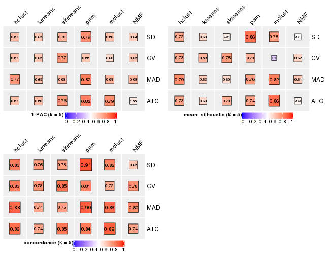
collect_stats(res_list, k = 6)
Collect partitions from all methods:
collect_classes(res_list, k = 2)
collect_classes(res_list, k = 3)
collect_classes(res_list, k = 4)
collect_classes(res_list, k = 5)
collect_classes(res_list, k = 6)
Overlap of top rows from different top-row methods:
top_rows_overlap(res_list, top_n = 1000, method = "euler")
top_rows_overlap(res_list, top_n = 2000, method = "euler")
top_rows_overlap(res_list, top_n = 3000, method = "euler")
top_rows_overlap(res_list, top_n = 4000, method = "euler")
top_rows_overlap(res_list, top_n = 5000, method = "euler")
Also visualize the correspondance of rankings between different top-row methods:
top_rows_overlap(res_list, top_n = 1000, method = "correspondance")
top_rows_overlap(res_list, top_n = 2000, method = "correspondance")
top_rows_overlap(res_list, top_n = 3000, method = "correspondance")
top_rows_overlap(res_list, top_n = 4000, method = "correspondance")
top_rows_overlap(res_list, top_n = 5000, method = "correspondance")
Heatmaps of the top rows:
top_rows_heatmap(res_list, top_n = 1000)
top_rows_heatmap(res_list, top_n = 2000)
top_rows_heatmap(res_list, top_n = 3000)
top_rows_heatmap(res_list, top_n = 4000)

top_rows_heatmap(res_list, top_n = 5000)
The object with results only for a single top-value method and a single partition method can be extracted as:
res = res_list["SD", "hclust"]
# you can also extract it by
# res = res_list["SD:hclust"]
A summary of res and all the functions that can be applied to it:
res
#> A 'ConsensusPartition' object with k = 2, 3, 4, 5, 6.
#> On a matrix with 17181 rows and 69 columns.
#> Top rows (1000, 2000, 3000, 4000, 5000) are extracted by 'SD' method.
#> Subgroups are detected by 'hclust' method.
#> Performed in total 1250 partitions by row resampling.
#> Best k for subgroups seems to be 2.
#>
#> Following methods can be applied to this 'ConsensusPartition' object:
#> [1] "cola_report" "collect_classes" "collect_plots"
#> [4] "collect_stats" "colnames" "compare_signatures"
#> [7] "consensus_heatmap" "dimension_reduction" "functional_enrichment"
#> [10] "get_anno_col" "get_anno" "get_classes"
#> [13] "get_consensus" "get_matrix" "get_membership"
#> [16] "get_param" "get_signatures" "get_stats"
#> [19] "is_best_k" "is_stable_k" "membership_heatmap"
#> [22] "ncol" "nrow" "plot_ecdf"
#> [25] "rownames" "select_partition_number" "show"
#> [28] "suggest_best_k" "test_to_known_factors"
collect_plots() function collects all the plots made from res for all k (number of partitions)
into one single page to provide an easy and fast comparison between different k.
collect_plots(res)
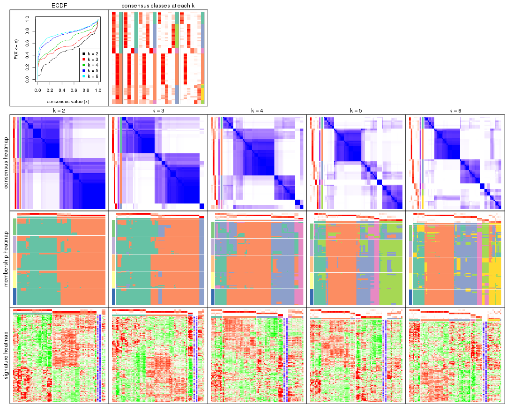
The plots are:
k and the heatmap of
predicted classes for each k.k.k.k.All the plots in panels can be made by individual functions and they are plotted later in this section.
select_partition_number() produces several plots showing different
statistics for choosing “optimized” k. There are following statistics:
k;k, the area increased is defined as \(A_k - A_{k-1}\).The detailed explanations of these statistics can be found in the cola vignette.
Generally speaking, lower PAC score, higher mean silhouette score or higher
concordance corresponds to better partition. Rand index and Jaccard index
measure how similar the current partition is compared to partition with k-1.
If they are too similar, we won't accept k is better than k-1.
select_partition_number(res)
The numeric values for all these statistics can be obtained by get_stats().
get_stats(res)
#> k 1-PAC mean_silhouette concordance area_increased Rand Jaccard
#> 2 2 0.549 0.825 0.905 0.4755 0.498 0.498
#> 3 3 0.605 0.815 0.912 0.1899 0.954 0.908
#> 4 4 0.592 0.700 0.827 0.1389 0.881 0.740
#> 5 5 0.672 0.723 0.828 0.1589 0.868 0.631
#> 6 6 0.717 0.751 0.826 0.0379 0.967 0.865
suggest_best_k() suggests the best \(k\) based on these statistics. The rules are as follows:
NA.suggest_best_k(res)
#> [1] 2
Following shows the table of the partitions (You need to click the show/hide
code output link to see it). The membership matrix (columns with name p*)
is inferred by
clue::cl_consensus()
function with the SE method. Basically the value in the membership matrix
represents the probability to belong to a certain group. The finall class
label for an item is determined with the group with highest probability it
belongs to.
In get_classes() function, the entropy is calculated from the membership
matrix and the silhouette score is calculated from the consensus matrix.
cbind(get_classes(res, k = 2), get_membership(res, k = 2))
#> class entropy silhouette p1 p2
#> SRR1747143 1 0.7219 0.814 0.800 0.200
#> SRR1747144 1 0.0000 0.882 1.000 0.000
#> SRR1747145 2 0.8499 0.638 0.276 0.724
#> SRR1747146 2 0.7950 0.705 0.240 0.760
#> SRR1747148 2 0.8955 0.590 0.312 0.688
#> SRR1747147 2 0.6438 0.781 0.164 0.836
#> SRR1747149 1 0.0000 0.882 1.000 0.000
#> SRR1747150 1 0.7219 0.814 0.800 0.200
#> SRR1747151 1 0.8016 0.756 0.756 0.244
#> SRR1747152 2 0.9732 0.315 0.404 0.596
#> SRR1747153 2 0.7950 0.705 0.240 0.760
#> SRR1747154 2 0.8555 0.632 0.280 0.720
#> SRR1747155 2 0.0000 0.893 0.000 1.000
#> SRR1747156 2 0.1414 0.886 0.020 0.980
#> SRR1747157 2 0.9732 0.315 0.404 0.596
#> SRR1747159 1 0.3274 0.911 0.940 0.060
#> SRR1747158 2 0.0938 0.889 0.012 0.988
#> SRR1747160 2 0.0000 0.893 0.000 1.000
#> SRR1747161 2 0.9732 0.315 0.404 0.596
#> SRR1747162 2 0.0000 0.893 0.000 1.000
#> SRR1747163 1 0.3879 0.906 0.924 0.076
#> SRR1747164 2 0.0000 0.893 0.000 1.000
#> SRR1747165 2 0.6438 0.781 0.164 0.836
#> SRR1747167 1 0.3274 0.911 0.940 0.060
#> SRR1747166 1 0.7219 0.814 0.800 0.200
#> SRR1747168 2 0.2236 0.881 0.036 0.964
#> SRR1747169 2 0.0000 0.893 0.000 1.000
#> SRR1747170 2 0.2236 0.881 0.036 0.964
#> SRR1747172 2 0.1633 0.886 0.024 0.976
#> SRR1747171 2 0.0000 0.893 0.000 1.000
#> SRR1747173 2 0.0000 0.893 0.000 1.000
#> SRR1747174 2 0.2236 0.881 0.036 0.964
#> SRR1747175 1 0.9000 0.617 0.684 0.316
#> SRR1747176 2 0.0000 0.893 0.000 1.000
#> SRR1747177 1 0.3274 0.911 0.940 0.060
#> SRR1747178 1 0.3274 0.911 0.940 0.060
#> SRR1747179 1 0.9000 0.617 0.684 0.316
#> SRR1747180 2 0.0000 0.893 0.000 1.000
#> SRR1747181 1 0.0000 0.882 1.000 0.000
#> SRR1747183 1 0.3274 0.911 0.940 0.060
#> SRR1747182 2 0.0000 0.893 0.000 1.000
#> SRR1747184 1 0.0000 0.882 1.000 0.000
#> SRR1747185 1 0.9000 0.617 0.684 0.316
#> SRR1747186 2 0.0000 0.893 0.000 1.000
#> SRR1747187 2 0.0000 0.893 0.000 1.000
#> SRR1747188 2 0.0000 0.893 0.000 1.000
#> SRR1747189 2 0.2236 0.881 0.036 0.964
#> SRR1747191 2 0.0000 0.893 0.000 1.000
#> SRR1747190 2 0.0000 0.893 0.000 1.000
#> SRR1747192 1 0.3274 0.911 0.940 0.060
#> SRR1747193 1 0.0000 0.882 1.000 0.000
#> SRR1747194 1 0.3274 0.911 0.940 0.060
#> SRR1747195 1 0.6623 0.831 0.828 0.172
#> SRR1747197 1 0.6531 0.829 0.832 0.168
#> SRR1747196 1 0.3274 0.911 0.940 0.060
#> SRR1747199 1 0.3274 0.911 0.940 0.060
#> SRR1747198 1 0.3274 0.911 0.940 0.060
#> SRR1747200 2 0.0000 0.893 0.000 1.000
#> SRR1747201 1 0.5408 0.879 0.876 0.124
#> SRR1747202 2 0.1184 0.888 0.016 0.984
#> SRR1747203 2 0.0000 0.893 0.000 1.000
#> SRR1747204 2 0.8955 0.597 0.312 0.688
#> SRR1747205 2 0.0000 0.893 0.000 1.000
#> SRR1747206 1 0.0000 0.882 1.000 0.000
#> SRR1747207 1 0.0000 0.882 1.000 0.000
#> SRR1747208 1 0.4022 0.904 0.920 0.080
#> SRR1747210 1 0.3274 0.911 0.940 0.060
#> SRR1747209 2 0.0000 0.893 0.000 1.000
#> SRR1747211 1 0.4022 0.904 0.920 0.080
cbind(get_classes(res, k = 3), get_membership(res, k = 3))
#> class entropy silhouette p1 p2 p3
#> SRR1747143 1 0.3816 0.810 0.852 0.148 0.000
#> SRR1747144 3 0.0000 1.000 0.000 0.000 1.000
#> SRR1747145 2 0.5733 0.543 0.324 0.676 0.000
#> SRR1747146 2 0.5529 0.616 0.296 0.704 0.000
#> SRR1747148 2 0.5988 0.476 0.368 0.632 0.000
#> SRR1747147 2 0.4741 0.781 0.020 0.828 0.152
#> SRR1747149 3 0.0000 1.000 0.000 0.000 1.000
#> SRR1747150 1 0.3816 0.810 0.852 0.148 0.000
#> SRR1747151 1 0.4452 0.764 0.808 0.192 0.000
#> SRR1747152 2 0.6896 0.417 0.020 0.588 0.392
#> SRR1747153 2 0.5529 0.616 0.296 0.704 0.000
#> SRR1747154 2 0.5760 0.536 0.328 0.672 0.000
#> SRR1747155 2 0.0237 0.883 0.004 0.996 0.000
#> SRR1747156 2 0.1411 0.868 0.036 0.964 0.000
#> SRR1747157 2 0.6896 0.417 0.020 0.588 0.392
#> SRR1747159 1 0.0000 0.885 1.000 0.000 0.000
#> SRR1747158 2 0.0892 0.878 0.020 0.980 0.000
#> SRR1747160 2 0.0000 0.883 0.000 1.000 0.000
#> SRR1747161 2 0.6896 0.417 0.020 0.588 0.392
#> SRR1747162 2 0.0424 0.883 0.008 0.992 0.000
#> SRR1747163 1 0.0747 0.882 0.984 0.016 0.000
#> SRR1747164 2 0.0424 0.883 0.008 0.992 0.000
#> SRR1747165 2 0.4741 0.781 0.020 0.828 0.152
#> SRR1747167 1 0.0000 0.885 1.000 0.000 0.000
#> SRR1747166 1 0.3816 0.810 0.852 0.148 0.000
#> SRR1747168 2 0.1411 0.873 0.000 0.964 0.036
#> SRR1747169 2 0.0000 0.883 0.000 1.000 0.000
#> SRR1747170 2 0.1411 0.873 0.000 0.964 0.036
#> SRR1747172 2 0.1031 0.877 0.000 0.976 0.024
#> SRR1747171 2 0.0000 0.883 0.000 1.000 0.000
#> SRR1747173 2 0.0000 0.883 0.000 1.000 0.000
#> SRR1747174 2 0.1411 0.873 0.000 0.964 0.036
#> SRR1747175 1 0.5254 0.664 0.736 0.264 0.000
#> SRR1747176 2 0.0237 0.883 0.004 0.996 0.000
#> SRR1747177 1 0.0000 0.885 1.000 0.000 0.000
#> SRR1747178 1 0.0000 0.885 1.000 0.000 0.000
#> SRR1747179 1 0.5254 0.664 0.736 0.264 0.000
#> SRR1747180 2 0.0000 0.883 0.000 1.000 0.000
#> SRR1747181 1 0.5178 0.628 0.744 0.000 0.256
#> SRR1747183 1 0.0000 0.885 1.000 0.000 0.000
#> SRR1747182 2 0.0000 0.883 0.000 1.000 0.000
#> SRR1747184 3 0.0000 1.000 0.000 0.000 1.000
#> SRR1747185 1 0.5254 0.664 0.736 0.264 0.000
#> SRR1747186 2 0.0000 0.883 0.000 1.000 0.000
#> SRR1747187 2 0.0000 0.883 0.000 1.000 0.000
#> SRR1747188 2 0.0237 0.883 0.004 0.996 0.000
#> SRR1747189 2 0.1411 0.873 0.000 0.964 0.036
#> SRR1747191 2 0.0000 0.883 0.000 1.000 0.000
#> SRR1747190 2 0.0000 0.883 0.000 1.000 0.000
#> SRR1747192 1 0.0000 0.885 1.000 0.000 0.000
#> SRR1747193 1 0.2537 0.840 0.920 0.000 0.080
#> SRR1747194 1 0.0000 0.885 1.000 0.000 0.000
#> SRR1747195 1 0.3267 0.815 0.884 0.116 0.000
#> SRR1747197 1 0.4397 0.805 0.856 0.116 0.028
#> SRR1747196 1 0.0000 0.885 1.000 0.000 0.000
#> SRR1747199 1 0.0000 0.885 1.000 0.000 0.000
#> SRR1747198 1 0.0000 0.885 1.000 0.000 0.000
#> SRR1747200 2 0.0000 0.883 0.000 1.000 0.000
#> SRR1747201 1 0.2165 0.864 0.936 0.064 0.000
#> SRR1747202 2 0.1031 0.875 0.024 0.976 0.000
#> SRR1747203 2 0.0000 0.883 0.000 1.000 0.000
#> SRR1747204 2 0.5988 0.489 0.368 0.632 0.000
#> SRR1747205 2 0.0892 0.879 0.020 0.980 0.000
#> SRR1747206 3 0.0000 1.000 0.000 0.000 1.000
#> SRR1747207 1 0.2537 0.840 0.920 0.000 0.080
#> SRR1747208 1 0.0892 0.881 0.980 0.020 0.000
#> SRR1747210 1 0.0000 0.885 1.000 0.000 0.000
#> SRR1747209 2 0.0000 0.883 0.000 1.000 0.000
#> SRR1747211 1 0.0892 0.881 0.980 0.020 0.000
cbind(get_classes(res, k = 4), get_membership(res, k = 4))
#> class entropy silhouette p1 p2 p3 p4
#> SRR1747143 3 0.2401 0.733 0.004 0.092 0.904 0.000
#> SRR1747144 4 0.0000 0.589 0.000 0.000 0.000 1.000
#> SRR1747145 2 0.5189 0.450 0.012 0.616 0.372 0.000
#> SRR1747146 2 0.6669 0.423 0.108 0.572 0.320 0.000
#> SRR1747148 2 0.5735 0.400 0.032 0.576 0.392 0.000
#> SRR1747147 2 0.7876 0.322 0.272 0.556 0.056 0.116
#> SRR1747149 4 0.0000 0.589 0.000 0.000 0.000 1.000
#> SRR1747150 3 0.2401 0.733 0.004 0.092 0.904 0.000
#> SRR1747151 3 0.3052 0.687 0.004 0.136 0.860 0.000
#> SRR1747152 4 0.8997 0.412 0.272 0.316 0.056 0.356
#> SRR1747153 2 0.6669 0.423 0.108 0.572 0.320 0.000
#> SRR1747154 2 0.5204 0.444 0.012 0.612 0.376 0.000
#> SRR1747155 2 0.0524 0.845 0.008 0.988 0.004 0.000
#> SRR1747156 2 0.2596 0.801 0.024 0.908 0.068 0.000
#> SRR1747157 4 0.8997 0.412 0.272 0.316 0.056 0.356
#> SRR1747159 3 0.2647 0.725 0.120 0.000 0.880 0.000
#> SRR1747158 2 0.3342 0.768 0.100 0.868 0.032 0.000
#> SRR1747160 2 0.0000 0.847 0.000 1.000 0.000 0.000
#> SRR1747161 4 0.8997 0.412 0.272 0.316 0.056 0.356
#> SRR1747162 2 0.0672 0.845 0.008 0.984 0.008 0.000
#> SRR1747163 3 0.1489 0.766 0.044 0.004 0.952 0.000
#> SRR1747164 2 0.0672 0.845 0.008 0.984 0.008 0.000
#> SRR1747165 2 0.7876 0.322 0.272 0.556 0.056 0.116
#> SRR1747167 3 0.2530 0.740 0.112 0.000 0.888 0.000
#> SRR1747166 3 0.2401 0.733 0.004 0.092 0.904 0.000
#> SRR1747168 2 0.2266 0.810 0.084 0.912 0.004 0.000
#> SRR1747169 2 0.0188 0.847 0.004 0.996 0.000 0.000
#> SRR1747170 2 0.2266 0.810 0.084 0.912 0.004 0.000
#> SRR1747172 2 0.1902 0.821 0.064 0.932 0.004 0.000
#> SRR1747171 2 0.0000 0.847 0.000 1.000 0.000 0.000
#> SRR1747173 2 0.1305 0.832 0.036 0.960 0.004 0.000
#> SRR1747174 2 0.2125 0.814 0.076 0.920 0.004 0.000
#> SRR1747175 3 0.4011 0.570 0.008 0.208 0.784 0.000
#> SRR1747176 2 0.0188 0.846 0.000 0.996 0.004 0.000
#> SRR1747177 3 0.1557 0.764 0.056 0.000 0.944 0.000
#> SRR1747178 3 0.2589 0.740 0.116 0.000 0.884 0.000
#> SRR1747179 3 0.4011 0.570 0.008 0.208 0.784 0.000
#> SRR1747180 2 0.0188 0.847 0.004 0.996 0.000 0.000
#> SRR1747181 1 0.6810 0.632 0.596 0.000 0.156 0.248
#> SRR1747183 3 0.3219 0.685 0.164 0.000 0.836 0.000
#> SRR1747182 2 0.0000 0.847 0.000 1.000 0.000 0.000
#> SRR1747184 4 0.0000 0.589 0.000 0.000 0.000 1.000
#> SRR1747185 3 0.4011 0.570 0.008 0.208 0.784 0.000
#> SRR1747186 2 0.0000 0.847 0.000 1.000 0.000 0.000
#> SRR1747187 2 0.0188 0.847 0.004 0.996 0.000 0.000
#> SRR1747188 2 0.0188 0.846 0.000 0.996 0.004 0.000
#> SRR1747189 2 0.2266 0.810 0.084 0.912 0.004 0.000
#> SRR1747191 2 0.0188 0.847 0.004 0.996 0.000 0.000
#> SRR1747190 2 0.0188 0.847 0.004 0.996 0.000 0.000
#> SRR1747192 3 0.1557 0.764 0.056 0.000 0.944 0.000
#> SRR1747193 1 0.5392 0.767 0.724 0.000 0.204 0.072
#> SRR1747194 3 0.1557 0.764 0.056 0.000 0.944 0.000
#> SRR1747195 1 0.6106 0.710 0.604 0.064 0.332 0.000
#> SRR1747197 1 0.5926 0.712 0.648 0.020 0.304 0.028
#> SRR1747196 3 0.1557 0.764 0.056 0.000 0.944 0.000
#> SRR1747199 1 0.4855 0.731 0.600 0.000 0.400 0.000
#> SRR1747198 1 0.4855 0.731 0.600 0.000 0.400 0.000
#> SRR1747200 2 0.0188 0.847 0.004 0.996 0.000 0.000
#> SRR1747201 3 0.5256 0.374 0.260 0.040 0.700 0.000
#> SRR1747202 2 0.0817 0.839 0.000 0.976 0.024 0.000
#> SRR1747203 2 0.0000 0.847 0.000 1.000 0.000 0.000
#> SRR1747204 2 0.7271 0.344 0.192 0.532 0.276 0.000
#> SRR1747205 2 0.0779 0.842 0.004 0.980 0.016 0.000
#> SRR1747206 4 0.0000 0.589 0.000 0.000 0.000 1.000
#> SRR1747207 1 0.5392 0.767 0.724 0.000 0.204 0.072
#> SRR1747208 1 0.5173 0.796 0.660 0.020 0.320 0.000
#> SRR1747210 3 0.2973 0.709 0.144 0.000 0.856 0.000
#> SRR1747209 2 0.0188 0.847 0.004 0.996 0.000 0.000
#> SRR1747211 1 0.5173 0.796 0.660 0.020 0.320 0.000
cbind(get_classes(res, k = 5), get_membership(res, k = 5))
#> class entropy silhouette p1 p2 p3 p4 p5
#> SRR1747143 5 0.3085 0.8017 0.000 0.032 0.116 0.000 0.852
#> SRR1747144 4 0.0000 1.0000 0.000 0.000 0.000 1.000 0.000
#> SRR1747145 3 0.5322 0.4441 0.000 0.072 0.608 0.000 0.320
#> SRR1747146 3 0.4254 0.5657 0.000 0.040 0.740 0.000 0.220
#> SRR1747148 3 0.4777 0.4997 0.000 0.044 0.664 0.000 0.292
#> SRR1747147 3 0.2462 0.5231 0.000 0.008 0.880 0.112 0.000
#> SRR1747149 4 0.0000 1.0000 0.000 0.000 0.000 1.000 0.000
#> SRR1747150 5 0.3085 0.8017 0.000 0.032 0.116 0.000 0.852
#> SRR1747151 5 0.3577 0.7707 0.000 0.032 0.160 0.000 0.808
#> SRR1747152 3 0.4182 0.2505 0.000 0.004 0.644 0.352 0.000
#> SRR1747153 3 0.4254 0.5657 0.000 0.040 0.740 0.000 0.220
#> SRR1747154 3 0.5284 0.4416 0.000 0.068 0.608 0.000 0.324
#> SRR1747155 2 0.3424 0.6002 0.000 0.760 0.240 0.000 0.000
#> SRR1747156 3 0.4886 0.3948 0.000 0.372 0.596 0.000 0.032
#> SRR1747157 3 0.4182 0.2505 0.000 0.004 0.644 0.352 0.000
#> SRR1747159 5 0.3688 0.7279 0.124 0.000 0.060 0.000 0.816
#> SRR1747158 3 0.3949 0.4944 0.000 0.300 0.696 0.000 0.004
#> SRR1747160 2 0.0162 0.9193 0.000 0.996 0.004 0.000 0.000
#> SRR1747161 3 0.4182 0.2505 0.000 0.004 0.644 0.352 0.000
#> SRR1747162 3 0.4450 0.0602 0.000 0.488 0.508 0.000 0.004
#> SRR1747163 5 0.0404 0.8219 0.000 0.000 0.012 0.000 0.988
#> SRR1747164 2 0.4451 -0.1659 0.000 0.504 0.492 0.000 0.004
#> SRR1747165 3 0.2462 0.5231 0.000 0.008 0.880 0.112 0.000
#> SRR1747167 5 0.2068 0.7896 0.092 0.000 0.004 0.000 0.904
#> SRR1747166 5 0.3085 0.8017 0.000 0.032 0.116 0.000 0.852
#> SRR1747168 2 0.2127 0.8696 0.000 0.892 0.108 0.000 0.000
#> SRR1747169 2 0.0000 0.9203 0.000 1.000 0.000 0.000 0.000
#> SRR1747170 2 0.2127 0.8696 0.000 0.892 0.108 0.000 0.000
#> SRR1747172 2 0.1792 0.8863 0.000 0.916 0.084 0.000 0.000
#> SRR1747171 2 0.0162 0.9193 0.000 0.996 0.004 0.000 0.000
#> SRR1747173 2 0.1341 0.9013 0.000 0.944 0.056 0.000 0.000
#> SRR1747174 2 0.1965 0.8784 0.000 0.904 0.096 0.000 0.000
#> SRR1747175 5 0.4394 0.6643 0.004 0.036 0.228 0.000 0.732
#> SRR1747176 2 0.0865 0.9151 0.000 0.972 0.024 0.000 0.004
#> SRR1747177 5 0.0290 0.8208 0.000 0.000 0.008 0.000 0.992
#> SRR1747178 5 0.2124 0.7899 0.096 0.000 0.004 0.000 0.900
#> SRR1747179 5 0.4394 0.6643 0.004 0.036 0.228 0.000 0.732
#> SRR1747180 2 0.0000 0.9203 0.000 1.000 0.000 0.000 0.000
#> SRR1747181 1 0.3632 0.5581 0.800 0.000 0.004 0.176 0.020
#> SRR1747183 5 0.3109 0.7103 0.200 0.000 0.000 0.000 0.800
#> SRR1747182 2 0.0162 0.9193 0.000 0.996 0.004 0.000 0.000
#> SRR1747184 4 0.0000 1.0000 0.000 0.000 0.000 1.000 0.000
#> SRR1747185 5 0.4394 0.6643 0.004 0.036 0.228 0.000 0.732
#> SRR1747186 2 0.0162 0.9193 0.000 0.996 0.004 0.000 0.000
#> SRR1747187 2 0.0000 0.9203 0.000 1.000 0.000 0.000 0.000
#> SRR1747188 2 0.0865 0.9151 0.000 0.972 0.024 0.000 0.004
#> SRR1747189 2 0.2127 0.8696 0.000 0.892 0.108 0.000 0.000
#> SRR1747191 2 0.0000 0.9203 0.000 1.000 0.000 0.000 0.000
#> SRR1747190 2 0.0000 0.9203 0.000 1.000 0.000 0.000 0.000
#> SRR1747192 5 0.0162 0.8215 0.000 0.000 0.004 0.000 0.996
#> SRR1747193 1 0.0000 0.6960 1.000 0.000 0.000 0.000 0.000
#> SRR1747194 5 0.0290 0.8208 0.000 0.000 0.008 0.000 0.992
#> SRR1747195 1 0.6601 0.7066 0.592 0.056 0.116 0.000 0.236
#> SRR1747197 1 0.6071 0.6579 0.572 0.000 0.192 0.000 0.236
#> SRR1747196 5 0.0162 0.8215 0.000 0.000 0.004 0.000 0.996
#> SRR1747199 1 0.4755 0.7515 0.696 0.000 0.060 0.000 0.244
#> SRR1747198 1 0.4755 0.7515 0.696 0.000 0.060 0.000 0.244
#> SRR1747200 2 0.0000 0.9203 0.000 1.000 0.000 0.000 0.000
#> SRR1747201 5 0.5233 0.4957 0.268 0.028 0.036 0.000 0.668
#> SRR1747202 2 0.1403 0.9023 0.000 0.952 0.024 0.000 0.024
#> SRR1747203 2 0.2605 0.7896 0.000 0.852 0.148 0.000 0.000
#> SRR1747204 3 0.5921 0.4516 0.132 0.036 0.668 0.000 0.164
#> SRR1747205 2 0.0898 0.9092 0.000 0.972 0.008 0.000 0.020
#> SRR1747206 4 0.0000 1.0000 0.000 0.000 0.000 1.000 0.000
#> SRR1747207 1 0.0000 0.6960 1.000 0.000 0.000 0.000 0.000
#> SRR1747208 1 0.4362 0.7952 0.788 0.020 0.060 0.000 0.132
#> SRR1747210 5 0.3048 0.7340 0.176 0.000 0.004 0.000 0.820
#> SRR1747209 2 0.0000 0.9203 0.000 1.000 0.000 0.000 0.000
#> SRR1747211 1 0.4362 0.7952 0.788 0.020 0.060 0.000 0.132
cbind(get_classes(res, k = 6), get_membership(res, k = 6))
#> class entropy silhouette p1 p2 p3 p4 p5 p6
#> SRR1747143 3 0.3100 0.7866 0.000 0.028 0.848 0.004 0.012 0.108
#> SRR1747144 4 0.3446 1.0000 0.000 0.000 0.000 0.692 0.308 0.000
#> SRR1747145 6 0.4477 0.4102 0.000 0.036 0.308 0.000 0.008 0.648
#> SRR1747146 6 0.2942 0.3948 0.000 0.008 0.064 0.000 0.068 0.860
#> SRR1747148 6 0.3166 0.4347 0.000 0.008 0.184 0.000 0.008 0.800
#> SRR1747147 5 0.3955 0.6650 0.000 0.000 0.008 0.000 0.608 0.384
#> SRR1747149 4 0.3446 1.0000 0.000 0.000 0.000 0.692 0.308 0.000
#> SRR1747150 3 0.3100 0.7866 0.000 0.028 0.848 0.004 0.012 0.108
#> SRR1747151 3 0.3555 0.7565 0.000 0.028 0.804 0.004 0.012 0.152
#> SRR1747152 5 0.2553 0.7647 0.000 0.000 0.008 0.000 0.848 0.144
#> SRR1747153 6 0.2942 0.3948 0.000 0.008 0.064 0.000 0.068 0.860
#> SRR1747154 6 0.4428 0.4088 0.000 0.032 0.312 0.000 0.008 0.648
#> SRR1747155 2 0.3271 0.5871 0.000 0.760 0.000 0.000 0.008 0.232
#> SRR1747156 6 0.4171 0.4063 0.000 0.320 0.000 0.012 0.012 0.656
#> SRR1747157 5 0.2553 0.7647 0.000 0.000 0.008 0.000 0.848 0.144
#> SRR1747159 3 0.4511 0.6924 0.124 0.000 0.736 0.008 0.004 0.128
#> SRR1747158 6 0.7502 0.0573 0.000 0.112 0.008 0.260 0.240 0.380
#> SRR1747160 2 0.0000 0.9338 0.000 1.000 0.000 0.000 0.000 0.000
#> SRR1747161 5 0.2553 0.7647 0.000 0.000 0.008 0.000 0.848 0.144
#> SRR1747162 6 0.4469 0.2797 0.000 0.436 0.000 0.012 0.012 0.540
#> SRR1747163 3 0.0405 0.8142 0.000 0.000 0.988 0.008 0.004 0.000
#> SRR1747164 6 0.4093 0.2692 0.000 0.476 0.000 0.000 0.008 0.516
#> SRR1747165 5 0.3955 0.6650 0.000 0.000 0.008 0.000 0.608 0.384
#> SRR1747167 3 0.2256 0.7934 0.092 0.000 0.892 0.008 0.004 0.004
#> SRR1747166 3 0.3100 0.7866 0.000 0.028 0.848 0.004 0.012 0.108
#> SRR1747168 2 0.2655 0.8802 0.000 0.872 0.000 0.012 0.096 0.020
#> SRR1747169 2 0.0146 0.9349 0.000 0.996 0.000 0.000 0.004 0.000
#> SRR1747170 2 0.2655 0.8802 0.000 0.872 0.000 0.012 0.096 0.020
#> SRR1747172 2 0.2339 0.8976 0.000 0.896 0.000 0.012 0.072 0.020
#> SRR1747171 2 0.0000 0.9338 0.000 1.000 0.000 0.000 0.000 0.000
#> SRR1747173 2 0.1908 0.9132 0.000 0.924 0.000 0.012 0.044 0.020
#> SRR1747174 2 0.2502 0.8891 0.000 0.884 0.000 0.012 0.084 0.020
#> SRR1747175 3 0.4225 0.6634 0.004 0.024 0.728 0.008 0.008 0.228
#> SRR1747176 2 0.1296 0.9237 0.000 0.952 0.000 0.012 0.004 0.032
#> SRR1747177 3 0.1261 0.8144 0.000 0.000 0.952 0.024 0.000 0.024
#> SRR1747178 3 0.2163 0.7968 0.096 0.000 0.892 0.008 0.000 0.004
#> SRR1747179 3 0.4225 0.6634 0.004 0.024 0.728 0.008 0.008 0.228
#> SRR1747180 2 0.0146 0.9349 0.000 0.996 0.000 0.000 0.004 0.000
#> SRR1747181 1 0.4126 0.6340 0.784 0.000 0.000 0.100 0.084 0.032
#> SRR1747183 3 0.3183 0.7310 0.200 0.000 0.788 0.008 0.004 0.000
#> SRR1747182 2 0.0000 0.9338 0.000 1.000 0.000 0.000 0.000 0.000
#> SRR1747184 4 0.3446 1.0000 0.000 0.000 0.000 0.692 0.308 0.000
#> SRR1747185 3 0.4225 0.6634 0.004 0.024 0.728 0.008 0.008 0.228
#> SRR1747186 2 0.0000 0.9338 0.000 1.000 0.000 0.000 0.000 0.000
#> SRR1747187 2 0.0146 0.9349 0.000 0.996 0.000 0.000 0.004 0.000
#> SRR1747188 2 0.1370 0.9219 0.000 0.948 0.000 0.012 0.004 0.036
#> SRR1747189 2 0.2655 0.8802 0.000 0.872 0.000 0.012 0.096 0.020
#> SRR1747191 2 0.0146 0.9349 0.000 0.996 0.000 0.000 0.004 0.000
#> SRR1747190 2 0.0146 0.9349 0.000 0.996 0.000 0.000 0.004 0.000
#> SRR1747192 3 0.1261 0.8142 0.000 0.000 0.952 0.024 0.000 0.024
#> SRR1747193 1 0.0508 0.7504 0.984 0.000 0.000 0.004 0.012 0.000
#> SRR1747194 3 0.1261 0.8144 0.000 0.000 0.952 0.024 0.000 0.024
#> SRR1747195 1 0.6507 0.7245 0.604 0.052 0.120 0.004 0.036 0.184
#> SRR1747197 1 0.6232 0.6655 0.564 0.000 0.076 0.012 0.072 0.276
#> SRR1747196 3 0.1261 0.8142 0.000 0.000 0.952 0.024 0.000 0.024
#> SRR1747199 1 0.4474 0.7896 0.708 0.000 0.120 0.000 0.000 0.172
#> SRR1747198 1 0.4474 0.7896 0.708 0.000 0.120 0.000 0.000 0.172
#> SRR1747200 2 0.0146 0.9349 0.000 0.996 0.000 0.000 0.004 0.000
#> SRR1747201 3 0.5298 0.4884 0.268 0.020 0.632 0.008 0.000 0.072
#> SRR1747202 2 0.1707 0.9137 0.000 0.928 0.000 0.012 0.004 0.056
#> SRR1747203 2 0.2909 0.7849 0.000 0.828 0.000 0.012 0.004 0.156
#> SRR1747204 6 0.4823 0.3265 0.132 0.008 0.036 0.008 0.068 0.748
#> SRR1747205 2 0.0964 0.9252 0.012 0.968 0.000 0.004 0.000 0.016
#> SRR1747206 4 0.3446 1.0000 0.000 0.000 0.000 0.692 0.308 0.000
#> SRR1747207 1 0.0508 0.7504 0.984 0.000 0.000 0.004 0.012 0.000
#> SRR1747208 1 0.2793 0.8057 0.800 0.000 0.000 0.000 0.000 0.200
#> SRR1747210 3 0.3130 0.7510 0.176 0.000 0.808 0.008 0.004 0.004
#> SRR1747209 2 0.0146 0.9349 0.000 0.996 0.000 0.000 0.004 0.000
#> SRR1747211 1 0.2793 0.8057 0.800 0.000 0.000 0.000 0.000 0.200
Heatmaps for the consensus matrix. It visualizes the probability of two samples to be in a same group.
consensus_heatmap(res, k = 2)
consensus_heatmap(res, k = 3)
consensus_heatmap(res, k = 4)
consensus_heatmap(res, k = 5)
consensus_heatmap(res, k = 6)
Heatmaps for the membership of samples in all partitions to see how consistent they are:
membership_heatmap(res, k = 2)
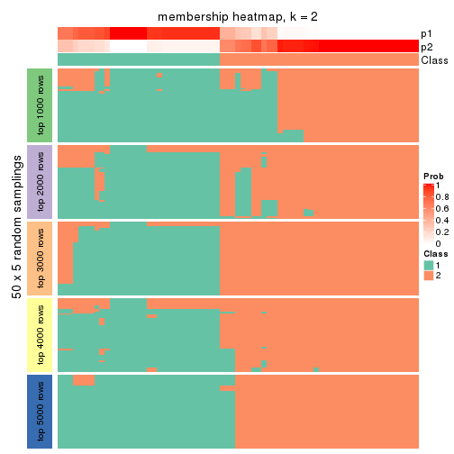
membership_heatmap(res, k = 3)
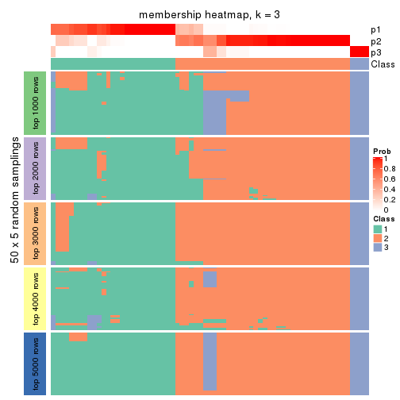
membership_heatmap(res, k = 4)
membership_heatmap(res, k = 5)
membership_heatmap(res, k = 6)
As soon as we have had the classes for columns, we can look for signatures which are significantly different between classes which can be candidate marks for certain classes. Following are the heatmaps for signatures.
Signature heatmaps where rows are scaled:
get_signatures(res, k = 2)
get_signatures(res, k = 3)
get_signatures(res, k = 4)
get_signatures(res, k = 5)
get_signatures(res, k = 6)
Signature heatmaps where rows are not scaled:
get_signatures(res, k = 2, scale_rows = FALSE)
get_signatures(res, k = 3, scale_rows = FALSE)
get_signatures(res, k = 4, scale_rows = FALSE)
get_signatures(res, k = 5, scale_rows = FALSE)
get_signatures(res, k = 6, scale_rows = FALSE)
Compare the overlap of signatures from different k:
compare_signatures(res)
get_signature() returns a data frame invisibly. TO get the list of signatures, the function
call should be assigned to a variable explicitly. In following code, if plot argument is set
to FALSE, no heatmap is plotted while only the differential analysis is performed.
# code only for demonstration
tb = get_signature(res, k = ..., plot = FALSE)
An example of the output of tb is:
#> which_row fdr mean_1 mean_2 scaled_mean_1 scaled_mean_2 km
#> 1 38 0.042760348 8.373488 9.131774 -0.5533452 0.5164555 1
#> 2 40 0.018707592 7.106213 8.469186 -0.6173731 0.5762149 1
#> 3 55 0.019134737 10.221463 11.207825 -0.6159697 0.5749050 1
#> 4 59 0.006059896 5.921854 7.869574 -0.6899429 0.6439467 1
#> 5 60 0.018055526 8.928898 10.211722 -0.6204761 0.5791110 1
#> 6 98 0.009384629 15.714769 14.887706 0.6635654 -0.6193277 2
...
The columns in tb are:
which_row: row indices corresponding to the input matrix.fdr: FDR for the differential test. mean_x: The mean value in group x.scaled_mean_x: The mean value in group x after rows are scaled.km: Row groups if k-means clustering is applied to rows.UMAP plot which shows how samples are separated.
dimension_reduction(res, k = 2, method = "UMAP")
dimension_reduction(res, k = 3, method = "UMAP")
dimension_reduction(res, k = 4, method = "UMAP")
dimension_reduction(res, k = 5, method = "UMAP")
dimension_reduction(res, k = 6, method = "UMAP")
Following heatmap shows how subgroups are split when increasing k:
collect_classes(res)
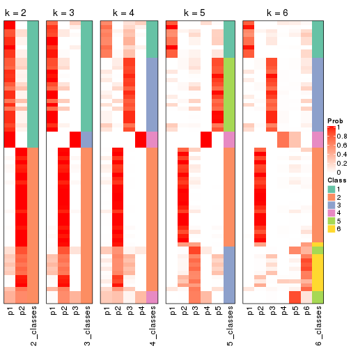
If matrix rows can be associated to genes, consider to use GO_Enrichment(res,
...) to perform function enrichment for the signature genes.
The object with results only for a single top-value method and a single partition method can be extracted as:
res = res_list["SD", "kmeans"]
# you can also extract it by
# res = res_list["SD:kmeans"]
A summary of res and all the functions that can be applied to it:
res
#> A 'ConsensusPartition' object with k = 2, 3, 4, 5, 6.
#> On a matrix with 17181 rows and 69 columns.
#> Top rows (1000, 2000, 3000, 4000, 5000) are extracted by 'SD' method.
#> Subgroups are detected by 'kmeans' method.
#> Performed in total 1250 partitions by row resampling.
#> Best k for subgroups seems to be 2.
#>
#> Following methods can be applied to this 'ConsensusPartition' object:
#> [1] "cola_report" "collect_classes" "collect_plots"
#> [4] "collect_stats" "colnames" "compare_signatures"
#> [7] "consensus_heatmap" "dimension_reduction" "functional_enrichment"
#> [10] "get_anno_col" "get_anno" "get_classes"
#> [13] "get_consensus" "get_matrix" "get_membership"
#> [16] "get_param" "get_signatures" "get_stats"
#> [19] "is_best_k" "is_stable_k" "membership_heatmap"
#> [22] "ncol" "nrow" "plot_ecdf"
#> [25] "rownames" "select_partition_number" "show"
#> [28] "suggest_best_k" "test_to_known_factors"
collect_plots() function collects all the plots made from res for all k (number of partitions)
into one single page to provide an easy and fast comparison between different k.
collect_plots(res)
The plots are:
k and the heatmap of
predicted classes for each k.k.k.k.All the plots in panels can be made by individual functions and they are plotted later in this section.
select_partition_number() produces several plots showing different
statistics for choosing “optimized” k. There are following statistics:
k;k, the area increased is defined as \(A_k - A_{k-1}\).The detailed explanations of these statistics can be found in the cola vignette.
Generally speaking, lower PAC score, higher mean silhouette score or higher
concordance corresponds to better partition. Rand index and Jaccard index
measure how similar the current partition is compared to partition with k-1.
If they are too similar, we won't accept k is better than k-1.
select_partition_number(res)
The numeric values for all these statistics can be obtained by get_stats().
get_stats(res)
#> k 1-PAC mean_silhouette concordance area_increased Rand Jaccard
#> 2 2 1.000 0.971 0.989 0.5032 0.495 0.495
#> 3 3 0.596 0.506 0.782 0.2871 0.770 0.565
#> 4 4 0.653 0.783 0.852 0.1126 0.834 0.576
#> 5 5 0.652 0.598 0.762 0.0711 0.983 0.940
#> 6 6 0.652 0.422 0.678 0.0501 0.914 0.696
suggest_best_k() suggests the best \(k\) based on these statistics. The rules are as follows:
NA.suggest_best_k(res)
#> [1] 2
Following shows the table of the partitions (You need to click the show/hide
code output link to see it). The membership matrix (columns with name p*)
is inferred by
clue::cl_consensus()
function with the SE method. Basically the value in the membership matrix
represents the probability to belong to a certain group. The finall class
label for an item is determined with the group with highest probability it
belongs to.
In get_classes() function, the entropy is calculated from the membership
matrix and the silhouette score is calculated from the consensus matrix.
cbind(get_classes(res, k = 2), get_membership(res, k = 2))
#> class entropy silhouette p1 p2
#> SRR1747143 1 0.0000 1.000 1.000 0.000
#> SRR1747144 1 0.0000 1.000 1.000 0.000
#> SRR1747145 2 0.0672 0.970 0.008 0.992
#> SRR1747146 2 0.3274 0.922 0.060 0.940
#> SRR1747148 1 0.0000 1.000 1.000 0.000
#> SRR1747147 2 0.0672 0.970 0.008 0.992
#> SRR1747149 1 0.0000 1.000 1.000 0.000
#> SRR1747150 1 0.0000 1.000 1.000 0.000
#> SRR1747151 1 0.0000 1.000 1.000 0.000
#> SRR1747152 1 0.0000 1.000 1.000 0.000
#> SRR1747153 1 0.0000 1.000 1.000 0.000
#> SRR1747154 1 0.0000 1.000 1.000 0.000
#> SRR1747155 2 0.0000 0.975 0.000 1.000
#> SRR1747156 2 0.0672 0.970 0.008 0.992
#> SRR1747157 1 0.0000 1.000 1.000 0.000
#> SRR1747159 1 0.0000 1.000 1.000 0.000
#> SRR1747158 2 0.9983 0.100 0.476 0.524
#> SRR1747160 2 0.0000 0.975 0.000 1.000
#> SRR1747161 1 0.0000 1.000 1.000 0.000
#> SRR1747162 2 0.0000 0.975 0.000 1.000
#> SRR1747163 1 0.0000 1.000 1.000 0.000
#> SRR1747164 2 0.0000 0.975 0.000 1.000
#> SRR1747165 2 0.0000 0.975 0.000 1.000
#> SRR1747167 1 0.0000 1.000 1.000 0.000
#> SRR1747166 1 0.0000 1.000 1.000 0.000
#> SRR1747168 2 0.0000 0.975 0.000 1.000
#> SRR1747169 2 0.0000 0.975 0.000 1.000
#> SRR1747170 2 0.0000 0.975 0.000 1.000
#> SRR1747172 2 0.0000 0.975 0.000 1.000
#> SRR1747171 2 0.0000 0.975 0.000 1.000
#> SRR1747173 2 0.0000 0.975 0.000 1.000
#> SRR1747174 2 0.0000 0.975 0.000 1.000
#> SRR1747175 1 0.0000 1.000 1.000 0.000
#> SRR1747176 2 0.0000 0.975 0.000 1.000
#> SRR1747177 1 0.0000 1.000 1.000 0.000
#> SRR1747178 1 0.0000 1.000 1.000 0.000
#> SRR1747179 1 0.0000 1.000 1.000 0.000
#> SRR1747180 2 0.0000 0.975 0.000 1.000
#> SRR1747181 1 0.0000 1.000 1.000 0.000
#> SRR1747183 1 0.0000 1.000 1.000 0.000
#> SRR1747182 2 0.0000 0.975 0.000 1.000
#> SRR1747184 1 0.0000 1.000 1.000 0.000
#> SRR1747185 1 0.0000 1.000 1.000 0.000
#> SRR1747186 2 0.0000 0.975 0.000 1.000
#> SRR1747187 2 0.0000 0.975 0.000 1.000
#> SRR1747188 2 0.0000 0.975 0.000 1.000
#> SRR1747189 2 0.0000 0.975 0.000 1.000
#> SRR1747191 2 0.0000 0.975 0.000 1.000
#> SRR1747190 2 0.0000 0.975 0.000 1.000
#> SRR1747192 1 0.0376 0.996 0.996 0.004
#> SRR1747193 1 0.0000 1.000 1.000 0.000
#> SRR1747194 1 0.0000 1.000 1.000 0.000
#> SRR1747195 1 0.0000 1.000 1.000 0.000
#> SRR1747197 1 0.0000 1.000 1.000 0.000
#> SRR1747196 1 0.0000 1.000 1.000 0.000
#> SRR1747199 1 0.0000 1.000 1.000 0.000
#> SRR1747198 1 0.0000 1.000 1.000 0.000
#> SRR1747200 2 0.0000 0.975 0.000 1.000
#> SRR1747201 1 0.0000 1.000 1.000 0.000
#> SRR1747202 2 0.0000 0.975 0.000 1.000
#> SRR1747203 2 0.0000 0.975 0.000 1.000
#> SRR1747204 1 0.0000 1.000 1.000 0.000
#> SRR1747205 2 0.0000 0.975 0.000 1.000
#> SRR1747206 1 0.0000 1.000 1.000 0.000
#> SRR1747207 1 0.0000 1.000 1.000 0.000
#> SRR1747208 2 0.7219 0.748 0.200 0.800
#> SRR1747210 1 0.0000 1.000 1.000 0.000
#> SRR1747209 2 0.0000 0.975 0.000 1.000
#> SRR1747211 1 0.0000 1.000 1.000 0.000
cbind(get_classes(res, k = 3), get_membership(res, k = 3))
#> class entropy silhouette p1 p2 p3
#> SRR1747143 3 0.6291 0.16541 0.468 0.000 0.532
#> SRR1747144 3 0.6252 -0.04743 0.444 0.000 0.556
#> SRR1747145 2 0.8686 -0.09366 0.104 0.464 0.432
#> SRR1747146 3 0.9756 0.30565 0.248 0.316 0.436
#> SRR1747148 1 0.6260 -0.05719 0.552 0.000 0.448
#> SRR1747147 3 0.8132 0.37736 0.096 0.304 0.600
#> SRR1747149 3 0.6252 -0.04743 0.444 0.000 0.556
#> SRR1747150 3 0.6154 0.27496 0.408 0.000 0.592
#> SRR1747151 3 0.6154 0.27496 0.408 0.000 0.592
#> SRR1747152 3 0.1031 0.38633 0.024 0.000 0.976
#> SRR1747153 1 0.6252 -0.05284 0.556 0.000 0.444
#> SRR1747154 1 0.6308 -0.15412 0.508 0.000 0.492
#> SRR1747155 2 0.0237 0.90661 0.000 0.996 0.004
#> SRR1747156 3 0.9712 0.30814 0.232 0.332 0.436
#> SRR1747157 3 0.2448 0.40882 0.076 0.000 0.924
#> SRR1747159 1 0.0592 0.64884 0.988 0.000 0.012
#> SRR1747158 3 0.8720 0.34112 0.124 0.336 0.540
#> SRR1747160 2 0.0237 0.90661 0.000 0.996 0.004
#> SRR1747161 3 0.2448 0.40882 0.076 0.000 0.924
#> SRR1747162 2 0.7263 0.28715 0.036 0.592 0.372
#> SRR1747163 3 0.6026 0.30146 0.376 0.000 0.624
#> SRR1747164 2 0.8550 -0.00341 0.096 0.492 0.412
#> SRR1747165 2 0.7029 0.16847 0.020 0.540 0.440
#> SRR1747167 1 0.0892 0.64414 0.980 0.000 0.020
#> SRR1747166 3 0.6154 0.27496 0.408 0.000 0.592
#> SRR1747168 2 0.0747 0.90155 0.000 0.984 0.016
#> SRR1747169 2 0.0000 0.90658 0.000 1.000 0.000
#> SRR1747170 2 0.0747 0.90155 0.000 0.984 0.016
#> SRR1747172 2 0.0747 0.90155 0.000 0.984 0.016
#> SRR1747171 2 0.0237 0.90661 0.000 0.996 0.004
#> SRR1747173 2 0.0424 0.90437 0.000 0.992 0.008
#> SRR1747174 2 0.0747 0.90155 0.000 0.984 0.016
#> SRR1747175 3 0.5254 0.36724 0.264 0.000 0.736
#> SRR1747176 2 0.0237 0.90661 0.000 0.996 0.004
#> SRR1747177 1 0.5988 0.32491 0.632 0.000 0.368
#> SRR1747178 1 0.3192 0.58567 0.888 0.000 0.112
#> SRR1747179 1 0.4750 0.49236 0.784 0.000 0.216
#> SRR1747180 2 0.0000 0.90658 0.000 1.000 0.000
#> SRR1747181 1 0.6126 0.19402 0.600 0.000 0.400
#> SRR1747183 1 0.0592 0.64884 0.988 0.000 0.012
#> SRR1747182 2 0.0424 0.90437 0.000 0.992 0.008
#> SRR1747184 3 0.6252 -0.04743 0.444 0.000 0.556
#> SRR1747185 3 0.6299 0.13503 0.476 0.000 0.524
#> SRR1747186 2 0.0237 0.90661 0.000 0.996 0.004
#> SRR1747187 2 0.0000 0.90658 0.000 1.000 0.000
#> SRR1747188 2 0.0237 0.90661 0.000 0.996 0.004
#> SRR1747189 2 0.0747 0.90155 0.000 0.984 0.016
#> SRR1747191 2 0.0000 0.90658 0.000 1.000 0.000
#> SRR1747190 2 0.0424 0.90432 0.000 0.992 0.008
#> SRR1747192 1 0.7835 -0.16172 0.492 0.052 0.456
#> SRR1747193 1 0.2625 0.59254 0.916 0.000 0.084
#> SRR1747194 1 0.5882 0.31387 0.652 0.000 0.348
#> SRR1747195 1 0.3412 0.57095 0.876 0.000 0.124
#> SRR1747197 1 0.0424 0.64863 0.992 0.000 0.008
#> SRR1747196 1 0.2625 0.60548 0.916 0.000 0.084
#> SRR1747199 1 0.0000 0.64793 1.000 0.000 0.000
#> SRR1747198 1 0.0000 0.64793 1.000 0.000 0.000
#> SRR1747200 2 0.0237 0.90661 0.000 0.996 0.004
#> SRR1747201 1 0.3752 0.56782 0.856 0.000 0.144
#> SRR1747202 2 0.0237 0.90661 0.000 0.996 0.004
#> SRR1747203 2 0.0237 0.90661 0.000 0.996 0.004
#> SRR1747204 1 0.6260 -0.05719 0.552 0.000 0.448
#> SRR1747205 2 0.0237 0.90661 0.000 0.996 0.004
#> SRR1747206 3 0.6244 -0.04467 0.440 0.000 0.560
#> SRR1747207 1 0.2625 0.59254 0.916 0.000 0.084
#> SRR1747208 1 0.7360 0.08877 0.528 0.440 0.032
#> SRR1747210 1 0.0237 0.64841 0.996 0.000 0.004
#> SRR1747209 2 0.0000 0.90658 0.000 1.000 0.000
#> SRR1747211 1 0.0747 0.64616 0.984 0.000 0.016
cbind(get_classes(res, k = 4), get_membership(res, k = 4))
#> class entropy silhouette p1 p2 p3 p4
#> SRR1747143 3 0.2773 0.829 0.116 0.000 0.880 0.004
#> SRR1747144 4 0.2973 0.906 0.096 0.000 0.020 0.884
#> SRR1747145 3 0.2894 0.801 0.020 0.072 0.900 0.008
#> SRR1747146 3 0.3670 0.828 0.092 0.044 0.860 0.004
#> SRR1747148 3 0.3400 0.801 0.180 0.000 0.820 0.000
#> SRR1747147 3 0.2908 0.780 0.000 0.064 0.896 0.040
#> SRR1747149 4 0.2973 0.906 0.096 0.000 0.020 0.884
#> SRR1747150 3 0.2805 0.832 0.100 0.000 0.888 0.012
#> SRR1747151 3 0.2675 0.832 0.100 0.000 0.892 0.008
#> SRR1747152 4 0.4008 0.634 0.000 0.000 0.244 0.756
#> SRR1747153 3 0.3311 0.805 0.172 0.000 0.828 0.000
#> SRR1747154 3 0.2589 0.829 0.116 0.000 0.884 0.000
#> SRR1747155 2 0.2860 0.928 0.004 0.904 0.048 0.044
#> SRR1747156 3 0.3833 0.826 0.088 0.048 0.856 0.008
#> SRR1747157 3 0.4304 0.547 0.000 0.000 0.716 0.284
#> SRR1747159 1 0.2859 0.737 0.880 0.000 0.112 0.008
#> SRR1747158 3 0.3963 0.737 0.016 0.132 0.836 0.016
#> SRR1747160 2 0.2505 0.933 0.004 0.920 0.036 0.040
#> SRR1747161 3 0.4304 0.547 0.000 0.000 0.716 0.284
#> SRR1747162 3 0.6187 0.356 0.004 0.360 0.584 0.052
#> SRR1747163 3 0.3333 0.827 0.088 0.000 0.872 0.040
#> SRR1747164 3 0.4020 0.738 0.016 0.156 0.820 0.008
#> SRR1747165 3 0.4814 0.672 0.004 0.172 0.776 0.048
#> SRR1747167 1 0.4094 0.739 0.828 0.000 0.056 0.116
#> SRR1747166 3 0.2805 0.832 0.100 0.000 0.888 0.012
#> SRR1747168 2 0.3870 0.886 0.004 0.852 0.064 0.080
#> SRR1747169 2 0.0336 0.944 0.008 0.992 0.000 0.000
#> SRR1747170 2 0.3870 0.886 0.004 0.852 0.064 0.080
#> SRR1747172 2 0.3168 0.911 0.004 0.888 0.040 0.068
#> SRR1747171 2 0.2505 0.933 0.004 0.920 0.036 0.040
#> SRR1747173 2 0.2040 0.934 0.004 0.936 0.012 0.048
#> SRR1747174 2 0.2774 0.916 0.004 0.908 0.044 0.044
#> SRR1747175 3 0.4236 0.773 0.088 0.000 0.824 0.088
#> SRR1747176 2 0.1443 0.940 0.008 0.960 0.028 0.004
#> SRR1747177 1 0.6663 0.459 0.556 0.000 0.344 0.100
#> SRR1747178 1 0.3711 0.712 0.836 0.000 0.024 0.140
#> SRR1747179 1 0.5291 0.509 0.652 0.000 0.324 0.024
#> SRR1747180 2 0.0336 0.944 0.008 0.992 0.000 0.000
#> SRR1747181 1 0.5168 0.030 0.504 0.000 0.004 0.492
#> SRR1747183 1 0.2483 0.766 0.916 0.000 0.052 0.032
#> SRR1747182 2 0.2075 0.939 0.004 0.936 0.016 0.044
#> SRR1747184 4 0.2973 0.906 0.096 0.000 0.020 0.884
#> SRR1747185 3 0.4104 0.788 0.164 0.000 0.808 0.028
#> SRR1747186 2 0.1820 0.937 0.000 0.944 0.036 0.020
#> SRR1747187 2 0.0336 0.944 0.008 0.992 0.000 0.000
#> SRR1747188 2 0.1443 0.940 0.008 0.960 0.028 0.004
#> SRR1747189 2 0.3870 0.886 0.004 0.852 0.064 0.080
#> SRR1747191 2 0.0336 0.944 0.008 0.992 0.000 0.000
#> SRR1747190 2 0.2335 0.921 0.008 0.928 0.044 0.020
#> SRR1747192 3 0.5696 0.691 0.232 0.000 0.692 0.076
#> SRR1747193 1 0.2973 0.699 0.856 0.000 0.000 0.144
#> SRR1747194 1 0.5435 0.231 0.564 0.000 0.016 0.420
#> SRR1747195 1 0.4647 0.558 0.704 0.008 0.288 0.000
#> SRR1747197 1 0.0592 0.770 0.984 0.000 0.016 0.000
#> SRR1747196 1 0.2214 0.766 0.928 0.000 0.044 0.028
#> SRR1747199 1 0.0469 0.770 0.988 0.000 0.012 0.000
#> SRR1747198 1 0.0469 0.770 0.988 0.000 0.012 0.000
#> SRR1747200 2 0.1229 0.942 0.008 0.968 0.020 0.004
#> SRR1747201 1 0.5250 0.525 0.660 0.000 0.316 0.024
#> SRR1747202 2 0.1543 0.939 0.008 0.956 0.032 0.004
#> SRR1747203 2 0.2860 0.928 0.004 0.904 0.048 0.044
#> SRR1747204 3 0.3873 0.762 0.228 0.000 0.772 0.000
#> SRR1747205 2 0.1443 0.940 0.008 0.960 0.028 0.004
#> SRR1747206 4 0.3015 0.904 0.092 0.000 0.024 0.884
#> SRR1747207 1 0.2973 0.699 0.856 0.000 0.000 0.144
#> SRR1747208 1 0.3171 0.685 0.876 0.104 0.016 0.004
#> SRR1747210 1 0.2255 0.761 0.920 0.000 0.012 0.068
#> SRR1747209 2 0.0336 0.944 0.008 0.992 0.000 0.000
#> SRR1747211 1 0.0895 0.770 0.976 0.000 0.020 0.004
cbind(get_classes(res, k = 5), get_membership(res, k = 5))
#> class entropy silhouette p1 p2 p3 p4 p5
#> SRR1747143 3 0.169 0.64501 0.020 0.000 0.944 0.008 0.028
#> SRR1747144 4 0.148 0.93869 0.048 0.000 0.008 0.944 0.000
#> SRR1747145 3 0.229 0.66020 0.000 0.016 0.900 0.000 0.084
#> SRR1747146 3 0.348 0.62448 0.008 0.012 0.812 0.000 0.168
#> SRR1747148 3 0.337 0.60590 0.044 0.000 0.836 0.000 0.120
#> SRR1747147 3 0.391 0.60768 0.000 0.040 0.808 0.012 0.140
#> SRR1747149 4 0.148 0.93869 0.048 0.000 0.008 0.944 0.000
#> SRR1747150 3 0.150 0.64599 0.016 0.000 0.952 0.008 0.024
#> SRR1747151 3 0.159 0.64484 0.016 0.000 0.948 0.008 0.028
#> SRR1747152 4 0.397 0.74498 0.000 0.000 0.104 0.800 0.096
#> SRR1747153 3 0.403 0.58545 0.044 0.000 0.772 0.000 0.184
#> SRR1747154 3 0.157 0.65541 0.020 0.000 0.944 0.000 0.036
#> SRR1747155 2 0.415 0.78306 0.000 0.736 0.004 0.020 0.240
#> SRR1747156 3 0.324 0.63579 0.004 0.012 0.828 0.000 0.156
#> SRR1747157 3 0.547 0.41058 0.000 0.000 0.612 0.296 0.092
#> SRR1747159 1 0.388 0.55411 0.812 0.000 0.116 0.004 0.068
#> SRR1747158 3 0.484 0.56832 0.004 0.076 0.756 0.016 0.148
#> SRR1747160 2 0.410 0.79056 0.000 0.744 0.004 0.020 0.232
#> SRR1747161 3 0.535 0.42508 0.000 0.000 0.632 0.280 0.088
#> SRR1747162 3 0.709 0.18269 0.000 0.300 0.444 0.020 0.236
#> SRR1747163 3 0.357 0.51468 0.020 0.000 0.840 0.032 0.108
#> SRR1747164 3 0.432 0.58124 0.000 0.108 0.772 0.000 0.120
#> SRR1747165 3 0.576 0.44511 0.000 0.152 0.644 0.008 0.196
#> SRR1747167 1 0.561 0.50637 0.712 0.000 0.116 0.056 0.116
#> SRR1747166 3 0.150 0.64599 0.016 0.000 0.952 0.008 0.024
#> SRR1747168 2 0.462 0.67166 0.000 0.612 0.012 0.004 0.372
#> SRR1747169 2 0.029 0.84534 0.000 0.992 0.008 0.000 0.000
#> SRR1747170 2 0.462 0.67166 0.000 0.612 0.012 0.004 0.372
#> SRR1747172 2 0.386 0.73900 0.000 0.688 0.000 0.000 0.312
#> SRR1747171 2 0.372 0.80782 0.000 0.776 0.000 0.020 0.204
#> SRR1747173 2 0.356 0.77389 0.000 0.740 0.000 0.000 0.260
#> SRR1747174 2 0.345 0.77940 0.000 0.756 0.000 0.000 0.244
#> SRR1747175 3 0.546 0.00979 0.056 0.000 0.644 0.020 0.280
#> SRR1747176 2 0.176 0.83674 0.000 0.928 0.008 0.000 0.064
#> SRR1747177 5 0.709 0.53956 0.228 0.000 0.264 0.028 0.480
#> SRR1747178 1 0.527 0.54003 0.744 0.000 0.080 0.076 0.100
#> SRR1747179 1 0.712 -0.34609 0.404 0.000 0.324 0.016 0.256
#> SRR1747180 2 0.029 0.84534 0.000 0.992 0.008 0.000 0.000
#> SRR1747181 1 0.564 0.14262 0.484 0.000 0.000 0.440 0.076
#> SRR1747183 1 0.417 0.57050 0.812 0.000 0.068 0.028 0.092
#> SRR1747182 2 0.334 0.80435 0.000 0.772 0.000 0.000 0.228
#> SRR1747184 4 0.177 0.93516 0.048 0.000 0.008 0.936 0.008
#> SRR1747185 3 0.483 0.26209 0.072 0.000 0.748 0.020 0.160
#> SRR1747186 2 0.355 0.81224 0.000 0.796 0.000 0.020 0.184
#> SRR1747187 2 0.000 0.84548 0.000 1.000 0.000 0.000 0.000
#> SRR1747188 2 0.176 0.83674 0.000 0.928 0.008 0.000 0.064
#> SRR1747189 2 0.462 0.67166 0.000 0.612 0.012 0.004 0.372
#> SRR1747191 2 0.000 0.84548 0.000 1.000 0.000 0.000 0.000
#> SRR1747190 2 0.218 0.81207 0.000 0.888 0.000 0.000 0.112
#> SRR1747192 5 0.608 0.57116 0.084 0.000 0.432 0.012 0.472
#> SRR1747193 1 0.170 0.59872 0.928 0.000 0.000 0.068 0.004
#> SRR1747194 1 0.757 0.10944 0.360 0.000 0.040 0.320 0.280
#> SRR1747195 1 0.686 -0.13733 0.492 0.016 0.264 0.000 0.228
#> SRR1747197 1 0.385 0.54333 0.760 0.000 0.020 0.000 0.220
#> SRR1747196 1 0.521 0.46180 0.628 0.000 0.040 0.012 0.320
#> SRR1747199 1 0.208 0.60995 0.908 0.000 0.008 0.000 0.084
#> SRR1747198 1 0.224 0.60942 0.904 0.000 0.008 0.004 0.084
#> SRR1747200 2 0.108 0.84328 0.000 0.964 0.008 0.000 0.028
#> SRR1747201 1 0.712 -0.33127 0.408 0.000 0.320 0.016 0.256
#> SRR1747202 2 0.273 0.80882 0.000 0.868 0.016 0.000 0.116
#> SRR1747203 2 0.414 0.80145 0.000 0.760 0.012 0.020 0.208
#> SRR1747204 3 0.449 0.43828 0.068 0.000 0.740 0.000 0.192
#> SRR1747205 2 0.176 0.83674 0.000 0.928 0.008 0.000 0.064
#> SRR1747206 4 0.148 0.93869 0.048 0.000 0.008 0.944 0.000
#> SRR1747207 1 0.170 0.59872 0.928 0.000 0.000 0.068 0.004
#> SRR1747208 1 0.654 0.37881 0.596 0.160 0.028 0.004 0.212
#> SRR1747210 1 0.352 0.59605 0.856 0.000 0.040 0.040 0.064
#> SRR1747209 2 0.029 0.84534 0.000 0.992 0.008 0.000 0.000
#> SRR1747211 1 0.338 0.57853 0.828 0.000 0.016 0.008 0.148
cbind(get_classes(res, k = 6), get_membership(res, k = 6))
#> class entropy silhouette p1 p2 p3 p4 p5 p6
#> SRR1747143 6 0.2668 0.5812 0.004 0.000 0.168 0.000 0.000 0.828
#> SRR1747144 4 0.0547 0.8205 0.000 0.000 0.020 0.980 0.000 0.000
#> SRR1747145 6 0.3544 0.6112 0.068 0.076 0.000 0.000 0.028 0.828
#> SRR1747146 6 0.4783 0.5672 0.224 0.032 0.000 0.004 0.044 0.696
#> SRR1747148 6 0.3976 0.5728 0.188 0.000 0.024 0.000 0.028 0.760
#> SRR1747147 6 0.4717 0.5399 0.032 0.004 0.012 0.008 0.272 0.672
#> SRR1747149 4 0.0547 0.8205 0.000 0.000 0.020 0.980 0.000 0.000
#> SRR1747150 6 0.2595 0.5850 0.004 0.000 0.160 0.000 0.000 0.836
#> SRR1747151 6 0.2597 0.5806 0.000 0.000 0.176 0.000 0.000 0.824
#> SRR1747152 4 0.4543 0.6633 0.036 0.000 0.012 0.760 0.136 0.056
#> SRR1747153 6 0.4843 0.5469 0.232 0.004 0.036 0.004 0.032 0.692
#> SRR1747154 6 0.1168 0.6125 0.028 0.000 0.016 0.000 0.000 0.956
#> SRR1747155 2 0.5717 0.4081 0.120 0.640 0.000 0.008 0.192 0.040
#> SRR1747156 6 0.4533 0.5891 0.180 0.032 0.000 0.004 0.048 0.736
#> SRR1747157 6 0.6728 0.2332 0.040 0.000 0.020 0.324 0.144 0.472
#> SRR1747159 3 0.3261 0.5113 0.104 0.000 0.824 0.000 0.000 0.072
#> SRR1747158 6 0.6043 0.5463 0.116 0.112 0.016 0.000 0.108 0.648
#> SRR1747160 2 0.5220 0.4369 0.116 0.664 0.000 0.008 0.200 0.012
#> SRR1747161 6 0.6646 0.2887 0.040 0.000 0.020 0.292 0.144 0.504
#> SRR1747162 6 0.7444 0.1405 0.132 0.288 0.000 0.008 0.172 0.400
#> SRR1747163 6 0.4817 0.4077 0.028 0.000 0.320 0.012 0.012 0.628
#> SRR1747164 6 0.4417 0.5796 0.056 0.160 0.000 0.000 0.036 0.748
#> SRR1747165 6 0.5747 0.3847 0.032 0.036 0.012 0.008 0.396 0.516
#> SRR1747167 3 0.3783 0.4672 0.032 0.000 0.812 0.032 0.008 0.116
#> SRR1747166 6 0.2454 0.5862 0.000 0.000 0.160 0.000 0.000 0.840
#> SRR1747168 5 0.3862 0.9490 0.004 0.388 0.000 0.000 0.608 0.000
#> SRR1747169 2 0.1501 0.6123 0.000 0.924 0.000 0.000 0.076 0.000
#> SRR1747170 5 0.3862 0.9490 0.004 0.388 0.000 0.000 0.608 0.000
#> SRR1747172 5 0.3833 0.8308 0.000 0.444 0.000 0.000 0.556 0.000
#> SRR1747171 2 0.4522 0.4820 0.104 0.720 0.000 0.008 0.168 0.000
#> SRR1747173 2 0.4181 -0.6317 0.012 0.512 0.000 0.000 0.476 0.000
#> SRR1747174 2 0.3860 -0.6572 0.000 0.528 0.000 0.000 0.472 0.000
#> SRR1747175 6 0.7069 0.1805 0.116 0.000 0.192 0.012 0.172 0.508
#> SRR1747176 2 0.0603 0.6366 0.016 0.980 0.000 0.000 0.000 0.004
#> SRR1747177 1 0.7861 0.2567 0.340 0.000 0.152 0.016 0.260 0.232
#> SRR1747178 3 0.5426 0.4186 0.092 0.000 0.716 0.048 0.044 0.100
#> SRR1747179 1 0.7531 0.2833 0.356 0.000 0.252 0.008 0.108 0.276
#> SRR1747180 2 0.1531 0.6141 0.000 0.928 0.000 0.000 0.068 0.004
#> SRR1747181 4 0.6384 -0.0506 0.396 0.000 0.140 0.420 0.044 0.000
#> SRR1747183 3 0.1741 0.5527 0.008 0.000 0.936 0.012 0.008 0.036
#> SRR1747182 2 0.3969 -0.0506 0.016 0.652 0.000 0.000 0.332 0.000
#> SRR1747184 4 0.1078 0.8166 0.012 0.000 0.016 0.964 0.008 0.000
#> SRR1747185 6 0.6245 0.2677 0.108 0.000 0.248 0.004 0.072 0.568
#> SRR1747186 2 0.3992 0.5207 0.104 0.760 0.000 0.000 0.136 0.000
#> SRR1747187 2 0.1556 0.6089 0.000 0.920 0.000 0.000 0.080 0.000
#> SRR1747188 2 0.0603 0.6366 0.016 0.980 0.000 0.000 0.000 0.004
#> SRR1747189 5 0.3862 0.9490 0.004 0.388 0.000 0.000 0.608 0.000
#> SRR1747191 2 0.1556 0.6089 0.000 0.920 0.000 0.000 0.080 0.000
#> SRR1747190 2 0.3409 -0.0346 0.000 0.700 0.000 0.000 0.300 0.000
#> SRR1747192 6 0.7541 -0.3350 0.280 0.000 0.144 0.000 0.268 0.308
#> SRR1747193 3 0.5072 0.3073 0.292 0.000 0.628 0.044 0.036 0.000
#> SRR1747194 1 0.8470 0.1840 0.320 0.000 0.244 0.208 0.152 0.076
#> SRR1747195 1 0.5554 0.3290 0.616 0.000 0.136 0.004 0.016 0.228
#> SRR1747197 1 0.4812 0.2171 0.644 0.000 0.300 0.008 0.024 0.024
#> SRR1747196 3 0.6283 -0.2120 0.348 0.000 0.472 0.000 0.140 0.040
#> SRR1747199 1 0.4315 0.0417 0.496 0.000 0.488 0.004 0.012 0.000
#> SRR1747198 1 0.4536 0.0546 0.496 0.000 0.476 0.004 0.024 0.000
#> SRR1747200 2 0.0692 0.6340 0.000 0.976 0.000 0.000 0.020 0.004
#> SRR1747201 1 0.7471 0.2477 0.328 0.000 0.304 0.008 0.092 0.268
#> SRR1747202 2 0.2174 0.5769 0.088 0.896 0.000 0.000 0.008 0.008
#> SRR1747203 2 0.4818 0.4730 0.092 0.700 0.000 0.008 0.192 0.008
#> SRR1747204 6 0.4867 0.4821 0.288 0.000 0.028 0.004 0.032 0.648
#> SRR1747205 2 0.0603 0.6366 0.016 0.980 0.000 0.000 0.000 0.004
#> SRR1747206 4 0.0458 0.8202 0.000 0.000 0.016 0.984 0.000 0.000
#> SRR1747207 3 0.5089 0.3022 0.296 0.000 0.624 0.044 0.036 0.000
#> SRR1747208 1 0.5728 0.1879 0.628 0.124 0.208 0.000 0.032 0.008
#> SRR1747210 3 0.2022 0.5579 0.052 0.000 0.916 0.024 0.000 0.008
#> SRR1747209 2 0.1556 0.6089 0.000 0.920 0.000 0.000 0.080 0.000
#> SRR1747211 1 0.4205 0.1528 0.564 0.000 0.420 0.000 0.016 0.000
Heatmaps for the consensus matrix. It visualizes the probability of two samples to be in a same group.
consensus_heatmap(res, k = 2)
consensus_heatmap(res, k = 3)
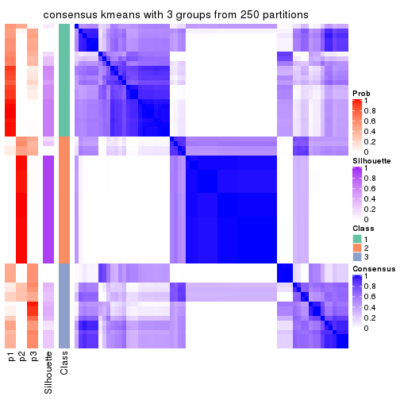
consensus_heatmap(res, k = 4)
consensus_heatmap(res, k = 5)
consensus_heatmap(res, k = 6)
Heatmaps for the membership of samples in all partitions to see how consistent they are:
membership_heatmap(res, k = 2)
membership_heatmap(res, k = 3)
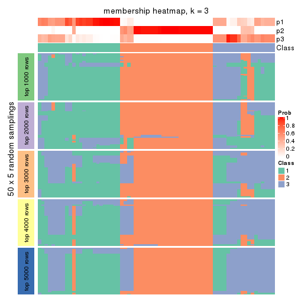
membership_heatmap(res, k = 4)
membership_heatmap(res, k = 5)
membership_heatmap(res, k = 6)
As soon as we have had the classes for columns, we can look for signatures which are significantly different between classes which can be candidate marks for certain classes. Following are the heatmaps for signatures.
Signature heatmaps where rows are scaled:
get_signatures(res, k = 2)
get_signatures(res, k = 3)
get_signatures(res, k = 4)
get_signatures(res, k = 5)
get_signatures(res, k = 6)
Signature heatmaps where rows are not scaled:
get_signatures(res, k = 2, scale_rows = FALSE)
get_signatures(res, k = 3, scale_rows = FALSE)
get_signatures(res, k = 4, scale_rows = FALSE)
get_signatures(res, k = 5, scale_rows = FALSE)
get_signatures(res, k = 6, scale_rows = FALSE)
Compare the overlap of signatures from different k:
compare_signatures(res)
get_signature() returns a data frame invisibly. TO get the list of signatures, the function
call should be assigned to a variable explicitly. In following code, if plot argument is set
to FALSE, no heatmap is plotted while only the differential analysis is performed.
# code only for demonstration
tb = get_signature(res, k = ..., plot = FALSE)
An example of the output of tb is:
#> which_row fdr mean_1 mean_2 scaled_mean_1 scaled_mean_2 km
#> 1 38 0.042760348 8.373488 9.131774 -0.5533452 0.5164555 1
#> 2 40 0.018707592 7.106213 8.469186 -0.6173731 0.5762149 1
#> 3 55 0.019134737 10.221463 11.207825 -0.6159697 0.5749050 1
#> 4 59 0.006059896 5.921854 7.869574 -0.6899429 0.6439467 1
#> 5 60 0.018055526 8.928898 10.211722 -0.6204761 0.5791110 1
#> 6 98 0.009384629 15.714769 14.887706 0.6635654 -0.6193277 2
...
The columns in tb are:
which_row: row indices corresponding to the input matrix.fdr: FDR for the differential test. mean_x: The mean value in group x.scaled_mean_x: The mean value in group x after rows are scaled.km: Row groups if k-means clustering is applied to rows.UMAP plot which shows how samples are separated.
dimension_reduction(res, k = 2, method = "UMAP")
dimension_reduction(res, k = 3, method = "UMAP")
dimension_reduction(res, k = 4, method = "UMAP")
dimension_reduction(res, k = 5, method = "UMAP")
dimension_reduction(res, k = 6, method = "UMAP")
Following heatmap shows how subgroups are split when increasing k:
collect_classes(res)
If matrix rows can be associated to genes, consider to use GO_Enrichment(res,
...) to perform function enrichment for the signature genes.
The object with results only for a single top-value method and a single partition method can be extracted as:
res = res_list["SD", "skmeans"]
# you can also extract it by
# res = res_list["SD:skmeans"]
A summary of res and all the functions that can be applied to it:
res
#> A 'ConsensusPartition' object with k = 2, 3, 4, 5, 6.
#> On a matrix with 17181 rows and 69 columns.
#> Top rows (1000, 2000, 3000, 4000, 5000) are extracted by 'SD' method.
#> Subgroups are detected by 'skmeans' method.
#> Performed in total 1250 partitions by row resampling.
#> Best k for subgroups seems to be 2.
#>
#> Following methods can be applied to this 'ConsensusPartition' object:
#> [1] "cola_report" "collect_classes" "collect_plots"
#> [4] "collect_stats" "colnames" "compare_signatures"
#> [7] "consensus_heatmap" "dimension_reduction" "functional_enrichment"
#> [10] "get_anno_col" "get_anno" "get_classes"
#> [13] "get_consensus" "get_matrix" "get_membership"
#> [16] "get_param" "get_signatures" "get_stats"
#> [19] "is_best_k" "is_stable_k" "membership_heatmap"
#> [22] "ncol" "nrow" "plot_ecdf"
#> [25] "rownames" "select_partition_number" "show"
#> [28] "suggest_best_k" "test_to_known_factors"
collect_plots() function collects all the plots made from res for all k (number of partitions)
into one single page to provide an easy and fast comparison between different k.
collect_plots(res)
The plots are:
k and the heatmap of
predicted classes for each k.k.k.k.All the plots in panels can be made by individual functions and they are plotted later in this section.
select_partition_number() produces several plots showing different
statistics for choosing “optimized” k. There are following statistics:
k;k, the area increased is defined as \(A_k - A_{k-1}\).The detailed explanations of these statistics can be found in the cola vignette.
Generally speaking, lower PAC score, higher mean silhouette score or higher
concordance corresponds to better partition. Rand index and Jaccard index
measure how similar the current partition is compared to partition with k-1.
If they are too similar, we won't accept k is better than k-1.
select_partition_number(res)
The numeric values for all these statistics can be obtained by get_stats().
get_stats(res)
#> k 1-PAC mean_silhouette concordance area_increased Rand Jaccard
#> 2 2 1.000 0.996 0.998 0.5050 0.495 0.495
#> 3 3 0.707 0.767 0.883 0.3231 0.771 0.566
#> 4 4 0.759 0.772 0.873 0.1067 0.873 0.646
#> 5 5 0.700 0.536 0.747 0.0665 0.936 0.774
#> 6 6 0.721 0.510 0.728 0.0422 0.903 0.628
suggest_best_k() suggests the best \(k\) based on these statistics. The rules are as follows:
NA.suggest_best_k(res)
#> [1] 2
Following shows the table of the partitions (You need to click the show/hide
code output link to see it). The membership matrix (columns with name p*)
is inferred by
clue::cl_consensus()
function with the SE method. Basically the value in the membership matrix
represents the probability to belong to a certain group. The finall class
label for an item is determined with the group with highest probability it
belongs to.
In get_classes() function, the entropy is calculated from the membership
matrix and the silhouette score is calculated from the consensus matrix.
cbind(get_classes(res, k = 2), get_membership(res, k = 2))
#> class entropy silhouette p1 p2
#> SRR1747143 1 0.000 0.999 1.000 0.000
#> SRR1747144 1 0.000 0.999 1.000 0.000
#> SRR1747145 2 0.000 0.996 0.000 1.000
#> SRR1747146 2 0.000 0.996 0.000 1.000
#> SRR1747148 1 0.000 0.999 1.000 0.000
#> SRR1747147 2 0.000 0.996 0.000 1.000
#> SRR1747149 1 0.000 0.999 1.000 0.000
#> SRR1747150 1 0.000 0.999 1.000 0.000
#> SRR1747151 1 0.000 0.999 1.000 0.000
#> SRR1747152 1 0.000 0.999 1.000 0.000
#> SRR1747153 1 0.000 0.999 1.000 0.000
#> SRR1747154 1 0.000 0.999 1.000 0.000
#> SRR1747155 2 0.000 0.996 0.000 1.000
#> SRR1747156 2 0.000 0.996 0.000 1.000
#> SRR1747157 1 0.000 0.999 1.000 0.000
#> SRR1747159 1 0.000 0.999 1.000 0.000
#> SRR1747158 2 0.388 0.919 0.076 0.924
#> SRR1747160 2 0.000 0.996 0.000 1.000
#> SRR1747161 1 0.000 0.999 1.000 0.000
#> SRR1747162 2 0.000 0.996 0.000 1.000
#> SRR1747163 1 0.000 0.999 1.000 0.000
#> SRR1747164 2 0.000 0.996 0.000 1.000
#> SRR1747165 2 0.000 0.996 0.000 1.000
#> SRR1747167 1 0.000 0.999 1.000 0.000
#> SRR1747166 1 0.000 0.999 1.000 0.000
#> SRR1747168 2 0.000 0.996 0.000 1.000
#> SRR1747169 2 0.000 0.996 0.000 1.000
#> SRR1747170 2 0.000 0.996 0.000 1.000
#> SRR1747172 2 0.000 0.996 0.000 1.000
#> SRR1747171 2 0.000 0.996 0.000 1.000
#> SRR1747173 2 0.000 0.996 0.000 1.000
#> SRR1747174 2 0.000 0.996 0.000 1.000
#> SRR1747175 1 0.000 0.999 1.000 0.000
#> SRR1747176 2 0.000 0.996 0.000 1.000
#> SRR1747177 1 0.000 0.999 1.000 0.000
#> SRR1747178 1 0.000 0.999 1.000 0.000
#> SRR1747179 1 0.000 0.999 1.000 0.000
#> SRR1747180 2 0.000 0.996 0.000 1.000
#> SRR1747181 1 0.000 0.999 1.000 0.000
#> SRR1747183 1 0.000 0.999 1.000 0.000
#> SRR1747182 2 0.000 0.996 0.000 1.000
#> SRR1747184 1 0.000 0.999 1.000 0.000
#> SRR1747185 1 0.000 0.999 1.000 0.000
#> SRR1747186 2 0.000 0.996 0.000 1.000
#> SRR1747187 2 0.000 0.996 0.000 1.000
#> SRR1747188 2 0.000 0.996 0.000 1.000
#> SRR1747189 2 0.000 0.996 0.000 1.000
#> SRR1747191 2 0.000 0.996 0.000 1.000
#> SRR1747190 2 0.000 0.996 0.000 1.000
#> SRR1747192 1 0.184 0.971 0.972 0.028
#> SRR1747193 1 0.000 0.999 1.000 0.000
#> SRR1747194 1 0.000 0.999 1.000 0.000
#> SRR1747195 1 0.000 0.999 1.000 0.000
#> SRR1747197 1 0.000 0.999 1.000 0.000
#> SRR1747196 1 0.000 0.999 1.000 0.000
#> SRR1747199 1 0.000 0.999 1.000 0.000
#> SRR1747198 1 0.000 0.999 1.000 0.000
#> SRR1747200 2 0.000 0.996 0.000 1.000
#> SRR1747201 1 0.000 0.999 1.000 0.000
#> SRR1747202 2 0.000 0.996 0.000 1.000
#> SRR1747203 2 0.000 0.996 0.000 1.000
#> SRR1747204 1 0.000 0.999 1.000 0.000
#> SRR1747205 2 0.000 0.996 0.000 1.000
#> SRR1747206 1 0.000 0.999 1.000 0.000
#> SRR1747207 1 0.000 0.999 1.000 0.000
#> SRR1747208 2 0.224 0.962 0.036 0.964
#> SRR1747210 1 0.000 0.999 1.000 0.000
#> SRR1747209 2 0.000 0.996 0.000 1.000
#> SRR1747211 1 0.000 0.999 1.000 0.000
cbind(get_classes(res, k = 3), get_membership(res, k = 3))
#> class entropy silhouette p1 p2 p3
#> SRR1747143 3 0.1964 0.722 0.056 0.000 0.944
#> SRR1747144 1 0.6192 0.576 0.580 0.000 0.420
#> SRR1747145 3 0.6192 0.413 0.000 0.420 0.580
#> SRR1747146 3 0.8792 0.589 0.176 0.244 0.580
#> SRR1747148 3 0.6192 0.404 0.420 0.000 0.580
#> SRR1747147 3 0.0592 0.741 0.000 0.012 0.988
#> SRR1747149 1 0.6192 0.576 0.580 0.000 0.420
#> SRR1747150 3 0.0000 0.740 0.000 0.000 1.000
#> SRR1747151 3 0.0000 0.740 0.000 0.000 1.000
#> SRR1747152 3 0.0000 0.740 0.000 0.000 1.000
#> SRR1747153 3 0.6192 0.404 0.420 0.000 0.580
#> SRR1747154 3 0.5363 0.585 0.276 0.000 0.724
#> SRR1747155 2 0.0000 0.957 0.000 1.000 0.000
#> SRR1747156 3 0.7693 0.492 0.056 0.364 0.580
#> SRR1747157 3 0.0000 0.740 0.000 0.000 1.000
#> SRR1747159 1 0.2959 0.739 0.900 0.000 0.100
#> SRR1747158 3 0.4974 0.664 0.000 0.236 0.764
#> SRR1747160 2 0.0000 0.957 0.000 1.000 0.000
#> SRR1747161 3 0.0000 0.740 0.000 0.000 1.000
#> SRR1747162 2 0.6126 0.105 0.000 0.600 0.400
#> SRR1747163 3 0.0000 0.740 0.000 0.000 1.000
#> SRR1747164 3 0.6192 0.413 0.000 0.420 0.580
#> SRR1747165 3 0.5733 0.569 0.000 0.324 0.676
#> SRR1747167 1 0.0592 0.822 0.988 0.000 0.012
#> SRR1747166 3 0.0000 0.740 0.000 0.000 1.000
#> SRR1747168 2 0.0000 0.957 0.000 1.000 0.000
#> SRR1747169 2 0.0000 0.957 0.000 1.000 0.000
#> SRR1747170 2 0.0000 0.957 0.000 1.000 0.000
#> SRR1747172 2 0.0000 0.957 0.000 1.000 0.000
#> SRR1747171 2 0.0000 0.957 0.000 1.000 0.000
#> SRR1747173 2 0.0000 0.957 0.000 1.000 0.000
#> SRR1747174 2 0.0000 0.957 0.000 1.000 0.000
#> SRR1747175 1 0.6192 0.576 0.580 0.000 0.420
#> SRR1747176 2 0.0000 0.957 0.000 1.000 0.000
#> SRR1747177 1 0.4702 0.758 0.788 0.000 0.212
#> SRR1747178 1 0.4002 0.783 0.840 0.000 0.160
#> SRR1747179 1 0.4555 0.765 0.800 0.000 0.200
#> SRR1747180 2 0.0000 0.957 0.000 1.000 0.000
#> SRR1747181 1 0.0592 0.822 0.988 0.000 0.012
#> SRR1747183 1 0.0000 0.823 1.000 0.000 0.000
#> SRR1747182 2 0.0000 0.957 0.000 1.000 0.000
#> SRR1747184 1 0.6192 0.576 0.580 0.000 0.420
#> SRR1747185 1 0.6180 0.580 0.584 0.000 0.416
#> SRR1747186 2 0.0000 0.957 0.000 1.000 0.000
#> SRR1747187 2 0.0000 0.957 0.000 1.000 0.000
#> SRR1747188 2 0.0000 0.957 0.000 1.000 0.000
#> SRR1747189 2 0.0000 0.957 0.000 1.000 0.000
#> SRR1747191 2 0.0000 0.957 0.000 1.000 0.000
#> SRR1747190 2 0.0000 0.957 0.000 1.000 0.000
#> SRR1747192 1 0.0000 0.823 1.000 0.000 0.000
#> SRR1747193 1 0.0000 0.823 1.000 0.000 0.000
#> SRR1747194 1 0.4702 0.758 0.788 0.000 0.212
#> SRR1747195 1 0.0000 0.823 1.000 0.000 0.000
#> SRR1747197 1 0.0000 0.823 1.000 0.000 0.000
#> SRR1747196 1 0.0000 0.823 1.000 0.000 0.000
#> SRR1747199 1 0.0000 0.823 1.000 0.000 0.000
#> SRR1747198 1 0.0000 0.823 1.000 0.000 0.000
#> SRR1747200 2 0.0000 0.957 0.000 1.000 0.000
#> SRR1747201 1 0.4178 0.778 0.828 0.000 0.172
#> SRR1747202 2 0.0000 0.957 0.000 1.000 0.000
#> SRR1747203 2 0.0000 0.957 0.000 1.000 0.000
#> SRR1747204 1 0.4555 0.595 0.800 0.000 0.200
#> SRR1747205 2 0.0000 0.957 0.000 1.000 0.000
#> SRR1747206 1 0.6192 0.576 0.580 0.000 0.420
#> SRR1747207 1 0.0000 0.823 1.000 0.000 0.000
#> SRR1747208 2 0.6192 0.297 0.420 0.580 0.000
#> SRR1747210 1 0.0000 0.823 1.000 0.000 0.000
#> SRR1747209 2 0.0000 0.957 0.000 1.000 0.000
#> SRR1747211 1 0.0000 0.823 1.000 0.000 0.000
cbind(get_classes(res, k = 4), get_membership(res, k = 4))
#> class entropy silhouette p1 p2 p3 p4
#> SRR1747143 3 0.2281 0.7231 0.000 0.000 0.904 0.096
#> SRR1747144 4 0.0707 0.8037 0.020 0.000 0.000 0.980
#> SRR1747145 3 0.2799 0.7259 0.000 0.108 0.884 0.008
#> SRR1747146 3 0.6075 0.6685 0.204 0.080 0.700 0.016
#> SRR1747148 3 0.4980 0.5770 0.304 0.000 0.680 0.016
#> SRR1747147 3 0.5488 0.0892 0.000 0.016 0.532 0.452
#> SRR1747149 4 0.0707 0.8037 0.020 0.000 0.000 0.980
#> SRR1747150 3 0.2281 0.7231 0.000 0.000 0.904 0.096
#> SRR1747151 3 0.2408 0.7189 0.000 0.000 0.896 0.104
#> SRR1747152 4 0.2973 0.7237 0.000 0.000 0.144 0.856
#> SRR1747153 3 0.5069 0.5571 0.320 0.000 0.664 0.016
#> SRR1747154 3 0.2011 0.7250 0.080 0.000 0.920 0.000
#> SRR1747155 2 0.0592 0.9685 0.000 0.984 0.016 0.000
#> SRR1747156 3 0.6524 0.5946 0.092 0.272 0.628 0.008
#> SRR1747157 4 0.2469 0.7443 0.000 0.000 0.108 0.892
#> SRR1747159 1 0.4459 0.6686 0.780 0.000 0.188 0.032
#> SRR1747158 3 0.5280 0.6678 0.000 0.120 0.752 0.128
#> SRR1747160 2 0.0469 0.9712 0.000 0.988 0.012 0.000
#> SRR1747161 4 0.2469 0.7443 0.000 0.000 0.108 0.892
#> SRR1747162 3 0.4866 0.4304 0.000 0.404 0.596 0.000
#> SRR1747163 3 0.4643 0.4595 0.000 0.000 0.656 0.344
#> SRR1747164 3 0.3249 0.7156 0.000 0.140 0.852 0.008
#> SRR1747165 4 0.7699 0.0896 0.000 0.380 0.220 0.400
#> SRR1747167 1 0.4982 0.7755 0.772 0.000 0.092 0.136
#> SRR1747166 3 0.2281 0.7231 0.000 0.000 0.904 0.096
#> SRR1747168 2 0.2053 0.9337 0.000 0.924 0.072 0.004
#> SRR1747169 2 0.0000 0.9742 0.000 1.000 0.000 0.000
#> SRR1747170 2 0.2053 0.9337 0.000 0.924 0.072 0.004
#> SRR1747172 2 0.1867 0.9358 0.000 0.928 0.072 0.000
#> SRR1747171 2 0.0336 0.9732 0.000 0.992 0.008 0.000
#> SRR1747173 2 0.0000 0.9742 0.000 1.000 0.000 0.000
#> SRR1747174 2 0.1867 0.9358 0.000 0.928 0.072 0.000
#> SRR1747175 4 0.0672 0.7991 0.008 0.000 0.008 0.984
#> SRR1747176 2 0.0336 0.9732 0.000 0.992 0.008 0.000
#> SRR1747177 4 0.4250 0.5299 0.276 0.000 0.000 0.724
#> SRR1747178 1 0.5052 0.6918 0.720 0.000 0.036 0.244
#> SRR1747179 1 0.5152 0.5922 0.664 0.000 0.020 0.316
#> SRR1747180 2 0.0000 0.9742 0.000 1.000 0.000 0.000
#> SRR1747181 1 0.4972 0.0854 0.544 0.000 0.000 0.456
#> SRR1747183 1 0.4039 0.8103 0.836 0.000 0.084 0.080
#> SRR1747182 2 0.0000 0.9742 0.000 1.000 0.000 0.000
#> SRR1747184 4 0.0707 0.8037 0.020 0.000 0.000 0.980
#> SRR1747185 1 0.7062 0.5473 0.572 0.000 0.224 0.204
#> SRR1747186 2 0.0336 0.9732 0.000 0.992 0.008 0.000
#> SRR1747187 2 0.0000 0.9742 0.000 1.000 0.000 0.000
#> SRR1747188 2 0.0336 0.9732 0.000 0.992 0.008 0.000
#> SRR1747189 2 0.2198 0.9304 0.000 0.920 0.072 0.008
#> SRR1747191 2 0.0000 0.9742 0.000 1.000 0.000 0.000
#> SRR1747190 2 0.1867 0.9358 0.000 0.928 0.072 0.000
#> SRR1747192 1 0.5533 0.6779 0.708 0.000 0.220 0.072
#> SRR1747193 1 0.1118 0.8374 0.964 0.000 0.000 0.036
#> SRR1747194 4 0.4304 0.4872 0.284 0.000 0.000 0.716
#> SRR1747195 1 0.0000 0.8380 1.000 0.000 0.000 0.000
#> SRR1747197 1 0.0336 0.8366 0.992 0.000 0.008 0.000
#> SRR1747196 1 0.1820 0.8361 0.944 0.000 0.020 0.036
#> SRR1747199 1 0.0469 0.8389 0.988 0.000 0.000 0.012
#> SRR1747198 1 0.0188 0.8386 0.996 0.000 0.000 0.004
#> SRR1747200 2 0.0000 0.9742 0.000 1.000 0.000 0.000
#> SRR1747201 1 0.4956 0.7019 0.732 0.000 0.036 0.232
#> SRR1747202 2 0.0336 0.9732 0.000 0.992 0.008 0.000
#> SRR1747203 2 0.0336 0.9732 0.000 0.992 0.008 0.000
#> SRR1747204 1 0.2635 0.7917 0.904 0.000 0.076 0.020
#> SRR1747205 2 0.0336 0.9732 0.000 0.992 0.008 0.000
#> SRR1747206 4 0.0707 0.8037 0.020 0.000 0.000 0.980
#> SRR1747207 1 0.0469 0.8389 0.988 0.000 0.000 0.012
#> SRR1747208 1 0.1042 0.8292 0.972 0.020 0.008 0.000
#> SRR1747210 1 0.1576 0.8359 0.948 0.000 0.004 0.048
#> SRR1747209 2 0.0000 0.9742 0.000 1.000 0.000 0.000
#> SRR1747211 1 0.0000 0.8380 1.000 0.000 0.000 0.000
cbind(get_classes(res, k = 5), get_membership(res, k = 5))
#> class entropy silhouette p1 p2 p3 p4 p5
#> SRR1747143 3 0.0404 0.5044 0.012 0.000 0.988 0.000 0.000
#> SRR1747144 4 0.3352 0.7111 0.004 0.000 0.004 0.800 0.192
#> SRR1747145 3 0.5223 0.3681 0.000 0.108 0.672 0.000 0.220
#> SRR1747146 3 0.7629 0.2766 0.140 0.092 0.412 0.000 0.356
#> SRR1747148 3 0.6396 0.3099 0.280 0.000 0.508 0.000 0.212
#> SRR1747147 5 0.5243 0.7262 0.000 0.000 0.188 0.132 0.680
#> SRR1747149 4 0.3352 0.7111 0.004 0.000 0.004 0.800 0.192
#> SRR1747150 3 0.0566 0.5024 0.000 0.000 0.984 0.012 0.004
#> SRR1747151 3 0.0912 0.4974 0.000 0.000 0.972 0.016 0.012
#> SRR1747152 4 0.4354 0.6318 0.000 0.000 0.032 0.712 0.256
#> SRR1747153 3 0.6805 0.2582 0.308 0.000 0.372 0.000 0.320
#> SRR1747154 3 0.1851 0.4901 0.000 0.000 0.912 0.000 0.088
#> SRR1747155 2 0.2719 0.6627 0.000 0.852 0.004 0.000 0.144
#> SRR1747156 3 0.7785 0.1952 0.064 0.240 0.356 0.000 0.340
#> SRR1747157 4 0.4248 0.6550 0.000 0.000 0.032 0.728 0.240
#> SRR1747159 1 0.6622 0.3274 0.532 0.000 0.288 0.020 0.160
#> SRR1747158 3 0.7322 0.0720 0.000 0.200 0.472 0.048 0.280
#> SRR1747160 2 0.2424 0.6831 0.000 0.868 0.000 0.000 0.132
#> SRR1747161 4 0.4248 0.6550 0.000 0.000 0.032 0.728 0.240
#> SRR1747162 2 0.6618 -0.3217 0.000 0.400 0.384 0.000 0.216
#> SRR1747163 3 0.4594 0.2990 0.000 0.000 0.680 0.284 0.036
#> SRR1747164 3 0.6304 0.2682 0.000 0.248 0.532 0.000 0.220
#> SRR1747165 5 0.5331 0.7437 0.000 0.072 0.060 0.136 0.732
#> SRR1747167 1 0.7208 0.2538 0.420 0.000 0.340 0.212 0.028
#> SRR1747166 3 0.0566 0.5024 0.000 0.000 0.984 0.012 0.004
#> SRR1747168 2 0.4138 0.5431 0.000 0.616 0.000 0.000 0.384
#> SRR1747169 2 0.0703 0.8044 0.000 0.976 0.000 0.000 0.024
#> SRR1747170 2 0.4138 0.5431 0.000 0.616 0.000 0.000 0.384
#> SRR1747172 2 0.4138 0.5431 0.000 0.616 0.000 0.000 0.384
#> SRR1747171 2 0.0000 0.8035 0.000 1.000 0.000 0.000 0.000
#> SRR1747173 2 0.3999 0.5891 0.000 0.656 0.000 0.000 0.344
#> SRR1747174 2 0.4060 0.5646 0.000 0.640 0.000 0.000 0.360
#> SRR1747175 4 0.1117 0.6153 0.000 0.000 0.020 0.964 0.016
#> SRR1747176 2 0.0000 0.8035 0.000 1.000 0.000 0.000 0.000
#> SRR1747177 4 0.3242 0.5530 0.116 0.000 0.000 0.844 0.040
#> SRR1747178 1 0.6435 0.2174 0.448 0.000 0.088 0.436 0.028
#> SRR1747179 4 0.4957 -0.1455 0.444 0.000 0.000 0.528 0.028
#> SRR1747180 2 0.0794 0.8038 0.000 0.972 0.000 0.000 0.028
#> SRR1747181 1 0.4294 -0.0881 0.532 0.000 0.000 0.468 0.000
#> SRR1747183 1 0.7001 0.3452 0.484 0.000 0.300 0.188 0.028
#> SRR1747182 2 0.1908 0.7736 0.000 0.908 0.000 0.000 0.092
#> SRR1747184 4 0.3318 0.7113 0.008 0.000 0.000 0.800 0.192
#> SRR1747185 3 0.7183 -0.0357 0.240 0.000 0.456 0.276 0.028
#> SRR1747186 2 0.0000 0.8035 0.000 1.000 0.000 0.000 0.000
#> SRR1747187 2 0.0880 0.8030 0.000 0.968 0.000 0.000 0.032
#> SRR1747188 2 0.0000 0.8035 0.000 1.000 0.000 0.000 0.000
#> SRR1747189 2 0.4138 0.5431 0.000 0.616 0.000 0.000 0.384
#> SRR1747191 2 0.0880 0.8030 0.000 0.968 0.000 0.000 0.032
#> SRR1747190 2 0.3837 0.6049 0.000 0.692 0.000 0.000 0.308
#> SRR1747192 3 0.8160 -0.0846 0.272 0.000 0.380 0.228 0.120
#> SRR1747193 1 0.0671 0.7029 0.980 0.000 0.000 0.016 0.004
#> SRR1747194 4 0.3343 0.5228 0.172 0.000 0.000 0.812 0.016
#> SRR1747195 1 0.0162 0.7039 0.996 0.000 0.000 0.000 0.004
#> SRR1747197 1 0.2723 0.6383 0.864 0.000 0.012 0.000 0.124
#> SRR1747196 1 0.5732 0.5676 0.684 0.000 0.088 0.184 0.044
#> SRR1747199 1 0.0000 0.7044 1.000 0.000 0.000 0.000 0.000
#> SRR1747198 1 0.0000 0.7044 1.000 0.000 0.000 0.000 0.000
#> SRR1747200 2 0.0290 0.8042 0.000 0.992 0.000 0.000 0.008
#> SRR1747201 1 0.6384 0.2576 0.472 0.000 0.084 0.416 0.028
#> SRR1747202 2 0.0000 0.8035 0.000 1.000 0.000 0.000 0.000
#> SRR1747203 2 0.0404 0.7973 0.000 0.988 0.000 0.000 0.012
#> SRR1747204 1 0.4393 0.5731 0.764 0.000 0.068 0.004 0.164
#> SRR1747205 2 0.0000 0.8035 0.000 1.000 0.000 0.000 0.000
#> SRR1747206 4 0.3318 0.7113 0.008 0.000 0.000 0.800 0.192
#> SRR1747207 1 0.0162 0.7043 0.996 0.000 0.000 0.000 0.004
#> SRR1747208 1 0.3944 0.6021 0.812 0.052 0.012 0.000 0.124
#> SRR1747210 1 0.3991 0.6523 0.824 0.000 0.088 0.060 0.028
#> SRR1747209 2 0.0703 0.8044 0.000 0.976 0.000 0.000 0.024
#> SRR1747211 1 0.0324 0.7032 0.992 0.000 0.000 0.004 0.004
cbind(get_classes(res, k = 6), get_membership(res, k = 6))
#> class entropy silhouette p1 p2 p3 p4 p5 p6
#> SRR1747143 3 0.0260 0.59732 0.000 0.000 0.992 0.000 0.000 0.008
#> SRR1747144 4 0.0146 0.80935 0.004 0.000 0.000 0.996 0.000 0.000
#> SRR1747145 3 0.5482 0.15136 0.000 0.048 0.544 0.000 0.044 0.364
#> SRR1747146 6 0.3513 0.66383 0.016 0.016 0.164 0.000 0.004 0.800
#> SRR1747148 6 0.4515 0.60655 0.056 0.000 0.304 0.000 0.000 0.640
#> SRR1747147 5 0.7101 0.01992 0.000 0.000 0.132 0.192 0.460 0.216
#> SRR1747149 4 0.0146 0.80935 0.004 0.000 0.000 0.996 0.000 0.000
#> SRR1747150 3 0.0260 0.59732 0.000 0.000 0.992 0.000 0.000 0.008
#> SRR1747151 3 0.0146 0.59442 0.000 0.000 0.996 0.000 0.000 0.004
#> SRR1747152 4 0.3281 0.75553 0.000 0.000 0.016 0.840 0.088 0.056
#> SRR1747153 6 0.3907 0.68762 0.084 0.000 0.152 0.000 0.000 0.764
#> SRR1747154 3 0.2883 0.40972 0.000 0.000 0.788 0.000 0.000 0.212
#> SRR1747155 2 0.4141 0.57119 0.000 0.740 0.004 0.000 0.068 0.188
#> SRR1747156 6 0.5083 0.56083 0.016 0.048 0.152 0.000 0.064 0.720
#> SRR1747157 4 0.3346 0.75634 0.000 0.000 0.024 0.840 0.080 0.056
#> SRR1747159 6 0.6157 0.27861 0.268 0.000 0.312 0.004 0.000 0.416
#> SRR1747158 3 0.8078 0.18693 0.000 0.180 0.424 0.136 0.072 0.188
#> SRR1747160 2 0.3860 0.60753 0.000 0.764 0.000 0.000 0.072 0.164
#> SRR1747161 4 0.3397 0.75380 0.000 0.000 0.024 0.836 0.084 0.056
#> SRR1747162 2 0.7164 -0.17866 0.000 0.364 0.248 0.000 0.084 0.304
#> SRR1747163 3 0.3220 0.50235 0.004 0.000 0.840 0.056 0.004 0.096
#> SRR1747164 3 0.6838 0.02766 0.000 0.228 0.380 0.000 0.052 0.340
#> SRR1747165 5 0.5812 0.19459 0.000 0.000 0.028 0.196 0.592 0.184
#> SRR1747167 1 0.6727 0.22937 0.436 0.000 0.388 0.048 0.028 0.100
#> SRR1747166 3 0.0260 0.59732 0.000 0.000 0.992 0.000 0.000 0.008
#> SRR1747168 5 0.3727 0.56626 0.000 0.388 0.000 0.000 0.612 0.000
#> SRR1747169 2 0.0363 0.82497 0.000 0.988 0.000 0.000 0.012 0.000
#> SRR1747170 5 0.3737 0.56598 0.000 0.392 0.000 0.000 0.608 0.000
#> SRR1747172 5 0.3774 0.54947 0.000 0.408 0.000 0.000 0.592 0.000
#> SRR1747171 2 0.0909 0.81409 0.000 0.968 0.000 0.000 0.020 0.012
#> SRR1747173 5 0.3866 0.40162 0.000 0.484 0.000 0.000 0.516 0.000
#> SRR1747174 5 0.3860 0.45348 0.000 0.472 0.000 0.000 0.528 0.000
#> SRR1747175 4 0.4720 0.63692 0.000 0.000 0.008 0.672 0.244 0.076
#> SRR1747176 2 0.0000 0.82734 0.000 1.000 0.000 0.000 0.000 0.000
#> SRR1747177 4 0.5648 0.55003 0.048 0.000 0.000 0.560 0.328 0.064
#> SRR1747178 1 0.7289 0.47378 0.548 0.000 0.112 0.148 0.084 0.108
#> SRR1747179 1 0.7221 0.16212 0.412 0.000 0.012 0.332 0.144 0.100
#> SRR1747180 2 0.0363 0.82497 0.000 0.988 0.000 0.000 0.012 0.000
#> SRR1747181 1 0.3854 -0.02229 0.536 0.000 0.000 0.464 0.000 0.000
#> SRR1747183 1 0.6533 0.28065 0.472 0.000 0.368 0.040 0.028 0.092
#> SRR1747182 2 0.3394 0.49070 0.000 0.752 0.000 0.000 0.236 0.012
#> SRR1747184 4 0.0146 0.80935 0.004 0.000 0.000 0.996 0.000 0.000
#> SRR1747185 3 0.7108 0.12163 0.204 0.000 0.544 0.060 0.088 0.104
#> SRR1747186 2 0.0508 0.82304 0.000 0.984 0.000 0.000 0.004 0.012
#> SRR1747187 2 0.0458 0.82244 0.000 0.984 0.000 0.000 0.016 0.000
#> SRR1747188 2 0.0000 0.82734 0.000 1.000 0.000 0.000 0.000 0.000
#> SRR1747189 5 0.3737 0.56598 0.000 0.392 0.000 0.000 0.608 0.000
#> SRR1747191 2 0.0458 0.82244 0.000 0.984 0.000 0.000 0.016 0.000
#> SRR1747190 2 0.3607 -0.00538 0.000 0.652 0.000 0.000 0.348 0.000
#> SRR1747192 5 0.7393 -0.31724 0.244 0.000 0.168 0.012 0.444 0.132
#> SRR1747193 1 0.0767 0.60357 0.976 0.000 0.004 0.008 0.000 0.012
#> SRR1747194 4 0.6010 0.52996 0.092 0.000 0.000 0.576 0.260 0.072
#> SRR1747195 1 0.0806 0.59840 0.972 0.000 0.000 0.000 0.008 0.020
#> SRR1747197 1 0.3937 0.07230 0.572 0.000 0.000 0.000 0.004 0.424
#> SRR1747196 1 0.5489 0.48732 0.628 0.000 0.028 0.004 0.244 0.096
#> SRR1747199 1 0.0146 0.60396 0.996 0.000 0.000 0.000 0.000 0.004
#> SRR1747198 1 0.0405 0.60258 0.988 0.000 0.000 0.000 0.004 0.008
#> SRR1747200 2 0.0000 0.82734 0.000 1.000 0.000 0.000 0.000 0.000
#> SRR1747201 1 0.7215 0.46620 0.552 0.000 0.076 0.160 0.104 0.108
#> SRR1747202 2 0.0547 0.82060 0.000 0.980 0.000 0.000 0.000 0.020
#> SRR1747203 2 0.2201 0.76217 0.000 0.900 0.000 0.000 0.048 0.052
#> SRR1747204 1 0.4731 -0.12406 0.488 0.000 0.028 0.004 0.004 0.476
#> SRR1747205 2 0.0000 0.82734 0.000 1.000 0.000 0.000 0.000 0.000
#> SRR1747206 4 0.0436 0.80692 0.004 0.000 0.000 0.988 0.004 0.004
#> SRR1747207 1 0.0146 0.60396 0.996 0.000 0.000 0.000 0.000 0.004
#> SRR1747208 1 0.4829 0.12378 0.584 0.056 0.000 0.000 0.004 0.356
#> SRR1747210 1 0.5102 0.47923 0.676 0.000 0.232 0.040 0.012 0.040
#> SRR1747209 2 0.0363 0.82497 0.000 0.988 0.000 0.000 0.012 0.000
#> SRR1747211 1 0.0951 0.59773 0.968 0.000 0.000 0.004 0.008 0.020
Heatmaps for the consensus matrix. It visualizes the probability of two samples to be in a same group.
consensus_heatmap(res, k = 2)
consensus_heatmap(res, k = 3)
consensus_heatmap(res, k = 4)
consensus_heatmap(res, k = 5)
consensus_heatmap(res, k = 6)
Heatmaps for the membership of samples in all partitions to see how consistent they are:
membership_heatmap(res, k = 2)
membership_heatmap(res, k = 3)

membership_heatmap(res, k = 4)
membership_heatmap(res, k = 5)
membership_heatmap(res, k = 6)
As soon as we have had the classes for columns, we can look for signatures which are significantly different between classes which can be candidate marks for certain classes. Following are the heatmaps for signatures.
Signature heatmaps where rows are scaled:
get_signatures(res, k = 2)
get_signatures(res, k = 3)
get_signatures(res, k = 4)
get_signatures(res, k = 5)
get_signatures(res, k = 6)
Signature heatmaps where rows are not scaled:
get_signatures(res, k = 2, scale_rows = FALSE)
get_signatures(res, k = 3, scale_rows = FALSE)
get_signatures(res, k = 4, scale_rows = FALSE)
get_signatures(res, k = 5, scale_rows = FALSE)
get_signatures(res, k = 6, scale_rows = FALSE)
Compare the overlap of signatures from different k:
compare_signatures(res)
get_signature() returns a data frame invisibly. TO get the list of signatures, the function
call should be assigned to a variable explicitly. In following code, if plot argument is set
to FALSE, no heatmap is plotted while only the differential analysis is performed.
# code only for demonstration
tb = get_signature(res, k = ..., plot = FALSE)
An example of the output of tb is:
#> which_row fdr mean_1 mean_2 scaled_mean_1 scaled_mean_2 km
#> 1 38 0.042760348 8.373488 9.131774 -0.5533452 0.5164555 1
#> 2 40 0.018707592 7.106213 8.469186 -0.6173731 0.5762149 1
#> 3 55 0.019134737 10.221463 11.207825 -0.6159697 0.5749050 1
#> 4 59 0.006059896 5.921854 7.869574 -0.6899429 0.6439467 1
#> 5 60 0.018055526 8.928898 10.211722 -0.6204761 0.5791110 1
#> 6 98 0.009384629 15.714769 14.887706 0.6635654 -0.6193277 2
...
The columns in tb are:
which_row: row indices corresponding to the input matrix.fdr: FDR for the differential test. mean_x: The mean value in group x.scaled_mean_x: The mean value in group x after rows are scaled.km: Row groups if k-means clustering is applied to rows.UMAP plot which shows how samples are separated.
dimension_reduction(res, k = 2, method = "UMAP")
dimension_reduction(res, k = 3, method = "UMAP")
dimension_reduction(res, k = 4, method = "UMAP")
dimension_reduction(res, k = 5, method = "UMAP")
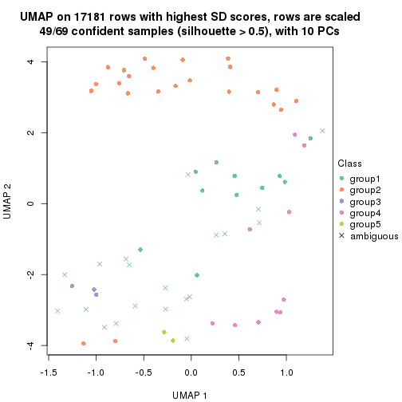
dimension_reduction(res, k = 6, method = "UMAP")
Following heatmap shows how subgroups are split when increasing k:
collect_classes(res)
If matrix rows can be associated to genes, consider to use GO_Enrichment(res,
...) to perform function enrichment for the signature genes.
The object with results only for a single top-value method and a single partition method can be extracted as:
res = res_list["SD", "pam"]
# you can also extract it by
# res = res_list["SD:pam"]
A summary of res and all the functions that can be applied to it:
res
#> A 'ConsensusPartition' object with k = 2, 3, 4, 5, 6.
#> On a matrix with 17181 rows and 69 columns.
#> Top rows (1000, 2000, 3000, 4000, 5000) are extracted by 'SD' method.
#> Subgroups are detected by 'pam' method.
#> Performed in total 1250 partitions by row resampling.
#> Best k for subgroups seems to be 2.
#>
#> Following methods can be applied to this 'ConsensusPartition' object:
#> [1] "cola_report" "collect_classes" "collect_plots"
#> [4] "collect_stats" "colnames" "compare_signatures"
#> [7] "consensus_heatmap" "dimension_reduction" "functional_enrichment"
#> [10] "get_anno_col" "get_anno" "get_classes"
#> [13] "get_consensus" "get_matrix" "get_membership"
#> [16] "get_param" "get_signatures" "get_stats"
#> [19] "is_best_k" "is_stable_k" "membership_heatmap"
#> [22] "ncol" "nrow" "plot_ecdf"
#> [25] "rownames" "select_partition_number" "show"
#> [28] "suggest_best_k" "test_to_known_factors"
collect_plots() function collects all the plots made from res for all k (number of partitions)
into one single page to provide an easy and fast comparison between different k.
collect_plots(res)
The plots are:
k and the heatmap of
predicted classes for each k.k.k.k.All the plots in panels can be made by individual functions and they are plotted later in this section.
select_partition_number() produces several plots showing different
statistics for choosing “optimized” k. There are following statistics:
k;k, the area increased is defined as \(A_k - A_{k-1}\).The detailed explanations of these statistics can be found in the cola vignette.
Generally speaking, lower PAC score, higher mean silhouette score or higher
concordance corresponds to better partition. Rand index and Jaccard index
measure how similar the current partition is compared to partition with k-1.
If they are too similar, we won't accept k is better than k-1.
select_partition_number(res)
The numeric values for all these statistics can be obtained by get_stats().
get_stats(res)
#> k 1-PAC mean_silhouette concordance area_increased Rand Jaccard
#> 2 2 0.880 0.896 0.960 0.4772 0.531 0.531
#> 3 3 0.877 0.873 0.952 0.3017 0.845 0.709
#> 4 4 0.893 0.877 0.946 0.1441 0.899 0.740
#> 5 5 0.791 0.857 0.914 0.0930 0.904 0.691
#> 6 6 0.776 0.713 0.841 0.0544 0.943 0.755
suggest_best_k() suggests the best \(k\) based on these statistics. The rules are as follows:
NA.suggest_best_k(res)
#> [1] 2
Following shows the table of the partitions (You need to click the show/hide
code output link to see it). The membership matrix (columns with name p*)
is inferred by
clue::cl_consensus()
function with the SE method. Basically the value in the membership matrix
represents the probability to belong to a certain group. The finall class
label for an item is determined with the group with highest probability it
belongs to.
In get_classes() function, the entropy is calculated from the membership
matrix and the silhouette score is calculated from the consensus matrix.
cbind(get_classes(res, k = 2), get_membership(res, k = 2))
#> class entropy silhouette p1 p2
#> SRR1747143 1 0.000 0.951 1.000 0.000
#> SRR1747144 1 0.000 0.951 1.000 0.000
#> SRR1747145 1 0.000 0.951 1.000 0.000
#> SRR1747146 1 0.000 0.951 1.000 0.000
#> SRR1747148 1 0.000 0.951 1.000 0.000
#> SRR1747147 1 0.000 0.951 1.000 0.000
#> SRR1747149 1 0.000 0.951 1.000 0.000
#> SRR1747150 1 0.000 0.951 1.000 0.000
#> SRR1747151 1 0.000 0.951 1.000 0.000
#> SRR1747152 1 0.722 0.738 0.800 0.200
#> SRR1747153 1 0.000 0.951 1.000 0.000
#> SRR1747154 1 0.000 0.951 1.000 0.000
#> SRR1747155 2 0.000 0.962 0.000 1.000
#> SRR1747156 1 0.730 0.733 0.796 0.204
#> SRR1747157 1 0.000 0.951 1.000 0.000
#> SRR1747159 1 0.000 0.951 1.000 0.000
#> SRR1747158 1 0.295 0.906 0.948 0.052
#> SRR1747160 2 0.000 0.962 0.000 1.000
#> SRR1747161 1 0.000 0.951 1.000 0.000
#> SRR1747162 1 0.936 0.471 0.648 0.352
#> SRR1747163 1 0.000 0.951 1.000 0.000
#> SRR1747164 1 0.000 0.951 1.000 0.000
#> SRR1747165 1 0.971 0.357 0.600 0.400
#> SRR1747167 1 0.000 0.951 1.000 0.000
#> SRR1747166 1 0.000 0.951 1.000 0.000
#> SRR1747168 2 0.000 0.962 0.000 1.000
#> SRR1747169 2 0.000 0.962 0.000 1.000
#> SRR1747170 2 0.000 0.962 0.000 1.000
#> SRR1747172 2 0.000 0.962 0.000 1.000
#> SRR1747171 2 0.000 0.962 0.000 1.000
#> SRR1747173 2 0.000 0.962 0.000 1.000
#> SRR1747174 2 0.000 0.962 0.000 1.000
#> SRR1747175 1 0.000 0.951 1.000 0.000
#> SRR1747176 2 0.000 0.962 0.000 1.000
#> SRR1747177 1 0.000 0.951 1.000 0.000
#> SRR1747178 1 0.000 0.951 1.000 0.000
#> SRR1747179 1 0.000 0.951 1.000 0.000
#> SRR1747180 2 0.000 0.962 0.000 1.000
#> SRR1747181 1 0.925 0.462 0.660 0.340
#> SRR1747183 1 0.000 0.951 1.000 0.000
#> SRR1747182 2 0.000 0.962 0.000 1.000
#> SRR1747184 1 0.000 0.951 1.000 0.000
#> SRR1747185 1 0.000 0.951 1.000 0.000
#> SRR1747186 2 0.000 0.962 0.000 1.000
#> SRR1747187 2 0.000 0.962 0.000 1.000
#> SRR1747188 2 0.000 0.962 0.000 1.000
#> SRR1747189 2 0.000 0.962 0.000 1.000
#> SRR1747191 2 0.000 0.962 0.000 1.000
#> SRR1747190 2 0.000 0.962 0.000 1.000
#> SRR1747192 1 0.000 0.951 1.000 0.000
#> SRR1747193 1 0.000 0.951 1.000 0.000
#> SRR1747194 1 0.000 0.951 1.000 0.000
#> SRR1747195 1 0.971 0.307 0.600 0.400
#> SRR1747197 1 0.000 0.951 1.000 0.000
#> SRR1747196 1 0.000 0.951 1.000 0.000
#> SRR1747199 1 0.000 0.951 1.000 0.000
#> SRR1747198 1 0.000 0.951 1.000 0.000
#> SRR1747200 2 0.000 0.962 0.000 1.000
#> SRR1747201 1 0.000 0.951 1.000 0.000
#> SRR1747202 2 0.000 0.962 0.000 1.000
#> SRR1747203 2 0.000 0.962 0.000 1.000
#> SRR1747204 1 0.000 0.951 1.000 0.000
#> SRR1747205 2 0.000 0.962 0.000 1.000
#> SRR1747206 1 0.000 0.951 1.000 0.000
#> SRR1747207 1 0.000 0.951 1.000 0.000
#> SRR1747208 2 0.966 0.342 0.392 0.608
#> SRR1747210 1 0.000 0.951 1.000 0.000
#> SRR1747209 2 0.000 0.962 0.000 1.000
#> SRR1747211 2 0.992 0.178 0.448 0.552
cbind(get_classes(res, k = 3), get_membership(res, k = 3))
#> class entropy silhouette p1 p2 p3
#> SRR1747143 1 0.0000 0.933 1.000 0.000 0.000
#> SRR1747144 3 0.0237 0.914 0.004 0.000 0.996
#> SRR1747145 1 0.0000 0.933 1.000 0.000 0.000
#> SRR1747146 1 0.0000 0.933 1.000 0.000 0.000
#> SRR1747148 1 0.0000 0.933 1.000 0.000 0.000
#> SRR1747147 1 0.0000 0.933 1.000 0.000 0.000
#> SRR1747149 3 0.0237 0.914 0.004 0.000 0.996
#> SRR1747150 1 0.0000 0.933 1.000 0.000 0.000
#> SRR1747151 1 0.0000 0.933 1.000 0.000 0.000
#> SRR1747152 3 0.0237 0.914 0.004 0.000 0.996
#> SRR1747153 1 0.0000 0.933 1.000 0.000 0.000
#> SRR1747154 1 0.0000 0.933 1.000 0.000 0.000
#> SRR1747155 2 0.0000 0.955 0.000 1.000 0.000
#> SRR1747156 1 0.4605 0.703 0.796 0.204 0.000
#> SRR1747157 3 0.4555 0.738 0.200 0.000 0.800
#> SRR1747159 1 0.0000 0.933 1.000 0.000 0.000
#> SRR1747158 1 0.1860 0.883 0.948 0.052 0.000
#> SRR1747160 2 0.0000 0.955 0.000 1.000 0.000
#> SRR1747161 1 0.5327 0.584 0.728 0.000 0.272
#> SRR1747162 1 0.5905 0.471 0.648 0.352 0.000
#> SRR1747163 1 0.0000 0.933 1.000 0.000 0.000
#> SRR1747164 1 0.0000 0.933 1.000 0.000 0.000
#> SRR1747165 1 0.6126 0.359 0.600 0.400 0.000
#> SRR1747167 1 0.0000 0.933 1.000 0.000 0.000
#> SRR1747166 1 0.0000 0.933 1.000 0.000 0.000
#> SRR1747168 2 0.0000 0.955 0.000 1.000 0.000
#> SRR1747169 2 0.0000 0.955 0.000 1.000 0.000
#> SRR1747170 2 0.0000 0.955 0.000 1.000 0.000
#> SRR1747172 2 0.0000 0.955 0.000 1.000 0.000
#> SRR1747171 2 0.0000 0.955 0.000 1.000 0.000
#> SRR1747173 2 0.0000 0.955 0.000 1.000 0.000
#> SRR1747174 2 0.0000 0.955 0.000 1.000 0.000
#> SRR1747175 1 0.0000 0.933 1.000 0.000 0.000
#> SRR1747176 2 0.0000 0.955 0.000 1.000 0.000
#> SRR1747177 1 0.0237 0.930 0.996 0.004 0.000
#> SRR1747178 3 0.5882 0.506 0.348 0.000 0.652
#> SRR1747179 1 0.0237 0.931 0.996 0.000 0.004
#> SRR1747180 2 0.0000 0.955 0.000 1.000 0.000
#> SRR1747181 3 0.0000 0.915 0.000 0.000 1.000
#> SRR1747183 1 0.0000 0.933 1.000 0.000 0.000
#> SRR1747182 2 0.0000 0.955 0.000 1.000 0.000
#> SRR1747184 3 0.0000 0.915 0.000 0.000 1.000
#> SRR1747185 1 0.0000 0.933 1.000 0.000 0.000
#> SRR1747186 2 0.0000 0.955 0.000 1.000 0.000
#> SRR1747187 2 0.0000 0.955 0.000 1.000 0.000
#> SRR1747188 2 0.0000 0.955 0.000 1.000 0.000
#> SRR1747189 2 0.0000 0.955 0.000 1.000 0.000
#> SRR1747191 2 0.0000 0.955 0.000 1.000 0.000
#> SRR1747190 2 0.0000 0.955 0.000 1.000 0.000
#> SRR1747192 1 0.0000 0.933 1.000 0.000 0.000
#> SRR1747193 3 0.0000 0.915 0.000 0.000 1.000
#> SRR1747194 3 0.0000 0.915 0.000 0.000 1.000
#> SRR1747195 1 0.6330 0.298 0.600 0.396 0.004
#> SRR1747197 1 0.0237 0.931 0.996 0.000 0.004
#> SRR1747196 1 0.0000 0.933 1.000 0.000 0.000
#> SRR1747199 1 0.0237 0.931 0.996 0.000 0.004
#> SRR1747198 1 0.0237 0.931 0.996 0.000 0.004
#> SRR1747200 2 0.0000 0.955 0.000 1.000 0.000
#> SRR1747201 1 0.0237 0.931 0.996 0.000 0.004
#> SRR1747202 2 0.0000 0.955 0.000 1.000 0.000
#> SRR1747203 2 0.0000 0.955 0.000 1.000 0.000
#> SRR1747204 1 0.0000 0.933 1.000 0.000 0.000
#> SRR1747205 2 0.0000 0.955 0.000 1.000 0.000
#> SRR1747206 3 0.0000 0.915 0.000 0.000 1.000
#> SRR1747207 3 0.4555 0.751 0.200 0.000 0.800
#> SRR1747208 2 0.6095 0.342 0.392 0.608 0.000
#> SRR1747210 1 0.0237 0.931 0.996 0.000 0.004
#> SRR1747209 2 0.0000 0.955 0.000 1.000 0.000
#> SRR1747211 2 0.6476 0.175 0.448 0.548 0.004
cbind(get_classes(res, k = 4), get_membership(res, k = 4))
#> class entropy silhouette p1 p2 p3 p4
#> SRR1747143 3 0.0000 0.8968 0.000 0.000 1.000 0.000
#> SRR1747144 4 0.0000 0.8763 0.000 0.000 0.000 1.000
#> SRR1747145 3 0.0000 0.8968 0.000 0.000 1.000 0.000
#> SRR1747146 3 0.0000 0.8968 0.000 0.000 1.000 0.000
#> SRR1747148 3 0.0000 0.8968 0.000 0.000 1.000 0.000
#> SRR1747147 3 0.3444 0.7732 0.000 0.000 0.816 0.184
#> SRR1747149 4 0.0000 0.8763 0.000 0.000 0.000 1.000
#> SRR1747150 3 0.0000 0.8968 0.000 0.000 1.000 0.000
#> SRR1747151 3 0.0000 0.8968 0.000 0.000 1.000 0.000
#> SRR1747152 4 0.0000 0.8763 0.000 0.000 0.000 1.000
#> SRR1747153 3 0.0000 0.8968 0.000 0.000 1.000 0.000
#> SRR1747154 3 0.0000 0.8968 0.000 0.000 1.000 0.000
#> SRR1747155 2 0.0000 0.9776 0.000 1.000 0.000 0.000
#> SRR1747156 3 0.3610 0.7199 0.000 0.200 0.800 0.000
#> SRR1747157 4 0.3569 0.6691 0.000 0.000 0.196 0.804
#> SRR1747159 3 0.2149 0.8409 0.088 0.000 0.912 0.000
#> SRR1747158 3 0.1389 0.8668 0.000 0.048 0.952 0.000
#> SRR1747160 2 0.0000 0.9776 0.000 1.000 0.000 0.000
#> SRR1747161 3 0.4382 0.6357 0.000 0.000 0.704 0.296
#> SRR1747162 3 0.4679 0.5114 0.000 0.352 0.648 0.000
#> SRR1747163 3 0.3444 0.7732 0.000 0.000 0.816 0.184
#> SRR1747164 3 0.0000 0.8968 0.000 0.000 1.000 0.000
#> SRR1747165 3 0.7315 0.3557 0.000 0.300 0.516 0.184
#> SRR1747167 3 0.0000 0.8968 0.000 0.000 1.000 0.000
#> SRR1747166 3 0.0000 0.8968 0.000 0.000 1.000 0.000
#> SRR1747168 2 0.0000 0.9776 0.000 1.000 0.000 0.000
#> SRR1747169 2 0.0000 0.9776 0.000 1.000 0.000 0.000
#> SRR1747170 2 0.0000 0.9776 0.000 1.000 0.000 0.000
#> SRR1747172 2 0.0000 0.9776 0.000 1.000 0.000 0.000
#> SRR1747171 2 0.0000 0.9776 0.000 1.000 0.000 0.000
#> SRR1747173 2 0.0000 0.9776 0.000 1.000 0.000 0.000
#> SRR1747174 2 0.0000 0.9776 0.000 1.000 0.000 0.000
#> SRR1747175 3 0.3444 0.7732 0.000 0.000 0.816 0.184
#> SRR1747176 2 0.0000 0.9776 0.000 1.000 0.000 0.000
#> SRR1747177 3 0.0000 0.8968 0.000 0.000 1.000 0.000
#> SRR1747178 1 0.2408 0.8758 0.896 0.000 0.000 0.104
#> SRR1747179 3 0.0000 0.8968 0.000 0.000 1.000 0.000
#> SRR1747180 2 0.0000 0.9776 0.000 1.000 0.000 0.000
#> SRR1747181 4 0.3444 0.7123 0.184 0.000 0.000 0.816
#> SRR1747183 3 0.4855 0.3991 0.400 0.000 0.600 0.000
#> SRR1747182 2 0.0000 0.9776 0.000 1.000 0.000 0.000
#> SRR1747184 4 0.0000 0.8763 0.000 0.000 0.000 1.000
#> SRR1747185 3 0.0000 0.8968 0.000 0.000 1.000 0.000
#> SRR1747186 2 0.0000 0.9776 0.000 1.000 0.000 0.000
#> SRR1747187 2 0.0000 0.9776 0.000 1.000 0.000 0.000
#> SRR1747188 2 0.0000 0.9776 0.000 1.000 0.000 0.000
#> SRR1747189 2 0.0000 0.9776 0.000 1.000 0.000 0.000
#> SRR1747191 2 0.0000 0.9776 0.000 1.000 0.000 0.000
#> SRR1747190 2 0.0000 0.9776 0.000 1.000 0.000 0.000
#> SRR1747192 3 0.0000 0.8968 0.000 0.000 1.000 0.000
#> SRR1747193 1 0.0000 0.9875 1.000 0.000 0.000 0.000
#> SRR1747194 4 0.4477 0.5251 0.312 0.000 0.000 0.688
#> SRR1747195 1 0.0000 0.9875 1.000 0.000 0.000 0.000
#> SRR1747197 1 0.0000 0.9875 1.000 0.000 0.000 0.000
#> SRR1747196 3 0.0188 0.8950 0.004 0.000 0.996 0.000
#> SRR1747199 1 0.0000 0.9875 1.000 0.000 0.000 0.000
#> SRR1747198 1 0.0000 0.9875 1.000 0.000 0.000 0.000
#> SRR1747200 2 0.0000 0.9776 0.000 1.000 0.000 0.000
#> SRR1747201 1 0.0000 0.9875 1.000 0.000 0.000 0.000
#> SRR1747202 2 0.0000 0.9776 0.000 1.000 0.000 0.000
#> SRR1747203 2 0.0000 0.9776 0.000 1.000 0.000 0.000
#> SRR1747204 3 0.0188 0.8950 0.004 0.000 0.996 0.000
#> SRR1747205 2 0.0000 0.9776 0.000 1.000 0.000 0.000
#> SRR1747206 4 0.0000 0.8763 0.000 0.000 0.000 1.000
#> SRR1747207 1 0.0000 0.9875 1.000 0.000 0.000 0.000
#> SRR1747208 2 0.4985 0.0825 0.468 0.532 0.000 0.000
#> SRR1747210 1 0.0000 0.9875 1.000 0.000 0.000 0.000
#> SRR1747209 2 0.0000 0.9776 0.000 1.000 0.000 0.000
#> SRR1747211 1 0.0000 0.9875 1.000 0.000 0.000 0.000
cbind(get_classes(res, k = 5), get_membership(res, k = 5))
#> class entropy silhouette p1 p2 p3 p4 p5
#> SRR1747143 3 0.0000 0.894 0.000 0.000 1.000 0.000 0.000
#> SRR1747144 4 0.0000 0.892 0.000 0.000 0.000 1.000 0.000
#> SRR1747145 3 0.0000 0.894 0.000 0.000 1.000 0.000 0.000
#> SRR1747146 3 0.0000 0.894 0.000 0.000 1.000 0.000 0.000
#> SRR1747148 3 0.0000 0.894 0.000 0.000 1.000 0.000 0.000
#> SRR1747147 3 0.3237 0.823 0.000 0.000 0.848 0.104 0.048
#> SRR1747149 4 0.0000 0.892 0.000 0.000 0.000 1.000 0.000
#> SRR1747150 3 0.0000 0.894 0.000 0.000 1.000 0.000 0.000
#> SRR1747151 3 0.0000 0.894 0.000 0.000 1.000 0.000 0.000
#> SRR1747152 4 0.0000 0.892 0.000 0.000 0.000 1.000 0.000
#> SRR1747153 3 0.0000 0.894 0.000 0.000 1.000 0.000 0.000
#> SRR1747154 3 0.0000 0.894 0.000 0.000 1.000 0.000 0.000
#> SRR1747155 2 0.5452 0.572 0.000 0.656 0.200 0.000 0.144
#> SRR1747156 3 0.3177 0.727 0.000 0.208 0.792 0.000 0.000
#> SRR1747157 4 0.3210 0.643 0.000 0.000 0.212 0.788 0.000
#> SRR1747159 3 0.3003 0.767 0.188 0.000 0.812 0.000 0.000
#> SRR1747158 3 0.3489 0.800 0.000 0.036 0.820 0.000 0.144
#> SRR1747160 2 0.2561 0.835 0.000 0.856 0.000 0.000 0.144
#> SRR1747161 3 0.3242 0.744 0.000 0.000 0.784 0.216 0.000
#> SRR1747162 3 0.4850 0.688 0.000 0.072 0.696 0.000 0.232
#> SRR1747163 3 0.2074 0.842 0.000 0.000 0.896 0.104 0.000
#> SRR1747164 3 0.1270 0.871 0.000 0.052 0.948 0.000 0.000
#> SRR1747165 5 0.3090 0.781 0.000 0.040 0.000 0.104 0.856
#> SRR1747167 3 0.0000 0.894 0.000 0.000 1.000 0.000 0.000
#> SRR1747166 3 0.0000 0.894 0.000 0.000 1.000 0.000 0.000
#> SRR1747168 5 0.2561 0.879 0.000 0.144 0.000 0.000 0.856
#> SRR1747169 2 0.0510 0.927 0.000 0.984 0.000 0.000 0.016
#> SRR1747170 5 0.2561 0.879 0.000 0.144 0.000 0.000 0.856
#> SRR1747172 5 0.2561 0.879 0.000 0.144 0.000 0.000 0.856
#> SRR1747171 2 0.2561 0.835 0.000 0.856 0.000 0.000 0.144
#> SRR1747173 5 0.2561 0.879 0.000 0.144 0.000 0.000 0.856
#> SRR1747174 2 0.1732 0.869 0.000 0.920 0.000 0.000 0.080
#> SRR1747175 3 0.5656 0.418 0.000 0.000 0.588 0.104 0.308
#> SRR1747176 2 0.0000 0.929 0.000 1.000 0.000 0.000 0.000
#> SRR1747177 5 0.2813 0.726 0.000 0.000 0.168 0.000 0.832
#> SRR1747178 1 0.2074 0.878 0.896 0.000 0.000 0.104 0.000
#> SRR1747179 3 0.0162 0.892 0.004 0.000 0.996 0.000 0.000
#> SRR1747180 2 0.0510 0.927 0.000 0.984 0.000 0.000 0.016
#> SRR1747181 4 0.2074 0.824 0.104 0.000 0.000 0.896 0.000
#> SRR1747183 3 0.4171 0.448 0.396 0.000 0.604 0.000 0.000
#> SRR1747182 5 0.3003 0.840 0.000 0.188 0.000 0.000 0.812
#> SRR1747184 4 0.0000 0.892 0.000 0.000 0.000 1.000 0.000
#> SRR1747185 3 0.0000 0.894 0.000 0.000 1.000 0.000 0.000
#> SRR1747186 2 0.2561 0.835 0.000 0.856 0.000 0.000 0.144
#> SRR1747187 2 0.0609 0.925 0.000 0.980 0.000 0.000 0.020
#> SRR1747188 2 0.0000 0.929 0.000 1.000 0.000 0.000 0.000
#> SRR1747189 5 0.2561 0.879 0.000 0.144 0.000 0.000 0.856
#> SRR1747191 2 0.0510 0.927 0.000 0.984 0.000 0.000 0.016
#> SRR1747190 2 0.0703 0.922 0.000 0.976 0.000 0.000 0.024
#> SRR1747192 5 0.4101 0.454 0.000 0.000 0.372 0.000 0.628
#> SRR1747193 1 0.0000 0.986 1.000 0.000 0.000 0.000 0.000
#> SRR1747194 4 0.3534 0.639 0.256 0.000 0.000 0.744 0.000
#> SRR1747195 1 0.0000 0.986 1.000 0.000 0.000 0.000 0.000
#> SRR1747197 1 0.0000 0.986 1.000 0.000 0.000 0.000 0.000
#> SRR1747196 3 0.2230 0.823 0.116 0.000 0.884 0.000 0.000
#> SRR1747199 1 0.0000 0.986 1.000 0.000 0.000 0.000 0.000
#> SRR1747198 1 0.0000 0.986 1.000 0.000 0.000 0.000 0.000
#> SRR1747200 2 0.0162 0.929 0.000 0.996 0.000 0.000 0.004
#> SRR1747201 1 0.0000 0.986 1.000 0.000 0.000 0.000 0.000
#> SRR1747202 2 0.0000 0.929 0.000 1.000 0.000 0.000 0.000
#> SRR1747203 2 0.0290 0.926 0.000 0.992 0.000 0.000 0.008
#> SRR1747204 3 0.0609 0.887 0.020 0.000 0.980 0.000 0.000
#> SRR1747205 2 0.0000 0.929 0.000 1.000 0.000 0.000 0.000
#> SRR1747206 4 0.0000 0.892 0.000 0.000 0.000 1.000 0.000
#> SRR1747207 1 0.0000 0.986 1.000 0.000 0.000 0.000 0.000
#> SRR1747208 1 0.0703 0.960 0.976 0.024 0.000 0.000 0.000
#> SRR1747210 1 0.0000 0.986 1.000 0.000 0.000 0.000 0.000
#> SRR1747209 2 0.0510 0.927 0.000 0.984 0.000 0.000 0.016
#> SRR1747211 1 0.0000 0.986 1.000 0.000 0.000 0.000 0.000
cbind(get_classes(res, k = 6), get_membership(res, k = 6))
#> class entropy silhouette p1 p2 p3 p4 p5 p6
#> SRR1747143 3 0.2454 0.7645 0.000 0.000 0.840 0.000 0.000 0.160
#> SRR1747144 4 0.0000 0.8496 0.000 0.000 0.000 1.000 0.000 0.000
#> SRR1747145 3 0.0000 0.7704 0.000 0.000 1.000 0.000 0.000 0.000
#> SRR1747146 3 0.1714 0.7533 0.000 0.000 0.908 0.000 0.000 0.092
#> SRR1747148 3 0.1714 0.7533 0.000 0.000 0.908 0.000 0.000 0.092
#> SRR1747147 3 0.5202 0.4187 0.000 0.000 0.616 0.000 0.196 0.188
#> SRR1747149 4 0.0000 0.8496 0.000 0.000 0.000 1.000 0.000 0.000
#> SRR1747150 3 0.2454 0.7645 0.000 0.000 0.840 0.000 0.000 0.160
#> SRR1747151 3 0.3371 0.6807 0.000 0.000 0.708 0.000 0.000 0.292
#> SRR1747152 4 0.3394 0.7115 0.000 0.000 0.000 0.752 0.012 0.236
#> SRR1747153 3 0.1714 0.7533 0.000 0.000 0.908 0.000 0.000 0.092
#> SRR1747154 3 0.0000 0.7704 0.000 0.000 1.000 0.000 0.000 0.000
#> SRR1747155 6 0.5458 0.4150 0.000 0.372 0.112 0.000 0.004 0.512
#> SRR1747156 3 0.5246 0.5637 0.000 0.212 0.608 0.000 0.000 0.180
#> SRR1747157 4 0.5059 0.4855 0.000 0.000 0.052 0.540 0.012 0.396
#> SRR1747159 3 0.4061 0.7236 0.088 0.000 0.748 0.000 0.000 0.164
#> SRR1747158 3 0.3266 0.6278 0.000 0.000 0.728 0.000 0.000 0.272
#> SRR1747160 6 0.5227 0.3884 0.000 0.408 0.072 0.000 0.008 0.512
#> SRR1747161 6 0.6306 -0.3344 0.000 0.000 0.352 0.240 0.012 0.396
#> SRR1747162 6 0.3975 0.0237 0.000 0.000 0.392 0.000 0.008 0.600
#> SRR1747163 3 0.3872 0.5651 0.000 0.000 0.604 0.000 0.004 0.392
#> SRR1747164 3 0.4191 0.6344 0.000 0.180 0.732 0.000 0.000 0.088
#> SRR1747165 5 0.3050 0.6505 0.000 0.000 0.000 0.000 0.764 0.236
#> SRR1747167 3 0.2454 0.7645 0.000 0.000 0.840 0.000 0.000 0.160
#> SRR1747166 3 0.2454 0.7645 0.000 0.000 0.840 0.000 0.000 0.160
#> SRR1747168 5 0.0146 0.8060 0.000 0.004 0.000 0.000 0.996 0.000
#> SRR1747169 2 0.0000 0.9184 0.000 1.000 0.000 0.000 0.000 0.000
#> SRR1747170 5 0.0146 0.8060 0.000 0.004 0.000 0.000 0.996 0.000
#> SRR1747172 5 0.0146 0.8060 0.000 0.004 0.000 0.000 0.996 0.000
#> SRR1747171 6 0.4095 0.2708 0.000 0.480 0.000 0.000 0.008 0.512
#> SRR1747173 5 0.0363 0.8032 0.000 0.012 0.000 0.000 0.988 0.000
#> SRR1747174 2 0.3023 0.5986 0.000 0.768 0.000 0.000 0.232 0.000
#> SRR1747175 5 0.5873 0.3188 0.000 0.000 0.200 0.000 0.432 0.368
#> SRR1747176 2 0.0000 0.9184 0.000 1.000 0.000 0.000 0.000 0.000
#> SRR1747177 5 0.1663 0.7612 0.000 0.000 0.088 0.000 0.912 0.000
#> SRR1747178 1 0.2340 0.8272 0.852 0.000 0.000 0.148 0.000 0.000
#> SRR1747179 3 0.2006 0.7492 0.104 0.000 0.892 0.000 0.004 0.000
#> SRR1747180 2 0.0000 0.9184 0.000 1.000 0.000 0.000 0.000 0.000
#> SRR1747181 4 0.0790 0.8381 0.032 0.000 0.000 0.968 0.000 0.000
#> SRR1747183 3 0.5698 0.3036 0.400 0.000 0.440 0.000 0.000 0.160
#> SRR1747182 5 0.2378 0.6833 0.000 0.152 0.000 0.000 0.848 0.000
#> SRR1747184 4 0.0000 0.8496 0.000 0.000 0.000 1.000 0.000 0.000
#> SRR1747185 3 0.2454 0.7645 0.000 0.000 0.840 0.000 0.000 0.160
#> SRR1747186 6 0.3996 0.2620 0.000 0.484 0.000 0.000 0.004 0.512
#> SRR1747187 2 0.1327 0.8599 0.000 0.936 0.000 0.000 0.064 0.000
#> SRR1747188 2 0.0000 0.9184 0.000 1.000 0.000 0.000 0.000 0.000
#> SRR1747189 5 0.0146 0.8060 0.000 0.004 0.000 0.000 0.996 0.000
#> SRR1747191 2 0.0000 0.9184 0.000 1.000 0.000 0.000 0.000 0.000
#> SRR1747190 2 0.1610 0.8377 0.000 0.916 0.000 0.000 0.084 0.000
#> SRR1747192 5 0.3804 0.2047 0.000 0.000 0.424 0.000 0.576 0.000
#> SRR1747193 1 0.0000 0.9505 1.000 0.000 0.000 0.000 0.000 0.000
#> SRR1747194 4 0.3244 0.6159 0.268 0.000 0.000 0.732 0.000 0.000
#> SRR1747195 1 0.0000 0.9505 1.000 0.000 0.000 0.000 0.000 0.000
#> SRR1747197 1 0.3327 0.8115 0.820 0.000 0.088 0.000 0.000 0.092
#> SRR1747196 3 0.3423 0.7353 0.100 0.000 0.812 0.000 0.000 0.088
#> SRR1747199 1 0.0000 0.9505 1.000 0.000 0.000 0.000 0.000 0.000
#> SRR1747198 1 0.0000 0.9505 1.000 0.000 0.000 0.000 0.000 0.000
#> SRR1747200 2 0.0000 0.9184 0.000 1.000 0.000 0.000 0.000 0.000
#> SRR1747201 1 0.0000 0.9505 1.000 0.000 0.000 0.000 0.000 0.000
#> SRR1747202 2 0.0000 0.9184 0.000 1.000 0.000 0.000 0.000 0.000
#> SRR1747203 2 0.3175 0.4642 0.000 0.744 0.000 0.000 0.000 0.256
#> SRR1747204 3 0.1970 0.7506 0.008 0.000 0.900 0.000 0.000 0.092
#> SRR1747205 2 0.0000 0.9184 0.000 1.000 0.000 0.000 0.000 0.000
#> SRR1747206 4 0.0000 0.8496 0.000 0.000 0.000 1.000 0.000 0.000
#> SRR1747207 1 0.0000 0.9505 1.000 0.000 0.000 0.000 0.000 0.000
#> SRR1747208 1 0.0937 0.9207 0.960 0.040 0.000 0.000 0.000 0.000
#> SRR1747210 1 0.1714 0.8863 0.908 0.000 0.092 0.000 0.000 0.000
#> SRR1747209 2 0.0000 0.9184 0.000 1.000 0.000 0.000 0.000 0.000
#> SRR1747211 1 0.0000 0.9505 1.000 0.000 0.000 0.000 0.000 0.000
Heatmaps for the consensus matrix. It visualizes the probability of two samples to be in a same group.
consensus_heatmap(res, k = 2)
consensus_heatmap(res, k = 3)
consensus_heatmap(res, k = 4)
consensus_heatmap(res, k = 5)
consensus_heatmap(res, k = 6)
Heatmaps for the membership of samples in all partitions to see how consistent they are:
membership_heatmap(res, k = 2)
membership_heatmap(res, k = 3)
membership_heatmap(res, k = 4)
membership_heatmap(res, k = 5)
membership_heatmap(res, k = 6)
As soon as we have had the classes for columns, we can look for signatures which are significantly different between classes which can be candidate marks for certain classes. Following are the heatmaps for signatures.
Signature heatmaps where rows are scaled:
get_signatures(res, k = 2)
get_signatures(res, k = 3)
get_signatures(res, k = 4)
get_signatures(res, k = 5)
get_signatures(res, k = 6)
Signature heatmaps where rows are not scaled:
get_signatures(res, k = 2, scale_rows = FALSE)
get_signatures(res, k = 3, scale_rows = FALSE)
get_signatures(res, k = 4, scale_rows = FALSE)
get_signatures(res, k = 5, scale_rows = FALSE)
get_signatures(res, k = 6, scale_rows = FALSE)
Compare the overlap of signatures from different k:
compare_signatures(res)
get_signature() returns a data frame invisibly. TO get the list of signatures, the function
call should be assigned to a variable explicitly. In following code, if plot argument is set
to FALSE, no heatmap is plotted while only the differential analysis is performed.
# code only for demonstration
tb = get_signature(res, k = ..., plot = FALSE)
An example of the output of tb is:
#> which_row fdr mean_1 mean_2 scaled_mean_1 scaled_mean_2 km
#> 1 38 0.042760348 8.373488 9.131774 -0.5533452 0.5164555 1
#> 2 40 0.018707592 7.106213 8.469186 -0.6173731 0.5762149 1
#> 3 55 0.019134737 10.221463 11.207825 -0.6159697 0.5749050 1
#> 4 59 0.006059896 5.921854 7.869574 -0.6899429 0.6439467 1
#> 5 60 0.018055526 8.928898 10.211722 -0.6204761 0.5791110 1
#> 6 98 0.009384629 15.714769 14.887706 0.6635654 -0.6193277 2
...
The columns in tb are:
which_row: row indices corresponding to the input matrix.fdr: FDR for the differential test. mean_x: The mean value in group x.scaled_mean_x: The mean value in group x after rows are scaled.km: Row groups if k-means clustering is applied to rows.UMAP plot which shows how samples are separated.
dimension_reduction(res, k = 2, method = "UMAP")
dimension_reduction(res, k = 3, method = "UMAP")
dimension_reduction(res, k = 4, method = "UMAP")
dimension_reduction(res, k = 5, method = "UMAP")
dimension_reduction(res, k = 6, method = "UMAP")
Following heatmap shows how subgroups are split when increasing k:
collect_classes(res)
If matrix rows can be associated to genes, consider to use GO_Enrichment(res,
...) to perform function enrichment for the signature genes.
The object with results only for a single top-value method and a single partition method can be extracted as:
res = res_list["SD", "mclust"]
# you can also extract it by
# res = res_list["SD:mclust"]
A summary of res and all the functions that can be applied to it:
res
#> A 'ConsensusPartition' object with k = 2, 3, 4, 5, 6.
#> On a matrix with 17181 rows and 69 columns.
#> Top rows (1000, 2000, 3000, 4000, 5000) are extracted by 'SD' method.
#> Subgroups are detected by 'mclust' method.
#> Performed in total 1250 partitions by row resampling.
#> Best k for subgroups seems to be 2.
#>
#> Following methods can be applied to this 'ConsensusPartition' object:
#> [1] "cola_report" "collect_classes" "collect_plots"
#> [4] "collect_stats" "colnames" "compare_signatures"
#> [7] "consensus_heatmap" "dimension_reduction" "functional_enrichment"
#> [10] "get_anno_col" "get_anno" "get_classes"
#> [13] "get_consensus" "get_matrix" "get_membership"
#> [16] "get_param" "get_signatures" "get_stats"
#> [19] "is_best_k" "is_stable_k" "membership_heatmap"
#> [22] "ncol" "nrow" "plot_ecdf"
#> [25] "rownames" "select_partition_number" "show"
#> [28] "suggest_best_k" "test_to_known_factors"
collect_plots() function collects all the plots made from res for all k (number of partitions)
into one single page to provide an easy and fast comparison between different k.
collect_plots(res)
The plots are:
k and the heatmap of
predicted classes for each k.k.k.k.All the plots in panels can be made by individual functions and they are plotted later in this section.
select_partition_number() produces several plots showing different
statistics for choosing “optimized” k. There are following statistics:
k;k, the area increased is defined as \(A_k - A_{k-1}\).The detailed explanations of these statistics can be found in the cola vignette.
Generally speaking, lower PAC score, higher mean silhouette score or higher
concordance corresponds to better partition. Rand index and Jaccard index
measure how similar the current partition is compared to partition with k-1.
If they are too similar, we won't accept k is better than k-1.
select_partition_number(res)
The numeric values for all these statistics can be obtained by get_stats().
get_stats(res)
#> k 1-PAC mean_silhouette concordance area_increased Rand Jaccard
#> 2 2 0.779 0.878 0.924 0.4628 0.511 0.511
#> 3 3 0.757 0.797 0.848 0.3622 0.760 0.559
#> 4 4 0.669 0.800 0.829 0.1306 0.931 0.799
#> 5 5 0.675 0.755 0.822 0.0473 0.785 0.454
#> 6 6 0.815 0.856 0.922 0.0585 0.910 0.697
suggest_best_k() suggests the best \(k\) based on these statistics. The rules are as follows:
NA.suggest_best_k(res)
#> [1] 2
Following shows the table of the partitions (You need to click the show/hide
code output link to see it). The membership matrix (columns with name p*)
is inferred by
clue::cl_consensus()
function with the SE method. Basically the value in the membership matrix
represents the probability to belong to a certain group. The finall class
label for an item is determined with the group with highest probability it
belongs to.
In get_classes() function, the entropy is calculated from the membership
matrix and the silhouette score is calculated from the consensus matrix.
cbind(get_classes(res, k = 2), get_membership(res, k = 2))
#> class entropy silhouette p1 p2
#> SRR1747143 1 0.0938 0.956 0.988 0.012
#> SRR1747144 1 0.2423 0.937 0.960 0.040
#> SRR1747145 2 0.9998 0.229 0.492 0.508
#> SRR1747146 2 0.9993 0.268 0.484 0.516
#> SRR1747148 1 0.0376 0.957 0.996 0.004
#> SRR1747147 1 0.9170 0.467 0.668 0.332
#> SRR1747149 1 0.2423 0.937 0.960 0.040
#> SRR1747150 1 0.0938 0.956 0.988 0.012
#> SRR1747151 1 0.0938 0.956 0.988 0.012
#> SRR1747152 1 0.2948 0.930 0.948 0.052
#> SRR1747153 1 0.0938 0.953 0.988 0.012
#> SRR1747154 1 0.0938 0.956 0.988 0.012
#> SRR1747155 2 0.4815 0.899 0.104 0.896
#> SRR1747156 1 0.7139 0.699 0.804 0.196
#> SRR1747157 1 0.2948 0.930 0.948 0.052
#> SRR1747159 1 0.0000 0.957 1.000 0.000
#> SRR1747158 1 0.1843 0.946 0.972 0.028
#> SRR1747160 2 0.4690 0.901 0.100 0.900
#> SRR1747161 1 0.2423 0.937 0.960 0.040
#> SRR1747162 2 0.9209 0.625 0.336 0.664
#> SRR1747163 1 0.0938 0.956 0.988 0.012
#> SRR1747164 2 0.9209 0.625 0.336 0.664
#> SRR1747165 2 0.9286 0.563 0.344 0.656
#> SRR1747167 1 0.0938 0.956 0.988 0.012
#> SRR1747166 1 0.0938 0.956 0.988 0.012
#> SRR1747168 2 0.3733 0.891 0.072 0.928
#> SRR1747169 2 0.2603 0.896 0.044 0.956
#> SRR1747170 2 0.4161 0.897 0.084 0.916
#> SRR1747172 2 0.4939 0.900 0.108 0.892
#> SRR1747171 2 0.4562 0.902 0.096 0.904
#> SRR1747173 2 0.4815 0.901 0.104 0.896
#> SRR1747174 2 0.1843 0.881 0.028 0.972
#> SRR1747175 1 0.1184 0.952 0.984 0.016
#> SRR1747176 2 0.2778 0.899 0.048 0.952
#> SRR1747177 1 0.1184 0.953 0.984 0.016
#> SRR1747178 1 0.1184 0.957 0.984 0.016
#> SRR1747179 1 0.0938 0.957 0.988 0.012
#> SRR1747180 2 0.2778 0.896 0.048 0.952
#> SRR1747181 1 0.0938 0.957 0.988 0.012
#> SRR1747183 1 0.0938 0.956 0.988 0.012
#> SRR1747182 2 0.4562 0.902 0.096 0.904
#> SRR1747184 1 0.2603 0.935 0.956 0.044
#> SRR1747185 1 0.1184 0.957 0.984 0.016
#> SRR1747186 2 0.4562 0.902 0.096 0.904
#> SRR1747187 2 0.4690 0.902 0.100 0.900
#> SRR1747188 2 0.3274 0.899 0.060 0.940
#> SRR1747189 2 0.2043 0.883 0.032 0.968
#> SRR1747191 2 0.2948 0.899 0.052 0.948
#> SRR1747190 2 0.3114 0.898 0.056 0.944
#> SRR1747192 1 0.0938 0.956 0.988 0.012
#> SRR1747193 1 0.0672 0.957 0.992 0.008
#> SRR1747194 1 0.0376 0.956 0.996 0.004
#> SRR1747195 1 0.0672 0.956 0.992 0.008
#> SRR1747197 1 0.1414 0.956 0.980 0.020
#> SRR1747196 1 0.0000 0.957 1.000 0.000
#> SRR1747199 1 0.0376 0.956 0.996 0.004
#> SRR1747198 1 0.0938 0.956 0.988 0.012
#> SRR1747200 2 0.2948 0.900 0.052 0.948
#> SRR1747201 1 0.1184 0.957 0.984 0.016
#> SRR1747202 2 0.3431 0.901 0.064 0.936
#> SRR1747203 2 0.4690 0.901 0.100 0.900
#> SRR1747204 1 0.1184 0.953 0.984 0.016
#> SRR1747205 2 0.3431 0.902 0.064 0.936
#> SRR1747206 1 0.2423 0.937 0.960 0.040
#> SRR1747207 1 0.0938 0.956 0.988 0.012
#> SRR1747208 1 0.9491 0.272 0.632 0.368
#> SRR1747210 1 0.1184 0.957 0.984 0.016
#> SRR1747209 2 0.2778 0.898 0.048 0.952
#> SRR1747211 1 0.1184 0.954 0.984 0.016
cbind(get_classes(res, k = 3), get_membership(res, k = 3))
#> class entropy silhouette p1 p2 p3
#> SRR1747143 3 0.6969 0.682 0.024 0.380 0.596
#> SRR1747144 1 0.0000 0.599 1.000 0.000 0.000
#> SRR1747145 3 0.1129 0.477 0.020 0.004 0.976
#> SRR1747146 3 0.2229 0.510 0.044 0.012 0.944
#> SRR1747148 3 0.7490 0.665 0.044 0.380 0.576
#> SRR1747147 3 0.3551 0.451 0.132 0.000 0.868
#> SRR1747149 1 0.0000 0.599 1.000 0.000 0.000
#> SRR1747150 3 0.7083 0.680 0.028 0.380 0.592
#> SRR1747151 3 0.7490 0.665 0.044 0.380 0.576
#> SRR1747152 1 0.0000 0.599 1.000 0.000 0.000
#> SRR1747153 3 0.7490 0.665 0.044 0.380 0.576
#> SRR1747154 3 0.6969 0.682 0.024 0.380 0.596
#> SRR1747155 2 0.6140 0.977 0.000 0.596 0.404
#> SRR1747156 3 0.2689 0.539 0.032 0.036 0.932
#> SRR1747157 1 0.1163 0.618 0.972 0.028 0.000
#> SRR1747159 1 0.6045 0.849 0.620 0.380 0.000
#> SRR1747158 3 0.3181 0.574 0.024 0.064 0.912
#> SRR1747160 2 0.6126 0.976 0.000 0.600 0.400
#> SRR1747161 1 0.3192 0.675 0.888 0.112 0.000
#> SRR1747162 3 0.0892 0.468 0.020 0.000 0.980
#> SRR1747163 1 0.6045 0.849 0.620 0.380 0.000
#> SRR1747164 3 0.0892 0.468 0.020 0.000 0.980
#> SRR1747165 1 0.8165 0.115 0.512 0.072 0.416
#> SRR1747167 1 0.6045 0.849 0.620 0.380 0.000
#> SRR1747166 3 0.7083 0.680 0.028 0.380 0.592
#> SRR1747168 2 0.6062 0.986 0.000 0.616 0.384
#> SRR1747169 2 0.6140 0.985 0.000 0.596 0.404
#> SRR1747170 2 0.6062 0.986 0.000 0.616 0.384
#> SRR1747172 2 0.6062 0.986 0.000 0.616 0.384
#> SRR1747171 2 0.6126 0.976 0.000 0.600 0.400
#> SRR1747173 2 0.6062 0.986 0.000 0.616 0.384
#> SRR1747174 2 0.6062 0.986 0.000 0.616 0.384
#> SRR1747175 1 0.6045 0.849 0.620 0.380 0.000
#> SRR1747176 2 0.6140 0.985 0.000 0.596 0.404
#> SRR1747177 1 0.6045 0.849 0.620 0.380 0.000
#> SRR1747178 1 0.6045 0.849 0.620 0.380 0.000
#> SRR1747179 1 0.6045 0.849 0.620 0.380 0.000
#> SRR1747180 2 0.6140 0.985 0.000 0.596 0.404
#> SRR1747181 1 0.6045 0.849 0.620 0.380 0.000
#> SRR1747183 1 0.6045 0.849 0.620 0.380 0.000
#> SRR1747182 2 0.6140 0.977 0.000 0.596 0.404
#> SRR1747184 1 0.0000 0.599 1.000 0.000 0.000
#> SRR1747185 3 0.6969 0.682 0.024 0.380 0.596
#> SRR1747186 2 0.6126 0.976 0.000 0.600 0.400
#> SRR1747187 2 0.6062 0.986 0.000 0.616 0.384
#> SRR1747188 2 0.6140 0.985 0.000 0.596 0.404
#> SRR1747189 2 0.6062 0.986 0.000 0.616 0.384
#> SRR1747191 2 0.6140 0.985 0.000 0.596 0.404
#> SRR1747190 2 0.6062 0.986 0.000 0.616 0.384
#> SRR1747192 3 0.6969 0.682 0.024 0.380 0.596
#> SRR1747193 1 0.6045 0.849 0.620 0.380 0.000
#> SRR1747194 1 0.5760 0.818 0.672 0.328 0.000
#> SRR1747195 1 0.6045 0.849 0.620 0.380 0.000
#> SRR1747197 1 0.6045 0.849 0.620 0.380 0.000
#> SRR1747196 1 0.6045 0.849 0.620 0.380 0.000
#> SRR1747199 1 0.6045 0.849 0.620 0.380 0.000
#> SRR1747198 1 0.6045 0.849 0.620 0.380 0.000
#> SRR1747200 2 0.6140 0.985 0.000 0.596 0.404
#> SRR1747201 1 0.6849 0.828 0.600 0.380 0.020
#> SRR1747202 2 0.6140 0.985 0.000 0.596 0.404
#> SRR1747203 2 0.6095 0.984 0.000 0.608 0.392
#> SRR1747204 3 0.8215 0.606 0.080 0.380 0.540
#> SRR1747205 2 0.6140 0.985 0.000 0.596 0.404
#> SRR1747206 1 0.0000 0.599 1.000 0.000 0.000
#> SRR1747207 1 0.6045 0.849 0.620 0.380 0.000
#> SRR1747208 1 0.6045 0.849 0.620 0.380 0.000
#> SRR1747210 1 0.6045 0.849 0.620 0.380 0.000
#> SRR1747209 2 0.6140 0.985 0.000 0.596 0.404
#> SRR1747211 1 0.6045 0.849 0.620 0.380 0.000
cbind(get_classes(res, k = 4), get_membership(res, k = 4))
#> class entropy silhouette p1 p2 p3 p4
#> SRR1747143 3 0.0188 0.870 0.004 0.000 0.996 0.000
#> SRR1747144 1 0.4941 0.685 0.564 0.000 0.000 0.436
#> SRR1747145 3 0.3610 0.728 0.000 0.200 0.800 0.000
#> SRR1747146 3 0.3306 0.782 0.004 0.156 0.840 0.000
#> SRR1747148 3 0.1792 0.849 0.068 0.000 0.932 0.000
#> SRR1747147 3 0.4215 0.780 0.104 0.072 0.824 0.000
#> SRR1747149 1 0.4941 0.685 0.564 0.000 0.000 0.436
#> SRR1747150 3 0.0336 0.869 0.008 0.000 0.992 0.000
#> SRR1747151 3 0.0336 0.869 0.008 0.000 0.992 0.000
#> SRR1747152 1 0.4941 0.685 0.564 0.000 0.000 0.436
#> SRR1747153 3 0.3610 0.738 0.200 0.000 0.800 0.000
#> SRR1747154 3 0.0188 0.870 0.004 0.000 0.996 0.000
#> SRR1747155 2 0.0188 0.943 0.000 0.996 0.004 0.000
#> SRR1747156 3 0.2334 0.842 0.004 0.088 0.908 0.000
#> SRR1747157 1 0.7114 0.645 0.564 0.000 0.232 0.204
#> SRR1747159 1 0.0921 0.790 0.972 0.000 0.028 0.000
#> SRR1747158 3 0.1722 0.865 0.008 0.048 0.944 0.000
#> SRR1747160 2 0.0188 0.943 0.000 0.996 0.004 0.000
#> SRR1747161 1 0.7110 0.644 0.564 0.000 0.236 0.200
#> SRR1747162 3 0.4855 0.240 0.000 0.400 0.600 0.000
#> SRR1747163 1 0.4933 0.539 0.568 0.000 0.432 0.000
#> SRR1747164 3 0.4008 0.654 0.000 0.244 0.756 0.000
#> SRR1747165 2 0.3647 0.638 0.108 0.852 0.040 0.000
#> SRR1747167 1 0.0921 0.790 0.972 0.000 0.028 0.000
#> SRR1747166 3 0.0336 0.869 0.008 0.000 0.992 0.000
#> SRR1747168 2 0.0188 0.943 0.000 0.996 0.004 0.000
#> SRR1747169 4 0.4999 0.889 0.000 0.492 0.000 0.508
#> SRR1747170 2 0.0376 0.940 0.004 0.992 0.004 0.000
#> SRR1747172 2 0.0188 0.943 0.000 0.996 0.004 0.000
#> SRR1747171 2 0.0188 0.943 0.000 0.996 0.004 0.000
#> SRR1747173 2 0.0000 0.944 0.000 1.000 0.000 0.000
#> SRR1747174 2 0.0376 0.943 0.000 0.992 0.004 0.004
#> SRR1747175 1 0.4933 0.539 0.568 0.000 0.432 0.000
#> SRR1747176 4 0.4941 0.981 0.000 0.436 0.000 0.564
#> SRR1747177 1 0.4877 0.564 0.592 0.000 0.408 0.000
#> SRR1747178 1 0.1867 0.782 0.928 0.000 0.072 0.000
#> SRR1747179 1 0.4877 0.564 0.592 0.000 0.408 0.000
#> SRR1747180 4 0.4948 0.978 0.000 0.440 0.000 0.560
#> SRR1747181 1 0.1716 0.789 0.936 0.000 0.000 0.064
#> SRR1747183 1 0.0921 0.790 0.972 0.000 0.028 0.000
#> SRR1747182 2 0.0000 0.944 0.000 1.000 0.000 0.000
#> SRR1747184 1 0.4941 0.685 0.564 0.000 0.000 0.436
#> SRR1747185 3 0.0188 0.870 0.004 0.000 0.996 0.000
#> SRR1747186 2 0.0000 0.944 0.000 1.000 0.000 0.000
#> SRR1747187 2 0.0188 0.943 0.000 0.996 0.000 0.004
#> SRR1747188 4 0.4941 0.981 0.000 0.436 0.000 0.564
#> SRR1747189 2 0.0376 0.943 0.000 0.992 0.004 0.004
#> SRR1747191 2 0.3873 0.310 0.000 0.772 0.000 0.228
#> SRR1747190 2 0.0376 0.943 0.000 0.992 0.004 0.004
#> SRR1747192 3 0.0188 0.870 0.004 0.000 0.996 0.000
#> SRR1747193 1 0.0000 0.792 1.000 0.000 0.000 0.000
#> SRR1747194 1 0.4776 0.748 0.732 0.000 0.024 0.244
#> SRR1747195 1 0.4761 0.605 0.628 0.000 0.372 0.000
#> SRR1747197 1 0.0000 0.792 1.000 0.000 0.000 0.000
#> SRR1747196 1 0.0921 0.790 0.972 0.000 0.028 0.000
#> SRR1747199 1 0.0000 0.792 1.000 0.000 0.000 0.000
#> SRR1747198 1 0.0000 0.792 1.000 0.000 0.000 0.000
#> SRR1747200 4 0.4941 0.981 0.000 0.436 0.000 0.564
#> SRR1747201 1 0.4933 0.539 0.568 0.000 0.432 0.000
#> SRR1747202 4 0.4941 0.981 0.000 0.436 0.000 0.564
#> SRR1747203 2 0.0188 0.943 0.000 0.996 0.004 0.000
#> SRR1747204 3 0.2081 0.834 0.084 0.000 0.916 0.000
#> SRR1747205 4 0.4941 0.981 0.000 0.436 0.000 0.564
#> SRR1747206 1 0.4941 0.685 0.564 0.000 0.000 0.436
#> SRR1747207 1 0.0000 0.792 1.000 0.000 0.000 0.000
#> SRR1747208 1 0.0000 0.792 1.000 0.000 0.000 0.000
#> SRR1747210 1 0.0000 0.792 1.000 0.000 0.000 0.000
#> SRR1747209 4 0.4961 0.969 0.000 0.448 0.000 0.552
#> SRR1747211 1 0.0000 0.792 1.000 0.000 0.000 0.000
cbind(get_classes(res, k = 5), get_membership(res, k = 5))
#> class entropy silhouette p1 p2 p3 p4 p5
#> SRR1747143 3 0.0290 0.8496 0.008 0.000 0.992 0.000 NA
#> SRR1747144 4 0.0000 0.9964 0.000 0.000 0.000 1.000 NA
#> SRR1747145 3 0.2891 0.7746 0.000 0.176 0.824 0.000 NA
#> SRR1747146 3 0.3192 0.8060 0.112 0.040 0.848 0.000 NA
#> SRR1747148 3 0.2690 0.7808 0.156 0.000 0.844 0.000 NA
#> SRR1747147 3 0.3894 0.7762 0.000 0.036 0.800 0.008 NA
#> SRR1747149 4 0.0000 0.9964 0.000 0.000 0.000 1.000 NA
#> SRR1747150 3 0.0162 0.8497 0.004 0.000 0.996 0.000 NA
#> SRR1747151 3 0.0000 0.8502 0.000 0.000 1.000 0.000 NA
#> SRR1747152 4 0.0451 0.9856 0.000 0.000 0.008 0.988 NA
#> SRR1747153 3 0.2852 0.7695 0.172 0.000 0.828 0.000 NA
#> SRR1747154 3 0.0162 0.8507 0.004 0.000 0.996 0.000 NA
#> SRR1747155 2 0.4630 0.5141 0.004 0.572 0.008 0.000 NA
#> SRR1747156 3 0.3269 0.8110 0.096 0.056 0.848 0.000 NA
#> SRR1747157 3 0.3333 0.7521 0.000 0.000 0.788 0.208 NA
#> SRR1747159 1 0.3661 0.6735 0.724 0.000 0.276 0.000 NA
#> SRR1747158 3 0.1121 0.8446 0.000 0.044 0.956 0.000 NA
#> SRR1747160 2 0.4905 0.4438 0.024 0.500 0.000 0.000 NA
#> SRR1747161 3 0.3266 0.7595 0.000 0.000 0.796 0.200 NA
#> SRR1747162 3 0.6263 0.4209 0.000 0.244 0.540 0.000 NA
#> SRR1747163 3 0.0290 0.8506 0.000 0.000 0.992 0.008 NA
#> SRR1747164 3 0.3039 0.7605 0.000 0.192 0.808 0.000 NA
#> SRR1747165 3 0.6140 0.5232 0.000 0.204 0.596 0.008 NA
#> SRR1747167 1 0.3707 0.6615 0.716 0.000 0.284 0.000 NA
#> SRR1747166 3 0.0162 0.8497 0.004 0.000 0.996 0.000 NA
#> SRR1747168 2 0.4201 0.6290 0.000 0.664 0.000 0.008 NA
#> SRR1747169 2 0.2970 0.7372 0.004 0.828 0.000 0.000 NA
#> SRR1747170 2 0.4108 0.6394 0.000 0.684 0.000 0.008 NA
#> SRR1747172 2 0.3980 0.6566 0.000 0.708 0.000 0.008 NA
#> SRR1747171 2 0.3909 0.6915 0.024 0.760 0.000 0.000 NA
#> SRR1747173 2 0.2352 0.7375 0.004 0.896 0.000 0.008 NA
#> SRR1747174 2 0.4108 0.6394 0.000 0.684 0.000 0.008 NA
#> SRR1747175 3 0.0510 0.8495 0.000 0.000 0.984 0.016 NA
#> SRR1747176 2 0.4147 0.6916 0.000 0.676 0.008 0.000 NA
#> SRR1747177 3 0.4561 0.0277 0.488 0.000 0.504 0.008 NA
#> SRR1747178 1 0.1043 0.8668 0.960 0.000 0.040 0.000 NA
#> SRR1747179 3 0.3210 0.6508 0.212 0.000 0.788 0.000 NA
#> SRR1747180 2 0.2852 0.7375 0.000 0.828 0.000 0.000 NA
#> SRR1747181 1 0.1281 0.8639 0.956 0.000 0.032 0.012 NA
#> SRR1747183 1 0.3774 0.6388 0.704 0.000 0.296 0.000 NA
#> SRR1747182 2 0.1571 0.7521 0.004 0.936 0.000 0.000 NA
#> SRR1747184 4 0.0000 0.9964 0.000 0.000 0.000 1.000 NA
#> SRR1747185 3 0.0000 0.8502 0.000 0.000 1.000 0.000 NA
#> SRR1747186 2 0.3845 0.6971 0.024 0.768 0.000 0.000 NA
#> SRR1747187 2 0.0451 0.7531 0.004 0.988 0.000 0.000 NA
#> SRR1747188 2 0.4127 0.6931 0.000 0.680 0.008 0.000 NA
#> SRR1747189 2 0.4127 0.6366 0.000 0.680 0.000 0.008 NA
#> SRR1747191 2 0.0865 0.7553 0.004 0.972 0.000 0.000 NA
#> SRR1747190 2 0.3934 0.6586 0.000 0.716 0.000 0.008 NA
#> SRR1747192 3 0.0000 0.8502 0.000 0.000 1.000 0.000 NA
#> SRR1747193 1 0.0880 0.8700 0.968 0.000 0.032 0.000 NA
#> SRR1747194 1 0.3988 0.6676 0.768 0.000 0.036 0.196 NA
#> SRR1747195 1 0.3274 0.7136 0.780 0.000 0.220 0.000 NA
#> SRR1747197 1 0.0880 0.8700 0.968 0.000 0.032 0.000 NA
#> SRR1747196 1 0.3684 0.6680 0.720 0.000 0.280 0.000 NA
#> SRR1747199 1 0.0880 0.8700 0.968 0.000 0.032 0.000 NA
#> SRR1747198 1 0.0880 0.8700 0.968 0.000 0.032 0.000 NA
#> SRR1747200 2 0.3336 0.7195 0.000 0.772 0.000 0.000 NA
#> SRR1747201 3 0.0510 0.8467 0.016 0.000 0.984 0.000 NA
#> SRR1747202 2 0.4108 0.6944 0.000 0.684 0.008 0.000 NA
#> SRR1747203 2 0.2865 0.7364 0.004 0.856 0.008 0.000 NA
#> SRR1747204 3 0.2648 0.7838 0.152 0.000 0.848 0.000 NA
#> SRR1747205 2 0.4046 0.7000 0.000 0.696 0.008 0.000 NA
#> SRR1747206 4 0.0000 0.9964 0.000 0.000 0.000 1.000 NA
#> SRR1747207 1 0.0880 0.8700 0.968 0.000 0.032 0.000 NA
#> SRR1747208 1 0.0880 0.8700 0.968 0.000 0.032 0.000 NA
#> SRR1747210 1 0.0880 0.8700 0.968 0.000 0.032 0.000 NA
#> SRR1747209 2 0.3048 0.7354 0.004 0.820 0.000 0.000 NA
#> SRR1747211 1 0.0880 0.8700 0.968 0.000 0.032 0.000 NA
cbind(get_classes(res, k = 6), get_membership(res, k = 6))
#> class entropy silhouette p1 p2 p3 p4 p5 p6
#> SRR1747143 3 0.0146 0.835 0.004 0.000 0.996 0.000 0.000 0.000
#> SRR1747144 4 0.0000 0.989 0.000 0.000 0.000 1.000 0.000 0.000
#> SRR1747145 3 0.2933 0.755 0.004 0.200 0.796 0.000 0.000 0.000
#> SRR1747146 3 0.3492 0.773 0.040 0.160 0.796 0.000 0.000 0.004
#> SRR1747148 3 0.2933 0.755 0.200 0.000 0.796 0.000 0.000 0.004
#> SRR1747147 3 0.2964 0.747 0.004 0.000 0.792 0.000 0.204 0.000
#> SRR1747149 4 0.0000 0.989 0.000 0.000 0.000 1.000 0.000 0.000
#> SRR1747150 3 0.0000 0.833 0.000 0.000 1.000 0.000 0.000 0.000
#> SRR1747151 3 0.0146 0.835 0.004 0.000 0.996 0.000 0.000 0.000
#> SRR1747152 4 0.0982 0.956 0.004 0.000 0.020 0.968 0.004 0.004
#> SRR1747153 3 0.2933 0.755 0.200 0.000 0.796 0.000 0.000 0.004
#> SRR1747154 3 0.0146 0.835 0.004 0.000 0.996 0.000 0.000 0.000
#> SRR1747155 6 0.2823 0.814 0.000 0.204 0.000 0.000 0.000 0.796
#> SRR1747156 3 0.3043 0.757 0.004 0.196 0.796 0.000 0.000 0.004
#> SRR1747157 3 0.4040 0.528 0.004 0.000 0.632 0.356 0.004 0.004
#> SRR1747159 1 0.0291 0.953 0.992 0.000 0.004 0.000 0.004 0.000
#> SRR1747158 3 0.0291 0.835 0.004 0.004 0.992 0.000 0.000 0.000
#> SRR1747160 6 0.0260 0.776 0.000 0.008 0.000 0.000 0.000 0.992
#> SRR1747161 3 0.3360 0.723 0.004 0.000 0.768 0.220 0.004 0.004
#> SRR1747162 3 0.3074 0.754 0.004 0.200 0.792 0.000 0.000 0.004
#> SRR1747163 3 0.0291 0.834 0.004 0.000 0.992 0.000 0.004 0.000
#> SRR1747164 3 0.2933 0.755 0.004 0.200 0.796 0.000 0.000 0.000
#> SRR1747165 3 0.3765 0.437 0.000 0.000 0.596 0.000 0.404 0.000
#> SRR1747167 1 0.0291 0.953 0.992 0.000 0.004 0.000 0.004 0.000
#> SRR1747166 3 0.0000 0.833 0.000 0.000 1.000 0.000 0.000 0.000
#> SRR1747168 5 0.0260 0.959 0.000 0.008 0.000 0.000 0.992 0.000
#> SRR1747169 2 0.0000 0.999 0.000 1.000 0.000 0.000 0.000 0.000
#> SRR1747170 5 0.0260 0.959 0.000 0.008 0.000 0.000 0.992 0.000
#> SRR1747172 5 0.0260 0.959 0.000 0.008 0.000 0.000 0.992 0.000
#> SRR1747171 6 0.0363 0.779 0.000 0.012 0.000 0.000 0.000 0.988
#> SRR1747173 6 0.2912 0.811 0.000 0.216 0.000 0.000 0.000 0.784
#> SRR1747174 5 0.0260 0.959 0.000 0.008 0.000 0.000 0.992 0.000
#> SRR1747175 3 0.0146 0.835 0.004 0.000 0.996 0.000 0.000 0.000
#> SRR1747176 2 0.0000 0.999 0.000 1.000 0.000 0.000 0.000 0.000
#> SRR1747177 1 0.3619 0.431 0.680 0.000 0.316 0.004 0.000 0.000
#> SRR1747178 1 0.0000 0.956 1.000 0.000 0.000 0.000 0.000 0.000
#> SRR1747179 3 0.3737 0.301 0.392 0.000 0.608 0.000 0.000 0.000
#> SRR1747180 2 0.0000 0.999 0.000 1.000 0.000 0.000 0.000 0.000
#> SRR1747181 1 0.0146 0.955 0.996 0.000 0.000 0.004 0.000 0.000
#> SRR1747183 1 0.0291 0.953 0.992 0.000 0.004 0.000 0.004 0.000
#> SRR1747182 6 0.3727 0.563 0.000 0.388 0.000 0.000 0.000 0.612
#> SRR1747184 4 0.0000 0.989 0.000 0.000 0.000 1.000 0.000 0.000
#> SRR1747185 3 0.0146 0.835 0.004 0.000 0.996 0.000 0.000 0.000
#> SRR1747186 6 0.0363 0.779 0.000 0.012 0.000 0.000 0.000 0.988
#> SRR1747187 2 0.0146 0.995 0.000 0.996 0.000 0.000 0.000 0.004
#> SRR1747188 2 0.0000 0.999 0.000 1.000 0.000 0.000 0.000 0.000
#> SRR1747189 5 0.0260 0.959 0.000 0.008 0.000 0.000 0.992 0.000
#> SRR1747191 2 0.0000 0.999 0.000 1.000 0.000 0.000 0.000 0.000
#> SRR1747190 5 0.2597 0.785 0.000 0.176 0.000 0.000 0.824 0.000
#> SRR1747192 3 0.0146 0.835 0.004 0.000 0.996 0.000 0.000 0.000
#> SRR1747193 1 0.0000 0.956 1.000 0.000 0.000 0.000 0.000 0.000
#> SRR1747194 1 0.2562 0.754 0.828 0.000 0.000 0.172 0.000 0.000
#> SRR1747195 1 0.0146 0.955 0.996 0.000 0.000 0.000 0.000 0.004
#> SRR1747197 1 0.0146 0.955 0.996 0.000 0.000 0.000 0.000 0.004
#> SRR1747196 1 0.0713 0.931 0.972 0.000 0.028 0.000 0.000 0.000
#> SRR1747199 1 0.0000 0.956 1.000 0.000 0.000 0.000 0.000 0.000
#> SRR1747198 1 0.0000 0.956 1.000 0.000 0.000 0.000 0.000 0.000
#> SRR1747200 2 0.0000 0.999 0.000 1.000 0.000 0.000 0.000 0.000
#> SRR1747201 3 0.2912 0.656 0.216 0.000 0.784 0.000 0.000 0.000
#> SRR1747202 2 0.0146 0.993 0.000 0.996 0.000 0.000 0.000 0.004
#> SRR1747203 6 0.2912 0.811 0.000 0.216 0.000 0.000 0.000 0.784
#> SRR1747204 3 0.2933 0.755 0.200 0.000 0.796 0.000 0.000 0.004
#> SRR1747205 2 0.0000 0.999 0.000 1.000 0.000 0.000 0.000 0.000
#> SRR1747206 4 0.0000 0.989 0.000 0.000 0.000 1.000 0.000 0.000
#> SRR1747207 1 0.0000 0.956 1.000 0.000 0.000 0.000 0.000 0.000
#> SRR1747208 1 0.0146 0.955 0.996 0.000 0.000 0.000 0.000 0.004
#> SRR1747210 1 0.0000 0.956 1.000 0.000 0.000 0.000 0.000 0.000
#> SRR1747209 2 0.0000 0.999 0.000 1.000 0.000 0.000 0.000 0.000
#> SRR1747211 1 0.0000 0.956 1.000 0.000 0.000 0.000 0.000 0.000
Heatmaps for the consensus matrix. It visualizes the probability of two samples to be in a same group.
consensus_heatmap(res, k = 2)
consensus_heatmap(res, k = 3)

consensus_heatmap(res, k = 4)
consensus_heatmap(res, k = 5)
consensus_heatmap(res, k = 6)
Heatmaps for the membership of samples in all partitions to see how consistent they are:
membership_heatmap(res, k = 2)
membership_heatmap(res, k = 3)
membership_heatmap(res, k = 4)
membership_heatmap(res, k = 5)
membership_heatmap(res, k = 6)
As soon as we have had the classes for columns, we can look for signatures which are significantly different between classes which can be candidate marks for certain classes. Following are the heatmaps for signatures.
Signature heatmaps where rows are scaled:
get_signatures(res, k = 2)
get_signatures(res, k = 3)
get_signatures(res, k = 4)
get_signatures(res, k = 5)
get_signatures(res, k = 6)
Signature heatmaps where rows are not scaled:
get_signatures(res, k = 2, scale_rows = FALSE)
get_signatures(res, k = 3, scale_rows = FALSE)
get_signatures(res, k = 4, scale_rows = FALSE)
get_signatures(res, k = 5, scale_rows = FALSE)
get_signatures(res, k = 6, scale_rows = FALSE)
Compare the overlap of signatures from different k:
compare_signatures(res)
get_signature() returns a data frame invisibly. TO get the list of signatures, the function
call should be assigned to a variable explicitly. In following code, if plot argument is set
to FALSE, no heatmap is plotted while only the differential analysis is performed.
# code only for demonstration
tb = get_signature(res, k = ..., plot = FALSE)
An example of the output of tb is:
#> which_row fdr mean_1 mean_2 scaled_mean_1 scaled_mean_2 km
#> 1 38 0.042760348 8.373488 9.131774 -0.5533452 0.5164555 1
#> 2 40 0.018707592 7.106213 8.469186 -0.6173731 0.5762149 1
#> 3 55 0.019134737 10.221463 11.207825 -0.6159697 0.5749050 1
#> 4 59 0.006059896 5.921854 7.869574 -0.6899429 0.6439467 1
#> 5 60 0.018055526 8.928898 10.211722 -0.6204761 0.5791110 1
#> 6 98 0.009384629 15.714769 14.887706 0.6635654 -0.6193277 2
...
The columns in tb are:
which_row: row indices corresponding to the input matrix.fdr: FDR for the differential test. mean_x: The mean value in group x.scaled_mean_x: The mean value in group x after rows are scaled.km: Row groups if k-means clustering is applied to rows.UMAP plot which shows how samples are separated.
dimension_reduction(res, k = 2, method = "UMAP")
dimension_reduction(res, k = 3, method = "UMAP")
dimension_reduction(res, k = 4, method = "UMAP")
dimension_reduction(res, k = 5, method = "UMAP")
dimension_reduction(res, k = 6, method = "UMAP")
Following heatmap shows how subgroups are split when increasing k:
collect_classes(res)
If matrix rows can be associated to genes, consider to use GO_Enrichment(res,
...) to perform function enrichment for the signature genes.
The object with results only for a single top-value method and a single partition method can be extracted as:
res = res_list["SD", "NMF"]
# you can also extract it by
# res = res_list["SD:NMF"]
A summary of res and all the functions that can be applied to it:
res
#> A 'ConsensusPartition' object with k = 2, 3, 4, 5, 6.
#> On a matrix with 17181 rows and 69 columns.
#> Top rows (1000, 2000, 3000, 4000, 5000) are extracted by 'SD' method.
#> Subgroups are detected by 'NMF' method.
#> Performed in total 1250 partitions by row resampling.
#> Best k for subgroups seems to be 2.
#>
#> Following methods can be applied to this 'ConsensusPartition' object:
#> [1] "cola_report" "collect_classes" "collect_plots"
#> [4] "collect_stats" "colnames" "compare_signatures"
#> [7] "consensus_heatmap" "dimension_reduction" "functional_enrichment"
#> [10] "get_anno_col" "get_anno" "get_classes"
#> [13] "get_consensus" "get_matrix" "get_membership"
#> [16] "get_param" "get_signatures" "get_stats"
#> [19] "is_best_k" "is_stable_k" "membership_heatmap"
#> [22] "ncol" "nrow" "plot_ecdf"
#> [25] "rownames" "select_partition_number" "show"
#> [28] "suggest_best_k" "test_to_known_factors"
collect_plots() function collects all the plots made from res for all k (number of partitions)
into one single page to provide an easy and fast comparison between different k.
collect_plots(res)
The plots are:
k and the heatmap of
predicted classes for each k.k.k.k.All the plots in panels can be made by individual functions and they are plotted later in this section.
select_partition_number() produces several plots showing different
statistics for choosing “optimized” k. There are following statistics:
k;k, the area increased is defined as \(A_k - A_{k-1}\).The detailed explanations of these statistics can be found in the cola vignette.
Generally speaking, lower PAC score, higher mean silhouette score or higher
concordance corresponds to better partition. Rand index and Jaccard index
measure how similar the current partition is compared to partition with k-1.
If they are too similar, we won't accept k is better than k-1.
select_partition_number(res)

The numeric values for all these statistics can be obtained by get_stats().
get_stats(res)
#> k 1-PAC mean_silhouette concordance area_increased Rand Jaccard
#> 2 2 0.940 0.953 0.979 0.5045 0.494 0.494
#> 3 3 0.614 0.757 0.862 0.2677 0.747 0.543
#> 4 4 0.768 0.814 0.910 0.1359 0.774 0.471
#> 5 5 0.638 0.505 0.651 0.0780 0.825 0.471
#> 6 6 0.600 0.489 0.718 0.0351 0.931 0.720
suggest_best_k() suggests the best \(k\) based on these statistics. The rules are as follows:
NA.suggest_best_k(res)
#> [1] 2
Following shows the table of the partitions (You need to click the show/hide
code output link to see it). The membership matrix (columns with name p*)
is inferred by
clue::cl_consensus()
function with the SE method. Basically the value in the membership matrix
represents the probability to belong to a certain group. The finall class
label for an item is determined with the group with highest probability it
belongs to.
In get_classes() function, the entropy is calculated from the membership
matrix and the silhouette score is calculated from the consensus matrix.
cbind(get_classes(res, k = 2), get_membership(res, k = 2))
#> class entropy silhouette p1 p2
#> SRR1747143 1 0.0000 0.980 1.000 0.000
#> SRR1747144 1 0.0000 0.980 1.000 0.000
#> SRR1747145 2 0.0000 0.974 0.000 1.000
#> SRR1747146 2 0.6438 0.814 0.164 0.836
#> SRR1747148 1 0.0000 0.980 1.000 0.000
#> SRR1747147 2 0.3584 0.917 0.068 0.932
#> SRR1747149 1 0.0000 0.980 1.000 0.000
#> SRR1747150 1 0.0376 0.978 0.996 0.004
#> SRR1747151 1 0.0000 0.980 1.000 0.000
#> SRR1747152 1 0.0000 0.980 1.000 0.000
#> SRR1747153 1 0.1633 0.961 0.976 0.024
#> SRR1747154 1 0.4161 0.900 0.916 0.084
#> SRR1747155 2 0.0000 0.974 0.000 1.000
#> SRR1747156 2 0.5842 0.843 0.140 0.860
#> SRR1747157 1 0.0000 0.980 1.000 0.000
#> SRR1747159 1 0.0000 0.980 1.000 0.000
#> SRR1747158 2 0.0000 0.974 0.000 1.000
#> SRR1747160 2 0.0000 0.974 0.000 1.000
#> SRR1747161 1 0.0000 0.980 1.000 0.000
#> SRR1747162 2 0.0000 0.974 0.000 1.000
#> SRR1747163 1 0.0000 0.980 1.000 0.000
#> SRR1747164 2 0.0000 0.974 0.000 1.000
#> SRR1747165 2 0.0000 0.974 0.000 1.000
#> SRR1747167 1 0.0000 0.980 1.000 0.000
#> SRR1747166 1 0.0000 0.980 1.000 0.000
#> SRR1747168 2 0.0000 0.974 0.000 1.000
#> SRR1747169 2 0.0000 0.974 0.000 1.000
#> SRR1747170 2 0.0000 0.974 0.000 1.000
#> SRR1747172 2 0.0000 0.974 0.000 1.000
#> SRR1747171 2 0.0000 0.974 0.000 1.000
#> SRR1747173 2 0.0000 0.974 0.000 1.000
#> SRR1747174 2 0.0000 0.974 0.000 1.000
#> SRR1747175 1 0.0000 0.980 1.000 0.000
#> SRR1747176 2 0.0000 0.974 0.000 1.000
#> SRR1747177 1 0.0376 0.978 0.996 0.004
#> SRR1747178 1 0.0000 0.980 1.000 0.000
#> SRR1747179 1 0.0938 0.972 0.988 0.012
#> SRR1747180 2 0.0000 0.974 0.000 1.000
#> SRR1747181 1 0.0000 0.980 1.000 0.000
#> SRR1747183 1 0.0000 0.980 1.000 0.000
#> SRR1747182 2 0.0000 0.974 0.000 1.000
#> SRR1747184 1 0.0000 0.980 1.000 0.000
#> SRR1747185 1 0.9087 0.514 0.676 0.324
#> SRR1747186 2 0.0000 0.974 0.000 1.000
#> SRR1747187 2 0.0000 0.974 0.000 1.000
#> SRR1747188 2 0.0000 0.974 0.000 1.000
#> SRR1747189 2 0.0000 0.974 0.000 1.000
#> SRR1747191 2 0.0000 0.974 0.000 1.000
#> SRR1747190 2 0.0000 0.974 0.000 1.000
#> SRR1747192 2 0.7139 0.771 0.196 0.804
#> SRR1747193 1 0.0000 0.980 1.000 0.000
#> SRR1747194 1 0.0000 0.980 1.000 0.000
#> SRR1747195 1 0.7139 0.753 0.804 0.196
#> SRR1747197 1 0.0000 0.980 1.000 0.000
#> SRR1747196 1 0.0000 0.980 1.000 0.000
#> SRR1747199 1 0.0000 0.980 1.000 0.000
#> SRR1747198 1 0.0000 0.980 1.000 0.000
#> SRR1747200 2 0.0000 0.974 0.000 1.000
#> SRR1747201 1 0.0000 0.980 1.000 0.000
#> SRR1747202 2 0.0000 0.974 0.000 1.000
#> SRR1747203 2 0.0000 0.974 0.000 1.000
#> SRR1747204 1 0.0672 0.975 0.992 0.008
#> SRR1747205 2 0.0000 0.974 0.000 1.000
#> SRR1747206 1 0.0000 0.980 1.000 0.000
#> SRR1747207 1 0.0000 0.980 1.000 0.000
#> SRR1747208 2 0.8016 0.695 0.244 0.756
#> SRR1747210 1 0.0000 0.980 1.000 0.000
#> SRR1747209 2 0.0000 0.974 0.000 1.000
#> SRR1747211 1 0.0000 0.980 1.000 0.000
cbind(get_classes(res, k = 3), get_membership(res, k = 3))
#> class entropy silhouette p1 p2 p3
#> SRR1747143 1 0.2261 0.7659 0.932 0.000 0.068
#> SRR1747144 3 0.0237 0.7756 0.004 0.000 0.996
#> SRR1747145 2 0.4531 0.7846 0.168 0.824 0.008
#> SRR1747146 2 0.4521 0.7809 0.180 0.816 0.004
#> SRR1747148 1 0.2066 0.7713 0.940 0.000 0.060
#> SRR1747147 3 0.9296 0.0650 0.160 0.404 0.436
#> SRR1747149 3 0.0237 0.7756 0.004 0.000 0.996
#> SRR1747150 2 0.9741 0.0589 0.360 0.412 0.228
#> SRR1747151 3 0.6955 0.2784 0.492 0.016 0.492
#> SRR1747152 3 0.0237 0.7756 0.004 0.000 0.996
#> SRR1747153 1 0.2663 0.7674 0.932 0.044 0.024
#> SRR1747154 1 0.4194 0.7184 0.876 0.060 0.064
#> SRR1747155 2 0.0661 0.8925 0.008 0.988 0.004
#> SRR1747156 2 0.4978 0.7462 0.216 0.780 0.004
#> SRR1747157 3 0.3816 0.7392 0.148 0.000 0.852
#> SRR1747159 1 0.0747 0.8007 0.984 0.000 0.016
#> SRR1747158 2 0.3213 0.8422 0.092 0.900 0.008
#> SRR1747160 2 0.0475 0.8940 0.004 0.992 0.004
#> SRR1747161 3 0.4002 0.7269 0.160 0.000 0.840
#> SRR1747162 2 0.4233 0.7936 0.160 0.836 0.004
#> SRR1747163 3 0.5529 0.6451 0.296 0.000 0.704
#> SRR1747164 2 0.4233 0.7936 0.160 0.836 0.004
#> SRR1747165 2 0.8397 0.3965 0.116 0.588 0.296
#> SRR1747167 1 0.2261 0.7767 0.932 0.000 0.068
#> SRR1747166 2 0.9417 0.1872 0.364 0.456 0.180
#> SRR1747168 2 0.0237 0.8949 0.000 0.996 0.004
#> SRR1747169 2 0.0000 0.8964 0.000 1.000 0.000
#> SRR1747170 2 0.0000 0.8964 0.000 1.000 0.000
#> SRR1747172 2 0.0000 0.8964 0.000 1.000 0.000
#> SRR1747171 2 0.0237 0.8954 0.000 0.996 0.004
#> SRR1747173 2 0.0000 0.8964 0.000 1.000 0.000
#> SRR1747174 2 0.0000 0.8964 0.000 1.000 0.000
#> SRR1747175 3 0.3116 0.7585 0.108 0.000 0.892
#> SRR1747176 2 0.0000 0.8964 0.000 1.000 0.000
#> SRR1747177 3 0.4551 0.6890 0.020 0.140 0.840
#> SRR1747178 1 0.4002 0.8372 0.840 0.000 0.160
#> SRR1747179 1 0.7569 0.7009 0.684 0.116 0.200
#> SRR1747180 2 0.0000 0.8964 0.000 1.000 0.000
#> SRR1747181 3 0.6140 0.1121 0.404 0.000 0.596
#> SRR1747183 1 0.0424 0.8036 0.992 0.000 0.008
#> SRR1747182 2 0.0000 0.8964 0.000 1.000 0.000
#> SRR1747184 3 0.0237 0.7756 0.004 0.000 0.996
#> SRR1747185 2 0.6404 0.4635 0.344 0.644 0.012
#> SRR1747186 2 0.0000 0.8964 0.000 1.000 0.000
#> SRR1747187 2 0.0000 0.8964 0.000 1.000 0.000
#> SRR1747188 2 0.0000 0.8964 0.000 1.000 0.000
#> SRR1747189 2 0.3192 0.8103 0.000 0.888 0.112
#> SRR1747191 2 0.0000 0.8964 0.000 1.000 0.000
#> SRR1747190 2 0.0000 0.8964 0.000 1.000 0.000
#> SRR1747192 1 0.5902 0.3680 0.680 0.316 0.004
#> SRR1747193 1 0.4002 0.8372 0.840 0.000 0.160
#> SRR1747194 3 0.3038 0.7200 0.104 0.000 0.896
#> SRR1747195 1 0.5119 0.8262 0.816 0.032 0.152
#> SRR1747197 1 0.4002 0.8372 0.840 0.000 0.160
#> SRR1747196 1 0.0237 0.8049 0.996 0.000 0.004
#> SRR1747199 1 0.4002 0.8372 0.840 0.000 0.160
#> SRR1747198 1 0.4002 0.8372 0.840 0.000 0.160
#> SRR1747200 2 0.0000 0.8964 0.000 1.000 0.000
#> SRR1747201 1 0.4002 0.8372 0.840 0.000 0.160
#> SRR1747202 2 0.1031 0.8831 0.024 0.976 0.000
#> SRR1747203 2 0.0237 0.8954 0.000 0.996 0.004
#> SRR1747204 1 0.5608 0.8117 0.808 0.072 0.120
#> SRR1747205 2 0.0000 0.8964 0.000 1.000 0.000
#> SRR1747206 3 0.0747 0.7693 0.016 0.000 0.984
#> SRR1747207 1 0.4002 0.8372 0.840 0.000 0.160
#> SRR1747208 1 0.5085 0.7982 0.836 0.092 0.072
#> SRR1747210 1 0.3941 0.8376 0.844 0.000 0.156
#> SRR1747209 2 0.0000 0.8964 0.000 1.000 0.000
#> SRR1747211 1 0.4002 0.8372 0.840 0.000 0.160
cbind(get_classes(res, k = 4), get_membership(res, k = 4))
#> class entropy silhouette p1 p2 p3 p4
#> SRR1747143 3 0.0804 0.758 0.012 0.008 0.980 0.000
#> SRR1747144 4 0.0524 0.893 0.004 0.000 0.008 0.988
#> SRR1747145 3 0.0592 0.756 0.000 0.016 0.984 0.000
#> SRR1747146 3 0.5409 0.161 0.012 0.492 0.496 0.000
#> SRR1747148 3 0.0817 0.756 0.024 0.000 0.976 0.000
#> SRR1747147 3 0.3447 0.691 0.000 0.020 0.852 0.128
#> SRR1747149 4 0.0524 0.893 0.004 0.000 0.008 0.988
#> SRR1747150 3 0.0336 0.754 0.000 0.000 0.992 0.008
#> SRR1747151 3 0.0336 0.754 0.000 0.000 0.992 0.008
#> SRR1747152 4 0.0336 0.893 0.000 0.000 0.008 0.992
#> SRR1747153 3 0.4830 0.409 0.392 0.000 0.608 0.000
#> SRR1747154 3 0.0804 0.758 0.008 0.012 0.980 0.000
#> SRR1747155 2 0.2704 0.840 0.000 0.876 0.124 0.000
#> SRR1747156 3 0.6221 0.546 0.076 0.316 0.608 0.000
#> SRR1747157 4 0.2469 0.828 0.000 0.000 0.108 0.892
#> SRR1747159 3 0.4981 0.247 0.464 0.000 0.536 0.000
#> SRR1747158 3 0.4994 0.169 0.000 0.480 0.520 0.000
#> SRR1747160 2 0.1118 0.938 0.000 0.964 0.036 0.000
#> SRR1747161 3 0.2408 0.712 0.000 0.000 0.896 0.104
#> SRR1747162 3 0.4804 0.469 0.000 0.384 0.616 0.000
#> SRR1747163 3 0.0817 0.749 0.000 0.000 0.976 0.024
#> SRR1747164 3 0.0921 0.756 0.000 0.028 0.972 0.000
#> SRR1747165 2 0.5990 0.619 0.000 0.688 0.124 0.188
#> SRR1747167 3 0.3172 0.688 0.160 0.000 0.840 0.000
#> SRR1747166 3 0.0469 0.754 0.000 0.000 0.988 0.012
#> SRR1747168 2 0.0804 0.958 0.000 0.980 0.008 0.012
#> SRR1747169 2 0.0188 0.962 0.000 0.996 0.004 0.000
#> SRR1747170 2 0.0804 0.958 0.000 0.980 0.008 0.012
#> SRR1747172 2 0.0804 0.958 0.000 0.980 0.008 0.012
#> SRR1747171 2 0.0000 0.962 0.000 1.000 0.000 0.000
#> SRR1747173 2 0.0672 0.960 0.000 0.984 0.008 0.008
#> SRR1747174 2 0.0657 0.960 0.000 0.984 0.004 0.012
#> SRR1747175 4 0.4605 0.514 0.000 0.000 0.336 0.664
#> SRR1747176 2 0.0188 0.962 0.000 0.996 0.004 0.000
#> SRR1747177 4 0.4086 0.683 0.000 0.216 0.008 0.776
#> SRR1747178 1 0.0336 0.951 0.992 0.000 0.008 0.000
#> SRR1747179 1 0.4717 0.773 0.812 0.112 0.020 0.056
#> SRR1747180 2 0.0000 0.962 0.000 1.000 0.000 0.000
#> SRR1747181 1 0.1443 0.929 0.960 0.004 0.008 0.028
#> SRR1747183 3 0.4925 0.335 0.428 0.000 0.572 0.000
#> SRR1747182 2 0.0672 0.960 0.000 0.984 0.008 0.008
#> SRR1747184 4 0.0524 0.893 0.004 0.000 0.008 0.988
#> SRR1747185 3 0.4940 0.649 0.060 0.140 0.788 0.012
#> SRR1747186 2 0.0000 0.962 0.000 1.000 0.000 0.000
#> SRR1747187 2 0.0524 0.961 0.000 0.988 0.004 0.008
#> SRR1747188 2 0.0000 0.962 0.000 1.000 0.000 0.000
#> SRR1747189 2 0.2737 0.873 0.000 0.888 0.008 0.104
#> SRR1747191 2 0.0000 0.962 0.000 1.000 0.000 0.000
#> SRR1747190 2 0.0188 0.962 0.000 0.996 0.004 0.000
#> SRR1747192 3 0.4553 0.714 0.092 0.076 0.820 0.012
#> SRR1747193 1 0.0000 0.955 1.000 0.000 0.000 0.000
#> SRR1747194 4 0.2542 0.842 0.084 0.000 0.012 0.904
#> SRR1747195 1 0.0592 0.945 0.984 0.016 0.000 0.000
#> SRR1747197 1 0.0000 0.955 1.000 0.000 0.000 0.000
#> SRR1747196 1 0.2868 0.818 0.864 0.000 0.136 0.000
#> SRR1747199 1 0.0000 0.955 1.000 0.000 0.000 0.000
#> SRR1747198 1 0.0000 0.955 1.000 0.000 0.000 0.000
#> SRR1747200 2 0.0000 0.962 0.000 1.000 0.000 0.000
#> SRR1747201 1 0.0000 0.955 1.000 0.000 0.000 0.000
#> SRR1747202 2 0.2149 0.883 0.088 0.912 0.000 0.000
#> SRR1747203 2 0.0469 0.957 0.000 0.988 0.012 0.000
#> SRR1747204 1 0.3877 0.811 0.840 0.048 0.112 0.000
#> SRR1747205 2 0.0188 0.962 0.000 0.996 0.004 0.000
#> SRR1747206 4 0.0336 0.893 0.000 0.000 0.008 0.992
#> SRR1747207 1 0.0000 0.955 1.000 0.000 0.000 0.000
#> SRR1747208 1 0.0336 0.952 0.992 0.008 0.000 0.000
#> SRR1747210 1 0.0000 0.955 1.000 0.000 0.000 0.000
#> SRR1747209 2 0.0524 0.961 0.000 0.988 0.004 0.008
#> SRR1747211 1 0.0000 0.955 1.000 0.000 0.000 0.000
cbind(get_classes(res, k = 5), get_membership(res, k = 5))
#> class entropy silhouette p1 p2 p3 p4 p5
#> SRR1747143 3 0.0290 0.70439 0.000 0.000 0.992 0.000 0.008
#> SRR1747144 4 0.0000 0.94281 0.000 0.000 0.000 1.000 0.000
#> SRR1747145 3 0.4130 0.54125 0.000 0.292 0.696 0.000 0.012
#> SRR1747146 2 0.5753 0.18930 0.016 0.656 0.204 0.000 0.124
#> SRR1747148 3 0.6076 0.41636 0.024 0.360 0.544 0.000 0.072
#> SRR1747147 2 0.6874 -0.31049 0.000 0.420 0.404 0.152 0.024
#> SRR1747149 4 0.0000 0.94281 0.000 0.000 0.000 1.000 0.000
#> SRR1747150 3 0.0290 0.70475 0.000 0.000 0.992 0.000 0.008
#> SRR1747151 3 0.1117 0.69968 0.000 0.020 0.964 0.000 0.016
#> SRR1747152 4 0.0000 0.94281 0.000 0.000 0.000 1.000 0.000
#> SRR1747153 2 0.7492 -0.23103 0.340 0.360 0.264 0.000 0.036
#> SRR1747154 3 0.0290 0.70579 0.000 0.000 0.992 0.000 0.008
#> SRR1747155 2 0.3055 0.48265 0.000 0.864 0.072 0.000 0.064
#> SRR1747156 2 0.6462 0.00319 0.140 0.552 0.288 0.000 0.020
#> SRR1747157 4 0.3616 0.63903 0.000 0.004 0.224 0.768 0.004
#> SRR1747159 1 0.4898 0.34990 0.592 0.000 0.376 0.000 0.032
#> SRR1747158 2 0.5382 0.12483 0.000 0.644 0.252 0.000 0.104
#> SRR1747160 2 0.1364 0.53642 0.000 0.952 0.012 0.000 0.036
#> SRR1747161 3 0.4249 0.11604 0.000 0.000 0.568 0.432 0.000
#> SRR1747162 3 0.5872 0.09107 0.000 0.408 0.492 0.000 0.100
#> SRR1747163 3 0.1197 0.68355 0.000 0.000 0.952 0.000 0.048
#> SRR1747164 3 0.4996 0.37341 0.000 0.420 0.548 0.000 0.032
#> SRR1747165 2 0.5112 0.29367 0.000 0.664 0.080 0.256 0.000
#> SRR1747167 3 0.2922 0.64906 0.056 0.000 0.872 0.000 0.072
#> SRR1747166 3 0.0162 0.70494 0.000 0.000 0.996 0.000 0.004
#> SRR1747168 5 0.3210 0.48192 0.000 0.212 0.000 0.000 0.788
#> SRR1747169 2 0.1608 0.55009 0.000 0.928 0.000 0.000 0.072
#> SRR1747170 5 0.3143 0.49029 0.000 0.204 0.000 0.000 0.796
#> SRR1747172 5 0.4060 0.18446 0.000 0.360 0.000 0.000 0.640
#> SRR1747171 2 0.3983 0.46427 0.000 0.660 0.000 0.000 0.340
#> SRR1747173 5 0.3857 0.30950 0.000 0.312 0.000 0.000 0.688
#> SRR1747174 2 0.4528 0.31528 0.000 0.548 0.000 0.008 0.444
#> SRR1747175 5 0.5407 -0.03363 0.000 0.000 0.472 0.056 0.472
#> SRR1747176 2 0.1544 0.54950 0.000 0.932 0.000 0.000 0.068
#> SRR1747177 5 0.3600 0.50883 0.004 0.028 0.012 0.120 0.836
#> SRR1747178 1 0.2278 0.86506 0.908 0.000 0.032 0.000 0.060
#> SRR1747179 5 0.5875 0.47586 0.148 0.084 0.028 0.032 0.708
#> SRR1747180 2 0.4150 0.41088 0.000 0.612 0.000 0.000 0.388
#> SRR1747181 1 0.2363 0.88472 0.912 0.024 0.000 0.012 0.052
#> SRR1747183 3 0.4793 0.47577 0.260 0.000 0.684 0.000 0.056
#> SRR1747182 5 0.3143 0.49029 0.000 0.204 0.000 0.000 0.796
#> SRR1747184 4 0.0000 0.94281 0.000 0.000 0.000 1.000 0.000
#> SRR1747185 3 0.4702 -0.07326 0.008 0.004 0.512 0.000 0.476
#> SRR1747186 2 0.3684 0.50725 0.000 0.720 0.000 0.000 0.280
#> SRR1747187 2 0.4126 0.42486 0.000 0.620 0.000 0.000 0.380
#> SRR1747188 2 0.4066 0.47059 0.004 0.672 0.000 0.000 0.324
#> SRR1747189 5 0.4841 0.43579 0.000 0.208 0.000 0.084 0.708
#> SRR1747191 2 0.3796 0.49641 0.000 0.700 0.000 0.000 0.300
#> SRR1747190 2 0.3661 0.50003 0.000 0.724 0.000 0.000 0.276
#> SRR1747192 5 0.5333 0.05397 0.020 0.020 0.444 0.000 0.516
#> SRR1747193 1 0.0000 0.90490 1.000 0.000 0.000 0.000 0.000
#> SRR1747194 5 0.6919 -0.13510 0.028 0.000 0.148 0.408 0.416
#> SRR1747195 1 0.1331 0.90147 0.952 0.008 0.000 0.000 0.040
#> SRR1747197 1 0.1251 0.90100 0.956 0.008 0.000 0.000 0.036
#> SRR1747196 5 0.6684 -0.02177 0.240 0.000 0.352 0.000 0.408
#> SRR1747199 1 0.0451 0.90573 0.988 0.008 0.000 0.000 0.004
#> SRR1747198 1 0.0290 0.90431 0.992 0.000 0.000 0.000 0.008
#> SRR1747200 2 0.4235 0.36187 0.000 0.576 0.000 0.000 0.424
#> SRR1747201 1 0.3333 0.73746 0.788 0.000 0.004 0.000 0.208
#> SRR1747202 2 0.5876 0.26076 0.100 0.488 0.000 0.000 0.412
#> SRR1747203 2 0.1608 0.54445 0.000 0.928 0.000 0.000 0.072
#> SRR1747204 1 0.4325 0.67495 0.756 0.180 0.064 0.000 0.000
#> SRR1747205 2 0.2068 0.54851 0.004 0.904 0.000 0.000 0.092
#> SRR1747206 4 0.0000 0.94281 0.000 0.000 0.000 1.000 0.000
#> SRR1747207 1 0.0451 0.90542 0.988 0.008 0.000 0.000 0.004
#> SRR1747208 1 0.0579 0.90374 0.984 0.008 0.000 0.000 0.008
#> SRR1747210 1 0.1041 0.90170 0.964 0.000 0.004 0.000 0.032
#> SRR1747209 2 0.4268 0.32475 0.000 0.556 0.000 0.000 0.444
#> SRR1747211 1 0.0290 0.90431 0.992 0.000 0.000 0.000 0.008
cbind(get_classes(res, k = 6), get_membership(res, k = 6))
#> class entropy silhouette p1 p2 p3 p4 p5 p6
#> SRR1747143 3 0.0146 0.70692 0.000 0.000 0.996 0.000 0.004 0.000
#> SRR1747144 4 0.0000 0.96780 0.000 0.000 0.000 1.000 0.000 0.000
#> SRR1747145 3 0.4542 0.59739 0.000 0.100 0.716 0.000 0.008 0.176
#> SRR1747146 2 0.5437 0.35850 0.004 0.592 0.024 0.000 0.072 0.308
#> SRR1747148 3 0.6539 0.30218 0.004 0.088 0.448 0.000 0.084 0.376
#> SRR1747147 2 0.7689 -0.16976 0.000 0.292 0.272 0.216 0.000 0.220
#> SRR1747149 4 0.0000 0.96780 0.000 0.000 0.000 1.000 0.000 0.000
#> SRR1747150 3 0.0622 0.70591 0.000 0.000 0.980 0.000 0.012 0.008
#> SRR1747151 3 0.2520 0.67886 0.000 0.004 0.844 0.000 0.000 0.152
#> SRR1747152 4 0.0520 0.96113 0.000 0.000 0.000 0.984 0.008 0.008
#> SRR1747153 1 0.7549 -0.02505 0.392 0.216 0.028 0.000 0.076 0.288
#> SRR1747154 3 0.1984 0.70169 0.000 0.000 0.912 0.000 0.032 0.056
#> SRR1747155 2 0.3485 0.58017 0.000 0.772 0.020 0.000 0.004 0.204
#> SRR1747156 2 0.6887 0.23800 0.236 0.516 0.076 0.000 0.016 0.156
#> SRR1747157 4 0.2349 0.86960 0.000 0.000 0.080 0.892 0.008 0.020
#> SRR1747159 1 0.3145 0.54611 0.856 0.000 0.060 0.000 0.028 0.056
#> SRR1747158 6 0.6155 -0.19693 0.000 0.364 0.216 0.000 0.008 0.412
#> SRR1747160 2 0.2520 0.63651 0.000 0.844 0.004 0.000 0.000 0.152
#> SRR1747161 3 0.4235 0.49787 0.000 0.000 0.672 0.292 0.004 0.032
#> SRR1747162 2 0.6964 0.27889 0.004 0.504 0.168 0.000 0.200 0.124
#> SRR1747163 3 0.2129 0.67883 0.000 0.000 0.904 0.000 0.056 0.040
#> SRR1747164 3 0.5193 0.45283 0.000 0.200 0.632 0.000 0.004 0.164
#> SRR1747165 2 0.6317 0.34811 0.000 0.560 0.040 0.240 0.012 0.148
#> SRR1747167 3 0.6130 0.39277 0.180 0.000 0.592 0.000 0.072 0.156
#> SRR1747166 3 0.0632 0.70959 0.000 0.000 0.976 0.000 0.000 0.024
#> SRR1747168 5 0.4127 0.59591 0.000 0.252 0.008 0.004 0.712 0.024
#> SRR1747169 2 0.1616 0.69728 0.000 0.932 0.000 0.000 0.020 0.048
#> SRR1747170 5 0.3672 0.58318 0.000 0.276 0.000 0.008 0.712 0.004
#> SRR1747172 5 0.4434 0.38541 0.000 0.428 0.000 0.000 0.544 0.028
#> SRR1747171 2 0.2629 0.67673 0.000 0.868 0.000 0.000 0.092 0.040
#> SRR1747173 5 0.4305 0.36936 0.000 0.436 0.000 0.000 0.544 0.020
#> SRR1747174 2 0.3868 0.58605 0.000 0.772 0.000 0.012 0.172 0.044
#> SRR1747175 5 0.5376 0.33817 0.000 0.012 0.300 0.040 0.612 0.036
#> SRR1747176 2 0.1649 0.69161 0.000 0.932 0.000 0.000 0.032 0.036
#> SRR1747177 5 0.3026 0.56683 0.000 0.076 0.004 0.036 0.864 0.020
#> SRR1747178 1 0.6143 0.16680 0.456 0.000 0.020 0.000 0.164 0.360
#> SRR1747179 5 0.5836 0.45608 0.032 0.140 0.008 0.028 0.672 0.120
#> SRR1747180 2 0.3139 0.61139 0.000 0.816 0.000 0.000 0.152 0.032
#> SRR1747181 6 0.6883 -0.27732 0.380 0.008 0.000 0.072 0.136 0.404
#> SRR1747183 1 0.5836 0.21631 0.560 0.000 0.308 0.000 0.060 0.072
#> SRR1747182 5 0.4034 0.57608 0.000 0.280 0.004 0.000 0.692 0.024
#> SRR1747184 4 0.0146 0.96717 0.000 0.000 0.000 0.996 0.004 0.000
#> SRR1747185 3 0.6122 -0.11674 0.012 0.028 0.444 0.000 0.424 0.092
#> SRR1747186 2 0.1492 0.69246 0.000 0.940 0.000 0.000 0.036 0.024
#> SRR1747187 2 0.1462 0.68533 0.000 0.936 0.000 0.000 0.056 0.008
#> SRR1747188 2 0.3889 0.65059 0.048 0.808 0.000 0.000 0.072 0.072
#> SRR1747189 5 0.5602 0.40596 0.000 0.376 0.000 0.076 0.520 0.028
#> SRR1747191 2 0.1391 0.69118 0.000 0.944 0.000 0.000 0.040 0.016
#> SRR1747190 2 0.4232 0.57945 0.000 0.732 0.000 0.000 0.168 0.100
#> SRR1747192 5 0.4623 0.51158 0.000 0.056 0.148 0.000 0.740 0.056
#> SRR1747193 1 0.3210 0.54388 0.804 0.000 0.000 0.000 0.028 0.168
#> SRR1747194 5 0.5861 0.33889 0.008 0.000 0.056 0.160 0.640 0.136
#> SRR1747195 6 0.7198 -0.00633 0.204 0.088 0.000 0.004 0.308 0.396
#> SRR1747197 1 0.3307 0.51622 0.820 0.000 0.000 0.000 0.072 0.108
#> SRR1747196 5 0.5905 0.33895 0.148 0.000 0.116 0.000 0.632 0.104
#> SRR1747199 1 0.5289 0.32369 0.576 0.004 0.000 0.000 0.112 0.308
#> SRR1747198 1 0.3877 0.51764 0.764 0.000 0.000 0.000 0.076 0.160
#> SRR1747200 2 0.3203 0.60691 0.004 0.812 0.000 0.000 0.160 0.024
#> SRR1747201 5 0.7767 -0.14415 0.256 0.044 0.020 0.048 0.436 0.196
#> SRR1747202 2 0.4238 0.59774 0.156 0.752 0.000 0.000 0.080 0.012
#> SRR1747203 2 0.1908 0.67347 0.000 0.900 0.000 0.000 0.004 0.096
#> SRR1747204 1 0.4794 0.25627 0.640 0.304 0.012 0.000 0.008 0.036
#> SRR1747205 2 0.5468 0.33416 0.000 0.568 0.000 0.000 0.244 0.188
#> SRR1747206 4 0.0363 0.96124 0.000 0.000 0.000 0.988 0.012 0.000
#> SRR1747207 1 0.2358 0.57379 0.876 0.000 0.000 0.000 0.016 0.108
#> SRR1747208 1 0.3744 0.48757 0.796 0.132 0.000 0.000 0.012 0.060
#> SRR1747210 1 0.2030 0.58049 0.908 0.000 0.000 0.000 0.028 0.064
#> SRR1747209 2 0.3619 0.55103 0.000 0.744 0.000 0.000 0.232 0.024
#> SRR1747211 1 0.0914 0.58470 0.968 0.000 0.000 0.000 0.016 0.016
Heatmaps for the consensus matrix. It visualizes the probability of two samples to be in a same group.
consensus_heatmap(res, k = 2)
consensus_heatmap(res, k = 3)
consensus_heatmap(res, k = 4)
consensus_heatmap(res, k = 5)
consensus_heatmap(res, k = 6)
Heatmaps for the membership of samples in all partitions to see how consistent they are:
membership_heatmap(res, k = 2)
membership_heatmap(res, k = 3)
membership_heatmap(res, k = 4)
membership_heatmap(res, k = 5)
membership_heatmap(res, k = 6)
As soon as we have had the classes for columns, we can look for signatures which are significantly different between classes which can be candidate marks for certain classes. Following are the heatmaps for signatures.
Signature heatmaps where rows are scaled:
get_signatures(res, k = 2)
get_signatures(res, k = 3)
get_signatures(res, k = 4)
get_signatures(res, k = 5)
get_signatures(res, k = 6)
Signature heatmaps where rows are not scaled:
get_signatures(res, k = 2, scale_rows = FALSE)
get_signatures(res, k = 3, scale_rows = FALSE)
get_signatures(res, k = 4, scale_rows = FALSE)
get_signatures(res, k = 5, scale_rows = FALSE)
get_signatures(res, k = 6, scale_rows = FALSE)
Compare the overlap of signatures from different k:
compare_signatures(res)
get_signature() returns a data frame invisibly. TO get the list of signatures, the function
call should be assigned to a variable explicitly. In following code, if plot argument is set
to FALSE, no heatmap is plotted while only the differential analysis is performed.
# code only for demonstration
tb = get_signature(res, k = ..., plot = FALSE)
An example of the output of tb is:
#> which_row fdr mean_1 mean_2 scaled_mean_1 scaled_mean_2 km
#> 1 38 0.042760348 8.373488 9.131774 -0.5533452 0.5164555 1
#> 2 40 0.018707592 7.106213 8.469186 -0.6173731 0.5762149 1
#> 3 55 0.019134737 10.221463 11.207825 -0.6159697 0.5749050 1
#> 4 59 0.006059896 5.921854 7.869574 -0.6899429 0.6439467 1
#> 5 60 0.018055526 8.928898 10.211722 -0.6204761 0.5791110 1
#> 6 98 0.009384629 15.714769 14.887706 0.6635654 -0.6193277 2
...
The columns in tb are:
which_row: row indices corresponding to the input matrix.fdr: FDR for the differential test. mean_x: The mean value in group x.scaled_mean_x: The mean value in group x after rows are scaled.km: Row groups if k-means clustering is applied to rows.UMAP plot which shows how samples are separated.
dimension_reduction(res, k = 2, method = "UMAP")
dimension_reduction(res, k = 3, method = "UMAP")
dimension_reduction(res, k = 4, method = "UMAP")
dimension_reduction(res, k = 5, method = "UMAP")
dimension_reduction(res, k = 6, method = "UMAP")
Following heatmap shows how subgroups are split when increasing k:
collect_classes(res)
If matrix rows can be associated to genes, consider to use GO_Enrichment(res,
...) to perform function enrichment for the signature genes.
The object with results only for a single top-value method and a single partition method can be extracted as:
res = res_list["CV", "hclust"]
# you can also extract it by
# res = res_list["CV:hclust"]
A summary of res and all the functions that can be applied to it:
res
#> A 'ConsensusPartition' object with k = 2, 3, 4, 5, 6.
#> On a matrix with 17181 rows and 69 columns.
#> Top rows (1000, 2000, 3000, 4000, 5000) are extracted by 'CV' method.
#> Subgroups are detected by 'hclust' method.
#> Performed in total 1250 partitions by row resampling.
#> Best k for subgroups seems to be 3.
#>
#> Following methods can be applied to this 'ConsensusPartition' object:
#> [1] "cola_report" "collect_classes" "collect_plots"
#> [4] "collect_stats" "colnames" "compare_signatures"
#> [7] "consensus_heatmap" "dimension_reduction" "functional_enrichment"
#> [10] "get_anno_col" "get_anno" "get_classes"
#> [13] "get_consensus" "get_matrix" "get_membership"
#> [16] "get_param" "get_signatures" "get_stats"
#> [19] "is_best_k" "is_stable_k" "membership_heatmap"
#> [22] "ncol" "nrow" "plot_ecdf"
#> [25] "rownames" "select_partition_number" "show"
#> [28] "suggest_best_k" "test_to_known_factors"
collect_plots() function collects all the plots made from res for all k (number of partitions)
into one single page to provide an easy and fast comparison between different k.
collect_plots(res)
The plots are:
k and the heatmap of
predicted classes for each k.k.k.k.All the plots in panels can be made by individual functions and they are plotted later in this section.
select_partition_number() produces several plots showing different
statistics for choosing “optimized” k. There are following statistics:
k;k, the area increased is defined as \(A_k - A_{k-1}\).The detailed explanations of these statistics can be found in the cola vignette.
Generally speaking, lower PAC score, higher mean silhouette score or higher
concordance corresponds to better partition. Rand index and Jaccard index
measure how similar the current partition is compared to partition with k-1.
If they are too similar, we won't accept k is better than k-1.
select_partition_number(res)
The numeric values for all these statistics can be obtained by get_stats().
get_stats(res)
#> k 1-PAC mean_silhouette concordance area_increased Rand Jaccard
#> 2 2 0.454 0.830 0.890 0.2504 0.864 0.864
#> 3 3 0.401 0.802 0.861 1.2032 0.567 0.499
#> 4 4 0.576 0.671 0.821 0.1798 0.911 0.794
#> 5 5 0.669 0.726 0.832 0.0651 0.945 0.844
#> 6 6 0.675 0.653 0.817 0.0306 0.986 0.954
suggest_best_k() suggests the best \(k\) based on these statistics. The rules are as follows:
NA.suggest_best_k(res)
#> [1] 3
Following shows the table of the partitions (You need to click the show/hide
code output link to see it). The membership matrix (columns with name p*)
is inferred by
clue::cl_consensus()
function with the SE method. Basically the value in the membership matrix
represents the probability to belong to a certain group. The finall class
label for an item is determined with the group with highest probability it
belongs to.
In get_classes() function, the entropy is calculated from the membership
matrix and the silhouette score is calculated from the consensus matrix.
cbind(get_classes(res, k = 2), get_membership(res, k = 2))
#> class entropy silhouette p1 p2
#> SRR1747143 1 0.0000 0.872 1.000 0.000
#> SRR1747144 1 0.7139 0.820 0.804 0.196
#> SRR1747145 1 0.0000 0.872 1.000 0.000
#> SRR1747146 1 0.9427 0.650 0.640 0.360
#> SRR1747148 1 0.9427 0.650 0.640 0.360
#> SRR1747147 1 0.0376 0.872 0.996 0.004
#> SRR1747149 1 0.7139 0.820 0.804 0.196
#> SRR1747150 1 0.0000 0.872 1.000 0.000
#> SRR1747151 1 0.0000 0.872 1.000 0.000
#> SRR1747152 1 0.7139 0.820 0.804 0.196
#> SRR1747153 1 0.9635 0.606 0.612 0.388
#> SRR1747154 1 0.0000 0.872 1.000 0.000
#> SRR1747155 1 0.0000 0.872 1.000 0.000
#> SRR1747156 1 0.4562 0.851 0.904 0.096
#> SRR1747157 1 0.7139 0.820 0.804 0.196
#> SRR1747159 1 0.9661 0.599 0.608 0.392
#> SRR1747158 1 0.0000 0.872 1.000 0.000
#> SRR1747160 1 0.0000 0.872 1.000 0.000
#> SRR1747161 1 0.7139 0.820 0.804 0.196
#> SRR1747162 1 0.2948 0.865 0.948 0.052
#> SRR1747163 1 0.5519 0.846 0.872 0.128
#> SRR1747164 1 0.0000 0.872 1.000 0.000
#> SRR1747165 1 0.0376 0.872 0.996 0.004
#> SRR1747167 1 0.8661 0.740 0.712 0.288
#> SRR1747166 1 0.0000 0.872 1.000 0.000
#> SRR1747168 1 0.0000 0.872 1.000 0.000
#> SRR1747169 1 0.0000 0.872 1.000 0.000
#> SRR1747170 1 0.0000 0.872 1.000 0.000
#> SRR1747172 1 0.0000 0.872 1.000 0.000
#> SRR1747171 1 0.0000 0.872 1.000 0.000
#> SRR1747173 1 0.0000 0.872 1.000 0.000
#> SRR1747174 1 0.0000 0.872 1.000 0.000
#> SRR1747175 1 0.5519 0.846 0.872 0.128
#> SRR1747176 1 0.0000 0.872 1.000 0.000
#> SRR1747177 1 0.7139 0.820 0.804 0.196
#> SRR1747178 1 0.6712 0.828 0.824 0.176
#> SRR1747179 1 0.6712 0.828 0.824 0.176
#> SRR1747180 1 0.0000 0.872 1.000 0.000
#> SRR1747181 1 0.9850 0.530 0.572 0.428
#> SRR1747183 1 0.7602 0.808 0.780 0.220
#> SRR1747182 1 0.0000 0.872 1.000 0.000
#> SRR1747184 1 0.7139 0.820 0.804 0.196
#> SRR1747185 1 0.5519 0.846 0.872 0.128
#> SRR1747186 1 0.0000 0.872 1.000 0.000
#> SRR1747187 1 0.0000 0.872 1.000 0.000
#> SRR1747188 1 0.0000 0.872 1.000 0.000
#> SRR1747189 1 0.0000 0.872 1.000 0.000
#> SRR1747191 1 0.0000 0.872 1.000 0.000
#> SRR1747190 1 0.0000 0.872 1.000 0.000
#> SRR1747192 1 0.6712 0.829 0.824 0.176
#> SRR1747193 2 0.1633 0.976 0.024 0.976
#> SRR1747194 1 0.7139 0.820 0.804 0.196
#> SRR1747195 1 0.9460 0.645 0.636 0.364
#> SRR1747197 1 0.9661 0.599 0.608 0.392
#> SRR1747196 1 0.7950 0.788 0.760 0.240
#> SRR1747199 1 0.9661 0.600 0.608 0.392
#> SRR1747198 2 0.1843 0.974 0.028 0.972
#> SRR1747200 1 0.0000 0.872 1.000 0.000
#> SRR1747201 1 0.7139 0.820 0.804 0.196
#> SRR1747202 1 0.3733 0.843 0.928 0.072
#> SRR1747203 1 0.0000 0.872 1.000 0.000
#> SRR1747204 1 0.8813 0.727 0.700 0.300
#> SRR1747205 1 0.0000 0.872 1.000 0.000
#> SRR1747206 1 0.7139 0.820 0.804 0.196
#> SRR1747207 2 0.0000 0.981 0.000 1.000
#> SRR1747208 2 0.0376 0.984 0.004 0.996
#> SRR1747210 1 0.8813 0.727 0.700 0.300
#> SRR1747209 1 0.0000 0.872 1.000 0.000
#> SRR1747211 2 0.0376 0.984 0.004 0.996
cbind(get_classes(res, k = 3), get_membership(res, k = 3))
#> class entropy silhouette p1 p2 p3
#> SRR1747143 2 0.2537 0.892 0.080 0.920 0.000
#> SRR1747144 1 0.3038 0.717 0.896 0.104 0.000
#> SRR1747145 2 0.2448 0.896 0.076 0.924 0.000
#> SRR1747146 1 0.6488 0.644 0.744 0.064 0.192
#> SRR1747148 1 0.6488 0.644 0.744 0.064 0.192
#> SRR1747147 2 0.5016 0.665 0.240 0.760 0.000
#> SRR1747149 1 0.3038 0.717 0.896 0.104 0.000
#> SRR1747150 2 0.2711 0.884 0.088 0.912 0.000
#> SRR1747151 2 0.2261 0.905 0.068 0.932 0.000
#> SRR1747152 1 0.3482 0.717 0.872 0.128 0.000
#> SRR1747153 1 0.6393 0.622 0.736 0.048 0.216
#> SRR1747154 2 0.2448 0.896 0.076 0.924 0.000
#> SRR1747155 2 0.0000 0.937 0.000 1.000 0.000
#> SRR1747156 2 0.5659 0.742 0.152 0.796 0.052
#> SRR1747157 1 0.3482 0.717 0.872 0.128 0.000
#> SRR1747159 1 0.6437 0.621 0.732 0.048 0.220
#> SRR1747158 2 0.0000 0.937 0.000 1.000 0.000
#> SRR1747160 2 0.0000 0.937 0.000 1.000 0.000
#> SRR1747161 1 0.3482 0.717 0.872 0.128 0.000
#> SRR1747162 2 0.2680 0.890 0.068 0.924 0.008
#> SRR1747163 1 0.6587 0.526 0.568 0.424 0.008
#> SRR1747164 2 0.0000 0.937 0.000 1.000 0.000
#> SRR1747165 2 0.5291 0.615 0.268 0.732 0.000
#> SRR1747167 1 0.7082 0.703 0.724 0.156 0.120
#> SRR1747166 2 0.2711 0.884 0.088 0.912 0.000
#> SRR1747168 2 0.1031 0.932 0.024 0.976 0.000
#> SRR1747169 2 0.0000 0.937 0.000 1.000 0.000
#> SRR1747170 2 0.1031 0.932 0.024 0.976 0.000
#> SRR1747172 2 0.0892 0.934 0.020 0.980 0.000
#> SRR1747171 2 0.0000 0.937 0.000 1.000 0.000
#> SRR1747173 2 0.0892 0.934 0.020 0.980 0.000
#> SRR1747174 2 0.0237 0.936 0.004 0.996 0.000
#> SRR1747175 1 0.6577 0.535 0.572 0.420 0.008
#> SRR1747176 2 0.1643 0.919 0.044 0.956 0.000
#> SRR1747177 1 0.4399 0.743 0.812 0.188 0.000
#> SRR1747178 1 0.6195 0.715 0.704 0.276 0.020
#> SRR1747179 1 0.6195 0.715 0.704 0.276 0.020
#> SRR1747180 2 0.0000 0.937 0.000 1.000 0.000
#> SRR1747181 1 0.5831 0.503 0.708 0.008 0.284
#> SRR1747183 1 0.7504 0.646 0.628 0.312 0.060
#> SRR1747182 2 0.0892 0.934 0.020 0.980 0.000
#> SRR1747184 1 0.3038 0.717 0.896 0.104 0.000
#> SRR1747185 1 0.6587 0.526 0.568 0.424 0.008
#> SRR1747186 2 0.0000 0.937 0.000 1.000 0.000
#> SRR1747187 2 0.0000 0.937 0.000 1.000 0.000
#> SRR1747188 2 0.1860 0.913 0.052 0.948 0.000
#> SRR1747189 2 0.1031 0.932 0.024 0.976 0.000
#> SRR1747191 2 0.0000 0.937 0.000 1.000 0.000
#> SRR1747190 2 0.0237 0.936 0.004 0.996 0.000
#> SRR1747192 1 0.6284 0.674 0.680 0.304 0.016
#> SRR1747193 3 0.1129 0.977 0.020 0.004 0.976
#> SRR1747194 1 0.4002 0.746 0.840 0.160 0.000
#> SRR1747195 1 0.8863 0.504 0.544 0.144 0.312
#> SRR1747197 1 0.6437 0.621 0.732 0.048 0.220
#> SRR1747196 1 0.6964 0.670 0.684 0.264 0.052
#> SRR1747199 1 0.8512 0.471 0.552 0.108 0.340
#> SRR1747198 3 0.1315 0.974 0.020 0.008 0.972
#> SRR1747200 2 0.0000 0.937 0.000 1.000 0.000
#> SRR1747201 1 0.4291 0.740 0.820 0.180 0.000
#> SRR1747202 2 0.5393 0.755 0.148 0.808 0.044
#> SRR1747203 2 0.1860 0.913 0.052 0.948 0.000
#> SRR1747204 1 0.6793 0.700 0.744 0.128 0.128
#> SRR1747205 2 0.0000 0.937 0.000 1.000 0.000
#> SRR1747206 1 0.4291 0.729 0.820 0.180 0.000
#> SRR1747207 3 0.0000 0.981 0.000 0.000 1.000
#> SRR1747208 3 0.0237 0.984 0.000 0.004 0.996
#> SRR1747210 1 0.6793 0.700 0.744 0.128 0.128
#> SRR1747209 2 0.0000 0.937 0.000 1.000 0.000
#> SRR1747211 3 0.0237 0.984 0.000 0.004 0.996
cbind(get_classes(res, k = 4), get_membership(res, k = 4))
#> class entropy silhouette p1 p2 p3 p4
#> SRR1747143 2 0.4055 0.8238 0.000 0.832 0.108 0.060
#> SRR1747144 4 0.0336 0.6191 0.000 0.008 0.000 0.992
#> SRR1747145 2 0.4037 0.8258 0.000 0.832 0.112 0.056
#> SRR1747146 4 0.7496 0.3671 0.148 0.008 0.356 0.488
#> SRR1747148 4 0.7496 0.3671 0.148 0.008 0.356 0.488
#> SRR1747147 2 0.4250 0.6421 0.000 0.724 0.000 0.276
#> SRR1747149 4 0.0336 0.6191 0.000 0.008 0.000 0.992
#> SRR1747150 2 0.4188 0.8165 0.000 0.824 0.112 0.064
#> SRR1747151 2 0.4093 0.8300 0.000 0.832 0.096 0.072
#> SRR1747152 4 0.1022 0.6179 0.000 0.032 0.000 0.968
#> SRR1747153 4 0.7332 0.3698 0.164 0.000 0.356 0.480
#> SRR1747154 2 0.4037 0.8258 0.000 0.832 0.112 0.056
#> SRR1747155 2 0.0000 0.8984 0.000 1.000 0.000 0.000
#> SRR1747156 2 0.5915 0.3588 0.040 0.560 0.400 0.000
#> SRR1747157 4 0.1022 0.6179 0.000 0.032 0.000 0.968
#> SRR1747159 4 0.7354 0.3717 0.168 0.000 0.352 0.480
#> SRR1747158 2 0.0000 0.8984 0.000 1.000 0.000 0.000
#> SRR1747160 2 0.0000 0.8984 0.000 1.000 0.000 0.000
#> SRR1747161 4 0.1022 0.6179 0.000 0.032 0.000 0.968
#> SRR1747162 2 0.3764 0.7467 0.000 0.784 0.216 0.000
#> SRR1747163 3 0.7731 0.3739 0.000 0.316 0.436 0.248
#> SRR1747164 2 0.0000 0.8984 0.000 1.000 0.000 0.000
#> SRR1747165 2 0.4585 0.5488 0.000 0.668 0.000 0.332
#> SRR1747167 3 0.5033 0.3993 0.072 0.000 0.760 0.168
#> SRR1747166 2 0.4188 0.8165 0.000 0.824 0.112 0.064
#> SRR1747168 2 0.1510 0.8924 0.000 0.956 0.016 0.028
#> SRR1747169 2 0.0000 0.8984 0.000 1.000 0.000 0.000
#> SRR1747170 2 0.1510 0.8924 0.000 0.956 0.016 0.028
#> SRR1747172 2 0.1406 0.8938 0.000 0.960 0.016 0.024
#> SRR1747171 2 0.0000 0.8984 0.000 1.000 0.000 0.000
#> SRR1747173 2 0.1406 0.8938 0.000 0.960 0.016 0.024
#> SRR1747174 2 0.0817 0.8968 0.000 0.976 0.000 0.024
#> SRR1747175 3 0.7738 0.3738 0.000 0.312 0.436 0.252
#> SRR1747176 2 0.2402 0.8676 0.000 0.912 0.076 0.012
#> SRR1747177 4 0.5825 0.4274 0.000 0.068 0.268 0.664
#> SRR1747178 3 0.7177 0.3304 0.012 0.104 0.524 0.360
#> SRR1747179 3 0.7177 0.3304 0.012 0.104 0.524 0.360
#> SRR1747180 2 0.0000 0.8984 0.000 1.000 0.000 0.000
#> SRR1747181 4 0.6495 0.4398 0.252 0.000 0.124 0.624
#> SRR1747183 3 0.2908 0.4664 0.040 0.064 0.896 0.000
#> SRR1747182 2 0.1406 0.8938 0.000 0.960 0.016 0.024
#> SRR1747184 4 0.0336 0.6191 0.000 0.008 0.000 0.992
#> SRR1747185 3 0.7731 0.3739 0.000 0.316 0.436 0.248
#> SRR1747186 2 0.0000 0.8984 0.000 1.000 0.000 0.000
#> SRR1747187 2 0.0000 0.8984 0.000 1.000 0.000 0.000
#> SRR1747188 2 0.2542 0.8610 0.000 0.904 0.084 0.012
#> SRR1747189 2 0.1510 0.8924 0.000 0.956 0.016 0.028
#> SRR1747191 2 0.0000 0.8984 0.000 1.000 0.000 0.000
#> SRR1747190 2 0.0921 0.8965 0.000 0.972 0.000 0.028
#> SRR1747192 3 0.2759 0.4770 0.000 0.044 0.904 0.052
#> SRR1747193 1 0.1305 0.9764 0.960 0.000 0.036 0.004
#> SRR1747194 4 0.5200 0.5136 0.000 0.072 0.184 0.744
#> SRR1747195 3 0.8711 -0.0316 0.268 0.044 0.420 0.268
#> SRR1747197 4 0.7354 0.3717 0.168 0.000 0.352 0.480
#> SRR1747196 3 0.0000 0.4532 0.000 0.000 1.000 0.000
#> SRR1747199 3 0.8033 -0.0601 0.292 0.008 0.432 0.268
#> SRR1747198 1 0.1398 0.9742 0.956 0.000 0.040 0.004
#> SRR1747200 2 0.0000 0.8984 0.000 1.000 0.000 0.000
#> SRR1747201 4 0.5151 0.5051 0.000 0.100 0.140 0.760
#> SRR1747202 2 0.5304 0.5853 0.012 0.672 0.304 0.012
#> SRR1747203 2 0.2542 0.8610 0.000 0.904 0.084 0.012
#> SRR1747204 3 0.5874 0.3396 0.080 0.008 0.704 0.208
#> SRR1747205 2 0.0469 0.8974 0.000 0.988 0.012 0.000
#> SRR1747206 4 0.4362 0.5394 0.000 0.088 0.096 0.816
#> SRR1747207 1 0.0000 0.9651 1.000 0.000 0.000 0.000
#> SRR1747208 1 0.0707 0.9811 0.980 0.000 0.020 0.000
#> SRR1747210 3 0.5874 0.3396 0.080 0.008 0.704 0.208
#> SRR1747209 2 0.0469 0.8974 0.000 0.988 0.012 0.000
#> SRR1747211 1 0.0707 0.9811 0.980 0.000 0.020 0.000
cbind(get_classes(res, k = 5), get_membership(res, k = 5))
#> class entropy silhouette p1 p2 p3 p4 p5
#> SRR1747143 2 0.3845 0.79397 0.000 0.812 0.004 0.060 0.124
#> SRR1747144 4 0.0290 0.83772 0.000 0.000 0.008 0.992 0.000
#> SRR1747145 2 0.3826 0.79605 0.000 0.812 0.004 0.056 0.128
#> SRR1747146 3 0.1306 0.73287 0.000 0.008 0.960 0.016 0.016
#> SRR1747148 3 0.1306 0.73287 0.000 0.008 0.960 0.016 0.016
#> SRR1747147 2 0.3707 0.63378 0.000 0.716 0.000 0.284 0.000
#> SRR1747149 4 0.0290 0.83772 0.000 0.000 0.008 0.992 0.000
#> SRR1747150 2 0.3861 0.78561 0.000 0.804 0.000 0.068 0.128
#> SRR1747151 2 0.3888 0.80121 0.000 0.812 0.004 0.072 0.112
#> SRR1747152 4 0.0992 0.84033 0.000 0.024 0.008 0.968 0.000
#> SRR1747153 3 0.0451 0.73391 0.000 0.000 0.988 0.008 0.004
#> SRR1747154 2 0.3826 0.79605 0.000 0.812 0.004 0.056 0.128
#> SRR1747155 2 0.0000 0.88480 0.000 1.000 0.000 0.000 0.000
#> SRR1747156 2 0.5877 0.20614 0.008 0.500 0.076 0.000 0.416
#> SRR1747157 4 0.0992 0.84033 0.000 0.024 0.008 0.968 0.000
#> SRR1747159 3 0.0290 0.73330 0.000 0.000 0.992 0.008 0.000
#> SRR1747158 2 0.1638 0.85342 0.000 0.932 0.004 0.000 0.064
#> SRR1747160 2 0.0000 0.88480 0.000 1.000 0.000 0.000 0.000
#> SRR1747161 4 0.0992 0.84033 0.000 0.024 0.008 0.968 0.000
#> SRR1747162 2 0.3910 0.71839 0.000 0.772 0.032 0.000 0.196
#> SRR1747163 5 0.6870 0.46415 0.000 0.272 0.012 0.244 0.472
#> SRR1747164 2 0.0000 0.88480 0.000 1.000 0.000 0.000 0.000
#> SRR1747165 2 0.3983 0.53767 0.000 0.660 0.000 0.340 0.000
#> SRR1747167 3 0.5032 0.28474 0.000 0.000 0.520 0.032 0.448
#> SRR1747166 2 0.3861 0.78561 0.000 0.804 0.000 0.068 0.128
#> SRR1747168 2 0.1485 0.87798 0.000 0.948 0.000 0.032 0.020
#> SRR1747169 2 0.0000 0.88480 0.000 1.000 0.000 0.000 0.000
#> SRR1747170 2 0.1485 0.87798 0.000 0.948 0.000 0.032 0.020
#> SRR1747172 2 0.1310 0.88028 0.000 0.956 0.000 0.024 0.020
#> SRR1747171 2 0.0000 0.88480 0.000 1.000 0.000 0.000 0.000
#> SRR1747173 2 0.1399 0.87921 0.000 0.952 0.000 0.028 0.020
#> SRR1747174 2 0.0703 0.88389 0.000 0.976 0.000 0.024 0.000
#> SRR1747175 5 0.6873 0.46228 0.000 0.268 0.012 0.248 0.472
#> SRR1747176 2 0.2171 0.85408 0.000 0.912 0.024 0.000 0.064
#> SRR1747177 4 0.5534 0.57386 0.000 0.016 0.064 0.632 0.288
#> SRR1747178 5 0.6848 0.34465 0.000 0.044 0.116 0.344 0.496
#> SRR1747179 5 0.6848 0.34465 0.000 0.044 0.116 0.344 0.496
#> SRR1747180 2 0.0000 0.88480 0.000 1.000 0.000 0.000 0.000
#> SRR1747181 3 0.4597 0.55270 0.080 0.000 0.764 0.144 0.012
#> SRR1747183 5 0.3737 0.11088 0.008 0.004 0.224 0.000 0.764
#> SRR1747182 2 0.1399 0.87921 0.000 0.952 0.000 0.028 0.020
#> SRR1747184 4 0.0290 0.83772 0.000 0.000 0.008 0.992 0.000
#> SRR1747185 5 0.6870 0.46415 0.000 0.272 0.012 0.244 0.472
#> SRR1747186 2 0.0000 0.88480 0.000 1.000 0.000 0.000 0.000
#> SRR1747187 2 0.0000 0.88480 0.000 1.000 0.000 0.000 0.000
#> SRR1747188 2 0.2390 0.84276 0.000 0.896 0.020 0.000 0.084
#> SRR1747189 2 0.1485 0.87798 0.000 0.948 0.000 0.032 0.020
#> SRR1747191 2 0.0000 0.88480 0.000 1.000 0.000 0.000 0.000
#> SRR1747190 2 0.0794 0.88379 0.000 0.972 0.000 0.028 0.000
#> SRR1747192 5 0.4846 0.22401 0.000 0.012 0.212 0.056 0.720
#> SRR1747193 1 0.1216 0.97599 0.960 0.000 0.020 0.000 0.020
#> SRR1747194 4 0.5005 0.69376 0.000 0.016 0.064 0.716 0.204
#> SRR1747195 3 0.6904 0.57279 0.160 0.040 0.624 0.036 0.140
#> SRR1747197 3 0.0290 0.73330 0.000 0.000 0.992 0.008 0.000
#> SRR1747196 5 0.4009 -0.00572 0.000 0.000 0.312 0.004 0.684
#> SRR1747199 3 0.6352 0.58984 0.184 0.004 0.632 0.036 0.144
#> SRR1747198 1 0.1310 0.97371 0.956 0.000 0.024 0.000 0.020
#> SRR1747200 2 0.0000 0.88480 0.000 1.000 0.000 0.000 0.000
#> SRR1747201 4 0.5036 0.70978 0.000 0.036 0.052 0.732 0.180
#> SRR1747202 2 0.5312 0.56847 0.000 0.668 0.124 0.000 0.208
#> SRR1747203 2 0.2390 0.84276 0.000 0.896 0.020 0.000 0.084
#> SRR1747204 3 0.4956 0.43790 0.000 0.004 0.572 0.024 0.400
#> SRR1747205 2 0.0404 0.88410 0.000 0.988 0.000 0.000 0.012
#> SRR1747206 4 0.4208 0.75721 0.000 0.024 0.032 0.788 0.156
#> SRR1747207 1 0.0000 0.96400 1.000 0.000 0.000 0.000 0.000
#> SRR1747208 1 0.0609 0.98063 0.980 0.000 0.020 0.000 0.000
#> SRR1747210 3 0.4956 0.43790 0.000 0.004 0.572 0.024 0.400
#> SRR1747209 2 0.0404 0.88410 0.000 0.988 0.000 0.000 0.012
#> SRR1747211 1 0.0609 0.98063 0.980 0.000 0.020 0.000 0.000
cbind(get_classes(res, k = 6), get_membership(res, k = 6))
#> class entropy silhouette p1 p2 p3 p4 p5 p6
#> SRR1747143 2 0.3089 0.7085 0.000 0.800 0.188 0.008 0.004 0.000
#> SRR1747144 4 0.0000 0.7770 0.000 0.000 0.000 1.000 0.000 0.000
#> SRR1747145 2 0.3133 0.7138 0.000 0.804 0.180 0.008 0.008 0.000
#> SRR1747146 6 0.0858 0.7192 0.000 0.004 0.028 0.000 0.000 0.968
#> SRR1747148 6 0.0858 0.7192 0.000 0.004 0.028 0.000 0.000 0.968
#> SRR1747147 2 0.3650 0.4385 0.000 0.708 0.012 0.280 0.000 0.000
#> SRR1747149 4 0.0000 0.7770 0.000 0.000 0.000 1.000 0.000 0.000
#> SRR1747150 2 0.3219 0.6977 0.000 0.792 0.192 0.012 0.004 0.000
#> SRR1747151 2 0.3491 0.7204 0.000 0.804 0.148 0.040 0.008 0.000
#> SRR1747152 4 0.0632 0.7780 0.000 0.024 0.000 0.976 0.000 0.000
#> SRR1747153 6 0.0146 0.7204 0.000 0.000 0.004 0.000 0.000 0.996
#> SRR1747154 2 0.3133 0.7138 0.000 0.804 0.180 0.008 0.008 0.000
#> SRR1747155 2 0.0000 0.8309 0.000 1.000 0.000 0.000 0.000 0.000
#> SRR1747156 2 0.6478 -0.1507 0.000 0.496 0.188 0.000 0.268 0.048
#> SRR1747157 4 0.0632 0.7780 0.000 0.024 0.000 0.976 0.000 0.000
#> SRR1747159 6 0.0000 0.7198 0.000 0.000 0.000 0.000 0.000 1.000
#> SRR1747158 5 0.3717 0.0000 0.000 0.384 0.000 0.000 0.616 0.000
#> SRR1747160 2 0.0000 0.8309 0.000 1.000 0.000 0.000 0.000 0.000
#> SRR1747161 4 0.0632 0.7780 0.000 0.024 0.000 0.976 0.000 0.000
#> SRR1747162 2 0.4091 0.5829 0.000 0.772 0.144 0.000 0.064 0.020
#> SRR1747163 3 0.5519 0.3710 0.000 0.264 0.580 0.148 0.008 0.000
#> SRR1747164 2 0.0000 0.8309 0.000 1.000 0.000 0.000 0.000 0.000
#> SRR1747165 2 0.3699 0.3047 0.000 0.660 0.004 0.336 0.000 0.000
#> SRR1747167 6 0.4566 0.2519 0.000 0.000 0.480 0.008 0.020 0.492
#> SRR1747166 2 0.3219 0.6977 0.000 0.792 0.192 0.012 0.004 0.000
#> SRR1747168 2 0.1349 0.8192 0.000 0.940 0.056 0.000 0.004 0.000
#> SRR1747169 2 0.0000 0.8309 0.000 1.000 0.000 0.000 0.000 0.000
#> SRR1747170 2 0.1349 0.8192 0.000 0.940 0.056 0.000 0.004 0.000
#> SRR1747172 2 0.1082 0.8250 0.000 0.956 0.040 0.000 0.004 0.000
#> SRR1747171 2 0.0000 0.8309 0.000 1.000 0.000 0.000 0.000 0.000
#> SRR1747173 2 0.1285 0.8212 0.000 0.944 0.052 0.000 0.004 0.000
#> SRR1747174 2 0.0692 0.8317 0.000 0.976 0.020 0.004 0.000 0.000
#> SRR1747175 3 0.5532 0.3755 0.000 0.260 0.580 0.152 0.008 0.000
#> SRR1747176 2 0.2182 0.7841 0.000 0.900 0.076 0.000 0.004 0.020
#> SRR1747177 4 0.5099 0.4443 0.000 0.000 0.424 0.496 0.080 0.000
#> SRR1747178 3 0.5220 0.4154 0.000 0.028 0.664 0.220 0.004 0.084
#> SRR1747179 3 0.5220 0.4154 0.000 0.028 0.664 0.220 0.004 0.084
#> SRR1747180 2 0.0146 0.8310 0.000 0.996 0.004 0.000 0.000 0.000
#> SRR1747181 6 0.4535 0.5563 0.044 0.000 0.036 0.128 0.024 0.768
#> SRR1747183 3 0.5625 0.1490 0.000 0.000 0.532 0.000 0.276 0.192
#> SRR1747182 2 0.1285 0.8212 0.000 0.944 0.052 0.000 0.004 0.000
#> SRR1747184 4 0.0000 0.7770 0.000 0.000 0.000 1.000 0.000 0.000
#> SRR1747185 3 0.5519 0.3710 0.000 0.264 0.580 0.148 0.008 0.000
#> SRR1747186 2 0.0000 0.8309 0.000 1.000 0.000 0.000 0.000 0.000
#> SRR1747187 2 0.0000 0.8309 0.000 1.000 0.000 0.000 0.000 0.000
#> SRR1747188 2 0.2515 0.7702 0.000 0.888 0.072 0.000 0.024 0.016
#> SRR1747189 2 0.1349 0.8192 0.000 0.940 0.056 0.000 0.004 0.000
#> SRR1747191 2 0.0000 0.8309 0.000 1.000 0.000 0.000 0.000 0.000
#> SRR1747190 2 0.0914 0.8304 0.000 0.968 0.016 0.016 0.000 0.000
#> SRR1747192 3 0.3991 0.2538 0.000 0.000 0.756 0.000 0.088 0.156
#> SRR1747193 1 0.1262 0.9745 0.956 0.000 0.020 0.000 0.008 0.016
#> SRR1747194 4 0.4932 0.5401 0.000 0.000 0.372 0.556 0.072 0.000
#> SRR1747195 6 0.6784 0.5244 0.160 0.032 0.184 0.000 0.064 0.560
#> SRR1747197 6 0.0000 0.7198 0.000 0.000 0.000 0.000 0.000 1.000
#> SRR1747196 3 0.4684 0.0589 0.000 0.000 0.656 0.000 0.088 0.256
#> SRR1747199 6 0.6315 0.5405 0.180 0.000 0.176 0.000 0.076 0.568
#> SRR1747198 1 0.1350 0.9739 0.952 0.000 0.020 0.000 0.008 0.020
#> SRR1747200 2 0.0000 0.8309 0.000 1.000 0.000 0.000 0.000 0.000
#> SRR1747201 4 0.5348 0.5543 0.000 0.020 0.332 0.580 0.064 0.004
#> SRR1747202 2 0.5644 0.3657 0.000 0.656 0.152 0.000 0.084 0.108
#> SRR1747203 2 0.2515 0.7702 0.000 0.888 0.072 0.000 0.024 0.016
#> SRR1747204 6 0.4599 0.4111 0.000 0.000 0.428 0.008 0.024 0.540
#> SRR1747205 2 0.0603 0.8309 0.000 0.980 0.016 0.000 0.004 0.000
#> SRR1747206 4 0.4877 0.6198 0.000 0.016 0.268 0.652 0.064 0.000
#> SRR1747207 1 0.0000 0.9673 1.000 0.000 0.000 0.000 0.000 0.000
#> SRR1747208 1 0.0547 0.9797 0.980 0.000 0.000 0.000 0.000 0.020
#> SRR1747210 6 0.4599 0.4111 0.000 0.000 0.428 0.008 0.024 0.540
#> SRR1747209 2 0.0508 0.8314 0.000 0.984 0.012 0.000 0.004 0.000
#> SRR1747211 1 0.0547 0.9797 0.980 0.000 0.000 0.000 0.000 0.020
Heatmaps for the consensus matrix. It visualizes the probability of two samples to be in a same group.
consensus_heatmap(res, k = 2)
consensus_heatmap(res, k = 3)
consensus_heatmap(res, k = 4)
consensus_heatmap(res, k = 5)
consensus_heatmap(res, k = 6)
Heatmaps for the membership of samples in all partitions to see how consistent they are:
membership_heatmap(res, k = 2)
membership_heatmap(res, k = 3)
membership_heatmap(res, k = 4)
membership_heatmap(res, k = 5)
membership_heatmap(res, k = 6)
As soon as we have had the classes for columns, we can look for signatures which are significantly different between classes which can be candidate marks for certain classes. Following are the heatmaps for signatures.
Signature heatmaps where rows are scaled:
get_signatures(res, k = 2)
get_signatures(res, k = 3)
get_signatures(res, k = 4)
get_signatures(res, k = 5)
get_signatures(res, k = 6)

Signature heatmaps where rows are not scaled:
get_signatures(res, k = 2, scale_rows = FALSE)
get_signatures(res, k = 3, scale_rows = FALSE)
get_signatures(res, k = 4, scale_rows = FALSE)
get_signatures(res, k = 5, scale_rows = FALSE)
get_signatures(res, k = 6, scale_rows = FALSE)
Compare the overlap of signatures from different k:
compare_signatures(res)
get_signature() returns a data frame invisibly. TO get the list of signatures, the function
call should be assigned to a variable explicitly. In following code, if plot argument is set
to FALSE, no heatmap is plotted while only the differential analysis is performed.
# code only for demonstration
tb = get_signature(res, k = ..., plot = FALSE)
An example of the output of tb is:
#> which_row fdr mean_1 mean_2 scaled_mean_1 scaled_mean_2 km
#> 1 38 0.042760348 8.373488 9.131774 -0.5533452 0.5164555 1
#> 2 40 0.018707592 7.106213 8.469186 -0.6173731 0.5762149 1
#> 3 55 0.019134737 10.221463 11.207825 -0.6159697 0.5749050 1
#> 4 59 0.006059896 5.921854 7.869574 -0.6899429 0.6439467 1
#> 5 60 0.018055526 8.928898 10.211722 -0.6204761 0.5791110 1
#> 6 98 0.009384629 15.714769 14.887706 0.6635654 -0.6193277 2
...
The columns in tb are:
which_row: row indices corresponding to the input matrix.fdr: FDR for the differential test. mean_x: The mean value in group x.scaled_mean_x: The mean value in group x after rows are scaled.km: Row groups if k-means clustering is applied to rows.UMAP plot which shows how samples are separated.
dimension_reduction(res, k = 2, method = "UMAP")
dimension_reduction(res, k = 3, method = "UMAP")
dimension_reduction(res, k = 4, method = "UMAP")
dimension_reduction(res, k = 5, method = "UMAP")
dimension_reduction(res, k = 6, method = "UMAP")
Following heatmap shows how subgroups are split when increasing k:
collect_classes(res)
If matrix rows can be associated to genes, consider to use GO_Enrichment(res,
...) to perform function enrichment for the signature genes.
The object with results only for a single top-value method and a single partition method can be extracted as:
res = res_list["CV", "kmeans"]
# you can also extract it by
# res = res_list["CV:kmeans"]
A summary of res and all the functions that can be applied to it:
res
#> A 'ConsensusPartition' object with k = 2, 3, 4, 5, 6.
#> On a matrix with 17181 rows and 69 columns.
#> Top rows (1000, 2000, 3000, 4000, 5000) are extracted by 'CV' method.
#> Subgroups are detected by 'kmeans' method.
#> Performed in total 1250 partitions by row resampling.
#> Best k for subgroups seems to be 3.
#>
#> Following methods can be applied to this 'ConsensusPartition' object:
#> [1] "cola_report" "collect_classes" "collect_plots"
#> [4] "collect_stats" "colnames" "compare_signatures"
#> [7] "consensus_heatmap" "dimension_reduction" "functional_enrichment"
#> [10] "get_anno_col" "get_anno" "get_classes"
#> [13] "get_consensus" "get_matrix" "get_membership"
#> [16] "get_param" "get_signatures" "get_stats"
#> [19] "is_best_k" "is_stable_k" "membership_heatmap"
#> [22] "ncol" "nrow" "plot_ecdf"
#> [25] "rownames" "select_partition_number" "show"
#> [28] "suggest_best_k" "test_to_known_factors"
collect_plots() function collects all the plots made from res for all k (number of partitions)
into one single page to provide an easy and fast comparison between different k.
collect_plots(res)
The plots are:
k and the heatmap of
predicted classes for each k.k.k.k.All the plots in panels can be made by individual functions and they are plotted later in this section.
select_partition_number() produces several plots showing different
statistics for choosing “optimized” k. There are following statistics:
k;k, the area increased is defined as \(A_k - A_{k-1}\).The detailed explanations of these statistics can be found in the cola vignette.
Generally speaking, lower PAC score, higher mean silhouette score or higher
concordance corresponds to better partition. Rand index and Jaccard index
measure how similar the current partition is compared to partition with k-1.
If they are too similar, we won't accept k is better than k-1.
select_partition_number(res)
The numeric values for all these statistics can be obtained by get_stats().
get_stats(res)
#> k 1-PAC mean_silhouette concordance area_increased Rand Jaccard
#> 2 2 0.501 0.863 0.923 0.4707 0.501 0.501
#> 3 3 0.746 0.885 0.927 0.3859 0.690 0.459
#> 4 4 0.675 0.772 0.813 0.0983 0.925 0.780
#> 5 5 0.650 0.689 0.775 0.0701 0.937 0.785
#> 6 6 0.690 0.597 0.724 0.0524 0.896 0.619
suggest_best_k() suggests the best \(k\) based on these statistics. The rules are as follows:
NA.suggest_best_k(res)
#> [1] 3
Following shows the table of the partitions (You need to click the show/hide
code output link to see it). The membership matrix (columns with name p*)
is inferred by
clue::cl_consensus()
function with the SE method. Basically the value in the membership matrix
represents the probability to belong to a certain group. The finall class
label for an item is determined with the group with highest probability it
belongs to.
In get_classes() function, the entropy is calculated from the membership
matrix and the silhouette score is calculated from the consensus matrix.
cbind(get_classes(res, k = 2), get_membership(res, k = 2))
#> class entropy silhouette p1 p2
#> SRR1747143 2 0.5519 0.865 0.128 0.872
#> SRR1747144 1 0.7139 0.796 0.804 0.196
#> SRR1747145 2 0.0672 0.950 0.008 0.992
#> SRR1747146 1 0.8555 0.689 0.720 0.280
#> SRR1747148 1 0.5408 0.833 0.876 0.124
#> SRR1747147 2 0.0000 0.950 0.000 1.000
#> SRR1747149 1 0.7376 0.786 0.792 0.208
#> SRR1747150 2 0.5519 0.865 0.128 0.872
#> SRR1747151 2 0.5519 0.865 0.128 0.872
#> SRR1747152 2 0.5737 0.862 0.136 0.864
#> SRR1747153 1 0.0672 0.861 0.992 0.008
#> SRR1747154 2 0.5519 0.865 0.128 0.872
#> SRR1747155 2 0.0376 0.951 0.004 0.996
#> SRR1747156 1 0.8661 0.605 0.712 0.288
#> SRR1747157 2 0.5737 0.862 0.136 0.864
#> SRR1747159 1 0.0672 0.861 0.992 0.008
#> SRR1747158 2 0.4690 0.888 0.100 0.900
#> SRR1747160 2 0.0376 0.951 0.004 0.996
#> SRR1747161 2 0.5737 0.862 0.136 0.864
#> SRR1747162 2 0.0376 0.951 0.004 0.996
#> SRR1747163 2 0.5519 0.865 0.128 0.872
#> SRR1747164 2 0.0376 0.951 0.004 0.996
#> SRR1747165 2 0.0000 0.950 0.000 1.000
#> SRR1747167 1 0.0938 0.860 0.988 0.012
#> SRR1747166 2 0.5519 0.865 0.128 0.872
#> SRR1747168 2 0.0000 0.950 0.000 1.000
#> SRR1747169 2 0.0376 0.951 0.004 0.996
#> SRR1747170 2 0.0000 0.950 0.000 1.000
#> SRR1747172 2 0.0000 0.950 0.000 1.000
#> SRR1747171 2 0.0376 0.951 0.004 0.996
#> SRR1747173 2 0.0000 0.950 0.000 1.000
#> SRR1747174 2 0.0000 0.950 0.000 1.000
#> SRR1747175 2 0.5519 0.865 0.128 0.872
#> SRR1747176 2 0.0376 0.951 0.004 0.996
#> SRR1747177 1 0.7299 0.795 0.796 0.204
#> SRR1747178 1 0.7299 0.795 0.796 0.204
#> SRR1747179 1 0.8661 0.694 0.712 0.288
#> SRR1747180 2 0.0376 0.951 0.004 0.996
#> SRR1747181 1 0.0000 0.856 1.000 0.000
#> SRR1747183 1 0.0672 0.861 0.992 0.008
#> SRR1747182 2 0.0000 0.950 0.000 1.000
#> SRR1747184 1 0.7139 0.796 0.804 0.196
#> SRR1747185 2 0.2043 0.934 0.032 0.968
#> SRR1747186 2 0.0376 0.951 0.004 0.996
#> SRR1747187 2 0.0376 0.951 0.004 0.996
#> SRR1747188 2 0.0376 0.951 0.004 0.996
#> SRR1747189 2 0.0000 0.950 0.000 1.000
#> SRR1747191 2 0.0376 0.951 0.004 0.996
#> SRR1747190 2 0.0000 0.950 0.000 1.000
#> SRR1747192 1 0.9754 0.469 0.592 0.408
#> SRR1747193 1 0.0672 0.861 0.992 0.008
#> SRR1747194 1 0.7139 0.796 0.804 0.196
#> SRR1747195 1 0.4022 0.847 0.920 0.080
#> SRR1747197 1 0.0672 0.861 0.992 0.008
#> SRR1747196 1 0.0672 0.861 0.992 0.008
#> SRR1747199 1 0.0672 0.861 0.992 0.008
#> SRR1747198 1 0.0672 0.861 0.992 0.008
#> SRR1747200 2 0.0376 0.951 0.004 0.996
#> SRR1747201 1 0.7745 0.772 0.772 0.228
#> SRR1747202 1 0.9732 0.409 0.596 0.404
#> SRR1747203 2 0.0376 0.951 0.004 0.996
#> SRR1747204 1 0.0672 0.861 0.992 0.008
#> SRR1747205 2 0.0376 0.951 0.004 0.996
#> SRR1747206 1 0.9710 0.457 0.600 0.400
#> SRR1747207 1 0.0672 0.861 0.992 0.008
#> SRR1747208 1 0.0672 0.861 0.992 0.008
#> SRR1747210 1 0.0672 0.861 0.992 0.008
#> SRR1747209 2 0.0376 0.951 0.004 0.996
#> SRR1747211 1 0.0672 0.861 0.992 0.008
cbind(get_classes(res, k = 3), get_membership(res, k = 3))
#> class entropy silhouette p1 p2 p3
#> SRR1747143 3 0.5470 0.842 0.036 0.168 0.796
#> SRR1747144 3 0.0892 0.867 0.020 0.000 0.980
#> SRR1747145 3 0.5746 0.831 0.040 0.180 0.780
#> SRR1747146 3 0.3425 0.863 0.112 0.004 0.884
#> SRR1747148 3 0.3192 0.862 0.112 0.000 0.888
#> SRR1747147 3 0.4702 0.803 0.000 0.212 0.788
#> SRR1747149 3 0.0892 0.867 0.020 0.000 0.980
#> SRR1747150 3 0.5412 0.840 0.032 0.172 0.796
#> SRR1747151 3 0.5412 0.840 0.032 0.172 0.796
#> SRR1747152 3 0.2066 0.868 0.000 0.060 0.940
#> SRR1747153 1 0.2066 0.928 0.940 0.000 0.060
#> SRR1747154 3 0.3742 0.879 0.036 0.072 0.892
#> SRR1747155 2 0.0424 0.969 0.008 0.992 0.000
#> SRR1747156 1 0.1781 0.902 0.960 0.020 0.020
#> SRR1747157 3 0.0892 0.871 0.000 0.020 0.980
#> SRR1747159 1 0.1163 0.937 0.972 0.000 0.028
#> SRR1747158 3 0.5763 0.688 0.008 0.276 0.716
#> SRR1747160 2 0.0000 0.971 0.000 1.000 0.000
#> SRR1747161 3 0.1860 0.871 0.000 0.052 0.948
#> SRR1747162 2 0.1015 0.962 0.008 0.980 0.012
#> SRR1747163 3 0.4915 0.859 0.036 0.132 0.832
#> SRR1747164 2 0.1315 0.955 0.008 0.972 0.020
#> SRR1747165 2 0.1964 0.922 0.000 0.944 0.056
#> SRR1747167 3 0.4062 0.829 0.164 0.000 0.836
#> SRR1747166 3 0.5412 0.840 0.032 0.172 0.796
#> SRR1747168 2 0.0000 0.971 0.000 1.000 0.000
#> SRR1747169 2 0.0424 0.969 0.008 0.992 0.000
#> SRR1747170 2 0.0000 0.971 0.000 1.000 0.000
#> SRR1747172 2 0.0000 0.971 0.000 1.000 0.000
#> SRR1747171 2 0.0000 0.971 0.000 1.000 0.000
#> SRR1747173 2 0.0000 0.971 0.000 1.000 0.000
#> SRR1747174 2 0.0000 0.971 0.000 1.000 0.000
#> SRR1747175 3 0.3649 0.881 0.036 0.068 0.896
#> SRR1747176 2 0.0424 0.969 0.008 0.992 0.000
#> SRR1747177 3 0.3412 0.855 0.124 0.000 0.876
#> SRR1747178 3 0.3412 0.855 0.124 0.000 0.876
#> SRR1747179 3 0.3412 0.855 0.124 0.000 0.876
#> SRR1747180 2 0.0000 0.971 0.000 1.000 0.000
#> SRR1747181 1 0.3038 0.905 0.896 0.000 0.104
#> SRR1747183 1 0.0892 0.936 0.980 0.000 0.020
#> SRR1747182 2 0.0000 0.971 0.000 1.000 0.000
#> SRR1747184 3 0.0892 0.867 0.020 0.000 0.980
#> SRR1747185 2 0.7392 -0.205 0.032 0.500 0.468
#> SRR1747186 2 0.0000 0.971 0.000 1.000 0.000
#> SRR1747187 2 0.0000 0.971 0.000 1.000 0.000
#> SRR1747188 2 0.0424 0.969 0.008 0.992 0.000
#> SRR1747189 2 0.0000 0.971 0.000 1.000 0.000
#> SRR1747191 2 0.0000 0.971 0.000 1.000 0.000
#> SRR1747190 2 0.0000 0.971 0.000 1.000 0.000
#> SRR1747192 3 0.4094 0.869 0.100 0.028 0.872
#> SRR1747193 1 0.0424 0.935 0.992 0.000 0.008
#> SRR1747194 3 0.3412 0.855 0.124 0.000 0.876
#> SRR1747195 1 0.4654 0.752 0.792 0.000 0.208
#> SRR1747197 1 0.1964 0.929 0.944 0.000 0.056
#> SRR1747196 1 0.1163 0.937 0.972 0.000 0.028
#> SRR1747199 1 0.1163 0.937 0.972 0.000 0.028
#> SRR1747198 1 0.0424 0.935 0.992 0.000 0.008
#> SRR1747200 2 0.0424 0.969 0.008 0.992 0.000
#> SRR1747201 3 0.3412 0.855 0.124 0.000 0.876
#> SRR1747202 1 0.6896 0.344 0.588 0.392 0.020
#> SRR1747203 2 0.0424 0.969 0.008 0.992 0.000
#> SRR1747204 1 0.1964 0.929 0.944 0.000 0.056
#> SRR1747205 2 0.0424 0.969 0.008 0.992 0.000
#> SRR1747206 3 0.1636 0.871 0.020 0.016 0.964
#> SRR1747207 1 0.0424 0.935 0.992 0.000 0.008
#> SRR1747208 1 0.0000 0.930 1.000 0.000 0.000
#> SRR1747210 1 0.1964 0.929 0.944 0.000 0.056
#> SRR1747209 2 0.0000 0.971 0.000 1.000 0.000
#> SRR1747211 1 0.0424 0.935 0.992 0.000 0.008
cbind(get_classes(res, k = 4), get_membership(res, k = 4))
#> class entropy silhouette p1 p2 p3 p4
#> SRR1747143 3 0.4890 0.685 0.000 0.080 0.776 0.144
#> SRR1747144 4 0.4936 0.875 0.004 0.000 0.372 0.624
#> SRR1747145 3 0.6722 0.629 0.028 0.176 0.672 0.124
#> SRR1747146 3 0.5902 0.564 0.184 0.000 0.696 0.120
#> SRR1747148 3 0.5823 0.573 0.176 0.000 0.704 0.120
#> SRR1747147 3 0.6570 0.506 0.000 0.164 0.632 0.204
#> SRR1747149 4 0.4936 0.875 0.004 0.000 0.372 0.624
#> SRR1747150 3 0.4898 0.677 0.000 0.072 0.772 0.156
#> SRR1747151 3 0.5033 0.669 0.000 0.072 0.760 0.168
#> SRR1747152 4 0.4331 0.857 0.000 0.000 0.288 0.712
#> SRR1747153 1 0.4839 0.748 0.764 0.000 0.184 0.052
#> SRR1747154 3 0.4657 0.696 0.036 0.032 0.816 0.116
#> SRR1747155 2 0.0000 0.939 0.000 1.000 0.000 0.000
#> SRR1747156 1 0.4806 0.777 0.804 0.020 0.124 0.052
#> SRR1747157 4 0.4382 0.855 0.000 0.000 0.296 0.704
#> SRR1747159 1 0.3037 0.796 0.880 0.000 0.100 0.020
#> SRR1747158 3 0.6924 0.478 0.000 0.232 0.588 0.180
#> SRR1747160 2 0.0336 0.939 0.000 0.992 0.000 0.008
#> SRR1747161 4 0.4431 0.845 0.000 0.000 0.304 0.696
#> SRR1747162 2 0.1284 0.933 0.000 0.964 0.012 0.024
#> SRR1747163 3 0.4864 0.664 0.000 0.060 0.768 0.172
#> SRR1747164 2 0.5346 0.596 0.000 0.732 0.192 0.076
#> SRR1747165 2 0.5998 0.617 0.000 0.664 0.088 0.248
#> SRR1747167 3 0.4881 0.525 0.196 0.000 0.756 0.048
#> SRR1747166 3 0.5033 0.669 0.000 0.072 0.760 0.168
#> SRR1747168 2 0.3978 0.853 0.000 0.836 0.056 0.108
#> SRR1747169 2 0.0188 0.939 0.000 0.996 0.000 0.004
#> SRR1747170 2 0.3978 0.853 0.000 0.836 0.056 0.108
#> SRR1747172 2 0.1867 0.921 0.000 0.928 0.000 0.072
#> SRR1747171 2 0.0469 0.939 0.000 0.988 0.000 0.012
#> SRR1747173 2 0.1637 0.926 0.000 0.940 0.000 0.060
#> SRR1747174 2 0.1637 0.926 0.000 0.940 0.000 0.060
#> SRR1747175 3 0.3552 0.633 0.000 0.024 0.848 0.128
#> SRR1747176 2 0.0336 0.938 0.000 0.992 0.000 0.008
#> SRR1747177 3 0.1936 0.647 0.032 0.000 0.940 0.028
#> SRR1747178 3 0.1733 0.651 0.028 0.000 0.948 0.024
#> SRR1747179 3 0.1174 0.667 0.020 0.000 0.968 0.012
#> SRR1747180 2 0.0188 0.940 0.000 0.996 0.000 0.004
#> SRR1747181 1 0.4010 0.782 0.836 0.000 0.100 0.064
#> SRR1747183 1 0.5067 0.755 0.736 0.000 0.216 0.048
#> SRR1747182 2 0.1637 0.926 0.000 0.940 0.000 0.060
#> SRR1747184 4 0.4936 0.875 0.004 0.000 0.372 0.624
#> SRR1747185 3 0.6394 0.519 0.000 0.244 0.636 0.120
#> SRR1747186 2 0.0188 0.940 0.000 0.996 0.000 0.004
#> SRR1747187 2 0.0188 0.940 0.000 0.996 0.000 0.004
#> SRR1747188 2 0.0336 0.938 0.000 0.992 0.000 0.008
#> SRR1747189 2 0.4245 0.837 0.000 0.820 0.064 0.116
#> SRR1747191 2 0.0188 0.939 0.000 0.996 0.000 0.004
#> SRR1747190 2 0.1867 0.918 0.000 0.928 0.000 0.072
#> SRR1747192 3 0.2611 0.683 0.040 0.020 0.920 0.020
#> SRR1747193 1 0.3672 0.749 0.824 0.000 0.012 0.164
#> SRR1747194 3 0.2021 0.645 0.024 0.000 0.936 0.040
#> SRR1747195 1 0.5577 0.571 0.636 0.000 0.328 0.036
#> SRR1747197 1 0.3198 0.787 0.880 0.000 0.080 0.040
#> SRR1747196 1 0.3271 0.797 0.856 0.000 0.132 0.012
#> SRR1747199 1 0.3687 0.788 0.856 0.000 0.064 0.080
#> SRR1747198 1 0.3625 0.750 0.828 0.000 0.012 0.160
#> SRR1747200 2 0.0188 0.939 0.000 0.996 0.000 0.004
#> SRR1747201 3 0.1174 0.667 0.020 0.000 0.968 0.012
#> SRR1747202 1 0.7267 0.323 0.508 0.388 0.076 0.028
#> SRR1747203 2 0.0188 0.939 0.000 0.996 0.000 0.004
#> SRR1747204 1 0.5052 0.715 0.720 0.000 0.244 0.036
#> SRR1747205 2 0.0336 0.938 0.000 0.992 0.000 0.008
#> SRR1747206 4 0.4978 0.867 0.004 0.000 0.384 0.612
#> SRR1747207 1 0.3266 0.746 0.832 0.000 0.000 0.168
#> SRR1747208 1 0.3219 0.747 0.836 0.000 0.000 0.164
#> SRR1747210 1 0.5227 0.705 0.704 0.000 0.256 0.040
#> SRR1747209 2 0.0188 0.940 0.000 0.996 0.000 0.004
#> SRR1747211 1 0.3625 0.750 0.828 0.000 0.012 0.160
cbind(get_classes(res, k = 5), get_membership(res, k = 5))
#> class entropy silhouette p1 p2 p3 p4 p5
#> SRR1747143 3 0.1588 0.704 0.008 0.028 0.948 0.016 0.000
#> SRR1747144 4 0.1843 0.901 0.008 0.000 0.052 0.932 0.008
#> SRR1747145 3 0.3443 0.661 0.020 0.088 0.860 0.016 0.016
#> SRR1747146 1 0.5270 0.368 0.556 0.000 0.404 0.016 0.024
#> SRR1747148 1 0.4849 0.335 0.548 0.000 0.432 0.016 0.004
#> SRR1747147 3 0.4995 0.515 0.000 0.136 0.752 0.072 0.040
#> SRR1747149 4 0.1843 0.901 0.008 0.000 0.052 0.932 0.008
#> SRR1747150 3 0.1522 0.696 0.000 0.012 0.944 0.044 0.000
#> SRR1747151 3 0.2060 0.687 0.000 0.016 0.924 0.052 0.008
#> SRR1747152 4 0.2886 0.877 0.000 0.000 0.148 0.844 0.008
#> SRR1747153 1 0.4281 0.564 0.784 0.000 0.152 0.016 0.048
#> SRR1747154 3 0.2354 0.675 0.076 0.008 0.904 0.012 0.000
#> SRR1747155 2 0.1197 0.866 0.000 0.952 0.000 0.000 0.048
#> SRR1747156 1 0.6720 0.383 0.608 0.048 0.140 0.008 0.196
#> SRR1747157 4 0.2848 0.874 0.000 0.000 0.156 0.840 0.004
#> SRR1747159 1 0.3675 0.485 0.828 0.000 0.032 0.016 0.124
#> SRR1747158 3 0.6058 0.441 0.000 0.208 0.652 0.084 0.056
#> SRR1747160 2 0.1410 0.866 0.000 0.940 0.000 0.000 0.060
#> SRR1747161 4 0.3809 0.772 0.000 0.000 0.256 0.736 0.008
#> SRR1747162 2 0.4350 0.802 0.000 0.792 0.088 0.016 0.104
#> SRR1747163 3 0.3045 0.701 0.028 0.008 0.888 0.048 0.028
#> SRR1747164 2 0.5150 0.381 0.000 0.588 0.372 0.008 0.032
#> SRR1747165 2 0.7315 0.457 0.000 0.488 0.304 0.080 0.128
#> SRR1747167 1 0.5614 0.250 0.612 0.000 0.312 0.056 0.020
#> SRR1747166 3 0.1597 0.694 0.000 0.012 0.940 0.048 0.000
#> SRR1747168 2 0.5723 0.744 0.000 0.672 0.092 0.032 0.204
#> SRR1747169 2 0.0404 0.865 0.000 0.988 0.000 0.000 0.012
#> SRR1747170 2 0.5723 0.744 0.000 0.672 0.092 0.032 0.204
#> SRR1747172 2 0.4624 0.804 0.000 0.756 0.044 0.024 0.176
#> SRR1747171 2 0.1341 0.865 0.000 0.944 0.000 0.000 0.056
#> SRR1747173 2 0.4218 0.817 0.000 0.776 0.032 0.016 0.176
#> SRR1747174 2 0.4240 0.818 0.000 0.788 0.048 0.016 0.148
#> SRR1747175 3 0.5490 0.678 0.100 0.004 0.728 0.120 0.048
#> SRR1747176 2 0.0932 0.861 0.000 0.972 0.004 0.004 0.020
#> SRR1747177 3 0.6197 0.597 0.260 0.000 0.608 0.096 0.036
#> SRR1747178 3 0.6221 0.602 0.256 0.000 0.608 0.100 0.036
#> SRR1747179 3 0.6197 0.601 0.260 0.000 0.608 0.096 0.036
#> SRR1747180 2 0.0671 0.868 0.000 0.980 0.016 0.000 0.004
#> SRR1747181 1 0.5144 0.263 0.696 0.000 0.012 0.072 0.220
#> SRR1747183 1 0.4921 0.500 0.728 0.000 0.172 0.008 0.092
#> SRR1747182 2 0.4218 0.817 0.000 0.776 0.032 0.016 0.176
#> SRR1747184 4 0.1557 0.901 0.008 0.000 0.052 0.940 0.000
#> SRR1747185 3 0.6206 0.646 0.104 0.084 0.696 0.020 0.096
#> SRR1747186 2 0.1270 0.866 0.000 0.948 0.000 0.000 0.052
#> SRR1747187 2 0.0162 0.867 0.000 0.996 0.000 0.000 0.004
#> SRR1747188 2 0.1187 0.859 0.004 0.964 0.004 0.004 0.024
#> SRR1747189 2 0.5723 0.744 0.000 0.672 0.092 0.032 0.204
#> SRR1747191 2 0.0162 0.866 0.000 0.996 0.000 0.000 0.004
#> SRR1747190 2 0.3749 0.826 0.000 0.828 0.052 0.012 0.108
#> SRR1747192 3 0.6310 0.575 0.276 0.000 0.596 0.064 0.064
#> SRR1747193 5 0.3837 0.984 0.308 0.000 0.000 0.000 0.692
#> SRR1747194 3 0.6356 0.597 0.256 0.000 0.600 0.100 0.044
#> SRR1747195 1 0.4683 0.578 0.756 0.000 0.160 0.016 0.068
#> SRR1747197 1 0.3648 0.427 0.812 0.000 0.008 0.024 0.156
#> SRR1747196 1 0.2859 0.544 0.876 0.000 0.056 0.000 0.068
#> SRR1747199 1 0.4855 -0.418 0.544 0.000 0.016 0.004 0.436
#> SRR1747198 5 0.3857 0.985 0.312 0.000 0.000 0.000 0.688
#> SRR1747200 2 0.0290 0.866 0.000 0.992 0.000 0.000 0.008
#> SRR1747201 3 0.6200 0.606 0.252 0.000 0.612 0.100 0.036
#> SRR1747202 1 0.5893 0.335 0.584 0.336 0.028 0.004 0.048
#> SRR1747203 2 0.1202 0.859 0.000 0.960 0.004 0.004 0.032
#> SRR1747204 1 0.2929 0.598 0.856 0.000 0.128 0.004 0.012
#> SRR1747205 2 0.0671 0.864 0.000 0.980 0.000 0.004 0.016
#> SRR1747206 4 0.2786 0.878 0.012 0.000 0.084 0.884 0.020
#> SRR1747207 5 0.3752 0.976 0.292 0.000 0.000 0.000 0.708
#> SRR1747208 5 0.3796 0.979 0.300 0.000 0.000 0.000 0.700
#> SRR1747210 1 0.2420 0.599 0.896 0.000 0.088 0.008 0.008
#> SRR1747209 2 0.0162 0.867 0.000 0.996 0.000 0.000 0.004
#> SRR1747211 5 0.3857 0.985 0.312 0.000 0.000 0.000 0.688
cbind(get_classes(res, k = 6), get_membership(res, k = 6))
#> class entropy silhouette p1 p2 p3 p4 p5 p6
#> SRR1747143 3 0.1152 0.6633 0.000 0.000 0.952 0.000 0.044 0.004
#> SRR1747144 4 0.0622 0.8729 0.000 0.000 0.012 0.980 0.008 0.000
#> SRR1747145 3 0.2589 0.6495 0.000 0.060 0.888 0.000 0.028 0.024
#> SRR1747146 6 0.6322 0.6518 0.000 0.000 0.244 0.012 0.364 0.380
#> SRR1747148 6 0.6349 0.6340 0.000 0.000 0.256 0.012 0.364 0.368
#> SRR1747147 3 0.4070 0.6030 0.000 0.068 0.780 0.024 0.000 0.128
#> SRR1747149 4 0.0622 0.8729 0.000 0.000 0.012 0.980 0.008 0.000
#> SRR1747150 3 0.0603 0.6750 0.000 0.000 0.980 0.004 0.016 0.000
#> SRR1747151 3 0.1026 0.6791 0.000 0.012 0.968 0.004 0.008 0.008
#> SRR1747152 4 0.2487 0.8558 0.000 0.000 0.092 0.876 0.000 0.032
#> SRR1747153 6 0.7204 0.7124 0.092 0.000 0.148 0.012 0.364 0.384
#> SRR1747154 3 0.1563 0.6454 0.000 0.000 0.932 0.000 0.056 0.012
#> SRR1747155 2 0.2609 0.7894 0.000 0.868 0.004 0.008 0.008 0.112
#> SRR1747156 6 0.8743 0.4993 0.196 0.112 0.120 0.008 0.244 0.320
#> SRR1747157 4 0.2558 0.8542 0.000 0.000 0.104 0.868 0.000 0.028
#> SRR1747159 6 0.6991 0.7050 0.192 0.000 0.056 0.008 0.368 0.376
#> SRR1747158 3 0.5835 0.5291 0.000 0.168 0.656 0.040 0.028 0.108
#> SRR1747160 2 0.2837 0.7868 0.000 0.840 0.004 0.004 0.008 0.144
#> SRR1747161 4 0.4251 0.5216 0.000 0.000 0.348 0.624 0.000 0.028
#> SRR1747162 2 0.5520 0.6021 0.000 0.632 0.160 0.008 0.012 0.188
#> SRR1747163 3 0.2772 0.6191 0.000 0.004 0.868 0.004 0.092 0.032
#> SRR1747164 3 0.5168 0.2745 0.000 0.384 0.548 0.004 0.012 0.052
#> SRR1747165 3 0.6374 0.1754 0.000 0.212 0.448 0.024 0.000 0.316
#> SRR1747167 5 0.4693 0.2751 0.000 0.000 0.140 0.000 0.684 0.176
#> SRR1747166 3 0.0508 0.6758 0.000 0.000 0.984 0.004 0.012 0.000
#> SRR1747168 2 0.5965 0.5760 0.000 0.484 0.100 0.000 0.036 0.380
#> SRR1747169 2 0.0603 0.7931 0.000 0.980 0.004 0.000 0.000 0.016
#> SRR1747170 2 0.5965 0.5760 0.000 0.484 0.100 0.000 0.036 0.380
#> SRR1747172 2 0.4649 0.6640 0.000 0.572 0.048 0.000 0.000 0.380
#> SRR1747171 2 0.2615 0.7877 0.000 0.852 0.000 0.004 0.008 0.136
#> SRR1747173 2 0.4523 0.6856 0.000 0.592 0.032 0.004 0.000 0.372
#> SRR1747174 2 0.4640 0.6659 0.000 0.576 0.048 0.000 0.000 0.376
#> SRR1747175 3 0.5346 0.0522 0.000 0.000 0.560 0.048 0.356 0.036
#> SRR1747176 2 0.1088 0.7865 0.000 0.960 0.016 0.000 0.000 0.024
#> SRR1747177 5 0.5212 0.4590 0.000 0.000 0.348 0.060 0.572 0.020
#> SRR1747178 5 0.4707 0.4564 0.000 0.000 0.360 0.056 0.584 0.000
#> SRR1747179 5 0.4653 0.4560 0.000 0.000 0.360 0.052 0.588 0.000
#> SRR1747180 2 0.0909 0.7970 0.000 0.968 0.020 0.000 0.000 0.012
#> SRR1747181 6 0.7153 0.5933 0.252 0.000 0.000 0.084 0.288 0.376
#> SRR1747183 5 0.5793 0.4068 0.116 0.000 0.144 0.004 0.652 0.084
#> SRR1747182 2 0.4576 0.6852 0.000 0.592 0.036 0.004 0.000 0.368
#> SRR1747184 4 0.0622 0.8729 0.000 0.000 0.012 0.980 0.008 0.000
#> SRR1747185 3 0.4999 0.2643 0.000 0.024 0.628 0.000 0.296 0.052
#> SRR1747186 2 0.2400 0.7920 0.000 0.872 0.000 0.004 0.008 0.116
#> SRR1747187 2 0.0260 0.7988 0.000 0.992 0.000 0.000 0.000 0.008
#> SRR1747188 2 0.1410 0.7789 0.000 0.944 0.008 0.000 0.004 0.044
#> SRR1747189 2 0.5965 0.5760 0.000 0.484 0.100 0.000 0.036 0.380
#> SRR1747191 2 0.0146 0.7972 0.000 0.996 0.000 0.000 0.000 0.004
#> SRR1747190 2 0.4007 0.7151 0.000 0.728 0.052 0.000 0.000 0.220
#> SRR1747192 5 0.5066 0.4394 0.000 0.000 0.364 0.032 0.572 0.032
#> SRR1747193 1 0.0146 0.9246 0.996 0.000 0.000 0.000 0.000 0.004
#> SRR1747194 5 0.5102 0.4585 0.000 0.000 0.348 0.064 0.576 0.012
#> SRR1747195 5 0.6096 -0.0938 0.156 0.000 0.084 0.000 0.604 0.156
#> SRR1747197 6 0.6325 0.6767 0.248 0.000 0.000 0.012 0.348 0.392
#> SRR1747196 5 0.5310 0.1433 0.132 0.000 0.044 0.004 0.688 0.132
#> SRR1747199 1 0.4033 0.5194 0.724 0.000 0.000 0.000 0.224 0.052
#> SRR1747198 1 0.0000 0.9257 1.000 0.000 0.000 0.000 0.000 0.000
#> SRR1747200 2 0.0363 0.7953 0.000 0.988 0.000 0.000 0.000 0.012
#> SRR1747201 5 0.4717 0.4514 0.000 0.000 0.364 0.056 0.580 0.000
#> SRR1747202 5 0.7146 -0.4223 0.028 0.300 0.016 0.004 0.328 0.324
#> SRR1747203 2 0.1333 0.7830 0.000 0.944 0.008 0.000 0.000 0.048
#> SRR1747204 5 0.5499 -0.2159 0.080 0.000 0.060 0.000 0.644 0.216
#> SRR1747205 2 0.0909 0.7898 0.000 0.968 0.012 0.000 0.000 0.020
#> SRR1747206 4 0.2586 0.8346 0.000 0.000 0.032 0.880 0.080 0.008
#> SRR1747207 1 0.0436 0.9212 0.988 0.000 0.000 0.004 0.004 0.004
#> SRR1747208 1 0.0146 0.9253 0.996 0.000 0.000 0.004 0.000 0.000
#> SRR1747210 5 0.5093 -0.2769 0.056 0.000 0.040 0.000 0.656 0.248
#> SRR1747209 2 0.0363 0.7986 0.000 0.988 0.000 0.000 0.000 0.012
#> SRR1747211 1 0.0000 0.9257 1.000 0.000 0.000 0.000 0.000 0.000
Heatmaps for the consensus matrix. It visualizes the probability of two samples to be in a same group.
consensus_heatmap(res, k = 2)
consensus_heatmap(res, k = 3)
consensus_heatmap(res, k = 4)
consensus_heatmap(res, k = 5)
consensus_heatmap(res, k = 6)
Heatmaps for the membership of samples in all partitions to see how consistent they are:
membership_heatmap(res, k = 2)
membership_heatmap(res, k = 3)
membership_heatmap(res, k = 4)
membership_heatmap(res, k = 5)
membership_heatmap(res, k = 6)
As soon as we have had the classes for columns, we can look for signatures which are significantly different between classes which can be candidate marks for certain classes. Following are the heatmaps for signatures.
Signature heatmaps where rows are scaled:
get_signatures(res, k = 2)
get_signatures(res, k = 3)
get_signatures(res, k = 4)
get_signatures(res, k = 5)
get_signatures(res, k = 6)
Signature heatmaps where rows are not scaled:
get_signatures(res, k = 2, scale_rows = FALSE)
get_signatures(res, k = 3, scale_rows = FALSE)
get_signatures(res, k = 4, scale_rows = FALSE)
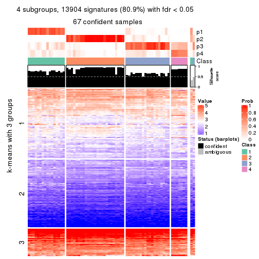
get_signatures(res, k = 5, scale_rows = FALSE)
get_signatures(res, k = 6, scale_rows = FALSE)
Compare the overlap of signatures from different k:
compare_signatures(res)
get_signature() returns a data frame invisibly. TO get the list of signatures, the function
call should be assigned to a variable explicitly. In following code, if plot argument is set
to FALSE, no heatmap is plotted while only the differential analysis is performed.
# code only for demonstration
tb = get_signature(res, k = ..., plot = FALSE)
An example of the output of tb is:
#> which_row fdr mean_1 mean_2 scaled_mean_1 scaled_mean_2 km
#> 1 38 0.042760348 8.373488 9.131774 -0.5533452 0.5164555 1
#> 2 40 0.018707592 7.106213 8.469186 -0.6173731 0.5762149 1
#> 3 55 0.019134737 10.221463 11.207825 -0.6159697 0.5749050 1
#> 4 59 0.006059896 5.921854 7.869574 -0.6899429 0.6439467 1
#> 5 60 0.018055526 8.928898 10.211722 -0.6204761 0.5791110 1
#> 6 98 0.009384629 15.714769 14.887706 0.6635654 -0.6193277 2
...
The columns in tb are:
which_row: row indices corresponding to the input matrix.fdr: FDR for the differential test. mean_x: The mean value in group x.scaled_mean_x: The mean value in group x after rows are scaled.km: Row groups if k-means clustering is applied to rows.UMAP plot which shows how samples are separated.
dimension_reduction(res, k = 2, method = "UMAP")
dimension_reduction(res, k = 3, method = "UMAP")
dimension_reduction(res, k = 4, method = "UMAP")
dimension_reduction(res, k = 5, method = "UMAP")
dimension_reduction(res, k = 6, method = "UMAP")
Following heatmap shows how subgroups are split when increasing k:
collect_classes(res)
If matrix rows can be associated to genes, consider to use GO_Enrichment(res,
...) to perform function enrichment for the signature genes.
The object with results only for a single top-value method and a single partition method can be extracted as:
res = res_list["CV", "skmeans"]
# you can also extract it by
# res = res_list["CV:skmeans"]
A summary of res and all the functions that can be applied to it:
res
#> A 'ConsensusPartition' object with k = 2, 3, 4, 5, 6.
#> On a matrix with 17181 rows and 69 columns.
#> Top rows (1000, 2000, 3000, 4000, 5000) are extracted by 'CV' method.
#> Subgroups are detected by 'skmeans' method.
#> Performed in total 1250 partitions by row resampling.
#> Best k for subgroups seems to be 2.
#>
#> Following methods can be applied to this 'ConsensusPartition' object:
#> [1] "cola_report" "collect_classes" "collect_plots"
#> [4] "collect_stats" "colnames" "compare_signatures"
#> [7] "consensus_heatmap" "dimension_reduction" "functional_enrichment"
#> [10] "get_anno_col" "get_anno" "get_classes"
#> [13] "get_consensus" "get_matrix" "get_membership"
#> [16] "get_param" "get_signatures" "get_stats"
#> [19] "is_best_k" "is_stable_k" "membership_heatmap"
#> [22] "ncol" "nrow" "plot_ecdf"
#> [25] "rownames" "select_partition_number" "show"
#> [28] "suggest_best_k" "test_to_known_factors"
collect_plots() function collects all the plots made from res for all k (number of partitions)
into one single page to provide an easy and fast comparison between different k.
collect_plots(res)
The plots are:
k and the heatmap of
predicted classes for each k.k.k.k.All the plots in panels can be made by individual functions and they are plotted later in this section.
select_partition_number() produces several plots showing different
statistics for choosing “optimized” k. There are following statistics:
k;k, the area increased is defined as \(A_k - A_{k-1}\).The detailed explanations of these statistics can be found in the cola vignette.
Generally speaking, lower PAC score, higher mean silhouette score or higher
concordance corresponds to better partition. Rand index and Jaccard index
measure how similar the current partition is compared to partition with k-1.
If they are too similar, we won't accept k is better than k-1.
select_partition_number(res)
The numeric values for all these statistics can be obtained by get_stats().
get_stats(res)
#> k 1-PAC mean_silhouette concordance area_increased Rand Jaccard
#> 2 2 0.735 0.848 0.935 0.5022 0.498 0.498
#> 3 3 0.781 0.856 0.934 0.3370 0.778 0.578
#> 4 4 0.810 0.770 0.890 0.1078 0.870 0.636
#> 5 5 0.767 0.752 0.853 0.0538 0.924 0.723
#> 6 6 0.783 0.719 0.791 0.0503 0.923 0.669
suggest_best_k() suggests the best \(k\) based on these statistics. The rules are as follows:
NA.suggest_best_k(res)
#> [1] 2
Following shows the table of the partitions (You need to click the show/hide
code output link to see it). The membership matrix (columns with name p*)
is inferred by
clue::cl_consensus()
function with the SE method. Basically the value in the membership matrix
represents the probability to belong to a certain group. The finall class
label for an item is determined with the group with highest probability it
belongs to.
In get_classes() function, the entropy is calculated from the membership
matrix and the silhouette score is calculated from the consensus matrix.
cbind(get_classes(res, k = 2), get_membership(res, k = 2))
#> class entropy silhouette p1 p2
#> SRR1747143 2 0.971 0.457 0.400 0.600
#> SRR1747144 1 0.000 0.960 1.000 0.000
#> SRR1747145 2 0.000 0.895 0.000 1.000
#> SRR1747146 1 0.000 0.960 1.000 0.000
#> SRR1747148 1 0.000 0.960 1.000 0.000
#> SRR1747147 2 0.000 0.895 0.000 1.000
#> SRR1747149 1 0.000 0.960 1.000 0.000
#> SRR1747150 2 0.971 0.457 0.400 0.600
#> SRR1747151 2 0.971 0.457 0.400 0.600
#> SRR1747152 2 0.802 0.677 0.244 0.756
#> SRR1747153 1 0.000 0.960 1.000 0.000
#> SRR1747154 1 0.141 0.940 0.980 0.020
#> SRR1747155 2 0.000 0.895 0.000 1.000
#> SRR1747156 1 0.971 0.318 0.600 0.400
#> SRR1747157 2 0.971 0.457 0.400 0.600
#> SRR1747159 1 0.000 0.960 1.000 0.000
#> SRR1747158 2 0.184 0.877 0.028 0.972
#> SRR1747160 2 0.000 0.895 0.000 1.000
#> SRR1747161 2 0.971 0.457 0.400 0.600
#> SRR1747162 2 0.000 0.895 0.000 1.000
#> SRR1747163 2 0.971 0.457 0.400 0.600
#> SRR1747164 2 0.000 0.895 0.000 1.000
#> SRR1747165 2 0.000 0.895 0.000 1.000
#> SRR1747167 1 0.000 0.960 1.000 0.000
#> SRR1747166 2 0.971 0.457 0.400 0.600
#> SRR1747168 2 0.000 0.895 0.000 1.000
#> SRR1747169 2 0.000 0.895 0.000 1.000
#> SRR1747170 2 0.000 0.895 0.000 1.000
#> SRR1747172 2 0.000 0.895 0.000 1.000
#> SRR1747171 2 0.000 0.895 0.000 1.000
#> SRR1747173 2 0.000 0.895 0.000 1.000
#> SRR1747174 2 0.000 0.895 0.000 1.000
#> SRR1747175 2 0.971 0.457 0.400 0.600
#> SRR1747176 2 0.000 0.895 0.000 1.000
#> SRR1747177 1 0.000 0.960 1.000 0.000
#> SRR1747178 1 0.000 0.960 1.000 0.000
#> SRR1747179 1 0.000 0.960 1.000 0.000
#> SRR1747180 2 0.000 0.895 0.000 1.000
#> SRR1747181 1 0.000 0.960 1.000 0.000
#> SRR1747183 1 0.000 0.960 1.000 0.000
#> SRR1747182 2 0.000 0.895 0.000 1.000
#> SRR1747184 1 0.000 0.960 1.000 0.000
#> SRR1747185 2 0.000 0.895 0.000 1.000
#> SRR1747186 2 0.000 0.895 0.000 1.000
#> SRR1747187 2 0.000 0.895 0.000 1.000
#> SRR1747188 2 0.000 0.895 0.000 1.000
#> SRR1747189 2 0.000 0.895 0.000 1.000
#> SRR1747191 2 0.000 0.895 0.000 1.000
#> SRR1747190 2 0.000 0.895 0.000 1.000
#> SRR1747192 1 0.000 0.960 1.000 0.000
#> SRR1747193 1 0.000 0.960 1.000 0.000
#> SRR1747194 1 0.000 0.960 1.000 0.000
#> SRR1747195 1 0.000 0.960 1.000 0.000
#> SRR1747197 1 0.000 0.960 1.000 0.000
#> SRR1747196 1 0.000 0.960 1.000 0.000
#> SRR1747199 1 0.000 0.960 1.000 0.000
#> SRR1747198 1 0.000 0.960 1.000 0.000
#> SRR1747200 2 0.000 0.895 0.000 1.000
#> SRR1747201 1 0.000 0.960 1.000 0.000
#> SRR1747202 1 0.971 0.318 0.600 0.400
#> SRR1747203 2 0.000 0.895 0.000 1.000
#> SRR1747204 1 0.000 0.960 1.000 0.000
#> SRR1747205 2 0.000 0.895 0.000 1.000
#> SRR1747206 1 0.697 0.708 0.812 0.188
#> SRR1747207 1 0.000 0.960 1.000 0.000
#> SRR1747208 1 0.000 0.960 1.000 0.000
#> SRR1747210 1 0.000 0.960 1.000 0.000
#> SRR1747209 2 0.000 0.895 0.000 1.000
#> SRR1747211 1 0.000 0.960 1.000 0.000
cbind(get_classes(res, k = 3), get_membership(res, k = 3))
#> class entropy silhouette p1 p2 p3
#> SRR1747143 3 0.0747 0.924 0.000 0.016 0.984
#> SRR1747144 3 0.0000 0.935 0.000 0.000 1.000
#> SRR1747145 3 0.6045 0.425 0.000 0.380 0.620
#> SRR1747146 1 0.5678 0.515 0.684 0.000 0.316
#> SRR1747148 1 0.5678 0.515 0.684 0.000 0.316
#> SRR1747147 3 0.0237 0.932 0.000 0.004 0.996
#> SRR1747149 3 0.0000 0.935 0.000 0.000 1.000
#> SRR1747150 3 0.0000 0.935 0.000 0.000 1.000
#> SRR1747151 3 0.0000 0.935 0.000 0.000 1.000
#> SRR1747152 3 0.0000 0.935 0.000 0.000 1.000
#> SRR1747153 1 0.0000 0.861 1.000 0.000 0.000
#> SRR1747154 3 0.0892 0.917 0.020 0.000 0.980
#> SRR1747155 2 0.0000 0.975 0.000 1.000 0.000
#> SRR1747156 1 0.0424 0.856 0.992 0.008 0.000
#> SRR1747157 3 0.0000 0.935 0.000 0.000 1.000
#> SRR1747159 1 0.0000 0.861 1.000 0.000 0.000
#> SRR1747158 3 0.4750 0.727 0.000 0.216 0.784
#> SRR1747160 2 0.0000 0.975 0.000 1.000 0.000
#> SRR1747161 3 0.0000 0.935 0.000 0.000 1.000
#> SRR1747162 2 0.0000 0.975 0.000 1.000 0.000
#> SRR1747163 3 0.0000 0.935 0.000 0.000 1.000
#> SRR1747164 2 0.0237 0.972 0.000 0.996 0.004
#> SRR1747165 3 0.5098 0.660 0.000 0.248 0.752
#> SRR1747167 1 0.0237 0.859 0.996 0.000 0.004
#> SRR1747166 3 0.0000 0.935 0.000 0.000 1.000
#> SRR1747168 2 0.3482 0.853 0.000 0.872 0.128
#> SRR1747169 2 0.0000 0.975 0.000 1.000 0.000
#> SRR1747170 2 0.3482 0.853 0.000 0.872 0.128
#> SRR1747172 2 0.0000 0.975 0.000 1.000 0.000
#> SRR1747171 2 0.0000 0.975 0.000 1.000 0.000
#> SRR1747173 2 0.0000 0.975 0.000 1.000 0.000
#> SRR1747174 2 0.0000 0.975 0.000 1.000 0.000
#> SRR1747175 3 0.0000 0.935 0.000 0.000 1.000
#> SRR1747176 2 0.0000 0.975 0.000 1.000 0.000
#> SRR1747177 1 0.6062 0.507 0.616 0.000 0.384
#> SRR1747178 1 0.5926 0.550 0.644 0.000 0.356
#> SRR1747179 1 0.6062 0.507 0.616 0.000 0.384
#> SRR1747180 2 0.0000 0.975 0.000 1.000 0.000
#> SRR1747181 1 0.0000 0.861 1.000 0.000 0.000
#> SRR1747183 1 0.0000 0.861 1.000 0.000 0.000
#> SRR1747182 2 0.0000 0.975 0.000 1.000 0.000
#> SRR1747184 3 0.0000 0.935 0.000 0.000 1.000
#> SRR1747185 2 0.3619 0.834 0.000 0.864 0.136
#> SRR1747186 2 0.0000 0.975 0.000 1.000 0.000
#> SRR1747187 2 0.0000 0.975 0.000 1.000 0.000
#> SRR1747188 2 0.0000 0.975 0.000 1.000 0.000
#> SRR1747189 2 0.3619 0.843 0.000 0.864 0.136
#> SRR1747191 2 0.0000 0.975 0.000 1.000 0.000
#> SRR1747190 2 0.0000 0.975 0.000 1.000 0.000
#> SRR1747192 1 0.5948 0.544 0.640 0.000 0.360
#> SRR1747193 1 0.0000 0.861 1.000 0.000 0.000
#> SRR1747194 1 0.6062 0.507 0.616 0.000 0.384
#> SRR1747195 1 0.0000 0.861 1.000 0.000 0.000
#> SRR1747197 1 0.0000 0.861 1.000 0.000 0.000
#> SRR1747196 1 0.0000 0.861 1.000 0.000 0.000
#> SRR1747199 1 0.0000 0.861 1.000 0.000 0.000
#> SRR1747198 1 0.0000 0.861 1.000 0.000 0.000
#> SRR1747200 2 0.0000 0.975 0.000 1.000 0.000
#> SRR1747201 1 0.5760 0.587 0.672 0.000 0.328
#> SRR1747202 1 0.5560 0.521 0.700 0.300 0.000
#> SRR1747203 2 0.0000 0.975 0.000 1.000 0.000
#> SRR1747204 1 0.0000 0.861 1.000 0.000 0.000
#> SRR1747205 2 0.0000 0.975 0.000 1.000 0.000
#> SRR1747206 3 0.0000 0.935 0.000 0.000 1.000
#> SRR1747207 1 0.0000 0.861 1.000 0.000 0.000
#> SRR1747208 1 0.0000 0.861 1.000 0.000 0.000
#> SRR1747210 1 0.0000 0.861 1.000 0.000 0.000
#> SRR1747209 2 0.0000 0.975 0.000 1.000 0.000
#> SRR1747211 1 0.0000 0.861 1.000 0.000 0.000
cbind(get_classes(res, k = 4), get_membership(res, k = 4))
#> class entropy silhouette p1 p2 p3 p4
#> SRR1747143 3 0.4746 0.48111 0.000 0.000 0.632 0.368
#> SRR1747144 4 0.4877 0.41208 0.000 0.000 0.408 0.592
#> SRR1747145 3 0.5100 0.63171 0.000 0.076 0.756 0.168
#> SRR1747146 1 0.5420 0.44735 0.624 0.000 0.352 0.024
#> SRR1747148 1 0.5989 0.30022 0.556 0.000 0.400 0.044
#> SRR1747147 3 0.1474 0.66893 0.000 0.000 0.948 0.052
#> SRR1747149 4 0.4877 0.41208 0.000 0.000 0.408 0.592
#> SRR1747150 3 0.4661 0.49871 0.000 0.000 0.652 0.348
#> SRR1747151 3 0.0000 0.67239 0.000 0.000 1.000 0.000
#> SRR1747152 3 0.2868 0.63256 0.000 0.000 0.864 0.136
#> SRR1747153 1 0.0000 0.93469 1.000 0.000 0.000 0.000
#> SRR1747154 3 0.4040 0.60450 0.000 0.000 0.752 0.248
#> SRR1747155 2 0.0000 0.97425 0.000 1.000 0.000 0.000
#> SRR1747156 1 0.0000 0.93469 1.000 0.000 0.000 0.000
#> SRR1747157 3 0.2868 0.63256 0.000 0.000 0.864 0.136
#> SRR1747159 1 0.0000 0.93469 1.000 0.000 0.000 0.000
#> SRR1747158 3 0.3494 0.60983 0.000 0.172 0.824 0.004
#> SRR1747160 2 0.0000 0.97425 0.000 1.000 0.000 0.000
#> SRR1747161 3 0.2868 0.63256 0.000 0.000 0.864 0.136
#> SRR1747162 2 0.1109 0.94653 0.000 0.968 0.028 0.004
#> SRR1747163 3 0.4999 0.27228 0.000 0.000 0.508 0.492
#> SRR1747164 3 0.5168 0.10135 0.000 0.496 0.500 0.004
#> SRR1747165 3 0.3421 0.63995 0.000 0.088 0.868 0.044
#> SRR1747167 4 0.6147 0.00306 0.464 0.000 0.048 0.488
#> SRR1747166 3 0.3123 0.65537 0.000 0.000 0.844 0.156
#> SRR1747168 2 0.3612 0.84217 0.000 0.856 0.044 0.100
#> SRR1747169 2 0.0000 0.97425 0.000 1.000 0.000 0.000
#> SRR1747170 2 0.3796 0.83274 0.000 0.848 0.056 0.096
#> SRR1747172 2 0.0336 0.96950 0.000 0.992 0.008 0.000
#> SRR1747171 2 0.0000 0.97425 0.000 1.000 0.000 0.000
#> SRR1747173 2 0.0000 0.97425 0.000 1.000 0.000 0.000
#> SRR1747174 2 0.0336 0.96950 0.000 0.992 0.008 0.000
#> SRR1747175 4 0.1211 0.69743 0.000 0.000 0.040 0.960
#> SRR1747176 2 0.0000 0.97425 0.000 1.000 0.000 0.000
#> SRR1747177 4 0.0188 0.71065 0.004 0.000 0.000 0.996
#> SRR1747178 4 0.1297 0.70204 0.020 0.000 0.016 0.964
#> SRR1747179 4 0.0376 0.71032 0.004 0.000 0.004 0.992
#> SRR1747180 2 0.0000 0.97425 0.000 1.000 0.000 0.000
#> SRR1747181 1 0.0000 0.93469 1.000 0.000 0.000 0.000
#> SRR1747183 1 0.1022 0.90785 0.968 0.000 0.000 0.032
#> SRR1747182 2 0.0000 0.97425 0.000 1.000 0.000 0.000
#> SRR1747184 4 0.4877 0.41208 0.000 0.000 0.408 0.592
#> SRR1747185 4 0.5489 0.42123 0.000 0.240 0.060 0.700
#> SRR1747186 2 0.0000 0.97425 0.000 1.000 0.000 0.000
#> SRR1747187 2 0.0000 0.97425 0.000 1.000 0.000 0.000
#> SRR1747188 2 0.0000 0.97425 0.000 1.000 0.000 0.000
#> SRR1747189 2 0.3996 0.81757 0.000 0.836 0.060 0.104
#> SRR1747191 2 0.0000 0.97425 0.000 1.000 0.000 0.000
#> SRR1747190 2 0.0469 0.96693 0.000 0.988 0.012 0.000
#> SRR1747192 4 0.2760 0.61457 0.000 0.000 0.128 0.872
#> SRR1747193 1 0.0000 0.93469 1.000 0.000 0.000 0.000
#> SRR1747194 4 0.0188 0.71065 0.004 0.000 0.000 0.996
#> SRR1747195 1 0.0707 0.92030 0.980 0.000 0.000 0.020
#> SRR1747197 1 0.0000 0.93469 1.000 0.000 0.000 0.000
#> SRR1747196 1 0.0000 0.93469 1.000 0.000 0.000 0.000
#> SRR1747199 1 0.0000 0.93469 1.000 0.000 0.000 0.000
#> SRR1747198 1 0.0000 0.93469 1.000 0.000 0.000 0.000
#> SRR1747200 2 0.0000 0.97425 0.000 1.000 0.000 0.000
#> SRR1747201 4 0.1488 0.69788 0.032 0.000 0.012 0.956
#> SRR1747202 1 0.3444 0.71819 0.816 0.184 0.000 0.000
#> SRR1747203 2 0.0000 0.97425 0.000 1.000 0.000 0.000
#> SRR1747204 1 0.0000 0.93469 1.000 0.000 0.000 0.000
#> SRR1747205 2 0.0000 0.97425 0.000 1.000 0.000 0.000
#> SRR1747206 4 0.3873 0.58952 0.000 0.000 0.228 0.772
#> SRR1747207 1 0.0000 0.93469 1.000 0.000 0.000 0.000
#> SRR1747208 1 0.0000 0.93469 1.000 0.000 0.000 0.000
#> SRR1747210 1 0.0000 0.93469 1.000 0.000 0.000 0.000
#> SRR1747209 2 0.0000 0.97425 0.000 1.000 0.000 0.000
#> SRR1747211 1 0.0000 0.93469 1.000 0.000 0.000 0.000
cbind(get_classes(res, k = 5), get_membership(res, k = 5))
#> class entropy silhouette p1 p2 p3 p4 p5
#> SRR1747143 3 0.3953 0.5685 0.000 0.000 0.784 0.048 0.168
#> SRR1747144 4 0.3582 0.7177 0.000 0.000 0.008 0.768 0.224
#> SRR1747145 3 0.1442 0.6148 0.000 0.012 0.952 0.032 0.004
#> SRR1747146 3 0.4860 0.3902 0.292 0.000 0.664 0.040 0.004
#> SRR1747148 3 0.4455 0.5065 0.220 0.000 0.736 0.036 0.008
#> SRR1747147 4 0.3003 0.6913 0.000 0.000 0.188 0.812 0.000
#> SRR1747149 4 0.3582 0.7177 0.000 0.000 0.008 0.768 0.224
#> SRR1747150 3 0.4234 0.5467 0.000 0.000 0.760 0.056 0.184
#> SRR1747151 3 0.3814 0.4113 0.000 0.000 0.720 0.276 0.004
#> SRR1747152 4 0.2450 0.7950 0.000 0.000 0.052 0.900 0.048
#> SRR1747153 1 0.4095 0.7359 0.752 0.000 0.220 0.024 0.004
#> SRR1747154 3 0.1310 0.6167 0.000 0.000 0.956 0.024 0.020
#> SRR1747155 2 0.0451 0.9138 0.000 0.988 0.008 0.004 0.000
#> SRR1747156 1 0.0613 0.8992 0.984 0.008 0.004 0.000 0.004
#> SRR1747157 4 0.2426 0.7937 0.000 0.000 0.064 0.900 0.036
#> SRR1747159 1 0.3421 0.8061 0.816 0.000 0.164 0.016 0.004
#> SRR1747158 4 0.6322 0.0762 0.000 0.156 0.408 0.436 0.000
#> SRR1747160 2 0.0324 0.9148 0.000 0.992 0.004 0.004 0.000
#> SRR1747161 4 0.2554 0.7920 0.000 0.000 0.072 0.892 0.036
#> SRR1747162 2 0.4083 0.7982 0.000 0.808 0.116 0.060 0.016
#> SRR1747163 5 0.6247 -0.0529 0.000 0.000 0.424 0.144 0.432
#> SRR1747164 3 0.4874 0.3222 0.000 0.368 0.600 0.032 0.000
#> SRR1747165 4 0.1914 0.7576 0.000 0.016 0.060 0.924 0.000
#> SRR1747167 3 0.7358 0.0201 0.308 0.000 0.348 0.024 0.320
#> SRR1747166 3 0.3829 0.5139 0.000 0.000 0.776 0.196 0.028
#> SRR1747168 2 0.5606 0.7187 0.000 0.672 0.020 0.208 0.100
#> SRR1747169 2 0.0000 0.9158 0.000 1.000 0.000 0.000 0.000
#> SRR1747170 2 0.5509 0.7274 0.000 0.680 0.020 0.208 0.092
#> SRR1747172 2 0.4109 0.8221 0.000 0.784 0.020 0.172 0.024
#> SRR1747171 2 0.0324 0.9148 0.000 0.992 0.004 0.004 0.000
#> SRR1747173 2 0.3135 0.8718 0.000 0.868 0.020 0.088 0.024
#> SRR1747174 2 0.3203 0.8562 0.000 0.848 0.020 0.124 0.008
#> SRR1747175 5 0.2136 0.7679 0.000 0.000 0.008 0.088 0.904
#> SRR1747176 2 0.0000 0.9158 0.000 1.000 0.000 0.000 0.000
#> SRR1747177 5 0.1461 0.8146 0.016 0.000 0.028 0.004 0.952
#> SRR1747178 5 0.0898 0.8188 0.020 0.000 0.008 0.000 0.972
#> SRR1747179 5 0.0798 0.8194 0.016 0.000 0.008 0.000 0.976
#> SRR1747180 2 0.0693 0.9117 0.000 0.980 0.008 0.012 0.000
#> SRR1747181 1 0.2548 0.8720 0.896 0.000 0.072 0.028 0.004
#> SRR1747183 1 0.2329 0.8390 0.876 0.000 0.000 0.000 0.124
#> SRR1747182 2 0.3135 0.8718 0.000 0.868 0.020 0.088 0.024
#> SRR1747184 4 0.3551 0.7207 0.000 0.000 0.008 0.772 0.220
#> SRR1747185 5 0.5522 0.6079 0.000 0.088 0.076 0.112 0.724
#> SRR1747186 2 0.0000 0.9158 0.000 1.000 0.000 0.000 0.000
#> SRR1747187 2 0.0000 0.9158 0.000 1.000 0.000 0.000 0.000
#> SRR1747188 2 0.0000 0.9158 0.000 1.000 0.000 0.000 0.000
#> SRR1747189 2 0.5599 0.7073 0.000 0.664 0.020 0.228 0.088
#> SRR1747191 2 0.0000 0.9158 0.000 1.000 0.000 0.000 0.000
#> SRR1747190 2 0.2857 0.8619 0.000 0.868 0.012 0.112 0.008
#> SRR1747192 5 0.2820 0.7699 0.004 0.000 0.056 0.056 0.884
#> SRR1747193 1 0.0880 0.9034 0.968 0.000 0.000 0.000 0.032
#> SRR1747194 5 0.1200 0.8179 0.016 0.000 0.012 0.008 0.964
#> SRR1747195 1 0.2300 0.8903 0.908 0.000 0.052 0.000 0.040
#> SRR1747197 1 0.3394 0.8139 0.824 0.000 0.152 0.020 0.004
#> SRR1747196 1 0.1478 0.8889 0.936 0.000 0.000 0.000 0.064
#> SRR1747199 1 0.0880 0.9034 0.968 0.000 0.000 0.000 0.032
#> SRR1747198 1 0.0880 0.9034 0.968 0.000 0.000 0.000 0.032
#> SRR1747200 2 0.0000 0.9158 0.000 1.000 0.000 0.000 0.000
#> SRR1747201 5 0.1082 0.8161 0.028 0.000 0.008 0.000 0.964
#> SRR1747202 1 0.3618 0.6714 0.788 0.196 0.012 0.000 0.004
#> SRR1747203 2 0.0000 0.9158 0.000 1.000 0.000 0.000 0.000
#> SRR1747204 1 0.0290 0.9040 0.992 0.000 0.000 0.000 0.008
#> SRR1747205 2 0.0000 0.9158 0.000 1.000 0.000 0.000 0.000
#> SRR1747206 5 0.3796 0.4419 0.000 0.000 0.000 0.300 0.700
#> SRR1747207 1 0.0000 0.9028 1.000 0.000 0.000 0.000 0.000
#> SRR1747208 1 0.0000 0.9028 1.000 0.000 0.000 0.000 0.000
#> SRR1747210 1 0.2416 0.8869 0.908 0.000 0.060 0.016 0.016
#> SRR1747209 2 0.0000 0.9158 0.000 1.000 0.000 0.000 0.000
#> SRR1747211 1 0.0880 0.9034 0.968 0.000 0.000 0.000 0.032
cbind(get_classes(res, k = 6), get_membership(res, k = 6))
#> class entropy silhouette p1 p2 p3 p4 p5 p6
#> SRR1747143 3 0.2039 0.6816 0.000 0.000 0.916 0.012 0.020 0.052
#> SRR1747144 4 0.1700 0.8768 0.000 0.004 0.000 0.916 0.000 0.080
#> SRR1747145 3 0.1007 0.6858 0.000 0.044 0.956 0.000 0.000 0.000
#> SRR1747146 3 0.7450 0.1911 0.136 0.344 0.396 0.092 0.000 0.032
#> SRR1747148 3 0.7310 0.2434 0.116 0.336 0.424 0.092 0.000 0.032
#> SRR1747147 4 0.3867 0.6941 0.000 0.000 0.200 0.748 0.052 0.000
#> SRR1747149 4 0.1700 0.8768 0.000 0.004 0.000 0.916 0.000 0.080
#> SRR1747150 3 0.2366 0.6792 0.000 0.000 0.900 0.020 0.024 0.056
#> SRR1747151 3 0.2994 0.5783 0.000 0.000 0.788 0.208 0.004 0.000
#> SRR1747152 4 0.1666 0.8914 0.000 0.000 0.020 0.936 0.036 0.008
#> SRR1747153 1 0.6958 0.4754 0.456 0.344 0.104 0.064 0.000 0.032
#> SRR1747154 3 0.0865 0.6839 0.000 0.036 0.964 0.000 0.000 0.000
#> SRR1747155 2 0.3862 0.9563 0.000 0.608 0.004 0.000 0.388 0.000
#> SRR1747156 1 0.2153 0.7802 0.900 0.084 0.004 0.004 0.000 0.008
#> SRR1747157 4 0.1666 0.8914 0.000 0.000 0.020 0.936 0.036 0.008
#> SRR1747159 1 0.6315 0.5772 0.536 0.320 0.052 0.060 0.000 0.032
#> SRR1747158 3 0.5300 0.2872 0.000 0.116 0.540 0.344 0.000 0.000
#> SRR1747160 2 0.3756 0.9448 0.000 0.600 0.000 0.000 0.400 0.000
#> SRR1747161 4 0.1666 0.8914 0.000 0.000 0.020 0.936 0.036 0.008
#> SRR1747162 5 0.5765 -0.2330 0.000 0.412 0.172 0.000 0.416 0.000
#> SRR1747163 3 0.5806 0.4340 0.000 0.000 0.612 0.056 0.112 0.220
#> SRR1747164 3 0.4425 0.4479 0.000 0.296 0.660 0.008 0.036 0.000
#> SRR1747165 4 0.3460 0.7349 0.000 0.000 0.020 0.760 0.220 0.000
#> SRR1747167 6 0.8196 0.0617 0.144 0.244 0.180 0.060 0.000 0.372
#> SRR1747166 3 0.2094 0.6777 0.000 0.000 0.908 0.068 0.008 0.016
#> SRR1747168 5 0.1092 0.7877 0.000 0.000 0.000 0.020 0.960 0.020
#> SRR1747169 2 0.3695 0.9720 0.000 0.624 0.000 0.000 0.376 0.000
#> SRR1747170 5 0.1092 0.7877 0.000 0.000 0.000 0.020 0.960 0.020
#> SRR1747172 5 0.0000 0.7923 0.000 0.000 0.000 0.000 1.000 0.000
#> SRR1747171 2 0.3765 0.9469 0.000 0.596 0.000 0.000 0.404 0.000
#> SRR1747173 5 0.0937 0.7764 0.000 0.040 0.000 0.000 0.960 0.000
#> SRR1747174 5 0.1863 0.6951 0.000 0.104 0.000 0.000 0.896 0.000
#> SRR1747175 6 0.3307 0.7263 0.000 0.000 0.008 0.064 0.096 0.832
#> SRR1747176 2 0.3695 0.9720 0.000 0.624 0.000 0.000 0.376 0.000
#> SRR1747177 6 0.1698 0.7860 0.008 0.012 0.004 0.032 0.004 0.940
#> SRR1747178 6 0.1204 0.7882 0.016 0.004 0.004 0.016 0.000 0.960
#> SRR1747179 6 0.0976 0.7880 0.008 0.000 0.008 0.016 0.000 0.968
#> SRR1747180 2 0.3847 0.8276 0.000 0.544 0.000 0.000 0.456 0.000
#> SRR1747181 1 0.5572 0.6816 0.676 0.176 0.036 0.084 0.000 0.028
#> SRR1747183 1 0.3003 0.7094 0.812 0.016 0.000 0.000 0.000 0.172
#> SRR1747182 5 0.1010 0.7810 0.000 0.036 0.000 0.000 0.960 0.004
#> SRR1747184 4 0.1700 0.8768 0.000 0.004 0.000 0.916 0.000 0.080
#> SRR1747185 6 0.5267 0.4349 0.000 0.000 0.120 0.000 0.320 0.560
#> SRR1747186 2 0.3717 0.9684 0.000 0.616 0.000 0.000 0.384 0.000
#> SRR1747187 2 0.3695 0.9720 0.000 0.624 0.000 0.000 0.376 0.000
#> SRR1747188 2 0.3672 0.9646 0.000 0.632 0.000 0.000 0.368 0.000
#> SRR1747189 5 0.1257 0.7802 0.000 0.000 0.000 0.028 0.952 0.020
#> SRR1747191 2 0.3695 0.9720 0.000 0.624 0.000 0.000 0.376 0.000
#> SRR1747190 5 0.3081 0.4481 0.000 0.220 0.000 0.004 0.776 0.000
#> SRR1747192 6 0.2113 0.7644 0.004 0.008 0.044 0.000 0.028 0.916
#> SRR1747193 1 0.1010 0.7976 0.960 0.004 0.000 0.000 0.000 0.036
#> SRR1747194 6 0.1282 0.7883 0.012 0.004 0.004 0.024 0.000 0.956
#> SRR1747195 1 0.4627 0.7479 0.768 0.056 0.028 0.036 0.000 0.112
#> SRR1747197 1 0.6192 0.5954 0.560 0.300 0.044 0.064 0.000 0.032
#> SRR1747196 1 0.3862 0.7392 0.792 0.036 0.008 0.016 0.000 0.148
#> SRR1747199 1 0.1010 0.7976 0.960 0.004 0.000 0.000 0.000 0.036
#> SRR1747198 1 0.1010 0.7976 0.960 0.004 0.000 0.000 0.000 0.036
#> SRR1747200 2 0.3695 0.9720 0.000 0.624 0.000 0.000 0.376 0.000
#> SRR1747201 6 0.1225 0.7832 0.032 0.004 0.004 0.004 0.000 0.956
#> SRR1747202 1 0.4744 0.5592 0.668 0.264 0.004 0.000 0.052 0.012
#> SRR1747203 2 0.3684 0.9659 0.000 0.628 0.000 0.000 0.372 0.000
#> SRR1747204 1 0.0622 0.8022 0.980 0.008 0.000 0.000 0.000 0.012
#> SRR1747205 2 0.3695 0.9720 0.000 0.624 0.000 0.000 0.376 0.000
#> SRR1747206 6 0.3937 0.2075 0.000 0.000 0.004 0.424 0.000 0.572
#> SRR1747207 1 0.0000 0.8000 1.000 0.000 0.000 0.000 0.000 0.000
#> SRR1747208 1 0.0000 0.8000 1.000 0.000 0.000 0.000 0.000 0.000
#> SRR1747210 1 0.5312 0.6936 0.680 0.208 0.024 0.052 0.000 0.036
#> SRR1747209 2 0.3717 0.9659 0.000 0.616 0.000 0.000 0.384 0.000
#> SRR1747211 1 0.1010 0.7976 0.960 0.004 0.000 0.000 0.000 0.036
Heatmaps for the consensus matrix. It visualizes the probability of two samples to be in a same group.
consensus_heatmap(res, k = 2)
consensus_heatmap(res, k = 3)
consensus_heatmap(res, k = 4)
consensus_heatmap(res, k = 5)
consensus_heatmap(res, k = 6)
Heatmaps for the membership of samples in all partitions to see how consistent they are:
membership_heatmap(res, k = 2)
membership_heatmap(res, k = 3)
membership_heatmap(res, k = 4)
membership_heatmap(res, k = 5)
membership_heatmap(res, k = 6)
As soon as we have had the classes for columns, we can look for signatures which are significantly different between classes which can be candidate marks for certain classes. Following are the heatmaps for signatures.
Signature heatmaps where rows are scaled:
get_signatures(res, k = 2)
get_signatures(res, k = 3)
get_signatures(res, k = 4)
get_signatures(res, k = 5)
get_signatures(res, k = 6)
Signature heatmaps where rows are not scaled:
get_signatures(res, k = 2, scale_rows = FALSE)
get_signatures(res, k = 3, scale_rows = FALSE)
get_signatures(res, k = 4, scale_rows = FALSE)
get_signatures(res, k = 5, scale_rows = FALSE)
get_signatures(res, k = 6, scale_rows = FALSE)
Compare the overlap of signatures from different k:
compare_signatures(res)
get_signature() returns a data frame invisibly. TO get the list of signatures, the function
call should be assigned to a variable explicitly. In following code, if plot argument is set
to FALSE, no heatmap is plotted while only the differential analysis is performed.
# code only for demonstration
tb = get_signature(res, k = ..., plot = FALSE)
An example of the output of tb is:
#> which_row fdr mean_1 mean_2 scaled_mean_1 scaled_mean_2 km
#> 1 38 0.042760348 8.373488 9.131774 -0.5533452 0.5164555 1
#> 2 40 0.018707592 7.106213 8.469186 -0.6173731 0.5762149 1
#> 3 55 0.019134737 10.221463 11.207825 -0.6159697 0.5749050 1
#> 4 59 0.006059896 5.921854 7.869574 -0.6899429 0.6439467 1
#> 5 60 0.018055526 8.928898 10.211722 -0.6204761 0.5791110 1
#> 6 98 0.009384629 15.714769 14.887706 0.6635654 -0.6193277 2
...
The columns in tb are:
which_row: row indices corresponding to the input matrix.fdr: FDR for the differential test. mean_x: The mean value in group x.scaled_mean_x: The mean value in group x after rows are scaled.km: Row groups if k-means clustering is applied to rows.UMAP plot which shows how samples are separated.
dimension_reduction(res, k = 2, method = "UMAP")
dimension_reduction(res, k = 3, method = "UMAP")
dimension_reduction(res, k = 4, method = "UMAP")
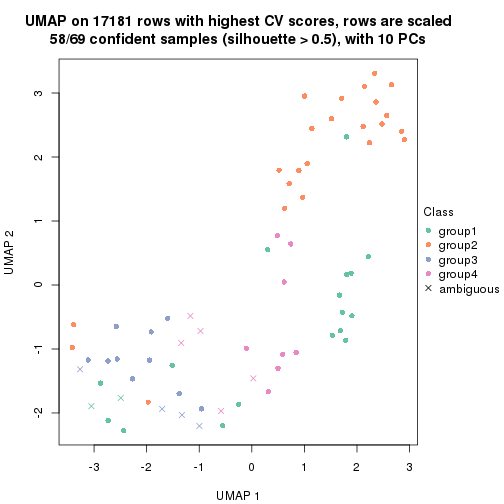
dimension_reduction(res, k = 5, method = "UMAP")
dimension_reduction(res, k = 6, method = "UMAP")
Following heatmap shows how subgroups are split when increasing k:
collect_classes(res)
If matrix rows can be associated to genes, consider to use GO_Enrichment(res,
...) to perform function enrichment for the signature genes.
The object with results only for a single top-value method and a single partition method can be extracted as:
res = res_list["CV", "pam"]
# you can also extract it by
# res = res_list["CV:pam"]
A summary of res and all the functions that can be applied to it:
res
#> A 'ConsensusPartition' object with k = 2, 3, 4, 5, 6.
#> On a matrix with 17181 rows and 69 columns.
#> Top rows (1000, 2000, 3000, 4000, 5000) are extracted by 'CV' method.
#> Subgroups are detected by 'pam' method.
#> Performed in total 1250 partitions by row resampling.
#> Best k for subgroups seems to be 4.
#>
#> Following methods can be applied to this 'ConsensusPartition' object:
#> [1] "cola_report" "collect_classes" "collect_plots"
#> [4] "collect_stats" "colnames" "compare_signatures"
#> [7] "consensus_heatmap" "dimension_reduction" "functional_enrichment"
#> [10] "get_anno_col" "get_anno" "get_classes"
#> [13] "get_consensus" "get_matrix" "get_membership"
#> [16] "get_param" "get_signatures" "get_stats"
#> [19] "is_best_k" "is_stable_k" "membership_heatmap"
#> [22] "ncol" "nrow" "plot_ecdf"
#> [25] "rownames" "select_partition_number" "show"
#> [28] "suggest_best_k" "test_to_known_factors"
collect_plots() function collects all the plots made from res for all k (number of partitions)
into one single page to provide an easy and fast comparison between different k.
collect_plots(res)
The plots are:
k and the heatmap of
predicted classes for each k.k.k.k.All the plots in panels can be made by individual functions and they are plotted later in this section.
select_partition_number() produces several plots showing different
statistics for choosing “optimized” k. There are following statistics:
k;k, the area increased is defined as \(A_k - A_{k-1}\).The detailed explanations of these statistics can be found in the cola vignette.
Generally speaking, lower PAC score, higher mean silhouette score or higher
concordance corresponds to better partition. Rand index and Jaccard index
measure how similar the current partition is compared to partition with k-1.
If they are too similar, we won't accept k is better than k-1.
select_partition_number(res)
The numeric values for all these statistics can be obtained by get_stats().
get_stats(res)
#> k 1-PAC mean_silhouette concordance area_increased Rand Jaccard
#> 2 2 0.477 0.840 0.802 0.3726 0.517 0.517
#> 3 3 0.513 0.785 0.846 0.4951 0.819 0.676
#> 4 4 0.653 0.888 0.901 0.1743 0.848 0.661
#> 5 5 0.660 0.696 0.815 0.1463 0.876 0.631
#> 6 6 0.823 0.835 0.886 0.0787 0.852 0.484
suggest_best_k() suggests the best \(k\) based on these statistics. The rules are as follows:
NA.suggest_best_k(res)
#> [1] 4
Following shows the table of the partitions (You need to click the show/hide
code output link to see it). The membership matrix (columns with name p*)
is inferred by
clue::cl_consensus()
function with the SE method. Basically the value in the membership matrix
represents the probability to belong to a certain group. The finall class
label for an item is determined with the group with highest probability it
belongs to.
In get_classes() function, the entropy is calculated from the membership
matrix and the silhouette score is calculated from the consensus matrix.
cbind(get_classes(res, k = 2), get_membership(res, k = 2))
#> class entropy silhouette p1 p2
#> SRR1747143 1 0.0000 0.8682 1.000 0.000
#> SRR1747144 1 0.0000 0.8682 1.000 0.000
#> SRR1747145 1 0.0000 0.8682 1.000 0.000
#> SRR1747146 1 0.0000 0.8682 1.000 0.000
#> SRR1747148 1 0.0000 0.8682 1.000 0.000
#> SRR1747147 1 0.0000 0.8682 1.000 0.000
#> SRR1747149 1 0.0000 0.8682 1.000 0.000
#> SRR1747150 1 0.0000 0.8682 1.000 0.000
#> SRR1747151 1 0.0000 0.8682 1.000 0.000
#> SRR1747152 2 0.9710 0.9727 0.400 0.600
#> SRR1747153 1 0.0000 0.8682 1.000 0.000
#> SRR1747154 1 0.0000 0.8682 1.000 0.000
#> SRR1747155 2 0.9710 0.9727 0.400 0.600
#> SRR1747156 2 0.9686 0.9591 0.396 0.604
#> SRR1747157 1 0.0938 0.8562 0.988 0.012
#> SRR1747159 1 0.0938 0.8577 0.988 0.012
#> SRR1747158 1 0.0000 0.8682 1.000 0.000
#> SRR1747160 2 0.9710 0.9727 0.400 0.600
#> SRR1747161 1 0.0938 0.8562 0.988 0.012
#> SRR1747162 1 0.8608 0.0367 0.716 0.284
#> SRR1747163 1 0.0000 0.8682 1.000 0.000
#> SRR1747164 1 0.0000 0.8682 1.000 0.000
#> SRR1747165 2 0.9710 0.9727 0.400 0.600
#> SRR1747167 1 0.0000 0.8682 1.000 0.000
#> SRR1747166 1 0.0000 0.8682 1.000 0.000
#> SRR1747168 2 0.9710 0.9727 0.400 0.600
#> SRR1747169 2 0.9710 0.9727 0.400 0.600
#> SRR1747170 2 0.9710 0.9727 0.400 0.600
#> SRR1747172 2 0.9710 0.9727 0.400 0.600
#> SRR1747171 2 0.9710 0.9727 0.400 0.600
#> SRR1747173 2 0.9710 0.9727 0.400 0.600
#> SRR1747174 2 0.9710 0.9727 0.400 0.600
#> SRR1747175 1 0.0000 0.8682 1.000 0.000
#> SRR1747176 2 0.9710 0.9727 0.400 0.600
#> SRR1747177 1 0.0000 0.8682 1.000 0.000
#> SRR1747178 1 0.0000 0.8682 1.000 0.000
#> SRR1747179 1 0.0938 0.8562 0.988 0.012
#> SRR1747180 2 0.9710 0.9727 0.400 0.600
#> SRR1747181 1 0.8608 0.0361 0.716 0.284
#> SRR1747183 1 0.6887 0.6815 0.816 0.184
#> SRR1747182 2 0.9710 0.9727 0.400 0.600
#> SRR1747184 1 0.0938 0.8562 0.988 0.012
#> SRR1747185 1 0.0938 0.8562 0.988 0.012
#> SRR1747186 2 0.9710 0.9727 0.400 0.600
#> SRR1747187 2 0.9710 0.9727 0.400 0.600
#> SRR1747188 2 0.9710 0.9727 0.400 0.600
#> SRR1747189 2 0.9710 0.9727 0.400 0.600
#> SRR1747191 2 0.9710 0.9727 0.400 0.600
#> SRR1747190 2 0.9710 0.9727 0.400 0.600
#> SRR1747192 1 0.0000 0.8682 1.000 0.000
#> SRR1747193 1 0.9710 0.4991 0.600 0.400
#> SRR1747194 1 0.0000 0.8682 1.000 0.000
#> SRR1747195 1 0.0000 0.8682 1.000 0.000
#> SRR1747197 1 0.0000 0.8682 1.000 0.000
#> SRR1747196 1 0.9686 0.5023 0.604 0.396
#> SRR1747199 1 0.9661 0.5049 0.608 0.392
#> SRR1747198 1 0.9710 0.4991 0.600 0.400
#> SRR1747200 2 0.9710 0.9727 0.400 0.600
#> SRR1747201 1 0.0000 0.8682 1.000 0.000
#> SRR1747202 2 0.9775 0.9541 0.412 0.588
#> SRR1747203 2 0.9710 0.9727 0.400 0.600
#> SRR1747204 1 0.0000 0.8682 1.000 0.000
#> SRR1747205 2 0.9710 0.9727 0.400 0.600
#> SRR1747206 1 0.1184 0.8512 0.984 0.016
#> SRR1747207 1 0.9710 0.4991 0.600 0.400
#> SRR1747208 2 0.0938 0.4161 0.012 0.988
#> SRR1747210 1 0.0000 0.8682 1.000 0.000
#> SRR1747209 2 0.9710 0.9727 0.400 0.600
#> SRR1747211 1 0.9710 0.4991 0.600 0.400
cbind(get_classes(res, k = 3), get_membership(res, k = 3))
#> class entropy silhouette p1 p2 p3
#> SRR1747143 3 0.0000 0.8519 0.000 0.000 1.000
#> SRR1747144 3 0.8392 0.5059 0.176 0.200 0.624
#> SRR1747145 3 0.0000 0.8519 0.000 0.000 1.000
#> SRR1747146 3 0.1643 0.8218 0.000 0.044 0.956
#> SRR1747148 3 0.0000 0.8519 0.000 0.000 1.000
#> SRR1747147 3 0.1529 0.8336 0.000 0.040 0.960
#> SRR1747149 3 0.8433 0.5041 0.176 0.204 0.620
#> SRR1747150 3 0.0000 0.8519 0.000 0.000 1.000
#> SRR1747151 3 0.0000 0.8519 0.000 0.000 1.000
#> SRR1747152 3 0.8853 0.4670 0.176 0.252 0.572
#> SRR1747153 3 0.0424 0.8483 0.000 0.008 0.992
#> SRR1747154 3 0.0000 0.8519 0.000 0.000 1.000
#> SRR1747155 2 0.4555 0.9521 0.000 0.800 0.200
#> SRR1747156 2 0.4963 0.9390 0.008 0.792 0.200
#> SRR1747157 3 0.8587 0.4959 0.176 0.220 0.604
#> SRR1747159 3 0.0424 0.8485 0.008 0.000 0.992
#> SRR1747158 3 0.0000 0.8519 0.000 0.000 1.000
#> SRR1747160 2 0.4555 0.9521 0.000 0.800 0.200
#> SRR1747161 3 0.6348 0.6221 0.048 0.212 0.740
#> SRR1747162 3 0.1163 0.8351 0.000 0.028 0.972
#> SRR1747163 3 0.0424 0.8487 0.000 0.008 0.992
#> SRR1747164 3 0.0000 0.8519 0.000 0.000 1.000
#> SRR1747165 2 0.6345 -0.0842 0.004 0.596 0.400
#> SRR1747167 3 0.0000 0.8519 0.000 0.000 1.000
#> SRR1747166 3 0.0000 0.8519 0.000 0.000 1.000
#> SRR1747168 3 0.6305 -0.2996 0.000 0.484 0.516
#> SRR1747169 2 0.4555 0.9521 0.000 0.800 0.200
#> SRR1747170 2 0.4555 0.9521 0.000 0.800 0.200
#> SRR1747172 2 0.4555 0.9521 0.000 0.800 0.200
#> SRR1747171 2 0.4555 0.9521 0.000 0.800 0.200
#> SRR1747173 2 0.4555 0.9521 0.000 0.800 0.200
#> SRR1747174 2 0.4555 0.9521 0.000 0.800 0.200
#> SRR1747175 3 0.0424 0.8487 0.000 0.008 0.992
#> SRR1747176 2 0.4555 0.9521 0.000 0.800 0.200
#> SRR1747177 3 0.1643 0.8218 0.000 0.044 0.956
#> SRR1747178 3 0.0000 0.8519 0.000 0.000 1.000
#> SRR1747179 3 0.2165 0.8095 0.000 0.064 0.936
#> SRR1747180 2 0.4555 0.9521 0.000 0.800 0.200
#> SRR1747181 2 0.6192 0.3558 0.176 0.764 0.060
#> SRR1747183 3 0.0424 0.8491 0.008 0.000 0.992
#> SRR1747182 2 0.4555 0.9521 0.000 0.800 0.200
#> SRR1747184 3 0.8587 0.4959 0.176 0.220 0.604
#> SRR1747185 3 0.0892 0.8419 0.000 0.020 0.980
#> SRR1747186 2 0.4555 0.9521 0.000 0.800 0.200
#> SRR1747187 2 0.4555 0.9521 0.000 0.800 0.200
#> SRR1747188 2 0.4555 0.9521 0.000 0.800 0.200
#> SRR1747189 2 0.4504 0.9476 0.000 0.804 0.196
#> SRR1747191 2 0.4555 0.9521 0.000 0.800 0.200
#> SRR1747190 2 0.4555 0.9521 0.000 0.800 0.200
#> SRR1747192 3 0.0000 0.8519 0.000 0.000 1.000
#> SRR1747193 1 0.0237 0.8200 0.996 0.000 0.004
#> SRR1747194 3 0.0661 0.8477 0.004 0.008 0.988
#> SRR1747195 3 0.9263 -0.0981 0.360 0.164 0.476
#> SRR1747197 3 0.8337 0.3049 0.376 0.088 0.536
#> SRR1747196 1 0.4931 0.8070 0.768 0.000 0.232
#> SRR1747199 1 0.4346 0.8575 0.816 0.000 0.184
#> SRR1747198 1 0.4235 0.8618 0.824 0.000 0.176
#> SRR1747200 2 0.4555 0.9521 0.000 0.800 0.200
#> SRR1747201 3 0.0000 0.8519 0.000 0.000 1.000
#> SRR1747202 2 0.4796 0.9277 0.000 0.780 0.220
#> SRR1747203 2 0.4555 0.9521 0.000 0.800 0.200
#> SRR1747204 3 0.1643 0.8218 0.000 0.044 0.956
#> SRR1747205 2 0.4555 0.9521 0.000 0.800 0.200
#> SRR1747206 3 0.8550 0.5019 0.176 0.216 0.608
#> SRR1747207 1 0.0237 0.8200 0.996 0.000 0.004
#> SRR1747208 1 0.4235 0.7205 0.824 0.176 0.000
#> SRR1747210 3 0.0000 0.8519 0.000 0.000 1.000
#> SRR1747209 2 0.4555 0.9521 0.000 0.800 0.200
#> SRR1747211 1 0.4235 0.8618 0.824 0.000 0.176
cbind(get_classes(res, k = 4), get_membership(res, k = 4))
#> class entropy silhouette p1 p2 p3 p4
#> SRR1747143 3 0.3311 0.885 0.000 0.172 0.828 0.000
#> SRR1747144 4 0.1022 0.941 0.000 0.000 0.032 0.968
#> SRR1747145 3 0.3311 0.885 0.000 0.172 0.828 0.000
#> SRR1747146 3 0.2408 0.687 0.000 0.000 0.896 0.104
#> SRR1747148 3 0.1209 0.747 0.000 0.004 0.964 0.032
#> SRR1747147 3 0.7030 0.286 0.000 0.120 0.472 0.408
#> SRR1747149 4 0.1022 0.941 0.000 0.000 0.032 0.968
#> SRR1747150 3 0.3448 0.884 0.000 0.168 0.828 0.004
#> SRR1747151 3 0.3545 0.883 0.000 0.164 0.828 0.008
#> SRR1747152 4 0.1022 0.941 0.000 0.000 0.032 0.968
#> SRR1747153 3 0.1792 0.719 0.000 0.000 0.932 0.068
#> SRR1747154 3 0.3311 0.885 0.000 0.172 0.828 0.000
#> SRR1747155 2 0.0000 0.982 0.000 1.000 0.000 0.000
#> SRR1747156 2 0.0927 0.977 0.008 0.976 0.016 0.000
#> SRR1747157 4 0.1022 0.941 0.000 0.000 0.032 0.968
#> SRR1747159 3 0.1022 0.743 0.000 0.000 0.968 0.032
#> SRR1747158 3 0.3400 0.883 0.000 0.180 0.820 0.000
#> SRR1747160 2 0.0000 0.982 0.000 1.000 0.000 0.000
#> SRR1747161 4 0.3172 0.806 0.000 0.000 0.160 0.840
#> SRR1747162 3 0.4998 0.343 0.000 0.488 0.512 0.000
#> SRR1747163 3 0.4057 0.869 0.000 0.160 0.812 0.028
#> SRR1747164 3 0.3356 0.884 0.000 0.176 0.824 0.000
#> SRR1747165 4 0.3934 0.830 0.000 0.048 0.116 0.836
#> SRR1747167 3 0.0000 0.759 0.000 0.000 1.000 0.000
#> SRR1747166 3 0.3545 0.883 0.000 0.164 0.828 0.008
#> SRR1747168 2 0.2999 0.808 0.000 0.864 0.132 0.004
#> SRR1747169 2 0.0469 0.982 0.000 0.988 0.012 0.000
#> SRR1747170 2 0.0000 0.982 0.000 1.000 0.000 0.000
#> SRR1747172 2 0.0000 0.982 0.000 1.000 0.000 0.000
#> SRR1747171 2 0.0000 0.982 0.000 1.000 0.000 0.000
#> SRR1747173 2 0.0000 0.982 0.000 1.000 0.000 0.000
#> SRR1747174 2 0.0000 0.982 0.000 1.000 0.000 0.000
#> SRR1747175 3 0.3962 0.873 0.000 0.152 0.820 0.028
#> SRR1747176 2 0.0707 0.977 0.000 0.980 0.020 0.000
#> SRR1747177 3 0.3356 0.884 0.000 0.176 0.824 0.000
#> SRR1747178 3 0.3311 0.885 0.000 0.172 0.828 0.000
#> SRR1747179 3 0.3356 0.884 0.000 0.176 0.824 0.000
#> SRR1747180 2 0.0469 0.982 0.000 0.988 0.012 0.000
#> SRR1747181 4 0.1022 0.884 0.000 0.000 0.032 0.968
#> SRR1747183 3 0.3448 0.885 0.004 0.168 0.828 0.000
#> SRR1747182 2 0.0188 0.981 0.000 0.996 0.004 0.000
#> SRR1747184 4 0.1022 0.941 0.000 0.000 0.032 0.968
#> SRR1747185 3 0.3569 0.873 0.000 0.196 0.804 0.000
#> SRR1747186 2 0.0000 0.982 0.000 1.000 0.000 0.000
#> SRR1747187 2 0.0000 0.982 0.000 1.000 0.000 0.000
#> SRR1747188 2 0.0469 0.982 0.000 0.988 0.012 0.000
#> SRR1747189 2 0.0707 0.963 0.000 0.980 0.000 0.020
#> SRR1747191 2 0.0469 0.982 0.000 0.988 0.012 0.000
#> SRR1747190 2 0.0469 0.982 0.000 0.988 0.012 0.000
#> SRR1747192 3 0.3400 0.883 0.000 0.180 0.820 0.000
#> SRR1747193 1 0.0000 1.000 1.000 0.000 0.000 0.000
#> SRR1747194 3 0.4423 0.869 0.000 0.176 0.788 0.036
#> SRR1747195 3 0.5595 0.793 0.044 0.252 0.696 0.008
#> SRR1747197 3 0.3907 0.522 0.000 0.000 0.768 0.232
#> SRR1747196 3 0.4540 0.519 0.196 0.000 0.772 0.032
#> SRR1747199 1 0.0000 1.000 1.000 0.000 0.000 0.000
#> SRR1747198 1 0.0000 1.000 1.000 0.000 0.000 0.000
#> SRR1747200 2 0.0469 0.982 0.000 0.988 0.012 0.000
#> SRR1747201 3 0.3400 0.883 0.000 0.180 0.820 0.000
#> SRR1747202 2 0.0707 0.977 0.000 0.980 0.020 0.000
#> SRR1747203 2 0.0336 0.983 0.000 0.992 0.008 0.000
#> SRR1747204 3 0.4035 0.879 0.000 0.176 0.804 0.020
#> SRR1747205 2 0.0707 0.977 0.000 0.980 0.020 0.000
#> SRR1747206 4 0.1388 0.932 0.000 0.012 0.028 0.960
#> SRR1747207 1 0.0000 1.000 1.000 0.000 0.000 0.000
#> SRR1747208 1 0.0000 1.000 1.000 0.000 0.000 0.000
#> SRR1747210 3 0.3448 0.884 0.000 0.168 0.828 0.004
#> SRR1747209 2 0.0469 0.982 0.000 0.988 0.012 0.000
#> SRR1747211 1 0.0000 1.000 1.000 0.000 0.000 0.000
cbind(get_classes(res, k = 5), get_membership(res, k = 5))
#> class entropy silhouette p1 p2 p3 p4 p5
#> SRR1747143 3 0.6289 0.6211 0.000 0.160 0.484 0.000 0.356
#> SRR1747144 4 0.0000 0.8587 0.000 0.000 0.000 1.000 0.000
#> SRR1747145 3 0.6289 0.6211 0.000 0.160 0.484 0.000 0.356
#> SRR1747146 3 0.0000 0.4902 0.000 0.000 1.000 0.000 0.000
#> SRR1747148 3 0.0290 0.4921 0.000 0.008 0.992 0.000 0.000
#> SRR1747147 4 0.6942 0.1105 0.000 0.136 0.280 0.532 0.052
#> SRR1747149 4 0.0000 0.8587 0.000 0.000 0.000 1.000 0.000
#> SRR1747150 3 0.6289 0.6211 0.000 0.160 0.484 0.000 0.356
#> SRR1747151 3 0.6289 0.6211 0.000 0.160 0.484 0.000 0.356
#> SRR1747152 4 0.0000 0.8587 0.000 0.000 0.000 1.000 0.000
#> SRR1747153 3 0.0000 0.4902 0.000 0.000 1.000 0.000 0.000
#> SRR1747154 3 0.6289 0.6211 0.000 0.160 0.484 0.000 0.356
#> SRR1747155 2 0.3561 0.7883 0.000 0.740 0.000 0.000 0.260
#> SRR1747156 2 0.0162 0.8425 0.000 0.996 0.004 0.000 0.000
#> SRR1747157 4 0.0000 0.8587 0.000 0.000 0.000 1.000 0.000
#> SRR1747159 3 0.0000 0.4902 0.000 0.000 1.000 0.000 0.000
#> SRR1747158 3 0.6289 0.6211 0.000 0.160 0.484 0.000 0.356
#> SRR1747160 2 0.3561 0.7883 0.000 0.740 0.000 0.000 0.260
#> SRR1747161 4 0.1270 0.8307 0.000 0.000 0.000 0.948 0.052
#> SRR1747162 5 0.1544 0.4872 0.000 0.068 0.000 0.000 0.932
#> SRR1747163 5 0.2304 0.5440 0.000 0.000 0.100 0.008 0.892
#> SRR1747164 3 0.6289 0.6211 0.000 0.160 0.484 0.000 0.356
#> SRR1747165 4 0.1568 0.8343 0.000 0.020 0.000 0.944 0.036
#> SRR1747167 3 0.4045 0.5457 0.000 0.000 0.644 0.000 0.356
#> SRR1747166 3 0.6289 0.6211 0.000 0.160 0.484 0.000 0.356
#> SRR1747168 5 0.3913 -0.0496 0.000 0.324 0.000 0.000 0.676
#> SRR1747169 2 0.0000 0.8444 0.000 1.000 0.000 0.000 0.000
#> SRR1747170 2 0.4297 0.4990 0.000 0.528 0.000 0.000 0.472
#> SRR1747172 2 0.3561 0.7883 0.000 0.740 0.000 0.000 0.260
#> SRR1747171 2 0.3561 0.7883 0.000 0.740 0.000 0.000 0.260
#> SRR1747173 2 0.3561 0.7883 0.000 0.740 0.000 0.000 0.260
#> SRR1747174 2 0.2732 0.8165 0.000 0.840 0.000 0.000 0.160
#> SRR1747175 5 0.4834 0.6512 0.000 0.152 0.100 0.008 0.740
#> SRR1747176 2 0.0000 0.8444 0.000 1.000 0.000 0.000 0.000
#> SRR1747177 3 0.6330 0.5988 0.000 0.164 0.472 0.000 0.364
#> SRR1747178 5 0.4637 0.6517 0.000 0.160 0.100 0.000 0.740
#> SRR1747179 5 0.4637 0.6517 0.000 0.160 0.100 0.000 0.740
#> SRR1747180 2 0.0162 0.8412 0.000 0.996 0.000 0.000 0.004
#> SRR1747181 4 0.0510 0.8513 0.000 0.000 0.016 0.984 0.000
#> SRR1747183 5 0.4637 0.6517 0.000 0.160 0.100 0.000 0.740
#> SRR1747182 5 0.3876 -0.0255 0.000 0.316 0.000 0.000 0.684
#> SRR1747184 4 0.0000 0.8587 0.000 0.000 0.000 1.000 0.000
#> SRR1747185 5 0.4035 0.6506 0.000 0.156 0.060 0.000 0.784
#> SRR1747186 2 0.2813 0.8153 0.000 0.832 0.000 0.000 0.168
#> SRR1747187 2 0.2732 0.8165 0.000 0.840 0.000 0.000 0.160
#> SRR1747188 2 0.0000 0.8444 0.000 1.000 0.000 0.000 0.000
#> SRR1747189 2 0.3561 0.7883 0.000 0.740 0.000 0.000 0.260
#> SRR1747191 2 0.0000 0.8444 0.000 1.000 0.000 0.000 0.000
#> SRR1747190 2 0.0000 0.8444 0.000 1.000 0.000 0.000 0.000
#> SRR1747192 3 0.6202 0.6094 0.000 0.144 0.484 0.000 0.372
#> SRR1747193 1 0.0000 1.0000 1.000 0.000 0.000 0.000 0.000
#> SRR1747194 5 0.4911 0.6531 0.000 0.160 0.100 0.008 0.732
#> SRR1747195 3 0.7416 0.5824 0.072 0.164 0.484 0.000 0.280
#> SRR1747197 3 0.0000 0.4902 0.000 0.000 1.000 0.000 0.000
#> SRR1747196 3 0.0162 0.4913 0.000 0.000 0.996 0.000 0.004
#> SRR1747199 1 0.0000 1.0000 1.000 0.000 0.000 0.000 0.000
#> SRR1747198 1 0.0000 1.0000 1.000 0.000 0.000 0.000 0.000
#> SRR1747200 2 0.0000 0.8444 0.000 1.000 0.000 0.000 0.000
#> SRR1747201 5 0.4637 0.6517 0.000 0.160 0.100 0.000 0.740
#> SRR1747202 2 0.1043 0.8180 0.000 0.960 0.040 0.000 0.000
#> SRR1747203 2 0.0162 0.8448 0.000 0.996 0.000 0.000 0.004
#> SRR1747204 3 0.8019 0.5594 0.032 0.164 0.480 0.068 0.256
#> SRR1747205 2 0.0880 0.8120 0.000 0.968 0.000 0.000 0.032
#> SRR1747206 4 0.4403 0.4171 0.000 0.008 0.000 0.608 0.384
#> SRR1747207 1 0.0000 1.0000 1.000 0.000 0.000 0.000 0.000
#> SRR1747208 1 0.0000 1.0000 1.000 0.000 0.000 0.000 0.000
#> SRR1747210 5 0.5444 0.5853 0.000 0.160 0.180 0.000 0.660
#> SRR1747209 2 0.0000 0.8444 0.000 1.000 0.000 0.000 0.000
#> SRR1747211 1 0.0000 1.0000 1.000 0.000 0.000 0.000 0.000
cbind(get_classes(res, k = 6), get_membership(res, k = 6))
#> class entropy silhouette p1 p2 p3 p4 p5 p6
#> SRR1747143 3 0.2340 0.80898 0.000 0.000 0.852 0.000 0.000 0.148
#> SRR1747144 4 0.0000 0.91303 0.000 0.000 0.000 1.000 0.000 0.000
#> SRR1747145 3 0.2340 0.80898 0.000 0.000 0.852 0.000 0.000 0.148
#> SRR1747146 6 0.0146 0.97344 0.000 0.000 0.004 0.000 0.000 0.996
#> SRR1747148 6 0.0865 0.95467 0.000 0.000 0.036 0.000 0.000 0.964
#> SRR1747147 4 0.4251 0.70858 0.000 0.024 0.092 0.768 0.000 0.116
#> SRR1747149 4 0.0000 0.91303 0.000 0.000 0.000 1.000 0.000 0.000
#> SRR1747150 3 0.2340 0.80898 0.000 0.000 0.852 0.000 0.000 0.148
#> SRR1747151 3 0.2340 0.80898 0.000 0.000 0.852 0.000 0.000 0.148
#> SRR1747152 4 0.0000 0.91303 0.000 0.000 0.000 1.000 0.000 0.000
#> SRR1747153 6 0.0146 0.97344 0.000 0.000 0.004 0.000 0.000 0.996
#> SRR1747154 3 0.2340 0.80898 0.000 0.000 0.852 0.000 0.000 0.148
#> SRR1747155 5 0.2772 0.88718 0.000 0.180 0.004 0.000 0.816 0.000
#> SRR1747156 2 0.0000 0.91927 0.000 1.000 0.000 0.000 0.000 0.000
#> SRR1747157 4 0.0000 0.91303 0.000 0.000 0.000 1.000 0.000 0.000
#> SRR1747159 6 0.0146 0.97344 0.000 0.000 0.004 0.000 0.000 0.996
#> SRR1747158 3 0.2340 0.80898 0.000 0.000 0.852 0.000 0.000 0.148
#> SRR1747160 5 0.2454 0.90970 0.000 0.160 0.000 0.000 0.840 0.000
#> SRR1747161 4 0.1714 0.86612 0.000 0.000 0.092 0.908 0.000 0.000
#> SRR1747162 3 0.4401 0.15190 0.000 0.024 0.512 0.000 0.464 0.000
#> SRR1747163 3 0.0790 0.78874 0.000 0.000 0.968 0.000 0.032 0.000
#> SRR1747164 3 0.2340 0.80898 0.000 0.000 0.852 0.000 0.000 0.148
#> SRR1747165 4 0.1951 0.87375 0.000 0.016 0.076 0.908 0.000 0.000
#> SRR1747167 3 0.3315 0.77608 0.000 0.000 0.780 0.000 0.020 0.200
#> SRR1747166 3 0.2340 0.80898 0.000 0.000 0.852 0.000 0.000 0.148
#> SRR1747168 5 0.1297 0.90152 0.000 0.040 0.012 0.000 0.948 0.000
#> SRR1747169 2 0.0000 0.91927 0.000 1.000 0.000 0.000 0.000 0.000
#> SRR1747170 5 0.1610 0.94268 0.000 0.084 0.000 0.000 0.916 0.000
#> SRR1747172 5 0.1714 0.94536 0.000 0.092 0.000 0.000 0.908 0.000
#> SRR1747171 5 0.2454 0.90970 0.000 0.160 0.000 0.000 0.840 0.000
#> SRR1747173 5 0.1663 0.94464 0.000 0.088 0.000 0.000 0.912 0.000
#> SRR1747174 2 0.2969 0.69862 0.000 0.776 0.000 0.000 0.224 0.000
#> SRR1747175 3 0.2547 0.75409 0.000 0.016 0.868 0.000 0.112 0.004
#> SRR1747176 2 0.0000 0.91927 0.000 1.000 0.000 0.000 0.000 0.000
#> SRR1747177 3 0.4869 0.75690 0.000 0.024 0.708 0.000 0.128 0.140
#> SRR1747178 3 0.1806 0.77901 0.000 0.000 0.908 0.000 0.088 0.004
#> SRR1747179 3 0.2320 0.77477 0.000 0.024 0.892 0.000 0.080 0.004
#> SRR1747180 2 0.1411 0.88269 0.000 0.936 0.004 0.000 0.060 0.000
#> SRR1747181 4 0.0260 0.90943 0.000 0.000 0.000 0.992 0.000 0.008
#> SRR1747183 3 0.1010 0.78853 0.000 0.004 0.960 0.000 0.036 0.000
#> SRR1747182 5 0.1204 0.92251 0.000 0.056 0.000 0.000 0.944 0.000
#> SRR1747184 4 0.0000 0.91303 0.000 0.000 0.000 1.000 0.000 0.000
#> SRR1747185 3 0.0935 0.78889 0.000 0.004 0.964 0.000 0.032 0.000
#> SRR1747186 2 0.3823 0.13072 0.000 0.564 0.000 0.000 0.436 0.000
#> SRR1747187 2 0.0632 0.90575 0.000 0.976 0.000 0.000 0.024 0.000
#> SRR1747188 2 0.0000 0.91927 0.000 1.000 0.000 0.000 0.000 0.000
#> SRR1747189 5 0.1714 0.94536 0.000 0.092 0.000 0.000 0.908 0.000
#> SRR1747191 2 0.0000 0.91927 0.000 1.000 0.000 0.000 0.000 0.000
#> SRR1747190 2 0.0000 0.91927 0.000 1.000 0.000 0.000 0.000 0.000
#> SRR1747192 3 0.3645 0.79266 0.000 0.000 0.784 0.000 0.064 0.152
#> SRR1747193 1 0.0000 1.00000 1.000 0.000 0.000 0.000 0.000 0.000
#> SRR1747194 3 0.2306 0.77331 0.000 0.008 0.888 0.004 0.096 0.004
#> SRR1747195 3 0.6262 0.65246 0.156 0.024 0.616 0.000 0.056 0.148
#> SRR1747197 6 0.0146 0.97344 0.000 0.000 0.004 0.000 0.000 0.996
#> SRR1747196 6 0.2066 0.91120 0.000 0.000 0.040 0.000 0.052 0.908
#> SRR1747199 1 0.0000 1.00000 1.000 0.000 0.000 0.000 0.000 0.000
#> SRR1747198 1 0.0000 1.00000 1.000 0.000 0.000 0.000 0.000 0.000
#> SRR1747200 2 0.0000 0.91927 0.000 1.000 0.000 0.000 0.000 0.000
#> SRR1747201 3 0.1644 0.78134 0.000 0.000 0.920 0.000 0.076 0.004
#> SRR1747202 2 0.0260 0.91550 0.000 0.992 0.000 0.000 0.000 0.008
#> SRR1747203 2 0.0000 0.91927 0.000 1.000 0.000 0.000 0.000 0.000
#> SRR1747204 3 0.8414 0.00839 0.080 0.120 0.324 0.320 0.008 0.148
#> SRR1747205 2 0.2454 0.74321 0.000 0.840 0.160 0.000 0.000 0.000
#> SRR1747206 4 0.4490 0.69507 0.000 0.000 0.148 0.720 0.128 0.004
#> SRR1747207 1 0.0000 1.00000 1.000 0.000 0.000 0.000 0.000 0.000
#> SRR1747208 1 0.0000 1.00000 1.000 0.000 0.000 0.000 0.000 0.000
#> SRR1747210 3 0.4293 0.57448 0.000 0.024 0.728 0.000 0.036 0.212
#> SRR1747209 2 0.1075 0.89407 0.000 0.952 0.000 0.000 0.048 0.000
#> SRR1747211 1 0.0000 1.00000 1.000 0.000 0.000 0.000 0.000 0.000
Heatmaps for the consensus matrix. It visualizes the probability of two samples to be in a same group.
consensus_heatmap(res, k = 2)
consensus_heatmap(res, k = 3)
consensus_heatmap(res, k = 4)
consensus_heatmap(res, k = 5)
consensus_heatmap(res, k = 6)
Heatmaps for the membership of samples in all partitions to see how consistent they are:
membership_heatmap(res, k = 2)
membership_heatmap(res, k = 3)
membership_heatmap(res, k = 4)
membership_heatmap(res, k = 5)
membership_heatmap(res, k = 6)
As soon as we have had the classes for columns, we can look for signatures which are significantly different between classes which can be candidate marks for certain classes. Following are the heatmaps for signatures.
Signature heatmaps where rows are scaled:
get_signatures(res, k = 2)
get_signatures(res, k = 3)
get_signatures(res, k = 4)
get_signatures(res, k = 5)
get_signatures(res, k = 6)
Signature heatmaps where rows are not scaled:
get_signatures(res, k = 2, scale_rows = FALSE)
get_signatures(res, k = 3, scale_rows = FALSE)
get_signatures(res, k = 4, scale_rows = FALSE)
get_signatures(res, k = 5, scale_rows = FALSE)
get_signatures(res, k = 6, scale_rows = FALSE)
Compare the overlap of signatures from different k:
compare_signatures(res)

get_signature() returns a data frame invisibly. TO get the list of signatures, the function
call should be assigned to a variable explicitly. In following code, if plot argument is set
to FALSE, no heatmap is plotted while only the differential analysis is performed.
# code only for demonstration
tb = get_signature(res, k = ..., plot = FALSE)
An example of the output of tb is:
#> which_row fdr mean_1 mean_2 scaled_mean_1 scaled_mean_2 km
#> 1 38 0.042760348 8.373488 9.131774 -0.5533452 0.5164555 1
#> 2 40 0.018707592 7.106213 8.469186 -0.6173731 0.5762149 1
#> 3 55 0.019134737 10.221463 11.207825 -0.6159697 0.5749050 1
#> 4 59 0.006059896 5.921854 7.869574 -0.6899429 0.6439467 1
#> 5 60 0.018055526 8.928898 10.211722 -0.6204761 0.5791110 1
#> 6 98 0.009384629 15.714769 14.887706 0.6635654 -0.6193277 2
...
The columns in tb are:
which_row: row indices corresponding to the input matrix.fdr: FDR for the differential test. mean_x: The mean value in group x.scaled_mean_x: The mean value in group x after rows are scaled.km: Row groups if k-means clustering is applied to rows.UMAP plot which shows how samples are separated.
dimension_reduction(res, k = 2, method = "UMAP")
dimension_reduction(res, k = 3, method = "UMAP")
dimension_reduction(res, k = 4, method = "UMAP")
dimension_reduction(res, k = 5, method = "UMAP")
dimension_reduction(res, k = 6, method = "UMAP")
Following heatmap shows how subgroups are split when increasing k:
collect_classes(res)
If matrix rows can be associated to genes, consider to use GO_Enrichment(res,
...) to perform function enrichment for the signature genes.
The object with results only for a single top-value method and a single partition method can be extracted as:
res = res_list["CV", "mclust"]
# you can also extract it by
# res = res_list["CV:mclust"]
A summary of res and all the functions that can be applied to it:
res
#> A 'ConsensusPartition' object with k = 2, 3, 4, 5, 6.
#> On a matrix with 17181 rows and 69 columns.
#> Top rows (1000, 2000, 3000, 4000, 5000) are extracted by 'CV' method.
#> Subgroups are detected by 'mclust' method.
#> Performed in total 1250 partitions by row resampling.
#> Best k for subgroups seems to be 2.
#>
#> Following methods can be applied to this 'ConsensusPartition' object:
#> [1] "cola_report" "collect_classes" "collect_plots"
#> [4] "collect_stats" "colnames" "compare_signatures"
#> [7] "consensus_heatmap" "dimension_reduction" "functional_enrichment"
#> [10] "get_anno_col" "get_anno" "get_classes"
#> [13] "get_consensus" "get_matrix" "get_membership"
#> [16] "get_param" "get_signatures" "get_stats"
#> [19] "is_best_k" "is_stable_k" "membership_heatmap"
#> [22] "ncol" "nrow" "plot_ecdf"
#> [25] "rownames" "select_partition_number" "show"
#> [28] "suggest_best_k" "test_to_known_factors"
collect_plots() function collects all the plots made from res for all k (number of partitions)
into one single page to provide an easy and fast comparison between different k.
collect_plots(res)
The plots are:
k and the heatmap of
predicted classes for each k.k.k.k.All the plots in panels can be made by individual functions and they are plotted later in this section.
select_partition_number() produces several plots showing different
statistics for choosing “optimized” k. There are following statistics:
k;k, the area increased is defined as \(A_k - A_{k-1}\).The detailed explanations of these statistics can be found in the cola vignette.
Generally speaking, lower PAC score, higher mean silhouette score or higher
concordance corresponds to better partition. Rand index and Jaccard index
measure how similar the current partition is compared to partition with k-1.
If they are too similar, we won't accept k is better than k-1.
select_partition_number(res)
The numeric values for all these statistics can be obtained by get_stats().
get_stats(res)
#> k 1-PAC mean_silhouette concordance area_increased Rand Jaccard
#> 2 2 0.776 0.866 0.942 0.4877 0.511 0.511
#> 3 3 0.675 0.805 0.901 0.3139 0.786 0.600
#> 4 4 0.694 0.791 0.861 0.0749 0.880 0.689
#> 5 5 0.597 0.401 0.717 0.1042 0.809 0.499
#> 6 6 0.639 0.475 0.740 0.0531 0.865 0.564
suggest_best_k() suggests the best \(k\) based on these statistics. The rules are as follows:
NA.suggest_best_k(res)
#> [1] 2
Following shows the table of the partitions (You need to click the show/hide
code output link to see it). The membership matrix (columns with name p*)
is inferred by
clue::cl_consensus()
function with the SE method. Basically the value in the membership matrix
represents the probability to belong to a certain group. The finall class
label for an item is determined with the group with highest probability it
belongs to.
In get_classes() function, the entropy is calculated from the membership
matrix and the silhouette score is calculated from the consensus matrix.
cbind(get_classes(res, k = 2), get_membership(res, k = 2))
#> class entropy silhouette p1 p2
#> SRR1747143 1 0.9393 0.5309 0.644 0.356
#> SRR1747144 1 0.0938 0.9189 0.988 0.012
#> SRR1747145 2 0.1414 0.9395 0.020 0.980
#> SRR1747146 1 0.0376 0.9197 0.996 0.004
#> SRR1747148 1 0.0376 0.9197 0.996 0.004
#> SRR1747147 2 0.9881 0.0806 0.436 0.564
#> SRR1747149 1 0.0938 0.9189 0.988 0.012
#> SRR1747150 1 0.9491 0.5068 0.632 0.368
#> SRR1747151 1 0.9710 0.4356 0.600 0.400
#> SRR1747152 1 0.0938 0.9189 0.988 0.012
#> SRR1747153 1 0.0000 0.9191 1.000 0.000
#> SRR1747154 1 0.7219 0.7729 0.800 0.200
#> SRR1747155 2 0.0000 0.9581 0.000 1.000
#> SRR1747156 1 0.0000 0.9191 1.000 0.000
#> SRR1747157 1 0.0938 0.9189 0.988 0.012
#> SRR1747159 1 0.0000 0.9191 1.000 0.000
#> SRR1747158 2 0.9963 -0.0334 0.464 0.536
#> SRR1747160 2 0.0000 0.9581 0.000 1.000
#> SRR1747161 1 0.7056 0.7818 0.808 0.192
#> SRR1747162 2 0.0000 0.9581 0.000 1.000
#> SRR1747163 1 0.7219 0.7729 0.800 0.200
#> SRR1747164 2 0.0000 0.9581 0.000 1.000
#> SRR1747165 2 0.0376 0.9548 0.004 0.996
#> SRR1747167 1 0.0376 0.9197 0.996 0.004
#> SRR1747166 1 0.9710 0.4356 0.600 0.400
#> SRR1747168 2 0.0000 0.9581 0.000 1.000
#> SRR1747169 2 0.0000 0.9581 0.000 1.000
#> SRR1747170 2 0.0000 0.9581 0.000 1.000
#> SRR1747172 2 0.0000 0.9581 0.000 1.000
#> SRR1747171 2 0.0000 0.9581 0.000 1.000
#> SRR1747173 2 0.0000 0.9581 0.000 1.000
#> SRR1747174 2 0.0000 0.9581 0.000 1.000
#> SRR1747175 1 0.4022 0.8860 0.920 0.080
#> SRR1747176 2 0.0000 0.9581 0.000 1.000
#> SRR1747177 1 0.2423 0.9092 0.960 0.040
#> SRR1747178 1 0.3114 0.9025 0.944 0.056
#> SRR1747179 1 0.3114 0.9025 0.944 0.056
#> SRR1747180 2 0.0000 0.9581 0.000 1.000
#> SRR1747181 1 0.0000 0.9191 1.000 0.000
#> SRR1747183 1 0.0000 0.9191 1.000 0.000
#> SRR1747182 2 0.0000 0.9581 0.000 1.000
#> SRR1747184 1 0.0938 0.9189 0.988 0.012
#> SRR1747185 1 0.9710 0.4356 0.600 0.400
#> SRR1747186 2 0.0000 0.9581 0.000 1.000
#> SRR1747187 2 0.0000 0.9581 0.000 1.000
#> SRR1747188 2 0.2948 0.9047 0.052 0.948
#> SRR1747189 2 0.0000 0.9581 0.000 1.000
#> SRR1747191 2 0.0000 0.9581 0.000 1.000
#> SRR1747190 2 0.0000 0.9581 0.000 1.000
#> SRR1747192 1 0.3114 0.9025 0.944 0.056
#> SRR1747193 1 0.0000 0.9191 1.000 0.000
#> SRR1747194 1 0.3114 0.9025 0.944 0.056
#> SRR1747195 1 0.0376 0.9197 0.996 0.004
#> SRR1747197 1 0.0000 0.9191 1.000 0.000
#> SRR1747196 1 0.0000 0.9191 1.000 0.000
#> SRR1747199 1 0.0000 0.9191 1.000 0.000
#> SRR1747198 1 0.0000 0.9191 1.000 0.000
#> SRR1747200 2 0.0000 0.9581 0.000 1.000
#> SRR1747201 1 0.3114 0.9025 0.944 0.056
#> SRR1747202 1 0.0000 0.9191 1.000 0.000
#> SRR1747203 2 0.0000 0.9581 0.000 1.000
#> SRR1747204 1 0.0376 0.9197 0.996 0.004
#> SRR1747205 2 0.0000 0.9581 0.000 1.000
#> SRR1747206 1 0.3114 0.9025 0.944 0.056
#> SRR1747207 1 0.0000 0.9191 1.000 0.000
#> SRR1747208 1 0.0000 0.9191 1.000 0.000
#> SRR1747210 1 0.0376 0.9197 0.996 0.004
#> SRR1747209 2 0.0000 0.9581 0.000 1.000
#> SRR1747211 1 0.0000 0.9191 1.000 0.000
cbind(get_classes(res, k = 3), get_membership(res, k = 3))
#> class entropy silhouette p1 p2 p3
#> SRR1747143 3 0.5882 0.4737 0.000 0.348 0.652
#> SRR1747144 3 0.4346 0.7820 0.184 0.000 0.816
#> SRR1747145 2 0.1411 0.9162 0.000 0.964 0.036
#> SRR1747146 3 0.5497 0.7812 0.124 0.064 0.812
#> SRR1747148 3 0.4346 0.7820 0.184 0.000 0.816
#> SRR1747147 2 0.3267 0.8410 0.000 0.884 0.116
#> SRR1747149 3 0.4346 0.7820 0.184 0.000 0.816
#> SRR1747150 3 0.5216 0.6311 0.000 0.260 0.740
#> SRR1747151 3 0.7451 0.5896 0.060 0.304 0.636
#> SRR1747152 3 0.4346 0.7820 0.184 0.000 0.816
#> SRR1747153 1 0.0892 0.8876 0.980 0.000 0.020
#> SRR1747154 3 0.4796 0.6778 0.000 0.220 0.780
#> SRR1747155 2 0.0000 0.9404 0.000 1.000 0.000
#> SRR1747156 1 0.6180 0.2573 0.584 0.416 0.000
#> SRR1747157 3 0.4346 0.7820 0.184 0.000 0.816
#> SRR1747159 1 0.0000 0.9022 1.000 0.000 0.000
#> SRR1747158 2 0.8543 0.1933 0.128 0.580 0.292
#> SRR1747160 2 0.0000 0.9404 0.000 1.000 0.000
#> SRR1747161 3 0.4575 0.7825 0.184 0.004 0.812
#> SRR1747162 2 0.0000 0.9404 0.000 1.000 0.000
#> SRR1747163 3 0.3619 0.7327 0.000 0.136 0.864
#> SRR1747164 2 0.0000 0.9404 0.000 1.000 0.000
#> SRR1747165 2 0.2066 0.8986 0.000 0.940 0.060
#> SRR1747167 3 0.4654 0.7609 0.208 0.000 0.792
#> SRR1747166 3 0.5363 0.6077 0.000 0.276 0.724
#> SRR1747168 2 0.2165 0.8954 0.000 0.936 0.064
#> SRR1747169 2 0.0000 0.9404 0.000 1.000 0.000
#> SRR1747170 2 0.1860 0.9046 0.000 0.948 0.052
#> SRR1747172 2 0.0000 0.9404 0.000 1.000 0.000
#> SRR1747171 2 0.0000 0.9404 0.000 1.000 0.000
#> SRR1747173 2 0.0000 0.9404 0.000 1.000 0.000
#> SRR1747174 2 0.0000 0.9404 0.000 1.000 0.000
#> SRR1747175 3 0.0747 0.7716 0.000 0.016 0.984
#> SRR1747176 2 0.0000 0.9404 0.000 1.000 0.000
#> SRR1747177 3 0.0000 0.7681 0.000 0.000 1.000
#> SRR1747178 3 0.2356 0.7858 0.072 0.000 0.928
#> SRR1747179 3 0.1031 0.7723 0.000 0.024 0.976
#> SRR1747180 2 0.0000 0.9404 0.000 1.000 0.000
#> SRR1747181 1 0.0747 0.8923 0.984 0.000 0.016
#> SRR1747183 1 0.0424 0.8980 0.992 0.000 0.008
#> SRR1747182 2 0.0000 0.9404 0.000 1.000 0.000
#> SRR1747184 3 0.4346 0.7820 0.184 0.000 0.816
#> SRR1747185 2 0.5733 0.5422 0.000 0.676 0.324
#> SRR1747186 2 0.0000 0.9404 0.000 1.000 0.000
#> SRR1747187 2 0.0000 0.9404 0.000 1.000 0.000
#> SRR1747188 2 0.0000 0.9404 0.000 1.000 0.000
#> SRR1747189 2 0.2448 0.8848 0.000 0.924 0.076
#> SRR1747191 2 0.0000 0.9404 0.000 1.000 0.000
#> SRR1747190 2 0.0000 0.9404 0.000 1.000 0.000
#> SRR1747192 3 0.7692 0.7320 0.184 0.136 0.680
#> SRR1747193 1 0.0000 0.9022 1.000 0.000 0.000
#> SRR1747194 3 0.4346 0.7820 0.184 0.000 0.816
#> SRR1747195 1 0.6437 0.5511 0.732 0.048 0.220
#> SRR1747197 1 0.0000 0.9022 1.000 0.000 0.000
#> SRR1747196 1 0.0000 0.9022 1.000 0.000 0.000
#> SRR1747199 1 0.0000 0.9022 1.000 0.000 0.000
#> SRR1747198 1 0.0000 0.9022 1.000 0.000 0.000
#> SRR1747200 2 0.0000 0.9404 0.000 1.000 0.000
#> SRR1747201 3 0.1529 0.7707 0.000 0.040 0.960
#> SRR1747202 2 0.6140 0.2842 0.404 0.596 0.000
#> SRR1747203 2 0.0000 0.9404 0.000 1.000 0.000
#> SRR1747204 1 0.6180 0.0301 0.584 0.000 0.416
#> SRR1747205 2 0.0000 0.9404 0.000 1.000 0.000
#> SRR1747206 3 0.4346 0.7820 0.184 0.000 0.816
#> SRR1747207 1 0.0000 0.9022 1.000 0.000 0.000
#> SRR1747208 1 0.0000 0.9022 1.000 0.000 0.000
#> SRR1747210 1 0.0237 0.9004 0.996 0.000 0.004
#> SRR1747209 2 0.0000 0.9404 0.000 1.000 0.000
#> SRR1747211 1 0.0000 0.9022 1.000 0.000 0.000
cbind(get_classes(res, k = 4), get_membership(res, k = 4))
#> class entropy silhouette p1 p2 p3 p4
#> SRR1747143 3 0.4139 0.7558 0.000 0.144 0.816 0.040
#> SRR1747144 4 0.1211 0.9305 0.000 0.000 0.040 0.960
#> SRR1747145 2 0.3392 0.8341 0.000 0.856 0.124 0.020
#> SRR1747146 3 0.4587 0.6883 0.016 0.128 0.812 0.044
#> SRR1747148 3 0.1706 0.7206 0.016 0.000 0.948 0.036
#> SRR1747147 2 0.2411 0.9120 0.000 0.920 0.040 0.040
#> SRR1747149 4 0.1211 0.9305 0.000 0.000 0.040 0.960
#> SRR1747150 3 0.4188 0.7540 0.000 0.148 0.812 0.040
#> SRR1747151 3 0.5658 0.5412 0.000 0.328 0.632 0.040
#> SRR1747152 4 0.1302 0.9302 0.000 0.000 0.044 0.956
#> SRR1747153 1 0.5344 0.6880 0.668 0.000 0.300 0.032
#> SRR1747154 3 0.2831 0.7661 0.000 0.120 0.876 0.004
#> SRR1747155 2 0.0000 0.9279 0.000 1.000 0.000 0.000
#> SRR1747156 2 0.7724 -0.0269 0.320 0.436 0.244 0.000
#> SRR1747157 4 0.1302 0.9302 0.000 0.000 0.044 0.956
#> SRR1747159 1 0.2737 0.8570 0.888 0.000 0.104 0.008
#> SRR1747158 2 0.3870 0.6549 0.000 0.788 0.208 0.004
#> SRR1747160 2 0.0000 0.9279 0.000 1.000 0.000 0.000
#> SRR1747161 4 0.5113 0.5523 0.000 0.024 0.292 0.684
#> SRR1747162 2 0.0000 0.9279 0.000 1.000 0.000 0.000
#> SRR1747163 3 0.4123 0.7591 0.000 0.136 0.820 0.044
#> SRR1747164 2 0.0000 0.9279 0.000 1.000 0.000 0.000
#> SRR1747165 2 0.2411 0.9120 0.000 0.920 0.040 0.040
#> SRR1747167 3 0.0804 0.7239 0.008 0.000 0.980 0.012
#> SRR1747166 3 0.5074 0.6864 0.000 0.236 0.724 0.040
#> SRR1747168 2 0.1913 0.9164 0.000 0.940 0.020 0.040
#> SRR1747169 2 0.0000 0.9279 0.000 1.000 0.000 0.000
#> SRR1747170 2 0.1798 0.9179 0.000 0.944 0.016 0.040
#> SRR1747172 2 0.1545 0.9210 0.000 0.952 0.008 0.040
#> SRR1747171 2 0.0000 0.9279 0.000 1.000 0.000 0.000
#> SRR1747173 2 0.0895 0.9267 0.000 0.976 0.004 0.020
#> SRR1747174 2 0.1545 0.9210 0.000 0.952 0.008 0.040
#> SRR1747175 3 0.3638 0.7518 0.000 0.032 0.848 0.120
#> SRR1747176 2 0.0921 0.9165 0.000 0.972 0.028 0.000
#> SRR1747177 3 0.3325 0.7412 0.000 0.024 0.864 0.112
#> SRR1747178 3 0.3523 0.7434 0.000 0.032 0.856 0.112
#> SRR1747179 3 0.3679 0.7618 0.000 0.060 0.856 0.084
#> SRR1747180 2 0.2227 0.9157 0.000 0.928 0.036 0.036
#> SRR1747181 1 0.3271 0.8411 0.856 0.000 0.132 0.012
#> SRR1747183 3 0.4981 0.2065 0.464 0.000 0.536 0.000
#> SRR1747182 2 0.1820 0.9185 0.000 0.944 0.020 0.036
#> SRR1747184 4 0.1211 0.9305 0.000 0.000 0.040 0.960
#> SRR1747185 3 0.5168 0.6705 0.000 0.248 0.712 0.040
#> SRR1747186 2 0.0000 0.9279 0.000 1.000 0.000 0.000
#> SRR1747187 2 0.0000 0.9279 0.000 1.000 0.000 0.000
#> SRR1747188 2 0.1022 0.9139 0.000 0.968 0.032 0.000
#> SRR1747189 2 0.1798 0.9179 0.000 0.944 0.016 0.040
#> SRR1747191 2 0.0817 0.9189 0.000 0.976 0.024 0.000
#> SRR1747190 2 0.1913 0.9191 0.000 0.940 0.020 0.040
#> SRR1747192 3 0.3557 0.7716 0.000 0.108 0.856 0.036
#> SRR1747193 1 0.0188 0.8574 0.996 0.000 0.004 0.000
#> SRR1747194 3 0.3523 0.7434 0.000 0.032 0.856 0.112
#> SRR1747195 3 0.4899 0.3073 0.300 0.004 0.688 0.008
#> SRR1747197 1 0.2737 0.8570 0.888 0.000 0.104 0.008
#> SRR1747196 1 0.3649 0.7163 0.796 0.000 0.204 0.000
#> SRR1747199 1 0.2589 0.8569 0.884 0.000 0.116 0.000
#> SRR1747198 1 0.0000 0.8574 1.000 0.000 0.000 0.000
#> SRR1747200 2 0.0000 0.9279 0.000 1.000 0.000 0.000
#> SRR1747201 3 0.3687 0.7687 0.000 0.080 0.856 0.064
#> SRR1747202 2 0.6656 0.4069 0.256 0.608 0.136 0.000
#> SRR1747203 2 0.0000 0.9279 0.000 1.000 0.000 0.000
#> SRR1747204 3 0.4088 0.4928 0.232 0.004 0.764 0.000
#> SRR1747205 2 0.0000 0.9279 0.000 1.000 0.000 0.000
#> SRR1747206 3 0.5453 0.4235 0.000 0.032 0.648 0.320
#> SRR1747207 1 0.0000 0.8574 1.000 0.000 0.000 0.000
#> SRR1747208 1 0.1022 0.8516 0.968 0.000 0.032 0.000
#> SRR1747210 1 0.4800 0.6669 0.656 0.004 0.340 0.000
#> SRR1747209 2 0.0927 0.9268 0.000 0.976 0.008 0.016
#> SRR1747211 1 0.0000 0.8574 1.000 0.000 0.000 0.000
cbind(get_classes(res, k = 5), get_membership(res, k = 5))
#> class entropy silhouette p1 p2 p3 p4 p5
#> SRR1747143 3 0.5786 -0.16308 0.000 0.096 0.524 0.000 0.380
#> SRR1747144 4 0.0000 0.99009 0.000 0.000 0.000 1.000 0.000
#> SRR1747145 3 0.4727 0.01751 0.000 0.452 0.532 0.000 0.016
#> SRR1747146 3 0.4837 -0.01270 0.188 0.000 0.732 0.012 0.068
#> SRR1747148 3 0.6980 -0.51064 0.224 0.000 0.384 0.012 0.380
#> SRR1747147 3 0.4659 -0.08138 0.000 0.492 0.496 0.000 0.012
#> SRR1747149 4 0.0000 0.99009 0.000 0.000 0.000 1.000 0.000
#> SRR1747150 3 0.3814 0.12103 0.000 0.068 0.808 0.000 0.124
#> SRR1747151 3 0.3048 0.25941 0.000 0.176 0.820 0.000 0.004
#> SRR1747152 4 0.0404 0.98526 0.000 0.000 0.012 0.988 0.000
#> SRR1747153 1 0.3745 0.54074 0.780 0.000 0.196 0.000 0.024
#> SRR1747154 3 0.5589 0.08454 0.000 0.128 0.648 0.004 0.220
#> SRR1747155 2 0.0000 0.82146 0.000 1.000 0.000 0.000 0.000
#> SRR1747156 1 0.7554 0.30026 0.516 0.148 0.204 0.000 0.132
#> SRR1747157 4 0.0510 0.98141 0.000 0.000 0.016 0.984 0.000
#> SRR1747159 1 0.0703 0.68456 0.976 0.000 0.000 0.000 0.024
#> SRR1747158 3 0.3336 0.25866 0.000 0.228 0.772 0.000 0.000
#> SRR1747160 2 0.0162 0.82025 0.000 0.996 0.000 0.000 0.004
#> SRR1747161 3 0.4511 -0.10751 0.000 0.016 0.628 0.356 0.000
#> SRR1747162 2 0.0290 0.82101 0.000 0.992 0.000 0.000 0.008
#> SRR1747163 3 0.4517 -0.29463 0.000 0.008 0.556 0.000 0.436
#> SRR1747164 2 0.0880 0.82458 0.000 0.968 0.000 0.000 0.032
#> SRR1747165 2 0.4659 0.00646 0.000 0.496 0.492 0.000 0.012
#> SRR1747167 5 0.6851 0.34789 0.172 0.004 0.352 0.012 0.460
#> SRR1747166 3 0.2471 0.24709 0.000 0.136 0.864 0.000 0.000
#> SRR1747168 3 0.4448 -0.02859 0.000 0.480 0.516 0.000 0.004
#> SRR1747169 2 0.3969 0.75327 0.000 0.692 0.004 0.000 0.304
#> SRR1747170 3 0.4443 -0.00855 0.000 0.472 0.524 0.000 0.004
#> SRR1747172 2 0.1430 0.79086 0.000 0.944 0.052 0.000 0.004
#> SRR1747171 2 0.0290 0.82364 0.000 0.992 0.000 0.000 0.008
#> SRR1747173 2 0.0566 0.81605 0.000 0.984 0.012 0.000 0.004
#> SRR1747174 2 0.0955 0.80773 0.000 0.968 0.028 0.000 0.004
#> SRR1747175 3 0.4528 -0.30068 0.000 0.008 0.548 0.000 0.444
#> SRR1747176 2 0.4009 0.74751 0.000 0.684 0.004 0.000 0.312
#> SRR1747177 3 0.4798 -0.32255 0.000 0.004 0.512 0.012 0.472
#> SRR1747178 3 0.4591 -0.31653 0.000 0.004 0.516 0.004 0.476
#> SRR1747179 3 0.4446 -0.31332 0.000 0.004 0.520 0.000 0.476
#> SRR1747180 2 0.3291 0.81432 0.000 0.840 0.040 0.000 0.120
#> SRR1747181 1 0.0703 0.68456 0.976 0.000 0.000 0.000 0.024
#> SRR1747183 5 0.6306 0.37210 0.172 0.000 0.328 0.000 0.500
#> SRR1747182 2 0.1041 0.80727 0.000 0.964 0.032 0.000 0.004
#> SRR1747184 4 0.0000 0.99009 0.000 0.000 0.000 1.000 0.000
#> SRR1747185 3 0.5035 -0.00262 0.000 0.076 0.672 0.000 0.252
#> SRR1747186 2 0.2280 0.81758 0.000 0.880 0.000 0.000 0.120
#> SRR1747187 2 0.3461 0.79059 0.000 0.772 0.004 0.000 0.224
#> SRR1747188 2 0.4101 0.73080 0.000 0.664 0.004 0.000 0.332
#> SRR1747189 3 0.4288 0.15595 0.000 0.384 0.612 0.000 0.004
#> SRR1747191 2 0.3814 0.77016 0.000 0.720 0.004 0.000 0.276
#> SRR1747190 2 0.2723 0.71911 0.000 0.864 0.124 0.000 0.012
#> SRR1747192 3 0.4446 -0.31332 0.000 0.004 0.520 0.000 0.476
#> SRR1747193 1 0.2848 0.67705 0.840 0.000 0.004 0.000 0.156
#> SRR1747194 3 0.4888 -0.32859 0.000 0.004 0.508 0.016 0.472
#> SRR1747195 1 0.6320 0.11996 0.580 0.020 0.264 0.000 0.136
#> SRR1747197 1 0.0703 0.68456 0.976 0.000 0.000 0.000 0.024
#> SRR1747196 1 0.5819 0.49553 0.612 0.000 0.200 0.000 0.188
#> SRR1747199 1 0.0162 0.68729 0.996 0.000 0.000 0.000 0.004
#> SRR1747198 1 0.2648 0.67704 0.848 0.000 0.000 0.000 0.152
#> SRR1747200 2 0.3661 0.77267 0.000 0.724 0.000 0.000 0.276
#> SRR1747201 3 0.4446 -0.31332 0.000 0.004 0.520 0.000 0.476
#> SRR1747202 1 0.6942 -0.15427 0.356 0.344 0.004 0.000 0.296
#> SRR1747203 2 0.3586 0.77820 0.000 0.736 0.000 0.000 0.264
#> SRR1747204 1 0.6714 -0.46607 0.404 0.000 0.344 0.000 0.252
#> SRR1747205 2 0.3661 0.77267 0.000 0.724 0.000 0.000 0.276
#> SRR1747206 5 0.6990 0.20866 0.000 0.008 0.312 0.280 0.400
#> SRR1747207 1 0.2648 0.67704 0.848 0.000 0.000 0.000 0.152
#> SRR1747208 1 0.2890 0.67668 0.836 0.000 0.004 0.000 0.160
#> SRR1747210 1 0.4179 0.51426 0.756 0.016 0.212 0.000 0.016
#> SRR1747209 2 0.1211 0.82334 0.000 0.960 0.016 0.000 0.024
#> SRR1747211 1 0.2648 0.67704 0.848 0.000 0.000 0.000 0.152
cbind(get_classes(res, k = 6), get_membership(res, k = 6))
#> class entropy silhouette p1 p2 p3 p4 p5 p6
#> SRR1747143 3 0.3972 0.5346 0.000 0.016 0.680 0.000 0.300 0.004
#> SRR1747144 4 0.0146 0.9605 0.004 0.000 0.000 0.996 0.000 0.000
#> SRR1747145 2 0.6841 -0.1158 0.000 0.392 0.148 0.000 0.376 0.084
#> SRR1747146 1 0.6024 0.0601 0.452 0.000 0.220 0.004 0.324 0.000
#> SRR1747148 1 0.5359 -0.1349 0.460 0.000 0.432 0.000 0.108 0.000
#> SRR1747147 5 0.2069 0.7278 0.000 0.068 0.020 0.004 0.908 0.000
#> SRR1747149 4 0.0146 0.9605 0.004 0.000 0.000 0.996 0.000 0.000
#> SRR1747150 3 0.4453 0.2691 0.000 0.020 0.524 0.000 0.452 0.004
#> SRR1747151 5 0.2358 0.6622 0.000 0.016 0.108 0.000 0.876 0.000
#> SRR1747152 4 0.1219 0.9400 0.000 0.004 0.000 0.948 0.048 0.000
#> SRR1747153 1 0.2701 0.2650 0.864 0.000 0.104 0.000 0.028 0.004
#> SRR1747154 3 0.4662 0.3648 0.000 0.016 0.560 0.000 0.404 0.020
#> SRR1747155 2 0.0405 0.7252 0.000 0.988 0.000 0.000 0.008 0.004
#> SRR1747156 1 0.7152 0.1512 0.480 0.144 0.076 0.000 0.028 0.272
#> SRR1747157 4 0.1531 0.9288 0.000 0.004 0.000 0.928 0.068 0.000
#> SRR1747159 1 0.0520 0.3185 0.984 0.000 0.008 0.000 0.008 0.000
#> SRR1747158 5 0.4199 0.6019 0.000 0.212 0.052 0.000 0.728 0.008
#> SRR1747160 2 0.0405 0.7252 0.000 0.988 0.000 0.000 0.008 0.004
#> SRR1747161 5 0.3043 0.6542 0.000 0.008 0.020 0.140 0.832 0.000
#> SRR1747162 2 0.0767 0.7330 0.000 0.976 0.012 0.000 0.008 0.004
#> SRR1747163 3 0.3627 0.6160 0.000 0.020 0.752 0.000 0.224 0.004
#> SRR1747164 2 0.3667 0.7571 0.000 0.740 0.012 0.000 0.008 0.240
#> SRR1747165 5 0.1858 0.7332 0.000 0.092 0.000 0.004 0.904 0.000
#> SRR1747167 3 0.3844 0.4482 0.224 0.004 0.744 0.000 0.004 0.024
#> SRR1747166 5 0.3858 0.4947 0.000 0.012 0.228 0.000 0.740 0.020
#> SRR1747168 5 0.6012 0.5763 0.000 0.356 0.020 0.000 0.480 0.144
#> SRR1747169 2 0.3789 0.7354 0.000 0.660 0.000 0.000 0.008 0.332
#> SRR1747170 5 0.5539 0.6106 0.000 0.336 0.016 0.000 0.548 0.100
#> SRR1747172 2 0.3163 0.4262 0.000 0.764 0.000 0.000 0.232 0.004
#> SRR1747171 2 0.0405 0.7252 0.000 0.988 0.000 0.000 0.008 0.004
#> SRR1747173 2 0.0692 0.7199 0.000 0.976 0.000 0.000 0.020 0.004
#> SRR1747174 2 0.2932 0.5624 0.000 0.820 0.000 0.000 0.164 0.016
#> SRR1747175 3 0.2311 0.6571 0.000 0.016 0.880 0.000 0.104 0.000
#> SRR1747176 2 0.4140 0.7316 0.004 0.652 0.004 0.000 0.012 0.328
#> SRR1747177 3 0.0632 0.6627 0.000 0.000 0.976 0.000 0.024 0.000
#> SRR1747178 3 0.0260 0.6575 0.000 0.000 0.992 0.000 0.008 0.000
#> SRR1747179 3 0.0790 0.6631 0.000 0.000 0.968 0.000 0.032 0.000
#> SRR1747180 2 0.4869 0.7142 0.000 0.628 0.000 0.000 0.096 0.276
#> SRR1747181 1 0.1462 0.3260 0.936 0.000 0.000 0.000 0.056 0.008
#> SRR1747183 3 0.5800 -0.3919 0.160 0.000 0.512 0.000 0.008 0.320
#> SRR1747182 2 0.1401 0.7027 0.000 0.948 0.004 0.000 0.028 0.020
#> SRR1747184 4 0.0146 0.9605 0.004 0.000 0.000 0.996 0.000 0.000
#> SRR1747185 3 0.4456 0.4351 0.000 0.024 0.608 0.000 0.360 0.008
#> SRR1747186 2 0.0520 0.7267 0.000 0.984 0.000 0.000 0.008 0.008
#> SRR1747187 2 0.3240 0.7568 0.000 0.752 0.000 0.000 0.004 0.244
#> SRR1747188 2 0.3864 0.7313 0.004 0.648 0.000 0.000 0.004 0.344
#> SRR1747189 5 0.5371 0.6756 0.000 0.252 0.020 0.000 0.620 0.108
#> SRR1747191 2 0.3910 0.7356 0.000 0.660 0.004 0.000 0.008 0.328
#> SRR1747190 2 0.5750 0.2665 0.000 0.480 0.000 0.000 0.336 0.184
#> SRR1747192 3 0.0146 0.6551 0.000 0.000 0.996 0.000 0.004 0.000
#> SRR1747193 1 0.3923 -0.2191 0.580 0.000 0.000 0.000 0.004 0.416
#> SRR1747194 3 0.0146 0.6526 0.000 0.000 0.996 0.004 0.000 0.000
#> SRR1747195 1 0.4628 0.1282 0.676 0.004 0.268 0.000 0.028 0.024
#> SRR1747197 1 0.1462 0.3260 0.936 0.000 0.000 0.000 0.056 0.008
#> SRR1747196 6 0.6183 0.0000 0.276 0.000 0.244 0.000 0.012 0.468
#> SRR1747199 1 0.1599 0.3083 0.940 0.000 0.024 0.000 0.008 0.028
#> SRR1747198 1 0.4096 -0.3389 0.508 0.000 0.000 0.000 0.008 0.484
#> SRR1747200 2 0.4027 0.7416 0.000 0.672 0.012 0.000 0.008 0.308
#> SRR1747201 3 0.0458 0.6609 0.000 0.000 0.984 0.000 0.016 0.000
#> SRR1747202 1 0.6538 0.0863 0.428 0.200 0.016 0.000 0.012 0.344
#> SRR1747203 2 0.3809 0.7540 0.000 0.716 0.012 0.000 0.008 0.264
#> SRR1747204 3 0.5367 0.0121 0.464 0.004 0.464 0.000 0.044 0.024
#> SRR1747205 2 0.4121 0.7426 0.000 0.668 0.012 0.000 0.012 0.308
#> SRR1747206 3 0.4873 0.3122 0.000 0.000 0.628 0.308 0.040 0.024
#> SRR1747207 1 0.4808 -0.1989 0.536 0.000 0.000 0.000 0.056 0.408
#> SRR1747208 1 0.4778 -0.1993 0.524 0.000 0.000 0.000 0.052 0.424
#> SRR1747210 1 0.4110 0.1863 0.744 0.004 0.208 0.000 0.020 0.024
#> SRR1747209 2 0.3135 0.7536 0.000 0.836 0.012 0.000 0.028 0.124
#> SRR1747211 1 0.4097 -0.3406 0.500 0.000 0.000 0.000 0.008 0.492
Heatmaps for the consensus matrix. It visualizes the probability of two samples to be in a same group.
consensus_heatmap(res, k = 2)
consensus_heatmap(res, k = 3)
consensus_heatmap(res, k = 4)
consensus_heatmap(res, k = 5)
consensus_heatmap(res, k = 6)
Heatmaps for the membership of samples in all partitions to see how consistent they are:
membership_heatmap(res, k = 2)
membership_heatmap(res, k = 3)
membership_heatmap(res, k = 4)
membership_heatmap(res, k = 5)
membership_heatmap(res, k = 6)
As soon as we have had the classes for columns, we can look for signatures which are significantly different between classes which can be candidate marks for certain classes. Following are the heatmaps for signatures.
Signature heatmaps where rows are scaled:
get_signatures(res, k = 2)
get_signatures(res, k = 3)
get_signatures(res, k = 4)
get_signatures(res, k = 5)
get_signatures(res, k = 6)
Signature heatmaps where rows are not scaled:
get_signatures(res, k = 2, scale_rows = FALSE)
get_signatures(res, k = 3, scale_rows = FALSE)
get_signatures(res, k = 4, scale_rows = FALSE)
get_signatures(res, k = 5, scale_rows = FALSE)

get_signatures(res, k = 6, scale_rows = FALSE)
Compare the overlap of signatures from different k:
compare_signatures(res)
get_signature() returns a data frame invisibly. TO get the list of signatures, the function
call should be assigned to a variable explicitly. In following code, if plot argument is set
to FALSE, no heatmap is plotted while only the differential analysis is performed.
# code only for demonstration
tb = get_signature(res, k = ..., plot = FALSE)
An example of the output of tb is:
#> which_row fdr mean_1 mean_2 scaled_mean_1 scaled_mean_2 km
#> 1 38 0.042760348 8.373488 9.131774 -0.5533452 0.5164555 1
#> 2 40 0.018707592 7.106213 8.469186 -0.6173731 0.5762149 1
#> 3 55 0.019134737 10.221463 11.207825 -0.6159697 0.5749050 1
#> 4 59 0.006059896 5.921854 7.869574 -0.6899429 0.6439467 1
#> 5 60 0.018055526 8.928898 10.211722 -0.6204761 0.5791110 1
#> 6 98 0.009384629 15.714769 14.887706 0.6635654 -0.6193277 2
...
The columns in tb are:
which_row: row indices corresponding to the input matrix.fdr: FDR for the differential test. mean_x: The mean value in group x.scaled_mean_x: The mean value in group x after rows are scaled.km: Row groups if k-means clustering is applied to rows.UMAP plot which shows how samples are separated.
dimension_reduction(res, k = 2, method = "UMAP")
dimension_reduction(res, k = 3, method = "UMAP")
dimension_reduction(res, k = 4, method = "UMAP")
dimension_reduction(res, k = 5, method = "UMAP")
dimension_reduction(res, k = 6, method = "UMAP")
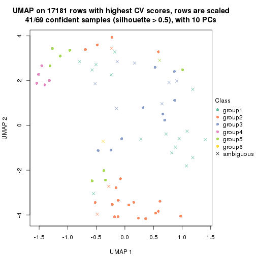
Following heatmap shows how subgroups are split when increasing k:
collect_classes(res)

If matrix rows can be associated to genes, consider to use GO_Enrichment(res,
...) to perform function enrichment for the signature genes.
The object with results only for a single top-value method and a single partition method can be extracted as:
res = res_list["CV", "NMF"]
# you can also extract it by
# res = res_list["CV:NMF"]
A summary of res and all the functions that can be applied to it:
res
#> A 'ConsensusPartition' object with k = 2, 3, 4, 5, 6.
#> On a matrix with 17181 rows and 69 columns.
#> Top rows (1000, 2000, 3000, 4000, 5000) are extracted by 'CV' method.
#> Subgroups are detected by 'NMF' method.
#> Performed in total 1250 partitions by row resampling.
#> Best k for subgroups seems to be 3.
#>
#> Following methods can be applied to this 'ConsensusPartition' object:
#> [1] "cola_report" "collect_classes" "collect_plots"
#> [4] "collect_stats" "colnames" "compare_signatures"
#> [7] "consensus_heatmap" "dimension_reduction" "functional_enrichment"
#> [10] "get_anno_col" "get_anno" "get_classes"
#> [13] "get_consensus" "get_matrix" "get_membership"
#> [16] "get_param" "get_signatures" "get_stats"
#> [19] "is_best_k" "is_stable_k" "membership_heatmap"
#> [22] "ncol" "nrow" "plot_ecdf"
#> [25] "rownames" "select_partition_number" "show"
#> [28] "suggest_best_k" "test_to_known_factors"
collect_plots() function collects all the plots made from res for all k (number of partitions)
into one single page to provide an easy and fast comparison between different k.
collect_plots(res)
The plots are:
k and the heatmap of
predicted classes for each k.k.k.k.All the plots in panels can be made by individual functions and they are plotted later in this section.
select_partition_number() produces several plots showing different
statistics for choosing “optimized” k. There are following statistics:
k;k, the area increased is defined as \(A_k - A_{k-1}\).The detailed explanations of these statistics can be found in the cola vignette.
Generally speaking, lower PAC score, higher mean silhouette score or higher
concordance corresponds to better partition. Rand index and Jaccard index
measure how similar the current partition is compared to partition with k-1.
If they are too similar, we won't accept k is better than k-1.
select_partition_number(res)
The numeric values for all these statistics can be obtained by get_stats().
get_stats(res)
#> k 1-PAC mean_silhouette concordance area_increased Rand Jaccard
#> 2 2 0.626 0.813 0.920 0.4973 0.501 0.501
#> 3 3 0.875 0.924 0.965 0.3463 0.788 0.594
#> 4 4 0.654 0.708 0.857 0.1031 0.848 0.595
#> 5 5 0.645 0.618 0.783 0.0675 0.927 0.740
#> 6 6 0.705 0.589 0.791 0.0459 0.868 0.504
suggest_best_k() suggests the best \(k\) based on these statistics. The rules are as follows:
NA.suggest_best_k(res)
#> [1] 3
Following shows the table of the partitions (You need to click the show/hide
code output link to see it). The membership matrix (columns with name p*)
is inferred by
clue::cl_consensus()
function with the SE method. Basically the value in the membership matrix
represents the probability to belong to a certain group. The finall class
label for an item is determined with the group with highest probability it
belongs to.
In get_classes() function, the entropy is calculated from the membership
matrix and the silhouette score is calculated from the consensus matrix.
cbind(get_classes(res, k = 2), get_membership(res, k = 2))
#> class entropy silhouette p1 p2
#> SRR1747143 1 0.5178 0.811 0.884 0.116
#> SRR1747144 1 0.7056 0.755 0.808 0.192
#> SRR1747145 2 0.0000 0.949 0.000 1.000
#> SRR1747146 1 0.0000 0.874 1.000 0.000
#> SRR1747148 1 0.0000 0.874 1.000 0.000
#> SRR1747147 2 0.0000 0.949 0.000 1.000
#> SRR1747149 1 0.7219 0.749 0.800 0.200
#> SRR1747150 1 0.9909 0.338 0.556 0.444
#> SRR1747151 1 0.9775 0.415 0.588 0.412
#> SRR1747152 2 0.9552 0.270 0.376 0.624
#> SRR1747153 1 0.0000 0.874 1.000 0.000
#> SRR1747154 1 0.1633 0.863 0.976 0.024
#> SRR1747155 2 0.0000 0.949 0.000 1.000
#> SRR1747156 1 0.7745 0.660 0.772 0.228
#> SRR1747157 1 0.9754 0.424 0.592 0.408
#> SRR1747159 1 0.0000 0.874 1.000 0.000
#> SRR1747158 2 0.9129 0.411 0.328 0.672
#> SRR1747160 2 0.0000 0.949 0.000 1.000
#> SRR1747161 1 0.9954 0.292 0.540 0.460
#> SRR1747162 2 0.0376 0.946 0.004 0.996
#> SRR1747163 1 0.9087 0.584 0.676 0.324
#> SRR1747164 2 0.0000 0.949 0.000 1.000
#> SRR1747165 2 0.0000 0.949 0.000 1.000
#> SRR1747167 1 0.0000 0.874 1.000 0.000
#> SRR1747166 1 0.9944 0.304 0.544 0.456
#> SRR1747168 2 0.0000 0.949 0.000 1.000
#> SRR1747169 2 0.0000 0.949 0.000 1.000
#> SRR1747170 2 0.0000 0.949 0.000 1.000
#> SRR1747172 2 0.0000 0.949 0.000 1.000
#> SRR1747171 2 0.0000 0.949 0.000 1.000
#> SRR1747173 2 0.0000 0.949 0.000 1.000
#> SRR1747174 2 0.0000 0.949 0.000 1.000
#> SRR1747175 1 0.7376 0.740 0.792 0.208
#> SRR1747176 2 0.0000 0.949 0.000 1.000
#> SRR1747177 1 0.0000 0.874 1.000 0.000
#> SRR1747178 1 0.0000 0.874 1.000 0.000
#> SRR1747179 1 0.0000 0.874 1.000 0.000
#> SRR1747180 2 0.0000 0.949 0.000 1.000
#> SRR1747181 1 0.0000 0.874 1.000 0.000
#> SRR1747183 1 0.0000 0.874 1.000 0.000
#> SRR1747182 2 0.0000 0.949 0.000 1.000
#> SRR1747184 1 0.7219 0.749 0.800 0.200
#> SRR1747185 2 0.9358 0.358 0.352 0.648
#> SRR1747186 2 0.0000 0.949 0.000 1.000
#> SRR1747187 2 0.0000 0.949 0.000 1.000
#> SRR1747188 2 0.5408 0.808 0.124 0.876
#> SRR1747189 2 0.0000 0.949 0.000 1.000
#> SRR1747191 2 0.0000 0.949 0.000 1.000
#> SRR1747190 2 0.0000 0.949 0.000 1.000
#> SRR1747192 1 0.0000 0.874 1.000 0.000
#> SRR1747193 1 0.0000 0.874 1.000 0.000
#> SRR1747194 1 0.0000 0.874 1.000 0.000
#> SRR1747195 1 0.0000 0.874 1.000 0.000
#> SRR1747197 1 0.0000 0.874 1.000 0.000
#> SRR1747196 1 0.0000 0.874 1.000 0.000
#> SRR1747199 1 0.0000 0.874 1.000 0.000
#> SRR1747198 1 0.0000 0.874 1.000 0.000
#> SRR1747200 2 0.0000 0.949 0.000 1.000
#> SRR1747201 1 0.0000 0.874 1.000 0.000
#> SRR1747202 1 0.9881 0.207 0.564 0.436
#> SRR1747203 2 0.2043 0.918 0.032 0.968
#> SRR1747204 1 0.0000 0.874 1.000 0.000
#> SRR1747205 2 0.0000 0.949 0.000 1.000
#> SRR1747206 1 0.7219 0.749 0.800 0.200
#> SRR1747207 1 0.0000 0.874 1.000 0.000
#> SRR1747208 1 0.0000 0.874 1.000 0.000
#> SRR1747210 1 0.0000 0.874 1.000 0.000
#> SRR1747209 2 0.0000 0.949 0.000 1.000
#> SRR1747211 1 0.0000 0.874 1.000 0.000
cbind(get_classes(res, k = 3), get_membership(res, k = 3))
#> class entropy silhouette p1 p2 p3
#> SRR1747143 3 0.4821 0.830 0.120 0.040 0.840
#> SRR1747144 3 0.0000 0.945 0.000 0.000 1.000
#> SRR1747145 2 0.0000 0.959 0.000 1.000 0.000
#> SRR1747146 1 0.3415 0.895 0.900 0.080 0.020
#> SRR1747148 3 0.5591 0.581 0.304 0.000 0.696
#> SRR1747147 3 0.0237 0.943 0.000 0.004 0.996
#> SRR1747149 3 0.0000 0.945 0.000 0.000 1.000
#> SRR1747150 3 0.0000 0.945 0.000 0.000 1.000
#> SRR1747151 3 0.0000 0.945 0.000 0.000 1.000
#> SRR1747152 3 0.0000 0.945 0.000 0.000 1.000
#> SRR1747153 1 0.0000 0.979 1.000 0.000 0.000
#> SRR1747154 3 0.4805 0.781 0.176 0.012 0.812
#> SRR1747155 2 0.0000 0.959 0.000 1.000 0.000
#> SRR1747156 1 0.1163 0.957 0.972 0.028 0.000
#> SRR1747157 3 0.0000 0.945 0.000 0.000 1.000
#> SRR1747159 1 0.0000 0.979 1.000 0.000 0.000
#> SRR1747158 3 0.5621 0.554 0.000 0.308 0.692
#> SRR1747160 2 0.0000 0.959 0.000 1.000 0.000
#> SRR1747161 3 0.0000 0.945 0.000 0.000 1.000
#> SRR1747162 2 0.0000 0.959 0.000 1.000 0.000
#> SRR1747163 3 0.0000 0.945 0.000 0.000 1.000
#> SRR1747164 2 0.0000 0.959 0.000 1.000 0.000
#> SRR1747165 2 0.5882 0.479 0.000 0.652 0.348
#> SRR1747167 1 0.0000 0.979 1.000 0.000 0.000
#> SRR1747166 3 0.0000 0.945 0.000 0.000 1.000
#> SRR1747168 2 0.2796 0.883 0.000 0.908 0.092
#> SRR1747169 2 0.0000 0.959 0.000 1.000 0.000
#> SRR1747170 2 0.4399 0.774 0.000 0.812 0.188
#> SRR1747172 2 0.0000 0.959 0.000 1.000 0.000
#> SRR1747171 2 0.0000 0.959 0.000 1.000 0.000
#> SRR1747173 2 0.0000 0.959 0.000 1.000 0.000
#> SRR1747174 2 0.0000 0.959 0.000 1.000 0.000
#> SRR1747175 3 0.0000 0.945 0.000 0.000 1.000
#> SRR1747176 2 0.0000 0.959 0.000 1.000 0.000
#> SRR1747177 3 0.0892 0.933 0.020 0.000 0.980
#> SRR1747178 1 0.0000 0.979 1.000 0.000 0.000
#> SRR1747179 1 0.3340 0.860 0.880 0.000 0.120
#> SRR1747180 2 0.0000 0.959 0.000 1.000 0.000
#> SRR1747181 1 0.2066 0.929 0.940 0.000 0.060
#> SRR1747183 1 0.0000 0.979 1.000 0.000 0.000
#> SRR1747182 2 0.0000 0.959 0.000 1.000 0.000
#> SRR1747184 3 0.0000 0.945 0.000 0.000 1.000
#> SRR1747185 2 0.3116 0.858 0.108 0.892 0.000
#> SRR1747186 2 0.0000 0.959 0.000 1.000 0.000
#> SRR1747187 2 0.0000 0.959 0.000 1.000 0.000
#> SRR1747188 2 0.0000 0.959 0.000 1.000 0.000
#> SRR1747189 2 0.5529 0.608 0.000 0.704 0.296
#> SRR1747191 2 0.0000 0.959 0.000 1.000 0.000
#> SRR1747190 2 0.0000 0.959 0.000 1.000 0.000
#> SRR1747192 1 0.0000 0.979 1.000 0.000 0.000
#> SRR1747193 1 0.0000 0.979 1.000 0.000 0.000
#> SRR1747194 3 0.0237 0.943 0.004 0.000 0.996
#> SRR1747195 1 0.0000 0.979 1.000 0.000 0.000
#> SRR1747197 1 0.0000 0.979 1.000 0.000 0.000
#> SRR1747196 1 0.0000 0.979 1.000 0.000 0.000
#> SRR1747199 1 0.0000 0.979 1.000 0.000 0.000
#> SRR1747198 1 0.0000 0.979 1.000 0.000 0.000
#> SRR1747200 2 0.0000 0.959 0.000 1.000 0.000
#> SRR1747201 1 0.0000 0.979 1.000 0.000 0.000
#> SRR1747202 1 0.3116 0.874 0.892 0.108 0.000
#> SRR1747203 2 0.0000 0.959 0.000 1.000 0.000
#> SRR1747204 1 0.0000 0.979 1.000 0.000 0.000
#> SRR1747205 2 0.0000 0.959 0.000 1.000 0.000
#> SRR1747206 3 0.0000 0.945 0.000 0.000 1.000
#> SRR1747207 1 0.0000 0.979 1.000 0.000 0.000
#> SRR1747208 1 0.0000 0.979 1.000 0.000 0.000
#> SRR1747210 1 0.0000 0.979 1.000 0.000 0.000
#> SRR1747209 2 0.0000 0.959 0.000 1.000 0.000
#> SRR1747211 1 0.0000 0.979 1.000 0.000 0.000
cbind(get_classes(res, k = 4), get_membership(res, k = 4))
#> class entropy silhouette p1 p2 p3 p4
#> SRR1747143 3 0.0817 0.730 0.024 0.000 0.976 0.000
#> SRR1747144 4 0.0000 0.848 0.000 0.000 0.000 1.000
#> SRR1747145 3 0.1792 0.711 0.000 0.068 0.932 0.000
#> SRR1747146 3 0.4362 0.682 0.112 0.056 0.824 0.008
#> SRR1747148 3 0.2739 0.719 0.036 0.000 0.904 0.060
#> SRR1747147 4 0.7270 0.351 0.000 0.304 0.176 0.520
#> SRR1747149 4 0.0000 0.848 0.000 0.000 0.000 1.000
#> SRR1747150 3 0.1118 0.722 0.000 0.000 0.964 0.036
#> SRR1747151 3 0.6944 0.343 0.000 0.196 0.588 0.216
#> SRR1747152 4 0.0000 0.848 0.000 0.000 0.000 1.000
#> SRR1747153 3 0.4713 0.363 0.360 0.000 0.640 0.000
#> SRR1747154 3 0.1297 0.730 0.020 0.000 0.964 0.016
#> SRR1747155 2 0.1389 0.854 0.000 0.952 0.048 0.000
#> SRR1747156 1 0.1118 0.829 0.964 0.036 0.000 0.000
#> SRR1747157 4 0.0000 0.848 0.000 0.000 0.000 1.000
#> SRR1747159 1 0.4134 0.684 0.740 0.000 0.260 0.000
#> SRR1747158 4 0.7617 0.296 0.000 0.332 0.216 0.452
#> SRR1747160 2 0.0336 0.871 0.000 0.992 0.008 0.000
#> SRR1747161 4 0.1211 0.818 0.000 0.000 0.040 0.960
#> SRR1747162 2 0.4761 0.438 0.000 0.628 0.372 0.000
#> SRR1747163 3 0.4040 0.537 0.000 0.000 0.752 0.248
#> SRR1747164 2 0.4830 0.368 0.000 0.608 0.392 0.000
#> SRR1747165 2 0.4741 0.523 0.000 0.668 0.004 0.328
#> SRR1747167 3 0.3219 0.675 0.164 0.000 0.836 0.000
#> SRR1747166 3 0.3082 0.708 0.000 0.032 0.884 0.084
#> SRR1747168 2 0.5855 0.607 0.000 0.692 0.100 0.208
#> SRR1747169 2 0.0707 0.868 0.000 0.980 0.020 0.000
#> SRR1747170 2 0.5681 0.620 0.000 0.704 0.088 0.208
#> SRR1747172 2 0.1211 0.858 0.000 0.960 0.040 0.000
#> SRR1747171 2 0.0188 0.870 0.000 0.996 0.004 0.000
#> SRR1747173 2 0.1474 0.852 0.000 0.948 0.052 0.000
#> SRR1747174 2 0.0188 0.870 0.000 0.996 0.004 0.000
#> SRR1747175 3 0.4522 0.466 0.000 0.000 0.680 0.320
#> SRR1747176 2 0.0707 0.868 0.000 0.980 0.020 0.000
#> SRR1747177 3 0.5093 0.480 0.008 0.004 0.652 0.336
#> SRR1747178 3 0.4961 0.120 0.448 0.000 0.552 0.000
#> SRR1747179 3 0.6602 0.329 0.356 0.000 0.552 0.092
#> SRR1747180 2 0.0188 0.871 0.000 0.996 0.004 0.000
#> SRR1747181 1 0.5218 0.706 0.736 0.000 0.200 0.064
#> SRR1747183 1 0.2814 0.758 0.868 0.000 0.132 0.000
#> SRR1747182 2 0.2216 0.828 0.000 0.908 0.092 0.000
#> SRR1747184 4 0.0000 0.848 0.000 0.000 0.000 1.000
#> SRR1747185 3 0.6344 0.524 0.224 0.128 0.648 0.000
#> SRR1747186 2 0.0188 0.871 0.000 0.996 0.004 0.000
#> SRR1747187 2 0.0336 0.871 0.000 0.992 0.008 0.000
#> SRR1747188 2 0.3852 0.731 0.180 0.808 0.012 0.000
#> SRR1747189 2 0.6116 0.449 0.000 0.612 0.068 0.320
#> SRR1747191 2 0.0336 0.871 0.000 0.992 0.008 0.000
#> SRR1747190 2 0.0376 0.871 0.000 0.992 0.004 0.004
#> SRR1747192 3 0.2124 0.725 0.068 0.008 0.924 0.000
#> SRR1747193 1 0.0000 0.851 1.000 0.000 0.000 0.000
#> SRR1747194 3 0.4343 0.600 0.004 0.000 0.732 0.264
#> SRR1747195 1 0.3837 0.725 0.776 0.000 0.224 0.000
#> SRR1747197 1 0.3726 0.739 0.788 0.000 0.212 0.000
#> SRR1747196 3 0.4605 0.431 0.336 0.000 0.664 0.000
#> SRR1747199 1 0.0000 0.851 1.000 0.000 0.000 0.000
#> SRR1747198 1 0.0000 0.851 1.000 0.000 0.000 0.000
#> SRR1747200 2 0.2654 0.803 0.108 0.888 0.004 0.000
#> SRR1747201 1 0.3764 0.619 0.784 0.000 0.216 0.000
#> SRR1747202 1 0.4440 0.717 0.804 0.136 0.060 0.000
#> SRR1747203 2 0.0336 0.871 0.000 0.992 0.008 0.000
#> SRR1747204 1 0.0000 0.851 1.000 0.000 0.000 0.000
#> SRR1747205 2 0.0817 0.866 0.000 0.976 0.024 0.000
#> SRR1747206 4 0.0000 0.848 0.000 0.000 0.000 1.000
#> SRR1747207 1 0.0000 0.851 1.000 0.000 0.000 0.000
#> SRR1747208 1 0.0000 0.851 1.000 0.000 0.000 0.000
#> SRR1747210 1 0.3569 0.753 0.804 0.000 0.196 0.000
#> SRR1747209 2 0.0188 0.870 0.000 0.996 0.004 0.000
#> SRR1747211 1 0.0000 0.851 1.000 0.000 0.000 0.000
cbind(get_classes(res, k = 5), get_membership(res, k = 5))
#> class entropy silhouette p1 p2 p3 p4 p5
#> SRR1747143 5 0.4273 -0.1757 0.000 0.000 0.448 0.000 0.552
#> SRR1747144 4 0.0000 0.9011 0.000 0.000 0.000 1.000 0.000
#> SRR1747145 3 0.3910 0.5864 0.000 0.008 0.720 0.000 0.272
#> SRR1747146 3 0.3857 0.5544 0.000 0.000 0.688 0.000 0.312
#> SRR1747148 3 0.3949 0.5474 0.000 0.000 0.668 0.000 0.332
#> SRR1747147 3 0.4713 0.4872 0.000 0.100 0.752 0.140 0.008
#> SRR1747149 4 0.0000 0.9011 0.000 0.000 0.000 1.000 0.000
#> SRR1747150 5 0.4287 -0.2146 0.000 0.000 0.460 0.000 0.540
#> SRR1747151 3 0.3756 0.5884 0.000 0.092 0.836 0.024 0.048
#> SRR1747152 4 0.0000 0.9011 0.000 0.000 0.000 1.000 0.000
#> SRR1747153 3 0.4182 0.5221 0.004 0.000 0.644 0.000 0.352
#> SRR1747154 3 0.4126 0.4624 0.000 0.000 0.620 0.000 0.380
#> SRR1747155 2 0.4088 0.5466 0.000 0.632 0.368 0.000 0.000
#> SRR1747156 1 0.0000 0.8298 1.000 0.000 0.000 0.000 0.000
#> SRR1747157 4 0.2471 0.7914 0.000 0.000 0.136 0.864 0.000
#> SRR1747159 1 0.6316 0.2870 0.480 0.000 0.356 0.000 0.164
#> SRR1747158 3 0.3435 0.5450 0.000 0.156 0.820 0.020 0.004
#> SRR1747160 2 0.2773 0.7469 0.000 0.836 0.164 0.000 0.000
#> SRR1747161 4 0.4196 0.4043 0.000 0.000 0.356 0.640 0.004
#> SRR1747162 2 0.5504 0.5976 0.040 0.700 0.076 0.000 0.184
#> SRR1747163 5 0.5908 0.4688 0.000 0.024 0.176 0.144 0.656
#> SRR1747164 3 0.3353 0.5214 0.000 0.196 0.796 0.000 0.008
#> SRR1747165 2 0.5922 0.2684 0.000 0.504 0.108 0.388 0.000
#> SRR1747167 5 0.6158 0.0725 0.156 0.000 0.316 0.000 0.528
#> SRR1747166 3 0.4755 0.5428 0.000 0.032 0.664 0.004 0.300
#> SRR1747168 2 0.6298 0.1547 0.000 0.472 0.012 0.108 0.408
#> SRR1747169 2 0.3274 0.7146 0.000 0.780 0.220 0.000 0.000
#> SRR1747170 2 0.6405 0.2007 0.000 0.484 0.012 0.124 0.380
#> SRR1747172 2 0.1942 0.7552 0.000 0.920 0.012 0.000 0.068
#> SRR1747171 2 0.0290 0.7778 0.000 0.992 0.000 0.000 0.008
#> SRR1747173 2 0.2069 0.7516 0.000 0.912 0.012 0.000 0.076
#> SRR1747174 2 0.0404 0.7769 0.000 0.988 0.000 0.000 0.012
#> SRR1747175 5 0.3883 0.5274 0.000 0.016 0.004 0.216 0.764
#> SRR1747176 2 0.3305 0.7118 0.000 0.776 0.224 0.000 0.000
#> SRR1747177 5 0.1565 0.6511 0.004 0.020 0.016 0.008 0.952
#> SRR1747178 5 0.2300 0.6384 0.052 0.000 0.040 0.000 0.908
#> SRR1747179 5 0.2326 0.6454 0.020 0.020 0.000 0.044 0.916
#> SRR1747180 2 0.1628 0.7812 0.000 0.936 0.056 0.000 0.008
#> SRR1747181 1 0.5635 0.7018 0.712 0.000 0.124 0.064 0.100
#> SRR1747183 1 0.2471 0.7235 0.864 0.000 0.000 0.000 0.136
#> SRR1747182 2 0.4482 0.3919 0.000 0.612 0.012 0.000 0.376
#> SRR1747184 4 0.0000 0.9011 0.000 0.000 0.000 1.000 0.000
#> SRR1747185 5 0.5279 0.4924 0.096 0.184 0.016 0.000 0.704
#> SRR1747186 2 0.1544 0.7801 0.000 0.932 0.068 0.000 0.000
#> SRR1747187 2 0.1544 0.7803 0.000 0.932 0.068 0.000 0.000
#> SRR1747188 2 0.4339 0.5753 0.296 0.684 0.020 0.000 0.000
#> SRR1747189 2 0.5468 0.4852 0.000 0.644 0.012 0.272 0.072
#> SRR1747191 2 0.2127 0.7701 0.000 0.892 0.108 0.000 0.000
#> SRR1747190 2 0.2054 0.7785 0.000 0.920 0.028 0.052 0.000
#> SRR1747192 5 0.0609 0.6485 0.000 0.000 0.020 0.000 0.980
#> SRR1747193 1 0.0000 0.8298 1.000 0.000 0.000 0.000 0.000
#> SRR1747194 5 0.1461 0.6495 0.004 0.000 0.028 0.016 0.952
#> SRR1747195 1 0.5426 0.5756 0.640 0.000 0.108 0.000 0.252
#> SRR1747197 1 0.5413 0.6316 0.664 0.000 0.164 0.000 0.172
#> SRR1747196 5 0.3216 0.5890 0.044 0.000 0.108 0.000 0.848
#> SRR1747199 1 0.0000 0.8298 1.000 0.000 0.000 0.000 0.000
#> SRR1747198 1 0.0000 0.8298 1.000 0.000 0.000 0.000 0.000
#> SRR1747200 2 0.2389 0.7485 0.116 0.880 0.000 0.000 0.004
#> SRR1747201 5 0.4138 0.3352 0.384 0.000 0.000 0.000 0.616
#> SRR1747202 1 0.5770 0.6094 0.680 0.192 0.052 0.000 0.076
#> SRR1747203 2 0.1251 0.7828 0.008 0.956 0.036 0.000 0.000
#> SRR1747204 1 0.0000 0.8298 1.000 0.000 0.000 0.000 0.000
#> SRR1747205 2 0.3797 0.7009 0.008 0.756 0.232 0.000 0.004
#> SRR1747206 4 0.0162 0.8983 0.000 0.000 0.000 0.996 0.004
#> SRR1747207 1 0.0000 0.8298 1.000 0.000 0.000 0.000 0.000
#> SRR1747208 1 0.0000 0.8298 1.000 0.000 0.000 0.000 0.000
#> SRR1747210 1 0.4498 0.7167 0.756 0.000 0.132 0.000 0.112
#> SRR1747209 2 0.0798 0.7803 0.000 0.976 0.016 0.000 0.008
#> SRR1747211 1 0.0000 0.8298 1.000 0.000 0.000 0.000 0.000
cbind(get_classes(res, k = 6), get_membership(res, k = 6))
#> class entropy silhouette p1 p2 p3 p4 p5 p6
#> SRR1747143 3 0.4237 0.4298 0.000 0.000 0.584 0.000 0.396 0.020
#> SRR1747144 4 0.0000 0.8007 0.000 0.000 0.000 1.000 0.000 0.000
#> SRR1747145 3 0.1616 0.8044 0.000 0.000 0.932 0.000 0.048 0.020
#> SRR1747146 6 0.3832 0.5980 0.012 0.004 0.216 0.000 0.016 0.752
#> SRR1747148 3 0.3774 0.4414 0.000 0.000 0.664 0.000 0.008 0.328
#> SRR1747147 3 0.1498 0.7941 0.000 0.024 0.948 0.012 0.004 0.012
#> SRR1747149 4 0.0000 0.8007 0.000 0.000 0.000 1.000 0.000 0.000
#> SRR1747150 5 0.4264 -0.2790 0.000 0.000 0.484 0.000 0.500 0.016
#> SRR1747151 3 0.0696 0.8065 0.000 0.004 0.980 0.004 0.004 0.008
#> SRR1747152 4 0.0000 0.8007 0.000 0.000 0.000 1.000 0.000 0.000
#> SRR1747153 6 0.4090 0.6713 0.076 0.000 0.156 0.000 0.008 0.760
#> SRR1747154 3 0.4062 0.7073 0.000 0.000 0.736 0.000 0.196 0.068
#> SRR1747155 2 0.4621 0.2597 0.000 0.520 0.448 0.000 0.008 0.024
#> SRR1747156 1 0.1262 0.7787 0.956 0.016 0.000 0.000 0.008 0.020
#> SRR1747157 4 0.1556 0.7652 0.000 0.000 0.080 0.920 0.000 0.000
#> SRR1747159 6 0.4589 0.5995 0.284 0.000 0.044 0.000 0.012 0.660
#> SRR1747158 3 0.1649 0.7840 0.000 0.016 0.936 0.000 0.008 0.040
#> SRR1747160 2 0.2402 0.7982 0.000 0.888 0.084 0.000 0.020 0.008
#> SRR1747161 4 0.3857 0.0545 0.000 0.000 0.468 0.532 0.000 0.000
#> SRR1747162 5 0.6610 0.2775 0.108 0.360 0.052 0.000 0.464 0.016
#> SRR1747163 5 0.3943 0.3623 0.000 0.004 0.248 0.008 0.724 0.016
#> SRR1747164 3 0.0632 0.8013 0.000 0.024 0.976 0.000 0.000 0.000
#> SRR1747165 4 0.5679 0.1895 0.000 0.368 0.124 0.500 0.004 0.004
#> SRR1747167 6 0.4196 0.6789 0.048 0.000 0.092 0.000 0.076 0.784
#> SRR1747166 3 0.3025 0.7608 0.000 0.004 0.820 0.004 0.164 0.008
#> SRR1747168 5 0.5491 0.4165 0.000 0.316 0.004 0.088 0.576 0.016
#> SRR1747169 2 0.2790 0.7693 0.000 0.856 0.116 0.000 0.008 0.020
#> SRR1747170 5 0.5749 0.2525 0.000 0.396 0.004 0.088 0.492 0.020
#> SRR1747172 2 0.2673 0.7222 0.000 0.852 0.004 0.000 0.132 0.012
#> SRR1747171 2 0.1606 0.7883 0.000 0.932 0.004 0.000 0.056 0.008
#> SRR1747173 2 0.2531 0.7293 0.000 0.860 0.004 0.000 0.128 0.008
#> SRR1747174 2 0.1370 0.7929 0.000 0.948 0.004 0.000 0.036 0.012
#> SRR1747175 5 0.1616 0.5897 0.000 0.000 0.028 0.020 0.940 0.012
#> SRR1747176 2 0.2781 0.7730 0.000 0.860 0.108 0.000 0.008 0.024
#> SRR1747177 5 0.3652 0.4289 0.000 0.004 0.000 0.000 0.672 0.324
#> SRR1747178 5 0.3316 0.5370 0.052 0.000 0.000 0.000 0.812 0.136
#> SRR1747179 5 0.2955 0.5664 0.008 0.000 0.004 0.000 0.816 0.172
#> SRR1747180 2 0.1434 0.8097 0.000 0.948 0.028 0.000 0.012 0.012
#> SRR1747181 6 0.4940 0.5966 0.268 0.000 0.008 0.084 0.000 0.640
#> SRR1747183 1 0.2189 0.7573 0.904 0.000 0.004 0.000 0.060 0.032
#> SRR1747182 5 0.4310 0.1486 0.000 0.472 0.004 0.000 0.512 0.012
#> SRR1747184 4 0.0000 0.8007 0.000 0.000 0.000 1.000 0.000 0.000
#> SRR1747185 5 0.2881 0.5832 0.032 0.004 0.012 0.000 0.868 0.084
#> SRR1747186 2 0.1225 0.8089 0.000 0.952 0.036 0.000 0.000 0.012
#> SRR1747187 2 0.0870 0.8091 0.000 0.972 0.012 0.000 0.004 0.012
#> SRR1747188 2 0.2662 0.7425 0.152 0.840 0.004 0.000 0.000 0.004
#> SRR1747189 2 0.6039 0.0868 0.000 0.464 0.004 0.372 0.148 0.012
#> SRR1747191 2 0.1167 0.8094 0.000 0.960 0.020 0.000 0.008 0.012
#> SRR1747190 2 0.1666 0.8063 0.000 0.936 0.008 0.036 0.000 0.020
#> SRR1747192 5 0.2333 0.5805 0.000 0.004 0.004 0.000 0.872 0.120
#> SRR1747193 1 0.0260 0.7882 0.992 0.000 0.000 0.000 0.000 0.008
#> SRR1747194 5 0.3271 0.5377 0.008 0.000 0.000 0.000 0.760 0.232
#> SRR1747195 6 0.4349 0.4026 0.208 0.000 0.000 0.000 0.084 0.708
#> SRR1747197 6 0.3509 0.6467 0.240 0.000 0.016 0.000 0.000 0.744
#> SRR1747196 6 0.4293 0.0807 0.012 0.000 0.004 0.000 0.448 0.536
#> SRR1747199 1 0.3612 0.6644 0.780 0.000 0.000 0.000 0.052 0.168
#> SRR1747198 1 0.3516 0.6691 0.788 0.000 0.000 0.000 0.048 0.164
#> SRR1747200 2 0.2060 0.7880 0.084 0.900 0.000 0.000 0.016 0.000
#> SRR1747201 1 0.5779 0.1429 0.432 0.000 0.000 0.000 0.392 0.176
#> SRR1747202 2 0.6125 -0.2218 0.320 0.356 0.000 0.000 0.000 0.324
#> SRR1747203 2 0.1078 0.8020 0.012 0.964 0.000 0.000 0.016 0.008
#> SRR1747204 1 0.0458 0.7863 0.984 0.000 0.000 0.000 0.000 0.016
#> SRR1747205 2 0.6797 0.4970 0.064 0.600 0.112 0.000 0.108 0.116
#> SRR1747206 4 0.2711 0.7164 0.004 0.000 0.000 0.872 0.056 0.068
#> SRR1747207 1 0.0713 0.7808 0.972 0.000 0.000 0.000 0.000 0.028
#> SRR1747208 1 0.0363 0.7871 0.988 0.000 0.000 0.000 0.000 0.012
#> SRR1747210 1 0.4649 0.0131 0.560 0.000 0.004 0.000 0.036 0.400
#> SRR1747209 2 0.1755 0.8006 0.000 0.932 0.008 0.000 0.028 0.032
#> SRR1747211 1 0.0937 0.7816 0.960 0.000 0.000 0.000 0.000 0.040
Heatmaps for the consensus matrix. It visualizes the probability of two samples to be in a same group.
consensus_heatmap(res, k = 2)

consensus_heatmap(res, k = 3)
consensus_heatmap(res, k = 4)
consensus_heatmap(res, k = 5)
consensus_heatmap(res, k = 6)
Heatmaps for the membership of samples in all partitions to see how consistent they are:
membership_heatmap(res, k = 2)
membership_heatmap(res, k = 3)
membership_heatmap(res, k = 4)
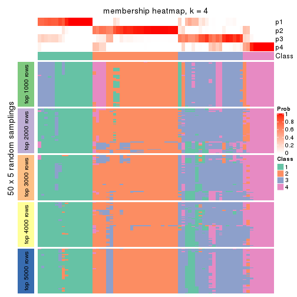
membership_heatmap(res, k = 5)
membership_heatmap(res, k = 6)
As soon as we have had the classes for columns, we can look for signatures which are significantly different between classes which can be candidate marks for certain classes. Following are the heatmaps for signatures.
Signature heatmaps where rows are scaled:
get_signatures(res, k = 2)
get_signatures(res, k = 3)
get_signatures(res, k = 4)
get_signatures(res, k = 5)
get_signatures(res, k = 6)
Signature heatmaps where rows are not scaled:
get_signatures(res, k = 2, scale_rows = FALSE)
get_signatures(res, k = 3, scale_rows = FALSE)
get_signatures(res, k = 4, scale_rows = FALSE)
get_signatures(res, k = 5, scale_rows = FALSE)
get_signatures(res, k = 6, scale_rows = FALSE)
Compare the overlap of signatures from different k:
compare_signatures(res)
get_signature() returns a data frame invisibly. TO get the list of signatures, the function
call should be assigned to a variable explicitly. In following code, if plot argument is set
to FALSE, no heatmap is plotted while only the differential analysis is performed.
# code only for demonstration
tb = get_signature(res, k = ..., plot = FALSE)
An example of the output of tb is:
#> which_row fdr mean_1 mean_2 scaled_mean_1 scaled_mean_2 km
#> 1 38 0.042760348 8.373488 9.131774 -0.5533452 0.5164555 1
#> 2 40 0.018707592 7.106213 8.469186 -0.6173731 0.5762149 1
#> 3 55 0.019134737 10.221463 11.207825 -0.6159697 0.5749050 1
#> 4 59 0.006059896 5.921854 7.869574 -0.6899429 0.6439467 1
#> 5 60 0.018055526 8.928898 10.211722 -0.6204761 0.5791110 1
#> 6 98 0.009384629 15.714769 14.887706 0.6635654 -0.6193277 2
...
The columns in tb are:
which_row: row indices corresponding to the input matrix.fdr: FDR for the differential test. mean_x: The mean value in group x.scaled_mean_x: The mean value in group x after rows are scaled.km: Row groups if k-means clustering is applied to rows.UMAP plot which shows how samples are separated.
dimension_reduction(res, k = 2, method = "UMAP")
dimension_reduction(res, k = 3, method = "UMAP")
dimension_reduction(res, k = 4, method = "UMAP")
dimension_reduction(res, k = 5, method = "UMAP")
dimension_reduction(res, k = 6, method = "UMAP")
Following heatmap shows how subgroups are split when increasing k:
collect_classes(res)
If matrix rows can be associated to genes, consider to use GO_Enrichment(res,
...) to perform function enrichment for the signature genes.
The object with results only for a single top-value method and a single partition method can be extracted as:
res = res_list["MAD", "hclust"]
# you can also extract it by
# res = res_list["MAD:hclust"]
A summary of res and all the functions that can be applied to it:
res
#> A 'ConsensusPartition' object with k = 2, 3, 4, 5, 6.
#> On a matrix with 17181 rows and 69 columns.
#> Top rows (1000, 2000, 3000, 4000, 5000) are extracted by 'MAD' method.
#> Subgroups are detected by 'hclust' method.
#> Performed in total 1250 partitions by row resampling.
#> Best k for subgroups seems to be 2.
#>
#> Following methods can be applied to this 'ConsensusPartition' object:
#> [1] "cola_report" "collect_classes" "collect_plots"
#> [4] "collect_stats" "colnames" "compare_signatures"
#> [7] "consensus_heatmap" "dimension_reduction" "functional_enrichment"
#> [10] "get_anno_col" "get_anno" "get_classes"
#> [13] "get_consensus" "get_matrix" "get_membership"
#> [16] "get_param" "get_signatures" "get_stats"
#> [19] "is_best_k" "is_stable_k" "membership_heatmap"
#> [22] "ncol" "nrow" "plot_ecdf"
#> [25] "rownames" "select_partition_number" "show"
#> [28] "suggest_best_k" "test_to_known_factors"
collect_plots() function collects all the plots made from res for all k (number of partitions)
into one single page to provide an easy and fast comparison between different k.
collect_plots(res)
The plots are:
k and the heatmap of
predicted classes for each k.k.k.k.All the plots in panels can be made by individual functions and they are plotted later in this section.
select_partition_number() produces several plots showing different
statistics for choosing “optimized” k. There are following statistics:
k;k, the area increased is defined as \(A_k - A_{k-1}\).The detailed explanations of these statistics can be found in the cola vignette.
Generally speaking, lower PAC score, higher mean silhouette score or higher
concordance corresponds to better partition. Rand index and Jaccard index
measure how similar the current partition is compared to partition with k-1.
If they are too similar, we won't accept k is better than k-1.
select_partition_number(res)
The numeric values for all these statistics can be obtained by get_stats().
get_stats(res)
#> k 1-PAC mean_silhouette concordance area_increased Rand Jaccard
#> 2 2 0.645 0.838 0.925 0.4931 0.495 0.495
#> 3 3 0.583 0.739 0.848 0.1554 0.925 0.853
#> 4 4 0.564 0.733 0.813 0.1338 0.931 0.847
#> 5 5 0.770 0.792 0.878 0.1703 0.843 0.594
#> 6 6 0.805 0.782 0.846 0.0322 0.972 0.883
suggest_best_k() suggests the best \(k\) based on these statistics. The rules are as follows:
NA.suggest_best_k(res)
#> [1] 2
Following shows the table of the partitions (You need to click the show/hide
code output link to see it). The membership matrix (columns with name p*)
is inferred by
clue::cl_consensus()
function with the SE method. Basically the value in the membership matrix
represents the probability to belong to a certain group. The finall class
label for an item is determined with the group with highest probability it
belongs to.
In get_classes() function, the entropy is calculated from the membership
matrix and the silhouette score is calculated from the consensus matrix.
cbind(get_classes(res, k = 2), get_membership(res, k = 2))
#> class entropy silhouette p1 p2
#> SRR1747143 1 0.7219 0.7283 0.800 0.200
#> SRR1747144 1 0.0000 0.9379 1.000 0.000
#> SRR1747145 2 0.8016 0.7211 0.244 0.756
#> SRR1747146 2 0.9833 0.3825 0.424 0.576
#> SRR1747148 2 0.9393 0.5390 0.356 0.644
#> SRR1747147 2 0.6973 0.7801 0.188 0.812
#> SRR1747149 1 0.0000 0.9379 1.000 0.000
#> SRR1747150 1 0.7219 0.7283 0.800 0.200
#> SRR1747151 1 0.8763 0.5527 0.704 0.296
#> SRR1747152 2 0.8555 0.6815 0.280 0.720
#> SRR1747153 2 0.9833 0.3825 0.424 0.576
#> SRR1747154 2 0.9044 0.6069 0.320 0.680
#> SRR1747155 2 0.1843 0.8813 0.028 0.972
#> SRR1747156 2 0.8016 0.7222 0.244 0.756
#> SRR1747157 2 0.8555 0.6815 0.280 0.720
#> SRR1747159 1 0.0000 0.9379 1.000 0.000
#> SRR1747158 2 0.3431 0.8650 0.064 0.936
#> SRR1747160 2 0.0000 0.8913 0.000 1.000
#> SRR1747161 2 0.8555 0.6815 0.280 0.720
#> SRR1747162 2 0.3733 0.8613 0.072 0.928
#> SRR1747163 1 0.0000 0.9379 1.000 0.000
#> SRR1747164 2 0.6343 0.8045 0.160 0.840
#> SRR1747165 2 0.6973 0.7801 0.188 0.812
#> SRR1747167 1 0.0000 0.9379 1.000 0.000
#> SRR1747166 1 0.7219 0.7283 0.800 0.200
#> SRR1747168 2 0.0000 0.8913 0.000 1.000
#> SRR1747169 2 0.0000 0.8913 0.000 1.000
#> SRR1747170 2 0.0000 0.8913 0.000 1.000
#> SRR1747172 2 0.0000 0.8913 0.000 1.000
#> SRR1747171 2 0.0000 0.8913 0.000 1.000
#> SRR1747173 2 0.0000 0.8913 0.000 1.000
#> SRR1747174 2 0.0000 0.8913 0.000 1.000
#> SRR1747175 1 0.1633 0.9267 0.976 0.024
#> SRR1747176 2 0.0000 0.8913 0.000 1.000
#> SRR1747177 1 0.0000 0.9379 1.000 0.000
#> SRR1747178 1 0.0000 0.9379 1.000 0.000
#> SRR1747179 1 0.1633 0.9267 0.976 0.024
#> SRR1747180 2 0.0000 0.8913 0.000 1.000
#> SRR1747181 1 0.0000 0.9379 1.000 0.000
#> SRR1747183 1 0.0000 0.9379 1.000 0.000
#> SRR1747182 2 0.0000 0.8913 0.000 1.000
#> SRR1747184 1 0.0000 0.9379 1.000 0.000
#> SRR1747185 1 0.1633 0.9267 0.976 0.024
#> SRR1747186 2 0.0000 0.8913 0.000 1.000
#> SRR1747187 2 0.0000 0.8913 0.000 1.000
#> SRR1747188 2 0.0000 0.8913 0.000 1.000
#> SRR1747189 2 0.0000 0.8913 0.000 1.000
#> SRR1747191 2 0.0000 0.8913 0.000 1.000
#> SRR1747190 2 0.0000 0.8913 0.000 1.000
#> SRR1747192 1 0.0000 0.9379 1.000 0.000
#> SRR1747193 1 0.0000 0.9379 1.000 0.000
#> SRR1747194 1 0.0000 0.9379 1.000 0.000
#> SRR1747195 1 0.1184 0.9311 0.984 0.016
#> SRR1747197 1 0.2236 0.9173 0.964 0.036
#> SRR1747196 1 0.0000 0.9379 1.000 0.000
#> SRR1747199 1 0.0000 0.9379 1.000 0.000
#> SRR1747198 1 0.0000 0.9379 1.000 0.000
#> SRR1747200 2 0.0000 0.8913 0.000 1.000
#> SRR1747201 1 0.1633 0.9267 0.976 0.024
#> SRR1747202 2 0.0376 0.8901 0.004 0.996
#> SRR1747203 2 0.0000 0.8913 0.000 1.000
#> SRR1747204 1 0.9963 -0.0475 0.536 0.464
#> SRR1747205 2 0.0376 0.8901 0.004 0.996
#> SRR1747206 1 0.0000 0.9379 1.000 0.000
#> SRR1747207 1 0.0000 0.9379 1.000 0.000
#> SRR1747208 1 0.3431 0.8930 0.936 0.064
#> SRR1747210 1 0.0000 0.9379 1.000 0.000
#> SRR1747209 2 0.0000 0.8913 0.000 1.000
#> SRR1747211 1 0.2948 0.9023 0.948 0.052
cbind(get_classes(res, k = 3), get_membership(res, k = 3))
#> class entropy silhouette p1 p2 p3
#> SRR1747143 1 0.8392 0.60233 0.624 0.200 0.176
#> SRR1747144 3 0.0237 0.99582 0.004 0.000 0.996
#> SRR1747145 2 0.5244 0.68603 0.240 0.756 0.004
#> SRR1747146 2 0.6204 0.32917 0.424 0.576 0.000
#> SRR1747148 2 0.6126 0.49293 0.352 0.644 0.004
#> SRR1747147 2 0.5471 0.78061 0.060 0.812 0.128
#> SRR1747149 3 0.0237 0.99582 0.004 0.000 0.996
#> SRR1747150 1 0.8392 0.60233 0.624 0.200 0.176
#> SRR1747151 1 0.9133 0.45044 0.528 0.296 0.176
#> SRR1747152 2 0.6673 0.68209 0.056 0.720 0.224
#> SRR1747153 2 0.6204 0.32917 0.424 0.576 0.000
#> SRR1747154 2 0.5902 0.56402 0.316 0.680 0.004
#> SRR1747155 2 0.1163 0.86244 0.028 0.972 0.000
#> SRR1747156 2 0.5244 0.68697 0.240 0.756 0.004
#> SRR1747157 2 0.6673 0.68209 0.056 0.720 0.224
#> SRR1747159 1 0.5810 0.72254 0.664 0.000 0.336
#> SRR1747158 2 0.2301 0.84601 0.060 0.936 0.004
#> SRR1747160 2 0.0000 0.87278 0.000 1.000 0.000
#> SRR1747161 2 0.6673 0.68209 0.056 0.720 0.224
#> SRR1747162 2 0.2496 0.84237 0.068 0.928 0.004
#> SRR1747163 1 0.5835 0.72119 0.660 0.000 0.340
#> SRR1747164 2 0.4172 0.78121 0.156 0.840 0.004
#> SRR1747165 2 0.5471 0.78061 0.060 0.812 0.128
#> SRR1747167 1 0.5835 0.72119 0.660 0.000 0.340
#> SRR1747166 1 0.8392 0.60233 0.624 0.200 0.176
#> SRR1747168 2 0.0000 0.87278 0.000 1.000 0.000
#> SRR1747169 2 0.0000 0.87278 0.000 1.000 0.000
#> SRR1747170 2 0.0000 0.87278 0.000 1.000 0.000
#> SRR1747172 2 0.0000 0.87278 0.000 1.000 0.000
#> SRR1747171 2 0.0000 0.87278 0.000 1.000 0.000
#> SRR1747173 2 0.0000 0.87278 0.000 1.000 0.000
#> SRR1747174 2 0.0000 0.87278 0.000 1.000 0.000
#> SRR1747175 1 0.6773 0.70839 0.636 0.024 0.340
#> SRR1747176 2 0.0000 0.87278 0.000 1.000 0.000
#> SRR1747177 1 0.5810 0.72254 0.664 0.000 0.336
#> SRR1747178 1 0.5363 0.72334 0.724 0.000 0.276
#> SRR1747179 1 0.6773 0.70839 0.636 0.024 0.340
#> SRR1747180 2 0.0000 0.87278 0.000 1.000 0.000
#> SRR1747181 1 0.4002 0.48591 0.840 0.000 0.160
#> SRR1747183 1 0.5835 0.72119 0.660 0.000 0.340
#> SRR1747182 2 0.0000 0.87278 0.000 1.000 0.000
#> SRR1747184 3 0.0592 0.98733 0.012 0.000 0.988
#> SRR1747185 1 0.6773 0.70839 0.636 0.024 0.340
#> SRR1747186 2 0.0000 0.87278 0.000 1.000 0.000
#> SRR1747187 2 0.0000 0.87278 0.000 1.000 0.000
#> SRR1747188 2 0.0000 0.87278 0.000 1.000 0.000
#> SRR1747189 2 0.0000 0.87278 0.000 1.000 0.000
#> SRR1747191 2 0.0000 0.87278 0.000 1.000 0.000
#> SRR1747190 2 0.0000 0.87278 0.000 1.000 0.000
#> SRR1747192 1 0.5810 0.72254 0.664 0.000 0.336
#> SRR1747193 1 0.2625 0.59527 0.916 0.000 0.084
#> SRR1747194 1 0.5810 0.72254 0.664 0.000 0.336
#> SRR1747195 1 0.0747 0.65452 0.984 0.016 0.000
#> SRR1747197 1 0.3742 0.60357 0.892 0.036 0.072
#> SRR1747196 1 0.5810 0.72254 0.664 0.000 0.336
#> SRR1747199 1 0.0747 0.65370 0.984 0.000 0.016
#> SRR1747198 1 0.0747 0.65370 0.984 0.000 0.016
#> SRR1747200 2 0.0000 0.87278 0.000 1.000 0.000
#> SRR1747201 1 0.4413 0.69519 0.852 0.024 0.124
#> SRR1747202 2 0.0237 0.87141 0.004 0.996 0.000
#> SRR1747203 2 0.0000 0.87278 0.000 1.000 0.000
#> SRR1747204 2 0.8211 -0.00786 0.464 0.464 0.072
#> SRR1747205 2 0.0237 0.87141 0.004 0.996 0.000
#> SRR1747206 3 0.0237 0.99582 0.004 0.000 0.996
#> SRR1747207 1 0.2625 0.59527 0.916 0.000 0.084
#> SRR1747208 1 0.2400 0.62249 0.932 0.064 0.004
#> SRR1747210 1 0.5835 0.72119 0.660 0.000 0.340
#> SRR1747209 2 0.0000 0.87278 0.000 1.000 0.000
#> SRR1747211 1 0.2096 0.62746 0.944 0.052 0.004
cbind(get_classes(res, k = 4), get_membership(res, k = 4))
#> class entropy silhouette p1 p2 p3 p4
#> SRR1747143 3 0.4761 0.582 0.048 0.184 0.768 0.000
#> SRR1747144 4 0.0000 0.996 0.000 0.000 0.000 1.000
#> SRR1747145 2 0.6531 0.623 0.204 0.636 0.160 0.000
#> SRR1747146 2 0.7073 0.427 0.180 0.564 0.256 0.000
#> SRR1747148 2 0.7110 0.504 0.236 0.564 0.200 0.000
#> SRR1747147 2 0.7947 0.533 0.316 0.516 0.044 0.124
#> SRR1747149 4 0.0000 0.996 0.000 0.000 0.000 1.000
#> SRR1747150 3 0.4761 0.582 0.048 0.184 0.768 0.000
#> SRR1747151 3 0.6179 0.481 0.140 0.188 0.672 0.000
#> SRR1747152 2 0.8582 0.371 0.316 0.424 0.040 0.220
#> SRR1747153 2 0.7073 0.427 0.180 0.564 0.256 0.000
#> SRR1747154 2 0.7072 0.532 0.268 0.560 0.172 0.000
#> SRR1747155 2 0.1256 0.807 0.008 0.964 0.028 0.000
#> SRR1747156 2 0.6414 0.632 0.240 0.636 0.124 0.000
#> SRR1747157 2 0.8582 0.371 0.316 0.424 0.040 0.220
#> SRR1747159 3 0.2868 0.710 0.136 0.000 0.864 0.000
#> SRR1747158 2 0.5156 0.698 0.236 0.720 0.044 0.000
#> SRR1747160 2 0.0000 0.813 0.000 1.000 0.000 0.000
#> SRR1747161 2 0.8582 0.371 0.316 0.424 0.040 0.220
#> SRR1747162 2 0.4337 0.748 0.140 0.808 0.052 0.000
#> SRR1747163 3 0.0000 0.815 0.000 0.000 1.000 0.000
#> SRR1747164 2 0.5610 0.702 0.176 0.720 0.104 0.000
#> SRR1747165 2 0.7947 0.533 0.316 0.516 0.044 0.124
#> SRR1747167 3 0.0188 0.816 0.004 0.000 0.996 0.000
#> SRR1747166 3 0.4761 0.582 0.048 0.184 0.768 0.000
#> SRR1747168 2 0.2081 0.796 0.084 0.916 0.000 0.000
#> SRR1747169 2 0.0000 0.813 0.000 1.000 0.000 0.000
#> SRR1747170 2 0.2081 0.796 0.084 0.916 0.000 0.000
#> SRR1747172 2 0.1716 0.803 0.064 0.936 0.000 0.000
#> SRR1747171 2 0.0000 0.813 0.000 1.000 0.000 0.000
#> SRR1747173 2 0.1716 0.803 0.064 0.936 0.000 0.000
#> SRR1747174 2 0.1716 0.803 0.064 0.936 0.000 0.000
#> SRR1747175 3 0.1557 0.804 0.056 0.000 0.944 0.000
#> SRR1747176 2 0.0000 0.813 0.000 1.000 0.000 0.000
#> SRR1747177 3 0.0592 0.811 0.016 0.000 0.984 0.000
#> SRR1747178 3 0.2011 0.752 0.080 0.000 0.920 0.000
#> SRR1747179 3 0.1557 0.804 0.056 0.000 0.944 0.000
#> SRR1747180 2 0.0000 0.813 0.000 1.000 0.000 0.000
#> SRR1747181 1 0.6703 0.802 0.612 0.000 0.232 0.156
#> SRR1747183 3 0.0188 0.816 0.004 0.000 0.996 0.000
#> SRR1747182 2 0.0000 0.813 0.000 1.000 0.000 0.000
#> SRR1747184 4 0.0336 0.987 0.000 0.000 0.008 0.992
#> SRR1747185 3 0.1557 0.804 0.056 0.000 0.944 0.000
#> SRR1747186 2 0.0000 0.813 0.000 1.000 0.000 0.000
#> SRR1747187 2 0.0000 0.813 0.000 1.000 0.000 0.000
#> SRR1747188 2 0.0000 0.813 0.000 1.000 0.000 0.000
#> SRR1747189 2 0.2081 0.796 0.084 0.916 0.000 0.000
#> SRR1747191 2 0.0000 0.813 0.000 1.000 0.000 0.000
#> SRR1747190 2 0.0000 0.813 0.000 1.000 0.000 0.000
#> SRR1747192 3 0.0592 0.811 0.016 0.000 0.984 0.000
#> SRR1747193 1 0.6222 0.845 0.616 0.000 0.304 0.080
#> SRR1747194 3 0.0592 0.811 0.016 0.000 0.984 0.000
#> SRR1747195 1 0.5130 0.836 0.652 0.016 0.332 0.000
#> SRR1747197 1 0.6676 0.846 0.652 0.036 0.244 0.068
#> SRR1747196 3 0.0592 0.811 0.016 0.000 0.984 0.000
#> SRR1747199 1 0.5125 0.793 0.604 0.000 0.388 0.008
#> SRR1747198 1 0.5125 0.793 0.604 0.000 0.388 0.008
#> SRR1747200 2 0.0000 0.813 0.000 1.000 0.000 0.000
#> SRR1747201 3 0.4454 0.317 0.308 0.000 0.692 0.000
#> SRR1747202 2 0.0188 0.813 0.004 0.996 0.000 0.000
#> SRR1747203 2 0.0188 0.813 0.004 0.996 0.000 0.000
#> SRR1747204 2 0.7486 0.163 0.188 0.464 0.348 0.000
#> SRR1747205 2 0.0188 0.813 0.004 0.996 0.000 0.000
#> SRR1747206 4 0.0000 0.996 0.000 0.000 0.000 1.000
#> SRR1747207 1 0.6222 0.845 0.616 0.000 0.304 0.080
#> SRR1747208 1 0.5590 0.824 0.692 0.064 0.244 0.000
#> SRR1747210 3 0.0336 0.816 0.008 0.000 0.992 0.000
#> SRR1747209 2 0.0000 0.813 0.000 1.000 0.000 0.000
#> SRR1747211 1 0.5434 0.835 0.696 0.052 0.252 0.000
cbind(get_classes(res, k = 5), get_membership(res, k = 5))
#> class entropy silhouette p1 p2 p3 p4 p5
#> SRR1747143 5 0.4453 0.683 0.048 0.000 0.228 0.000 0.724
#> SRR1747144 4 0.0000 0.997 0.000 0.000 0.000 1.000 0.000
#> SRR1747145 3 0.5968 0.687 0.160 0.120 0.672 0.000 0.048
#> SRR1747146 3 0.5508 0.509 0.384 0.060 0.552 0.000 0.004
#> SRR1747148 3 0.5621 0.621 0.300 0.060 0.620 0.000 0.020
#> SRR1747147 3 0.2329 0.668 0.000 0.000 0.876 0.124 0.000
#> SRR1747149 4 0.0000 0.997 0.000 0.000 0.000 1.000 0.000
#> SRR1747150 5 0.4453 0.683 0.048 0.000 0.228 0.000 0.724
#> SRR1747151 5 0.5053 0.530 0.052 0.000 0.324 0.000 0.624
#> SRR1747152 3 0.3274 0.593 0.000 0.000 0.780 0.220 0.000
#> SRR1747153 3 0.5508 0.509 0.384 0.060 0.552 0.000 0.004
#> SRR1747154 3 0.5313 0.659 0.260 0.048 0.668 0.000 0.024
#> SRR1747155 2 0.3480 0.584 0.000 0.752 0.248 0.000 0.000
#> SRR1747156 3 0.5763 0.686 0.188 0.128 0.664 0.000 0.020
#> SRR1747157 3 0.3274 0.593 0.000 0.000 0.780 0.220 0.000
#> SRR1747159 5 0.3756 0.647 0.248 0.000 0.008 0.000 0.744
#> SRR1747158 3 0.1792 0.673 0.000 0.084 0.916 0.000 0.000
#> SRR1747160 2 0.0000 0.963 0.000 1.000 0.000 0.000 0.000
#> SRR1747161 3 0.3274 0.593 0.000 0.000 0.780 0.220 0.000
#> SRR1747162 3 0.4811 0.604 0.020 0.296 0.668 0.000 0.016
#> SRR1747163 5 0.0000 0.850 0.000 0.000 0.000 0.000 1.000
#> SRR1747164 3 0.5797 0.661 0.084 0.208 0.668 0.000 0.040
#> SRR1747165 3 0.2329 0.668 0.000 0.000 0.876 0.124 0.000
#> SRR1747167 5 0.0162 0.851 0.004 0.000 0.000 0.000 0.996
#> SRR1747166 5 0.4453 0.683 0.048 0.000 0.228 0.000 0.724
#> SRR1747168 2 0.1851 0.914 0.000 0.912 0.088 0.000 0.000
#> SRR1747169 2 0.0000 0.963 0.000 1.000 0.000 0.000 0.000
#> SRR1747170 2 0.1851 0.914 0.000 0.912 0.088 0.000 0.000
#> SRR1747172 2 0.1478 0.931 0.000 0.936 0.064 0.000 0.000
#> SRR1747171 2 0.0000 0.963 0.000 1.000 0.000 0.000 0.000
#> SRR1747173 2 0.1478 0.931 0.000 0.936 0.064 0.000 0.000
#> SRR1747174 2 0.1478 0.931 0.000 0.936 0.064 0.000 0.000
#> SRR1747175 5 0.1893 0.841 0.048 0.000 0.024 0.000 0.928
#> SRR1747176 2 0.0000 0.963 0.000 1.000 0.000 0.000 0.000
#> SRR1747177 5 0.0510 0.849 0.016 0.000 0.000 0.000 0.984
#> SRR1747178 5 0.1732 0.819 0.080 0.000 0.000 0.000 0.920
#> SRR1747179 5 0.1893 0.841 0.048 0.000 0.024 0.000 0.928
#> SRR1747180 2 0.0000 0.963 0.000 1.000 0.000 0.000 0.000
#> SRR1747181 1 0.2020 0.731 0.900 0.000 0.000 0.100 0.000
#> SRR1747183 5 0.0162 0.851 0.004 0.000 0.000 0.000 0.996
#> SRR1747182 2 0.0000 0.963 0.000 1.000 0.000 0.000 0.000
#> SRR1747184 4 0.0290 0.990 0.008 0.000 0.000 0.992 0.000
#> SRR1747185 5 0.1893 0.841 0.048 0.000 0.024 0.000 0.928
#> SRR1747186 2 0.0000 0.963 0.000 1.000 0.000 0.000 0.000
#> SRR1747187 2 0.0000 0.963 0.000 1.000 0.000 0.000 0.000
#> SRR1747188 2 0.0000 0.963 0.000 1.000 0.000 0.000 0.000
#> SRR1747189 2 0.1851 0.914 0.000 0.912 0.088 0.000 0.000
#> SRR1747191 2 0.0000 0.963 0.000 1.000 0.000 0.000 0.000
#> SRR1747190 2 0.0000 0.963 0.000 1.000 0.000 0.000 0.000
#> SRR1747192 5 0.0510 0.849 0.016 0.000 0.000 0.000 0.984
#> SRR1747193 1 0.2813 0.771 0.868 0.000 0.000 0.024 0.108
#> SRR1747194 5 0.0510 0.849 0.016 0.000 0.000 0.000 0.984
#> SRR1747195 1 0.2416 0.789 0.888 0.012 0.000 0.000 0.100
#> SRR1747197 1 0.1799 0.773 0.940 0.012 0.028 0.020 0.000
#> SRR1747196 5 0.0510 0.849 0.016 0.000 0.000 0.000 0.984
#> SRR1747199 1 0.3282 0.752 0.804 0.000 0.000 0.008 0.188
#> SRR1747198 1 0.3282 0.752 0.804 0.000 0.000 0.008 0.188
#> SRR1747200 2 0.0000 0.963 0.000 1.000 0.000 0.000 0.000
#> SRR1747201 5 0.4445 0.549 0.300 0.000 0.024 0.000 0.676
#> SRR1747202 2 0.0290 0.959 0.008 0.992 0.000 0.000 0.000
#> SRR1747203 2 0.0290 0.959 0.000 0.992 0.008 0.000 0.000
#> SRR1747204 1 0.6894 -0.322 0.436 0.060 0.416 0.000 0.088
#> SRR1747205 2 0.0290 0.959 0.008 0.992 0.000 0.000 0.000
#> SRR1747206 4 0.0000 0.997 0.000 0.000 0.000 1.000 0.000
#> SRR1747207 1 0.2813 0.771 0.868 0.000 0.000 0.024 0.108
#> SRR1747208 1 0.1410 0.754 0.940 0.060 0.000 0.000 0.000
#> SRR1747210 5 0.0290 0.851 0.008 0.000 0.000 0.000 0.992
#> SRR1747209 2 0.0000 0.963 0.000 1.000 0.000 0.000 0.000
#> SRR1747211 1 0.1484 0.765 0.944 0.048 0.000 0.000 0.008
cbind(get_classes(res, k = 6), get_membership(res, k = 6))
#> class entropy silhouette p1 p2 p3 p4 p5 p6
#> SRR1747143 3 0.3534 0.6665 0.000 0.000 0.716 0.000 0.008 0.276
#> SRR1747144 4 0.0000 0.9972 0.000 0.000 0.000 1.000 0.000 0.000
#> SRR1747145 6 0.2641 0.6207 0.000 0.072 0.048 0.000 0.004 0.876
#> SRR1747146 6 0.2716 0.6495 0.004 0.008 0.004 0.000 0.132 0.852
#> SRR1747148 6 0.2182 0.6685 0.000 0.008 0.020 0.000 0.068 0.904
#> SRR1747147 5 0.5480 0.7139 0.000 0.000 0.000 0.124 0.444 0.432
#> SRR1747149 4 0.0000 0.9972 0.000 0.000 0.000 1.000 0.000 0.000
#> SRR1747150 3 0.3534 0.6665 0.000 0.000 0.716 0.000 0.008 0.276
#> SRR1747151 3 0.3934 0.5128 0.000 0.000 0.616 0.000 0.008 0.376
#> SRR1747152 5 0.5916 0.7724 0.000 0.000 0.000 0.220 0.444 0.336
#> SRR1747153 6 0.2716 0.6495 0.004 0.008 0.004 0.000 0.132 0.852
#> SRR1747154 6 0.0632 0.6506 0.000 0.000 0.024 0.000 0.000 0.976
#> SRR1747155 2 0.3126 0.6113 0.000 0.752 0.000 0.000 0.000 0.248
#> SRR1747156 6 0.2094 0.6409 0.000 0.080 0.020 0.000 0.000 0.900
#> SRR1747157 5 0.5916 0.7724 0.000 0.000 0.000 0.220 0.444 0.336
#> SRR1747159 3 0.4697 0.6742 0.092 0.000 0.708 0.000 0.016 0.184
#> SRR1747158 5 0.5237 -0.0175 0.008 0.072 0.000 0.000 0.504 0.416
#> SRR1747160 2 0.0000 0.9634 0.000 1.000 0.000 0.000 0.000 0.000
#> SRR1747161 5 0.5916 0.7724 0.000 0.000 0.000 0.220 0.444 0.336
#> SRR1747162 6 0.3697 0.3678 0.000 0.248 0.016 0.000 0.004 0.732
#> SRR1747163 3 0.0458 0.8273 0.000 0.000 0.984 0.000 0.016 0.000
#> SRR1747164 6 0.3492 0.5235 0.000 0.160 0.040 0.000 0.004 0.796
#> SRR1747165 5 0.5480 0.7139 0.000 0.000 0.000 0.124 0.444 0.432
#> SRR1747167 3 0.2311 0.7971 0.104 0.000 0.880 0.000 0.016 0.000
#> SRR1747166 3 0.3534 0.6665 0.000 0.000 0.716 0.000 0.008 0.276
#> SRR1747168 2 0.1663 0.9137 0.000 0.912 0.000 0.000 0.088 0.000
#> SRR1747169 2 0.0000 0.9634 0.000 1.000 0.000 0.000 0.000 0.000
#> SRR1747170 2 0.1663 0.9137 0.000 0.912 0.000 0.000 0.088 0.000
#> SRR1747172 2 0.1327 0.9312 0.000 0.936 0.000 0.000 0.064 0.000
#> SRR1747171 2 0.0000 0.9634 0.000 1.000 0.000 0.000 0.000 0.000
#> SRR1747173 2 0.1327 0.9312 0.000 0.936 0.000 0.000 0.064 0.000
#> SRR1747174 2 0.1327 0.9312 0.000 0.936 0.000 0.000 0.064 0.000
#> SRR1747175 3 0.1444 0.8237 0.000 0.000 0.928 0.000 0.000 0.072
#> SRR1747176 2 0.0000 0.9634 0.000 1.000 0.000 0.000 0.000 0.000
#> SRR1747177 3 0.0458 0.8277 0.000 0.000 0.984 0.000 0.000 0.016
#> SRR1747178 3 0.2778 0.7620 0.168 0.000 0.824 0.000 0.008 0.000
#> SRR1747179 3 0.1444 0.8237 0.000 0.000 0.928 0.000 0.000 0.072
#> SRR1747180 2 0.0000 0.9634 0.000 1.000 0.000 0.000 0.000 0.000
#> SRR1747181 1 0.3516 0.6357 0.832 0.000 0.000 0.076 0.056 0.036
#> SRR1747183 3 0.2311 0.7971 0.104 0.000 0.880 0.000 0.016 0.000
#> SRR1747182 2 0.0000 0.9634 0.000 1.000 0.000 0.000 0.000 0.000
#> SRR1747184 4 0.0260 0.9915 0.008 0.000 0.000 0.992 0.000 0.000
#> SRR1747185 3 0.1444 0.8237 0.000 0.000 0.928 0.000 0.000 0.072
#> SRR1747186 2 0.0000 0.9634 0.000 1.000 0.000 0.000 0.000 0.000
#> SRR1747187 2 0.0000 0.9634 0.000 1.000 0.000 0.000 0.000 0.000
#> SRR1747188 2 0.0000 0.9634 0.000 1.000 0.000 0.000 0.000 0.000
#> SRR1747189 2 0.1663 0.9137 0.000 0.912 0.000 0.000 0.088 0.000
#> SRR1747191 2 0.0000 0.9634 0.000 1.000 0.000 0.000 0.000 0.000
#> SRR1747190 2 0.0000 0.9634 0.000 1.000 0.000 0.000 0.000 0.000
#> SRR1747192 3 0.0458 0.8277 0.000 0.000 0.984 0.000 0.000 0.016
#> SRR1747193 1 0.1462 0.6561 0.936 0.000 0.008 0.000 0.056 0.000
#> SRR1747194 3 0.0458 0.8277 0.000 0.000 0.984 0.000 0.000 0.016
#> SRR1747195 1 0.6651 0.6443 0.528 0.008 0.100 0.000 0.104 0.260
#> SRR1747197 1 0.5373 0.6566 0.600 0.008 0.000 0.000 0.132 0.260
#> SRR1747196 3 0.0458 0.8277 0.000 0.000 0.984 0.000 0.000 0.016
#> SRR1747199 1 0.4014 0.7016 0.756 0.000 0.148 0.000 0.000 0.096
#> SRR1747198 1 0.4014 0.7016 0.756 0.000 0.148 0.000 0.000 0.096
#> SRR1747200 2 0.0000 0.9634 0.000 1.000 0.000 0.000 0.000 0.000
#> SRR1747201 3 0.4500 0.5595 0.248 0.000 0.676 0.000 0.000 0.076
#> SRR1747202 2 0.0260 0.9598 0.000 0.992 0.000 0.000 0.000 0.008
#> SRR1747203 2 0.0291 0.9595 0.000 0.992 0.000 0.000 0.004 0.004
#> SRR1747204 6 0.5137 0.5043 0.056 0.008 0.088 0.000 0.132 0.716
#> SRR1747205 2 0.0405 0.9577 0.000 0.988 0.000 0.000 0.004 0.008
#> SRR1747206 4 0.0000 0.9972 0.000 0.000 0.000 1.000 0.000 0.000
#> SRR1747207 1 0.1462 0.6561 0.936 0.000 0.008 0.000 0.056 0.000
#> SRR1747208 1 0.5382 0.6274 0.560 0.008 0.000 0.000 0.104 0.328
#> SRR1747210 3 0.2358 0.7950 0.108 0.000 0.876 0.000 0.016 0.000
#> SRR1747209 2 0.0000 0.9634 0.000 1.000 0.000 0.000 0.000 0.000
#> SRR1747211 1 0.5344 0.6363 0.564 0.000 0.008 0.000 0.100 0.328
Heatmaps for the consensus matrix. It visualizes the probability of two samples to be in a same group.
consensus_heatmap(res, k = 2)
consensus_heatmap(res, k = 3)
consensus_heatmap(res, k = 4)
consensus_heatmap(res, k = 5)
consensus_heatmap(res, k = 6)
Heatmaps for the membership of samples in all partitions to see how consistent they are:
membership_heatmap(res, k = 2)
membership_heatmap(res, k = 3)
membership_heatmap(res, k = 4)
membership_heatmap(res, k = 5)
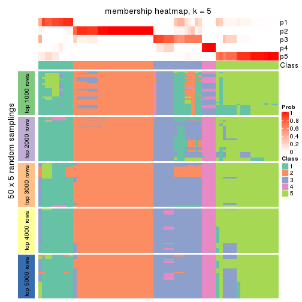
membership_heatmap(res, k = 6)
As soon as we have had the classes for columns, we can look for signatures which are significantly different between classes which can be candidate marks for certain classes. Following are the heatmaps for signatures.
Signature heatmaps where rows are scaled:
get_signatures(res, k = 2)
get_signatures(res, k = 3)
get_signatures(res, k = 4)
get_signatures(res, k = 5)
get_signatures(res, k = 6)
Signature heatmaps where rows are not scaled:
get_signatures(res, k = 2, scale_rows = FALSE)
get_signatures(res, k = 3, scale_rows = FALSE)
get_signatures(res, k = 4, scale_rows = FALSE)
get_signatures(res, k = 5, scale_rows = FALSE)
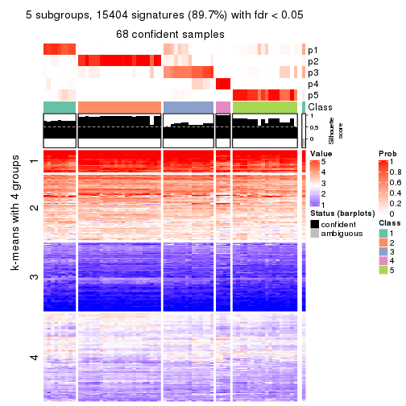
get_signatures(res, k = 6, scale_rows = FALSE)
Compare the overlap of signatures from different k:
compare_signatures(res)
get_signature() returns a data frame invisibly. TO get the list of signatures, the function
call should be assigned to a variable explicitly. In following code, if plot argument is set
to FALSE, no heatmap is plotted while only the differential analysis is performed.
# code only for demonstration
tb = get_signature(res, k = ..., plot = FALSE)
An example of the output of tb is:
#> which_row fdr mean_1 mean_2 scaled_mean_1 scaled_mean_2 km
#> 1 38 0.042760348 8.373488 9.131774 -0.5533452 0.5164555 1
#> 2 40 0.018707592 7.106213 8.469186 -0.6173731 0.5762149 1
#> 3 55 0.019134737 10.221463 11.207825 -0.6159697 0.5749050 1
#> 4 59 0.006059896 5.921854 7.869574 -0.6899429 0.6439467 1
#> 5 60 0.018055526 8.928898 10.211722 -0.6204761 0.5791110 1
#> 6 98 0.009384629 15.714769 14.887706 0.6635654 -0.6193277 2
...
The columns in tb are:
which_row: row indices corresponding to the input matrix.fdr: FDR for the differential test. mean_x: The mean value in group x.scaled_mean_x: The mean value in group x after rows are scaled.km: Row groups if k-means clustering is applied to rows.UMAP plot which shows how samples are separated.
dimension_reduction(res, k = 2, method = "UMAP")
dimension_reduction(res, k = 3, method = "UMAP")
dimension_reduction(res, k = 4, method = "UMAP")
dimension_reduction(res, k = 5, method = "UMAP")
dimension_reduction(res, k = 6, method = "UMAP")
Following heatmap shows how subgroups are split when increasing k:
collect_classes(res)
If matrix rows can be associated to genes, consider to use GO_Enrichment(res,
...) to perform function enrichment for the signature genes.
The object with results only for a single top-value method and a single partition method can be extracted as:
res = res_list["MAD", "kmeans"]
# you can also extract it by
# res = res_list["MAD:kmeans"]
A summary of res and all the functions that can be applied to it:
res
#> A 'ConsensusPartition' object with k = 2, 3, 4, 5, 6.
#> On a matrix with 17181 rows and 69 columns.
#> Top rows (1000, 2000, 3000, 4000, 5000) are extracted by 'MAD' method.
#> Subgroups are detected by 'kmeans' method.
#> Performed in total 1250 partitions by row resampling.
#> Best k for subgroups seems to be 2.
#>
#> Following methods can be applied to this 'ConsensusPartition' object:
#> [1] "cola_report" "collect_classes" "collect_plots"
#> [4] "collect_stats" "colnames" "compare_signatures"
#> [7] "consensus_heatmap" "dimension_reduction" "functional_enrichment"
#> [10] "get_anno_col" "get_anno" "get_classes"
#> [13] "get_consensus" "get_matrix" "get_membership"
#> [16] "get_param" "get_signatures" "get_stats"
#> [19] "is_best_k" "is_stable_k" "membership_heatmap"
#> [22] "ncol" "nrow" "plot_ecdf"
#> [25] "rownames" "select_partition_number" "show"
#> [28] "suggest_best_k" "test_to_known_factors"
collect_plots() function collects all the plots made from res for all k (number of partitions)
into one single page to provide an easy and fast comparison between different k.
collect_plots(res)
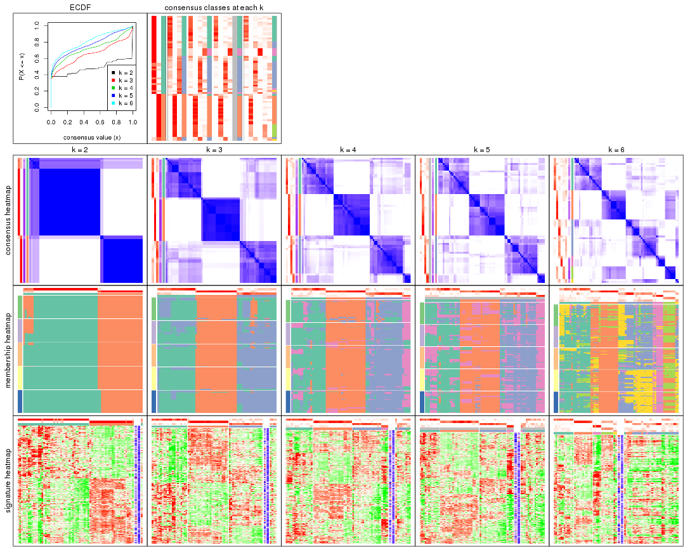
The plots are:
k and the heatmap of
predicted classes for each k.k.k.k.All the plots in panels can be made by individual functions and they are plotted later in this section.
select_partition_number() produces several plots showing different
statistics for choosing “optimized” k. There are following statistics:
k;k, the area increased is defined as \(A_k - A_{k-1}\).The detailed explanations of these statistics can be found in the cola vignette.
Generally speaking, lower PAC score, higher mean silhouette score or higher
concordance corresponds to better partition. Rand index and Jaccard index
measure how similar the current partition is compared to partition with k-1.
If they are too similar, we won't accept k is better than k-1.
select_partition_number(res)
The numeric values for all these statistics can be obtained by get_stats().
get_stats(res)
#> k 1-PAC mean_silhouette concordance area_increased Rand Jaccard
#> 2 2 0.881 0.918 0.965 0.4836 0.523 0.523
#> 3 3 0.660 0.785 0.845 0.3598 0.765 0.565
#> 4 4 0.629 0.727 0.835 0.1065 0.924 0.777
#> 5 5 0.654 0.630 0.740 0.0671 1.000 1.000
#> 6 6 0.659 0.407 0.644 0.0459 0.844 0.522
suggest_best_k() suggests the best \(k\) based on these statistics. The rules are as follows:
NA.suggest_best_k(res)
#> [1] 2
Following shows the table of the partitions (You need to click the show/hide
code output link to see it). The membership matrix (columns with name p*)
is inferred by
clue::cl_consensus()
function with the SE method. Basically the value in the membership matrix
represents the probability to belong to a certain group. The finall class
label for an item is determined with the group with highest probability it
belongs to.
In get_classes() function, the entropy is calculated from the membership
matrix and the silhouette score is calculated from the consensus matrix.
cbind(get_classes(res, k = 2), get_membership(res, k = 2))
#> class entropy silhouette p1 p2
#> SRR1747143 1 0.000 0.950 1.000 0.000
#> SRR1747144 1 0.000 0.950 1.000 0.000
#> SRR1747145 1 0.929 0.516 0.656 0.344
#> SRR1747146 1 0.909 0.555 0.676 0.324
#> SRR1747148 1 0.000 0.950 1.000 0.000
#> SRR1747147 1 0.802 0.684 0.756 0.244
#> SRR1747149 1 0.000 0.950 1.000 0.000
#> SRR1747150 1 0.000 0.950 1.000 0.000
#> SRR1747151 1 0.000 0.950 1.000 0.000
#> SRR1747152 1 0.000 0.950 1.000 0.000
#> SRR1747153 1 0.000 0.950 1.000 0.000
#> SRR1747154 1 0.000 0.950 1.000 0.000
#> SRR1747155 2 0.000 0.982 0.000 1.000
#> SRR1747156 1 0.921 0.532 0.664 0.336
#> SRR1747157 1 0.000 0.950 1.000 0.000
#> SRR1747159 1 0.000 0.950 1.000 0.000
#> SRR1747158 1 0.904 0.563 0.680 0.320
#> SRR1747160 2 0.000 0.982 0.000 1.000
#> SRR1747161 1 0.000 0.950 1.000 0.000
#> SRR1747162 2 0.722 0.735 0.200 0.800
#> SRR1747163 1 0.000 0.950 1.000 0.000
#> SRR1747164 1 0.983 0.320 0.576 0.424
#> SRR1747165 2 0.722 0.735 0.200 0.800
#> SRR1747167 1 0.000 0.950 1.000 0.000
#> SRR1747166 1 0.000 0.950 1.000 0.000
#> SRR1747168 2 0.000 0.982 0.000 1.000
#> SRR1747169 2 0.000 0.982 0.000 1.000
#> SRR1747170 2 0.000 0.982 0.000 1.000
#> SRR1747172 2 0.000 0.982 0.000 1.000
#> SRR1747171 2 0.000 0.982 0.000 1.000
#> SRR1747173 2 0.000 0.982 0.000 1.000
#> SRR1747174 2 0.000 0.982 0.000 1.000
#> SRR1747175 1 0.000 0.950 1.000 0.000
#> SRR1747176 2 0.000 0.982 0.000 1.000
#> SRR1747177 1 0.000 0.950 1.000 0.000
#> SRR1747178 1 0.000 0.950 1.000 0.000
#> SRR1747179 1 0.000 0.950 1.000 0.000
#> SRR1747180 2 0.000 0.982 0.000 1.000
#> SRR1747181 1 0.000 0.950 1.000 0.000
#> SRR1747183 1 0.000 0.950 1.000 0.000
#> SRR1747182 2 0.000 0.982 0.000 1.000
#> SRR1747184 1 0.000 0.950 1.000 0.000
#> SRR1747185 1 0.000 0.950 1.000 0.000
#> SRR1747186 2 0.000 0.982 0.000 1.000
#> SRR1747187 2 0.000 0.982 0.000 1.000
#> SRR1747188 2 0.000 0.982 0.000 1.000
#> SRR1747189 2 0.000 0.982 0.000 1.000
#> SRR1747191 2 0.000 0.982 0.000 1.000
#> SRR1747190 2 0.000 0.982 0.000 1.000
#> SRR1747192 1 0.000 0.950 1.000 0.000
#> SRR1747193 1 0.000 0.950 1.000 0.000
#> SRR1747194 1 0.000 0.950 1.000 0.000
#> SRR1747195 1 0.000 0.950 1.000 0.000
#> SRR1747197 1 0.000 0.950 1.000 0.000
#> SRR1747196 1 0.000 0.950 1.000 0.000
#> SRR1747199 1 0.000 0.950 1.000 0.000
#> SRR1747198 1 0.000 0.950 1.000 0.000
#> SRR1747200 2 0.000 0.982 0.000 1.000
#> SRR1747201 1 0.000 0.950 1.000 0.000
#> SRR1747202 2 0.000 0.982 0.000 1.000
#> SRR1747203 2 0.000 0.982 0.000 1.000
#> SRR1747204 1 0.000 0.950 1.000 0.000
#> SRR1747205 2 0.000 0.982 0.000 1.000
#> SRR1747206 1 0.000 0.950 1.000 0.000
#> SRR1747207 1 0.000 0.950 1.000 0.000
#> SRR1747208 2 0.000 0.982 0.000 1.000
#> SRR1747210 1 0.000 0.950 1.000 0.000
#> SRR1747209 2 0.000 0.982 0.000 1.000
#> SRR1747211 1 0.000 0.950 1.000 0.000
cbind(get_classes(res, k = 3), get_membership(res, k = 3))
#> class entropy silhouette p1 p2 p3
#> SRR1747143 3 0.5529 0.765 0.296 0.000 0.704
#> SRR1747144 1 0.5465 0.668 0.712 0.000 0.288
#> SRR1747145 3 0.6735 0.768 0.260 0.044 0.696
#> SRR1747146 3 0.6798 0.768 0.256 0.048 0.696
#> SRR1747148 3 0.5678 0.758 0.316 0.000 0.684
#> SRR1747147 3 0.3886 0.722 0.096 0.024 0.880
#> SRR1747149 1 0.5465 0.668 0.712 0.000 0.288
#> SRR1747150 3 0.5363 0.770 0.276 0.000 0.724
#> SRR1747151 3 0.5431 0.768 0.284 0.000 0.716
#> SRR1747152 3 0.2261 0.634 0.068 0.000 0.932
#> SRR1747153 3 0.5678 0.758 0.316 0.000 0.684
#> SRR1747154 3 0.5678 0.758 0.316 0.000 0.684
#> SRR1747155 2 0.0747 0.973 0.000 0.984 0.016
#> SRR1747156 3 0.6798 0.768 0.256 0.048 0.696
#> SRR1747157 3 0.2448 0.651 0.076 0.000 0.924
#> SRR1747159 1 0.6154 -0.188 0.592 0.000 0.408
#> SRR1747158 3 0.6880 0.710 0.108 0.156 0.736
#> SRR1747160 2 0.0747 0.973 0.000 0.984 0.016
#> SRR1747161 3 0.2448 0.651 0.076 0.000 0.924
#> SRR1747162 3 0.6852 0.573 0.036 0.300 0.664
#> SRR1747163 3 0.4555 0.686 0.200 0.000 0.800
#> SRR1747164 3 0.7474 0.701 0.128 0.176 0.696
#> SRR1747165 3 0.5363 0.583 0.000 0.276 0.724
#> SRR1747167 1 0.2711 0.769 0.912 0.000 0.088
#> SRR1747166 3 0.5363 0.770 0.276 0.000 0.724
#> SRR1747168 2 0.1411 0.965 0.000 0.964 0.036
#> SRR1747169 2 0.0000 0.974 0.000 1.000 0.000
#> SRR1747170 2 0.1411 0.965 0.000 0.964 0.036
#> SRR1747172 2 0.1411 0.965 0.000 0.964 0.036
#> SRR1747171 2 0.0747 0.973 0.000 0.984 0.016
#> SRR1747173 2 0.1031 0.970 0.000 0.976 0.024
#> SRR1747174 2 0.1163 0.968 0.000 0.972 0.028
#> SRR1747175 3 0.5465 0.490 0.288 0.000 0.712
#> SRR1747176 2 0.0424 0.972 0.000 0.992 0.008
#> SRR1747177 1 0.5178 0.728 0.744 0.000 0.256
#> SRR1747178 1 0.0747 0.802 0.984 0.000 0.016
#> SRR1747179 1 0.3192 0.750 0.888 0.000 0.112
#> SRR1747180 2 0.0000 0.974 0.000 1.000 0.000
#> SRR1747181 1 0.5292 0.694 0.764 0.008 0.228
#> SRR1747183 1 0.3038 0.761 0.896 0.000 0.104
#> SRR1747182 2 0.0747 0.972 0.000 0.984 0.016
#> SRR1747184 1 0.5465 0.668 0.712 0.000 0.288
#> SRR1747185 3 0.6302 0.486 0.480 0.000 0.520
#> SRR1747186 2 0.0747 0.973 0.000 0.984 0.016
#> SRR1747187 2 0.0000 0.974 0.000 1.000 0.000
#> SRR1747188 2 0.0424 0.972 0.000 0.992 0.008
#> SRR1747189 2 0.1411 0.965 0.000 0.964 0.036
#> SRR1747191 2 0.0000 0.974 0.000 1.000 0.000
#> SRR1747190 2 0.0892 0.968 0.000 0.980 0.020
#> SRR1747192 3 0.6308 0.454 0.492 0.000 0.508
#> SRR1747193 1 0.0592 0.801 0.988 0.000 0.012
#> SRR1747194 1 0.4555 0.720 0.800 0.000 0.200
#> SRR1747195 1 0.3532 0.753 0.884 0.008 0.108
#> SRR1747197 1 0.2866 0.780 0.916 0.008 0.076
#> SRR1747196 1 0.3551 0.721 0.868 0.000 0.132
#> SRR1747199 1 0.1289 0.799 0.968 0.000 0.032
#> SRR1747198 1 0.1289 0.799 0.968 0.000 0.032
#> SRR1747200 2 0.0000 0.974 0.000 1.000 0.000
#> SRR1747201 1 0.2261 0.790 0.932 0.000 0.068
#> SRR1747202 2 0.0424 0.972 0.000 0.992 0.008
#> SRR1747203 2 0.0747 0.973 0.000 0.984 0.016
#> SRR1747204 3 0.5706 0.755 0.320 0.000 0.680
#> SRR1747205 2 0.0424 0.972 0.000 0.992 0.008
#> SRR1747206 1 0.5465 0.668 0.712 0.000 0.288
#> SRR1747207 1 0.0424 0.802 0.992 0.000 0.008
#> SRR1747208 2 0.7184 0.524 0.240 0.688 0.072
#> SRR1747210 1 0.1163 0.802 0.972 0.000 0.028
#> SRR1747209 2 0.0000 0.974 0.000 1.000 0.000
#> SRR1747211 1 0.2356 0.782 0.928 0.000 0.072
cbind(get_classes(res, k = 4), get_membership(res, k = 4))
#> class entropy silhouette p1 p2 p3 p4
#> SRR1747143 3 0.4168 0.7810 0.092 0.000 0.828 0.080
#> SRR1747144 4 0.3681 0.8191 0.176 0.000 0.008 0.816
#> SRR1747145 3 0.1743 0.7982 0.056 0.000 0.940 0.004
#> SRR1747146 3 0.1902 0.7986 0.064 0.000 0.932 0.004
#> SRR1747148 3 0.2918 0.7925 0.116 0.000 0.876 0.008
#> SRR1747147 3 0.2352 0.7786 0.012 0.016 0.928 0.044
#> SRR1747149 4 0.3725 0.8209 0.180 0.000 0.008 0.812
#> SRR1747150 3 0.3900 0.7852 0.084 0.000 0.844 0.072
#> SRR1747151 3 0.4036 0.7819 0.088 0.000 0.836 0.076
#> SRR1747152 4 0.5127 0.2480 0.012 0.000 0.356 0.632
#> SRR1747153 3 0.2530 0.7942 0.112 0.000 0.888 0.000
#> SRR1747154 3 0.2546 0.7983 0.092 0.000 0.900 0.008
#> SRR1747155 2 0.4055 0.8756 0.000 0.832 0.108 0.060
#> SRR1747156 3 0.1824 0.7989 0.060 0.000 0.936 0.004
#> SRR1747157 3 0.5099 0.4124 0.008 0.000 0.612 0.380
#> SRR1747159 1 0.7251 -0.0841 0.440 0.000 0.416 0.144
#> SRR1747158 3 0.1762 0.7815 0.012 0.020 0.952 0.016
#> SRR1747160 2 0.3323 0.9124 0.000 0.876 0.064 0.060
#> SRR1747161 3 0.5099 0.4124 0.008 0.000 0.612 0.380
#> SRR1747162 3 0.4152 0.6247 0.000 0.160 0.808 0.032
#> SRR1747163 3 0.6022 0.5787 0.084 0.000 0.656 0.260
#> SRR1747164 3 0.1962 0.7849 0.024 0.024 0.944 0.008
#> SRR1747165 3 0.3800 0.6911 0.004 0.112 0.848 0.036
#> SRR1747167 1 0.6500 0.4479 0.620 0.000 0.120 0.260
#> SRR1747166 3 0.3900 0.7852 0.084 0.000 0.844 0.072
#> SRR1747168 2 0.3890 0.8896 0.004 0.836 0.028 0.132
#> SRR1747169 2 0.0188 0.9367 0.000 0.996 0.004 0.000
#> SRR1747170 2 0.3890 0.8896 0.004 0.836 0.028 0.132
#> SRR1747172 2 0.3509 0.9034 0.004 0.860 0.024 0.112
#> SRR1747171 2 0.2565 0.9288 0.000 0.912 0.032 0.056
#> SRR1747173 2 0.3403 0.9055 0.004 0.864 0.020 0.112
#> SRR1747174 2 0.2596 0.9233 0.000 0.908 0.024 0.068
#> SRR1747175 3 0.7401 0.2616 0.316 0.000 0.496 0.188
#> SRR1747176 2 0.1022 0.9325 0.000 0.968 0.032 0.000
#> SRR1747177 1 0.5690 0.6015 0.716 0.000 0.116 0.168
#> SRR1747178 1 0.4019 0.5904 0.792 0.000 0.012 0.196
#> SRR1747179 1 0.4121 0.6572 0.796 0.000 0.184 0.020
#> SRR1747180 2 0.0188 0.9367 0.000 0.996 0.004 0.000
#> SRR1747181 1 0.3569 0.5384 0.804 0.000 0.000 0.196
#> SRR1747183 1 0.6542 0.4622 0.620 0.000 0.128 0.252
#> SRR1747182 2 0.2983 0.9125 0.004 0.880 0.008 0.108
#> SRR1747184 4 0.3791 0.8152 0.200 0.000 0.004 0.796
#> SRR1747185 3 0.6052 0.2683 0.396 0.000 0.556 0.048
#> SRR1747186 2 0.2032 0.9327 0.000 0.936 0.028 0.036
#> SRR1747187 2 0.0000 0.9365 0.000 1.000 0.000 0.000
#> SRR1747188 2 0.1022 0.9325 0.000 0.968 0.032 0.000
#> SRR1747189 2 0.3890 0.8896 0.004 0.836 0.028 0.132
#> SRR1747191 2 0.0000 0.9365 0.000 1.000 0.000 0.000
#> SRR1747190 2 0.1510 0.9289 0.000 0.956 0.016 0.028
#> SRR1747192 1 0.6428 0.5174 0.624 0.000 0.264 0.112
#> SRR1747193 1 0.3852 0.5950 0.808 0.000 0.012 0.180
#> SRR1747194 1 0.3751 0.5755 0.800 0.000 0.004 0.196
#> SRR1747195 1 0.3591 0.6667 0.824 0.008 0.168 0.000
#> SRR1747197 1 0.2469 0.6947 0.892 0.000 0.108 0.000
#> SRR1747196 1 0.3088 0.7034 0.888 0.000 0.060 0.052
#> SRR1747199 1 0.0469 0.6967 0.988 0.000 0.012 0.000
#> SRR1747198 1 0.0469 0.6967 0.988 0.000 0.012 0.000
#> SRR1747200 2 0.0336 0.9365 0.000 0.992 0.008 0.000
#> SRR1747201 1 0.3653 0.6889 0.844 0.000 0.128 0.028
#> SRR1747202 2 0.1022 0.9325 0.000 0.968 0.032 0.000
#> SRR1747203 2 0.3247 0.9148 0.000 0.880 0.060 0.060
#> SRR1747204 3 0.4328 0.6741 0.244 0.000 0.748 0.008
#> SRR1747205 2 0.1022 0.9325 0.000 0.968 0.032 0.000
#> SRR1747206 4 0.3791 0.8152 0.200 0.000 0.004 0.796
#> SRR1747207 1 0.3591 0.6066 0.824 0.000 0.008 0.168
#> SRR1747208 1 0.6706 0.3737 0.588 0.288 0.124 0.000
#> SRR1747210 1 0.4737 0.5595 0.728 0.000 0.020 0.252
#> SRR1747209 2 0.0188 0.9367 0.000 0.996 0.004 0.000
#> SRR1747211 1 0.1661 0.7008 0.944 0.000 0.052 0.004
cbind(get_classes(res, k = 5), get_membership(res, k = 5))
#> class entropy silhouette p1 p2 p3 p4 p5
#> SRR1747143 3 0.5408 0.6511 0.044 0.000 0.700 0.056 NA
#> SRR1747144 4 0.0963 0.8573 0.036 0.000 0.000 0.964 NA
#> SRR1747145 3 0.1356 0.7104 0.028 0.000 0.956 0.004 NA
#> SRR1747146 3 0.1605 0.7091 0.040 0.004 0.944 0.000 NA
#> SRR1747148 3 0.3504 0.7087 0.092 0.000 0.840 0.004 NA
#> SRR1747147 3 0.2295 0.6943 0.008 0.004 0.900 0.000 NA
#> SRR1747149 4 0.1043 0.8589 0.040 0.000 0.000 0.960 NA
#> SRR1747150 3 0.5242 0.6579 0.044 0.000 0.708 0.044 NA
#> SRR1747151 3 0.5439 0.6505 0.044 0.000 0.696 0.056 NA
#> SRR1747152 4 0.4817 0.4576 0.000 0.000 0.264 0.680 NA
#> SRR1747153 3 0.2068 0.7059 0.092 0.000 0.904 0.000 NA
#> SRR1747154 3 0.3142 0.7128 0.056 0.000 0.864 0.004 NA
#> SRR1747155 2 0.6335 0.6115 0.000 0.604 0.192 0.024 NA
#> SRR1747156 3 0.1281 0.7097 0.032 0.000 0.956 0.000 NA
#> SRR1747157 3 0.5365 0.2009 0.000 0.000 0.528 0.416 NA
#> SRR1747159 1 0.8356 0.0998 0.312 0.000 0.244 0.140 NA
#> SRR1747158 3 0.3277 0.6583 0.000 0.012 0.832 0.008 NA
#> SRR1747160 2 0.5553 0.7166 0.000 0.688 0.104 0.024 NA
#> SRR1747161 3 0.5542 0.2379 0.000 0.000 0.532 0.396 NA
#> SRR1747162 3 0.4913 0.5602 0.000 0.092 0.752 0.024 NA
#> SRR1747163 3 0.7247 0.3210 0.028 0.000 0.432 0.240 NA
#> SRR1747164 3 0.2029 0.7015 0.016 0.012 0.932 0.004 NA
#> SRR1747165 3 0.4219 0.6004 0.000 0.072 0.772 0.000 NA
#> SRR1747167 1 0.7674 0.3161 0.372 0.000 0.056 0.232 NA
#> SRR1747166 3 0.5242 0.6579 0.044 0.000 0.708 0.044 NA
#> SRR1747168 2 0.4264 0.6958 0.000 0.620 0.004 0.000 NA
#> SRR1747169 2 0.0162 0.8343 0.000 0.996 0.000 0.000 NA
#> SRR1747170 2 0.4264 0.6958 0.000 0.620 0.004 0.000 NA
#> SRR1747172 2 0.3983 0.7254 0.000 0.660 0.000 0.000 NA
#> SRR1747171 2 0.3516 0.8017 0.000 0.812 0.004 0.020 NA
#> SRR1747173 2 0.3774 0.7544 0.000 0.704 0.000 0.000 NA
#> SRR1747174 2 0.3452 0.7805 0.000 0.756 0.000 0.000 NA
#> SRR1747175 3 0.7977 -0.0191 0.324 0.000 0.336 0.080 NA
#> SRR1747176 2 0.1914 0.8198 0.000 0.924 0.016 0.000 NA
#> SRR1747177 1 0.5908 0.5553 0.648 0.000 0.080 0.040 NA
#> SRR1747178 1 0.6276 0.4851 0.584 0.000 0.012 0.228 NA
#> SRR1747179 1 0.4670 0.6175 0.756 0.000 0.136 0.008 NA
#> SRR1747180 2 0.0162 0.8343 0.000 0.996 0.000 0.000 NA
#> SRR1747181 1 0.3647 0.5249 0.764 0.000 0.004 0.228 NA
#> SRR1747183 1 0.7638 0.3388 0.392 0.000 0.060 0.208 NA
#> SRR1747182 2 0.3661 0.7647 0.000 0.724 0.000 0.000 NA
#> SRR1747184 4 0.1768 0.8522 0.072 0.000 0.004 0.924 NA
#> SRR1747185 3 0.7014 0.0207 0.400 0.000 0.408 0.028 NA
#> SRR1747186 2 0.3022 0.8149 0.000 0.848 0.004 0.012 NA
#> SRR1747187 2 0.0290 0.8346 0.000 0.992 0.000 0.000 NA
#> SRR1747188 2 0.1914 0.8198 0.000 0.924 0.016 0.000 NA
#> SRR1747189 2 0.4264 0.6958 0.000 0.620 0.004 0.000 NA
#> SRR1747191 2 0.0290 0.8346 0.000 0.992 0.000 0.000 NA
#> SRR1747190 2 0.1965 0.8182 0.000 0.904 0.000 0.000 NA
#> SRR1747192 1 0.6335 0.4903 0.552 0.000 0.144 0.012 NA
#> SRR1747193 1 0.5650 0.4853 0.648 0.000 0.008 0.224 NA
#> SRR1747194 1 0.4428 0.6097 0.760 0.000 0.000 0.144 NA
#> SRR1747195 1 0.3019 0.6327 0.864 0.012 0.108 0.000 NA
#> SRR1747197 1 0.1809 0.6506 0.928 0.000 0.060 0.000 NA
#> SRR1747196 1 0.3554 0.6517 0.828 0.000 0.020 0.016 NA
#> SRR1747199 1 0.0510 0.6576 0.984 0.000 0.000 0.000 NA
#> SRR1747198 1 0.0510 0.6576 0.984 0.000 0.000 0.000 NA
#> SRR1747200 2 0.0290 0.8333 0.000 0.992 0.000 0.000 NA
#> SRR1747201 1 0.4427 0.6417 0.796 0.000 0.096 0.032 NA
#> SRR1747202 2 0.2074 0.8184 0.004 0.920 0.016 0.000 NA
#> SRR1747203 2 0.5520 0.7169 0.000 0.692 0.104 0.024 NA
#> SRR1747204 3 0.4658 0.5255 0.296 0.000 0.672 0.004 NA
#> SRR1747205 2 0.1914 0.8198 0.000 0.924 0.016 0.000 NA
#> SRR1747206 4 0.1768 0.8493 0.072 0.000 0.000 0.924 NA
#> SRR1747207 1 0.5375 0.5033 0.684 0.000 0.008 0.192 NA
#> SRR1747208 1 0.6023 0.3600 0.600 0.296 0.068 0.000 NA
#> SRR1747210 1 0.6955 0.3784 0.444 0.000 0.016 0.208 NA
#> SRR1747209 2 0.0000 0.8342 0.000 1.000 0.000 0.000 NA
#> SRR1747211 1 0.0566 0.6565 0.984 0.000 0.012 0.004 NA
cbind(get_classes(res, k = 6), get_membership(res, k = 6))
#> class entropy silhouette p1 p2 p3 p4 p5 p6
#> SRR1747143 3 0.0964 0.19317 0.012 0.000 0.968 0.016 0.000 0.004
#> SRR1747144 4 0.0260 0.79757 0.008 0.000 0.000 0.992 0.000 0.000
#> SRR1747145 3 0.4467 -0.28548 0.028 0.004 0.592 0.000 0.000 0.376
#> SRR1747146 3 0.5427 -0.27831 0.060 0.004 0.532 0.000 0.020 0.384
#> SRR1747148 3 0.5405 -0.13403 0.088 0.000 0.600 0.000 0.024 0.288
#> SRR1747147 3 0.5152 -0.33254 0.008 0.000 0.568 0.000 0.076 0.348
#> SRR1747149 4 0.0260 0.79757 0.008 0.000 0.000 0.992 0.000 0.000
#> SRR1747150 3 0.0520 0.19031 0.008 0.000 0.984 0.008 0.000 0.000
#> SRR1747151 3 0.0767 0.19231 0.008 0.000 0.976 0.012 0.000 0.004
#> SRR1747152 4 0.4683 0.62365 0.000 0.000 0.120 0.744 0.060 0.076
#> SRR1747153 3 0.5527 -0.23232 0.080 0.000 0.544 0.000 0.024 0.352
#> SRR1747154 3 0.4436 -0.12769 0.044 0.000 0.676 0.000 0.008 0.272
#> SRR1747155 2 0.5915 0.23083 0.000 0.464 0.008 0.004 0.140 0.384
#> SRR1747156 3 0.4676 -0.29297 0.040 0.004 0.572 0.000 0.000 0.384
#> SRR1747157 4 0.6801 -0.12641 0.004 0.000 0.380 0.396 0.060 0.160
#> SRR1747159 3 0.7077 0.16016 0.128 0.000 0.492 0.052 0.048 0.280
#> SRR1747158 6 0.5574 0.50647 0.004 0.008 0.428 0.000 0.092 0.468
#> SRR1747160 2 0.5874 0.27370 0.000 0.512 0.004 0.004 0.172 0.308
#> SRR1747161 3 0.6564 -0.16124 0.000 0.000 0.420 0.380 0.060 0.140
#> SRR1747162 6 0.6676 0.57853 0.008 0.104 0.332 0.004 0.068 0.484
#> SRR1747163 3 0.4559 0.18867 0.024 0.000 0.748 0.096 0.004 0.128
#> SRR1747164 3 0.4763 -0.44210 0.012 0.016 0.544 0.000 0.008 0.420
#> SRR1747165 3 0.6638 -0.41450 0.004 0.024 0.392 0.000 0.244 0.336
#> SRR1747167 3 0.8003 -0.01678 0.192 0.000 0.372 0.124 0.044 0.268
#> SRR1747166 3 0.0520 0.19031 0.008 0.000 0.984 0.008 0.000 0.000
#> SRR1747168 5 0.3756 0.92063 0.000 0.400 0.000 0.000 0.600 0.000
#> SRR1747169 2 0.0632 0.70201 0.000 0.976 0.000 0.000 0.024 0.000
#> SRR1747170 5 0.3756 0.92063 0.000 0.400 0.000 0.000 0.600 0.000
#> SRR1747172 5 0.3789 0.92142 0.000 0.416 0.000 0.000 0.584 0.000
#> SRR1747171 2 0.4733 0.39058 0.000 0.688 0.000 0.004 0.188 0.120
#> SRR1747173 5 0.3950 0.91046 0.000 0.432 0.000 0.000 0.564 0.004
#> SRR1747174 5 0.3869 0.79622 0.000 0.500 0.000 0.000 0.500 0.000
#> SRR1747175 1 0.6692 0.30868 0.476 0.000 0.344 0.024 0.104 0.052
#> SRR1747176 2 0.0806 0.70937 0.000 0.972 0.000 0.000 0.008 0.020
#> SRR1747177 1 0.4642 0.61851 0.756 0.000 0.056 0.008 0.124 0.056
#> SRR1747178 1 0.7361 0.39665 0.484 0.000 0.068 0.132 0.060 0.256
#> SRR1747179 1 0.2737 0.65171 0.868 0.000 0.084 0.004 0.000 0.044
#> SRR1747180 2 0.0632 0.70093 0.000 0.976 0.000 0.000 0.024 0.000
#> SRR1747181 1 0.5995 0.53821 0.596 0.000 0.000 0.216 0.124 0.064
#> SRR1747183 3 0.7925 -0.00724 0.192 0.000 0.384 0.112 0.044 0.268
#> SRR1747182 5 0.3996 0.82040 0.000 0.484 0.000 0.000 0.512 0.004
#> SRR1747184 4 0.0692 0.79460 0.020 0.000 0.000 0.976 0.000 0.004
#> SRR1747185 1 0.4361 0.27811 0.544 0.000 0.436 0.004 0.000 0.016
#> SRR1747186 2 0.3915 0.53253 0.000 0.776 0.000 0.004 0.128 0.092
#> SRR1747187 2 0.1141 0.67760 0.000 0.948 0.000 0.000 0.052 0.000
#> SRR1747188 2 0.0806 0.70937 0.000 0.972 0.000 0.000 0.008 0.020
#> SRR1747189 5 0.3756 0.92063 0.000 0.400 0.000 0.000 0.600 0.000
#> SRR1747191 2 0.1141 0.67760 0.000 0.948 0.000 0.000 0.052 0.000
#> SRR1747190 2 0.2823 0.29893 0.000 0.796 0.000 0.000 0.204 0.000
#> SRR1747192 1 0.5183 0.56810 0.692 0.000 0.100 0.000 0.156 0.052
#> SRR1747193 1 0.7775 0.40253 0.400 0.000 0.040 0.140 0.128 0.292
#> SRR1747194 1 0.4169 0.62468 0.788 0.000 0.008 0.120 0.044 0.040
#> SRR1747195 1 0.4504 0.66077 0.768 0.000 0.056 0.004 0.096 0.076
#> SRR1747197 1 0.4427 0.65978 0.764 0.000 0.028 0.004 0.108 0.096
#> SRR1747196 1 0.3240 0.66281 0.856 0.000 0.032 0.004 0.056 0.052
#> SRR1747199 1 0.4673 0.64909 0.732 0.000 0.012 0.008 0.116 0.132
#> SRR1747198 1 0.4631 0.64990 0.736 0.000 0.012 0.008 0.112 0.132
#> SRR1747200 2 0.0458 0.70514 0.000 0.984 0.000 0.000 0.016 0.000
#> SRR1747201 1 0.3106 0.65967 0.840 0.000 0.120 0.024 0.000 0.016
#> SRR1747202 2 0.0891 0.70738 0.000 0.968 0.000 0.000 0.008 0.024
#> SRR1747203 2 0.5647 0.32858 0.000 0.556 0.004 0.004 0.148 0.288
#> SRR1747204 3 0.6586 -0.08793 0.364 0.000 0.364 0.000 0.028 0.244
#> SRR1747205 2 0.0806 0.70937 0.000 0.972 0.000 0.000 0.008 0.020
#> SRR1747206 4 0.0547 0.79450 0.020 0.000 0.000 0.980 0.000 0.000
#> SRR1747207 1 0.7230 0.44519 0.448 0.000 0.020 0.096 0.136 0.300
#> SRR1747208 1 0.6805 0.37947 0.460 0.324 0.004 0.000 0.116 0.096
#> SRR1747210 3 0.8101 -0.06122 0.204 0.000 0.348 0.124 0.048 0.276
#> SRR1747209 2 0.0632 0.70201 0.000 0.976 0.000 0.000 0.024 0.000
#> SRR1747211 1 0.3155 0.66809 0.840 0.000 0.004 0.000 0.088 0.068
Heatmaps for the consensus matrix. It visualizes the probability of two samples to be in a same group.
consensus_heatmap(res, k = 2)
consensus_heatmap(res, k = 3)
consensus_heatmap(res, k = 4)
consensus_heatmap(res, k = 5)
consensus_heatmap(res, k = 6)
Heatmaps for the membership of samples in all partitions to see how consistent they are:
membership_heatmap(res, k = 2)
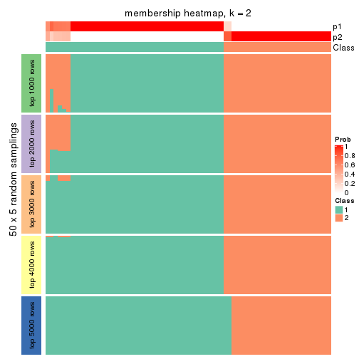
membership_heatmap(res, k = 3)
membership_heatmap(res, k = 4)
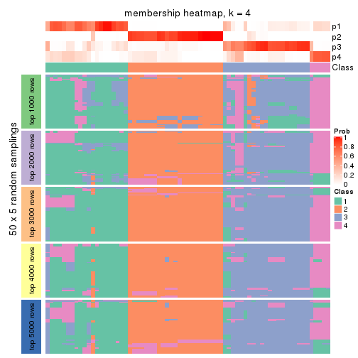
membership_heatmap(res, k = 5)
membership_heatmap(res, k = 6)
As soon as we have had the classes for columns, we can look for signatures which are significantly different between classes which can be candidate marks for certain classes. Following are the heatmaps for signatures.
Signature heatmaps where rows are scaled:
get_signatures(res, k = 2)
get_signatures(res, k = 3)
get_signatures(res, k = 4)

get_signatures(res, k = 5)
get_signatures(res, k = 6)
Signature heatmaps where rows are not scaled:
get_signatures(res, k = 2, scale_rows = FALSE)
get_signatures(res, k = 3, scale_rows = FALSE)
get_signatures(res, k = 4, scale_rows = FALSE)
get_signatures(res, k = 5, scale_rows = FALSE)
get_signatures(res, k = 6, scale_rows = FALSE)
Compare the overlap of signatures from different k:
compare_signatures(res)
get_signature() returns a data frame invisibly. TO get the list of signatures, the function
call should be assigned to a variable explicitly. In following code, if plot argument is set
to FALSE, no heatmap is plotted while only the differential analysis is performed.
# code only for demonstration
tb = get_signature(res, k = ..., plot = FALSE)
An example of the output of tb is:
#> which_row fdr mean_1 mean_2 scaled_mean_1 scaled_mean_2 km
#> 1 38 0.042760348 8.373488 9.131774 -0.5533452 0.5164555 1
#> 2 40 0.018707592 7.106213 8.469186 -0.6173731 0.5762149 1
#> 3 55 0.019134737 10.221463 11.207825 -0.6159697 0.5749050 1
#> 4 59 0.006059896 5.921854 7.869574 -0.6899429 0.6439467 1
#> 5 60 0.018055526 8.928898 10.211722 -0.6204761 0.5791110 1
#> 6 98 0.009384629 15.714769 14.887706 0.6635654 -0.6193277 2
...
The columns in tb are:
which_row: row indices corresponding to the input matrix.fdr: FDR for the differential test. mean_x: The mean value in group x.scaled_mean_x: The mean value in group x after rows are scaled.km: Row groups if k-means clustering is applied to rows.UMAP plot which shows how samples are separated.
dimension_reduction(res, k = 2, method = "UMAP")
dimension_reduction(res, k = 3, method = "UMAP")
dimension_reduction(res, k = 4, method = "UMAP")
dimension_reduction(res, k = 5, method = "UMAP")
dimension_reduction(res, k = 6, method = "UMAP")
Following heatmap shows how subgroups are split when increasing k:
collect_classes(res)
If matrix rows can be associated to genes, consider to use GO_Enrichment(res,
...) to perform function enrichment for the signature genes.
The object with results only for a single top-value method and a single partition method can be extracted as:
res = res_list["MAD", "skmeans"]
# you can also extract it by
# res = res_list["MAD:skmeans"]
A summary of res and all the functions that can be applied to it:
res
#> A 'ConsensusPartition' object with k = 2, 3, 4, 5, 6.
#> On a matrix with 17181 rows and 69 columns.
#> Top rows (1000, 2000, 3000, 4000, 5000) are extracted by 'MAD' method.
#> Subgroups are detected by 'skmeans' method.
#> Performed in total 1250 partitions by row resampling.
#> Best k for subgroups seems to be 2.
#>
#> Following methods can be applied to this 'ConsensusPartition' object:
#> [1] "cola_report" "collect_classes" "collect_plots"
#> [4] "collect_stats" "colnames" "compare_signatures"
#> [7] "consensus_heatmap" "dimension_reduction" "functional_enrichment"
#> [10] "get_anno_col" "get_anno" "get_classes"
#> [13] "get_consensus" "get_matrix" "get_membership"
#> [16] "get_param" "get_signatures" "get_stats"
#> [19] "is_best_k" "is_stable_k" "membership_heatmap"
#> [22] "ncol" "nrow" "plot_ecdf"
#> [25] "rownames" "select_partition_number" "show"
#> [28] "suggest_best_k" "test_to_known_factors"
collect_plots() function collects all the plots made from res for all k (number of partitions)
into one single page to provide an easy and fast comparison between different k.
collect_plots(res)
The plots are:
k and the heatmap of
predicted classes for each k.k.k.k.All the plots in panels can be made by individual functions and they are plotted later in this section.
select_partition_number() produces several plots showing different
statistics for choosing “optimized” k. There are following statistics:
k;k, the area increased is defined as \(A_k - A_{k-1}\).The detailed explanations of these statistics can be found in the cola vignette.
Generally speaking, lower PAC score, higher mean silhouette score or higher
concordance corresponds to better partition. Rand index and Jaccard index
measure how similar the current partition is compared to partition with k-1.
If they are too similar, we won't accept k is better than k-1.
select_partition_number(res)
The numeric values for all these statistics can be obtained by get_stats().
get_stats(res)
#> k 1-PAC mean_silhouette concordance area_increased Rand Jaccard
#> 2 2 1.000 0.997 0.999 0.5051 0.495 0.495
#> 3 3 0.750 0.876 0.926 0.3280 0.749 0.533
#> 4 4 0.779 0.800 0.878 0.1043 0.896 0.700
#> 5 5 0.682 0.597 0.749 0.0644 0.957 0.836
#> 6 6 0.706 0.576 0.761 0.0420 0.920 0.676
suggest_best_k() suggests the best \(k\) based on these statistics. The rules are as follows:
NA.suggest_best_k(res)
#> [1] 2
Following shows the table of the partitions (You need to click the show/hide
code output link to see it). The membership matrix (columns with name p*)
is inferred by
clue::cl_consensus()
function with the SE method. Basically the value in the membership matrix
represents the probability to belong to a certain group. The finall class
label for an item is determined with the group with highest probability it
belongs to.
In get_classes() function, the entropy is calculated from the membership
matrix and the silhouette score is calculated from the consensus matrix.
cbind(get_classes(res, k = 2), get_membership(res, k = 2))
#> class entropy silhouette p1 p2
#> SRR1747143 1 0.000 0.999 1.000 0.000
#> SRR1747144 1 0.000 0.999 1.000 0.000
#> SRR1747145 2 0.000 0.998 0.000 1.000
#> SRR1747146 2 0.000 0.998 0.000 1.000
#> SRR1747148 1 0.000 0.999 1.000 0.000
#> SRR1747147 2 0.000 0.998 0.000 1.000
#> SRR1747149 1 0.000 0.999 1.000 0.000
#> SRR1747150 1 0.000 0.999 1.000 0.000
#> SRR1747151 1 0.000 0.999 1.000 0.000
#> SRR1747152 1 0.000 0.999 1.000 0.000
#> SRR1747153 1 0.000 0.999 1.000 0.000
#> SRR1747154 1 0.000 0.999 1.000 0.000
#> SRR1747155 2 0.000 0.998 0.000 1.000
#> SRR1747156 2 0.000 0.998 0.000 1.000
#> SRR1747157 1 0.000 0.999 1.000 0.000
#> SRR1747159 1 0.000 0.999 1.000 0.000
#> SRR1747158 2 0.343 0.932 0.064 0.936
#> SRR1747160 2 0.000 0.998 0.000 1.000
#> SRR1747161 1 0.000 0.999 1.000 0.000
#> SRR1747162 2 0.000 0.998 0.000 1.000
#> SRR1747163 1 0.000 0.999 1.000 0.000
#> SRR1747164 2 0.000 0.998 0.000 1.000
#> SRR1747165 2 0.000 0.998 0.000 1.000
#> SRR1747167 1 0.000 0.999 1.000 0.000
#> SRR1747166 1 0.000 0.999 1.000 0.000
#> SRR1747168 2 0.000 0.998 0.000 1.000
#> SRR1747169 2 0.000 0.998 0.000 1.000
#> SRR1747170 2 0.000 0.998 0.000 1.000
#> SRR1747172 2 0.000 0.998 0.000 1.000
#> SRR1747171 2 0.000 0.998 0.000 1.000
#> SRR1747173 2 0.000 0.998 0.000 1.000
#> SRR1747174 2 0.000 0.998 0.000 1.000
#> SRR1747175 1 0.000 0.999 1.000 0.000
#> SRR1747176 2 0.000 0.998 0.000 1.000
#> SRR1747177 1 0.000 0.999 1.000 0.000
#> SRR1747178 1 0.000 0.999 1.000 0.000
#> SRR1747179 1 0.000 0.999 1.000 0.000
#> SRR1747180 2 0.000 0.998 0.000 1.000
#> SRR1747181 1 0.000 0.999 1.000 0.000
#> SRR1747183 1 0.000 0.999 1.000 0.000
#> SRR1747182 2 0.000 0.998 0.000 1.000
#> SRR1747184 1 0.000 0.999 1.000 0.000
#> SRR1747185 1 0.000 0.999 1.000 0.000
#> SRR1747186 2 0.000 0.998 0.000 1.000
#> SRR1747187 2 0.000 0.998 0.000 1.000
#> SRR1747188 2 0.000 0.998 0.000 1.000
#> SRR1747189 2 0.000 0.998 0.000 1.000
#> SRR1747191 2 0.000 0.998 0.000 1.000
#> SRR1747190 2 0.000 0.998 0.000 1.000
#> SRR1747192 1 0.000 0.999 1.000 0.000
#> SRR1747193 1 0.000 0.999 1.000 0.000
#> SRR1747194 1 0.000 0.999 1.000 0.000
#> SRR1747195 1 0.184 0.971 0.972 0.028
#> SRR1747197 1 0.000 0.999 1.000 0.000
#> SRR1747196 1 0.000 0.999 1.000 0.000
#> SRR1747199 1 0.000 0.999 1.000 0.000
#> SRR1747198 1 0.000 0.999 1.000 0.000
#> SRR1747200 2 0.000 0.998 0.000 1.000
#> SRR1747201 1 0.000 0.999 1.000 0.000
#> SRR1747202 2 0.000 0.998 0.000 1.000
#> SRR1747203 2 0.000 0.998 0.000 1.000
#> SRR1747204 1 0.000 0.999 1.000 0.000
#> SRR1747205 2 0.000 0.998 0.000 1.000
#> SRR1747206 1 0.000 0.999 1.000 0.000
#> SRR1747207 1 0.000 0.999 1.000 0.000
#> SRR1747208 2 0.000 0.998 0.000 1.000
#> SRR1747210 1 0.000 0.999 1.000 0.000
#> SRR1747209 2 0.000 0.998 0.000 1.000
#> SRR1747211 1 0.000 0.999 1.000 0.000
cbind(get_classes(res, k = 3), get_membership(res, k = 3))
#> class entropy silhouette p1 p2 p3
#> SRR1747143 3 0.304 0.830 0.104 0.000 0.896
#> SRR1747144 1 0.460 0.835 0.796 0.000 0.204
#> SRR1747145 3 0.585 0.823 0.080 0.124 0.796
#> SRR1747146 3 0.589 0.823 0.108 0.096 0.796
#> SRR1747148 3 0.460 0.784 0.204 0.000 0.796
#> SRR1747147 3 0.000 0.845 0.000 0.000 1.000
#> SRR1747149 1 0.460 0.835 0.796 0.000 0.204
#> SRR1747150 3 0.000 0.845 0.000 0.000 1.000
#> SRR1747151 3 0.000 0.845 0.000 0.000 1.000
#> SRR1747152 3 0.000 0.845 0.000 0.000 1.000
#> SRR1747153 3 0.460 0.784 0.204 0.000 0.796
#> SRR1747154 3 0.460 0.784 0.204 0.000 0.796
#> SRR1747155 2 0.000 0.990 0.000 1.000 0.000
#> SRR1747156 3 0.460 0.782 0.000 0.204 0.796
#> SRR1747157 3 0.000 0.845 0.000 0.000 1.000
#> SRR1747159 3 0.622 0.417 0.432 0.000 0.568
#> SRR1747158 3 0.445 0.793 0.000 0.192 0.808
#> SRR1747160 2 0.000 0.990 0.000 1.000 0.000
#> SRR1747161 3 0.000 0.845 0.000 0.000 1.000
#> SRR1747162 3 0.613 0.471 0.000 0.400 0.600
#> SRR1747163 3 0.000 0.845 0.000 0.000 1.000
#> SRR1747164 3 0.460 0.782 0.000 0.204 0.796
#> SRR1747165 3 0.412 0.809 0.000 0.168 0.832
#> SRR1747167 1 0.000 0.901 1.000 0.000 0.000
#> SRR1747166 3 0.000 0.845 0.000 0.000 1.000
#> SRR1747168 2 0.000 0.990 0.000 1.000 0.000
#> SRR1747169 2 0.000 0.990 0.000 1.000 0.000
#> SRR1747170 2 0.000 0.990 0.000 1.000 0.000
#> SRR1747172 2 0.000 0.990 0.000 1.000 0.000
#> SRR1747171 2 0.000 0.990 0.000 1.000 0.000
#> SRR1747173 2 0.000 0.990 0.000 1.000 0.000
#> SRR1747174 2 0.000 0.990 0.000 1.000 0.000
#> SRR1747175 1 0.460 0.835 0.796 0.000 0.204
#> SRR1747176 2 0.000 0.990 0.000 1.000 0.000
#> SRR1747177 1 0.304 0.891 0.896 0.000 0.104
#> SRR1747178 1 0.288 0.893 0.904 0.000 0.096
#> SRR1747179 1 0.304 0.891 0.896 0.000 0.104
#> SRR1747180 2 0.000 0.990 0.000 1.000 0.000
#> SRR1747181 1 0.263 0.895 0.916 0.000 0.084
#> SRR1747183 1 0.000 0.901 1.000 0.000 0.000
#> SRR1747182 2 0.000 0.990 0.000 1.000 0.000
#> SRR1747184 1 0.460 0.835 0.796 0.000 0.204
#> SRR1747185 1 0.424 0.853 0.824 0.000 0.176
#> SRR1747186 2 0.000 0.990 0.000 1.000 0.000
#> SRR1747187 2 0.000 0.990 0.000 1.000 0.000
#> SRR1747188 2 0.000 0.990 0.000 1.000 0.000
#> SRR1747189 2 0.000 0.990 0.000 1.000 0.000
#> SRR1747191 2 0.000 0.990 0.000 1.000 0.000
#> SRR1747190 2 0.000 0.990 0.000 1.000 0.000
#> SRR1747192 1 0.000 0.901 1.000 0.000 0.000
#> SRR1747193 1 0.000 0.901 1.000 0.000 0.000
#> SRR1747194 1 0.304 0.891 0.896 0.000 0.104
#> SRR1747195 1 0.000 0.901 1.000 0.000 0.000
#> SRR1747197 1 0.000 0.901 1.000 0.000 0.000
#> SRR1747196 1 0.000 0.901 1.000 0.000 0.000
#> SRR1747199 1 0.000 0.901 1.000 0.000 0.000
#> SRR1747198 1 0.000 0.901 1.000 0.000 0.000
#> SRR1747200 2 0.000 0.990 0.000 1.000 0.000
#> SRR1747201 1 0.288 0.893 0.904 0.000 0.096
#> SRR1747202 2 0.000 0.990 0.000 1.000 0.000
#> SRR1747203 2 0.000 0.990 0.000 1.000 0.000
#> SRR1747204 1 0.613 0.108 0.600 0.000 0.400
#> SRR1747205 2 0.000 0.990 0.000 1.000 0.000
#> SRR1747206 1 0.460 0.835 0.796 0.000 0.204
#> SRR1747207 1 0.000 0.901 1.000 0.000 0.000
#> SRR1747208 2 0.455 0.730 0.200 0.800 0.000
#> SRR1747210 1 0.000 0.901 1.000 0.000 0.000
#> SRR1747209 2 0.000 0.990 0.000 1.000 0.000
#> SRR1747211 1 0.000 0.901 1.000 0.000 0.000
cbind(get_classes(res, k = 4), get_membership(res, k = 4))
#> class entropy silhouette p1 p2 p3 p4
#> SRR1747143 3 0.3325 0.8056 0.024 0.000 0.864 0.112
#> SRR1747144 4 0.0469 0.7586 0.012 0.000 0.000 0.988
#> SRR1747145 3 0.0336 0.8300 0.008 0.000 0.992 0.000
#> SRR1747146 3 0.1004 0.8287 0.024 0.004 0.972 0.000
#> SRR1747148 3 0.2300 0.8231 0.064 0.000 0.920 0.016
#> SRR1747147 4 0.4888 0.4403 0.000 0.000 0.412 0.588
#> SRR1747149 4 0.0469 0.7586 0.012 0.000 0.000 0.988
#> SRR1747150 3 0.3224 0.8048 0.016 0.000 0.864 0.120
#> SRR1747151 3 0.3335 0.7988 0.016 0.000 0.856 0.128
#> SRR1747152 4 0.3801 0.6943 0.000 0.000 0.220 0.780
#> SRR1747153 3 0.1716 0.8212 0.064 0.000 0.936 0.000
#> SRR1747154 3 0.1411 0.8341 0.020 0.000 0.960 0.020
#> SRR1747155 2 0.2216 0.9141 0.000 0.908 0.092 0.000
#> SRR1747156 3 0.1211 0.8171 0.000 0.040 0.960 0.000
#> SRR1747157 4 0.3907 0.6855 0.000 0.000 0.232 0.768
#> SRR1747159 3 0.5462 0.6800 0.152 0.000 0.736 0.112
#> SRR1747158 3 0.3764 0.7329 0.000 0.040 0.844 0.116
#> SRR1747160 2 0.1867 0.9351 0.000 0.928 0.072 0.000
#> SRR1747161 4 0.3907 0.6855 0.000 0.000 0.232 0.768
#> SRR1747162 3 0.3726 0.6131 0.000 0.212 0.788 0.000
#> SRR1747163 3 0.5500 0.0926 0.016 0.000 0.520 0.464
#> SRR1747164 3 0.0921 0.8235 0.000 0.028 0.972 0.000
#> SRR1747165 4 0.6764 0.4665 0.000 0.112 0.332 0.556
#> SRR1747167 1 0.6578 0.6544 0.592 0.000 0.108 0.300
#> SRR1747166 3 0.3224 0.8048 0.016 0.000 0.864 0.120
#> SRR1747168 2 0.0188 0.9859 0.000 0.996 0.000 0.004
#> SRR1747169 2 0.0000 0.9870 0.000 1.000 0.000 0.000
#> SRR1747170 2 0.0188 0.9859 0.000 0.996 0.000 0.004
#> SRR1747172 2 0.0188 0.9859 0.000 0.996 0.000 0.004
#> SRR1747171 2 0.0592 0.9831 0.000 0.984 0.016 0.000
#> SRR1747173 2 0.0000 0.9870 0.000 1.000 0.000 0.000
#> SRR1747174 2 0.0000 0.9870 0.000 1.000 0.000 0.000
#> SRR1747175 4 0.0592 0.7551 0.016 0.000 0.000 0.984
#> SRR1747176 2 0.0592 0.9831 0.000 0.984 0.016 0.000
#> SRR1747177 1 0.4661 0.6617 0.652 0.000 0.000 0.348
#> SRR1747178 1 0.4630 0.7568 0.732 0.000 0.016 0.252
#> SRR1747179 1 0.4250 0.7492 0.724 0.000 0.000 0.276
#> SRR1747180 2 0.0000 0.9870 0.000 1.000 0.000 0.000
#> SRR1747181 1 0.3172 0.7069 0.840 0.000 0.000 0.160
#> SRR1747183 1 0.6538 0.6587 0.600 0.000 0.108 0.292
#> SRR1747182 2 0.0188 0.9859 0.000 0.996 0.000 0.004
#> SRR1747184 4 0.1389 0.7385 0.048 0.000 0.000 0.952
#> SRR1747185 1 0.5344 0.7180 0.668 0.000 0.032 0.300
#> SRR1747186 2 0.0592 0.9831 0.000 0.984 0.016 0.000
#> SRR1747187 2 0.0000 0.9870 0.000 1.000 0.000 0.000
#> SRR1747188 2 0.0592 0.9831 0.000 0.984 0.016 0.000
#> SRR1747189 2 0.0188 0.9859 0.000 0.996 0.000 0.004
#> SRR1747191 2 0.0000 0.9870 0.000 1.000 0.000 0.000
#> SRR1747190 2 0.0000 0.9870 0.000 1.000 0.000 0.000
#> SRR1747192 1 0.3764 0.7854 0.816 0.000 0.012 0.172
#> SRR1747193 1 0.2329 0.7879 0.916 0.000 0.012 0.072
#> SRR1747194 1 0.4543 0.7120 0.676 0.000 0.000 0.324
#> SRR1747195 1 0.0469 0.7778 0.988 0.000 0.012 0.000
#> SRR1747197 1 0.1798 0.7651 0.944 0.000 0.040 0.016
#> SRR1747196 1 0.3401 0.7887 0.840 0.000 0.008 0.152
#> SRR1747199 1 0.0376 0.7799 0.992 0.000 0.004 0.004
#> SRR1747198 1 0.0376 0.7799 0.992 0.000 0.004 0.004
#> SRR1747200 2 0.0000 0.9870 0.000 1.000 0.000 0.000
#> SRR1747201 1 0.4434 0.7662 0.756 0.000 0.016 0.228
#> SRR1747202 2 0.0592 0.9831 0.000 0.984 0.016 0.000
#> SRR1747203 2 0.0592 0.9831 0.000 0.984 0.016 0.000
#> SRR1747204 1 0.5250 0.6160 0.736 0.000 0.196 0.068
#> SRR1747205 2 0.0592 0.9831 0.000 0.984 0.016 0.000
#> SRR1747206 4 0.1389 0.7385 0.048 0.000 0.000 0.952
#> SRR1747207 1 0.0376 0.7799 0.992 0.000 0.004 0.004
#> SRR1747208 1 0.6242 0.0919 0.520 0.424 0.056 0.000
#> SRR1747210 1 0.4857 0.7392 0.700 0.000 0.016 0.284
#> SRR1747209 2 0.0000 0.9870 0.000 1.000 0.000 0.000
#> SRR1747211 1 0.0524 0.7785 0.988 0.000 0.004 0.008
cbind(get_classes(res, k = 5), get_membership(res, k = 5))
#> class entropy silhouette p1 p2 p3 p4 p5
#> SRR1747143 3 0.5679 0.2749 0.004 0.000 0.504 0.068 0.424
#> SRR1747144 4 0.2230 0.7564 0.000 0.000 0.000 0.884 0.116
#> SRR1747145 3 0.1043 0.5843 0.000 0.000 0.960 0.000 0.040
#> SRR1747146 3 0.4069 0.5550 0.028 0.004 0.804 0.020 0.144
#> SRR1747148 3 0.6280 0.3163 0.108 0.000 0.488 0.012 0.392
#> SRR1747147 4 0.4801 0.4011 0.000 0.004 0.372 0.604 0.020
#> SRR1747149 4 0.1892 0.7605 0.004 0.000 0.000 0.916 0.080
#> SRR1747150 3 0.5583 0.2804 0.000 0.000 0.504 0.072 0.424
#> SRR1747151 3 0.5677 0.2671 0.000 0.000 0.496 0.080 0.424
#> SRR1747152 4 0.1997 0.7614 0.000 0.000 0.040 0.924 0.036
#> SRR1747153 3 0.5117 0.5040 0.108 0.000 0.712 0.008 0.172
#> SRR1747154 3 0.4931 0.3750 0.012 0.000 0.600 0.016 0.372
#> SRR1747155 2 0.4489 0.4778 0.000 0.572 0.420 0.000 0.008
#> SRR1747156 3 0.2302 0.5695 0.000 0.020 0.916 0.016 0.048
#> SRR1747157 4 0.2153 0.7584 0.000 0.000 0.040 0.916 0.044
#> SRR1747159 5 0.6776 -0.1381 0.112 0.000 0.356 0.040 0.492
#> SRR1747158 3 0.3916 0.4054 0.000 0.012 0.772 0.204 0.012
#> SRR1747160 2 0.4403 0.5442 0.000 0.608 0.384 0.000 0.008
#> SRR1747161 4 0.2153 0.7584 0.000 0.000 0.040 0.916 0.044
#> SRR1747162 3 0.2193 0.5283 0.000 0.092 0.900 0.000 0.008
#> SRR1747163 5 0.6291 0.0432 0.000 0.000 0.344 0.164 0.492
#> SRR1747164 3 0.0404 0.5763 0.000 0.012 0.988 0.000 0.000
#> SRR1747165 4 0.6973 0.3720 0.000 0.120 0.296 0.524 0.060
#> SRR1747167 5 0.6760 0.6105 0.256 0.000 0.100 0.072 0.572
#> SRR1747166 3 0.5583 0.2804 0.000 0.000 0.504 0.072 0.424
#> SRR1747168 2 0.2377 0.8585 0.000 0.872 0.000 0.000 0.128
#> SRR1747169 2 0.0000 0.8946 0.000 1.000 0.000 0.000 0.000
#> SRR1747170 2 0.2230 0.8649 0.000 0.884 0.000 0.000 0.116
#> SRR1747172 2 0.2230 0.8649 0.000 0.884 0.000 0.000 0.116
#> SRR1747171 2 0.2304 0.8738 0.000 0.892 0.100 0.000 0.008
#> SRR1747173 2 0.2179 0.8668 0.000 0.888 0.000 0.000 0.112
#> SRR1747174 2 0.1544 0.8820 0.000 0.932 0.000 0.000 0.068
#> SRR1747175 4 0.3999 0.5184 0.000 0.000 0.000 0.656 0.344
#> SRR1747176 2 0.2020 0.8737 0.000 0.900 0.100 0.000 0.000
#> SRR1747177 1 0.6773 0.3249 0.380 0.000 0.000 0.276 0.344
#> SRR1747178 1 0.5927 0.1922 0.468 0.000 0.000 0.104 0.428
#> SRR1747179 1 0.6085 0.4249 0.556 0.000 0.000 0.164 0.280
#> SRR1747180 2 0.0000 0.8946 0.000 1.000 0.000 0.000 0.000
#> SRR1747181 1 0.3919 0.5447 0.776 0.000 0.000 0.188 0.036
#> SRR1747183 5 0.6868 0.6050 0.272 0.000 0.108 0.068 0.552
#> SRR1747182 2 0.1965 0.8735 0.000 0.904 0.000 0.000 0.096
#> SRR1747184 4 0.2331 0.7570 0.020 0.000 0.000 0.900 0.080
#> SRR1747185 5 0.5683 0.3690 0.256 0.000 0.012 0.096 0.636
#> SRR1747186 2 0.2179 0.8737 0.000 0.896 0.100 0.000 0.004
#> SRR1747187 2 0.0000 0.8946 0.000 1.000 0.000 0.000 0.000
#> SRR1747188 2 0.2020 0.8737 0.000 0.900 0.100 0.000 0.000
#> SRR1747189 2 0.2230 0.8649 0.000 0.884 0.000 0.000 0.116
#> SRR1747191 2 0.0000 0.8946 0.000 1.000 0.000 0.000 0.000
#> SRR1747190 2 0.0963 0.8882 0.000 0.964 0.000 0.000 0.036
#> SRR1747192 1 0.5211 0.3504 0.524 0.000 0.000 0.044 0.432
#> SRR1747193 1 0.3355 0.5324 0.832 0.000 0.000 0.036 0.132
#> SRR1747194 1 0.6606 0.3526 0.444 0.000 0.000 0.228 0.328
#> SRR1747195 1 0.1121 0.6120 0.956 0.000 0.000 0.000 0.044
#> SRR1747197 1 0.2574 0.5688 0.876 0.000 0.012 0.000 0.112
#> SRR1747196 1 0.4506 0.4672 0.676 0.000 0.000 0.028 0.296
#> SRR1747199 1 0.0510 0.6211 0.984 0.000 0.000 0.000 0.016
#> SRR1747198 1 0.0404 0.6218 0.988 0.000 0.000 0.000 0.012
#> SRR1747200 2 0.0404 0.8940 0.000 0.988 0.012 0.000 0.000
#> SRR1747201 1 0.5872 0.2448 0.492 0.000 0.000 0.100 0.408
#> SRR1747202 2 0.2020 0.8737 0.000 0.900 0.100 0.000 0.000
#> SRR1747203 2 0.2930 0.8303 0.000 0.832 0.164 0.000 0.004
#> SRR1747204 1 0.6187 0.2092 0.596 0.000 0.124 0.020 0.260
#> SRR1747205 2 0.2020 0.8737 0.000 0.900 0.100 0.000 0.000
#> SRR1747206 4 0.2761 0.7424 0.024 0.000 0.000 0.872 0.104
#> SRR1747207 1 0.0609 0.6200 0.980 0.000 0.000 0.000 0.020
#> SRR1747208 1 0.5364 0.4556 0.728 0.120 0.044 0.000 0.108
#> SRR1747210 5 0.5624 0.3868 0.420 0.000 0.004 0.064 0.512
#> SRR1747209 2 0.0000 0.8946 0.000 1.000 0.000 0.000 0.000
#> SRR1747211 1 0.0000 0.6221 1.000 0.000 0.000 0.000 0.000
cbind(get_classes(res, k = 6), get_membership(res, k = 6))
#> class entropy silhouette p1 p2 p3 p4 p5 p6
#> SRR1747143 3 0.1970 0.7270 0.000 0.000 0.900 0.008 0.000 0.092
#> SRR1747144 4 0.2979 0.6584 0.000 0.000 0.044 0.840 0.116 0.000
#> SRR1747145 6 0.3315 0.6501 0.000 0.000 0.200 0.000 0.020 0.780
#> SRR1747146 6 0.4004 0.5846 0.016 0.004 0.048 0.008 0.128 0.796
#> SRR1747148 3 0.6324 0.3961 0.056 0.000 0.496 0.000 0.124 0.324
#> SRR1747147 4 0.5482 0.1698 0.000 0.000 0.044 0.544 0.048 0.364
#> SRR1747149 4 0.2979 0.6584 0.000 0.000 0.044 0.840 0.116 0.000
#> SRR1747150 3 0.1970 0.7270 0.000 0.000 0.900 0.008 0.000 0.092
#> SRR1747151 3 0.1970 0.7270 0.000 0.000 0.900 0.008 0.000 0.092
#> SRR1747152 4 0.0508 0.6842 0.000 0.000 0.012 0.984 0.000 0.004
#> SRR1747153 6 0.5975 0.3318 0.080 0.000 0.172 0.000 0.132 0.616
#> SRR1747154 3 0.3746 0.5987 0.000 0.000 0.760 0.000 0.048 0.192
#> SRR1747155 6 0.3659 0.3856 0.000 0.364 0.000 0.000 0.000 0.636
#> SRR1747156 6 0.3108 0.6721 0.000 0.004 0.088 0.008 0.048 0.852
#> SRR1747157 4 0.0777 0.6831 0.000 0.000 0.024 0.972 0.000 0.004
#> SRR1747159 3 0.5817 0.6348 0.100 0.000 0.648 0.008 0.072 0.172
#> SRR1747158 6 0.5009 0.5814 0.000 0.012 0.156 0.156 0.000 0.676
#> SRR1747160 6 0.3717 0.3389 0.000 0.384 0.000 0.000 0.000 0.616
#> SRR1747161 4 0.0858 0.6817 0.000 0.000 0.028 0.968 0.000 0.004
#> SRR1747162 6 0.3183 0.6916 0.000 0.060 0.112 0.000 0.000 0.828
#> SRR1747163 3 0.1364 0.7241 0.000 0.000 0.952 0.016 0.012 0.020
#> SRR1747164 6 0.2869 0.6849 0.000 0.020 0.148 0.000 0.000 0.832
#> SRR1747165 4 0.6984 0.0318 0.000 0.084 0.020 0.436 0.104 0.356
#> SRR1747167 3 0.3577 0.6460 0.168 0.000 0.792 0.020 0.020 0.000
#> SRR1747166 3 0.1970 0.7270 0.000 0.000 0.900 0.008 0.000 0.092
#> SRR1747168 2 0.4127 0.7051 0.000 0.680 0.000 0.000 0.284 0.036
#> SRR1747169 2 0.0000 0.8349 0.000 1.000 0.000 0.000 0.000 0.000
#> SRR1747170 2 0.4087 0.7118 0.000 0.688 0.000 0.000 0.276 0.036
#> SRR1747172 2 0.4045 0.7177 0.000 0.696 0.000 0.000 0.268 0.036
#> SRR1747171 2 0.2165 0.8036 0.000 0.884 0.000 0.000 0.008 0.108
#> SRR1747173 2 0.3933 0.7298 0.000 0.716 0.000 0.000 0.248 0.036
#> SRR1747174 2 0.3094 0.7846 0.000 0.824 0.000 0.000 0.140 0.036
#> SRR1747175 5 0.4894 0.3655 0.000 0.000 0.068 0.376 0.556 0.000
#> SRR1747176 2 0.1814 0.8023 0.000 0.900 0.000 0.000 0.000 0.100
#> SRR1747177 5 0.4393 0.6458 0.140 0.000 0.000 0.140 0.720 0.000
#> SRR1747178 1 0.6499 -0.1596 0.416 0.000 0.200 0.032 0.352 0.000
#> SRR1747179 1 0.6262 -0.3355 0.424 0.000 0.060 0.096 0.420 0.000
#> SRR1747180 2 0.0000 0.8349 0.000 1.000 0.000 0.000 0.000 0.000
#> SRR1747181 1 0.3978 0.4375 0.764 0.000 0.000 0.168 0.060 0.008
#> SRR1747183 3 0.3678 0.6376 0.180 0.000 0.780 0.020 0.020 0.000
#> SRR1747182 2 0.3602 0.7514 0.000 0.760 0.000 0.000 0.208 0.032
#> SRR1747184 4 0.2979 0.6584 0.000 0.000 0.044 0.840 0.116 0.000
#> SRR1747185 3 0.6099 0.1088 0.160 0.000 0.520 0.028 0.292 0.000
#> SRR1747186 2 0.1910 0.8026 0.000 0.892 0.000 0.000 0.000 0.108
#> SRR1747187 2 0.0000 0.8349 0.000 1.000 0.000 0.000 0.000 0.000
#> SRR1747188 2 0.1814 0.8023 0.000 0.900 0.000 0.000 0.000 0.100
#> SRR1747189 2 0.4087 0.7118 0.000 0.688 0.000 0.000 0.276 0.036
#> SRR1747191 2 0.0000 0.8349 0.000 1.000 0.000 0.000 0.000 0.000
#> SRR1747190 2 0.1701 0.8156 0.000 0.920 0.000 0.000 0.072 0.008
#> SRR1747192 5 0.4087 0.4260 0.276 0.000 0.036 0.000 0.688 0.000
#> SRR1747193 1 0.2939 0.5330 0.848 0.000 0.120 0.016 0.016 0.000
#> SRR1747194 5 0.5916 0.5861 0.232 0.000 0.032 0.160 0.576 0.000
#> SRR1747195 1 0.1749 0.5927 0.932 0.008 0.000 0.000 0.036 0.024
#> SRR1747197 1 0.4028 0.5142 0.776 0.004 0.004 0.000 0.108 0.108
#> SRR1747196 1 0.4926 -0.0178 0.540 0.000 0.068 0.000 0.392 0.000
#> SRR1747199 1 0.0260 0.6086 0.992 0.000 0.008 0.000 0.000 0.000
#> SRR1747198 1 0.0260 0.6086 0.992 0.000 0.008 0.000 0.000 0.000
#> SRR1747200 2 0.0363 0.8329 0.000 0.988 0.000 0.000 0.000 0.012
#> SRR1747201 1 0.6373 -0.1395 0.440 0.000 0.172 0.032 0.356 0.000
#> SRR1747202 2 0.1814 0.8023 0.000 0.900 0.000 0.000 0.000 0.100
#> SRR1747203 2 0.3390 0.5378 0.000 0.704 0.000 0.000 0.000 0.296
#> SRR1747204 1 0.7815 0.1363 0.428 0.000 0.240 0.044 0.132 0.156
#> SRR1747205 2 0.1814 0.8023 0.000 0.900 0.000 0.000 0.000 0.100
#> SRR1747206 4 0.3409 0.6171 0.004 0.000 0.044 0.808 0.144 0.000
#> SRR1747207 1 0.0458 0.6071 0.984 0.000 0.016 0.000 0.000 0.000
#> SRR1747208 1 0.5639 0.4122 0.660 0.168 0.004 0.000 0.096 0.072
#> SRR1747210 3 0.3972 0.5862 0.232 0.000 0.732 0.016 0.020 0.000
#> SRR1747209 2 0.0000 0.8349 0.000 1.000 0.000 0.000 0.000 0.000
#> SRR1747211 1 0.0458 0.6047 0.984 0.000 0.000 0.000 0.016 0.000
Heatmaps for the consensus matrix. It visualizes the probability of two samples to be in a same group.
consensus_heatmap(res, k = 2)
consensus_heatmap(res, k = 3)
consensus_heatmap(res, k = 4)
consensus_heatmap(res, k = 5)
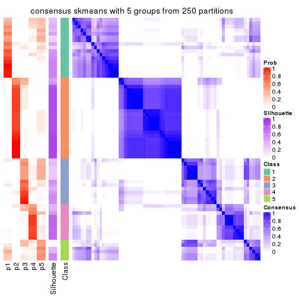
consensus_heatmap(res, k = 6)
Heatmaps for the membership of samples in all partitions to see how consistent they are:
membership_heatmap(res, k = 2)

membership_heatmap(res, k = 3)
membership_heatmap(res, k = 4)
membership_heatmap(res, k = 5)
membership_heatmap(res, k = 6)
As soon as we have had the classes for columns, we can look for signatures which are significantly different between classes which can be candidate marks for certain classes. Following are the heatmaps for signatures.
Signature heatmaps where rows are scaled:
get_signatures(res, k = 2)
get_signatures(res, k = 3)
get_signatures(res, k = 4)
get_signatures(res, k = 5)
get_signatures(res, k = 6)
Signature heatmaps where rows are not scaled:
get_signatures(res, k = 2, scale_rows = FALSE)
get_signatures(res, k = 3, scale_rows = FALSE)
get_signatures(res, k = 4, scale_rows = FALSE)
get_signatures(res, k = 5, scale_rows = FALSE)
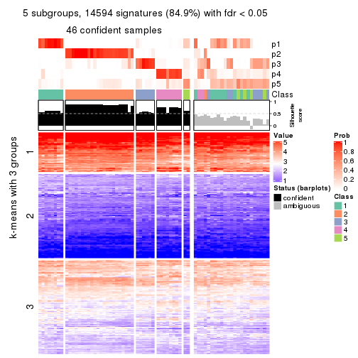
get_signatures(res, k = 6, scale_rows = FALSE)
Compare the overlap of signatures from different k:
compare_signatures(res)
get_signature() returns a data frame invisibly. TO get the list of signatures, the function
call should be assigned to a variable explicitly. In following code, if plot argument is set
to FALSE, no heatmap is plotted while only the differential analysis is performed.
# code only for demonstration
tb = get_signature(res, k = ..., plot = FALSE)
An example of the output of tb is:
#> which_row fdr mean_1 mean_2 scaled_mean_1 scaled_mean_2 km
#> 1 38 0.042760348 8.373488 9.131774 -0.5533452 0.5164555 1
#> 2 40 0.018707592 7.106213 8.469186 -0.6173731 0.5762149 1
#> 3 55 0.019134737 10.221463 11.207825 -0.6159697 0.5749050 1
#> 4 59 0.006059896 5.921854 7.869574 -0.6899429 0.6439467 1
#> 5 60 0.018055526 8.928898 10.211722 -0.6204761 0.5791110 1
#> 6 98 0.009384629 15.714769 14.887706 0.6635654 -0.6193277 2
...
The columns in tb are:
which_row: row indices corresponding to the input matrix.fdr: FDR for the differential test. mean_x: The mean value in group x.scaled_mean_x: The mean value in group x after rows are scaled.km: Row groups if k-means clustering is applied to rows.UMAP plot which shows how samples are separated.
dimension_reduction(res, k = 2, method = "UMAP")
dimension_reduction(res, k = 3, method = "UMAP")
dimension_reduction(res, k = 4, method = "UMAP")

dimension_reduction(res, k = 5, method = "UMAP")
dimension_reduction(res, k = 6, method = "UMAP")
Following heatmap shows how subgroups are split when increasing k:
collect_classes(res)
If matrix rows can be associated to genes, consider to use GO_Enrichment(res,
...) to perform function enrichment for the signature genes.
The object with results only for a single top-value method and a single partition method can be extracted as:
res = res_list["MAD", "pam"]
# you can also extract it by
# res = res_list["MAD:pam"]
A summary of res and all the functions that can be applied to it:
res
#> A 'ConsensusPartition' object with k = 2, 3, 4, 5, 6.
#> On a matrix with 17181 rows and 69 columns.
#> Top rows (1000, 2000, 3000, 4000, 5000) are extracted by 'MAD' method.
#> Subgroups are detected by 'pam' method.
#> Performed in total 1250 partitions by row resampling.
#> Best k for subgroups seems to be 2.
#>
#> Following methods can be applied to this 'ConsensusPartition' object:
#> [1] "cola_report" "collect_classes" "collect_plots"
#> [4] "collect_stats" "colnames" "compare_signatures"
#> [7] "consensus_heatmap" "dimension_reduction" "functional_enrichment"
#> [10] "get_anno_col" "get_anno" "get_classes"
#> [13] "get_consensus" "get_matrix" "get_membership"
#> [16] "get_param" "get_signatures" "get_stats"
#> [19] "is_best_k" "is_stable_k" "membership_heatmap"
#> [22] "ncol" "nrow" "plot_ecdf"
#> [25] "rownames" "select_partition_number" "show"
#> [28] "suggest_best_k" "test_to_known_factors"
collect_plots() function collects all the plots made from res for all k (number of partitions)
into one single page to provide an easy and fast comparison between different k.
collect_plots(res)
The plots are:
k and the heatmap of
predicted classes for each k.k.k.k.All the plots in panels can be made by individual functions and they are plotted later in this section.
select_partition_number() produces several plots showing different
statistics for choosing “optimized” k. There are following statistics:
k;k, the area increased is defined as \(A_k - A_{k-1}\).The detailed explanations of these statistics can be found in the cola vignette.
Generally speaking, lower PAC score, higher mean silhouette score or higher
concordance corresponds to better partition. Rand index and Jaccard index
measure how similar the current partition is compared to partition with k-1.
If they are too similar, we won't accept k is better than k-1.
select_partition_number(res)
The numeric values for all these statistics can be obtained by get_stats().
get_stats(res)
#> k 1-PAC mean_silhouette concordance area_increased Rand Jaccard
#> 2 2 0.939 0.922 0.971 0.4790 0.523 0.523
#> 3 3 0.762 0.804 0.914 0.3247 0.830 0.685
#> 4 4 0.900 0.901 0.949 0.1427 0.821 0.568
#> 5 5 0.824 0.758 0.896 0.0722 0.860 0.559
#> 6 6 0.764 0.633 0.847 0.0652 0.892 0.571
suggest_best_k() suggests the best \(k\) based on these statistics. The rules are as follows:
NA.suggest_best_k(res)
#> [1] 2
Following shows the table of the partitions (You need to click the show/hide
code output link to see it). The membership matrix (columns with name p*)
is inferred by
clue::cl_consensus()
function with the SE method. Basically the value in the membership matrix
represents the probability to belong to a certain group. The finall class
label for an item is determined with the group with highest probability it
belongs to.
In get_classes() function, the entropy is calculated from the membership
matrix and the silhouette score is calculated from the consensus matrix.
cbind(get_classes(res, k = 2), get_membership(res, k = 2))
#> class entropy silhouette p1 p2
#> SRR1747143 1 0.0000 0.970 1.000 0.000
#> SRR1747144 1 0.0000 0.970 1.000 0.000
#> SRR1747145 1 0.0000 0.970 1.000 0.000
#> SRR1747146 1 0.0000 0.970 1.000 0.000
#> SRR1747148 1 0.0000 0.970 1.000 0.000
#> SRR1747147 1 0.0000 0.970 1.000 0.000
#> SRR1747149 1 0.0000 0.970 1.000 0.000
#> SRR1747150 1 0.0000 0.970 1.000 0.000
#> SRR1747151 1 0.0000 0.970 1.000 0.000
#> SRR1747152 1 0.0000 0.970 1.000 0.000
#> SRR1747153 1 0.0000 0.970 1.000 0.000
#> SRR1747154 1 0.0000 0.970 1.000 0.000
#> SRR1747155 2 0.0000 0.964 0.000 1.000
#> SRR1747156 1 0.0000 0.970 1.000 0.000
#> SRR1747157 1 0.0000 0.970 1.000 0.000
#> SRR1747159 1 0.0000 0.970 1.000 0.000
#> SRR1747158 1 0.0376 0.966 0.996 0.004
#> SRR1747160 2 0.0000 0.964 0.000 1.000
#> SRR1747161 1 0.0000 0.970 1.000 0.000
#> SRR1747162 1 0.7219 0.735 0.800 0.200
#> SRR1747163 1 0.0000 0.970 1.000 0.000
#> SRR1747164 1 0.0000 0.970 1.000 0.000
#> SRR1747165 1 0.9552 0.388 0.624 0.376
#> SRR1747167 1 0.0000 0.970 1.000 0.000
#> SRR1747166 1 0.0000 0.970 1.000 0.000
#> SRR1747168 2 0.0000 0.964 0.000 1.000
#> SRR1747169 2 0.0000 0.964 0.000 1.000
#> SRR1747170 2 0.0000 0.964 0.000 1.000
#> SRR1747172 2 0.0000 0.964 0.000 1.000
#> SRR1747171 2 0.0000 0.964 0.000 1.000
#> SRR1747173 2 0.0000 0.964 0.000 1.000
#> SRR1747174 2 0.0000 0.964 0.000 1.000
#> SRR1747175 1 0.0000 0.970 1.000 0.000
#> SRR1747176 2 0.0000 0.964 0.000 1.000
#> SRR1747177 1 0.6887 0.756 0.816 0.184
#> SRR1747178 1 0.0000 0.970 1.000 0.000
#> SRR1747179 1 0.0000 0.970 1.000 0.000
#> SRR1747180 2 0.0000 0.964 0.000 1.000
#> SRR1747181 2 0.9866 0.237 0.432 0.568
#> SRR1747183 1 0.0000 0.970 1.000 0.000
#> SRR1747182 2 0.0000 0.964 0.000 1.000
#> SRR1747184 1 0.0000 0.970 1.000 0.000
#> SRR1747185 1 0.0000 0.970 1.000 0.000
#> SRR1747186 2 0.0000 0.964 0.000 1.000
#> SRR1747187 2 0.0000 0.964 0.000 1.000
#> SRR1747188 2 0.0000 0.964 0.000 1.000
#> SRR1747189 2 0.0000 0.964 0.000 1.000
#> SRR1747191 2 0.0000 0.964 0.000 1.000
#> SRR1747190 2 0.0000 0.964 0.000 1.000
#> SRR1747192 1 0.0000 0.970 1.000 0.000
#> SRR1747193 1 0.0000 0.970 1.000 0.000
#> SRR1747194 1 0.0000 0.970 1.000 0.000
#> SRR1747195 2 0.9710 0.329 0.400 0.600
#> SRR1747197 1 0.0000 0.970 1.000 0.000
#> SRR1747196 1 0.0000 0.970 1.000 0.000
#> SRR1747199 1 0.0000 0.970 1.000 0.000
#> SRR1747198 1 0.0000 0.970 1.000 0.000
#> SRR1747200 2 0.0000 0.964 0.000 1.000
#> SRR1747201 1 0.0000 0.970 1.000 0.000
#> SRR1747202 2 0.0000 0.964 0.000 1.000
#> SRR1747203 2 0.0000 0.964 0.000 1.000
#> SRR1747204 1 0.0000 0.970 1.000 0.000
#> SRR1747205 2 0.0000 0.964 0.000 1.000
#> SRR1747206 1 0.0000 0.970 1.000 0.000
#> SRR1747207 1 0.0000 0.970 1.000 0.000
#> SRR1747208 2 0.0938 0.954 0.012 0.988
#> SRR1747210 1 0.0000 0.970 1.000 0.000
#> SRR1747209 2 0.0000 0.964 0.000 1.000
#> SRR1747211 1 0.9833 0.230 0.576 0.424
cbind(get_classes(res, k = 3), get_membership(res, k = 3))
#> class entropy silhouette p1 p2 p3
#> SRR1747143 1 0.0000 0.8537 1.000 0.000 0.000
#> SRR1747144 3 0.5178 0.6810 0.256 0.000 0.744
#> SRR1747145 1 0.0000 0.8537 1.000 0.000 0.000
#> SRR1747146 1 0.0000 0.8537 1.000 0.000 0.000
#> SRR1747148 1 0.0000 0.8537 1.000 0.000 0.000
#> SRR1747147 1 0.2165 0.8146 0.936 0.000 0.064
#> SRR1747149 3 0.5178 0.6810 0.256 0.000 0.744
#> SRR1747150 1 0.0000 0.8537 1.000 0.000 0.000
#> SRR1747151 1 0.0000 0.8537 1.000 0.000 0.000
#> SRR1747152 3 0.5178 0.6810 0.256 0.000 0.744
#> SRR1747153 1 0.0000 0.8537 1.000 0.000 0.000
#> SRR1747154 1 0.0000 0.8537 1.000 0.000 0.000
#> SRR1747155 2 0.0000 0.9538 0.000 1.000 0.000
#> SRR1747156 1 0.0000 0.8537 1.000 0.000 0.000
#> SRR1747157 1 0.5859 0.3708 0.656 0.000 0.344
#> SRR1747159 1 0.1031 0.8461 0.976 0.000 0.024
#> SRR1747158 1 0.0237 0.8521 0.996 0.004 0.000
#> SRR1747160 2 0.0000 0.9538 0.000 1.000 0.000
#> SRR1747161 1 0.4121 0.7049 0.832 0.000 0.168
#> SRR1747162 1 0.4555 0.6481 0.800 0.200 0.000
#> SRR1747163 1 0.2165 0.8146 0.936 0.000 0.064
#> SRR1747164 1 0.0000 0.8537 1.000 0.000 0.000
#> SRR1747165 1 0.5696 0.6786 0.800 0.136 0.064
#> SRR1747167 1 0.0000 0.8537 1.000 0.000 0.000
#> SRR1747166 1 0.0000 0.8537 1.000 0.000 0.000
#> SRR1747168 2 0.0000 0.9538 0.000 1.000 0.000
#> SRR1747169 2 0.0000 0.9538 0.000 1.000 0.000
#> SRR1747170 2 0.0000 0.9538 0.000 1.000 0.000
#> SRR1747172 2 0.0000 0.9538 0.000 1.000 0.000
#> SRR1747171 2 0.0000 0.9538 0.000 1.000 0.000
#> SRR1747173 2 0.0000 0.9538 0.000 1.000 0.000
#> SRR1747174 2 0.0000 0.9538 0.000 1.000 0.000
#> SRR1747175 1 0.2165 0.8146 0.936 0.000 0.064
#> SRR1747176 2 0.0000 0.9538 0.000 1.000 0.000
#> SRR1747177 1 0.8994 0.3583 0.556 0.184 0.260
#> SRR1747178 3 0.4121 0.7322 0.168 0.000 0.832
#> SRR1747179 1 0.5016 0.6744 0.760 0.000 0.240
#> SRR1747180 2 0.0000 0.9538 0.000 1.000 0.000
#> SRR1747181 3 0.0892 0.8286 0.020 0.000 0.980
#> SRR1747183 1 0.1289 0.8427 0.968 0.000 0.032
#> SRR1747182 2 0.0000 0.9538 0.000 1.000 0.000
#> SRR1747184 3 0.0892 0.8260 0.020 0.000 0.980
#> SRR1747185 1 0.0000 0.8537 1.000 0.000 0.000
#> SRR1747186 2 0.0000 0.9538 0.000 1.000 0.000
#> SRR1747187 2 0.0000 0.9538 0.000 1.000 0.000
#> SRR1747188 2 0.0000 0.9538 0.000 1.000 0.000
#> SRR1747189 2 0.0000 0.9538 0.000 1.000 0.000
#> SRR1747191 2 0.0000 0.9538 0.000 1.000 0.000
#> SRR1747190 2 0.0000 0.9538 0.000 1.000 0.000
#> SRR1747192 1 0.0237 0.8527 0.996 0.004 0.000
#> SRR1747193 3 0.2165 0.8117 0.064 0.000 0.936
#> SRR1747194 3 0.0592 0.8288 0.012 0.000 0.988
#> SRR1747195 2 0.8925 0.2664 0.180 0.564 0.256
#> SRR1747197 1 0.6274 0.2553 0.544 0.000 0.456
#> SRR1747196 1 0.5178 0.6608 0.744 0.000 0.256
#> SRR1747199 1 0.5178 0.6608 0.744 0.000 0.256
#> SRR1747198 1 0.5178 0.6608 0.744 0.000 0.256
#> SRR1747200 2 0.0000 0.9538 0.000 1.000 0.000
#> SRR1747201 1 0.5178 0.6608 0.744 0.000 0.256
#> SRR1747202 2 0.0000 0.9538 0.000 1.000 0.000
#> SRR1747203 2 0.0000 0.9538 0.000 1.000 0.000
#> SRR1747204 1 0.2711 0.8094 0.912 0.000 0.088
#> SRR1747205 2 0.0000 0.9538 0.000 1.000 0.000
#> SRR1747206 3 0.0000 0.8252 0.000 0.000 1.000
#> SRR1747207 3 0.4121 0.7322 0.168 0.000 0.832
#> SRR1747208 2 0.0475 0.9457 0.004 0.992 0.004
#> SRR1747210 1 0.5178 0.6608 0.744 0.000 0.256
#> SRR1747209 2 0.0000 0.9538 0.000 1.000 0.000
#> SRR1747211 2 0.9815 -0.0549 0.324 0.420 0.256
cbind(get_classes(res, k = 4), get_membership(res, k = 4))
#> class entropy silhouette p1 p2 p3 p4
#> SRR1747143 3 0.0000 0.929 0.000 0.000 1.000 0.000
#> SRR1747144 4 0.0000 0.757 0.000 0.000 0.000 1.000
#> SRR1747145 3 0.0000 0.929 0.000 0.000 1.000 0.000
#> SRR1747146 3 0.0000 0.929 0.000 0.000 1.000 0.000
#> SRR1747148 3 0.0000 0.929 0.000 0.000 1.000 0.000
#> SRR1747147 4 0.4817 0.591 0.000 0.000 0.388 0.612
#> SRR1747149 4 0.0000 0.757 0.000 0.000 0.000 1.000
#> SRR1747150 3 0.0000 0.929 0.000 0.000 1.000 0.000
#> SRR1747151 3 0.3311 0.716 0.000 0.000 0.828 0.172
#> SRR1747152 4 0.0000 0.757 0.000 0.000 0.000 1.000
#> SRR1747153 3 0.0000 0.929 0.000 0.000 1.000 0.000
#> SRR1747154 3 0.0000 0.929 0.000 0.000 1.000 0.000
#> SRR1747155 2 0.0000 1.000 0.000 1.000 0.000 0.000
#> SRR1747156 3 0.0000 0.929 0.000 0.000 1.000 0.000
#> SRR1747157 4 0.4103 0.787 0.000 0.000 0.256 0.744
#> SRR1747159 3 0.0000 0.929 0.000 0.000 1.000 0.000
#> SRR1747158 3 0.0188 0.925 0.000 0.004 0.996 0.000
#> SRR1747160 2 0.0000 1.000 0.000 1.000 0.000 0.000
#> SRR1747161 4 0.4164 0.785 0.000 0.000 0.264 0.736
#> SRR1747162 3 0.3610 0.664 0.000 0.200 0.800 0.000
#> SRR1747163 4 0.4164 0.785 0.000 0.000 0.264 0.736
#> SRR1747164 3 0.0000 0.929 0.000 0.000 1.000 0.000
#> SRR1747165 4 0.4164 0.785 0.000 0.000 0.264 0.736
#> SRR1747167 3 0.0000 0.929 0.000 0.000 1.000 0.000
#> SRR1747166 3 0.0000 0.929 0.000 0.000 1.000 0.000
#> SRR1747168 2 0.0000 1.000 0.000 1.000 0.000 0.000
#> SRR1747169 2 0.0000 1.000 0.000 1.000 0.000 0.000
#> SRR1747170 2 0.0000 1.000 0.000 1.000 0.000 0.000
#> SRR1747172 2 0.0000 1.000 0.000 1.000 0.000 0.000
#> SRR1747171 2 0.0000 1.000 0.000 1.000 0.000 0.000
#> SRR1747173 2 0.0000 1.000 0.000 1.000 0.000 0.000
#> SRR1747174 2 0.0000 1.000 0.000 1.000 0.000 0.000
#> SRR1747175 4 0.4164 0.785 0.000 0.000 0.264 0.736
#> SRR1747176 2 0.0000 1.000 0.000 1.000 0.000 0.000
#> SRR1747177 3 0.3583 0.689 0.000 0.180 0.816 0.004
#> SRR1747178 1 0.1867 0.906 0.928 0.000 0.000 0.072
#> SRR1747179 3 0.4500 0.538 0.316 0.000 0.684 0.000
#> SRR1747180 2 0.0000 1.000 0.000 1.000 0.000 0.000
#> SRR1747181 1 0.4164 0.741 0.736 0.000 0.000 0.264
#> SRR1747183 3 0.3764 0.677 0.216 0.000 0.784 0.000
#> SRR1747182 2 0.0000 1.000 0.000 1.000 0.000 0.000
#> SRR1747184 4 0.0000 0.757 0.000 0.000 0.000 1.000
#> SRR1747185 3 0.0000 0.929 0.000 0.000 1.000 0.000
#> SRR1747186 2 0.0000 1.000 0.000 1.000 0.000 0.000
#> SRR1747187 2 0.0000 1.000 0.000 1.000 0.000 0.000
#> SRR1747188 2 0.0000 1.000 0.000 1.000 0.000 0.000
#> SRR1747189 2 0.0000 1.000 0.000 1.000 0.000 0.000
#> SRR1747191 2 0.0000 1.000 0.000 1.000 0.000 0.000
#> SRR1747190 2 0.0000 1.000 0.000 1.000 0.000 0.000
#> SRR1747192 3 0.0000 0.929 0.000 0.000 1.000 0.000
#> SRR1747193 1 0.0000 0.948 1.000 0.000 0.000 0.000
#> SRR1747194 1 0.4164 0.741 0.736 0.000 0.000 0.264
#> SRR1747195 1 0.0000 0.948 1.000 0.000 0.000 0.000
#> SRR1747197 1 0.0336 0.941 0.992 0.000 0.008 0.000
#> SRR1747196 3 0.0000 0.929 0.000 0.000 1.000 0.000
#> SRR1747199 1 0.0000 0.948 1.000 0.000 0.000 0.000
#> SRR1747198 1 0.0000 0.948 1.000 0.000 0.000 0.000
#> SRR1747200 2 0.0000 1.000 0.000 1.000 0.000 0.000
#> SRR1747201 1 0.0000 0.948 1.000 0.000 0.000 0.000
#> SRR1747202 2 0.0000 1.000 0.000 1.000 0.000 0.000
#> SRR1747203 2 0.0000 1.000 0.000 1.000 0.000 0.000
#> SRR1747204 3 0.0000 0.929 0.000 0.000 1.000 0.000
#> SRR1747205 2 0.0000 1.000 0.000 1.000 0.000 0.000
#> SRR1747206 4 0.2149 0.679 0.088 0.000 0.000 0.912
#> SRR1747207 1 0.0000 0.948 1.000 0.000 0.000 0.000
#> SRR1747208 2 0.0336 0.991 0.008 0.992 0.000 0.000
#> SRR1747210 1 0.0000 0.948 1.000 0.000 0.000 0.000
#> SRR1747209 2 0.0000 1.000 0.000 1.000 0.000 0.000
#> SRR1747211 1 0.0000 0.948 1.000 0.000 0.000 0.000
cbind(get_classes(res, k = 5), get_membership(res, k = 5))
#> class entropy silhouette p1 p2 p3 p4 p5
#> SRR1747143 3 0.0404 0.869 0.000 0.000 0.988 0.000 0.012
#> SRR1747144 4 0.0000 0.771 0.000 0.000 0.000 1.000 0.000
#> SRR1747145 3 0.0703 0.871 0.000 0.000 0.976 0.000 0.024
#> SRR1747146 3 0.0703 0.871 0.000 0.000 0.976 0.000 0.024
#> SRR1747148 3 0.0703 0.871 0.000 0.000 0.976 0.000 0.024
#> SRR1747147 3 0.4639 0.513 0.000 0.000 0.632 0.344 0.024
#> SRR1747149 4 0.0000 0.771 0.000 0.000 0.000 1.000 0.000
#> SRR1747150 3 0.0404 0.869 0.000 0.000 0.988 0.000 0.012
#> SRR1747151 3 0.1106 0.860 0.000 0.000 0.964 0.024 0.012
#> SRR1747152 4 0.0000 0.771 0.000 0.000 0.000 1.000 0.000
#> SRR1747153 3 0.0703 0.871 0.000 0.000 0.976 0.000 0.024
#> SRR1747154 3 0.0703 0.871 0.000 0.000 0.976 0.000 0.024
#> SRR1747155 2 0.4824 0.269 0.000 0.596 0.376 0.000 0.028
#> SRR1747156 3 0.0703 0.871 0.000 0.000 0.976 0.000 0.024
#> SRR1747157 4 0.4505 0.128 0.000 0.000 0.384 0.604 0.012
#> SRR1747159 3 0.0693 0.867 0.008 0.000 0.980 0.000 0.012
#> SRR1747158 3 0.0955 0.870 0.000 0.004 0.968 0.000 0.028
#> SRR1747160 2 0.2674 0.823 0.000 0.868 0.012 0.000 0.120
#> SRR1747161 3 0.4517 0.425 0.000 0.000 0.600 0.388 0.012
#> SRR1747162 3 0.4159 0.700 0.000 0.156 0.776 0.000 0.068
#> SRR1747163 3 0.4402 0.492 0.000 0.000 0.636 0.352 0.012
#> SRR1747164 3 0.0703 0.871 0.000 0.000 0.976 0.000 0.024
#> SRR1747165 5 0.5467 0.350 0.000 0.000 0.100 0.276 0.624
#> SRR1747167 3 0.0404 0.869 0.000 0.000 0.988 0.000 0.012
#> SRR1747166 3 0.0404 0.869 0.000 0.000 0.988 0.000 0.012
#> SRR1747168 5 0.1043 0.771 0.000 0.040 0.000 0.000 0.960
#> SRR1747169 2 0.0000 0.901 0.000 1.000 0.000 0.000 0.000
#> SRR1747170 5 0.1043 0.771 0.000 0.040 0.000 0.000 0.960
#> SRR1747172 5 0.1043 0.771 0.000 0.040 0.000 0.000 0.960
#> SRR1747171 2 0.1965 0.842 0.000 0.904 0.000 0.000 0.096
#> SRR1747173 5 0.1043 0.771 0.000 0.040 0.000 0.000 0.960
#> SRR1747174 5 0.4291 0.113 0.000 0.464 0.000 0.000 0.536
#> SRR1747175 3 0.4894 0.460 0.000 0.000 0.612 0.352 0.036
#> SRR1747176 2 0.0000 0.901 0.000 1.000 0.000 0.000 0.000
#> SRR1747177 5 0.2905 0.710 0.000 0.036 0.096 0.000 0.868
#> SRR1747178 1 0.2233 0.874 0.892 0.000 0.004 0.104 0.000
#> SRR1747179 3 0.4800 0.498 0.296 0.024 0.668 0.000 0.012
#> SRR1747180 2 0.0000 0.901 0.000 1.000 0.000 0.000 0.000
#> SRR1747181 4 0.4030 0.363 0.352 0.000 0.000 0.648 0.000
#> SRR1747183 3 0.3659 0.676 0.220 0.000 0.768 0.000 0.012
#> SRR1747182 5 0.3480 0.600 0.000 0.248 0.000 0.000 0.752
#> SRR1747184 4 0.0000 0.771 0.000 0.000 0.000 1.000 0.000
#> SRR1747185 3 0.0404 0.869 0.000 0.000 0.988 0.000 0.012
#> SRR1747186 2 0.1965 0.842 0.000 0.904 0.000 0.000 0.096
#> SRR1747187 2 0.1908 0.842 0.000 0.908 0.000 0.000 0.092
#> SRR1747188 2 0.0000 0.901 0.000 1.000 0.000 0.000 0.000
#> SRR1747189 5 0.1043 0.771 0.000 0.040 0.000 0.000 0.960
#> SRR1747191 2 0.0000 0.901 0.000 1.000 0.000 0.000 0.000
#> SRR1747190 2 0.0000 0.901 0.000 1.000 0.000 0.000 0.000
#> SRR1747192 5 0.4268 0.195 0.000 0.000 0.444 0.000 0.556
#> SRR1747193 1 0.0000 0.976 1.000 0.000 0.000 0.000 0.000
#> SRR1747194 4 0.4235 0.228 0.424 0.000 0.000 0.576 0.000
#> SRR1747195 1 0.0162 0.974 0.996 0.000 0.004 0.000 0.000
#> SRR1747197 1 0.1216 0.951 0.960 0.000 0.020 0.020 0.000
#> SRR1747196 3 0.1341 0.850 0.056 0.000 0.944 0.000 0.000
#> SRR1747199 1 0.0000 0.976 1.000 0.000 0.000 0.000 0.000
#> SRR1747198 1 0.0000 0.976 1.000 0.000 0.000 0.000 0.000
#> SRR1747200 2 0.0000 0.901 0.000 1.000 0.000 0.000 0.000
#> SRR1747201 1 0.0000 0.976 1.000 0.000 0.000 0.000 0.000
#> SRR1747202 2 0.0000 0.901 0.000 1.000 0.000 0.000 0.000
#> SRR1747203 2 0.0162 0.899 0.000 0.996 0.000 0.000 0.004
#> SRR1747204 3 0.0992 0.869 0.008 0.000 0.968 0.000 0.024
#> SRR1747205 2 0.0000 0.901 0.000 1.000 0.000 0.000 0.000
#> SRR1747206 4 0.0000 0.771 0.000 0.000 0.000 1.000 0.000
#> SRR1747207 1 0.0000 0.976 1.000 0.000 0.000 0.000 0.000
#> SRR1747208 2 0.4235 0.253 0.424 0.576 0.000 0.000 0.000
#> SRR1747210 1 0.0963 0.947 0.964 0.000 0.036 0.000 0.000
#> SRR1747209 2 0.0000 0.901 0.000 1.000 0.000 0.000 0.000
#> SRR1747211 1 0.0000 0.976 1.000 0.000 0.000 0.000 0.000
cbind(get_classes(res, k = 6), get_membership(res, k = 6))
#> class entropy silhouette p1 p2 p3 p4 p5 p6
#> SRR1747143 3 0.0363 0.6784 0.000 0.000 0.988 0.000 0.000 0.012
#> SRR1747144 4 0.0000 0.9628 0.000 0.000 0.000 1.000 0.000 0.000
#> SRR1747145 3 0.3860 -0.0265 0.000 0.000 0.528 0.000 0.000 0.472
#> SRR1747146 6 0.2300 0.5762 0.000 0.000 0.144 0.000 0.000 0.856
#> SRR1747148 6 0.2300 0.5762 0.000 0.000 0.144 0.000 0.000 0.856
#> SRR1747147 3 0.5419 0.0535 0.000 0.000 0.460 0.116 0.000 0.424
#> SRR1747149 4 0.0000 0.9628 0.000 0.000 0.000 1.000 0.000 0.000
#> SRR1747150 3 0.0363 0.6784 0.000 0.000 0.988 0.000 0.000 0.012
#> SRR1747151 3 0.0363 0.6784 0.000 0.000 0.988 0.000 0.000 0.012
#> SRR1747152 4 0.0363 0.9572 0.000 0.000 0.012 0.988 0.000 0.000
#> SRR1747153 6 0.2300 0.5762 0.000 0.000 0.144 0.000 0.000 0.856
#> SRR1747154 3 0.3860 -0.0265 0.000 0.000 0.528 0.000 0.000 0.472
#> SRR1747155 6 0.3854 0.0441 0.000 0.464 0.000 0.000 0.000 0.536
#> SRR1747156 6 0.2883 0.5218 0.000 0.000 0.212 0.000 0.000 0.788
#> SRR1747157 3 0.3717 0.3019 0.000 0.000 0.616 0.384 0.000 0.000
#> SRR1747159 3 0.3854 0.0829 0.000 0.000 0.536 0.000 0.000 0.464
#> SRR1747158 6 0.3843 -0.0818 0.000 0.000 0.452 0.000 0.000 0.548
#> SRR1747160 6 0.4175 0.0194 0.000 0.464 0.000 0.000 0.012 0.524
#> SRR1747161 3 0.2300 0.6226 0.000 0.000 0.856 0.144 0.000 0.000
#> SRR1747162 6 0.4996 -0.0266 0.000 0.044 0.428 0.000 0.012 0.516
#> SRR1747163 3 0.2003 0.6376 0.000 0.000 0.884 0.116 0.000 0.000
#> SRR1747164 3 0.3765 0.0923 0.000 0.000 0.596 0.000 0.000 0.404
#> SRR1747165 5 0.4061 0.4214 0.000 0.000 0.012 0.008 0.664 0.316
#> SRR1747167 3 0.0363 0.6784 0.000 0.000 0.988 0.000 0.000 0.012
#> SRR1747166 3 0.0363 0.6784 0.000 0.000 0.988 0.000 0.000 0.012
#> SRR1747168 5 0.0000 0.7973 0.000 0.000 0.000 0.000 1.000 0.000
#> SRR1747169 2 0.0000 0.9424 0.000 1.000 0.000 0.000 0.000 0.000
#> SRR1747170 5 0.0000 0.7973 0.000 0.000 0.000 0.000 1.000 0.000
#> SRR1747172 5 0.0000 0.7973 0.000 0.000 0.000 0.000 1.000 0.000
#> SRR1747171 2 0.2653 0.8328 0.000 0.844 0.000 0.000 0.012 0.144
#> SRR1747173 5 0.0000 0.7973 0.000 0.000 0.000 0.000 1.000 0.000
#> SRR1747174 5 0.3756 0.3309 0.000 0.400 0.000 0.000 0.600 0.000
#> SRR1747175 3 0.3745 0.5979 0.000 0.000 0.784 0.116 0.100 0.000
#> SRR1747176 2 0.0000 0.9424 0.000 1.000 0.000 0.000 0.000 0.000
#> SRR1747177 5 0.0363 0.7926 0.000 0.000 0.000 0.000 0.988 0.012
#> SRR1747178 1 0.3298 0.6119 0.756 0.000 0.008 0.236 0.000 0.000
#> SRR1747179 5 0.6777 0.2556 0.292 0.000 0.164 0.000 0.464 0.080
#> SRR1747180 2 0.0000 0.9424 0.000 1.000 0.000 0.000 0.000 0.000
#> SRR1747181 4 0.2135 0.8037 0.128 0.000 0.000 0.872 0.000 0.000
#> SRR1747183 3 0.2793 0.5542 0.200 0.000 0.800 0.000 0.000 0.000
#> SRR1747182 5 0.3309 0.5796 0.000 0.280 0.000 0.000 0.720 0.000
#> SRR1747184 4 0.0146 0.9617 0.000 0.000 0.004 0.996 0.000 0.000
#> SRR1747185 3 0.0363 0.6784 0.000 0.000 0.988 0.000 0.000 0.012
#> SRR1747186 2 0.2653 0.8328 0.000 0.844 0.000 0.000 0.012 0.144
#> SRR1747187 2 0.0363 0.9345 0.000 0.988 0.000 0.000 0.012 0.000
#> SRR1747188 2 0.0000 0.9424 0.000 1.000 0.000 0.000 0.000 0.000
#> SRR1747189 5 0.0000 0.7973 0.000 0.000 0.000 0.000 1.000 0.000
#> SRR1747191 2 0.0000 0.9424 0.000 1.000 0.000 0.000 0.000 0.000
#> SRR1747190 2 0.0000 0.9424 0.000 1.000 0.000 0.000 0.000 0.000
#> SRR1747192 5 0.2653 0.6845 0.000 0.000 0.144 0.000 0.844 0.012
#> SRR1747193 1 0.0000 0.8106 1.000 0.000 0.000 0.000 0.000 0.000
#> SRR1747194 1 0.3464 0.4568 0.688 0.000 0.000 0.312 0.000 0.000
#> SRR1747195 1 0.0146 0.8087 0.996 0.000 0.004 0.000 0.000 0.000
#> SRR1747197 1 0.5217 0.2993 0.472 0.000 0.008 0.068 0.000 0.452
#> SRR1747196 1 0.5320 0.2100 0.572 0.000 0.140 0.000 0.000 0.288
#> SRR1747199 1 0.0000 0.8106 1.000 0.000 0.000 0.000 0.000 0.000
#> SRR1747198 1 0.0000 0.8106 1.000 0.000 0.000 0.000 0.000 0.000
#> SRR1747200 2 0.0000 0.9424 0.000 1.000 0.000 0.000 0.000 0.000
#> SRR1747201 1 0.0000 0.8106 1.000 0.000 0.000 0.000 0.000 0.000
#> SRR1747202 2 0.0000 0.9424 0.000 1.000 0.000 0.000 0.000 0.000
#> SRR1747203 2 0.2003 0.8636 0.000 0.884 0.000 0.000 0.000 0.116
#> SRR1747204 6 0.2300 0.5762 0.000 0.000 0.144 0.000 0.000 0.856
#> SRR1747205 2 0.0000 0.9424 0.000 1.000 0.000 0.000 0.000 0.000
#> SRR1747206 4 0.0000 0.9628 0.000 0.000 0.000 1.000 0.000 0.000
#> SRR1747207 1 0.0000 0.8106 1.000 0.000 0.000 0.000 0.000 0.000
#> SRR1747208 2 0.3266 0.6022 0.272 0.728 0.000 0.000 0.000 0.000
#> SRR1747210 1 0.3950 0.5257 0.696 0.000 0.276 0.000 0.000 0.028
#> SRR1747209 2 0.0000 0.9424 0.000 1.000 0.000 0.000 0.000 0.000
#> SRR1747211 1 0.0000 0.8106 1.000 0.000 0.000 0.000 0.000 0.000
Heatmaps for the consensus matrix. It visualizes the probability of two samples to be in a same group.
consensus_heatmap(res, k = 2)
consensus_heatmap(res, k = 3)
consensus_heatmap(res, k = 4)
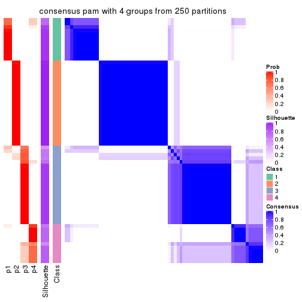
consensus_heatmap(res, k = 5)
consensus_heatmap(res, k = 6)
Heatmaps for the membership of samples in all partitions to see how consistent they are:
membership_heatmap(res, k = 2)
membership_heatmap(res, k = 3)
membership_heatmap(res, k = 4)
membership_heatmap(res, k = 5)
membership_heatmap(res, k = 6)
As soon as we have had the classes for columns, we can look for signatures which are significantly different between classes which can be candidate marks for certain classes. Following are the heatmaps for signatures.
Signature heatmaps where rows are scaled:
get_signatures(res, k = 2)
get_signatures(res, k = 3)

get_signatures(res, k = 4)
get_signatures(res, k = 5)
get_signatures(res, k = 6)
Signature heatmaps where rows are not scaled:
get_signatures(res, k = 2, scale_rows = FALSE)
get_signatures(res, k = 3, scale_rows = FALSE)
get_signatures(res, k = 4, scale_rows = FALSE)
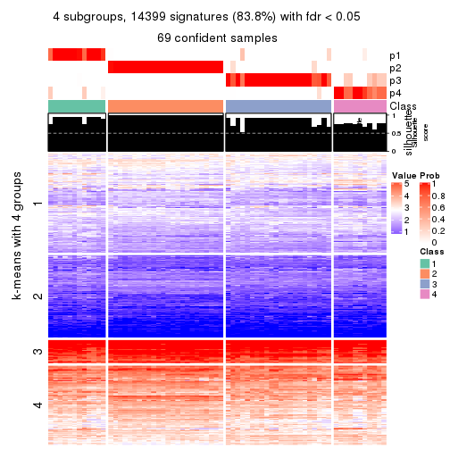
get_signatures(res, k = 5, scale_rows = FALSE)
get_signatures(res, k = 6, scale_rows = FALSE)
Compare the overlap of signatures from different k:
compare_signatures(res)
get_signature() returns a data frame invisibly. TO get the list of signatures, the function
call should be assigned to a variable explicitly. In following code, if plot argument is set
to FALSE, no heatmap is plotted while only the differential analysis is performed.
# code only for demonstration
tb = get_signature(res, k = ..., plot = FALSE)
An example of the output of tb is:
#> which_row fdr mean_1 mean_2 scaled_mean_1 scaled_mean_2 km
#> 1 38 0.042760348 8.373488 9.131774 -0.5533452 0.5164555 1
#> 2 40 0.018707592 7.106213 8.469186 -0.6173731 0.5762149 1
#> 3 55 0.019134737 10.221463 11.207825 -0.6159697 0.5749050 1
#> 4 59 0.006059896 5.921854 7.869574 -0.6899429 0.6439467 1
#> 5 60 0.018055526 8.928898 10.211722 -0.6204761 0.5791110 1
#> 6 98 0.009384629 15.714769 14.887706 0.6635654 -0.6193277 2
...
The columns in tb are:
which_row: row indices corresponding to the input matrix.fdr: FDR for the differential test. mean_x: The mean value in group x.scaled_mean_x: The mean value in group x after rows are scaled.km: Row groups if k-means clustering is applied to rows.UMAP plot which shows how samples are separated.
dimension_reduction(res, k = 2, method = "UMAP")
dimension_reduction(res, k = 3, method = "UMAP")
dimension_reduction(res, k = 4, method = "UMAP")
dimension_reduction(res, k = 5, method = "UMAP")
dimension_reduction(res, k = 6, method = "UMAP")
Following heatmap shows how subgroups are split when increasing k:
collect_classes(res)
If matrix rows can be associated to genes, consider to use GO_Enrichment(res,
...) to perform function enrichment for the signature genes.
The object with results only for a single top-value method and a single partition method can be extracted as:
res = res_list["MAD", "mclust"]
# you can also extract it by
# res = res_list["MAD:mclust"]
A summary of res and all the functions that can be applied to it:
res
#> A 'ConsensusPartition' object with k = 2, 3, 4, 5, 6.
#> On a matrix with 17181 rows and 69 columns.
#> Top rows (1000, 2000, 3000, 4000, 5000) are extracted by 'MAD' method.
#> Subgroups are detected by 'mclust' method.
#> Performed in total 1250 partitions by row resampling.
#> Best k for subgroups seems to be 2.
#>
#> Following methods can be applied to this 'ConsensusPartition' object:
#> [1] "cola_report" "collect_classes" "collect_plots"
#> [4] "collect_stats" "colnames" "compare_signatures"
#> [7] "consensus_heatmap" "dimension_reduction" "functional_enrichment"
#> [10] "get_anno_col" "get_anno" "get_classes"
#> [13] "get_consensus" "get_matrix" "get_membership"
#> [16] "get_param" "get_signatures" "get_stats"
#> [19] "is_best_k" "is_stable_k" "membership_heatmap"
#> [22] "ncol" "nrow" "plot_ecdf"
#> [25] "rownames" "select_partition_number" "show"
#> [28] "suggest_best_k" "test_to_known_factors"
collect_plots() function collects all the plots made from res for all k (number of partitions)
into one single page to provide an easy and fast comparison between different k.
collect_plots(res)
The plots are:
k and the heatmap of
predicted classes for each k.k.k.k.All the plots in panels can be made by individual functions and they are plotted later in this section.
select_partition_number() produces several plots showing different
statistics for choosing “optimized” k. There are following statistics:
k;k, the area increased is defined as \(A_k - A_{k-1}\).The detailed explanations of these statistics can be found in the cola vignette.
Generally speaking, lower PAC score, higher mean silhouette score or higher
concordance corresponds to better partition. Rand index and Jaccard index
measure how similar the current partition is compared to partition with k-1.
If they are too similar, we won't accept k is better than k-1.
select_partition_number(res)
The numeric values for all these statistics can be obtained by get_stats().
get_stats(res)
#> k 1-PAC mean_silhouette concordance area_increased Rand Jaccard
#> 2 2 0.997 0.942 0.977 0.4380 0.559 0.559
#> 3 3 0.663 0.830 0.891 0.4518 0.766 0.589
#> 4 4 0.820 0.879 0.923 0.1118 0.824 0.566
#> 5 5 0.693 0.822 0.861 0.0373 1.000 1.000
#> 6 6 0.668 0.634 0.784 0.0587 0.902 0.684
suggest_best_k() suggests the best \(k\) based on these statistics. The rules are as follows:
NA.suggest_best_k(res)
#> [1] 2
Following shows the table of the partitions (You need to click the show/hide
code output link to see it). The membership matrix (columns with name p*)
is inferred by
clue::cl_consensus()
function with the SE method. Basically the value in the membership matrix
represents the probability to belong to a certain group. The finall class
label for an item is determined with the group with highest probability it
belongs to.
In get_classes() function, the entropy is calculated from the membership
matrix and the silhouette score is calculated from the consensus matrix.
cbind(get_classes(res, k = 2), get_membership(res, k = 2))
#> class entropy silhouette p1 p2
#> SRR1747143 1 0.0000 0.983 1.000 0.000
#> SRR1747144 1 0.0000 0.983 1.000 0.000
#> SRR1747145 1 0.0000 0.983 1.000 0.000
#> SRR1747146 1 0.0000 0.983 1.000 0.000
#> SRR1747148 1 0.0000 0.983 1.000 0.000
#> SRR1747147 1 0.0000 0.983 1.000 0.000
#> SRR1747149 1 0.0000 0.983 1.000 0.000
#> SRR1747150 1 0.0000 0.983 1.000 0.000
#> SRR1747151 1 0.0000 0.983 1.000 0.000
#> SRR1747152 1 0.0000 0.983 1.000 0.000
#> SRR1747153 1 0.0000 0.983 1.000 0.000
#> SRR1747154 1 0.0000 0.983 1.000 0.000
#> SRR1747155 1 0.9909 0.146 0.556 0.444
#> SRR1747156 1 0.0000 0.983 1.000 0.000
#> SRR1747157 1 0.0000 0.983 1.000 0.000
#> SRR1747159 1 0.0000 0.983 1.000 0.000
#> SRR1747158 1 0.0000 0.983 1.000 0.000
#> SRR1747160 2 0.9580 0.409 0.380 0.620
#> SRR1747161 1 0.0000 0.983 1.000 0.000
#> SRR1747162 1 0.5519 0.840 0.872 0.128
#> SRR1747163 1 0.0000 0.983 1.000 0.000
#> SRR1747164 1 0.0000 0.983 1.000 0.000
#> SRR1747165 1 0.3431 0.920 0.936 0.064
#> SRR1747167 1 0.0000 0.983 1.000 0.000
#> SRR1747166 1 0.0000 0.983 1.000 0.000
#> SRR1747168 2 0.0000 0.956 0.000 1.000
#> SRR1747169 2 0.0000 0.956 0.000 1.000
#> SRR1747170 2 0.0000 0.956 0.000 1.000
#> SRR1747172 2 0.0000 0.956 0.000 1.000
#> SRR1747171 2 0.3879 0.898 0.076 0.924
#> SRR1747173 2 0.0000 0.956 0.000 1.000
#> SRR1747174 2 0.0000 0.956 0.000 1.000
#> SRR1747175 1 0.0000 0.983 1.000 0.000
#> SRR1747176 2 0.0000 0.956 0.000 1.000
#> SRR1747177 1 0.0000 0.983 1.000 0.000
#> SRR1747178 1 0.0000 0.983 1.000 0.000
#> SRR1747179 1 0.0000 0.983 1.000 0.000
#> SRR1747180 2 0.0000 0.956 0.000 1.000
#> SRR1747181 1 0.0000 0.983 1.000 0.000
#> SRR1747183 1 0.0000 0.983 1.000 0.000
#> SRR1747182 2 0.0672 0.952 0.008 0.992
#> SRR1747184 1 0.0000 0.983 1.000 0.000
#> SRR1747185 1 0.0000 0.983 1.000 0.000
#> SRR1747186 2 0.3879 0.898 0.076 0.924
#> SRR1747187 2 0.0000 0.956 0.000 1.000
#> SRR1747188 2 0.0000 0.956 0.000 1.000
#> SRR1747189 2 0.0000 0.956 0.000 1.000
#> SRR1747191 2 0.0000 0.956 0.000 1.000
#> SRR1747190 2 0.0000 0.956 0.000 1.000
#> SRR1747192 1 0.0000 0.983 1.000 0.000
#> SRR1747193 1 0.0000 0.983 1.000 0.000
#> SRR1747194 1 0.0000 0.983 1.000 0.000
#> SRR1747195 1 0.0000 0.983 1.000 0.000
#> SRR1747197 1 0.0000 0.983 1.000 0.000
#> SRR1747196 1 0.0000 0.983 1.000 0.000
#> SRR1747199 1 0.0000 0.983 1.000 0.000
#> SRR1747198 1 0.0000 0.983 1.000 0.000
#> SRR1747200 2 0.0000 0.956 0.000 1.000
#> SRR1747201 1 0.0000 0.983 1.000 0.000
#> SRR1747202 2 0.1414 0.944 0.020 0.980
#> SRR1747203 2 0.9129 0.530 0.328 0.672
#> SRR1747204 1 0.0000 0.983 1.000 0.000
#> SRR1747205 2 0.0000 0.956 0.000 1.000
#> SRR1747206 1 0.0000 0.983 1.000 0.000
#> SRR1747207 1 0.0000 0.983 1.000 0.000
#> SRR1747208 1 0.4562 0.883 0.904 0.096
#> SRR1747210 1 0.0000 0.983 1.000 0.000
#> SRR1747209 2 0.0000 0.956 0.000 1.000
#> SRR1747211 1 0.0000 0.983 1.000 0.000
cbind(get_classes(res, k = 3), get_membership(res, k = 3))
#> class entropy silhouette p1 p2 p3
#> SRR1747143 3 0.6302 0.389 0.480 0.000 0.520
#> SRR1747144 1 0.3816 0.829 0.852 0.000 0.148
#> SRR1747145 3 0.3879 0.809 0.152 0.000 0.848
#> SRR1747146 3 0.3941 0.810 0.156 0.000 0.844
#> SRR1747148 3 0.6154 0.645 0.408 0.000 0.592
#> SRR1747147 3 0.8134 0.669 0.328 0.088 0.584
#> SRR1747149 1 0.3816 0.829 0.852 0.000 0.148
#> SRR1747150 3 0.4796 0.808 0.220 0.000 0.780
#> SRR1747151 3 0.5905 0.725 0.352 0.000 0.648
#> SRR1747152 1 0.3619 0.839 0.864 0.000 0.136
#> SRR1747153 3 0.6140 0.652 0.404 0.000 0.596
#> SRR1747154 3 0.3879 0.809 0.152 0.000 0.848
#> SRR1747155 2 0.6565 0.430 0.008 0.576 0.416
#> SRR1747156 3 0.3879 0.809 0.152 0.000 0.848
#> SRR1747157 1 0.3412 0.849 0.876 0.000 0.124
#> SRR1747159 1 0.0237 0.928 0.996 0.000 0.004
#> SRR1747158 3 0.5010 0.738 0.076 0.084 0.840
#> SRR1747160 2 0.6345 0.473 0.004 0.596 0.400
#> SRR1747161 1 0.3412 0.849 0.876 0.000 0.124
#> SRR1747162 3 0.4483 0.666 0.024 0.128 0.848
#> SRR1747163 1 0.0237 0.928 0.996 0.000 0.004
#> SRR1747164 3 0.4636 0.687 0.036 0.116 0.848
#> SRR1747165 1 0.7739 0.461 0.676 0.136 0.188
#> SRR1747167 1 0.0237 0.928 0.996 0.000 0.004
#> SRR1747166 3 0.5098 0.800 0.248 0.000 0.752
#> SRR1747168 2 0.0000 0.918 0.000 1.000 0.000
#> SRR1747169 2 0.0000 0.918 0.000 1.000 0.000
#> SRR1747170 2 0.0000 0.918 0.000 1.000 0.000
#> SRR1747172 2 0.0000 0.918 0.000 1.000 0.000
#> SRR1747171 2 0.5254 0.694 0.000 0.736 0.264
#> SRR1747173 2 0.0000 0.918 0.000 1.000 0.000
#> SRR1747174 2 0.0000 0.918 0.000 1.000 0.000
#> SRR1747175 1 0.0000 0.931 1.000 0.000 0.000
#> SRR1747176 2 0.0000 0.918 0.000 1.000 0.000
#> SRR1747177 1 0.0000 0.931 1.000 0.000 0.000
#> SRR1747178 1 0.0000 0.931 1.000 0.000 0.000
#> SRR1747179 1 0.0000 0.931 1.000 0.000 0.000
#> SRR1747180 2 0.0000 0.918 0.000 1.000 0.000
#> SRR1747181 1 0.0000 0.931 1.000 0.000 0.000
#> SRR1747183 1 0.0237 0.928 0.996 0.000 0.004
#> SRR1747182 2 0.0424 0.913 0.000 0.992 0.008
#> SRR1747184 1 0.3816 0.829 0.852 0.000 0.148
#> SRR1747185 3 0.5397 0.783 0.280 0.000 0.720
#> SRR1747186 2 0.5254 0.694 0.000 0.736 0.264
#> SRR1747187 2 0.0000 0.918 0.000 1.000 0.000
#> SRR1747188 2 0.0000 0.918 0.000 1.000 0.000
#> SRR1747189 2 0.0000 0.918 0.000 1.000 0.000
#> SRR1747191 2 0.0000 0.918 0.000 1.000 0.000
#> SRR1747190 2 0.0000 0.918 0.000 1.000 0.000
#> SRR1747192 3 0.6140 0.653 0.404 0.000 0.596
#> SRR1747193 1 0.0237 0.929 0.996 0.000 0.004
#> SRR1747194 1 0.0000 0.931 1.000 0.000 0.000
#> SRR1747195 1 0.0000 0.931 1.000 0.000 0.000
#> SRR1747197 1 0.0000 0.931 1.000 0.000 0.000
#> SRR1747196 1 0.0000 0.931 1.000 0.000 0.000
#> SRR1747199 1 0.0000 0.931 1.000 0.000 0.000
#> SRR1747198 1 0.0000 0.931 1.000 0.000 0.000
#> SRR1747200 2 0.0000 0.918 0.000 1.000 0.000
#> SRR1747201 1 0.0000 0.931 1.000 0.000 0.000
#> SRR1747202 2 0.0000 0.918 0.000 1.000 0.000
#> SRR1747203 2 0.6062 0.511 0.000 0.616 0.384
#> SRR1747204 1 0.4178 0.660 0.828 0.000 0.172
#> SRR1747205 2 0.0000 0.918 0.000 1.000 0.000
#> SRR1747206 1 0.3816 0.829 0.852 0.000 0.148
#> SRR1747207 1 0.0237 0.929 0.996 0.000 0.004
#> SRR1747208 1 0.0424 0.925 0.992 0.008 0.000
#> SRR1747210 1 0.0000 0.931 1.000 0.000 0.000
#> SRR1747209 2 0.0000 0.918 0.000 1.000 0.000
#> SRR1747211 1 0.0000 0.931 1.000 0.000 0.000
cbind(get_classes(res, k = 4), get_membership(res, k = 4))
#> class entropy silhouette p1 p2 p3 p4
#> SRR1747143 3 0.0817 0.875 0.024 0.000 0.976 0.000
#> SRR1747144 4 0.0188 0.994 0.004 0.000 0.000 0.996
#> SRR1747145 3 0.0707 0.873 0.020 0.000 0.980 0.000
#> SRR1747146 3 0.1557 0.879 0.056 0.000 0.944 0.000
#> SRR1747148 3 0.3444 0.822 0.184 0.000 0.816 0.000
#> SRR1747147 3 0.2555 0.864 0.008 0.040 0.920 0.032
#> SRR1747149 4 0.0188 0.994 0.004 0.000 0.000 0.996
#> SRR1747150 3 0.1022 0.878 0.032 0.000 0.968 0.000
#> SRR1747151 3 0.1022 0.878 0.032 0.000 0.968 0.000
#> SRR1747152 4 0.0188 0.994 0.004 0.000 0.000 0.996
#> SRR1747153 3 0.3444 0.822 0.184 0.000 0.816 0.000
#> SRR1747154 3 0.1716 0.879 0.064 0.000 0.936 0.000
#> SRR1747155 2 0.2760 0.874 0.000 0.872 0.128 0.000
#> SRR1747156 3 0.1389 0.878 0.048 0.000 0.952 0.000
#> SRR1747157 3 0.4107 0.789 0.004 0.016 0.804 0.176
#> SRR1747159 3 0.4830 0.514 0.392 0.000 0.608 0.000
#> SRR1747158 3 0.0804 0.868 0.008 0.012 0.980 0.000
#> SRR1747160 2 0.2760 0.874 0.000 0.872 0.128 0.000
#> SRR1747161 3 0.4045 0.811 0.004 0.028 0.824 0.144
#> SRR1747162 3 0.2921 0.774 0.000 0.140 0.860 0.000
#> SRR1747163 3 0.1557 0.879 0.056 0.000 0.944 0.000
#> SRR1747164 3 0.0707 0.862 0.000 0.020 0.980 0.000
#> SRR1747165 3 0.4735 0.769 0.020 0.152 0.796 0.032
#> SRR1747167 3 0.4948 0.393 0.440 0.000 0.560 0.000
#> SRR1747166 3 0.1022 0.878 0.032 0.000 0.968 0.000
#> SRR1747168 2 0.0592 0.958 0.016 0.984 0.000 0.000
#> SRR1747169 2 0.0188 0.960 0.000 0.996 0.000 0.004
#> SRR1747170 2 0.0592 0.958 0.016 0.984 0.000 0.000
#> SRR1747172 2 0.0592 0.958 0.016 0.984 0.000 0.000
#> SRR1747171 2 0.1637 0.937 0.000 0.940 0.060 0.000
#> SRR1747173 2 0.0000 0.960 0.000 1.000 0.000 0.000
#> SRR1747174 2 0.0592 0.958 0.016 0.984 0.000 0.000
#> SRR1747175 3 0.2632 0.876 0.048 0.028 0.916 0.008
#> SRR1747176 2 0.1109 0.955 0.028 0.968 0.000 0.004
#> SRR1747177 1 0.1510 0.908 0.956 0.000 0.016 0.028
#> SRR1747178 1 0.0592 0.924 0.984 0.000 0.016 0.000
#> SRR1747179 1 0.4671 0.690 0.752 0.028 0.220 0.000
#> SRR1747180 2 0.0188 0.960 0.000 0.996 0.000 0.004
#> SRR1747181 1 0.1510 0.908 0.956 0.000 0.016 0.028
#> SRR1747183 3 0.4746 0.530 0.368 0.000 0.632 0.000
#> SRR1747182 2 0.1109 0.954 0.028 0.968 0.004 0.000
#> SRR1747184 4 0.0707 0.977 0.020 0.000 0.000 0.980
#> SRR1747185 3 0.1792 0.879 0.068 0.000 0.932 0.000
#> SRR1747186 2 0.1637 0.937 0.000 0.940 0.060 0.000
#> SRR1747187 2 0.0000 0.960 0.000 1.000 0.000 0.000
#> SRR1747188 2 0.1109 0.955 0.028 0.968 0.000 0.004
#> SRR1747189 2 0.1510 0.950 0.016 0.956 0.000 0.028
#> SRR1747191 2 0.0188 0.960 0.000 0.996 0.000 0.004
#> SRR1747190 2 0.0592 0.958 0.016 0.984 0.000 0.000
#> SRR1747192 3 0.2973 0.848 0.144 0.000 0.856 0.000
#> SRR1747193 1 0.0592 0.924 0.984 0.000 0.016 0.000
#> SRR1747194 1 0.1510 0.908 0.956 0.000 0.016 0.028
#> SRR1747195 1 0.0592 0.924 0.984 0.000 0.016 0.000
#> SRR1747197 1 0.1510 0.903 0.956 0.028 0.016 0.000
#> SRR1747196 1 0.4193 0.566 0.732 0.000 0.268 0.000
#> SRR1747199 1 0.0592 0.924 0.984 0.000 0.016 0.000
#> SRR1747198 1 0.0592 0.924 0.984 0.000 0.016 0.000
#> SRR1747200 2 0.1109 0.955 0.028 0.968 0.000 0.004
#> SRR1747201 1 0.4164 0.633 0.736 0.000 0.264 0.000
#> SRR1747202 2 0.1109 0.955 0.028 0.968 0.000 0.004
#> SRR1747203 2 0.2760 0.874 0.000 0.872 0.128 0.000
#> SRR1747204 3 0.3958 0.828 0.160 0.024 0.816 0.000
#> SRR1747205 2 0.1109 0.955 0.028 0.968 0.000 0.004
#> SRR1747206 4 0.0188 0.994 0.004 0.000 0.000 0.996
#> SRR1747207 1 0.0592 0.924 0.984 0.000 0.016 0.000
#> SRR1747208 1 0.0779 0.922 0.980 0.004 0.016 0.000
#> SRR1747210 1 0.0592 0.924 0.984 0.000 0.016 0.000
#> SRR1747209 2 0.0188 0.960 0.000 0.996 0.000 0.004
#> SRR1747211 1 0.0592 0.924 0.984 0.000 0.016 0.000
cbind(get_classes(res, k = 5), get_membership(res, k = 5))
#> class entropy silhouette p1 p2 p3 p4 p5
#> SRR1747143 3 0.2612 0.817 0.008 0.000 0.868 0.000 0.124
#> SRR1747144 4 0.0000 0.959 0.000 0.000 0.000 1.000 0.000
#> SRR1747145 3 0.1168 0.840 0.008 0.000 0.960 0.000 0.032
#> SRR1747146 3 0.0960 0.839 0.008 0.016 0.972 0.000 0.004
#> SRR1747148 3 0.1544 0.817 0.068 0.000 0.932 0.000 0.000
#> SRR1747147 3 0.1569 0.838 0.000 0.012 0.948 0.032 0.008
#> SRR1747149 4 0.0000 0.959 0.000 0.000 0.000 1.000 0.000
#> SRR1747150 3 0.2694 0.801 0.040 0.000 0.884 0.000 0.076
#> SRR1747151 3 0.2694 0.801 0.040 0.000 0.884 0.000 0.076
#> SRR1747152 4 0.4000 0.829 0.000 0.000 0.024 0.748 0.228
#> SRR1747153 3 0.1544 0.817 0.068 0.000 0.932 0.000 0.000
#> SRR1747154 3 0.0290 0.839 0.008 0.000 0.992 0.000 0.000
#> SRR1747155 2 0.4953 0.674 0.016 0.684 0.036 0.000 0.264
#> SRR1747156 3 0.0290 0.839 0.008 0.000 0.992 0.000 0.000
#> SRR1747157 3 0.6085 0.435 0.000 0.000 0.572 0.212 0.216
#> SRR1747159 3 0.5414 0.577 0.140 0.000 0.660 0.000 0.200
#> SRR1747158 3 0.1251 0.839 0.000 0.008 0.956 0.000 0.036
#> SRR1747160 2 0.4905 0.684 0.016 0.692 0.036 0.000 0.256
#> SRR1747161 3 0.5116 0.622 0.000 0.000 0.692 0.188 0.120
#> SRR1747162 3 0.5810 0.531 0.000 0.152 0.604 0.000 0.244
#> SRR1747163 3 0.2886 0.805 0.008 0.000 0.844 0.000 0.148
#> SRR1747164 3 0.1809 0.836 0.000 0.012 0.928 0.000 0.060
#> SRR1747165 3 0.6235 0.435 0.000 0.088 0.540 0.024 0.348
#> SRR1747167 3 0.5590 0.548 0.156 0.000 0.640 0.000 0.204
#> SRR1747166 3 0.2694 0.801 0.040 0.000 0.884 0.000 0.076
#> SRR1747168 2 0.3530 0.814 0.000 0.784 0.000 0.012 0.204
#> SRR1747169 2 0.0000 0.906 0.000 1.000 0.000 0.000 0.000
#> SRR1747170 2 0.3010 0.838 0.000 0.824 0.000 0.004 0.172
#> SRR1747172 2 0.2377 0.864 0.000 0.872 0.000 0.000 0.128
#> SRR1747171 2 0.2040 0.895 0.032 0.928 0.032 0.000 0.008
#> SRR1747173 2 0.0290 0.906 0.008 0.992 0.000 0.000 0.000
#> SRR1747174 2 0.3427 0.822 0.000 0.796 0.000 0.012 0.192
#> SRR1747175 3 0.1717 0.834 0.008 0.000 0.936 0.052 0.004
#> SRR1747176 2 0.1772 0.897 0.032 0.940 0.008 0.000 0.020
#> SRR1747177 1 0.3063 0.904 0.864 0.012 0.104 0.020 0.000
#> SRR1747178 1 0.4183 0.878 0.780 0.000 0.136 0.000 0.084
#> SRR1747179 1 0.3754 0.865 0.796 0.020 0.176 0.008 0.000
#> SRR1747180 2 0.0000 0.906 0.000 1.000 0.000 0.000 0.000
#> SRR1747181 1 0.3063 0.904 0.864 0.012 0.104 0.020 0.000
#> SRR1747183 3 0.5632 0.587 0.140 0.000 0.628 0.000 0.232
#> SRR1747182 2 0.0566 0.905 0.004 0.984 0.012 0.000 0.000
#> SRR1747184 4 0.0000 0.959 0.000 0.000 0.000 1.000 0.000
#> SRR1747185 3 0.0290 0.839 0.008 0.000 0.992 0.000 0.000
#> SRR1747186 2 0.2040 0.895 0.032 0.928 0.032 0.000 0.008
#> SRR1747187 2 0.0290 0.906 0.008 0.992 0.000 0.000 0.000
#> SRR1747188 2 0.1799 0.897 0.028 0.940 0.012 0.000 0.020
#> SRR1747189 2 0.4163 0.784 0.000 0.740 0.000 0.032 0.228
#> SRR1747191 2 0.0000 0.906 0.000 1.000 0.000 0.000 0.000
#> SRR1747190 2 0.2424 0.862 0.000 0.868 0.000 0.000 0.132
#> SRR1747192 3 0.1197 0.826 0.048 0.000 0.952 0.000 0.000
#> SRR1747193 1 0.4139 0.875 0.784 0.000 0.132 0.000 0.084
#> SRR1747194 1 0.3154 0.903 0.860 0.012 0.104 0.024 0.000
#> SRR1747195 1 0.2127 0.907 0.892 0.000 0.108 0.000 0.000
#> SRR1747197 1 0.2074 0.907 0.896 0.000 0.104 0.000 0.000
#> SRR1747196 1 0.4101 0.512 0.628 0.000 0.372 0.000 0.000
#> SRR1747199 1 0.2074 0.907 0.896 0.000 0.104 0.000 0.000
#> SRR1747198 1 0.3012 0.904 0.860 0.000 0.104 0.000 0.036
#> SRR1747200 2 0.0404 0.905 0.000 0.988 0.012 0.000 0.000
#> SRR1747201 1 0.3837 0.736 0.692 0.000 0.308 0.000 0.000
#> SRR1747202 2 0.1648 0.896 0.040 0.940 0.000 0.000 0.020
#> SRR1747203 2 0.3186 0.853 0.008 0.864 0.048 0.000 0.080
#> SRR1747204 3 0.2561 0.763 0.144 0.000 0.856 0.000 0.000
#> SRR1747205 2 0.1799 0.897 0.028 0.940 0.012 0.000 0.020
#> SRR1747206 4 0.0000 0.959 0.000 0.000 0.000 1.000 0.000
#> SRR1747207 1 0.3754 0.884 0.816 0.000 0.100 0.000 0.084
#> SRR1747208 1 0.2470 0.905 0.884 0.012 0.104 0.000 0.000
#> SRR1747210 1 0.5256 0.789 0.672 0.000 0.212 0.000 0.116
#> SRR1747209 2 0.0000 0.906 0.000 1.000 0.000 0.000 0.000
#> SRR1747211 1 0.2074 0.907 0.896 0.000 0.104 0.000 0.000
cbind(get_classes(res, k = 6), get_membership(res, k = 6))
#> class entropy silhouette p1 p2 p3 p4 p5 p6
#> SRR1747143 3 0.5964 0.4991 0.092 0.000 0.528 0.000 0.332 NA
#> SRR1747144 4 0.3592 0.6718 0.000 0.000 0.000 0.656 0.000 NA
#> SRR1747145 3 0.2721 0.8057 0.088 0.000 0.868 0.000 0.004 NA
#> SRR1747146 3 0.3329 0.8005 0.120 0.016 0.828 0.000 0.000 NA
#> SRR1747148 3 0.2703 0.7817 0.172 0.000 0.824 0.000 0.004 NA
#> SRR1747147 3 0.3148 0.7963 0.092 0.000 0.840 0.004 0.064 NA
#> SRR1747149 4 0.3592 0.6718 0.000 0.000 0.000 0.656 0.000 NA
#> SRR1747150 3 0.1765 0.7165 0.000 0.000 0.924 0.000 0.052 NA
#> SRR1747151 3 0.3956 0.4999 0.000 0.000 0.684 0.000 0.292 NA
#> SRR1747152 4 0.1204 0.5511 0.000 0.000 0.000 0.944 0.056 NA
#> SRR1747153 3 0.2632 0.7873 0.164 0.000 0.832 0.000 0.004 NA
#> SRR1747154 3 0.1663 0.8061 0.088 0.000 0.912 0.000 0.000 NA
#> SRR1747155 2 0.5802 0.2202 0.000 0.440 0.156 0.000 0.004 NA
#> SRR1747156 3 0.2615 0.8083 0.088 0.008 0.876 0.000 0.000 NA
#> SRR1747157 4 0.5583 -0.1343 0.036 0.000 0.400 0.504 0.060 NA
#> SRR1747159 1 0.7330 0.2327 0.336 0.000 0.116 0.000 0.332 NA
#> SRR1747158 3 0.2637 0.8083 0.088 0.000 0.876 0.000 0.024 NA
#> SRR1747160 2 0.4024 0.4612 0.000 0.592 0.004 0.000 0.004 NA
#> SRR1747161 4 0.5684 -0.1629 0.036 0.000 0.408 0.488 0.068 NA
#> SRR1747162 3 0.4303 0.7479 0.068 0.056 0.784 0.000 0.004 NA
#> SRR1747163 3 0.6208 0.4803 0.088 0.000 0.516 0.004 0.332 NA
#> SRR1747164 3 0.2789 0.8052 0.088 0.000 0.864 0.000 0.004 NA
#> SRR1747165 3 0.4989 0.4508 0.004 0.016 0.608 0.044 0.328 NA
#> SRR1747167 1 0.7306 0.2382 0.340 0.000 0.112 0.000 0.332 NA
#> SRR1747166 3 0.2282 0.6981 0.000 0.000 0.888 0.000 0.088 NA
#> SRR1747168 5 0.3782 0.5263 0.000 0.412 0.000 0.000 0.588 NA
#> SRR1747169 2 0.0000 0.7812 0.000 1.000 0.000 0.000 0.000 NA
#> SRR1747170 5 0.3823 0.5033 0.000 0.436 0.000 0.000 0.564 NA
#> SRR1747172 2 0.3782 -0.0857 0.000 0.588 0.000 0.000 0.412 NA
#> SRR1747171 2 0.3528 0.5863 0.000 0.700 0.000 0.000 0.004 NA
#> SRR1747173 2 0.1531 0.7529 0.000 0.928 0.000 0.000 0.004 NA
#> SRR1747174 5 0.3823 0.5033 0.000 0.436 0.000 0.000 0.564 NA
#> SRR1747175 3 0.5813 0.5495 0.092 0.000 0.584 0.272 0.052 NA
#> SRR1747176 2 0.0291 0.7816 0.000 0.992 0.000 0.000 0.004 NA
#> SRR1747177 1 0.1074 0.8420 0.960 0.000 0.028 0.012 0.000 NA
#> SRR1747178 1 0.2768 0.7905 0.832 0.000 0.012 0.000 0.000 NA
#> SRR1747179 1 0.1007 0.8415 0.956 0.000 0.044 0.000 0.000 NA
#> SRR1747180 2 0.0000 0.7812 0.000 1.000 0.000 0.000 0.000 NA
#> SRR1747181 1 0.1074 0.8420 0.960 0.000 0.028 0.012 0.000 NA
#> SRR1747183 5 0.7375 -0.4107 0.324 0.000 0.124 0.000 0.336 NA
#> SRR1747182 2 0.0291 0.7810 0.000 0.992 0.000 0.000 0.004 NA
#> SRR1747184 4 0.3592 0.6718 0.000 0.000 0.000 0.656 0.000 NA
#> SRR1747185 3 0.1806 0.8061 0.088 0.000 0.908 0.000 0.004 NA
#> SRR1747186 2 0.3528 0.5863 0.000 0.700 0.000 0.000 0.004 NA
#> SRR1747187 2 0.1010 0.7686 0.000 0.960 0.000 0.000 0.004 NA
#> SRR1747188 2 0.0291 0.7816 0.000 0.992 0.000 0.000 0.004 NA
#> SRR1747189 5 0.3774 0.5257 0.000 0.408 0.000 0.000 0.592 NA
#> SRR1747191 2 0.0000 0.7812 0.000 1.000 0.000 0.000 0.000 NA
#> SRR1747190 2 0.3774 -0.0938 0.000 0.592 0.000 0.000 0.408 NA
#> SRR1747192 3 0.2662 0.7929 0.152 0.004 0.840 0.000 0.004 NA
#> SRR1747193 1 0.2558 0.7854 0.840 0.000 0.004 0.000 0.000 NA
#> SRR1747194 1 0.2009 0.8177 0.908 0.000 0.024 0.068 0.000 NA
#> SRR1747195 1 0.0713 0.8446 0.972 0.000 0.028 0.000 0.000 NA
#> SRR1747197 1 0.0858 0.8440 0.968 0.000 0.028 0.004 0.000 NA
#> SRR1747196 1 0.2595 0.7457 0.836 0.000 0.160 0.000 0.004 NA
#> SRR1747199 1 0.0713 0.8446 0.972 0.000 0.028 0.000 0.000 NA
#> SRR1747198 1 0.1196 0.8347 0.952 0.000 0.008 0.000 0.000 NA
#> SRR1747200 2 0.0000 0.7812 0.000 1.000 0.000 0.000 0.000 NA
#> SRR1747201 1 0.2482 0.7722 0.848 0.000 0.148 0.000 0.004 NA
#> SRR1747202 2 0.0291 0.7816 0.000 0.992 0.000 0.000 0.004 NA
#> SRR1747203 2 0.3738 0.5628 0.000 0.680 0.004 0.000 0.004 NA
#> SRR1747204 3 0.3405 0.6839 0.272 0.000 0.724 0.000 0.004 NA
#> SRR1747205 2 0.0291 0.7816 0.000 0.992 0.000 0.000 0.004 NA
#> SRR1747206 4 0.3592 0.6718 0.000 0.000 0.000 0.656 0.000 NA
#> SRR1747207 1 0.2416 0.7862 0.844 0.000 0.000 0.000 0.000 NA
#> SRR1747208 1 0.0713 0.8446 0.972 0.000 0.028 0.000 0.000 NA
#> SRR1747210 1 0.4804 0.6990 0.708 0.000 0.052 0.000 0.048 NA
#> SRR1747209 2 0.0000 0.7812 0.000 1.000 0.000 0.000 0.000 NA
#> SRR1747211 1 0.0713 0.8446 0.972 0.000 0.028 0.000 0.000 NA
Heatmaps for the consensus matrix. It visualizes the probability of two samples to be in a same group.
consensus_heatmap(res, k = 2)
consensus_heatmap(res, k = 3)
consensus_heatmap(res, k = 4)
consensus_heatmap(res, k = 5)
consensus_heatmap(res, k = 6)
Heatmaps for the membership of samples in all partitions to see how consistent they are:
membership_heatmap(res, k = 2)
membership_heatmap(res, k = 3)
membership_heatmap(res, k = 4)
membership_heatmap(res, k = 5)
membership_heatmap(res, k = 6)
As soon as we have had the classes for columns, we can look for signatures which are significantly different between classes which can be candidate marks for certain classes. Following are the heatmaps for signatures.
Signature heatmaps where rows are scaled:
get_signatures(res, k = 2)
get_signatures(res, k = 3)
get_signatures(res, k = 4)
get_signatures(res, k = 5)
get_signatures(res, k = 6)

Signature heatmaps where rows are not scaled:
get_signatures(res, k = 2, scale_rows = FALSE)

get_signatures(res, k = 3, scale_rows = FALSE)
get_signatures(res, k = 4, scale_rows = FALSE)
get_signatures(res, k = 5, scale_rows = FALSE)
get_signatures(res, k = 6, scale_rows = FALSE)
Compare the overlap of signatures from different k:
compare_signatures(res)
get_signature() returns a data frame invisibly. TO get the list of signatures, the function
call should be assigned to a variable explicitly. In following code, if plot argument is set
to FALSE, no heatmap is plotted while only the differential analysis is performed.
# code only for demonstration
tb = get_signature(res, k = ..., plot = FALSE)
An example of the output of tb is:
#> which_row fdr mean_1 mean_2 scaled_mean_1 scaled_mean_2 km
#> 1 38 0.042760348 8.373488 9.131774 -0.5533452 0.5164555 1
#> 2 40 0.018707592 7.106213 8.469186 -0.6173731 0.5762149 1
#> 3 55 0.019134737 10.221463 11.207825 -0.6159697 0.5749050 1
#> 4 59 0.006059896 5.921854 7.869574 -0.6899429 0.6439467 1
#> 5 60 0.018055526 8.928898 10.211722 -0.6204761 0.5791110 1
#> 6 98 0.009384629 15.714769 14.887706 0.6635654 -0.6193277 2
...
The columns in tb are:
which_row: row indices corresponding to the input matrix.fdr: FDR for the differential test. mean_x: The mean value in group x.scaled_mean_x: The mean value in group x after rows are scaled.km: Row groups if k-means clustering is applied to rows.UMAP plot which shows how samples are separated.
dimension_reduction(res, k = 2, method = "UMAP")
dimension_reduction(res, k = 3, method = "UMAP")
dimension_reduction(res, k = 4, method = "UMAP")
dimension_reduction(res, k = 5, method = "UMAP")
dimension_reduction(res, k = 6, method = "UMAP")
Following heatmap shows how subgroups are split when increasing k:
collect_classes(res)
If matrix rows can be associated to genes, consider to use GO_Enrichment(res,
...) to perform function enrichment for the signature genes.
The object with results only for a single top-value method and a single partition method can be extracted as:
res = res_list["MAD", "NMF"]
# you can also extract it by
# res = res_list["MAD:NMF"]
A summary of res and all the functions that can be applied to it:
res
#> A 'ConsensusPartition' object with k = 2, 3, 4, 5, 6.
#> On a matrix with 17181 rows and 69 columns.
#> Top rows (1000, 2000, 3000, 4000, 5000) are extracted by 'MAD' method.
#> Subgroups are detected by 'NMF' method.
#> Performed in total 1250 partitions by row resampling.
#> Best k for subgroups seems to be 2.
#>
#> Following methods can be applied to this 'ConsensusPartition' object:
#> [1] "cola_report" "collect_classes" "collect_plots"
#> [4] "collect_stats" "colnames" "compare_signatures"
#> [7] "consensus_heatmap" "dimension_reduction" "functional_enrichment"
#> [10] "get_anno_col" "get_anno" "get_classes"
#> [13] "get_consensus" "get_matrix" "get_membership"
#> [16] "get_param" "get_signatures" "get_stats"
#> [19] "is_best_k" "is_stable_k" "membership_heatmap"
#> [22] "ncol" "nrow" "plot_ecdf"
#> [25] "rownames" "select_partition_number" "show"
#> [28] "suggest_best_k" "test_to_known_factors"
collect_plots() function collects all the plots made from res for all k (number of partitions)
into one single page to provide an easy and fast comparison between different k.
collect_plots(res)
The plots are:
k and the heatmap of
predicted classes for each k.k.k.k.All the plots in panels can be made by individual functions and they are plotted later in this section.
select_partition_number() produces several plots showing different
statistics for choosing “optimized” k. There are following statistics:
k;k, the area increased is defined as \(A_k - A_{k-1}\).The detailed explanations of these statistics can be found in the cola vignette.
Generally speaking, lower PAC score, higher mean silhouette score or higher
concordance corresponds to better partition. Rand index and Jaccard index
measure how similar the current partition is compared to partition with k-1.
If they are too similar, we won't accept k is better than k-1.
select_partition_number(res)
The numeric values for all these statistics can be obtained by get_stats().
get_stats(res)
#> k 1-PAC mean_silhouette concordance area_increased Rand Jaccard
#> 2 2 1.000 0.957 0.982 0.5061 0.493 0.493
#> 3 3 0.575 0.518 0.798 0.2845 0.735 0.525
#> 4 4 0.795 0.788 0.904 0.1122 0.773 0.471
#> 5 5 0.684 0.641 0.802 0.0854 0.794 0.398
#> 6 6 0.615 0.474 0.693 0.0343 0.818 0.389
suggest_best_k() suggests the best \(k\) based on these statistics. The rules are as follows:
NA.suggest_best_k(res)
#> [1] 2
Following shows the table of the partitions (You need to click the show/hide
code output link to see it). The membership matrix (columns with name p*)
is inferred by
clue::cl_consensus()
function with the SE method. Basically the value in the membership matrix
represents the probability to belong to a certain group. The finall class
label for an item is determined with the group with highest probability it
belongs to.
In get_classes() function, the entropy is calculated from the membership
matrix and the silhouette score is calculated from the consensus matrix.
cbind(get_classes(res, k = 2), get_membership(res, k = 2))
#> class entropy silhouette p1 p2
#> SRR1747143 1 0.0000 0.988 1.000 0.000
#> SRR1747144 1 0.0000 0.988 1.000 0.000
#> SRR1747145 2 0.0000 0.972 0.000 1.000
#> SRR1747146 2 0.4161 0.899 0.084 0.916
#> SRR1747148 1 0.0000 0.988 1.000 0.000
#> SRR1747147 2 0.3879 0.907 0.076 0.924
#> SRR1747149 1 0.0000 0.988 1.000 0.000
#> SRR1747150 1 0.0000 0.988 1.000 0.000
#> SRR1747151 1 0.0000 0.988 1.000 0.000
#> SRR1747152 1 0.0000 0.988 1.000 0.000
#> SRR1747153 1 0.0000 0.988 1.000 0.000
#> SRR1747154 1 0.0000 0.988 1.000 0.000
#> SRR1747155 2 0.0000 0.972 0.000 1.000
#> SRR1747156 2 0.2948 0.930 0.052 0.948
#> SRR1747157 1 0.0000 0.988 1.000 0.000
#> SRR1747159 1 0.0000 0.988 1.000 0.000
#> SRR1747158 2 0.0000 0.972 0.000 1.000
#> SRR1747160 2 0.0000 0.972 0.000 1.000
#> SRR1747161 1 0.0000 0.988 1.000 0.000
#> SRR1747162 2 0.0000 0.972 0.000 1.000
#> SRR1747163 1 0.0000 0.988 1.000 0.000
#> SRR1747164 2 0.0000 0.972 0.000 1.000
#> SRR1747165 2 0.0000 0.972 0.000 1.000
#> SRR1747167 1 0.0000 0.988 1.000 0.000
#> SRR1747166 1 0.0000 0.988 1.000 0.000
#> SRR1747168 2 0.0000 0.972 0.000 1.000
#> SRR1747169 2 0.0000 0.972 0.000 1.000
#> SRR1747170 2 0.0000 0.972 0.000 1.000
#> SRR1747172 2 0.0000 0.972 0.000 1.000
#> SRR1747171 2 0.0000 0.972 0.000 1.000
#> SRR1747173 2 0.0000 0.972 0.000 1.000
#> SRR1747174 2 0.0000 0.972 0.000 1.000
#> SRR1747175 1 0.0000 0.988 1.000 0.000
#> SRR1747176 2 0.0000 0.972 0.000 1.000
#> SRR1747177 1 0.1414 0.971 0.980 0.020
#> SRR1747178 1 0.0000 0.988 1.000 0.000
#> SRR1747179 1 0.4815 0.879 0.896 0.104
#> SRR1747180 2 0.0000 0.972 0.000 1.000
#> SRR1747181 1 0.0000 0.988 1.000 0.000
#> SRR1747183 1 0.0000 0.988 1.000 0.000
#> SRR1747182 2 0.0000 0.972 0.000 1.000
#> SRR1747184 1 0.0000 0.988 1.000 0.000
#> SRR1747185 1 0.7950 0.675 0.760 0.240
#> SRR1747186 2 0.0000 0.972 0.000 1.000
#> SRR1747187 2 0.0000 0.972 0.000 1.000
#> SRR1747188 2 0.0000 0.972 0.000 1.000
#> SRR1747189 2 0.0000 0.972 0.000 1.000
#> SRR1747191 2 0.0000 0.972 0.000 1.000
#> SRR1747190 2 0.0000 0.972 0.000 1.000
#> SRR1747192 2 0.8267 0.657 0.260 0.740
#> SRR1747193 1 0.0000 0.988 1.000 0.000
#> SRR1747194 1 0.0000 0.988 1.000 0.000
#> SRR1747195 2 0.9833 0.278 0.424 0.576
#> SRR1747197 1 0.0000 0.988 1.000 0.000
#> SRR1747196 1 0.0000 0.988 1.000 0.000
#> SRR1747199 1 0.0000 0.988 1.000 0.000
#> SRR1747198 1 0.0000 0.988 1.000 0.000
#> SRR1747200 2 0.0000 0.972 0.000 1.000
#> SRR1747201 1 0.0000 0.988 1.000 0.000
#> SRR1747202 2 0.0000 0.972 0.000 1.000
#> SRR1747203 2 0.0000 0.972 0.000 1.000
#> SRR1747204 1 0.0376 0.985 0.996 0.004
#> SRR1747205 2 0.0000 0.972 0.000 1.000
#> SRR1747206 1 0.0000 0.988 1.000 0.000
#> SRR1747207 1 0.0000 0.988 1.000 0.000
#> SRR1747208 2 0.0000 0.972 0.000 1.000
#> SRR1747210 1 0.0000 0.988 1.000 0.000
#> SRR1747209 2 0.0000 0.972 0.000 1.000
#> SRR1747211 1 0.0672 0.982 0.992 0.008
cbind(get_classes(res, k = 3), get_membership(res, k = 3))
#> class entropy silhouette p1 p2 p3
#> SRR1747143 1 0.1163 0.4869 0.972 0.000 0.028
#> SRR1747144 3 0.4605 0.4998 0.204 0.000 0.796
#> SRR1747145 1 0.6225 -0.1157 0.568 0.432 0.000
#> SRR1747146 2 0.6302 0.2949 0.480 0.520 0.000
#> SRR1747148 1 0.0592 0.4967 0.988 0.000 0.012
#> SRR1747147 1 0.9498 -0.1181 0.484 0.216 0.300
#> SRR1747149 3 0.1031 0.5520 0.024 0.000 0.976
#> SRR1747150 1 0.1289 0.4810 0.968 0.000 0.032
#> SRR1747151 1 0.2448 0.4427 0.924 0.000 0.076
#> SRR1747152 3 0.5465 0.4423 0.288 0.000 0.712
#> SRR1747153 1 0.0000 0.4949 1.000 0.000 0.000
#> SRR1747154 1 0.0829 0.4902 0.984 0.012 0.004
#> SRR1747155 2 0.3116 0.8108 0.108 0.892 0.000
#> SRR1747156 2 0.6305 0.2870 0.484 0.516 0.000
#> SRR1747157 3 0.6291 0.2471 0.468 0.000 0.532
#> SRR1747159 1 0.1163 0.4976 0.972 0.000 0.028
#> SRR1747158 2 0.4887 0.6910 0.228 0.772 0.000
#> SRR1747160 2 0.1753 0.8585 0.048 0.952 0.000
#> SRR1747161 3 0.6302 0.2316 0.480 0.000 0.520
#> SRR1747162 2 0.6180 0.4150 0.416 0.584 0.000
#> SRR1747163 1 0.5968 -0.0543 0.636 0.000 0.364
#> SRR1747164 2 0.6299 0.3040 0.476 0.524 0.000
#> SRR1747165 1 0.9527 -0.0607 0.436 0.372 0.192
#> SRR1747167 1 0.3267 0.4733 0.884 0.000 0.116
#> SRR1747166 1 0.1163 0.4837 0.972 0.000 0.028
#> SRR1747168 2 0.0000 0.8880 0.000 1.000 0.000
#> SRR1747169 2 0.0000 0.8880 0.000 1.000 0.000
#> SRR1747170 2 0.0237 0.8859 0.000 0.996 0.004
#> SRR1747172 2 0.0000 0.8880 0.000 1.000 0.000
#> SRR1747171 2 0.0424 0.8841 0.008 0.992 0.000
#> SRR1747173 2 0.0000 0.8880 0.000 1.000 0.000
#> SRR1747174 2 0.0000 0.8880 0.000 1.000 0.000
#> SRR1747175 3 0.5529 0.4336 0.296 0.000 0.704
#> SRR1747176 2 0.0000 0.8880 0.000 1.000 0.000
#> SRR1747177 3 0.4452 0.4478 0.000 0.192 0.808
#> SRR1747178 1 0.6307 0.2814 0.512 0.000 0.488
#> SRR1747179 3 0.9571 0.0645 0.224 0.304 0.472
#> SRR1747180 2 0.0000 0.8880 0.000 1.000 0.000
#> SRR1747181 3 0.4164 0.4452 0.144 0.008 0.848
#> SRR1747183 1 0.1860 0.4958 0.948 0.000 0.052
#> SRR1747182 2 0.0000 0.8880 0.000 1.000 0.000
#> SRR1747184 3 0.0424 0.5495 0.008 0.000 0.992
#> SRR1747185 2 0.8293 0.3048 0.272 0.608 0.120
#> SRR1747186 2 0.0000 0.8880 0.000 1.000 0.000
#> SRR1747187 2 0.0000 0.8880 0.000 1.000 0.000
#> SRR1747188 2 0.0000 0.8880 0.000 1.000 0.000
#> SRR1747189 2 0.0237 0.8859 0.000 0.996 0.004
#> SRR1747191 2 0.0000 0.8880 0.000 1.000 0.000
#> SRR1747190 2 0.0237 0.8859 0.000 0.996 0.004
#> SRR1747192 1 0.5115 0.4026 0.796 0.188 0.016
#> SRR1747193 1 0.6307 0.2814 0.512 0.000 0.488
#> SRR1747194 3 0.4002 0.4192 0.160 0.000 0.840
#> SRR1747195 3 0.9651 -0.1384 0.392 0.208 0.400
#> SRR1747197 1 0.6307 0.2835 0.512 0.000 0.488
#> SRR1747196 1 0.4346 0.4555 0.816 0.000 0.184
#> SRR1747199 1 0.6305 0.2872 0.516 0.000 0.484
#> SRR1747198 1 0.6305 0.2872 0.516 0.000 0.484
#> SRR1747200 2 0.0000 0.8880 0.000 1.000 0.000
#> SRR1747201 1 0.6305 0.2872 0.516 0.000 0.484
#> SRR1747202 2 0.0000 0.8880 0.000 1.000 0.000
#> SRR1747203 2 0.0747 0.8796 0.016 0.984 0.000
#> SRR1747204 1 0.6625 0.4183 0.736 0.068 0.196
#> SRR1747205 2 0.0000 0.8880 0.000 1.000 0.000
#> SRR1747206 3 0.0237 0.5491 0.004 0.000 0.996
#> SRR1747207 1 0.6305 0.2872 0.516 0.000 0.484
#> SRR1747208 1 0.9796 0.0788 0.420 0.332 0.248
#> SRR1747210 1 0.6295 0.2930 0.528 0.000 0.472
#> SRR1747209 2 0.0237 0.8859 0.000 0.996 0.004
#> SRR1747211 1 0.7178 0.2682 0.512 0.024 0.464
cbind(get_classes(res, k = 4), get_membership(res, k = 4))
#> class entropy silhouette p1 p2 p3 p4
#> SRR1747143 3 0.1356 0.904 0.032 0.000 0.960 0.008
#> SRR1747144 4 0.0804 0.880 0.008 0.000 0.012 0.980
#> SRR1747145 3 0.0376 0.909 0.000 0.004 0.992 0.004
#> SRR1747146 3 0.1902 0.878 0.000 0.064 0.932 0.004
#> SRR1747148 3 0.1389 0.900 0.048 0.000 0.952 0.000
#> SRR1747147 3 0.0592 0.911 0.000 0.000 0.984 0.016
#> SRR1747149 4 0.0895 0.882 0.020 0.000 0.004 0.976
#> SRR1747150 3 0.0469 0.911 0.000 0.000 0.988 0.012
#> SRR1747151 3 0.0469 0.911 0.000 0.000 0.988 0.012
#> SRR1747152 4 0.0657 0.880 0.004 0.000 0.012 0.984
#> SRR1747153 3 0.3072 0.821 0.124 0.004 0.868 0.004
#> SRR1747154 3 0.0657 0.911 0.012 0.000 0.984 0.004
#> SRR1747155 2 0.5028 0.373 0.000 0.596 0.400 0.004
#> SRR1747156 3 0.1109 0.901 0.000 0.028 0.968 0.004
#> SRR1747157 3 0.2944 0.845 0.004 0.000 0.868 0.128
#> SRR1747159 3 0.3908 0.705 0.212 0.000 0.784 0.004
#> SRR1747158 3 0.4594 0.544 0.000 0.280 0.712 0.008
#> SRR1747160 2 0.2714 0.830 0.000 0.884 0.112 0.004
#> SRR1747161 3 0.1867 0.888 0.000 0.000 0.928 0.072
#> SRR1747162 3 0.2469 0.838 0.000 0.108 0.892 0.000
#> SRR1747163 3 0.2334 0.875 0.004 0.000 0.908 0.088
#> SRR1747164 3 0.0524 0.908 0.000 0.008 0.988 0.004
#> SRR1747165 2 0.6108 0.233 0.000 0.528 0.424 0.048
#> SRR1747167 1 0.5268 0.217 0.540 0.000 0.452 0.008
#> SRR1747166 3 0.0469 0.911 0.000 0.000 0.988 0.012
#> SRR1747168 2 0.0592 0.911 0.000 0.984 0.000 0.016
#> SRR1747169 2 0.1305 0.899 0.000 0.960 0.036 0.004
#> SRR1747170 2 0.0592 0.911 0.000 0.984 0.000 0.016
#> SRR1747172 2 0.0592 0.911 0.000 0.984 0.000 0.016
#> SRR1747171 2 0.0524 0.912 0.000 0.988 0.008 0.004
#> SRR1747173 2 0.0592 0.911 0.000 0.984 0.000 0.016
#> SRR1747174 2 0.0592 0.911 0.000 0.984 0.000 0.016
#> SRR1747175 4 0.0927 0.870 0.000 0.008 0.016 0.976
#> SRR1747176 2 0.1109 0.904 0.000 0.968 0.028 0.004
#> SRR1747177 4 0.7188 0.109 0.136 0.428 0.000 0.436
#> SRR1747178 1 0.0000 0.815 1.000 0.000 0.000 0.000
#> SRR1747179 1 0.4891 0.473 0.680 0.308 0.000 0.012
#> SRR1747180 2 0.0188 0.913 0.000 0.996 0.000 0.004
#> SRR1747181 1 0.2032 0.786 0.936 0.028 0.000 0.036
#> SRR1747183 1 0.5244 0.261 0.556 0.000 0.436 0.008
#> SRR1747182 2 0.0592 0.911 0.000 0.984 0.000 0.016
#> SRR1747184 4 0.0921 0.879 0.028 0.000 0.000 0.972
#> SRR1747185 2 0.7082 0.343 0.316 0.568 0.100 0.016
#> SRR1747186 2 0.0895 0.909 0.000 0.976 0.020 0.004
#> SRR1747187 2 0.0000 0.914 0.000 1.000 0.000 0.000
#> SRR1747188 2 0.0524 0.912 0.000 0.988 0.008 0.004
#> SRR1747189 2 0.0707 0.909 0.000 0.980 0.000 0.020
#> SRR1747191 2 0.0188 0.914 0.000 0.996 0.000 0.004
#> SRR1747190 2 0.1151 0.909 0.000 0.968 0.024 0.008
#> SRR1747192 1 0.8239 0.122 0.384 0.212 0.384 0.020
#> SRR1747193 1 0.0000 0.815 1.000 0.000 0.000 0.000
#> SRR1747194 1 0.4539 0.559 0.720 0.008 0.000 0.272
#> SRR1747195 1 0.1557 0.785 0.944 0.056 0.000 0.000
#> SRR1747197 1 0.0000 0.815 1.000 0.000 0.000 0.000
#> SRR1747196 1 0.3160 0.750 0.872 0.000 0.108 0.020
#> SRR1747199 1 0.0000 0.815 1.000 0.000 0.000 0.000
#> SRR1747198 1 0.0000 0.815 1.000 0.000 0.000 0.000
#> SRR1747200 2 0.0000 0.914 0.000 1.000 0.000 0.000
#> SRR1747201 1 0.0000 0.815 1.000 0.000 0.000 0.000
#> SRR1747202 2 0.0188 0.914 0.000 0.996 0.004 0.000
#> SRR1747203 2 0.2125 0.867 0.000 0.920 0.076 0.004
#> SRR1747204 1 0.5785 0.556 0.664 0.064 0.272 0.000
#> SRR1747205 2 0.0779 0.910 0.000 0.980 0.016 0.004
#> SRR1747206 4 0.0921 0.879 0.028 0.000 0.000 0.972
#> SRR1747207 1 0.0000 0.815 1.000 0.000 0.000 0.000
#> SRR1747208 1 0.1211 0.797 0.960 0.040 0.000 0.000
#> SRR1747210 1 0.0000 0.815 1.000 0.000 0.000 0.000
#> SRR1747209 2 0.0188 0.913 0.000 0.996 0.000 0.004
#> SRR1747211 1 0.0188 0.814 0.996 0.004 0.000 0.000
cbind(get_classes(res, k = 5), get_membership(res, k = 5))
#> class entropy silhouette p1 p2 p3 p4 p5
#> SRR1747143 5 0.3876 0.6581 0.000 0.000 0.316 0.000 0.684
#> SRR1747144 4 0.0000 0.7691 0.000 0.000 0.000 1.000 0.000
#> SRR1747145 3 0.3816 0.1760 0.000 0.000 0.696 0.000 0.304
#> SRR1747146 3 0.2646 0.6490 0.004 0.124 0.868 0.000 0.004
#> SRR1747148 3 0.3134 0.5121 0.120 0.000 0.848 0.000 0.032
#> SRR1747147 3 0.2984 0.5664 0.000 0.020 0.880 0.028 0.072
#> SRR1747149 4 0.0000 0.7691 0.000 0.000 0.000 1.000 0.000
#> SRR1747150 5 0.3876 0.6581 0.000 0.000 0.316 0.000 0.684
#> SRR1747151 5 0.3913 0.6506 0.000 0.000 0.324 0.000 0.676
#> SRR1747152 4 0.0000 0.7691 0.000 0.000 0.000 1.000 0.000
#> SRR1747153 3 0.3197 0.5212 0.152 0.004 0.832 0.000 0.012
#> SRR1747154 5 0.3876 0.6581 0.000 0.000 0.316 0.000 0.684
#> SRR1747155 3 0.4040 0.6354 0.000 0.260 0.724 0.000 0.016
#> SRR1747156 3 0.2830 0.5860 0.000 0.044 0.876 0.000 0.080
#> SRR1747157 4 0.4315 0.4925 0.000 0.000 0.276 0.700 0.024
#> SRR1747159 5 0.6756 0.4244 0.344 0.000 0.268 0.000 0.388
#> SRR1747158 3 0.3574 0.6511 0.000 0.168 0.804 0.000 0.028
#> SRR1747160 3 0.4074 0.5618 0.000 0.364 0.636 0.000 0.000
#> SRR1747161 4 0.6796 -0.1547 0.000 0.000 0.316 0.380 0.304
#> SRR1747162 3 0.6212 -0.0237 0.000 0.160 0.516 0.000 0.324
#> SRR1747163 5 0.3857 0.6586 0.000 0.000 0.312 0.000 0.688
#> SRR1747164 3 0.2852 0.4458 0.000 0.000 0.828 0.000 0.172
#> SRR1747165 3 0.6095 0.6031 0.000 0.232 0.612 0.140 0.016
#> SRR1747167 5 0.5646 0.6185 0.156 0.000 0.212 0.000 0.632
#> SRR1747166 5 0.3876 0.6581 0.000 0.000 0.316 0.000 0.684
#> SRR1747168 2 0.3561 0.7434 0.000 0.740 0.000 0.000 0.260
#> SRR1747169 3 0.5111 0.3714 0.000 0.464 0.500 0.000 0.036
#> SRR1747170 2 0.3561 0.7434 0.000 0.740 0.000 0.000 0.260
#> SRR1747172 2 0.3242 0.7633 0.000 0.784 0.000 0.000 0.216
#> SRR1747171 2 0.1216 0.7950 0.000 0.960 0.020 0.000 0.020
#> SRR1747173 2 0.3480 0.7515 0.000 0.752 0.000 0.000 0.248
#> SRR1747174 2 0.0290 0.7969 0.000 0.992 0.000 0.000 0.008
#> SRR1747175 5 0.3980 0.3804 0.000 0.128 0.000 0.076 0.796
#> SRR1747176 3 0.5345 0.4098 0.008 0.436 0.520 0.000 0.036
#> SRR1747177 2 0.4146 0.7269 0.004 0.716 0.000 0.012 0.268
#> SRR1747178 1 0.1043 0.9286 0.960 0.000 0.000 0.000 0.040
#> SRR1747179 2 0.4975 0.7052 0.076 0.700 0.000 0.004 0.220
#> SRR1747180 2 0.0510 0.7918 0.000 0.984 0.016 0.000 0.000
#> SRR1747181 1 0.1644 0.9168 0.948 0.008 0.004 0.012 0.028
#> SRR1747183 5 0.5909 0.5618 0.244 0.000 0.164 0.000 0.592
#> SRR1747182 2 0.3561 0.7434 0.000 0.740 0.000 0.000 0.260
#> SRR1747184 4 0.0000 0.7691 0.000 0.000 0.000 1.000 0.000
#> SRR1747185 5 0.3582 0.3543 0.008 0.224 0.000 0.000 0.768
#> SRR1747186 2 0.1121 0.7757 0.000 0.956 0.044 0.000 0.000
#> SRR1747187 2 0.1082 0.7832 0.000 0.964 0.028 0.000 0.008
#> SRR1747188 2 0.2590 0.7388 0.012 0.900 0.060 0.000 0.028
#> SRR1747189 2 0.3452 0.7539 0.000 0.756 0.000 0.000 0.244
#> SRR1747191 2 0.1740 0.7608 0.000 0.932 0.056 0.000 0.012
#> SRR1747190 2 0.1877 0.7548 0.000 0.924 0.064 0.000 0.012
#> SRR1747192 5 0.3661 0.2486 0.000 0.276 0.000 0.000 0.724
#> SRR1747193 1 0.0404 0.9381 0.988 0.000 0.000 0.000 0.012
#> SRR1747194 4 0.7315 0.2025 0.204 0.036 0.000 0.408 0.352
#> SRR1747195 1 0.0510 0.9350 0.984 0.000 0.000 0.000 0.016
#> SRR1747197 1 0.0510 0.9350 0.984 0.000 0.000 0.000 0.016
#> SRR1747196 5 0.3774 0.3453 0.296 0.000 0.000 0.000 0.704
#> SRR1747199 1 0.0290 0.9371 0.992 0.000 0.000 0.000 0.008
#> SRR1747198 1 0.0510 0.9376 0.984 0.000 0.000 0.000 0.016
#> SRR1747200 2 0.0324 0.7961 0.000 0.992 0.004 0.000 0.004
#> SRR1747201 1 0.1502 0.9115 0.940 0.004 0.000 0.000 0.056
#> SRR1747202 2 0.0968 0.7932 0.012 0.972 0.012 0.000 0.004
#> SRR1747203 3 0.4201 0.5084 0.000 0.408 0.592 0.000 0.000
#> SRR1747204 1 0.5697 0.4073 0.620 0.076 0.288 0.000 0.016
#> SRR1747205 2 0.5901 -0.2756 0.032 0.492 0.436 0.000 0.040
#> SRR1747206 4 0.0000 0.7691 0.000 0.000 0.000 1.000 0.000
#> SRR1747207 1 0.0162 0.9384 0.996 0.000 0.000 0.000 0.004
#> SRR1747208 1 0.1211 0.9216 0.960 0.016 0.000 0.000 0.024
#> SRR1747210 1 0.0609 0.9367 0.980 0.000 0.000 0.000 0.020
#> SRR1747209 2 0.0290 0.7948 0.000 0.992 0.008 0.000 0.000
#> SRR1747211 1 0.0794 0.9344 0.972 0.000 0.000 0.000 0.028
cbind(get_classes(res, k = 6), get_membership(res, k = 6))
#> class entropy silhouette p1 p2 p3 p4 p5 p6
#> SRR1747143 3 0.0891 0.68758 0.000 0.000 0.968 0.000 0.008 0.024
#> SRR1747144 4 0.0291 0.95644 0.000 0.000 0.004 0.992 0.000 0.004
#> SRR1747145 3 0.4697 0.48856 0.000 0.144 0.684 0.000 0.000 0.172
#> SRR1747146 2 0.4479 0.31411 0.008 0.704 0.044 0.000 0.008 0.236
#> SRR1747148 3 0.7128 0.04758 0.068 0.200 0.388 0.000 0.008 0.336
#> SRR1747147 2 0.6966 -0.11050 0.000 0.408 0.304 0.072 0.000 0.216
#> SRR1747149 4 0.0000 0.95712 0.000 0.000 0.000 1.000 0.000 0.000
#> SRR1747150 3 0.1049 0.68622 0.000 0.000 0.960 0.000 0.008 0.032
#> SRR1747151 3 0.1444 0.68643 0.000 0.000 0.928 0.000 0.000 0.072
#> SRR1747152 4 0.0291 0.95684 0.000 0.000 0.000 0.992 0.004 0.004
#> SRR1747153 6 0.6914 0.00733 0.156 0.380 0.056 0.000 0.012 0.396
#> SRR1747154 3 0.1644 0.68772 0.000 0.004 0.932 0.000 0.012 0.052
#> SRR1747155 2 0.3543 0.40321 0.000 0.768 0.032 0.000 0.000 0.200
#> SRR1747156 2 0.5358 0.29050 0.020 0.672 0.124 0.000 0.012 0.172
#> SRR1747157 4 0.2701 0.82523 0.000 0.004 0.104 0.864 0.000 0.028
#> SRR1747159 1 0.5773 0.10467 0.492 0.000 0.164 0.000 0.004 0.340
#> SRR1747158 2 0.6155 -0.10499 0.000 0.408 0.256 0.000 0.004 0.332
#> SRR1747160 2 0.2872 0.45846 0.000 0.832 0.012 0.000 0.004 0.152
#> SRR1747161 3 0.2553 0.63209 0.000 0.000 0.848 0.144 0.000 0.008
#> SRR1747162 2 0.6915 0.06192 0.000 0.460 0.272 0.000 0.096 0.172
#> SRR1747163 3 0.1950 0.65555 0.000 0.000 0.912 0.000 0.024 0.064
#> SRR1747164 3 0.5066 0.42707 0.000 0.188 0.636 0.000 0.000 0.176
#> SRR1747165 2 0.5908 0.31376 0.000 0.632 0.044 0.140 0.012 0.172
#> SRR1747167 3 0.6190 -0.35811 0.248 0.000 0.436 0.000 0.008 0.308
#> SRR1747166 3 0.0405 0.69430 0.000 0.000 0.988 0.000 0.004 0.008
#> SRR1747168 5 0.2312 0.65640 0.000 0.112 0.000 0.000 0.876 0.012
#> SRR1747169 2 0.2558 0.61075 0.000 0.868 0.000 0.000 0.104 0.028
#> SRR1747170 5 0.2320 0.64913 0.000 0.132 0.000 0.000 0.864 0.004
#> SRR1747172 5 0.3595 0.51352 0.000 0.288 0.000 0.000 0.704 0.008
#> SRR1747171 2 0.3688 0.54756 0.000 0.724 0.000 0.000 0.256 0.020
#> SRR1747173 5 0.3288 0.52880 0.000 0.276 0.000 0.000 0.724 0.000
#> SRR1747174 2 0.4283 0.35929 0.000 0.592 0.000 0.000 0.384 0.024
#> SRR1747175 5 0.4851 0.52272 0.000 0.004 0.216 0.032 0.696 0.052
#> SRR1747176 2 0.1946 0.60589 0.004 0.912 0.000 0.000 0.072 0.012
#> SRR1747177 5 0.1899 0.66159 0.004 0.028 0.000 0.008 0.928 0.032
#> SRR1747178 1 0.4010 0.59396 0.764 0.004 0.000 0.000 0.084 0.148
#> SRR1747179 5 0.4626 0.58279 0.052 0.116 0.000 0.000 0.748 0.084
#> SRR1747180 2 0.3867 0.46627 0.000 0.660 0.000 0.000 0.328 0.012
#> SRR1747181 1 0.5100 0.47697 0.676 0.020 0.000 0.020 0.052 0.232
#> SRR1747183 6 0.6647 -0.14141 0.280 0.000 0.344 0.000 0.028 0.348
#> SRR1747182 5 0.3189 0.62185 0.000 0.184 0.000 0.000 0.796 0.020
#> SRR1747184 4 0.0260 0.95644 0.000 0.000 0.000 0.992 0.000 0.008
#> SRR1747185 5 0.6501 0.25348 0.072 0.020 0.368 0.000 0.476 0.064
#> SRR1747186 2 0.2814 0.59840 0.000 0.820 0.000 0.000 0.172 0.008
#> SRR1747187 2 0.2915 0.58823 0.000 0.808 0.000 0.000 0.184 0.008
#> SRR1747188 2 0.5289 0.52199 0.104 0.688 0.000 0.000 0.144 0.064
#> SRR1747189 5 0.3852 0.56385 0.000 0.240 0.000 0.012 0.732 0.016
#> SRR1747191 2 0.2896 0.59591 0.000 0.824 0.000 0.000 0.160 0.016
#> SRR1747190 2 0.5666 0.40405 0.024 0.580 0.000 0.000 0.276 0.120
#> SRR1747192 5 0.4188 0.55623 0.000 0.008 0.096 0.000 0.756 0.140
#> SRR1747193 1 0.0547 0.61092 0.980 0.000 0.000 0.000 0.000 0.020
#> SRR1747194 5 0.6573 0.31242 0.076 0.000 0.040 0.080 0.580 0.224
#> SRR1747195 1 0.5765 0.45540 0.620 0.048 0.000 0.000 0.136 0.196
#> SRR1747197 1 0.3820 0.50654 0.700 0.008 0.000 0.000 0.008 0.284
#> SRR1747196 5 0.6515 0.16929 0.120 0.000 0.084 0.000 0.504 0.292
#> SRR1747199 1 0.3279 0.58275 0.828 0.004 0.000 0.000 0.060 0.108
#> SRR1747198 1 0.4094 0.58336 0.740 0.000 0.000 0.000 0.080 0.180
#> SRR1747200 2 0.4092 0.43592 0.000 0.636 0.000 0.000 0.344 0.020
#> SRR1747201 1 0.6503 0.41197 0.524 0.020 0.004 0.016 0.248 0.188
#> SRR1747202 2 0.4190 0.55488 0.040 0.724 0.000 0.000 0.224 0.012
#> SRR1747203 2 0.2912 0.52262 0.000 0.844 0.000 0.000 0.040 0.116
#> SRR1747204 1 0.6432 -0.17001 0.428 0.356 0.032 0.000 0.000 0.184
#> SRR1747205 2 0.7219 0.20079 0.188 0.444 0.000 0.000 0.212 0.156
#> SRR1747206 4 0.0632 0.94516 0.000 0.000 0.000 0.976 0.024 0.000
#> SRR1747207 1 0.1152 0.60719 0.952 0.000 0.000 0.000 0.004 0.044
#> SRR1747208 1 0.3997 0.49263 0.764 0.152 0.000 0.000 0.004 0.080
#> SRR1747210 1 0.3534 0.50693 0.716 0.000 0.008 0.000 0.000 0.276
#> SRR1747209 2 0.4218 0.41918 0.000 0.616 0.000 0.000 0.360 0.024
#> SRR1747211 1 0.4408 0.51255 0.656 0.000 0.000 0.000 0.052 0.292
Heatmaps for the consensus matrix. It visualizes the probability of two samples to be in a same group.
consensus_heatmap(res, k = 2)
consensus_heatmap(res, k = 3)
consensus_heatmap(res, k = 4)
consensus_heatmap(res, k = 5)
consensus_heatmap(res, k = 6)
Heatmaps for the membership of samples in all partitions to see how consistent they are:
membership_heatmap(res, k = 2)
membership_heatmap(res, k = 3)
membership_heatmap(res, k = 4)
membership_heatmap(res, k = 5)
membership_heatmap(res, k = 6)
As soon as we have had the classes for columns, we can look for signatures which are significantly different between classes which can be candidate marks for certain classes. Following are the heatmaps for signatures.
Signature heatmaps where rows are scaled:
get_signatures(res, k = 2)
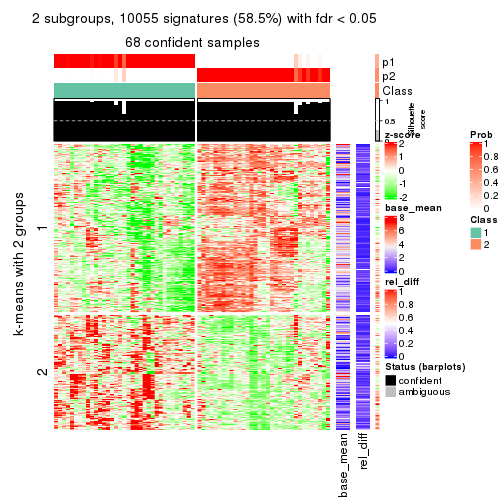
get_signatures(res, k = 3)
get_signatures(res, k = 4)
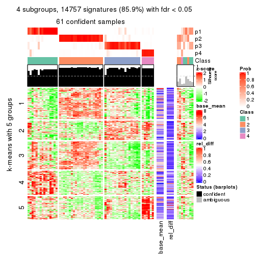
get_signatures(res, k = 5)
get_signatures(res, k = 6)
Signature heatmaps where rows are not scaled:
get_signatures(res, k = 2, scale_rows = FALSE)
get_signatures(res, k = 3, scale_rows = FALSE)
get_signatures(res, k = 4, scale_rows = FALSE)
get_signatures(res, k = 5, scale_rows = FALSE)
get_signatures(res, k = 6, scale_rows = FALSE)
Compare the overlap of signatures from different k:
compare_signatures(res)
get_signature() returns a data frame invisibly. TO get the list of signatures, the function
call should be assigned to a variable explicitly. In following code, if plot argument is set
to FALSE, no heatmap is plotted while only the differential analysis is performed.
# code only for demonstration
tb = get_signature(res, k = ..., plot = FALSE)
An example of the output of tb is:
#> which_row fdr mean_1 mean_2 scaled_mean_1 scaled_mean_2 km
#> 1 38 0.042760348 8.373488 9.131774 -0.5533452 0.5164555 1
#> 2 40 0.018707592 7.106213 8.469186 -0.6173731 0.5762149 1
#> 3 55 0.019134737 10.221463 11.207825 -0.6159697 0.5749050 1
#> 4 59 0.006059896 5.921854 7.869574 -0.6899429 0.6439467 1
#> 5 60 0.018055526 8.928898 10.211722 -0.6204761 0.5791110 1
#> 6 98 0.009384629 15.714769 14.887706 0.6635654 -0.6193277 2
...
The columns in tb are:
which_row: row indices corresponding to the input matrix.fdr: FDR for the differential test. mean_x: The mean value in group x.scaled_mean_x: The mean value in group x after rows are scaled.km: Row groups if k-means clustering is applied to rows.UMAP plot which shows how samples are separated.
dimension_reduction(res, k = 2, method = "UMAP")
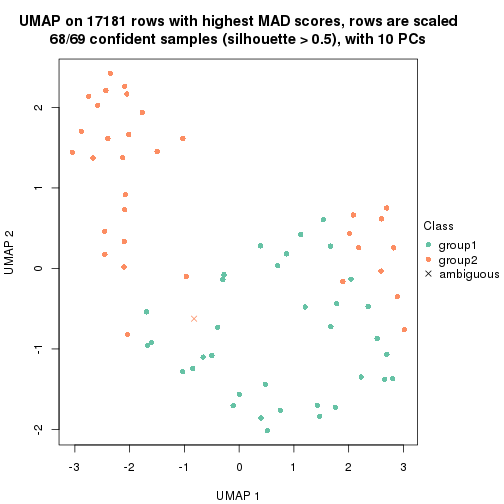
dimension_reduction(res, k = 3, method = "UMAP")
dimension_reduction(res, k = 4, method = "UMAP")
dimension_reduction(res, k = 5, method = "UMAP")
dimension_reduction(res, k = 6, method = "UMAP")
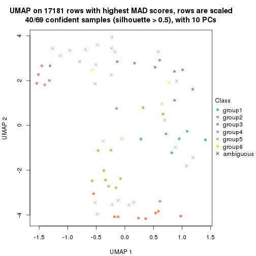
Following heatmap shows how subgroups are split when increasing k:
collect_classes(res)
If matrix rows can be associated to genes, consider to use GO_Enrichment(res,
...) to perform function enrichment for the signature genes.
The object with results only for a single top-value method and a single partition method can be extracted as:
res = res_list["ATC", "hclust"]
# you can also extract it by
# res = res_list["ATC:hclust"]
A summary of res and all the functions that can be applied to it:
res
#> A 'ConsensusPartition' object with k = 2, 3, 4, 5, 6.
#> On a matrix with 17181 rows and 69 columns.
#> Top rows (1000, 2000, 3000, 4000, 5000) are extracted by 'ATC' method.
#> Subgroups are detected by 'hclust' method.
#> Performed in total 1250 partitions by row resampling.
#> Best k for subgroups seems to be 3.
#>
#> Following methods can be applied to this 'ConsensusPartition' object:
#> [1] "cola_report" "collect_classes" "collect_plots"
#> [4] "collect_stats" "colnames" "compare_signatures"
#> [7] "consensus_heatmap" "dimension_reduction" "functional_enrichment"
#> [10] "get_anno_col" "get_anno" "get_classes"
#> [13] "get_consensus" "get_matrix" "get_membership"
#> [16] "get_param" "get_signatures" "get_stats"
#> [19] "is_best_k" "is_stable_k" "membership_heatmap"
#> [22] "ncol" "nrow" "plot_ecdf"
#> [25] "rownames" "select_partition_number" "show"
#> [28] "suggest_best_k" "test_to_known_factors"
collect_plots() function collects all the plots made from res for all k (number of partitions)
into one single page to provide an easy and fast comparison between different k.
collect_plots(res)

The plots are:
k and the heatmap of
predicted classes for each k.k.k.k.All the plots in panels can be made by individual functions and they are plotted later in this section.
select_partition_number() produces several plots showing different
statistics for choosing “optimized” k. There are following statistics:
k;k, the area increased is defined as \(A_k - A_{k-1}\).The detailed explanations of these statistics can be found in the cola vignette.
Generally speaking, lower PAC score, higher mean silhouette score or higher
concordance corresponds to better partition. Rand index and Jaccard index
measure how similar the current partition is compared to partition with k-1.
If they are too similar, we won't accept k is better than k-1.
select_partition_number(res)
The numeric values for all these statistics can be obtained by get_stats().
get_stats(res)
#> k 1-PAC mean_silhouette concordance area_increased Rand Jaccard
#> 2 2 0.398 0.743 0.854 0.4548 0.506 0.506
#> 3 3 0.471 0.807 0.827 0.3738 0.716 0.499
#> 4 4 0.671 0.796 0.885 0.1140 0.947 0.845
#> 5 5 0.670 0.732 0.861 0.0252 0.998 0.994
#> 6 6 0.713 0.725 0.834 0.0512 0.973 0.907
suggest_best_k() suggests the best \(k\) based on these statistics. The rules are as follows:
NA.suggest_best_k(res)
#> [1] 3
Following shows the table of the partitions (You need to click the show/hide
code output link to see it). The membership matrix (columns with name p*)
is inferred by
clue::cl_consensus()
function with the SE method. Basically the value in the membership matrix
represents the probability to belong to a certain group. The finall class
label for an item is determined with the group with highest probability it
belongs to.
In get_classes() function, the entropy is calculated from the membership
matrix and the silhouette score is calculated from the consensus matrix.
cbind(get_classes(res, k = 2), get_membership(res, k = 2))
#> class entropy silhouette p1 p2
#> SRR1747143 1 0.0000 0.744 1.000 0.000
#> SRR1747144 1 0.0000 0.744 1.000 0.000
#> SRR1747145 1 0.9552 0.682 0.624 0.376
#> SRR1747146 1 0.9580 0.677 0.620 0.380
#> SRR1747148 1 0.9552 0.682 0.624 0.376
#> SRR1747147 1 0.9552 0.682 0.624 0.376
#> SRR1747149 1 0.0000 0.744 1.000 0.000
#> SRR1747150 1 0.0000 0.744 1.000 0.000
#> SRR1747151 1 0.0000 0.744 1.000 0.000
#> SRR1747152 1 0.9552 0.682 0.624 0.376
#> SRR1747153 1 0.9552 0.682 0.624 0.376
#> SRR1747154 1 0.9552 0.682 0.624 0.376
#> SRR1747155 2 0.0000 0.907 0.000 1.000
#> SRR1747156 1 0.9552 0.682 0.624 0.376
#> SRR1747157 1 0.9552 0.682 0.624 0.376
#> SRR1747159 1 0.0000 0.744 1.000 0.000
#> SRR1747158 2 0.9286 0.350 0.344 0.656
#> SRR1747160 2 0.0000 0.907 0.000 1.000
#> SRR1747161 1 0.7453 0.737 0.788 0.212
#> SRR1747162 2 0.9963 -0.303 0.464 0.536
#> SRR1747163 1 0.0000 0.744 1.000 0.000
#> SRR1747164 1 0.9552 0.682 0.624 0.376
#> SRR1747165 1 0.9552 0.682 0.624 0.376
#> SRR1747167 1 0.0000 0.744 1.000 0.000
#> SRR1747166 1 0.0000 0.744 1.000 0.000
#> SRR1747168 2 0.0000 0.907 0.000 1.000
#> SRR1747169 2 0.0000 0.907 0.000 1.000
#> SRR1747170 2 0.0000 0.907 0.000 1.000
#> SRR1747172 2 0.0000 0.907 0.000 1.000
#> SRR1747171 2 0.0000 0.907 0.000 1.000
#> SRR1747173 2 0.0000 0.907 0.000 1.000
#> SRR1747174 2 0.0000 0.907 0.000 1.000
#> SRR1747175 1 0.8813 0.719 0.700 0.300
#> SRR1747176 2 0.0000 0.907 0.000 1.000
#> SRR1747177 1 0.9954 0.510 0.540 0.460
#> SRR1747178 1 0.0672 0.742 0.992 0.008
#> SRR1747179 1 0.8813 0.719 0.700 0.300
#> SRR1747180 2 0.0000 0.907 0.000 1.000
#> SRR1747181 2 0.9286 0.350 0.344 0.656
#> SRR1747183 1 0.0000 0.744 1.000 0.000
#> SRR1747182 2 0.0000 0.907 0.000 1.000
#> SRR1747184 1 0.0000 0.744 1.000 0.000
#> SRR1747185 1 0.8813 0.719 0.700 0.300
#> SRR1747186 2 0.0000 0.907 0.000 1.000
#> SRR1747187 2 0.0000 0.907 0.000 1.000
#> SRR1747188 2 0.0000 0.907 0.000 1.000
#> SRR1747189 2 0.0000 0.907 0.000 1.000
#> SRR1747191 2 0.0000 0.907 0.000 1.000
#> SRR1747190 2 0.0000 0.907 0.000 1.000
#> SRR1747192 1 0.9000 0.719 0.684 0.316
#> SRR1747193 1 0.0000 0.744 1.000 0.000
#> SRR1747194 1 0.8267 0.740 0.740 0.260
#> SRR1747195 2 0.9286 0.350 0.344 0.656
#> SRR1747197 2 0.9286 0.350 0.344 0.656
#> SRR1747196 1 0.9000 0.719 0.684 0.316
#> SRR1747199 1 0.7950 0.742 0.760 0.240
#> SRR1747198 1 0.7950 0.742 0.760 0.240
#> SRR1747200 2 0.0000 0.907 0.000 1.000
#> SRR1747201 1 0.7950 0.742 0.760 0.240
#> SRR1747202 2 0.0000 0.907 0.000 1.000
#> SRR1747203 2 0.0000 0.907 0.000 1.000
#> SRR1747204 1 0.9552 0.682 0.624 0.376
#> SRR1747205 2 0.0000 0.907 0.000 1.000
#> SRR1747206 1 0.0000 0.744 1.000 0.000
#> SRR1747207 1 0.0000 0.744 1.000 0.000
#> SRR1747208 2 0.4815 0.799 0.104 0.896
#> SRR1747210 1 0.0672 0.742 0.992 0.008
#> SRR1747209 2 0.0000 0.907 0.000 1.000
#> SRR1747211 1 0.9686 0.589 0.604 0.396
cbind(get_classes(res, k = 3), get_membership(res, k = 3))
#> class entropy silhouette p1 p2 p3
#> SRR1747143 3 0.4452 0.770 0.192 0.000 0.808
#> SRR1747144 3 0.0747 0.870 0.016 0.000 0.984
#> SRR1747145 1 0.7545 0.773 0.692 0.136 0.172
#> SRR1747146 1 0.7603 0.772 0.688 0.140 0.172
#> SRR1747148 1 0.7545 0.773 0.692 0.136 0.172
#> SRR1747147 1 0.7545 0.773 0.692 0.136 0.172
#> SRR1747149 3 0.0747 0.870 0.016 0.000 0.984
#> SRR1747150 3 0.4452 0.770 0.192 0.000 0.808
#> SRR1747151 3 0.4452 0.770 0.192 0.000 0.808
#> SRR1747152 1 0.7545 0.772 0.692 0.136 0.172
#> SRR1747153 1 0.7545 0.773 0.692 0.136 0.172
#> SRR1747154 1 0.7545 0.773 0.692 0.136 0.172
#> SRR1747155 2 0.1289 0.964 0.032 0.968 0.000
#> SRR1747156 1 0.7545 0.773 0.692 0.136 0.172
#> SRR1747157 1 0.7545 0.772 0.692 0.136 0.172
#> SRR1747159 3 0.4452 0.770 0.192 0.000 0.808
#> SRR1747158 1 0.5269 0.475 0.784 0.200 0.016
#> SRR1747160 2 0.1289 0.964 0.032 0.968 0.000
#> SRR1747161 1 0.8948 0.515 0.508 0.136 0.356
#> SRR1747162 1 0.7140 0.595 0.632 0.328 0.040
#> SRR1747163 3 0.0747 0.870 0.016 0.000 0.984
#> SRR1747164 1 0.7545 0.773 0.692 0.136 0.172
#> SRR1747165 1 0.7545 0.773 0.692 0.136 0.172
#> SRR1747167 3 0.0747 0.870 0.016 0.000 0.984
#> SRR1747166 3 0.4452 0.770 0.192 0.000 0.808
#> SRR1747168 2 0.0000 0.995 0.000 1.000 0.000
#> SRR1747169 2 0.0000 0.995 0.000 1.000 0.000
#> SRR1747170 2 0.0000 0.995 0.000 1.000 0.000
#> SRR1747172 2 0.0000 0.995 0.000 1.000 0.000
#> SRR1747171 2 0.0000 0.995 0.000 1.000 0.000
#> SRR1747173 2 0.0000 0.995 0.000 1.000 0.000
#> SRR1747174 2 0.0000 0.995 0.000 1.000 0.000
#> SRR1747175 1 0.4121 0.692 0.832 0.000 0.168
#> SRR1747176 2 0.0000 0.995 0.000 1.000 0.000
#> SRR1747177 1 0.7927 0.719 0.664 0.160 0.176
#> SRR1747178 3 0.3551 0.845 0.132 0.000 0.868
#> SRR1747179 1 0.4121 0.692 0.832 0.000 0.168
#> SRR1747180 2 0.0000 0.995 0.000 1.000 0.000
#> SRR1747181 1 0.5506 0.459 0.764 0.220 0.016
#> SRR1747183 3 0.0747 0.870 0.016 0.000 0.984
#> SRR1747182 2 0.0000 0.995 0.000 1.000 0.000
#> SRR1747184 3 0.2448 0.862 0.076 0.000 0.924
#> SRR1747185 1 0.4121 0.692 0.832 0.000 0.168
#> SRR1747186 2 0.0000 0.995 0.000 1.000 0.000
#> SRR1747187 2 0.0000 0.995 0.000 1.000 0.000
#> SRR1747188 2 0.0000 0.995 0.000 1.000 0.000
#> SRR1747189 2 0.0000 0.995 0.000 1.000 0.000
#> SRR1747191 2 0.0000 0.995 0.000 1.000 0.000
#> SRR1747190 2 0.0000 0.995 0.000 1.000 0.000
#> SRR1747192 1 0.8231 0.732 0.628 0.136 0.236
#> SRR1747193 3 0.3116 0.848 0.108 0.000 0.892
#> SRR1747194 1 0.7616 0.650 0.636 0.072 0.292
#> SRR1747195 1 0.4796 0.474 0.780 0.220 0.000
#> SRR1747197 1 0.4796 0.474 0.780 0.220 0.000
#> SRR1747196 1 0.8231 0.732 0.628 0.136 0.236
#> SRR1747199 1 0.4931 0.642 0.768 0.000 0.232
#> SRR1747198 1 0.4931 0.642 0.768 0.000 0.232
#> SRR1747200 2 0.0000 0.995 0.000 1.000 0.000
#> SRR1747201 1 0.4931 0.642 0.768 0.000 0.232
#> SRR1747202 2 0.0000 0.995 0.000 1.000 0.000
#> SRR1747203 2 0.1289 0.964 0.032 0.968 0.000
#> SRR1747204 1 0.7545 0.773 0.692 0.136 0.172
#> SRR1747205 2 0.0000 0.995 0.000 1.000 0.000
#> SRR1747206 3 0.2448 0.862 0.076 0.000 0.924
#> SRR1747207 3 0.3116 0.848 0.108 0.000 0.892
#> SRR1747208 1 0.6305 -0.196 0.516 0.484 0.000
#> SRR1747210 3 0.3267 0.855 0.116 0.000 0.884
#> SRR1747209 2 0.0000 0.995 0.000 1.000 0.000
#> SRR1747211 1 0.6829 0.682 0.736 0.096 0.168
cbind(get_classes(res, k = 4), get_membership(res, k = 4))
#> class entropy silhouette p1 p2 p3 p4
#> SRR1747143 4 0.6163 0.561 0.060 0.000 0.364 0.576
#> SRR1747144 4 0.0000 0.673 0.000 0.000 0.000 1.000
#> SRR1747145 3 0.0000 0.858 0.000 0.000 1.000 0.000
#> SRR1747146 3 0.0188 0.856 0.000 0.004 0.996 0.000
#> SRR1747148 3 0.0000 0.858 0.000 0.000 1.000 0.000
#> SRR1747147 3 0.0000 0.858 0.000 0.000 1.000 0.000
#> SRR1747149 4 0.0000 0.673 0.000 0.000 0.000 1.000
#> SRR1747150 4 0.6163 0.561 0.060 0.000 0.364 0.576
#> SRR1747151 4 0.6163 0.561 0.060 0.000 0.364 0.576
#> SRR1747152 3 0.0376 0.857 0.004 0.000 0.992 0.004
#> SRR1747153 3 0.0000 0.858 0.000 0.000 1.000 0.000
#> SRR1747154 3 0.0000 0.858 0.000 0.000 1.000 0.000
#> SRR1747155 2 0.3219 0.780 0.000 0.836 0.164 0.000
#> SRR1747156 3 0.0000 0.858 0.000 0.000 1.000 0.000
#> SRR1747157 3 0.0376 0.857 0.004 0.000 0.992 0.004
#> SRR1747159 4 0.6163 0.561 0.060 0.000 0.364 0.576
#> SRR1747158 1 0.4485 0.677 0.740 0.012 0.248 0.000
#> SRR1747160 2 0.3219 0.780 0.000 0.836 0.164 0.000
#> SRR1747161 3 0.3668 0.661 0.004 0.000 0.808 0.188
#> SRR1747162 3 0.3710 0.562 0.004 0.192 0.804 0.000
#> SRR1747163 4 0.4864 0.702 0.060 0.000 0.172 0.768
#> SRR1747164 3 0.0000 0.858 0.000 0.000 1.000 0.000
#> SRR1747165 3 0.0000 0.858 0.000 0.000 1.000 0.000
#> SRR1747167 4 0.4864 0.702 0.060 0.000 0.172 0.768
#> SRR1747166 4 0.6163 0.561 0.060 0.000 0.364 0.576
#> SRR1747168 2 0.0000 0.971 0.000 1.000 0.000 0.000
#> SRR1747169 2 0.0000 0.971 0.000 1.000 0.000 0.000
#> SRR1747170 2 0.0000 0.971 0.000 1.000 0.000 0.000
#> SRR1747172 2 0.0000 0.971 0.000 1.000 0.000 0.000
#> SRR1747171 2 0.0000 0.971 0.000 1.000 0.000 0.000
#> SRR1747173 2 0.0000 0.971 0.000 1.000 0.000 0.000
#> SRR1747174 2 0.0000 0.971 0.000 1.000 0.000 0.000
#> SRR1747175 3 0.3583 0.754 0.180 0.000 0.816 0.004
#> SRR1747176 2 0.0000 0.971 0.000 1.000 0.000 0.000
#> SRR1747177 3 0.3942 0.672 0.236 0.000 0.764 0.000
#> SRR1747178 4 0.3674 0.667 0.116 0.000 0.036 0.848
#> SRR1747179 3 0.3583 0.754 0.180 0.000 0.816 0.004
#> SRR1747180 2 0.0000 0.971 0.000 1.000 0.000 0.000
#> SRR1747181 1 0.2131 0.671 0.932 0.032 0.036 0.000
#> SRR1747183 4 0.4864 0.702 0.060 0.000 0.172 0.768
#> SRR1747182 2 0.0000 0.971 0.000 1.000 0.000 0.000
#> SRR1747184 4 0.2334 0.667 0.088 0.000 0.004 0.908
#> SRR1747185 3 0.3583 0.754 0.180 0.000 0.816 0.004
#> SRR1747186 2 0.0000 0.971 0.000 1.000 0.000 0.000
#> SRR1747187 2 0.0000 0.971 0.000 1.000 0.000 0.000
#> SRR1747188 2 0.0000 0.971 0.000 1.000 0.000 0.000
#> SRR1747189 2 0.0000 0.971 0.000 1.000 0.000 0.000
#> SRR1747191 2 0.0000 0.971 0.000 1.000 0.000 0.000
#> SRR1747190 2 0.0000 0.971 0.000 1.000 0.000 0.000
#> SRR1747192 3 0.1792 0.824 0.068 0.000 0.932 0.000
#> SRR1747193 4 0.2918 0.650 0.116 0.000 0.008 0.876
#> SRR1747194 3 0.4565 0.760 0.140 0.000 0.796 0.064
#> SRR1747195 1 0.5113 0.730 0.712 0.036 0.252 0.000
#> SRR1747197 1 0.5113 0.730 0.712 0.036 0.252 0.000
#> SRR1747196 3 0.1792 0.824 0.068 0.000 0.932 0.000
#> SRR1747199 3 0.5091 0.709 0.180 0.000 0.752 0.068
#> SRR1747198 3 0.5091 0.709 0.180 0.000 0.752 0.068
#> SRR1747200 2 0.0000 0.971 0.000 1.000 0.000 0.000
#> SRR1747201 3 0.5091 0.709 0.180 0.000 0.752 0.068
#> SRR1747202 2 0.0000 0.971 0.000 1.000 0.000 0.000
#> SRR1747203 2 0.3219 0.780 0.000 0.836 0.164 0.000
#> SRR1747204 3 0.0000 0.858 0.000 0.000 1.000 0.000
#> SRR1747205 2 0.0000 0.971 0.000 1.000 0.000 0.000
#> SRR1747206 4 0.2334 0.667 0.088 0.000 0.004 0.908
#> SRR1747207 4 0.2918 0.650 0.116 0.000 0.008 0.876
#> SRR1747208 1 0.5453 0.535 0.660 0.304 0.036 0.000
#> SRR1747210 4 0.3858 0.681 0.100 0.000 0.056 0.844
#> SRR1747209 2 0.0000 0.971 0.000 1.000 0.000 0.000
#> SRR1747211 3 0.4454 0.564 0.308 0.000 0.692 0.000
cbind(get_classes(res, k = 5), get_membership(res, k = 5))
#> class entropy silhouette p1 p2 p3 p4 p5
#> SRR1747143 4 0.6080 0.5449 0.136 0.000 0.344 0.520 0.000
#> SRR1747144 4 0.0162 0.6054 0.004 0.000 0.000 0.996 0.000
#> SRR1747145 3 0.0000 0.8522 0.000 0.000 1.000 0.000 0.000
#> SRR1747146 3 0.0162 0.8502 0.000 0.004 0.996 0.000 0.000
#> SRR1747148 3 0.0000 0.8522 0.000 0.000 1.000 0.000 0.000
#> SRR1747147 3 0.0000 0.8522 0.000 0.000 1.000 0.000 0.000
#> SRR1747149 4 0.0162 0.6054 0.004 0.000 0.000 0.996 0.000
#> SRR1747150 4 0.6080 0.5449 0.136 0.000 0.344 0.520 0.000
#> SRR1747151 4 0.6102 0.5502 0.140 0.000 0.340 0.520 0.000
#> SRR1747152 3 0.0324 0.8512 0.004 0.000 0.992 0.000 0.004
#> SRR1747153 3 0.0000 0.8522 0.000 0.000 1.000 0.000 0.000
#> SRR1747154 3 0.0162 0.8510 0.004 0.000 0.996 0.000 0.000
#> SRR1747155 2 0.5683 0.5884 0.160 0.664 0.164 0.000 0.012
#> SRR1747156 3 0.0000 0.8522 0.000 0.000 1.000 0.000 0.000
#> SRR1747157 3 0.0324 0.8512 0.004 0.000 0.992 0.000 0.004
#> SRR1747159 4 0.6102 0.5502 0.140 0.000 0.340 0.520 0.000
#> SRR1747158 5 0.1410 0.0000 0.000 0.000 0.060 0.000 0.940
#> SRR1747160 2 0.5683 0.5884 0.160 0.664 0.164 0.000 0.012
#> SRR1747161 3 0.3612 0.6443 0.016 0.000 0.796 0.184 0.004
#> SRR1747162 3 0.3900 0.6325 0.180 0.020 0.788 0.000 0.012
#> SRR1747163 4 0.4916 0.6513 0.124 0.000 0.160 0.716 0.000
#> SRR1747164 3 0.0000 0.8522 0.000 0.000 1.000 0.000 0.000
#> SRR1747165 3 0.0000 0.8522 0.000 0.000 1.000 0.000 0.000
#> SRR1747167 4 0.4916 0.6513 0.124 0.000 0.160 0.716 0.000
#> SRR1747166 4 0.6080 0.5449 0.136 0.000 0.344 0.520 0.000
#> SRR1747168 2 0.0898 0.9337 0.020 0.972 0.000 0.000 0.008
#> SRR1747169 2 0.0000 0.9430 0.000 1.000 0.000 0.000 0.000
#> SRR1747170 2 0.0898 0.9337 0.020 0.972 0.000 0.000 0.008
#> SRR1747172 2 0.0000 0.9430 0.000 1.000 0.000 0.000 0.000
#> SRR1747171 2 0.0798 0.9352 0.016 0.976 0.000 0.000 0.008
#> SRR1747173 2 0.0898 0.9337 0.020 0.972 0.000 0.000 0.008
#> SRR1747174 2 0.0000 0.9430 0.000 1.000 0.000 0.000 0.000
#> SRR1747175 3 0.3733 0.7652 0.028 0.000 0.808 0.008 0.156
#> SRR1747176 2 0.0000 0.9430 0.000 1.000 0.000 0.000 0.000
#> SRR1747177 3 0.4780 0.6326 0.248 0.000 0.692 0.000 0.060
#> SRR1747178 4 0.3933 0.6034 0.052 0.000 0.024 0.824 0.100
#> SRR1747179 3 0.3733 0.7652 0.028 0.000 0.808 0.008 0.156
#> SRR1747180 2 0.0000 0.9430 0.000 1.000 0.000 0.000 0.000
#> SRR1747181 1 0.4607 0.0479 0.616 0.000 0.012 0.004 0.368
#> SRR1747183 4 0.4916 0.6513 0.124 0.000 0.160 0.716 0.000
#> SRR1747182 2 0.0898 0.9337 0.020 0.972 0.000 0.000 0.008
#> SRR1747184 4 0.2144 0.5939 0.020 0.000 0.000 0.912 0.068
#> SRR1747185 3 0.3733 0.7652 0.028 0.000 0.808 0.008 0.156
#> SRR1747186 2 0.0000 0.9430 0.000 1.000 0.000 0.000 0.000
#> SRR1747187 2 0.0000 0.9430 0.000 1.000 0.000 0.000 0.000
#> SRR1747188 2 0.0000 0.9430 0.000 1.000 0.000 0.000 0.000
#> SRR1747189 2 0.0898 0.9337 0.020 0.972 0.000 0.000 0.008
#> SRR1747191 2 0.0000 0.9430 0.000 1.000 0.000 0.000 0.000
#> SRR1747190 2 0.0000 0.9430 0.000 1.000 0.000 0.000 0.000
#> SRR1747192 3 0.2561 0.7960 0.144 0.000 0.856 0.000 0.000
#> SRR1747193 4 0.2616 0.5720 0.020 0.000 0.000 0.880 0.100
#> SRR1747194 3 0.5336 0.7161 0.168 0.000 0.720 0.060 0.052
#> SRR1747195 1 0.6918 0.4290 0.416 0.004 0.228 0.004 0.348
#> SRR1747197 1 0.6918 0.4290 0.416 0.004 0.228 0.004 0.348
#> SRR1747196 3 0.2561 0.7960 0.144 0.000 0.856 0.000 0.000
#> SRR1747199 3 0.4988 0.7239 0.032 0.000 0.744 0.068 0.156
#> SRR1747198 3 0.4988 0.7239 0.032 0.000 0.744 0.068 0.156
#> SRR1747200 2 0.0000 0.9430 0.000 1.000 0.000 0.000 0.000
#> SRR1747201 3 0.4988 0.7239 0.032 0.000 0.744 0.068 0.156
#> SRR1747202 2 0.0000 0.9430 0.000 1.000 0.000 0.000 0.000
#> SRR1747203 2 0.5683 0.5884 0.160 0.664 0.164 0.000 0.012
#> SRR1747204 3 0.0000 0.8522 0.000 0.000 1.000 0.000 0.000
#> SRR1747205 2 0.0000 0.9430 0.000 1.000 0.000 0.000 0.000
#> SRR1747206 4 0.2144 0.5939 0.020 0.000 0.000 0.912 0.068
#> SRR1747207 4 0.2616 0.5720 0.020 0.000 0.000 0.880 0.100
#> SRR1747208 1 0.7235 0.0952 0.364 0.272 0.012 0.004 0.348
#> SRR1747210 4 0.4310 0.6205 0.064 0.000 0.044 0.808 0.084
#> SRR1747209 2 0.0000 0.9430 0.000 1.000 0.000 0.000 0.000
#> SRR1747211 3 0.5416 0.5938 0.176 0.000 0.676 0.004 0.144
cbind(get_classes(res, k = 6), get_membership(res, k = 6))
#> class entropy silhouette p1 p2 p3 p4 p5 p6
#> SRR1747143 3 0.3386 0.743 0.016 0.000 0.796 0.012 0.000 0.176
#> SRR1747144 4 0.3982 0.632 0.004 0.000 0.460 0.536 0.000 0.000
#> SRR1747145 6 0.0260 0.797 0.000 0.000 0.008 0.000 0.000 0.992
#> SRR1747146 6 0.0405 0.795 0.000 0.004 0.008 0.000 0.000 0.988
#> SRR1747148 6 0.0260 0.797 0.000 0.000 0.008 0.000 0.000 0.992
#> SRR1747147 6 0.0260 0.797 0.000 0.000 0.008 0.000 0.000 0.992
#> SRR1747149 4 0.3982 0.632 0.004 0.000 0.460 0.536 0.000 0.000
#> SRR1747150 3 0.3386 0.743 0.016 0.000 0.796 0.012 0.000 0.176
#> SRR1747151 3 0.3352 0.744 0.016 0.000 0.800 0.012 0.000 0.172
#> SRR1747152 6 0.0146 0.796 0.000 0.000 0.004 0.000 0.000 0.996
#> SRR1747153 6 0.0260 0.797 0.000 0.000 0.008 0.000 0.000 0.992
#> SRR1747154 6 0.0820 0.787 0.016 0.000 0.012 0.000 0.000 0.972
#> SRR1747155 2 0.4974 0.569 0.000 0.644 0.000 0.000 0.212 0.144
#> SRR1747156 6 0.0260 0.797 0.000 0.000 0.008 0.000 0.000 0.992
#> SRR1747157 6 0.0146 0.796 0.000 0.000 0.004 0.000 0.000 0.996
#> SRR1747159 3 0.3352 0.744 0.016 0.000 0.800 0.012 0.000 0.172
#> SRR1747158 5 0.3712 0.000 0.180 0.000 0.000 0.000 0.768 0.052
#> SRR1747160 2 0.4974 0.569 0.000 0.644 0.000 0.000 0.212 0.144
#> SRR1747161 6 0.3484 0.656 0.016 0.000 0.188 0.012 0.000 0.784
#> SRR1747162 6 0.4202 0.553 0.016 0.000 0.032 0.004 0.212 0.736
#> SRR1747163 3 0.1584 0.584 0.000 0.000 0.928 0.064 0.000 0.008
#> SRR1747164 6 0.0260 0.797 0.000 0.000 0.008 0.000 0.000 0.992
#> SRR1747165 6 0.0260 0.797 0.000 0.000 0.008 0.000 0.000 0.992
#> SRR1747167 3 0.1584 0.584 0.000 0.000 0.928 0.064 0.000 0.008
#> SRR1747166 3 0.3386 0.743 0.016 0.000 0.796 0.012 0.000 0.176
#> SRR1747168 2 0.0937 0.924 0.000 0.960 0.000 0.000 0.040 0.000
#> SRR1747169 2 0.0000 0.938 0.000 1.000 0.000 0.000 0.000 0.000
#> SRR1747170 2 0.0937 0.924 0.000 0.960 0.000 0.000 0.040 0.000
#> SRR1747172 2 0.0000 0.938 0.000 1.000 0.000 0.000 0.000 0.000
#> SRR1747171 2 0.0865 0.926 0.000 0.964 0.000 0.000 0.036 0.000
#> SRR1747173 2 0.0937 0.924 0.000 0.960 0.000 0.000 0.040 0.000
#> SRR1747174 2 0.0000 0.938 0.000 1.000 0.000 0.000 0.000 0.000
#> SRR1747175 6 0.4735 0.653 0.060 0.000 0.008 0.240 0.008 0.684
#> SRR1747176 2 0.0000 0.938 0.000 1.000 0.000 0.000 0.000 0.000
#> SRR1747177 6 0.5903 0.494 0.264 0.000 0.012 0.124 0.020 0.580
#> SRR1747178 4 0.4088 0.701 0.000 0.000 0.348 0.636 0.008 0.008
#> SRR1747179 6 0.4735 0.653 0.060 0.000 0.008 0.240 0.008 0.684
#> SRR1747180 2 0.0000 0.938 0.000 1.000 0.000 0.000 0.000 0.000
#> SRR1747181 1 0.1863 0.288 0.896 0.000 0.000 0.104 0.000 0.000
#> SRR1747183 3 0.1584 0.584 0.000 0.000 0.928 0.064 0.000 0.008
#> SRR1747182 2 0.0937 0.924 0.000 0.960 0.000 0.000 0.040 0.000
#> SRR1747184 4 0.2527 0.813 0.000 0.000 0.168 0.832 0.000 0.000
#> SRR1747185 6 0.4735 0.653 0.060 0.000 0.008 0.240 0.008 0.684
#> SRR1747186 2 0.0000 0.938 0.000 1.000 0.000 0.000 0.000 0.000
#> SRR1747187 2 0.0000 0.938 0.000 1.000 0.000 0.000 0.000 0.000
#> SRR1747188 2 0.0000 0.938 0.000 1.000 0.000 0.000 0.000 0.000
#> SRR1747189 2 0.0937 0.924 0.000 0.960 0.000 0.000 0.040 0.000
#> SRR1747191 2 0.0000 0.938 0.000 1.000 0.000 0.000 0.000 0.000
#> SRR1747190 2 0.0000 0.938 0.000 1.000 0.000 0.000 0.000 0.000
#> SRR1747192 6 0.3771 0.738 0.068 0.000 0.060 0.024 0.020 0.828
#> SRR1747193 4 0.2219 0.805 0.000 0.000 0.136 0.864 0.000 0.000
#> SRR1747194 6 0.6656 0.592 0.128 0.000 0.120 0.148 0.020 0.584
#> SRR1747195 1 0.4354 0.543 0.704 0.000 0.000 0.080 0.000 0.216
#> SRR1747197 1 0.4354 0.543 0.704 0.000 0.000 0.080 0.000 0.216
#> SRR1747196 6 0.3771 0.738 0.068 0.000 0.060 0.024 0.020 0.828
#> SRR1747199 6 0.5712 0.606 0.060 0.000 0.060 0.256 0.008 0.616
#> SRR1747198 6 0.5712 0.606 0.060 0.000 0.060 0.256 0.008 0.616
#> SRR1747200 2 0.0000 0.938 0.000 1.000 0.000 0.000 0.000 0.000
#> SRR1747201 6 0.5712 0.606 0.060 0.000 0.060 0.256 0.008 0.616
#> SRR1747202 2 0.0146 0.935 0.004 0.996 0.000 0.000 0.000 0.000
#> SRR1747203 2 0.4974 0.569 0.000 0.644 0.000 0.000 0.212 0.144
#> SRR1747204 6 0.0260 0.797 0.000 0.000 0.008 0.000 0.000 0.992
#> SRR1747205 2 0.0000 0.938 0.000 1.000 0.000 0.000 0.000 0.000
#> SRR1747206 4 0.2527 0.813 0.000 0.000 0.168 0.832 0.000 0.000
#> SRR1747207 4 0.2219 0.805 0.000 0.000 0.136 0.864 0.000 0.000
#> SRR1747208 1 0.4654 0.222 0.652 0.268 0.000 0.080 0.000 0.000
#> SRR1747210 3 0.4126 -0.194 0.000 0.000 0.624 0.360 0.008 0.008
#> SRR1747209 2 0.0000 0.938 0.000 1.000 0.000 0.000 0.000 0.000
#> SRR1747211 6 0.6027 0.455 0.200 0.000 0.012 0.212 0.012 0.564
Heatmaps for the consensus matrix. It visualizes the probability of two samples to be in a same group.
consensus_heatmap(res, k = 2)
consensus_heatmap(res, k = 3)
consensus_heatmap(res, k = 4)
consensus_heatmap(res, k = 5)
consensus_heatmap(res, k = 6)
Heatmaps for the membership of samples in all partitions to see how consistent they are:
membership_heatmap(res, k = 2)
membership_heatmap(res, k = 3)
membership_heatmap(res, k = 4)
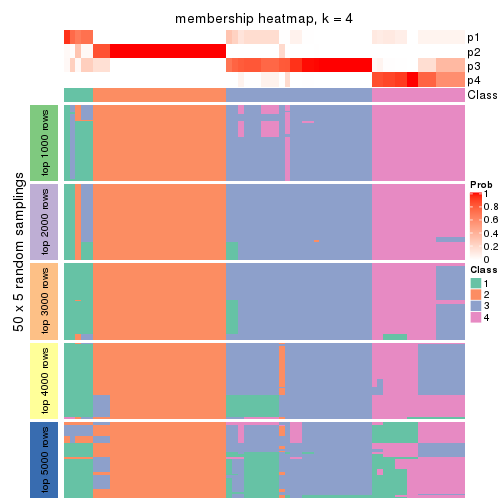
membership_heatmap(res, k = 5)

membership_heatmap(res, k = 6)
As soon as we have had the classes for columns, we can look for signatures which are significantly different between classes which can be candidate marks for certain classes. Following are the heatmaps for signatures.
Signature heatmaps where rows are scaled:
get_signatures(res, k = 2)
get_signatures(res, k = 3)
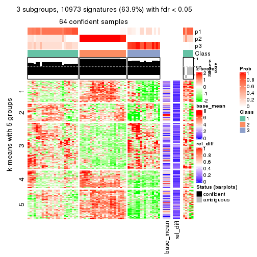
get_signatures(res, k = 4)
get_signatures(res, k = 5)
get_signatures(res, k = 6)
Signature heatmaps where rows are not scaled:
get_signatures(res, k = 2, scale_rows = FALSE)
get_signatures(res, k = 3, scale_rows = FALSE)

get_signatures(res, k = 4, scale_rows = FALSE)
get_signatures(res, k = 5, scale_rows = FALSE)
get_signatures(res, k = 6, scale_rows = FALSE)
Compare the overlap of signatures from different k:
compare_signatures(res)
get_signature() returns a data frame invisibly. TO get the list of signatures, the function
call should be assigned to a variable explicitly. In following code, if plot argument is set
to FALSE, no heatmap is plotted while only the differential analysis is performed.
# code only for demonstration
tb = get_signature(res, k = ..., plot = FALSE)
An example of the output of tb is:
#> which_row fdr mean_1 mean_2 scaled_mean_1 scaled_mean_2 km
#> 1 38 0.042760348 8.373488 9.131774 -0.5533452 0.5164555 1
#> 2 40 0.018707592 7.106213 8.469186 -0.6173731 0.5762149 1
#> 3 55 0.019134737 10.221463 11.207825 -0.6159697 0.5749050 1
#> 4 59 0.006059896 5.921854 7.869574 -0.6899429 0.6439467 1
#> 5 60 0.018055526 8.928898 10.211722 -0.6204761 0.5791110 1
#> 6 98 0.009384629 15.714769 14.887706 0.6635654 -0.6193277 2
...
The columns in tb are:
which_row: row indices corresponding to the input matrix.fdr: FDR for the differential test. mean_x: The mean value in group x.scaled_mean_x: The mean value in group x after rows are scaled.km: Row groups if k-means clustering is applied to rows.UMAP plot which shows how samples are separated.
dimension_reduction(res, k = 2, method = "UMAP")
dimension_reduction(res, k = 3, method = "UMAP")
dimension_reduction(res, k = 4, method = "UMAP")
dimension_reduction(res, k = 5, method = "UMAP")
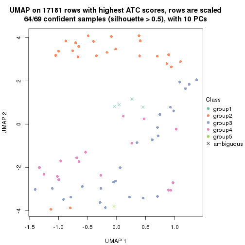
dimension_reduction(res, k = 6, method = "UMAP")
Following heatmap shows how subgroups are split when increasing k:
collect_classes(res)
If matrix rows can be associated to genes, consider to use GO_Enrichment(res,
...) to perform function enrichment for the signature genes.
The object with results only for a single top-value method and a single partition method can be extracted as:
res = res_list["ATC", "kmeans"]
# you can also extract it by
# res = res_list["ATC:kmeans"]
A summary of res and all the functions that can be applied to it:
res
#> A 'ConsensusPartition' object with k = 2, 3, 4, 5, 6.
#> On a matrix with 17181 rows and 69 columns.
#> Top rows (1000, 2000, 3000, 4000, 5000) are extracted by 'ATC' method.
#> Subgroups are detected by 'kmeans' method.
#> Performed in total 1250 partitions by row resampling.
#> Best k for subgroups seems to be 2.
#>
#> Following methods can be applied to this 'ConsensusPartition' object:
#> [1] "cola_report" "collect_classes" "collect_plots"
#> [4] "collect_stats" "colnames" "compare_signatures"
#> [7] "consensus_heatmap" "dimension_reduction" "functional_enrichment"
#> [10] "get_anno_col" "get_anno" "get_classes"
#> [13] "get_consensus" "get_matrix" "get_membership"
#> [16] "get_param" "get_signatures" "get_stats"
#> [19] "is_best_k" "is_stable_k" "membership_heatmap"
#> [22] "ncol" "nrow" "plot_ecdf"
#> [25] "rownames" "select_partition_number" "show"
#> [28] "suggest_best_k" "test_to_known_factors"
collect_plots() function collects all the plots made from res for all k (number of partitions)
into one single page to provide an easy and fast comparison between different k.
collect_plots(res)
The plots are:
k and the heatmap of
predicted classes for each k.k.k.k.All the plots in panels can be made by individual functions and they are plotted later in this section.
select_partition_number() produces several plots showing different
statistics for choosing “optimized” k. There are following statistics:
k;k, the area increased is defined as \(A_k - A_{k-1}\).The detailed explanations of these statistics can be found in the cola vignette.
Generally speaking, lower PAC score, higher mean silhouette score or higher
concordance corresponds to better partition. Rand index and Jaccard index
measure how similar the current partition is compared to partition with k-1.
If they are too similar, we won't accept k is better than k-1.
select_partition_number(res)
The numeric values for all these statistics can be obtained by get_stats().
get_stats(res)
#> k 1-PAC mean_silhouette concordance area_increased Rand Jaccard
#> 2 2 1.000 0.946 0.981 0.4873 0.511 0.511
#> 3 3 0.817 0.875 0.928 0.3576 0.746 0.541
#> 4 4 0.690 0.721 0.809 0.1084 0.899 0.710
#> 5 5 0.676 0.601 0.739 0.0696 0.937 0.770
#> 6 6 0.757 0.734 0.791 0.0466 0.888 0.553
suggest_best_k() suggests the best \(k\) based on these statistics. The rules are as follows:
NA.suggest_best_k(res)
#> [1] 2
Following shows the table of the partitions (You need to click the show/hide
code output link to see it). The membership matrix (columns with name p*)
is inferred by
clue::cl_consensus()
function with the SE method. Basically the value in the membership matrix
represents the probability to belong to a certain group. The finall class
label for an item is determined with the group with highest probability it
belongs to.
In get_classes() function, the entropy is calculated from the membership
matrix and the silhouette score is calculated from the consensus matrix.
cbind(get_classes(res, k = 2), get_membership(res, k = 2))
#> class entropy silhouette p1 p2
#> SRR1747143 1 0.0000 0.988 1.000 0.000
#> SRR1747144 1 0.0000 0.988 1.000 0.000
#> SRR1747145 1 0.0000 0.988 1.000 0.000
#> SRR1747146 2 0.9881 0.244 0.436 0.564
#> SRR1747148 1 0.0000 0.988 1.000 0.000
#> SRR1747147 1 0.0000 0.988 1.000 0.000
#> SRR1747149 1 0.0000 0.988 1.000 0.000
#> SRR1747150 1 0.0000 0.988 1.000 0.000
#> SRR1747151 1 0.0000 0.988 1.000 0.000
#> SRR1747152 1 0.0000 0.988 1.000 0.000
#> SRR1747153 1 0.0000 0.988 1.000 0.000
#> SRR1747154 1 0.0000 0.988 1.000 0.000
#> SRR1747155 2 0.0000 0.967 0.000 1.000
#> SRR1747156 1 0.0000 0.988 1.000 0.000
#> SRR1747157 1 0.0000 0.988 1.000 0.000
#> SRR1747159 1 0.0000 0.988 1.000 0.000
#> SRR1747158 1 0.0000 0.988 1.000 0.000
#> SRR1747160 2 0.0000 0.967 0.000 1.000
#> SRR1747161 1 0.0000 0.988 1.000 0.000
#> SRR1747162 1 0.0000 0.988 1.000 0.000
#> SRR1747163 1 0.0000 0.988 1.000 0.000
#> SRR1747164 1 0.0000 0.988 1.000 0.000
#> SRR1747165 2 0.9881 0.244 0.436 0.564
#> SRR1747167 1 0.0000 0.988 1.000 0.000
#> SRR1747166 1 0.0000 0.988 1.000 0.000
#> SRR1747168 2 0.0000 0.967 0.000 1.000
#> SRR1747169 2 0.0000 0.967 0.000 1.000
#> SRR1747170 2 0.0000 0.967 0.000 1.000
#> SRR1747172 2 0.0000 0.967 0.000 1.000
#> SRR1747171 2 0.0000 0.967 0.000 1.000
#> SRR1747173 2 0.0000 0.967 0.000 1.000
#> SRR1747174 2 0.0000 0.967 0.000 1.000
#> SRR1747175 1 0.0000 0.988 1.000 0.000
#> SRR1747176 2 0.0000 0.967 0.000 1.000
#> SRR1747177 1 0.0376 0.984 0.996 0.004
#> SRR1747178 1 0.0000 0.988 1.000 0.000
#> SRR1747179 1 0.0000 0.988 1.000 0.000
#> SRR1747180 2 0.0000 0.967 0.000 1.000
#> SRR1747181 1 0.9944 0.126 0.544 0.456
#> SRR1747183 1 0.0000 0.988 1.000 0.000
#> SRR1747182 2 0.0000 0.967 0.000 1.000
#> SRR1747184 1 0.0000 0.988 1.000 0.000
#> SRR1747185 1 0.0000 0.988 1.000 0.000
#> SRR1747186 2 0.0000 0.967 0.000 1.000
#> SRR1747187 2 0.0000 0.967 0.000 1.000
#> SRR1747188 2 0.0000 0.967 0.000 1.000
#> SRR1747189 2 0.0000 0.967 0.000 1.000
#> SRR1747191 2 0.0000 0.967 0.000 1.000
#> SRR1747190 2 0.0000 0.967 0.000 1.000
#> SRR1747192 1 0.0000 0.988 1.000 0.000
#> SRR1747193 1 0.0000 0.988 1.000 0.000
#> SRR1747194 1 0.0000 0.988 1.000 0.000
#> SRR1747195 2 0.0000 0.967 0.000 1.000
#> SRR1747197 2 0.0000 0.967 0.000 1.000
#> SRR1747196 1 0.0000 0.988 1.000 0.000
#> SRR1747199 1 0.0000 0.988 1.000 0.000
#> SRR1747198 1 0.0000 0.988 1.000 0.000
#> SRR1747200 2 0.0000 0.967 0.000 1.000
#> SRR1747201 1 0.0000 0.988 1.000 0.000
#> SRR1747202 2 0.0000 0.967 0.000 1.000
#> SRR1747203 2 0.0000 0.967 0.000 1.000
#> SRR1747204 1 0.0000 0.988 1.000 0.000
#> SRR1747205 2 0.0000 0.967 0.000 1.000
#> SRR1747206 1 0.0000 0.988 1.000 0.000
#> SRR1747207 1 0.0000 0.988 1.000 0.000
#> SRR1747208 2 0.0000 0.967 0.000 1.000
#> SRR1747210 1 0.0000 0.988 1.000 0.000
#> SRR1747209 2 0.0000 0.967 0.000 1.000
#> SRR1747211 1 0.0000 0.988 1.000 0.000
cbind(get_classes(res, k = 3), get_membership(res, k = 3))
#> class entropy silhouette p1 p2 p3
#> SRR1747143 3 0.4842 0.796 0.224 0.000 0.776
#> SRR1747144 3 0.0000 0.870 0.000 0.000 1.000
#> SRR1747145 1 0.0000 0.881 1.000 0.000 0.000
#> SRR1747146 1 0.0000 0.881 1.000 0.000 0.000
#> SRR1747148 1 0.0424 0.879 0.992 0.000 0.008
#> SRR1747147 1 0.0000 0.881 1.000 0.000 0.000
#> SRR1747149 3 0.0000 0.870 0.000 0.000 1.000
#> SRR1747150 3 0.6140 0.541 0.404 0.000 0.596
#> SRR1747151 3 0.4842 0.796 0.224 0.000 0.776
#> SRR1747152 1 0.2261 0.861 0.932 0.000 0.068
#> SRR1747153 1 0.0000 0.881 1.000 0.000 0.000
#> SRR1747154 1 0.0000 0.881 1.000 0.000 0.000
#> SRR1747155 2 0.1031 0.980 0.024 0.976 0.000
#> SRR1747156 1 0.0000 0.881 1.000 0.000 0.000
#> SRR1747157 1 0.0424 0.879 0.992 0.000 0.008
#> SRR1747159 3 0.4842 0.796 0.224 0.000 0.776
#> SRR1747158 1 0.2959 0.845 0.900 0.000 0.100
#> SRR1747160 2 0.1031 0.980 0.024 0.976 0.000
#> SRR1747161 1 0.0424 0.879 0.992 0.000 0.008
#> SRR1747162 1 0.0000 0.881 1.000 0.000 0.000
#> SRR1747163 3 0.4291 0.821 0.180 0.000 0.820
#> SRR1747164 1 0.0000 0.881 1.000 0.000 0.000
#> SRR1747165 1 0.0000 0.881 1.000 0.000 0.000
#> SRR1747167 3 0.2796 0.857 0.092 0.000 0.908
#> SRR1747166 3 0.5706 0.686 0.320 0.000 0.680
#> SRR1747168 2 0.0424 0.993 0.008 0.992 0.000
#> SRR1747169 2 0.0000 0.994 0.000 1.000 0.000
#> SRR1747170 2 0.0424 0.993 0.008 0.992 0.000
#> SRR1747172 2 0.0424 0.993 0.008 0.992 0.000
#> SRR1747171 2 0.0424 0.993 0.008 0.992 0.000
#> SRR1747173 2 0.0424 0.993 0.008 0.992 0.000
#> SRR1747174 2 0.0000 0.994 0.000 1.000 0.000
#> SRR1747175 1 0.1031 0.873 0.976 0.000 0.024
#> SRR1747176 2 0.0000 0.994 0.000 1.000 0.000
#> SRR1747177 1 0.2796 0.847 0.908 0.000 0.092
#> SRR1747178 3 0.0000 0.870 0.000 0.000 1.000
#> SRR1747179 1 0.4605 0.781 0.796 0.000 0.204
#> SRR1747180 2 0.0000 0.994 0.000 1.000 0.000
#> SRR1747181 1 0.7244 0.706 0.700 0.092 0.208
#> SRR1747183 3 0.2796 0.857 0.092 0.000 0.908
#> SRR1747182 2 0.0424 0.993 0.008 0.992 0.000
#> SRR1747184 3 0.0000 0.870 0.000 0.000 1.000
#> SRR1747185 1 0.1031 0.873 0.976 0.000 0.024
#> SRR1747186 2 0.0000 0.994 0.000 1.000 0.000
#> SRR1747187 2 0.0000 0.994 0.000 1.000 0.000
#> SRR1747188 2 0.0000 0.994 0.000 1.000 0.000
#> SRR1747189 2 0.0424 0.993 0.008 0.992 0.000
#> SRR1747191 2 0.0000 0.994 0.000 1.000 0.000
#> SRR1747190 2 0.0000 0.994 0.000 1.000 0.000
#> SRR1747192 1 0.0000 0.881 1.000 0.000 0.000
#> SRR1747193 3 0.0000 0.870 0.000 0.000 1.000
#> SRR1747194 1 0.6305 0.323 0.516 0.000 0.484
#> SRR1747195 1 0.7244 0.675 0.700 0.208 0.092
#> SRR1747197 1 0.7244 0.675 0.700 0.208 0.092
#> SRR1747196 1 0.0000 0.881 1.000 0.000 0.000
#> SRR1747199 1 0.5621 0.681 0.692 0.000 0.308
#> SRR1747198 1 0.5621 0.681 0.692 0.000 0.308
#> SRR1747200 2 0.0000 0.994 0.000 1.000 0.000
#> SRR1747201 1 0.5650 0.676 0.688 0.000 0.312
#> SRR1747202 2 0.0000 0.994 0.000 1.000 0.000
#> SRR1747203 2 0.1031 0.980 0.024 0.976 0.000
#> SRR1747204 1 0.0000 0.881 1.000 0.000 0.000
#> SRR1747205 2 0.0000 0.994 0.000 1.000 0.000
#> SRR1747206 3 0.0000 0.870 0.000 0.000 1.000
#> SRR1747207 3 0.0000 0.870 0.000 0.000 1.000
#> SRR1747208 2 0.0000 0.994 0.000 1.000 0.000
#> SRR1747210 3 0.0000 0.870 0.000 0.000 1.000
#> SRR1747209 2 0.0000 0.994 0.000 1.000 0.000
#> SRR1747211 1 0.4605 0.781 0.796 0.000 0.204
cbind(get_classes(res, k = 4), get_membership(res, k = 4))
#> class entropy silhouette p1 p2 p3 p4
#> SRR1747143 4 0.4789 0.7077 0.056 0.000 0.172 0.772
#> SRR1747144 4 0.1867 0.7408 0.072 0.000 0.000 0.928
#> SRR1747145 3 0.0000 0.8537 0.000 0.000 1.000 0.000
#> SRR1747146 3 0.0921 0.8358 0.028 0.000 0.972 0.000
#> SRR1747148 3 0.1022 0.8506 0.032 0.000 0.968 0.000
#> SRR1747147 3 0.0000 0.8537 0.000 0.000 1.000 0.000
#> SRR1747149 4 0.2281 0.7314 0.096 0.000 0.000 0.904
#> SRR1747150 4 0.6822 0.2927 0.100 0.000 0.412 0.488
#> SRR1747151 4 0.4789 0.7077 0.056 0.000 0.172 0.772
#> SRR1747152 3 0.1867 0.8241 0.072 0.000 0.928 0.000
#> SRR1747153 3 0.0000 0.8537 0.000 0.000 1.000 0.000
#> SRR1747154 3 0.1474 0.8427 0.052 0.000 0.948 0.000
#> SRR1747155 2 0.6980 0.7664 0.248 0.628 0.092 0.032
#> SRR1747156 3 0.0000 0.8537 0.000 0.000 1.000 0.000
#> SRR1747157 3 0.1022 0.8506 0.032 0.000 0.968 0.000
#> SRR1747159 4 0.4789 0.7077 0.056 0.000 0.172 0.772
#> SRR1747158 3 0.4955 -0.3985 0.444 0.000 0.556 0.000
#> SRR1747160 2 0.6655 0.7854 0.244 0.652 0.072 0.032
#> SRR1747161 3 0.5326 0.6230 0.116 0.000 0.748 0.136
#> SRR1747162 3 0.1798 0.8371 0.040 0.000 0.944 0.016
#> SRR1747163 4 0.1389 0.7576 0.000 0.000 0.048 0.952
#> SRR1747164 3 0.0188 0.8518 0.004 0.000 0.996 0.000
#> SRR1747165 3 0.0921 0.8358 0.028 0.000 0.972 0.000
#> SRR1747167 4 0.1022 0.7593 0.000 0.000 0.032 0.968
#> SRR1747166 4 0.6552 0.4912 0.096 0.000 0.328 0.576
#> SRR1747168 2 0.4995 0.8317 0.248 0.720 0.000 0.032
#> SRR1747169 2 0.0000 0.8854 0.000 1.000 0.000 0.000
#> SRR1747170 2 0.4995 0.8317 0.248 0.720 0.000 0.032
#> SRR1747172 2 0.4932 0.8348 0.240 0.728 0.000 0.032
#> SRR1747171 2 0.4057 0.8582 0.152 0.816 0.000 0.032
#> SRR1747173 2 0.4579 0.8469 0.200 0.768 0.000 0.032
#> SRR1747174 2 0.0000 0.8854 0.000 1.000 0.000 0.000
#> SRR1747175 3 0.4677 0.4517 0.316 0.000 0.680 0.004
#> SRR1747176 2 0.0000 0.8854 0.000 1.000 0.000 0.000
#> SRR1747177 1 0.4996 0.4986 0.516 0.000 0.484 0.000
#> SRR1747178 4 0.4564 0.5602 0.328 0.000 0.000 0.672
#> SRR1747179 1 0.5396 0.5511 0.524 0.000 0.464 0.012
#> SRR1747180 2 0.0000 0.8854 0.000 1.000 0.000 0.000
#> SRR1747181 1 0.6154 0.6824 0.648 0.056 0.284 0.012
#> SRR1747183 4 0.1022 0.7593 0.000 0.000 0.032 0.968
#> SRR1747182 2 0.4932 0.8348 0.240 0.728 0.000 0.032
#> SRR1747184 1 0.4454 0.2408 0.692 0.000 0.000 0.308
#> SRR1747185 3 0.4677 0.4517 0.316 0.000 0.680 0.004
#> SRR1747186 2 0.0000 0.8854 0.000 1.000 0.000 0.000
#> SRR1747187 2 0.0000 0.8854 0.000 1.000 0.000 0.000
#> SRR1747188 2 0.0000 0.8854 0.000 1.000 0.000 0.000
#> SRR1747189 2 0.4964 0.8333 0.244 0.724 0.000 0.032
#> SRR1747191 2 0.0000 0.8854 0.000 1.000 0.000 0.000
#> SRR1747190 2 0.0000 0.8854 0.000 1.000 0.000 0.000
#> SRR1747192 3 0.2714 0.8030 0.112 0.000 0.884 0.004
#> SRR1747193 4 0.4406 0.5447 0.300 0.000 0.000 0.700
#> SRR1747194 1 0.5798 0.6771 0.704 0.000 0.184 0.112
#> SRR1747195 1 0.6392 0.5930 0.528 0.068 0.404 0.000
#> SRR1747197 1 0.6400 0.5927 0.524 0.068 0.408 0.000
#> SRR1747196 3 0.3105 0.7782 0.140 0.000 0.856 0.004
#> SRR1747199 1 0.5537 0.7073 0.688 0.000 0.256 0.056
#> SRR1747198 1 0.5448 0.7058 0.700 0.000 0.244 0.056
#> SRR1747200 2 0.0000 0.8854 0.000 1.000 0.000 0.000
#> SRR1747201 1 0.5417 0.7041 0.704 0.000 0.240 0.056
#> SRR1747202 2 0.3266 0.8622 0.168 0.832 0.000 0.000
#> SRR1747203 2 0.7335 0.7394 0.248 0.600 0.120 0.032
#> SRR1747204 3 0.0188 0.8534 0.004 0.000 0.996 0.000
#> SRR1747205 2 0.0000 0.8854 0.000 1.000 0.000 0.000
#> SRR1747206 4 0.4713 0.4849 0.360 0.000 0.000 0.640
#> SRR1747207 1 0.4933 -0.0745 0.568 0.000 0.000 0.432
#> SRR1747208 2 0.0469 0.8836 0.012 0.988 0.000 0.000
#> SRR1747210 4 0.1557 0.7498 0.056 0.000 0.000 0.944
#> SRR1747209 2 0.0000 0.8854 0.000 1.000 0.000 0.000
#> SRR1747211 1 0.5435 0.6101 0.564 0.000 0.420 0.016
cbind(get_classes(res, k = 5), get_membership(res, k = 5))
#> class entropy silhouette p1 p2 p3 p4 p5
#> SRR1747143 4 0.3808 0.69762 0.040 0.000 0.060 0.840 0.060
#> SRR1747144 4 0.3612 0.66651 0.008 0.000 0.000 0.764 0.228
#> SRR1747145 3 0.0162 0.84631 0.004 0.000 0.996 0.000 0.000
#> SRR1747146 3 0.0566 0.84000 0.004 0.000 0.984 0.000 0.012
#> SRR1747148 3 0.3002 0.80801 0.116 0.000 0.856 0.000 0.028
#> SRR1747147 3 0.0162 0.84631 0.004 0.000 0.996 0.000 0.000
#> SRR1747149 4 0.4428 0.63213 0.032 0.000 0.000 0.700 0.268
#> SRR1747150 4 0.6752 0.39761 0.092 0.000 0.252 0.576 0.080
#> SRR1747151 4 0.3808 0.69762 0.040 0.000 0.060 0.840 0.060
#> SRR1747152 3 0.3099 0.80190 0.124 0.000 0.848 0.000 0.028
#> SRR1747153 3 0.0162 0.84631 0.004 0.000 0.996 0.000 0.000
#> SRR1747154 3 0.3184 0.81098 0.100 0.000 0.852 0.000 0.048
#> SRR1747155 5 0.6792 0.89202 0.004 0.280 0.272 0.000 0.444
#> SRR1747156 3 0.0000 0.84643 0.000 0.000 1.000 0.000 0.000
#> SRR1747157 3 0.3051 0.80684 0.120 0.000 0.852 0.000 0.028
#> SRR1747159 4 0.3872 0.69525 0.040 0.000 0.060 0.836 0.064
#> SRR1747158 1 0.5796 0.49798 0.572 0.000 0.312 0.000 0.116
#> SRR1747160 5 0.6582 0.79828 0.000 0.344 0.216 0.000 0.440
#> SRR1747161 3 0.6972 0.46977 0.116 0.000 0.568 0.228 0.088
#> SRR1747162 3 0.1278 0.83689 0.016 0.000 0.960 0.004 0.020
#> SRR1747163 4 0.0794 0.72715 0.000 0.000 0.000 0.972 0.028
#> SRR1747164 3 0.0162 0.84631 0.004 0.000 0.996 0.000 0.000
#> SRR1747165 3 0.0566 0.84000 0.004 0.000 0.984 0.000 0.012
#> SRR1747167 4 0.0794 0.72715 0.000 0.000 0.000 0.972 0.028
#> SRR1747166 4 0.5853 0.56942 0.072 0.000 0.160 0.688 0.080
#> SRR1747168 2 0.4297 -0.02063 0.000 0.528 0.000 0.000 0.472
#> SRR1747169 2 0.0290 0.72792 0.008 0.992 0.000 0.000 0.000
#> SRR1747170 2 0.4294 -0.00591 0.000 0.532 0.000 0.000 0.468
#> SRR1747172 2 0.4278 0.04120 0.000 0.548 0.000 0.000 0.452
#> SRR1747171 2 0.4060 0.24887 0.000 0.640 0.000 0.000 0.360
#> SRR1747173 2 0.4227 0.12304 0.000 0.580 0.000 0.000 0.420
#> SRR1747174 2 0.0404 0.72740 0.012 0.988 0.000 0.000 0.000
#> SRR1747175 1 0.5657 0.18348 0.544 0.000 0.380 0.004 0.072
#> SRR1747176 2 0.0290 0.72792 0.008 0.992 0.000 0.000 0.000
#> SRR1747177 1 0.4065 0.68199 0.772 0.000 0.180 0.000 0.048
#> SRR1747178 4 0.6558 0.41142 0.232 0.000 0.000 0.468 0.300
#> SRR1747179 1 0.3048 0.69349 0.820 0.000 0.176 0.000 0.004
#> SRR1747180 2 0.0404 0.72740 0.012 0.988 0.000 0.000 0.000
#> SRR1747181 1 0.4471 0.68701 0.772 0.008 0.088 0.000 0.132
#> SRR1747183 4 0.0794 0.72715 0.000 0.000 0.000 0.972 0.028
#> SRR1747182 2 0.4287 0.02286 0.000 0.540 0.000 0.000 0.460
#> SRR1747184 1 0.6022 0.26019 0.540 0.000 0.000 0.136 0.324
#> SRR1747185 1 0.5657 0.18348 0.544 0.000 0.380 0.004 0.072
#> SRR1747186 2 0.0290 0.72792 0.008 0.992 0.000 0.000 0.000
#> SRR1747187 2 0.0290 0.72792 0.008 0.992 0.000 0.000 0.000
#> SRR1747188 2 0.0162 0.72819 0.004 0.996 0.000 0.000 0.000
#> SRR1747189 2 0.4294 -0.00591 0.000 0.532 0.000 0.000 0.468
#> SRR1747191 2 0.0290 0.72792 0.008 0.992 0.000 0.000 0.000
#> SRR1747190 2 0.0404 0.72740 0.012 0.988 0.000 0.000 0.000
#> SRR1747192 3 0.5219 0.54691 0.288 0.000 0.644 0.004 0.064
#> SRR1747193 4 0.6486 0.40542 0.204 0.000 0.000 0.472 0.324
#> SRR1747194 1 0.3627 0.66216 0.840 0.000 0.020 0.040 0.100
#> SRR1747195 1 0.4988 0.67305 0.716 0.008 0.192 0.000 0.084
#> SRR1747197 1 0.4988 0.67305 0.716 0.008 0.192 0.000 0.084
#> SRR1747196 3 0.5583 0.44264 0.336 0.000 0.584 0.004 0.076
#> SRR1747199 1 0.2974 0.70026 0.868 0.000 0.052 0.000 0.080
#> SRR1747198 1 0.3399 0.69148 0.856 0.000 0.048 0.016 0.080
#> SRR1747200 2 0.0404 0.72740 0.012 0.988 0.000 0.000 0.000
#> SRR1747201 1 0.3326 0.68601 0.860 0.000 0.044 0.016 0.080
#> SRR1747202 2 0.3835 0.47047 0.012 0.744 0.000 0.000 0.244
#> SRR1747203 5 0.6779 0.86571 0.004 0.252 0.300 0.000 0.444
#> SRR1747204 3 0.2069 0.83008 0.076 0.000 0.912 0.000 0.012
#> SRR1747205 2 0.0404 0.72740 0.012 0.988 0.000 0.000 0.000
#> SRR1747206 4 0.6699 0.32752 0.268 0.000 0.000 0.428 0.304
#> SRR1747207 1 0.6725 -0.06059 0.416 0.000 0.000 0.272 0.312
#> SRR1747208 2 0.1018 0.71364 0.016 0.968 0.000 0.000 0.016
#> SRR1747210 4 0.0671 0.72636 0.016 0.000 0.000 0.980 0.004
#> SRR1747209 2 0.0162 0.72819 0.004 0.996 0.000 0.000 0.000
#> SRR1747211 1 0.3011 0.70677 0.844 0.000 0.140 0.000 0.016
cbind(get_classes(res, k = 6), get_membership(res, k = 6))
#> class entropy silhouette p1 p2 p3 p4 p5 p6
#> SRR1747143 3 0.1010 0.7737 0.000 0.000 0.960 0.004 0.000 0.036
#> SRR1747144 4 0.5140 0.3840 0.000 0.088 0.392 0.520 0.000 0.000
#> SRR1747145 6 0.0363 0.8911 0.012 0.000 0.000 0.000 0.000 0.988
#> SRR1747146 6 0.0291 0.8844 0.000 0.000 0.000 0.004 0.004 0.992
#> SRR1747148 6 0.3378 0.8468 0.080 0.028 0.032 0.012 0.000 0.848
#> SRR1747147 6 0.0363 0.8911 0.012 0.000 0.000 0.000 0.000 0.988
#> SRR1747149 4 0.5137 0.4887 0.004 0.084 0.348 0.564 0.000 0.000
#> SRR1747150 3 0.3901 0.6450 0.040 0.008 0.812 0.044 0.000 0.096
#> SRR1747151 3 0.1010 0.7737 0.000 0.000 0.960 0.004 0.000 0.036
#> SRR1747152 6 0.3555 0.8395 0.088 0.032 0.032 0.012 0.000 0.836
#> SRR1747153 6 0.0622 0.8911 0.012 0.008 0.000 0.000 0.000 0.980
#> SRR1747154 6 0.3838 0.8294 0.076 0.028 0.064 0.012 0.000 0.820
#> SRR1747155 5 0.3543 0.7034 0.000 0.004 0.000 0.020 0.764 0.212
#> SRR1747156 6 0.0363 0.8911 0.012 0.000 0.000 0.000 0.000 0.988
#> SRR1747157 6 0.3430 0.8458 0.084 0.028 0.032 0.012 0.000 0.844
#> SRR1747159 3 0.1010 0.7706 0.000 0.000 0.960 0.004 0.000 0.036
#> SRR1747158 1 0.7088 0.3835 0.452 0.164 0.000 0.132 0.000 0.252
#> SRR1747160 5 0.3144 0.7341 0.000 0.004 0.000 0.016 0.808 0.172
#> SRR1747161 6 0.6200 0.3526 0.056 0.028 0.364 0.044 0.000 0.508
#> SRR1747162 6 0.2100 0.8673 0.024 0.008 0.048 0.004 0.000 0.916
#> SRR1747163 3 0.3821 0.6737 0.000 0.080 0.772 0.148 0.000 0.000
#> SRR1747164 6 0.0146 0.8855 0.000 0.000 0.000 0.000 0.004 0.996
#> SRR1747165 6 0.0291 0.8844 0.000 0.000 0.000 0.004 0.004 0.992
#> SRR1747167 3 0.3857 0.6699 0.000 0.080 0.768 0.152 0.000 0.000
#> SRR1747166 3 0.3322 0.6858 0.028 0.004 0.848 0.044 0.000 0.076
#> SRR1747168 5 0.0692 0.8107 0.000 0.020 0.000 0.004 0.976 0.000
#> SRR1747169 2 0.3729 0.9591 0.000 0.692 0.000 0.012 0.296 0.000
#> SRR1747170 5 0.0291 0.8165 0.000 0.004 0.000 0.004 0.992 0.000
#> SRR1747172 5 0.0806 0.8069 0.000 0.020 0.000 0.008 0.972 0.000
#> SRR1747171 5 0.2744 0.6517 0.000 0.144 0.000 0.016 0.840 0.000
#> SRR1747173 5 0.1434 0.7839 0.000 0.048 0.000 0.012 0.940 0.000
#> SRR1747174 2 0.4377 0.9448 0.000 0.644 0.000 0.044 0.312 0.000
#> SRR1747175 1 0.5568 0.6124 0.700 0.036 0.056 0.084 0.000 0.124
#> SRR1747176 2 0.3729 0.9591 0.000 0.692 0.000 0.012 0.296 0.000
#> SRR1747177 1 0.3288 0.6697 0.856 0.044 0.000 0.012 0.024 0.064
#> SRR1747178 4 0.4330 0.7175 0.068 0.000 0.236 0.696 0.000 0.000
#> SRR1747179 1 0.2507 0.6742 0.892 0.016 0.000 0.036 0.000 0.056
#> SRR1747180 2 0.4377 0.9448 0.000 0.644 0.000 0.044 0.312 0.000
#> SRR1747181 1 0.5074 0.5388 0.664 0.132 0.000 0.192 0.000 0.012
#> SRR1747183 3 0.3857 0.6699 0.000 0.080 0.768 0.152 0.000 0.000
#> SRR1747182 5 0.0291 0.8165 0.000 0.004 0.000 0.004 0.992 0.000
#> SRR1747184 4 0.4509 0.5558 0.196 0.008 0.084 0.712 0.000 0.000
#> SRR1747185 1 0.5143 0.6170 0.720 0.012 0.060 0.076 0.000 0.132
#> SRR1747186 2 0.3729 0.9591 0.000 0.692 0.000 0.012 0.296 0.000
#> SRR1747187 2 0.3729 0.9591 0.000 0.692 0.000 0.012 0.296 0.000
#> SRR1747188 2 0.3729 0.9591 0.000 0.692 0.000 0.012 0.296 0.000
#> SRR1747189 5 0.0291 0.8165 0.000 0.004 0.000 0.004 0.992 0.000
#> SRR1747191 2 0.3729 0.9591 0.000 0.692 0.000 0.012 0.296 0.000
#> SRR1747190 2 0.4252 0.9476 0.000 0.652 0.000 0.036 0.312 0.000
#> SRR1747192 1 0.6739 0.1858 0.472 0.036 0.064 0.028 0.024 0.376
#> SRR1747193 4 0.4120 0.7130 0.040 0.008 0.228 0.724 0.000 0.000
#> SRR1747194 1 0.4334 0.6011 0.752 0.028 0.060 0.160 0.000 0.000
#> SRR1747195 1 0.5470 0.5922 0.684 0.120 0.000 0.120 0.004 0.072
#> SRR1747197 1 0.5546 0.5881 0.676 0.120 0.000 0.128 0.004 0.072
#> SRR1747196 1 0.6994 0.3076 0.508 0.036 0.068 0.052 0.024 0.312
#> SRR1747199 1 0.3946 0.6123 0.736 0.028 0.004 0.228 0.000 0.004
#> SRR1747198 1 0.3885 0.6058 0.756 0.000 0.048 0.192 0.000 0.004
#> SRR1747200 2 0.4377 0.9448 0.000 0.644 0.000 0.044 0.312 0.000
#> SRR1747201 1 0.3943 0.6046 0.756 0.000 0.056 0.184 0.000 0.004
#> SRR1747202 5 0.4326 0.0564 0.000 0.300 0.000 0.044 0.656 0.000
#> SRR1747203 5 0.3627 0.6907 0.000 0.004 0.000 0.020 0.752 0.224
#> SRR1747204 6 0.2207 0.8722 0.060 0.020 0.008 0.004 0.000 0.908
#> SRR1747205 2 0.4183 0.9535 0.000 0.668 0.000 0.036 0.296 0.000
#> SRR1747206 4 0.4354 0.7332 0.068 0.000 0.240 0.692 0.000 0.000
#> SRR1747207 4 0.4700 0.6892 0.128 0.008 0.160 0.704 0.000 0.000
#> SRR1747208 2 0.4443 0.9362 0.008 0.656 0.000 0.036 0.300 0.000
#> SRR1747210 3 0.2510 0.7121 0.000 0.028 0.872 0.100 0.000 0.000
#> SRR1747209 2 0.3390 0.9591 0.000 0.704 0.000 0.000 0.296 0.000
#> SRR1747211 1 0.1944 0.6746 0.924 0.016 0.000 0.024 0.000 0.036
Heatmaps for the consensus matrix. It visualizes the probability of two samples to be in a same group.
consensus_heatmap(res, k = 2)
consensus_heatmap(res, k = 3)
consensus_heatmap(res, k = 4)
consensus_heatmap(res, k = 5)
consensus_heatmap(res, k = 6)

Heatmaps for the membership of samples in all partitions to see how consistent they are:
membership_heatmap(res, k = 2)
membership_heatmap(res, k = 3)
membership_heatmap(res, k = 4)
membership_heatmap(res, k = 5)
membership_heatmap(res, k = 6)
As soon as we have had the classes for columns, we can look for signatures which are significantly different between classes which can be candidate marks for certain classes. Following are the heatmaps for signatures.
Signature heatmaps where rows are scaled:
get_signatures(res, k = 2)
get_signatures(res, k = 3)
get_signatures(res, k = 4)
get_signatures(res, k = 5)
get_signatures(res, k = 6)
Signature heatmaps where rows are not scaled:
get_signatures(res, k = 2, scale_rows = FALSE)
get_signatures(res, k = 3, scale_rows = FALSE)
get_signatures(res, k = 4, scale_rows = FALSE)
get_signatures(res, k = 5, scale_rows = FALSE)
get_signatures(res, k = 6, scale_rows = FALSE)
Compare the overlap of signatures from different k:
compare_signatures(res)
get_signature() returns a data frame invisibly. TO get the list of signatures, the function
call should be assigned to a variable explicitly. In following code, if plot argument is set
to FALSE, no heatmap is plotted while only the differential analysis is performed.
# code only for demonstration
tb = get_signature(res, k = ..., plot = FALSE)
An example of the output of tb is:
#> which_row fdr mean_1 mean_2 scaled_mean_1 scaled_mean_2 km
#> 1 38 0.042760348 8.373488 9.131774 -0.5533452 0.5164555 1
#> 2 40 0.018707592 7.106213 8.469186 -0.6173731 0.5762149 1
#> 3 55 0.019134737 10.221463 11.207825 -0.6159697 0.5749050 1
#> 4 59 0.006059896 5.921854 7.869574 -0.6899429 0.6439467 1
#> 5 60 0.018055526 8.928898 10.211722 -0.6204761 0.5791110 1
#> 6 98 0.009384629 15.714769 14.887706 0.6635654 -0.6193277 2
...
The columns in tb are:
which_row: row indices corresponding to the input matrix.fdr: FDR for the differential test. mean_x: The mean value in group x.scaled_mean_x: The mean value in group x after rows are scaled.km: Row groups if k-means clustering is applied to rows.UMAP plot which shows how samples are separated.
dimension_reduction(res, k = 2, method = "UMAP")
dimension_reduction(res, k = 3, method = "UMAP")
dimension_reduction(res, k = 4, method = "UMAP")
dimension_reduction(res, k = 5, method = "UMAP")
dimension_reduction(res, k = 6, method = "UMAP")
Following heatmap shows how subgroups are split when increasing k:
collect_classes(res)
If matrix rows can be associated to genes, consider to use GO_Enrichment(res,
...) to perform function enrichment for the signature genes.
The object with results only for a single top-value method and a single partition method can be extracted as:
res = res_list["ATC", "skmeans"]
# you can also extract it by
# res = res_list["ATC:skmeans"]
A summary of res and all the functions that can be applied to it:
res
#> A 'ConsensusPartition' object with k = 2, 3, 4, 5, 6.
#> On a matrix with 17181 rows and 69 columns.
#> Top rows (1000, 2000, 3000, 4000, 5000) are extracted by 'ATC' method.
#> Subgroups are detected by 'skmeans' method.
#> Performed in total 1250 partitions by row resampling.
#> Best k for subgroups seems to be 2.
#>
#> Following methods can be applied to this 'ConsensusPartition' object:
#> [1] "cola_report" "collect_classes" "collect_plots"
#> [4] "collect_stats" "colnames" "compare_signatures"
#> [7] "consensus_heatmap" "dimension_reduction" "functional_enrichment"
#> [10] "get_anno_col" "get_anno" "get_classes"
#> [13] "get_consensus" "get_matrix" "get_membership"
#> [16] "get_param" "get_signatures" "get_stats"
#> [19] "is_best_k" "is_stable_k" "membership_heatmap"
#> [22] "ncol" "nrow" "plot_ecdf"
#> [25] "rownames" "select_partition_number" "show"
#> [28] "suggest_best_k" "test_to_known_factors"
collect_plots() function collects all the plots made from res for all k (number of partitions)
into one single page to provide an easy and fast comparison between different k.
collect_plots(res)
The plots are:
k and the heatmap of
predicted classes for each k.k.k.k.All the plots in panels can be made by individual functions and they are plotted later in this section.
select_partition_number() produces several plots showing different
statistics for choosing “optimized” k. There are following statistics:
k;k, the area increased is defined as \(A_k - A_{k-1}\).The detailed explanations of these statistics can be found in the cola vignette.
Generally speaking, lower PAC score, higher mean silhouette score or higher
concordance corresponds to better partition. Rand index and Jaccard index
measure how similar the current partition is compared to partition with k-1.
If they are too similar, we won't accept k is better than k-1.
select_partition_number(res)
The numeric values for all these statistics can be obtained by get_stats().
get_stats(res)
#> k 1-PAC mean_silhouette concordance area_increased Rand Jaccard
#> 2 2 1.000 0.994 0.997 0.5020 0.498 0.498
#> 3 3 0.768 0.790 0.911 0.3052 0.773 0.569
#> 4 4 0.750 0.755 0.890 0.1086 0.812 0.522
#> 5 5 0.765 0.703 0.845 0.0532 0.941 0.790
#> 6 6 0.789 0.720 0.836 0.0479 0.962 0.842
suggest_best_k() suggests the best \(k\) based on these statistics. The rules are as follows:
NA.suggest_best_k(res)
#> [1] 2
Following shows the table of the partitions (You need to click the show/hide
code output link to see it). The membership matrix (columns with name p*)
is inferred by
clue::cl_consensus()
function with the SE method. Basically the value in the membership matrix
represents the probability to belong to a certain group. The finall class
label for an item is determined with the group with highest probability it
belongs to.
In get_classes() function, the entropy is calculated from the membership
matrix and the silhouette score is calculated from the consensus matrix.
cbind(get_classes(res, k = 2), get_membership(res, k = 2))
#> class entropy silhouette p1 p2
#> SRR1747143 1 0.0000 1.000 1.000 0.000
#> SRR1747144 1 0.0000 1.000 1.000 0.000
#> SRR1747145 1 0.0376 0.996 0.996 0.004
#> SRR1747146 2 0.0000 0.994 0.000 1.000
#> SRR1747148 1 0.0000 1.000 1.000 0.000
#> SRR1747147 1 0.0376 0.996 0.996 0.004
#> SRR1747149 1 0.0000 1.000 1.000 0.000
#> SRR1747150 1 0.0000 1.000 1.000 0.000
#> SRR1747151 1 0.0000 1.000 1.000 0.000
#> SRR1747152 1 0.0000 1.000 1.000 0.000
#> SRR1747153 1 0.0376 0.996 0.996 0.004
#> SRR1747154 1 0.0000 1.000 1.000 0.000
#> SRR1747155 2 0.0000 0.994 0.000 1.000
#> SRR1747156 1 0.0000 1.000 1.000 0.000
#> SRR1747157 1 0.0000 1.000 1.000 0.000
#> SRR1747159 1 0.0000 1.000 1.000 0.000
#> SRR1747158 1 0.0000 1.000 1.000 0.000
#> SRR1747160 2 0.0000 0.994 0.000 1.000
#> SRR1747161 1 0.0000 1.000 1.000 0.000
#> SRR1747162 1 0.0000 1.000 1.000 0.000
#> SRR1747163 1 0.0000 1.000 1.000 0.000
#> SRR1747164 2 0.6801 0.780 0.180 0.820
#> SRR1747165 2 0.0000 0.994 0.000 1.000
#> SRR1747167 1 0.0000 1.000 1.000 0.000
#> SRR1747166 1 0.0000 1.000 1.000 0.000
#> SRR1747168 2 0.0000 0.994 0.000 1.000
#> SRR1747169 2 0.0000 0.994 0.000 1.000
#> SRR1747170 2 0.0000 0.994 0.000 1.000
#> SRR1747172 2 0.0000 0.994 0.000 1.000
#> SRR1747171 2 0.0000 0.994 0.000 1.000
#> SRR1747173 2 0.0000 0.994 0.000 1.000
#> SRR1747174 2 0.0000 0.994 0.000 1.000
#> SRR1747175 1 0.0000 1.000 1.000 0.000
#> SRR1747176 2 0.0000 0.994 0.000 1.000
#> SRR1747177 2 0.0000 0.994 0.000 1.000
#> SRR1747178 1 0.0000 1.000 1.000 0.000
#> SRR1747179 1 0.0000 1.000 1.000 0.000
#> SRR1747180 2 0.0000 0.994 0.000 1.000
#> SRR1747181 2 0.0000 0.994 0.000 1.000
#> SRR1747183 1 0.0000 1.000 1.000 0.000
#> SRR1747182 2 0.0000 0.994 0.000 1.000
#> SRR1747184 1 0.0000 1.000 1.000 0.000
#> SRR1747185 1 0.0000 1.000 1.000 0.000
#> SRR1747186 2 0.0000 0.994 0.000 1.000
#> SRR1747187 2 0.0000 0.994 0.000 1.000
#> SRR1747188 2 0.0000 0.994 0.000 1.000
#> SRR1747189 2 0.0000 0.994 0.000 1.000
#> SRR1747191 2 0.0000 0.994 0.000 1.000
#> SRR1747190 2 0.0000 0.994 0.000 1.000
#> SRR1747192 1 0.0000 1.000 1.000 0.000
#> SRR1747193 1 0.0000 1.000 1.000 0.000
#> SRR1747194 1 0.0000 1.000 1.000 0.000
#> SRR1747195 2 0.0000 0.994 0.000 1.000
#> SRR1747197 2 0.0000 0.994 0.000 1.000
#> SRR1747196 1 0.0000 1.000 1.000 0.000
#> SRR1747199 1 0.0000 1.000 1.000 0.000
#> SRR1747198 1 0.0000 1.000 1.000 0.000
#> SRR1747200 2 0.0000 0.994 0.000 1.000
#> SRR1747201 1 0.0000 1.000 1.000 0.000
#> SRR1747202 2 0.0000 0.994 0.000 1.000
#> SRR1747203 2 0.0000 0.994 0.000 1.000
#> SRR1747204 1 0.0000 1.000 1.000 0.000
#> SRR1747205 2 0.0000 0.994 0.000 1.000
#> SRR1747206 1 0.0000 1.000 1.000 0.000
#> SRR1747207 1 0.0000 1.000 1.000 0.000
#> SRR1747208 2 0.0000 0.994 0.000 1.000
#> SRR1747210 1 0.0000 1.000 1.000 0.000
#> SRR1747209 2 0.0000 0.994 0.000 1.000
#> SRR1747211 1 0.0000 1.000 1.000 0.000
cbind(get_classes(res, k = 3), get_membership(res, k = 3))
#> class entropy silhouette p1 p2 p3
#> SRR1747143 3 0.619 0.5090 0.420 0.000 0.580
#> SRR1747144 1 0.000 0.8652 1.000 0.000 0.000
#> SRR1747145 3 0.000 0.7748 0.000 0.000 1.000
#> SRR1747146 3 0.000 0.7748 0.000 0.000 1.000
#> SRR1747148 3 0.455 0.7358 0.200 0.000 0.800
#> SRR1747147 3 0.000 0.7748 0.000 0.000 1.000
#> SRR1747149 1 0.000 0.8652 1.000 0.000 0.000
#> SRR1747150 3 0.619 0.5090 0.420 0.000 0.580
#> SRR1747151 3 0.619 0.5090 0.420 0.000 0.580
#> SRR1747152 3 0.455 0.7358 0.200 0.000 0.800
#> SRR1747153 3 0.000 0.7748 0.000 0.000 1.000
#> SRR1747154 3 0.455 0.7358 0.200 0.000 0.800
#> SRR1747155 2 0.000 0.9700 0.000 1.000 0.000
#> SRR1747156 3 0.000 0.7748 0.000 0.000 1.000
#> SRR1747157 3 0.455 0.7358 0.200 0.000 0.800
#> SRR1747159 1 0.613 0.0729 0.600 0.000 0.400
#> SRR1747158 1 0.254 0.7838 0.920 0.000 0.080
#> SRR1747160 2 0.000 0.9700 0.000 1.000 0.000
#> SRR1747161 3 0.618 0.5147 0.416 0.000 0.584
#> SRR1747162 3 0.000 0.7748 0.000 0.000 1.000
#> SRR1747163 1 0.613 0.0729 0.600 0.000 0.400
#> SRR1747164 3 0.000 0.7748 0.000 0.000 1.000
#> SRR1747165 3 0.000 0.7748 0.000 0.000 1.000
#> SRR1747167 1 0.424 0.6572 0.824 0.000 0.176
#> SRR1747166 3 0.619 0.5090 0.420 0.000 0.580
#> SRR1747168 2 0.000 0.9700 0.000 1.000 0.000
#> SRR1747169 2 0.000 0.9700 0.000 1.000 0.000
#> SRR1747170 2 0.000 0.9700 0.000 1.000 0.000
#> SRR1747172 2 0.000 0.9700 0.000 1.000 0.000
#> SRR1747171 2 0.000 0.9700 0.000 1.000 0.000
#> SRR1747173 2 0.000 0.9700 0.000 1.000 0.000
#> SRR1747174 2 0.000 0.9700 0.000 1.000 0.000
#> SRR1747175 1 0.000 0.8652 1.000 0.000 0.000
#> SRR1747176 2 0.000 0.9700 0.000 1.000 0.000
#> SRR1747177 2 0.613 0.3988 0.400 0.600 0.000
#> SRR1747178 1 0.000 0.8652 1.000 0.000 0.000
#> SRR1747179 1 0.000 0.8652 1.000 0.000 0.000
#> SRR1747180 2 0.000 0.9700 0.000 1.000 0.000
#> SRR1747181 1 0.619 0.1055 0.580 0.420 0.000
#> SRR1747183 1 0.424 0.6572 0.824 0.000 0.176
#> SRR1747182 2 0.000 0.9700 0.000 1.000 0.000
#> SRR1747184 1 0.000 0.8652 1.000 0.000 0.000
#> SRR1747185 1 0.000 0.8652 1.000 0.000 0.000
#> SRR1747186 2 0.000 0.9700 0.000 1.000 0.000
#> SRR1747187 2 0.000 0.9700 0.000 1.000 0.000
#> SRR1747188 2 0.000 0.9700 0.000 1.000 0.000
#> SRR1747189 2 0.000 0.9700 0.000 1.000 0.000
#> SRR1747191 2 0.000 0.9700 0.000 1.000 0.000
#> SRR1747190 2 0.000 0.9700 0.000 1.000 0.000
#> SRR1747192 3 0.619 0.5090 0.420 0.000 0.580
#> SRR1747193 1 0.000 0.8652 1.000 0.000 0.000
#> SRR1747194 1 0.000 0.8652 1.000 0.000 0.000
#> SRR1747195 2 0.424 0.7946 0.176 0.824 0.000
#> SRR1747197 2 0.424 0.7946 0.176 0.824 0.000
#> SRR1747196 1 0.613 0.0729 0.600 0.000 0.400
#> SRR1747199 1 0.000 0.8652 1.000 0.000 0.000
#> SRR1747198 1 0.000 0.8652 1.000 0.000 0.000
#> SRR1747200 2 0.000 0.9700 0.000 1.000 0.000
#> SRR1747201 1 0.000 0.8652 1.000 0.000 0.000
#> SRR1747202 2 0.000 0.9700 0.000 1.000 0.000
#> SRR1747203 2 0.000 0.9700 0.000 1.000 0.000
#> SRR1747204 3 0.000 0.7748 0.000 0.000 1.000
#> SRR1747205 2 0.000 0.9700 0.000 1.000 0.000
#> SRR1747206 1 0.000 0.8652 1.000 0.000 0.000
#> SRR1747207 1 0.000 0.8652 1.000 0.000 0.000
#> SRR1747208 2 0.000 0.9700 0.000 1.000 0.000
#> SRR1747210 1 0.000 0.8652 1.000 0.000 0.000
#> SRR1747209 2 0.000 0.9700 0.000 1.000 0.000
#> SRR1747211 1 0.000 0.8652 1.000 0.000 0.000
cbind(get_classes(res, k = 4), get_membership(res, k = 4))
#> class entropy silhouette p1 p2 p3 p4
#> SRR1747143 3 0.0000 0.7845 0.000 0.000 1.000 0.000
#> SRR1747144 3 0.0000 0.7845 0.000 0.000 1.000 0.000
#> SRR1747145 4 0.0000 0.9579 0.000 0.000 0.000 1.000
#> SRR1747146 4 0.0000 0.9579 0.000 0.000 0.000 1.000
#> SRR1747148 3 0.4998 0.1008 0.000 0.000 0.512 0.488
#> SRR1747147 4 0.0000 0.9579 0.000 0.000 0.000 1.000
#> SRR1747149 3 0.4776 0.0959 0.376 0.000 0.624 0.000
#> SRR1747150 3 0.0188 0.7837 0.000 0.000 0.996 0.004
#> SRR1747151 3 0.0000 0.7845 0.000 0.000 1.000 0.000
#> SRR1747152 3 0.5506 0.1325 0.016 0.000 0.512 0.472
#> SRR1747153 4 0.0000 0.9579 0.000 0.000 0.000 1.000
#> SRR1747154 3 0.4866 0.2904 0.000 0.000 0.596 0.404
#> SRR1747155 2 0.3528 0.7897 0.000 0.808 0.000 0.192
#> SRR1747156 4 0.0000 0.9579 0.000 0.000 0.000 1.000
#> SRR1747157 3 0.4989 0.1505 0.000 0.000 0.528 0.472
#> SRR1747159 3 0.0000 0.7845 0.000 0.000 1.000 0.000
#> SRR1747158 1 0.3862 0.6892 0.824 0.000 0.152 0.024
#> SRR1747160 2 0.3528 0.7897 0.000 0.808 0.000 0.192
#> SRR1747161 3 0.0188 0.7837 0.000 0.000 0.996 0.004
#> SRR1747162 4 0.2216 0.8706 0.000 0.000 0.092 0.908
#> SRR1747163 3 0.0000 0.7845 0.000 0.000 1.000 0.000
#> SRR1747164 4 0.0000 0.9579 0.000 0.000 0.000 1.000
#> SRR1747165 4 0.0000 0.9579 0.000 0.000 0.000 1.000
#> SRR1747167 3 0.0000 0.7845 0.000 0.000 1.000 0.000
#> SRR1747166 3 0.0188 0.7837 0.000 0.000 0.996 0.004
#> SRR1747168 2 0.0000 0.9758 0.000 1.000 0.000 0.000
#> SRR1747169 2 0.0000 0.9758 0.000 1.000 0.000 0.000
#> SRR1747170 2 0.0000 0.9758 0.000 1.000 0.000 0.000
#> SRR1747172 2 0.0000 0.9758 0.000 1.000 0.000 0.000
#> SRR1747171 2 0.0000 0.9758 0.000 1.000 0.000 0.000
#> SRR1747173 2 0.0000 0.9758 0.000 1.000 0.000 0.000
#> SRR1747174 2 0.0000 0.9758 0.000 1.000 0.000 0.000
#> SRR1747175 3 0.3311 0.6038 0.172 0.000 0.828 0.000
#> SRR1747176 2 0.0000 0.9758 0.000 1.000 0.000 0.000
#> SRR1747177 1 0.3610 0.5497 0.800 0.200 0.000 0.000
#> SRR1747178 3 0.4977 -0.2035 0.460 0.000 0.540 0.000
#> SRR1747179 1 0.0000 0.6736 1.000 0.000 0.000 0.000
#> SRR1747180 2 0.0000 0.9758 0.000 1.000 0.000 0.000
#> SRR1747181 1 0.0000 0.6736 1.000 0.000 0.000 0.000
#> SRR1747183 3 0.0000 0.7845 0.000 0.000 1.000 0.000
#> SRR1747182 2 0.0000 0.9758 0.000 1.000 0.000 0.000
#> SRR1747184 1 0.4008 0.6926 0.756 0.000 0.244 0.000
#> SRR1747185 3 0.3528 0.5726 0.192 0.000 0.808 0.000
#> SRR1747186 2 0.0000 0.9758 0.000 1.000 0.000 0.000
#> SRR1747187 2 0.0000 0.9758 0.000 1.000 0.000 0.000
#> SRR1747188 2 0.0000 0.9758 0.000 1.000 0.000 0.000
#> SRR1747189 2 0.0000 0.9758 0.000 1.000 0.000 0.000
#> SRR1747191 2 0.0000 0.9758 0.000 1.000 0.000 0.000
#> SRR1747190 2 0.0000 0.9758 0.000 1.000 0.000 0.000
#> SRR1747192 3 0.2675 0.6997 0.100 0.000 0.892 0.008
#> SRR1747193 1 0.4804 0.5493 0.616 0.000 0.384 0.000
#> SRR1747194 1 0.4790 0.5462 0.620 0.000 0.380 0.000
#> SRR1747195 1 0.4605 0.4183 0.664 0.336 0.000 0.000
#> SRR1747197 1 0.4564 0.4307 0.672 0.328 0.000 0.000
#> SRR1747196 3 0.0469 0.7783 0.012 0.000 0.988 0.000
#> SRR1747199 1 0.4008 0.6926 0.756 0.000 0.244 0.000
#> SRR1747198 1 0.4008 0.6926 0.756 0.000 0.244 0.000
#> SRR1747200 2 0.0000 0.9758 0.000 1.000 0.000 0.000
#> SRR1747201 1 0.4855 0.5196 0.600 0.000 0.400 0.000
#> SRR1747202 2 0.0000 0.9758 0.000 1.000 0.000 0.000
#> SRR1747203 2 0.3123 0.8311 0.000 0.844 0.000 0.156
#> SRR1747204 4 0.3444 0.7308 0.000 0.000 0.184 0.816
#> SRR1747205 2 0.0000 0.9758 0.000 1.000 0.000 0.000
#> SRR1747206 1 0.4790 0.5554 0.620 0.000 0.380 0.000
#> SRR1747207 1 0.4008 0.6926 0.756 0.000 0.244 0.000
#> SRR1747208 2 0.0000 0.9758 0.000 1.000 0.000 0.000
#> SRR1747210 3 0.0000 0.7845 0.000 0.000 1.000 0.000
#> SRR1747209 2 0.0000 0.9758 0.000 1.000 0.000 0.000
#> SRR1747211 1 0.0000 0.6736 1.000 0.000 0.000 0.000
cbind(get_classes(res, k = 5), get_membership(res, k = 5))
#> class entropy silhouette p1 p2 p3 p4 p5
#> SRR1747143 4 0.0000 0.7719 0.000 0.000 0.000 1.000 0.000
#> SRR1747144 4 0.3318 0.6636 0.192 0.000 0.000 0.800 0.008
#> SRR1747145 3 0.0000 0.9124 0.000 0.000 1.000 0.000 0.000
#> SRR1747146 3 0.0000 0.9124 0.000 0.000 1.000 0.000 0.000
#> SRR1747148 4 0.5059 0.4839 0.004 0.000 0.292 0.652 0.052
#> SRR1747147 3 0.0000 0.9124 0.000 0.000 1.000 0.000 0.000
#> SRR1747149 1 0.4528 0.2128 0.548 0.000 0.000 0.444 0.008
#> SRR1747150 4 0.0000 0.7719 0.000 0.000 0.000 1.000 0.000
#> SRR1747151 4 0.0000 0.7719 0.000 0.000 0.000 1.000 0.000
#> SRR1747152 4 0.5506 0.5432 0.040 0.000 0.232 0.676 0.052
#> SRR1747153 3 0.0963 0.8880 0.000 0.000 0.964 0.000 0.036
#> SRR1747154 4 0.3074 0.6149 0.000 0.000 0.196 0.804 0.000
#> SRR1747155 2 0.4846 0.4330 0.000 0.588 0.384 0.000 0.028
#> SRR1747156 3 0.0000 0.9124 0.000 0.000 1.000 0.000 0.000
#> SRR1747157 4 0.4858 0.5406 0.004 0.000 0.256 0.688 0.052
#> SRR1747159 4 0.0000 0.7719 0.000 0.000 0.000 1.000 0.000
#> SRR1747158 1 0.5028 0.3526 0.728 0.000 0.032 0.052 0.188
#> SRR1747160 2 0.4846 0.4330 0.000 0.588 0.384 0.000 0.028
#> SRR1747161 4 0.0162 0.7711 0.000 0.000 0.000 0.996 0.004
#> SRR1747162 3 0.2179 0.8005 0.000 0.000 0.888 0.112 0.000
#> SRR1747163 4 0.1410 0.7586 0.060 0.000 0.000 0.940 0.000
#> SRR1747164 3 0.0000 0.9124 0.000 0.000 1.000 0.000 0.000
#> SRR1747165 3 0.0000 0.9124 0.000 0.000 1.000 0.000 0.000
#> SRR1747167 4 0.1831 0.7516 0.076 0.000 0.000 0.920 0.004
#> SRR1747166 4 0.0000 0.7719 0.000 0.000 0.000 1.000 0.000
#> SRR1747168 2 0.1410 0.9164 0.000 0.940 0.000 0.000 0.060
#> SRR1747169 2 0.0000 0.9321 0.000 1.000 0.000 0.000 0.000
#> SRR1747170 2 0.1410 0.9164 0.000 0.940 0.000 0.000 0.060
#> SRR1747172 2 0.1341 0.9178 0.000 0.944 0.000 0.000 0.056
#> SRR1747171 2 0.1341 0.9178 0.000 0.944 0.000 0.000 0.056
#> SRR1747173 2 0.1341 0.9178 0.000 0.944 0.000 0.000 0.056
#> SRR1747174 2 0.0000 0.9321 0.000 1.000 0.000 0.000 0.000
#> SRR1747175 4 0.5844 0.1216 0.368 0.000 0.000 0.528 0.104
#> SRR1747176 2 0.0000 0.9321 0.000 1.000 0.000 0.000 0.000
#> SRR1747177 5 0.2331 0.6130 0.080 0.020 0.000 0.000 0.900
#> SRR1747178 1 0.3969 0.5488 0.692 0.000 0.000 0.304 0.004
#> SRR1747179 1 0.2471 0.4400 0.864 0.000 0.000 0.000 0.136
#> SRR1747180 2 0.0000 0.9321 0.000 1.000 0.000 0.000 0.000
#> SRR1747181 1 0.3635 0.3295 0.748 0.004 0.000 0.000 0.248
#> SRR1747183 4 0.1768 0.7534 0.072 0.000 0.000 0.924 0.004
#> SRR1747182 2 0.1410 0.9164 0.000 0.940 0.000 0.000 0.060
#> SRR1747184 1 0.2732 0.6481 0.840 0.000 0.000 0.160 0.000
#> SRR1747185 4 0.4350 0.1857 0.408 0.000 0.000 0.588 0.004
#> SRR1747186 2 0.0000 0.9321 0.000 1.000 0.000 0.000 0.000
#> SRR1747187 2 0.0000 0.9321 0.000 1.000 0.000 0.000 0.000
#> SRR1747188 2 0.0000 0.9321 0.000 1.000 0.000 0.000 0.000
#> SRR1747189 2 0.1410 0.9164 0.000 0.940 0.000 0.000 0.060
#> SRR1747191 2 0.0000 0.9321 0.000 1.000 0.000 0.000 0.000
#> SRR1747190 2 0.0000 0.9321 0.000 1.000 0.000 0.000 0.000
#> SRR1747192 5 0.4442 0.6153 0.028 0.000 0.000 0.284 0.688
#> SRR1747193 1 0.3333 0.6358 0.788 0.000 0.000 0.208 0.004
#> SRR1747194 5 0.5386 0.3612 0.372 0.000 0.000 0.064 0.564
#> SRR1747195 1 0.6554 0.0686 0.464 0.312 0.000 0.000 0.224
#> SRR1747197 1 0.6523 0.0730 0.480 0.288 0.000 0.000 0.232
#> SRR1747196 5 0.4805 0.5784 0.040 0.000 0.000 0.312 0.648
#> SRR1747199 1 0.3123 0.6477 0.828 0.000 0.000 0.160 0.012
#> SRR1747198 1 0.3013 0.6487 0.832 0.000 0.000 0.160 0.008
#> SRR1747200 2 0.0000 0.9321 0.000 1.000 0.000 0.000 0.000
#> SRR1747201 1 0.3790 0.5891 0.724 0.000 0.000 0.272 0.004
#> SRR1747202 2 0.0000 0.9321 0.000 1.000 0.000 0.000 0.000
#> SRR1747203 2 0.4054 0.7126 0.000 0.748 0.224 0.000 0.028
#> SRR1747204 3 0.5569 0.3498 0.004 0.000 0.588 0.332 0.076
#> SRR1747205 2 0.0000 0.9321 0.000 1.000 0.000 0.000 0.000
#> SRR1747206 1 0.3333 0.6358 0.788 0.000 0.000 0.208 0.004
#> SRR1747207 1 0.3013 0.6487 0.832 0.000 0.000 0.160 0.008
#> SRR1747208 2 0.1121 0.9040 0.000 0.956 0.000 0.000 0.044
#> SRR1747210 4 0.3160 0.6681 0.188 0.000 0.000 0.808 0.004
#> SRR1747209 2 0.0000 0.9321 0.000 1.000 0.000 0.000 0.000
#> SRR1747211 5 0.3109 0.5807 0.200 0.000 0.000 0.000 0.800
cbind(get_classes(res, k = 6), get_membership(res, k = 6))
#> class entropy silhouette p1 p2 p3 p4 p5 p6
#> SRR1747143 3 0.0458 0.791 0.016 0.000 0.984 0.000 0.000 0.000
#> SRR1747144 3 0.3330 0.595 0.284 0.000 0.716 0.000 0.000 0.000
#> SRR1747145 6 0.0000 0.906 0.000 0.000 0.000 0.000 0.000 1.000
#> SRR1747146 6 0.0260 0.904 0.000 0.000 0.000 0.008 0.000 0.992
#> SRR1747148 3 0.5317 0.427 0.000 0.000 0.600 0.140 0.004 0.256
#> SRR1747147 6 0.0000 0.906 0.000 0.000 0.000 0.000 0.000 1.000
#> SRR1747149 1 0.2135 0.767 0.872 0.000 0.128 0.000 0.000 0.000
#> SRR1747150 3 0.0458 0.791 0.016 0.000 0.984 0.000 0.000 0.000
#> SRR1747151 3 0.0363 0.790 0.012 0.000 0.988 0.000 0.000 0.000
#> SRR1747152 3 0.5962 0.525 0.064 0.000 0.624 0.148 0.004 0.160
#> SRR1747153 6 0.1075 0.877 0.000 0.000 0.000 0.048 0.000 0.952
#> SRR1747154 3 0.3390 0.640 0.008 0.000 0.780 0.012 0.000 0.200
#> SRR1747155 2 0.5976 0.364 0.000 0.432 0.000 0.240 0.000 0.328
#> SRR1747156 6 0.0000 0.906 0.000 0.000 0.000 0.000 0.000 1.000
#> SRR1747157 3 0.5229 0.512 0.004 0.000 0.640 0.148 0.004 0.204
#> SRR1747159 3 0.0458 0.791 0.016 0.000 0.984 0.000 0.000 0.000
#> SRR1747158 4 0.4718 0.483 0.296 0.000 0.040 0.648 0.012 0.004
#> SRR1747160 2 0.5976 0.364 0.000 0.432 0.000 0.240 0.000 0.328
#> SRR1747161 3 0.0820 0.785 0.012 0.000 0.972 0.016 0.000 0.000
#> SRR1747162 6 0.2219 0.801 0.000 0.000 0.136 0.000 0.000 0.864
#> SRR1747163 3 0.2178 0.744 0.132 0.000 0.868 0.000 0.000 0.000
#> SRR1747164 6 0.0000 0.906 0.000 0.000 0.000 0.000 0.000 1.000
#> SRR1747165 6 0.0363 0.902 0.000 0.000 0.000 0.012 0.000 0.988
#> SRR1747167 3 0.2730 0.698 0.192 0.000 0.808 0.000 0.000 0.000
#> SRR1747166 3 0.0363 0.790 0.012 0.000 0.988 0.000 0.000 0.000
#> SRR1747168 2 0.3950 0.721 0.000 0.696 0.000 0.276 0.028 0.000
#> SRR1747169 2 0.0000 0.805 0.000 1.000 0.000 0.000 0.000 0.000
#> SRR1747170 2 0.3876 0.724 0.000 0.700 0.000 0.276 0.024 0.000
#> SRR1747172 2 0.3799 0.725 0.000 0.704 0.000 0.276 0.020 0.000
#> SRR1747171 2 0.3799 0.725 0.000 0.704 0.000 0.276 0.020 0.000
#> SRR1747173 2 0.3799 0.725 0.000 0.704 0.000 0.276 0.020 0.000
#> SRR1747174 2 0.0000 0.805 0.000 1.000 0.000 0.000 0.000 0.000
#> SRR1747175 1 0.4938 0.403 0.580 0.000 0.340 0.000 0.080 0.000
#> SRR1747176 2 0.0000 0.805 0.000 1.000 0.000 0.000 0.000 0.000
#> SRR1747177 5 0.0146 0.814 0.000 0.000 0.000 0.004 0.996 0.000
#> SRR1747178 1 0.1204 0.827 0.944 0.000 0.056 0.000 0.000 0.000
#> SRR1747179 1 0.3863 0.286 0.712 0.000 0.000 0.260 0.028 0.000
#> SRR1747180 2 0.0000 0.805 0.000 1.000 0.000 0.000 0.000 0.000
#> SRR1747181 4 0.4912 0.460 0.368 0.004 0.000 0.568 0.060 0.000
#> SRR1747183 3 0.2730 0.698 0.192 0.000 0.808 0.000 0.000 0.000
#> SRR1747182 2 0.3876 0.724 0.000 0.700 0.000 0.276 0.024 0.000
#> SRR1747184 1 0.0891 0.833 0.968 0.000 0.024 0.008 0.000 0.000
#> SRR1747185 1 0.3634 0.459 0.644 0.000 0.356 0.000 0.000 0.000
#> SRR1747186 2 0.0146 0.805 0.000 0.996 0.000 0.004 0.000 0.000
#> SRR1747187 2 0.0000 0.805 0.000 1.000 0.000 0.000 0.000 0.000
#> SRR1747188 2 0.0000 0.805 0.000 1.000 0.000 0.000 0.000 0.000
#> SRR1747189 2 0.3876 0.724 0.000 0.700 0.000 0.276 0.024 0.000
#> SRR1747191 2 0.0000 0.805 0.000 1.000 0.000 0.000 0.000 0.000
#> SRR1747190 2 0.0000 0.805 0.000 1.000 0.000 0.000 0.000 0.000
#> SRR1747192 5 0.1327 0.830 0.000 0.000 0.064 0.000 0.936 0.000
#> SRR1747193 1 0.0790 0.837 0.968 0.000 0.032 0.000 0.000 0.000
#> SRR1747194 5 0.3534 0.592 0.276 0.000 0.008 0.000 0.716 0.000
#> SRR1747195 4 0.5816 0.561 0.064 0.352 0.000 0.528 0.056 0.000
#> SRR1747197 4 0.5808 0.593 0.072 0.300 0.000 0.568 0.060 0.000
#> SRR1747196 5 0.1610 0.822 0.000 0.000 0.084 0.000 0.916 0.000
#> SRR1747199 1 0.1149 0.832 0.960 0.000 0.024 0.008 0.008 0.000
#> SRR1747198 1 0.1149 0.832 0.960 0.000 0.024 0.008 0.008 0.000
#> SRR1747200 2 0.0000 0.805 0.000 1.000 0.000 0.000 0.000 0.000
#> SRR1747201 1 0.0865 0.836 0.964 0.000 0.036 0.000 0.000 0.000
#> SRR1747202 2 0.0000 0.805 0.000 1.000 0.000 0.000 0.000 0.000
#> SRR1747203 2 0.4863 0.653 0.000 0.624 0.000 0.284 0.000 0.092
#> SRR1747204 6 0.6095 0.302 0.000 0.000 0.296 0.132 0.040 0.532
#> SRR1747205 2 0.0000 0.805 0.000 1.000 0.000 0.000 0.000 0.000
#> SRR1747206 1 0.0790 0.837 0.968 0.000 0.032 0.000 0.000 0.000
#> SRR1747207 1 0.1149 0.832 0.960 0.000 0.024 0.008 0.008 0.000
#> SRR1747208 2 0.2473 0.649 0.000 0.856 0.000 0.136 0.008 0.000
#> SRR1747210 3 0.3330 0.583 0.284 0.000 0.716 0.000 0.000 0.000
#> SRR1747209 2 0.0000 0.805 0.000 1.000 0.000 0.000 0.000 0.000
#> SRR1747211 5 0.1918 0.790 0.088 0.000 0.000 0.008 0.904 0.000
Heatmaps for the consensus matrix. It visualizes the probability of two samples to be in a same group.
consensus_heatmap(res, k = 2)
consensus_heatmap(res, k = 3)
consensus_heatmap(res, k = 4)
consensus_heatmap(res, k = 5)
consensus_heatmap(res, k = 6)
Heatmaps for the membership of samples in all partitions to see how consistent they are:
membership_heatmap(res, k = 2)
membership_heatmap(res, k = 3)
membership_heatmap(res, k = 4)
membership_heatmap(res, k = 5)
membership_heatmap(res, k = 6)
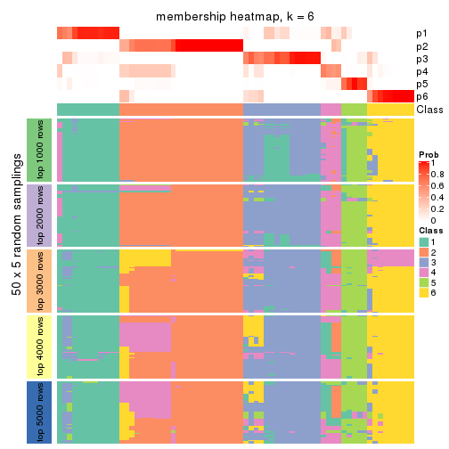
As soon as we have had the classes for columns, we can look for signatures which are significantly different between classes which can be candidate marks for certain classes. Following are the heatmaps for signatures.
Signature heatmaps where rows are scaled:
get_signatures(res, k = 2)
get_signatures(res, k = 3)
get_signatures(res, k = 4)
get_signatures(res, k = 5)
get_signatures(res, k = 6)
Signature heatmaps where rows are not scaled:
get_signatures(res, k = 2, scale_rows = FALSE)
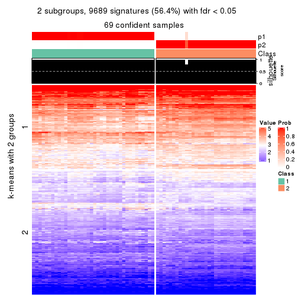
get_signatures(res, k = 3, scale_rows = FALSE)
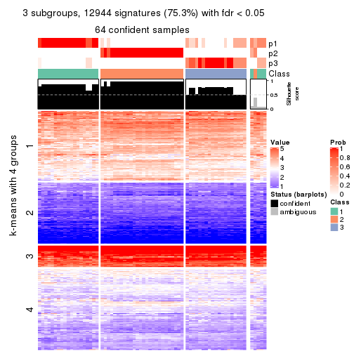
get_signatures(res, k = 4, scale_rows = FALSE)
get_signatures(res, k = 5, scale_rows = FALSE)
get_signatures(res, k = 6, scale_rows = FALSE)
Compare the overlap of signatures from different k:
compare_signatures(res)
get_signature() returns a data frame invisibly. TO get the list of signatures, the function
call should be assigned to a variable explicitly. In following code, if plot argument is set
to FALSE, no heatmap is plotted while only the differential analysis is performed.
# code only for demonstration
tb = get_signature(res, k = ..., plot = FALSE)
An example of the output of tb is:
#> which_row fdr mean_1 mean_2 scaled_mean_1 scaled_mean_2 km
#> 1 38 0.042760348 8.373488 9.131774 -0.5533452 0.5164555 1
#> 2 40 0.018707592 7.106213 8.469186 -0.6173731 0.5762149 1
#> 3 55 0.019134737 10.221463 11.207825 -0.6159697 0.5749050 1
#> 4 59 0.006059896 5.921854 7.869574 -0.6899429 0.6439467 1
#> 5 60 0.018055526 8.928898 10.211722 -0.6204761 0.5791110 1
#> 6 98 0.009384629 15.714769 14.887706 0.6635654 -0.6193277 2
...
The columns in tb are:
which_row: row indices corresponding to the input matrix.fdr: FDR for the differential test. mean_x: The mean value in group x.scaled_mean_x: The mean value in group x after rows are scaled.km: Row groups if k-means clustering is applied to rows.UMAP plot which shows how samples are separated.
dimension_reduction(res, k = 2, method = "UMAP")
dimension_reduction(res, k = 3, method = "UMAP")
dimension_reduction(res, k = 4, method = "UMAP")

dimension_reduction(res, k = 5, method = "UMAP")
dimension_reduction(res, k = 6, method = "UMAP")
Following heatmap shows how subgroups are split when increasing k:
collect_classes(res)
If matrix rows can be associated to genes, consider to use GO_Enrichment(res,
...) to perform function enrichment for the signature genes.
The object with results only for a single top-value method and a single partition method can be extracted as:
res = res_list["ATC", "pam"]
# you can also extract it by
# res = res_list["ATC:pam"]
A summary of res and all the functions that can be applied to it:
res
#> A 'ConsensusPartition' object with k = 2, 3, 4, 5, 6.
#> On a matrix with 17181 rows and 69 columns.
#> Top rows (1000, 2000, 3000, 4000, 5000) are extracted by 'ATC' method.
#> Subgroups are detected by 'pam' method.
#> Performed in total 1250 partitions by row resampling.
#> Best k for subgroups seems to be 2.
#>
#> Following methods can be applied to this 'ConsensusPartition' object:
#> [1] "cola_report" "collect_classes" "collect_plots"
#> [4] "collect_stats" "colnames" "compare_signatures"
#> [7] "consensus_heatmap" "dimension_reduction" "functional_enrichment"
#> [10] "get_anno_col" "get_anno" "get_classes"
#> [13] "get_consensus" "get_matrix" "get_membership"
#> [16] "get_param" "get_signatures" "get_stats"
#> [19] "is_best_k" "is_stable_k" "membership_heatmap"
#> [22] "ncol" "nrow" "plot_ecdf"
#> [25] "rownames" "select_partition_number" "show"
#> [28] "suggest_best_k" "test_to_known_factors"
collect_plots() function collects all the plots made from res for all k (number of partitions)
into one single page to provide an easy and fast comparison between different k.
collect_plots(res)
The plots are:
k and the heatmap of
predicted classes for each k.k.k.k.All the plots in panels can be made by individual functions and they are plotted later in this section.
select_partition_number() produces several plots showing different
statistics for choosing “optimized” k. There are following statistics:
k;k, the area increased is defined as \(A_k - A_{k-1}\).The detailed explanations of these statistics can be found in the cola vignette.
Generally speaking, lower PAC score, higher mean silhouette score or higher
concordance corresponds to better partition. Rand index and Jaccard index
measure how similar the current partition is compared to partition with k-1.
If they are too similar, we won't accept k is better than k-1.
select_partition_number(res)
The numeric values for all these statistics can be obtained by get_stats().
get_stats(res)
#> k 1-PAC mean_silhouette concordance area_increased Rand Jaccard
#> 2 2 1.000 0.975 0.989 0.4781 0.517 0.517
#> 3 3 0.805 0.807 0.927 0.3288 0.847 0.703
#> 4 4 0.697 0.453 0.752 0.1713 0.777 0.493
#> 5 5 0.816 0.745 0.837 0.0622 0.779 0.384
#> 6 6 0.788 0.617 0.802 0.0395 0.954 0.791
suggest_best_k() suggests the best \(k\) based on these statistics. The rules are as follows:
NA.suggest_best_k(res)
#> [1] 2
Following shows the table of the partitions (You need to click the show/hide
code output link to see it). The membership matrix (columns with name p*)
is inferred by
clue::cl_consensus()
function with the SE method. Basically the value in the membership matrix
represents the probability to belong to a certain group. The finall class
label for an item is determined with the group with highest probability it
belongs to.
In get_classes() function, the entropy is calculated from the membership
matrix and the silhouette score is calculated from the consensus matrix.
cbind(get_classes(res, k = 2), get_membership(res, k = 2))
#> class entropy silhouette p1 p2
#> SRR1747143 1 0.000 1.000 1.000 0.000
#> SRR1747144 1 0.000 1.000 1.000 0.000
#> SRR1747145 1 0.000 1.000 1.000 0.000
#> SRR1747146 1 0.000 1.000 1.000 0.000
#> SRR1747148 1 0.000 1.000 1.000 0.000
#> SRR1747147 1 0.000 1.000 1.000 0.000
#> SRR1747149 1 0.000 1.000 1.000 0.000
#> SRR1747150 1 0.000 1.000 1.000 0.000
#> SRR1747151 1 0.000 1.000 1.000 0.000
#> SRR1747152 1 0.000 1.000 1.000 0.000
#> SRR1747153 1 0.000 1.000 1.000 0.000
#> SRR1747154 1 0.000 1.000 1.000 0.000
#> SRR1747155 2 0.184 0.947 0.028 0.972
#> SRR1747156 1 0.000 1.000 1.000 0.000
#> SRR1747157 1 0.000 1.000 1.000 0.000
#> SRR1747159 1 0.000 1.000 1.000 0.000
#> SRR1747158 1 0.000 1.000 1.000 0.000
#> SRR1747160 2 0.000 0.970 0.000 1.000
#> SRR1747161 1 0.000 1.000 1.000 0.000
#> SRR1747162 1 0.000 1.000 1.000 0.000
#> SRR1747163 1 0.000 1.000 1.000 0.000
#> SRR1747164 1 0.000 1.000 1.000 0.000
#> SRR1747165 1 0.000 1.000 1.000 0.000
#> SRR1747167 1 0.000 1.000 1.000 0.000
#> SRR1747166 1 0.000 1.000 1.000 0.000
#> SRR1747168 2 0.000 0.970 0.000 1.000
#> SRR1747169 2 0.000 0.970 0.000 1.000
#> SRR1747170 2 0.000 0.970 0.000 1.000
#> SRR1747172 2 0.000 0.970 0.000 1.000
#> SRR1747171 2 0.000 0.970 0.000 1.000
#> SRR1747173 2 0.000 0.970 0.000 1.000
#> SRR1747174 2 0.000 0.970 0.000 1.000
#> SRR1747175 1 0.000 1.000 1.000 0.000
#> SRR1747176 2 0.000 0.970 0.000 1.000
#> SRR1747177 1 0.000 1.000 1.000 0.000
#> SRR1747178 1 0.000 1.000 1.000 0.000
#> SRR1747179 1 0.000 1.000 1.000 0.000
#> SRR1747180 2 0.000 0.970 0.000 1.000
#> SRR1747181 2 0.775 0.721 0.228 0.772
#> SRR1747183 1 0.000 1.000 1.000 0.000
#> SRR1747182 2 0.000 0.970 0.000 1.000
#> SRR1747184 1 0.000 1.000 1.000 0.000
#> SRR1747185 1 0.000 1.000 1.000 0.000
#> SRR1747186 2 0.000 0.970 0.000 1.000
#> SRR1747187 2 0.000 0.970 0.000 1.000
#> SRR1747188 2 0.000 0.970 0.000 1.000
#> SRR1747189 2 0.000 0.970 0.000 1.000
#> SRR1747191 2 0.000 0.970 0.000 1.000
#> SRR1747190 2 0.000 0.970 0.000 1.000
#> SRR1747192 1 0.000 1.000 1.000 0.000
#> SRR1747193 1 0.000 1.000 1.000 0.000
#> SRR1747194 1 0.000 1.000 1.000 0.000
#> SRR1747195 2 0.680 0.787 0.180 0.820
#> SRR1747197 2 0.925 0.516 0.340 0.660
#> SRR1747196 1 0.000 1.000 1.000 0.000
#> SRR1747199 1 0.000 1.000 1.000 0.000
#> SRR1747198 1 0.000 1.000 1.000 0.000
#> SRR1747200 2 0.000 0.970 0.000 1.000
#> SRR1747201 1 0.000 1.000 1.000 0.000
#> SRR1747202 2 0.000 0.970 0.000 1.000
#> SRR1747203 2 0.000 0.970 0.000 1.000
#> SRR1747204 1 0.000 1.000 1.000 0.000
#> SRR1747205 2 0.000 0.970 0.000 1.000
#> SRR1747206 1 0.000 1.000 1.000 0.000
#> SRR1747207 1 0.000 1.000 1.000 0.000
#> SRR1747208 2 0.000 0.970 0.000 1.000
#> SRR1747210 1 0.000 1.000 1.000 0.000
#> SRR1747209 2 0.000 0.970 0.000 1.000
#> SRR1747211 1 0.000 1.000 1.000 0.000
cbind(get_classes(res, k = 3), get_membership(res, k = 3))
#> class entropy silhouette p1 p2 p3
#> SRR1747143 3 0.6140 0.130 0.404 0.000 0.596
#> SRR1747144 1 0.0000 0.786 1.000 0.000 0.000
#> SRR1747145 3 0.0000 0.919 0.000 0.000 1.000
#> SRR1747146 3 0.0000 0.919 0.000 0.000 1.000
#> SRR1747148 3 0.0000 0.919 0.000 0.000 1.000
#> SRR1747147 3 0.0000 0.919 0.000 0.000 1.000
#> SRR1747149 1 0.0000 0.786 1.000 0.000 0.000
#> SRR1747150 3 0.0000 0.919 0.000 0.000 1.000
#> SRR1747151 3 0.6126 0.143 0.400 0.000 0.600
#> SRR1747152 3 0.4452 0.681 0.192 0.000 0.808
#> SRR1747153 3 0.0000 0.919 0.000 0.000 1.000
#> SRR1747154 3 0.0000 0.919 0.000 0.000 1.000
#> SRR1747155 2 0.1163 0.913 0.000 0.972 0.028
#> SRR1747156 3 0.0000 0.919 0.000 0.000 1.000
#> SRR1747157 3 0.0000 0.919 0.000 0.000 1.000
#> SRR1747159 3 0.3752 0.737 0.144 0.000 0.856
#> SRR1747158 3 0.0000 0.919 0.000 0.000 1.000
#> SRR1747160 2 0.0000 0.943 0.000 1.000 0.000
#> SRR1747161 3 0.0000 0.919 0.000 0.000 1.000
#> SRR1747162 3 0.0000 0.919 0.000 0.000 1.000
#> SRR1747163 1 0.6126 0.413 0.600 0.000 0.400
#> SRR1747164 3 0.0000 0.919 0.000 0.000 1.000
#> SRR1747165 3 0.0000 0.919 0.000 0.000 1.000
#> SRR1747167 1 0.4555 0.694 0.800 0.000 0.200
#> SRR1747166 3 0.0000 0.919 0.000 0.000 1.000
#> SRR1747168 2 0.0000 0.943 0.000 1.000 0.000
#> SRR1747169 2 0.0000 0.943 0.000 1.000 0.000
#> SRR1747170 2 0.0000 0.943 0.000 1.000 0.000
#> SRR1747172 2 0.0000 0.943 0.000 1.000 0.000
#> SRR1747171 2 0.0000 0.943 0.000 1.000 0.000
#> SRR1747173 2 0.0000 0.943 0.000 1.000 0.000
#> SRR1747174 2 0.0000 0.943 0.000 1.000 0.000
#> SRR1747175 3 0.0000 0.919 0.000 0.000 1.000
#> SRR1747176 2 0.0000 0.943 0.000 1.000 0.000
#> SRR1747177 3 0.0424 0.913 0.008 0.000 0.992
#> SRR1747178 1 0.0000 0.786 1.000 0.000 0.000
#> SRR1747179 3 0.0424 0.913 0.008 0.000 0.992
#> SRR1747180 2 0.0000 0.943 0.000 1.000 0.000
#> SRR1747181 2 0.9919 -0.083 0.324 0.392 0.284
#> SRR1747183 1 0.6062 0.447 0.616 0.000 0.384
#> SRR1747182 2 0.0000 0.943 0.000 1.000 0.000
#> SRR1747184 1 0.6140 0.308 0.596 0.000 0.404
#> SRR1747185 3 0.0000 0.919 0.000 0.000 1.000
#> SRR1747186 2 0.0000 0.943 0.000 1.000 0.000
#> SRR1747187 2 0.0000 0.943 0.000 1.000 0.000
#> SRR1747188 2 0.0000 0.943 0.000 1.000 0.000
#> SRR1747189 2 0.0000 0.943 0.000 1.000 0.000
#> SRR1747191 2 0.0000 0.943 0.000 1.000 0.000
#> SRR1747190 2 0.0000 0.943 0.000 1.000 0.000
#> SRR1747192 3 0.0000 0.919 0.000 0.000 1.000
#> SRR1747193 1 0.0000 0.786 1.000 0.000 0.000
#> SRR1747194 3 0.4555 0.671 0.200 0.000 0.800
#> SRR1747195 2 0.5656 0.588 0.008 0.728 0.264
#> SRR1747197 2 0.6935 0.379 0.024 0.604 0.372
#> SRR1747196 3 0.0000 0.919 0.000 0.000 1.000
#> SRR1747199 1 0.6140 0.308 0.596 0.000 0.404
#> SRR1747198 3 0.6126 0.229 0.400 0.000 0.600
#> SRR1747200 2 0.0000 0.943 0.000 1.000 0.000
#> SRR1747201 3 0.0424 0.913 0.008 0.000 0.992
#> SRR1747202 2 0.0000 0.943 0.000 1.000 0.000
#> SRR1747203 2 0.0000 0.943 0.000 1.000 0.000
#> SRR1747204 3 0.0000 0.919 0.000 0.000 1.000
#> SRR1747205 2 0.0000 0.943 0.000 1.000 0.000
#> SRR1747206 1 0.0000 0.786 1.000 0.000 0.000
#> SRR1747207 1 0.0000 0.786 1.000 0.000 0.000
#> SRR1747208 2 0.0000 0.943 0.000 1.000 0.000
#> SRR1747210 1 0.4452 0.699 0.808 0.000 0.192
#> SRR1747209 2 0.0000 0.943 0.000 1.000 0.000
#> SRR1747211 3 0.0424 0.913 0.008 0.000 0.992
cbind(get_classes(res, k = 4), get_membership(res, k = 4))
#> class entropy silhouette p1 p2 p3 p4
#> SRR1747143 3 0.4898 -0.58003 0.000 0.000 0.584 0.416
#> SRR1747144 4 0.4855 0.86977 0.000 0.000 0.400 0.600
#> SRR1747145 2 0.7610 -0.53551 0.200 0.400 0.400 0.000
#> SRR1747146 2 0.7610 -0.53551 0.200 0.400 0.400 0.000
#> SRR1747148 3 0.4855 0.49732 0.000 0.400 0.600 0.000
#> SRR1747147 3 0.7610 0.42806 0.200 0.400 0.400 0.000
#> SRR1747149 4 0.4855 0.06436 0.400 0.000 0.000 0.600
#> SRR1747150 3 0.1888 0.40450 0.044 0.000 0.940 0.016
#> SRR1747151 3 0.4877 -0.56506 0.000 0.000 0.592 0.408
#> SRR1747152 3 0.4855 0.49732 0.000 0.400 0.600 0.000
#> SRR1747153 3 0.7610 0.42806 0.200 0.400 0.400 0.000
#> SRR1747154 3 0.1211 0.42104 0.040 0.000 0.960 0.000
#> SRR1747155 2 0.5147 0.03056 0.200 0.740 0.060 0.000
#> SRR1747156 3 0.7610 0.42806 0.200 0.400 0.400 0.000
#> SRR1747157 3 0.4855 0.49732 0.000 0.400 0.600 0.000
#> SRR1747159 3 0.1637 0.35672 0.000 0.000 0.940 0.060
#> SRR1747158 1 0.6384 0.05481 0.532 0.400 0.068 0.000
#> SRR1747160 2 0.4864 0.07333 0.172 0.768 0.060 0.000
#> SRR1747161 3 0.1888 0.40450 0.044 0.000 0.940 0.016
#> SRR1747162 3 0.0000 0.42343 0.000 0.000 1.000 0.000
#> SRR1747163 4 0.4855 0.86977 0.000 0.000 0.400 0.600
#> SRR1747164 2 0.7610 -0.53551 0.200 0.400 0.400 0.000
#> SRR1747165 3 0.7610 0.42806 0.200 0.400 0.400 0.000
#> SRR1747167 4 0.4855 0.86977 0.000 0.000 0.400 0.600
#> SRR1747166 3 0.1888 0.40450 0.044 0.000 0.940 0.016
#> SRR1747168 2 0.2623 0.42774 0.000 0.908 0.028 0.064
#> SRR1747169 2 0.4855 0.74645 0.000 0.600 0.000 0.400
#> SRR1747170 2 0.4855 0.74645 0.000 0.600 0.000 0.400
#> SRR1747172 2 0.4855 0.74645 0.000 0.600 0.000 0.400
#> SRR1747171 2 0.4855 0.74645 0.000 0.600 0.000 0.400
#> SRR1747173 2 0.4855 0.74645 0.000 0.600 0.000 0.400
#> SRR1747174 2 0.4855 0.74645 0.000 0.600 0.000 0.400
#> SRR1747175 3 0.1637 0.40740 0.060 0.000 0.940 0.000
#> SRR1747176 2 0.4855 0.74645 0.000 0.600 0.000 0.400
#> SRR1747177 1 0.5929 -0.00949 0.596 0.048 0.356 0.000
#> SRR1747178 1 0.7476 0.12484 0.460 0.000 0.184 0.356
#> SRR1747179 1 0.0707 0.65549 0.980 0.000 0.020 0.000
#> SRR1747180 2 0.4855 0.74645 0.000 0.600 0.000 0.400
#> SRR1747181 1 0.0000 0.64906 1.000 0.000 0.000 0.000
#> SRR1747183 4 0.4855 0.86977 0.000 0.000 0.400 0.600
#> SRR1747182 2 0.4855 0.74645 0.000 0.600 0.000 0.400
#> SRR1747184 1 0.3610 0.64545 0.800 0.000 0.200 0.000
#> SRR1747185 3 0.5213 0.38236 0.224 0.052 0.724 0.000
#> SRR1747186 2 0.4855 0.74645 0.000 0.600 0.000 0.400
#> SRR1747187 2 0.4855 0.74645 0.000 0.600 0.000 0.400
#> SRR1747188 2 0.4855 0.74645 0.000 0.600 0.000 0.400
#> SRR1747189 2 0.4855 0.74645 0.000 0.600 0.000 0.400
#> SRR1747191 2 0.4855 0.74645 0.000 0.600 0.000 0.400
#> SRR1747190 2 0.4855 0.74645 0.000 0.600 0.000 0.400
#> SRR1747192 2 0.7699 -0.55435 0.220 0.400 0.380 0.000
#> SRR1747193 1 0.4866 0.29213 0.596 0.000 0.000 0.404
#> SRR1747194 1 0.3649 0.64355 0.796 0.000 0.204 0.000
#> SRR1747195 1 0.1302 0.62777 0.956 0.000 0.044 0.000
#> SRR1747197 1 0.6432 0.12191 0.536 0.004 0.060 0.400
#> SRR1747196 3 0.4222 0.31005 0.272 0.000 0.728 0.000
#> SRR1747199 1 0.3610 0.64545 0.800 0.000 0.200 0.000
#> SRR1747198 1 0.3610 0.64545 0.800 0.000 0.200 0.000
#> SRR1747200 2 0.4855 0.74645 0.000 0.600 0.000 0.400
#> SRR1747201 1 0.3610 0.64545 0.800 0.000 0.200 0.000
#> SRR1747202 2 0.4855 0.74645 0.000 0.600 0.000 0.400
#> SRR1747203 2 0.5147 0.03056 0.200 0.740 0.060 0.000
#> SRR1747204 3 0.7523 0.43224 0.184 0.400 0.416 0.000
#> SRR1747205 2 0.4855 0.74645 0.000 0.600 0.000 0.400
#> SRR1747206 1 0.3610 0.57324 0.800 0.000 0.000 0.200
#> SRR1747207 1 0.4008 0.53291 0.756 0.000 0.000 0.244
#> SRR1747208 2 0.4855 0.74645 0.000 0.600 0.000 0.400
#> SRR1747210 4 0.4855 0.86977 0.000 0.000 0.400 0.600
#> SRR1747209 2 0.4855 0.74645 0.000 0.600 0.000 0.400
#> SRR1747211 1 0.0592 0.65572 0.984 0.000 0.016 0.000
cbind(get_classes(res, k = 5), get_membership(res, k = 5))
#> class entropy silhouette p1 p2 p3 p4 p5
#> SRR1747143 5 0.3707 0.7153 0.000 0.000 0.000 0.284 0.716
#> SRR1747144 4 0.0000 0.6833 0.000 0.000 0.000 1.000 0.000
#> SRR1747145 3 0.0963 0.8703 0.000 0.000 0.964 0.000 0.036
#> SRR1747146 3 0.0510 0.8768 0.000 0.000 0.984 0.000 0.016
#> SRR1747148 3 0.4384 0.5776 0.016 0.000 0.660 0.000 0.324
#> SRR1747147 3 0.0510 0.8768 0.000 0.000 0.984 0.000 0.016
#> SRR1747149 4 0.0000 0.6833 0.000 0.000 0.000 1.000 0.000
#> SRR1747150 5 0.0000 0.7293 0.000 0.000 0.000 0.000 1.000
#> SRR1747151 5 0.3561 0.7237 0.000 0.000 0.000 0.260 0.740
#> SRR1747152 3 0.3343 0.7529 0.016 0.000 0.812 0.000 0.172
#> SRR1747153 3 0.0510 0.8768 0.000 0.000 0.984 0.000 0.016
#> SRR1747154 5 0.2661 0.6320 0.056 0.000 0.056 0.000 0.888
#> SRR1747155 3 0.0404 0.8593 0.000 0.012 0.988 0.000 0.000
#> SRR1747156 3 0.0510 0.8768 0.000 0.000 0.984 0.000 0.016
#> SRR1747157 3 0.4384 0.5776 0.016 0.000 0.660 0.000 0.324
#> SRR1747159 5 0.0000 0.7293 0.000 0.000 0.000 0.000 1.000
#> SRR1747158 3 0.1668 0.8552 0.028 0.000 0.940 0.000 0.032
#> SRR1747160 3 0.1341 0.8197 0.000 0.056 0.944 0.000 0.000
#> SRR1747161 5 0.0000 0.7293 0.000 0.000 0.000 0.000 1.000
#> SRR1747162 5 0.2573 0.6335 0.016 0.000 0.104 0.000 0.880
#> SRR1747163 5 0.4126 0.6798 0.000 0.000 0.000 0.380 0.620
#> SRR1747164 3 0.0510 0.8768 0.000 0.000 0.984 0.000 0.016
#> SRR1747165 3 0.0510 0.8768 0.000 0.000 0.984 0.000 0.016
#> SRR1747167 5 0.4126 0.6798 0.000 0.000 0.000 0.380 0.620
#> SRR1747166 5 0.0000 0.7293 0.000 0.000 0.000 0.000 1.000
#> SRR1747168 1 0.6712 0.3115 0.424 0.300 0.276 0.000 0.000
#> SRR1747169 2 0.0000 0.9949 0.000 1.000 0.000 0.000 0.000
#> SRR1747170 2 0.0510 0.9881 0.000 0.984 0.016 0.000 0.000
#> SRR1747172 2 0.0510 0.9881 0.000 0.984 0.016 0.000 0.000
#> SRR1747171 2 0.0000 0.9949 0.000 1.000 0.000 0.000 0.000
#> SRR1747173 2 0.0510 0.9881 0.000 0.984 0.016 0.000 0.000
#> SRR1747174 2 0.0000 0.9949 0.000 1.000 0.000 0.000 0.000
#> SRR1747175 1 0.3913 0.6030 0.676 0.000 0.000 0.000 0.324
#> SRR1747176 2 0.0000 0.9949 0.000 1.000 0.000 0.000 0.000
#> SRR1747177 1 0.4367 0.4559 0.620 0.000 0.372 0.000 0.008
#> SRR1747178 4 0.4902 0.6061 0.304 0.000 0.000 0.648 0.048
#> SRR1747179 1 0.4552 0.6168 0.696 0.000 0.040 0.000 0.264
#> SRR1747180 2 0.0000 0.9949 0.000 1.000 0.000 0.000 0.000
#> SRR1747181 1 0.3141 0.2762 0.832 0.000 0.016 0.152 0.000
#> SRR1747183 5 0.4126 0.6798 0.000 0.000 0.000 0.380 0.620
#> SRR1747182 2 0.0510 0.9881 0.000 0.984 0.016 0.000 0.000
#> SRR1747184 4 0.4538 0.6997 0.364 0.000 0.000 0.620 0.016
#> SRR1747185 1 0.3730 0.6073 0.712 0.000 0.000 0.000 0.288
#> SRR1747186 2 0.0000 0.9949 0.000 1.000 0.000 0.000 0.000
#> SRR1747187 2 0.0000 0.9949 0.000 1.000 0.000 0.000 0.000
#> SRR1747188 2 0.0000 0.9949 0.000 1.000 0.000 0.000 0.000
#> SRR1747189 2 0.0510 0.9881 0.000 0.984 0.016 0.000 0.000
#> SRR1747191 2 0.0000 0.9949 0.000 1.000 0.000 0.000 0.000
#> SRR1747190 2 0.0000 0.9949 0.000 1.000 0.000 0.000 0.000
#> SRR1747192 1 0.5265 0.6054 0.636 0.000 0.080 0.000 0.284
#> SRR1747193 4 0.0703 0.6989 0.024 0.000 0.000 0.976 0.000
#> SRR1747194 1 0.0162 0.4649 0.996 0.000 0.000 0.000 0.004
#> SRR1747195 1 0.6289 0.3194 0.452 0.152 0.396 0.000 0.000
#> SRR1747197 1 0.6616 0.3035 0.436 0.136 0.412 0.016 0.000
#> SRR1747196 1 0.4047 0.6044 0.676 0.000 0.004 0.000 0.320
#> SRR1747199 4 0.5906 0.4998 0.284 0.000 0.000 0.576 0.140
#> SRR1747198 1 0.6056 -0.0492 0.536 0.000 0.000 0.324 0.140
#> SRR1747200 2 0.0000 0.9949 0.000 1.000 0.000 0.000 0.000
#> SRR1747201 1 0.5819 0.1678 0.600 0.000 0.000 0.252 0.148
#> SRR1747202 2 0.0510 0.9881 0.000 0.984 0.016 0.000 0.000
#> SRR1747203 3 0.0000 0.8664 0.000 0.000 1.000 0.000 0.000
#> SRR1747204 3 0.4184 0.6171 0.016 0.000 0.700 0.000 0.284
#> SRR1747205 2 0.0000 0.9949 0.000 1.000 0.000 0.000 0.000
#> SRR1747206 4 0.4074 0.7048 0.364 0.000 0.000 0.636 0.000
#> SRR1747207 4 0.4074 0.7048 0.364 0.000 0.000 0.636 0.000
#> SRR1747208 2 0.0000 0.9949 0.000 1.000 0.000 0.000 0.000
#> SRR1747210 5 0.3966 0.6942 0.000 0.000 0.000 0.336 0.664
#> SRR1747209 2 0.0000 0.9949 0.000 1.000 0.000 0.000 0.000
#> SRR1747211 1 0.2516 0.5587 0.860 0.000 0.000 0.000 0.140
cbind(get_classes(res, k = 6), get_membership(res, k = 6))
#> class entropy silhouette p1 p2 p3 p4 p5 p6
#> SRR1747143 3 0.2165 0.73364 0.000 0.000 0.884 0.108 0.008 0.000
#> SRR1747144 4 0.3151 0.62358 0.000 0.000 0.000 0.748 0.252 0.000
#> SRR1747145 6 0.0790 0.82817 0.000 0.000 0.032 0.000 0.000 0.968
#> SRR1747146 6 0.0000 0.83875 0.000 0.000 0.000 0.000 0.000 1.000
#> SRR1747148 6 0.4756 0.58892 0.200 0.000 0.128 0.000 0.000 0.672
#> SRR1747147 6 0.0000 0.83875 0.000 0.000 0.000 0.000 0.000 1.000
#> SRR1747149 4 0.3151 0.62358 0.000 0.000 0.000 0.748 0.252 0.000
#> SRR1747150 3 0.0000 0.74183 0.000 0.000 1.000 0.000 0.000 0.000
#> SRR1747151 3 0.2165 0.73364 0.000 0.000 0.884 0.108 0.008 0.000
#> SRR1747152 6 0.2980 0.71794 0.180 0.000 0.012 0.000 0.000 0.808
#> SRR1747153 6 0.0458 0.83582 0.016 0.000 0.000 0.000 0.000 0.984
#> SRR1747154 3 0.3808 0.53847 0.228 0.000 0.736 0.000 0.000 0.036
#> SRR1747155 6 0.0000 0.83875 0.000 0.000 0.000 0.000 0.000 1.000
#> SRR1747156 6 0.0000 0.83875 0.000 0.000 0.000 0.000 0.000 1.000
#> SRR1747157 6 0.4756 0.58892 0.200 0.000 0.128 0.000 0.000 0.672
#> SRR1747159 3 0.0000 0.74183 0.000 0.000 1.000 0.000 0.000 0.000
#> SRR1747158 6 0.2744 0.78340 0.064 0.000 0.000 0.000 0.072 0.864
#> SRR1747160 6 0.1082 0.80643 0.000 0.040 0.000 0.000 0.004 0.956
#> SRR1747161 3 0.0000 0.74183 0.000 0.000 1.000 0.000 0.000 0.000
#> SRR1747162 3 0.3284 0.59132 0.196 0.000 0.784 0.000 0.000 0.020
#> SRR1747163 3 0.5618 0.57683 0.000 0.000 0.540 0.208 0.252 0.000
#> SRR1747164 6 0.0000 0.83875 0.000 0.000 0.000 0.000 0.000 1.000
#> SRR1747165 6 0.0000 0.83875 0.000 0.000 0.000 0.000 0.000 1.000
#> SRR1747167 3 0.5618 0.57683 0.000 0.000 0.540 0.208 0.252 0.000
#> SRR1747166 3 0.0000 0.74183 0.000 0.000 1.000 0.000 0.000 0.000
#> SRR1747168 5 0.5070 0.12505 0.000 0.328 0.000 0.000 0.576 0.096
#> SRR1747169 2 0.0000 0.79776 0.000 1.000 0.000 0.000 0.000 0.000
#> SRR1747170 2 0.3866 0.23980 0.000 0.516 0.000 0.000 0.484 0.000
#> SRR1747172 2 0.3866 0.23980 0.000 0.516 0.000 0.000 0.484 0.000
#> SRR1747171 2 0.3727 0.38976 0.000 0.612 0.000 0.000 0.388 0.000
#> SRR1747173 2 0.3866 0.23980 0.000 0.516 0.000 0.000 0.484 0.000
#> SRR1747174 2 0.0000 0.79776 0.000 1.000 0.000 0.000 0.000 0.000
#> SRR1747175 3 0.5475 0.21386 0.316 0.000 0.536 0.000 0.148 0.000
#> SRR1747176 2 0.0000 0.79776 0.000 1.000 0.000 0.000 0.000 0.000
#> SRR1747177 5 0.4039 0.40408 0.060 0.000 0.000 0.000 0.732 0.208
#> SRR1747178 4 0.0865 0.68602 0.000 0.000 0.000 0.964 0.036 0.000
#> SRR1747179 1 0.3332 0.64288 0.808 0.000 0.048 0.000 0.144 0.000
#> SRR1747180 2 0.0000 0.79776 0.000 1.000 0.000 0.000 0.000 0.000
#> SRR1747181 4 0.5709 0.00125 0.384 0.000 0.000 0.452 0.164 0.000
#> SRR1747183 3 0.5618 0.57683 0.000 0.000 0.540 0.208 0.252 0.000
#> SRR1747182 2 0.3866 0.23980 0.000 0.516 0.000 0.000 0.484 0.000
#> SRR1747184 4 0.2854 0.66974 0.208 0.000 0.000 0.792 0.000 0.000
#> SRR1747185 1 0.5335 0.40985 0.604 0.000 0.300 0.000 0.040 0.056
#> SRR1747186 2 0.0000 0.79776 0.000 1.000 0.000 0.000 0.000 0.000
#> SRR1747187 2 0.0000 0.79776 0.000 1.000 0.000 0.000 0.000 0.000
#> SRR1747188 2 0.0000 0.79776 0.000 1.000 0.000 0.000 0.000 0.000
#> SRR1747189 2 0.3866 0.23980 0.000 0.516 0.000 0.000 0.484 0.000
#> SRR1747191 2 0.0000 0.79776 0.000 1.000 0.000 0.000 0.000 0.000
#> SRR1747190 2 0.0000 0.79776 0.000 1.000 0.000 0.000 0.000 0.000
#> SRR1747192 5 0.5407 0.17469 0.260 0.000 0.116 0.000 0.608 0.016
#> SRR1747193 4 0.4037 0.66943 0.064 0.000 0.000 0.736 0.200 0.000
#> SRR1747194 1 0.4898 0.40900 0.656 0.000 0.000 0.200 0.144 0.000
#> SRR1747195 1 0.5536 0.32847 0.540 0.000 0.000 0.000 0.168 0.292
#> SRR1747197 6 0.7374 -0.12194 0.228 0.000 0.000 0.200 0.164 0.408
#> SRR1747196 1 0.5748 0.36777 0.492 0.000 0.316 0.000 0.192 0.000
#> SRR1747199 1 0.0458 0.69619 0.984 0.000 0.000 0.000 0.016 0.000
#> SRR1747198 1 0.0000 0.70020 1.000 0.000 0.000 0.000 0.000 0.000
#> SRR1747200 2 0.0000 0.79776 0.000 1.000 0.000 0.000 0.000 0.000
#> SRR1747201 1 0.0146 0.70009 0.996 0.000 0.000 0.000 0.004 0.000
#> SRR1747202 2 0.2664 0.66106 0.000 0.816 0.000 0.000 0.184 0.000
#> SRR1747203 6 0.0146 0.83671 0.000 0.000 0.000 0.000 0.004 0.996
#> SRR1747204 6 0.4641 0.59933 0.200 0.000 0.116 0.000 0.000 0.684
#> SRR1747205 2 0.0000 0.79776 0.000 1.000 0.000 0.000 0.000 0.000
#> SRR1747206 4 0.2854 0.66974 0.208 0.000 0.000 0.792 0.000 0.000
#> SRR1747207 4 0.2854 0.66974 0.208 0.000 0.000 0.792 0.000 0.000
#> SRR1747208 2 0.0603 0.77984 0.004 0.980 0.000 0.000 0.016 0.000
#> SRR1747210 3 0.3744 0.69243 0.000 0.000 0.756 0.200 0.044 0.000
#> SRR1747209 2 0.0000 0.79776 0.000 1.000 0.000 0.000 0.000 0.000
#> SRR1747211 1 0.1910 0.68027 0.892 0.000 0.000 0.000 0.108 0.000
Heatmaps for the consensus matrix. It visualizes the probability of two samples to be in a same group.
consensus_heatmap(res, k = 2)
consensus_heatmap(res, k = 3)
consensus_heatmap(res, k = 4)
consensus_heatmap(res, k = 5)
consensus_heatmap(res, k = 6)
Heatmaps for the membership of samples in all partitions to see how consistent they are:
membership_heatmap(res, k = 2)
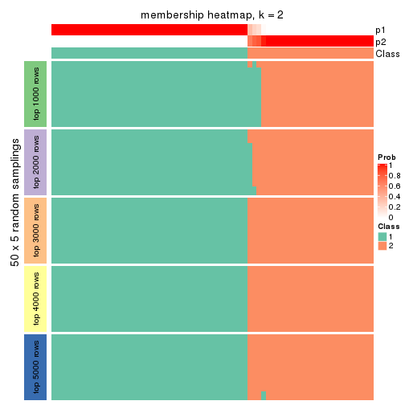
membership_heatmap(res, k = 3)
membership_heatmap(res, k = 4)
membership_heatmap(res, k = 5)
membership_heatmap(res, k = 6)
As soon as we have had the classes for columns, we can look for signatures which are significantly different between classes which can be candidate marks for certain classes. Following are the heatmaps for signatures.
Signature heatmaps where rows are scaled:
get_signatures(res, k = 2)
get_signatures(res, k = 3)
get_signatures(res, k = 4)
get_signatures(res, k = 5)
get_signatures(res, k = 6)
Signature heatmaps where rows are not scaled:
get_signatures(res, k = 2, scale_rows = FALSE)
get_signatures(res, k = 3, scale_rows = FALSE)
get_signatures(res, k = 4, scale_rows = FALSE)
get_signatures(res, k = 5, scale_rows = FALSE)
get_signatures(res, k = 6, scale_rows = FALSE)
Compare the overlap of signatures from different k:
compare_signatures(res)
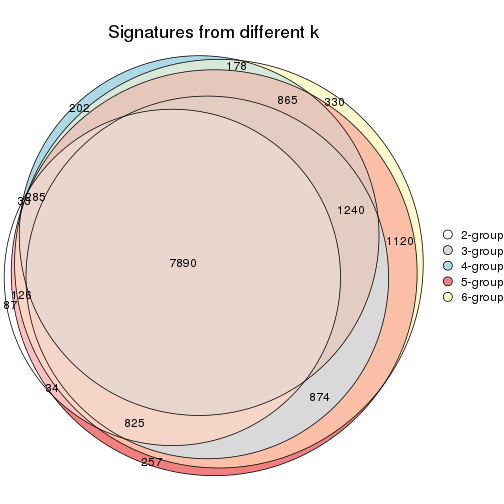
get_signature() returns a data frame invisibly. TO get the list of signatures, the function
call should be assigned to a variable explicitly. In following code, if plot argument is set
to FALSE, no heatmap is plotted while only the differential analysis is performed.
# code only for demonstration
tb = get_signature(res, k = ..., plot = FALSE)
An example of the output of tb is:
#> which_row fdr mean_1 mean_2 scaled_mean_1 scaled_mean_2 km
#> 1 38 0.042760348 8.373488 9.131774 -0.5533452 0.5164555 1
#> 2 40 0.018707592 7.106213 8.469186 -0.6173731 0.5762149 1
#> 3 55 0.019134737 10.221463 11.207825 -0.6159697 0.5749050 1
#> 4 59 0.006059896 5.921854 7.869574 -0.6899429 0.6439467 1
#> 5 60 0.018055526 8.928898 10.211722 -0.6204761 0.5791110 1
#> 6 98 0.009384629 15.714769 14.887706 0.6635654 -0.6193277 2
...
The columns in tb are:
which_row: row indices corresponding to the input matrix.fdr: FDR for the differential test. mean_x: The mean value in group x.scaled_mean_x: The mean value in group x after rows are scaled.km: Row groups if k-means clustering is applied to rows.UMAP plot which shows how samples are separated.
dimension_reduction(res, k = 2, method = "UMAP")
dimension_reduction(res, k = 3, method = "UMAP")
dimension_reduction(res, k = 4, method = "UMAP")
dimension_reduction(res, k = 5, method = "UMAP")
dimension_reduction(res, k = 6, method = "UMAP")

Following heatmap shows how subgroups are split when increasing k:
collect_classes(res)
If matrix rows can be associated to genes, consider to use GO_Enrichment(res,
...) to perform function enrichment for the signature genes.
The object with results only for a single top-value method and a single partition method can be extracted as:
res = res_list["ATC", "mclust"]
# you can also extract it by
# res = res_list["ATC:mclust"]
A summary of res and all the functions that can be applied to it:
res
#> A 'ConsensusPartition' object with k = 2, 3, 4, 5, 6.
#> On a matrix with 17181 rows and 69 columns.
#> Top rows (1000, 2000, 3000, 4000, 5000) are extracted by 'ATC' method.
#> Subgroups are detected by 'mclust' method.
#> Performed in total 1250 partitions by row resampling.
#> Best k for subgroups seems to be 5.
#>
#> Following methods can be applied to this 'ConsensusPartition' object:
#> [1] "cola_report" "collect_classes" "collect_plots"
#> [4] "collect_stats" "colnames" "compare_signatures"
#> [7] "consensus_heatmap" "dimension_reduction" "functional_enrichment"
#> [10] "get_anno_col" "get_anno" "get_classes"
#> [13] "get_consensus" "get_matrix" "get_membership"
#> [16] "get_param" "get_signatures" "get_stats"
#> [19] "is_best_k" "is_stable_k" "membership_heatmap"
#> [22] "ncol" "nrow" "plot_ecdf"
#> [25] "rownames" "select_partition_number" "show"
#> [28] "suggest_best_k" "test_to_known_factors"
collect_plots() function collects all the plots made from res for all k (number of partitions)
into one single page to provide an easy and fast comparison between different k.
collect_plots(res)
The plots are:
k and the heatmap of
predicted classes for each k.k.k.k.All the plots in panels can be made by individual functions and they are plotted later in this section.
select_partition_number() produces several plots showing different
statistics for choosing “optimized” k. There are following statistics:
k;k, the area increased is defined as \(A_k - A_{k-1}\).The detailed explanations of these statistics can be found in the cola vignette.
Generally speaking, lower PAC score, higher mean silhouette score or higher
concordance corresponds to better partition. Rand index and Jaccard index
measure how similar the current partition is compared to partition with k-1.
If they are too similar, we won't accept k is better than k-1.
select_partition_number(res)
The numeric values for all these statistics can be obtained by get_stats().
get_stats(res)
#> k 1-PAC mean_silhouette concordance area_increased Rand Jaccard
#> 2 2 0.500 0.745 0.799 0.414 0.517 0.517
#> 3 3 0.738 0.813 0.886 0.576 0.765 0.570
#> 4 4 0.753 0.815 0.867 0.101 0.845 0.600
#> 5 5 0.788 0.856 0.890 0.089 0.884 0.612
#> 6 6 0.830 0.788 0.864 0.026 0.976 0.889
suggest_best_k() suggests the best \(k\) based on these statistics. The rules are as follows:
NA.suggest_best_k(res)
#> [1] 5
Following shows the table of the partitions (You need to click the show/hide
code output link to see it). The membership matrix (columns with name p*)
is inferred by
clue::cl_consensus()
function with the SE method. Basically the value in the membership matrix
represents the probability to belong to a certain group. The finall class
label for an item is determined with the group with highest probability it
belongs to.
In get_classes() function, the entropy is calculated from the membership
matrix and the silhouette score is calculated from the consensus matrix.
cbind(get_classes(res, k = 2), get_membership(res, k = 2))
#> class entropy silhouette p1 p2
#> SRR1747143 1 0.9909 1.000 0.556 0.444
#> SRR1747144 1 0.9909 1.000 0.556 0.444
#> SRR1747145 1 0.9909 1.000 0.556 0.444
#> SRR1747146 1 0.9909 1.000 0.556 0.444
#> SRR1747148 1 0.9909 1.000 0.556 0.444
#> SRR1747147 1 0.9909 1.000 0.556 0.444
#> SRR1747149 2 0.9866 -0.753 0.432 0.568
#> SRR1747150 1 0.9909 1.000 0.556 0.444
#> SRR1747151 1 0.9909 1.000 0.556 0.444
#> SRR1747152 1 0.9909 1.000 0.556 0.444
#> SRR1747153 1 0.9909 1.000 0.556 0.444
#> SRR1747154 1 0.9909 1.000 0.556 0.444
#> SRR1747155 1 0.9909 1.000 0.556 0.444
#> SRR1747156 1 0.9909 1.000 0.556 0.444
#> SRR1747157 1 0.9909 1.000 0.556 0.444
#> SRR1747159 1 0.9909 1.000 0.556 0.444
#> SRR1747158 1 0.9909 1.000 0.556 0.444
#> SRR1747160 1 0.9909 1.000 0.556 0.444
#> SRR1747161 1 0.9909 1.000 0.556 0.444
#> SRR1747162 1 0.9909 1.000 0.556 0.444
#> SRR1747163 1 0.9909 1.000 0.556 0.444
#> SRR1747164 1 0.9909 1.000 0.556 0.444
#> SRR1747165 1 0.9909 1.000 0.556 0.444
#> SRR1747167 1 0.9909 1.000 0.556 0.444
#> SRR1747166 1 0.9909 1.000 0.556 0.444
#> SRR1747168 2 0.0000 0.692 0.000 1.000
#> SRR1747169 2 0.9909 0.582 0.444 0.556
#> SRR1747170 2 0.0000 0.692 0.000 1.000
#> SRR1747172 2 0.0000 0.692 0.000 1.000
#> SRR1747171 2 0.0000 0.692 0.000 1.000
#> SRR1747173 2 0.0000 0.692 0.000 1.000
#> SRR1747174 2 0.9909 0.582 0.444 0.556
#> SRR1747175 2 0.0672 0.685 0.008 0.992
#> SRR1747176 2 0.9909 0.582 0.444 0.556
#> SRR1747177 2 0.0000 0.692 0.000 1.000
#> SRR1747178 2 0.1184 0.677 0.016 0.984
#> SRR1747179 2 0.0938 0.681 0.012 0.988
#> SRR1747180 2 0.9909 0.582 0.444 0.556
#> SRR1747181 2 0.0000 0.692 0.000 1.000
#> SRR1747183 1 0.9909 1.000 0.556 0.444
#> SRR1747182 2 0.0000 0.692 0.000 1.000
#> SRR1747184 2 0.1184 0.677 0.016 0.984
#> SRR1747185 2 0.1184 0.677 0.016 0.984
#> SRR1747186 2 0.9909 0.582 0.444 0.556
#> SRR1747187 2 0.9909 0.582 0.444 0.556
#> SRR1747188 2 0.9909 0.582 0.444 0.556
#> SRR1747189 2 0.0000 0.692 0.000 1.000
#> SRR1747191 2 0.9909 0.582 0.444 0.556
#> SRR1747190 2 0.9909 0.582 0.444 0.556
#> SRR1747192 2 0.0000 0.692 0.000 1.000
#> SRR1747193 2 0.1184 0.677 0.016 0.984
#> SRR1747194 2 0.0000 0.692 0.000 1.000
#> SRR1747195 2 0.0000 0.692 0.000 1.000
#> SRR1747197 2 0.0000 0.692 0.000 1.000
#> SRR1747196 2 0.0000 0.692 0.000 1.000
#> SRR1747199 2 0.1184 0.677 0.016 0.984
#> SRR1747198 2 0.1184 0.677 0.016 0.984
#> SRR1747200 2 0.9909 0.582 0.444 0.556
#> SRR1747201 2 0.1184 0.677 0.016 0.984
#> SRR1747202 2 0.9896 0.583 0.440 0.560
#> SRR1747203 1 0.9909 1.000 0.556 0.444
#> SRR1747204 2 0.9993 -0.867 0.484 0.516
#> SRR1747205 2 0.9909 0.582 0.444 0.556
#> SRR1747206 2 0.1184 0.677 0.016 0.984
#> SRR1747207 2 0.1184 0.677 0.016 0.984
#> SRR1747208 2 0.4939 0.655 0.108 0.892
#> SRR1747210 1 0.9909 1.000 0.556 0.444
#> SRR1747209 2 0.9909 0.582 0.444 0.556
#> SRR1747211 2 0.0000 0.692 0.000 1.000
cbind(get_classes(res, k = 3), get_membership(res, k = 3))
#> class entropy silhouette p1 p2 p3
#> SRR1747143 3 0.0592 0.974 0.000 0.012 0.988
#> SRR1747144 1 0.6313 0.548 0.676 0.016 0.308
#> SRR1747145 3 0.0000 0.968 0.000 0.000 1.000
#> SRR1747146 3 0.0000 0.968 0.000 0.000 1.000
#> SRR1747148 3 0.0592 0.974 0.000 0.012 0.988
#> SRR1747147 3 0.0000 0.968 0.000 0.000 1.000
#> SRR1747149 1 0.6684 0.829 0.676 0.292 0.032
#> SRR1747150 3 0.0592 0.974 0.000 0.012 0.988
#> SRR1747151 3 0.0592 0.974 0.000 0.012 0.988
#> SRR1747152 3 0.0592 0.974 0.000 0.012 0.988
#> SRR1747153 3 0.0000 0.968 0.000 0.000 1.000
#> SRR1747154 3 0.0592 0.974 0.000 0.012 0.988
#> SRR1747155 3 0.0592 0.974 0.000 0.012 0.988
#> SRR1747156 3 0.0000 0.968 0.000 0.000 1.000
#> SRR1747157 3 0.0592 0.974 0.000 0.012 0.988
#> SRR1747159 3 0.0592 0.974 0.000 0.012 0.988
#> SRR1747158 3 0.0747 0.970 0.000 0.016 0.984
#> SRR1747160 3 0.0592 0.974 0.000 0.012 0.988
#> SRR1747161 3 0.0592 0.974 0.000 0.012 0.988
#> SRR1747162 3 0.0592 0.974 0.000 0.012 0.988
#> SRR1747163 3 0.6497 0.420 0.336 0.016 0.648
#> SRR1747164 3 0.0000 0.968 0.000 0.000 1.000
#> SRR1747165 3 0.0000 0.968 0.000 0.000 1.000
#> SRR1747167 1 0.6313 0.548 0.676 0.016 0.308
#> SRR1747166 3 0.0592 0.974 0.000 0.012 0.988
#> SRR1747168 2 0.0000 0.783 0.000 1.000 0.000
#> SRR1747169 2 0.5733 0.766 0.324 0.676 0.000
#> SRR1747170 2 0.0000 0.783 0.000 1.000 0.000
#> SRR1747172 2 0.0424 0.781 0.008 0.992 0.000
#> SRR1747171 2 0.0424 0.781 0.008 0.992 0.000
#> SRR1747173 2 0.0000 0.783 0.000 1.000 0.000
#> SRR1747174 2 0.5733 0.766 0.324 0.676 0.000
#> SRR1747175 1 0.6302 0.588 0.520 0.480 0.000
#> SRR1747176 2 0.5733 0.766 0.324 0.676 0.000
#> SRR1747177 2 0.0000 0.783 0.000 1.000 0.000
#> SRR1747178 1 0.5706 0.841 0.680 0.320 0.000
#> SRR1747179 2 0.6026 -0.213 0.376 0.624 0.000
#> SRR1747180 2 0.5733 0.766 0.324 0.676 0.000
#> SRR1747181 1 0.5678 0.844 0.684 0.316 0.000
#> SRR1747183 1 0.6313 0.548 0.676 0.016 0.308
#> SRR1747182 2 0.0000 0.783 0.000 1.000 0.000
#> SRR1747184 1 0.5678 0.844 0.684 0.316 0.000
#> SRR1747185 1 0.6045 0.770 0.620 0.380 0.000
#> SRR1747186 2 0.4002 0.781 0.160 0.840 0.000
#> SRR1747187 2 0.5733 0.766 0.324 0.676 0.000
#> SRR1747188 2 0.5733 0.766 0.324 0.676 0.000
#> SRR1747189 2 0.0000 0.783 0.000 1.000 0.000
#> SRR1747191 2 0.5733 0.766 0.324 0.676 0.000
#> SRR1747190 2 0.5733 0.766 0.324 0.676 0.000
#> SRR1747192 2 0.0000 0.783 0.000 1.000 0.000
#> SRR1747193 1 0.5678 0.844 0.684 0.316 0.000
#> SRR1747194 2 0.0000 0.783 0.000 1.000 0.000
#> SRR1747195 2 0.1031 0.766 0.024 0.976 0.000
#> SRR1747197 2 0.1163 0.762 0.028 0.972 0.000
#> SRR1747196 2 0.0000 0.783 0.000 1.000 0.000
#> SRR1747199 1 0.5678 0.844 0.684 0.316 0.000
#> SRR1747198 1 0.5678 0.844 0.684 0.316 0.000
#> SRR1747200 2 0.5733 0.766 0.324 0.676 0.000
#> SRR1747201 1 0.5678 0.844 0.684 0.316 0.000
#> SRR1747202 2 0.5678 0.767 0.316 0.684 0.000
#> SRR1747203 3 0.0592 0.974 0.000 0.012 0.988
#> SRR1747204 3 0.3669 0.877 0.064 0.040 0.896
#> SRR1747205 2 0.5733 0.766 0.324 0.676 0.000
#> SRR1747206 1 0.5678 0.844 0.684 0.316 0.000
#> SRR1747207 1 0.5678 0.844 0.684 0.316 0.000
#> SRR1747208 2 0.5650 0.765 0.312 0.688 0.000
#> SRR1747210 1 0.6313 0.548 0.676 0.016 0.308
#> SRR1747209 2 0.1643 0.785 0.044 0.956 0.000
#> SRR1747211 2 0.0000 0.783 0.000 1.000 0.000
cbind(get_classes(res, k = 4), get_membership(res, k = 4))
#> class entropy silhouette p1 p2 p3 p4
#> SRR1747143 3 0.1576 0.9163 0.048 0.000 0.948 0.004
#> SRR1747144 3 0.3610 0.8220 0.200 0.000 0.800 0.000
#> SRR1747145 3 0.0000 0.9082 0.000 0.000 1.000 0.000
#> SRR1747146 3 0.0000 0.9082 0.000 0.000 1.000 0.000
#> SRR1747148 3 0.1389 0.9171 0.048 0.000 0.952 0.000
#> SRR1747147 3 0.0000 0.9082 0.000 0.000 1.000 0.000
#> SRR1747149 1 0.4277 0.4734 0.720 0.000 0.280 0.000
#> SRR1747150 3 0.1389 0.9171 0.048 0.000 0.952 0.000
#> SRR1747151 3 0.1824 0.9129 0.060 0.000 0.936 0.004
#> SRR1747152 3 0.1389 0.9171 0.048 0.000 0.952 0.000
#> SRR1747153 3 0.0000 0.9082 0.000 0.000 1.000 0.000
#> SRR1747154 3 0.1389 0.9171 0.048 0.000 0.952 0.000
#> SRR1747155 3 0.0000 0.9082 0.000 0.000 1.000 0.000
#> SRR1747156 3 0.0000 0.9082 0.000 0.000 1.000 0.000
#> SRR1747157 3 0.1389 0.9171 0.048 0.000 0.952 0.000
#> SRR1747159 3 0.1389 0.9171 0.048 0.000 0.952 0.000
#> SRR1747158 3 0.5078 0.6449 0.272 0.000 0.700 0.028
#> SRR1747160 3 0.0000 0.9082 0.000 0.000 1.000 0.000
#> SRR1747161 3 0.1389 0.9171 0.048 0.000 0.952 0.000
#> SRR1747162 3 0.1389 0.9171 0.048 0.000 0.952 0.000
#> SRR1747163 3 0.3528 0.8295 0.192 0.000 0.808 0.000
#> SRR1747164 3 0.0000 0.9082 0.000 0.000 1.000 0.000
#> SRR1747165 3 0.0000 0.9082 0.000 0.000 1.000 0.000
#> SRR1747167 3 0.3610 0.8220 0.200 0.000 0.800 0.000
#> SRR1747166 3 0.1389 0.9171 0.048 0.000 0.952 0.000
#> SRR1747168 4 0.2593 0.8921 0.004 0.104 0.000 0.892
#> SRR1747169 2 0.0000 0.8949 0.000 1.000 0.000 0.000
#> SRR1747170 4 0.2593 0.8921 0.004 0.104 0.000 0.892
#> SRR1747172 2 0.4988 0.5620 0.020 0.692 0.000 0.288
#> SRR1747171 2 0.4988 0.5620 0.020 0.692 0.000 0.288
#> SRR1747173 4 0.2714 0.8863 0.004 0.112 0.000 0.884
#> SRR1747174 2 0.0000 0.8949 0.000 1.000 0.000 0.000
#> SRR1747175 1 0.2921 0.8279 0.860 0.000 0.000 0.140
#> SRR1747176 2 0.0000 0.8949 0.000 1.000 0.000 0.000
#> SRR1747177 4 0.4608 0.8668 0.096 0.104 0.000 0.800
#> SRR1747178 1 0.2593 0.8487 0.892 0.004 0.000 0.104
#> SRR1747179 1 0.3377 0.7436 0.848 0.140 0.000 0.012
#> SRR1747180 2 0.0000 0.8949 0.000 1.000 0.000 0.000
#> SRR1747181 1 0.5263 -0.0215 0.544 0.448 0.000 0.008
#> SRR1747183 3 0.3569 0.8260 0.196 0.000 0.804 0.000
#> SRR1747182 4 0.2593 0.8921 0.004 0.104 0.000 0.892
#> SRR1747184 1 0.0657 0.8450 0.984 0.004 0.000 0.012
#> SRR1747185 1 0.2773 0.8443 0.880 0.004 0.000 0.116
#> SRR1747186 2 0.0000 0.8949 0.000 1.000 0.000 0.000
#> SRR1747187 2 0.0000 0.8949 0.000 1.000 0.000 0.000
#> SRR1747188 2 0.0000 0.8949 0.000 1.000 0.000 0.000
#> SRR1747189 4 0.2593 0.8921 0.004 0.104 0.000 0.892
#> SRR1747191 2 0.0000 0.8949 0.000 1.000 0.000 0.000
#> SRR1747190 2 0.0000 0.8949 0.000 1.000 0.000 0.000
#> SRR1747192 4 0.2345 0.8187 0.100 0.000 0.000 0.900
#> SRR1747193 1 0.0657 0.8450 0.984 0.004 0.000 0.012
#> SRR1747194 4 0.2737 0.8195 0.104 0.008 0.000 0.888
#> SRR1747195 2 0.5353 0.2014 0.432 0.556 0.000 0.012
#> SRR1747197 2 0.5372 0.1656 0.444 0.544 0.000 0.012
#> SRR1747196 4 0.2345 0.8187 0.100 0.000 0.000 0.900
#> SRR1747199 1 0.1978 0.8512 0.928 0.004 0.000 0.068
#> SRR1747198 1 0.2654 0.8458 0.888 0.004 0.000 0.108
#> SRR1747200 2 0.0000 0.8949 0.000 1.000 0.000 0.000
#> SRR1747201 1 0.2654 0.8475 0.888 0.004 0.000 0.108
#> SRR1747202 2 0.0000 0.8949 0.000 1.000 0.000 0.000
#> SRR1747203 3 0.1637 0.8862 0.000 0.000 0.940 0.060
#> SRR1747204 3 0.6795 0.0372 0.432 0.000 0.472 0.096
#> SRR1747205 2 0.0000 0.8949 0.000 1.000 0.000 0.000
#> SRR1747206 1 0.0657 0.8450 0.984 0.004 0.000 0.012
#> SRR1747207 1 0.0779 0.8458 0.980 0.004 0.000 0.016
#> SRR1747208 2 0.1022 0.8669 0.032 0.968 0.000 0.000
#> SRR1747210 3 0.3569 0.8260 0.196 0.000 0.804 0.000
#> SRR1747209 2 0.0000 0.8949 0.000 1.000 0.000 0.000
#> SRR1747211 4 0.4786 0.8595 0.108 0.104 0.000 0.788
cbind(get_classes(res, k = 5), get_membership(res, k = 5))
#> class entropy silhouette p1 p2 p3 p4 p5
#> SRR1747143 4 0.3684 0.7731 0.000 0.000 0.280 0.720 0.000
#> SRR1747144 4 0.0671 0.7331 0.016 0.000 0.004 0.980 0.000
#> SRR1747145 3 0.0000 0.9137 0.000 0.000 1.000 0.000 0.000
#> SRR1747146 3 0.0000 0.9137 0.000 0.000 1.000 0.000 0.000
#> SRR1747148 3 0.1341 0.8847 0.056 0.000 0.944 0.000 0.000
#> SRR1747147 3 0.0000 0.9137 0.000 0.000 1.000 0.000 0.000
#> SRR1747149 4 0.3340 0.5830 0.156 0.000 0.004 0.824 0.016
#> SRR1747150 4 0.3730 0.7683 0.000 0.000 0.288 0.712 0.000
#> SRR1747151 4 0.3966 0.7308 0.000 0.000 0.336 0.664 0.000
#> SRR1747152 3 0.1628 0.8819 0.056 0.000 0.936 0.008 0.000
#> SRR1747153 3 0.0000 0.9137 0.000 0.000 1.000 0.000 0.000
#> SRR1747154 3 0.2377 0.7759 0.000 0.000 0.872 0.128 0.000
#> SRR1747155 3 0.0000 0.9137 0.000 0.000 1.000 0.000 0.000
#> SRR1747156 3 0.0000 0.9137 0.000 0.000 1.000 0.000 0.000
#> SRR1747157 3 0.1341 0.8847 0.056 0.000 0.944 0.000 0.000
#> SRR1747159 4 0.3684 0.7731 0.000 0.000 0.280 0.720 0.000
#> SRR1747158 3 0.3928 0.7558 0.176 0.000 0.788 0.028 0.008
#> SRR1747160 3 0.0000 0.9137 0.000 0.000 1.000 0.000 0.000
#> SRR1747161 4 0.3966 0.7330 0.000 0.000 0.336 0.664 0.000
#> SRR1747162 4 0.4291 0.4636 0.000 0.000 0.464 0.536 0.000
#> SRR1747163 4 0.3612 0.7800 0.008 0.000 0.228 0.764 0.000
#> SRR1747164 3 0.0000 0.9137 0.000 0.000 1.000 0.000 0.000
#> SRR1747165 3 0.0000 0.9137 0.000 0.000 1.000 0.000 0.000
#> SRR1747167 4 0.0671 0.7331 0.016 0.000 0.004 0.980 0.000
#> SRR1747166 4 0.3857 0.7553 0.000 0.000 0.312 0.688 0.000
#> SRR1747168 5 0.0290 0.9478 0.000 0.008 0.000 0.000 0.992
#> SRR1747169 2 0.0000 0.9197 0.000 1.000 0.000 0.000 0.000
#> SRR1747170 5 0.0290 0.9478 0.000 0.008 0.000 0.000 0.992
#> SRR1747172 2 0.3074 0.7966 0.000 0.804 0.000 0.000 0.196
#> SRR1747171 2 0.3074 0.7966 0.000 0.804 0.000 0.000 0.196
#> SRR1747173 2 0.3143 0.7900 0.000 0.796 0.000 0.000 0.204
#> SRR1747174 2 0.0000 0.9197 0.000 1.000 0.000 0.000 0.000
#> SRR1747175 1 0.2230 0.9153 0.884 0.000 0.000 0.000 0.116
#> SRR1747176 2 0.0000 0.9197 0.000 1.000 0.000 0.000 0.000
#> SRR1747177 5 0.1894 0.9539 0.072 0.008 0.000 0.000 0.920
#> SRR1747178 1 0.3427 0.9767 0.836 0.000 0.000 0.056 0.108
#> SRR1747179 1 0.3620 0.9668 0.832 0.008 0.000 0.048 0.112
#> SRR1747180 2 0.0000 0.9197 0.000 1.000 0.000 0.000 0.000
#> SRR1747181 2 0.6884 0.5151 0.132 0.580 0.000 0.076 0.212
#> SRR1747183 4 0.0693 0.7358 0.012 0.000 0.008 0.980 0.000
#> SRR1747182 5 0.0290 0.9478 0.000 0.008 0.000 0.000 0.992
#> SRR1747184 1 0.3427 0.9767 0.836 0.000 0.000 0.056 0.108
#> SRR1747185 1 0.2179 0.9185 0.888 0.000 0.000 0.000 0.112
#> SRR1747186 2 0.0000 0.9197 0.000 1.000 0.000 0.000 0.000
#> SRR1747187 2 0.0000 0.9197 0.000 1.000 0.000 0.000 0.000
#> SRR1747188 2 0.0000 0.9197 0.000 1.000 0.000 0.000 0.000
#> SRR1747189 5 0.0290 0.9478 0.000 0.008 0.000 0.000 0.992
#> SRR1747191 2 0.0000 0.9197 0.000 1.000 0.000 0.000 0.000
#> SRR1747190 2 0.0000 0.9197 0.000 1.000 0.000 0.000 0.000
#> SRR1747192 5 0.1732 0.9524 0.080 0.000 0.000 0.000 0.920
#> SRR1747193 1 0.3427 0.9767 0.836 0.000 0.000 0.056 0.108
#> SRR1747194 5 0.1851 0.9462 0.088 0.000 0.000 0.000 0.912
#> SRR1747195 2 0.4490 0.7711 0.040 0.792 0.000 0.060 0.108
#> SRR1747197 2 0.5185 0.7245 0.084 0.748 0.000 0.060 0.108
#> SRR1747196 5 0.1732 0.9524 0.080 0.000 0.000 0.000 0.920
#> SRR1747199 1 0.3427 0.9767 0.836 0.000 0.000 0.056 0.108
#> SRR1747198 1 0.3477 0.9757 0.832 0.000 0.000 0.056 0.112
#> SRR1747200 2 0.0000 0.9197 0.000 1.000 0.000 0.000 0.000
#> SRR1747201 1 0.3477 0.9757 0.832 0.000 0.000 0.056 0.112
#> SRR1747202 2 0.0510 0.9125 0.000 0.984 0.000 0.000 0.016
#> SRR1747203 3 0.0290 0.9084 0.000 0.000 0.992 0.008 0.000
#> SRR1747204 3 0.7717 0.0514 0.276 0.000 0.436 0.212 0.076
#> SRR1747205 2 0.0000 0.9197 0.000 1.000 0.000 0.000 0.000
#> SRR1747206 1 0.3427 0.9767 0.836 0.000 0.000 0.056 0.108
#> SRR1747207 1 0.3569 0.9653 0.828 0.000 0.000 0.068 0.104
#> SRR1747208 2 0.0162 0.9184 0.004 0.996 0.000 0.000 0.000
#> SRR1747210 4 0.1117 0.7351 0.016 0.000 0.020 0.964 0.000
#> SRR1747209 2 0.0404 0.9153 0.000 0.988 0.000 0.000 0.012
#> SRR1747211 5 0.1956 0.9529 0.076 0.008 0.000 0.000 0.916
cbind(get_classes(res, k = 6), get_membership(res, k = 6))
#> class entropy silhouette p1 p2 p3 p4 p5 p6
#> SRR1747143 3 0.5464 0.7156 0.000 0.000 0.572 NA 0.000 0.204
#> SRR1747144 3 0.0146 0.6970 0.004 0.000 0.996 NA 0.000 0.000
#> SRR1747145 6 0.0000 0.8944 0.000 0.000 0.000 NA 0.000 1.000
#> SRR1747146 6 0.0000 0.8944 0.000 0.000 0.000 NA 0.000 1.000
#> SRR1747148 6 0.0632 0.8905 0.000 0.000 0.024 NA 0.000 0.976
#> SRR1747147 6 0.0000 0.8944 0.000 0.000 0.000 NA 0.000 1.000
#> SRR1747149 3 0.2838 0.5251 0.188 0.000 0.808 NA 0.000 0.000
#> SRR1747150 3 0.5315 0.6420 0.000 0.000 0.564 NA 0.000 0.304
#> SRR1747151 3 0.5486 0.7130 0.000 0.000 0.568 NA 0.000 0.208
#> SRR1747152 6 0.0632 0.8905 0.000 0.000 0.024 NA 0.000 0.976
#> SRR1747153 6 0.0000 0.8944 0.000 0.000 0.000 NA 0.000 1.000
#> SRR1747154 6 0.0713 0.8878 0.000 0.000 0.028 NA 0.000 0.972
#> SRR1747155 6 0.0146 0.8942 0.000 0.000 0.004 NA 0.000 0.996
#> SRR1747156 6 0.0000 0.8944 0.000 0.000 0.000 NA 0.000 1.000
#> SRR1747157 6 0.0632 0.8905 0.000 0.000 0.024 NA 0.000 0.976
#> SRR1747159 3 0.4694 0.5535 0.000 0.000 0.572 NA 0.000 0.376
#> SRR1747158 6 0.4630 0.3966 0.004 0.000 0.024 NA 0.004 0.540
#> SRR1747160 6 0.0632 0.8905 0.000 0.000 0.024 NA 0.000 0.976
#> SRR1747161 3 0.4576 0.5105 0.000 0.000 0.560 NA 0.000 0.400
#> SRR1747162 6 0.3833 0.2333 0.000 0.000 0.344 NA 0.000 0.648
#> SRR1747163 3 0.4756 0.7318 0.000 0.000 0.664 NA 0.000 0.112
#> SRR1747164 6 0.0000 0.8944 0.000 0.000 0.000 NA 0.000 1.000
#> SRR1747165 6 0.0000 0.8944 0.000 0.000 0.000 NA 0.000 1.000
#> SRR1747167 3 0.0146 0.6970 0.004 0.000 0.996 NA 0.000 0.000
#> SRR1747166 3 0.5464 0.7156 0.000 0.000 0.572 NA 0.000 0.204
#> SRR1747168 5 0.0405 0.8146 0.004 0.008 0.000 NA 0.988 0.000
#> SRR1747169 2 0.0000 0.8966 0.000 1.000 0.000 NA 0.000 0.000
#> SRR1747170 5 0.0405 0.8146 0.004 0.008 0.000 NA 0.988 0.000
#> SRR1747172 2 0.4304 0.7225 0.004 0.736 0.000 NA 0.160 0.000
#> SRR1747171 2 0.4213 0.7272 0.004 0.744 0.000 NA 0.160 0.000
#> SRR1747173 5 0.5629 -0.0984 0.004 0.412 0.000 NA 0.456 0.000
#> SRR1747174 2 0.0790 0.8930 0.000 0.968 0.000 NA 0.000 0.000
#> SRR1747175 1 0.0632 0.9569 0.976 0.000 0.000 NA 0.024 0.000
#> SRR1747176 2 0.0000 0.8966 0.000 1.000 0.000 NA 0.000 0.000
#> SRR1747177 5 0.2416 0.8112 0.156 0.000 0.000 NA 0.844 0.000
#> SRR1747178 1 0.0260 0.9734 0.992 0.000 0.008 NA 0.000 0.000
#> SRR1747179 1 0.0520 0.9707 0.984 0.000 0.008 NA 0.008 0.000
#> SRR1747180 2 0.0632 0.8941 0.000 0.976 0.000 NA 0.000 0.000
#> SRR1747181 2 0.7261 -0.0231 0.068 0.368 0.008 NA 0.272 0.000
#> SRR1747183 3 0.0146 0.6970 0.004 0.000 0.996 NA 0.000 0.000
#> SRR1747182 5 0.0405 0.8146 0.004 0.008 0.000 NA 0.988 0.000
#> SRR1747184 1 0.1152 0.9696 0.952 0.000 0.004 NA 0.000 0.000
#> SRR1747185 1 0.0146 0.9721 0.996 0.000 0.004 NA 0.000 0.000
#> SRR1747186 2 0.0632 0.8941 0.000 0.976 0.000 NA 0.000 0.000
#> SRR1747187 2 0.0000 0.8966 0.000 1.000 0.000 NA 0.000 0.000
#> SRR1747188 2 0.0000 0.8966 0.000 1.000 0.000 NA 0.000 0.000
#> SRR1747189 5 0.0405 0.8146 0.004 0.008 0.000 NA 0.988 0.000
#> SRR1747191 2 0.0000 0.8966 0.000 1.000 0.000 NA 0.000 0.000
#> SRR1747190 2 0.0000 0.8966 0.000 1.000 0.000 NA 0.000 0.000
#> SRR1747192 5 0.3516 0.8036 0.164 0.000 0.000 NA 0.788 0.000
#> SRR1747193 1 0.1152 0.9696 0.952 0.000 0.004 NA 0.000 0.000
#> SRR1747194 5 0.3445 0.8054 0.156 0.000 0.000 NA 0.796 0.000
#> SRR1747195 2 0.3411 0.6837 0.232 0.756 0.000 NA 0.008 0.000
#> SRR1747197 2 0.3713 0.6236 0.284 0.704 0.000 NA 0.008 0.000
#> SRR1747196 5 0.3516 0.8036 0.164 0.000 0.000 NA 0.788 0.000
#> SRR1747199 1 0.1265 0.9704 0.948 0.000 0.008 NA 0.000 0.000
#> SRR1747198 1 0.0260 0.9734 0.992 0.000 0.008 NA 0.000 0.000
#> SRR1747200 2 0.0937 0.8914 0.000 0.960 0.000 NA 0.000 0.000
#> SRR1747201 1 0.0260 0.9734 0.992 0.000 0.008 NA 0.000 0.000
#> SRR1747202 2 0.0937 0.8914 0.000 0.960 0.000 NA 0.000 0.000
#> SRR1747203 6 0.0713 0.8878 0.000 0.000 0.028 NA 0.000 0.972
#> SRR1747204 6 0.5203 0.3150 0.348 0.000 0.104 NA 0.000 0.548
#> SRR1747205 2 0.0000 0.8966 0.000 1.000 0.000 NA 0.000 0.000
#> SRR1747206 1 0.1265 0.9704 0.948 0.000 0.008 NA 0.000 0.000
#> SRR1747207 1 0.1812 0.9430 0.912 0.000 0.008 NA 0.000 0.000
#> SRR1747208 2 0.0405 0.8931 0.000 0.988 0.000 NA 0.008 0.000
#> SRR1747210 3 0.1349 0.6872 0.004 0.000 0.940 NA 0.000 0.056
#> SRR1747209 2 0.1556 0.8738 0.000 0.920 0.000 NA 0.000 0.000
#> SRR1747211 5 0.2632 0.8057 0.164 0.000 0.004 NA 0.832 0.000
Heatmaps for the consensus matrix. It visualizes the probability of two samples to be in a same group.
consensus_heatmap(res, k = 2)
consensus_heatmap(res, k = 3)
consensus_heatmap(res, k = 4)
consensus_heatmap(res, k = 5)
consensus_heatmap(res, k = 6)
Heatmaps for the membership of samples in all partitions to see how consistent they are:
membership_heatmap(res, k = 2)
membership_heatmap(res, k = 3)
membership_heatmap(res, k = 4)
membership_heatmap(res, k = 5)
membership_heatmap(res, k = 6)
As soon as we have had the classes for columns, we can look for signatures which are significantly different between classes which can be candidate marks for certain classes. Following are the heatmaps for signatures.
Signature heatmaps where rows are scaled:
get_signatures(res, k = 2)
get_signatures(res, k = 3)
get_signatures(res, k = 4)
get_signatures(res, k = 5)
get_signatures(res, k = 6)
Signature heatmaps where rows are not scaled:
get_signatures(res, k = 2, scale_rows = FALSE)
get_signatures(res, k = 3, scale_rows = FALSE)
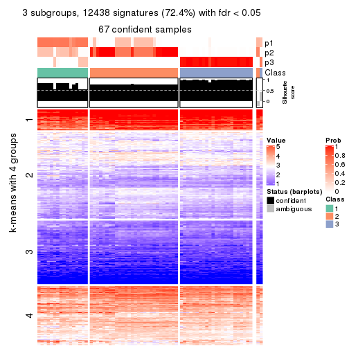
get_signatures(res, k = 4, scale_rows = FALSE)

get_signatures(res, k = 5, scale_rows = FALSE)
get_signatures(res, k = 6, scale_rows = FALSE)
Compare the overlap of signatures from different k:
compare_signatures(res)
get_signature() returns a data frame invisibly. TO get the list of signatures, the function
call should be assigned to a variable explicitly. In following code, if plot argument is set
to FALSE, no heatmap is plotted while only the differential analysis is performed.
# code only for demonstration
tb = get_signature(res, k = ..., plot = FALSE)
An example of the output of tb is:
#> which_row fdr mean_1 mean_2 scaled_mean_1 scaled_mean_2 km
#> 1 38 0.042760348 8.373488 9.131774 -0.5533452 0.5164555 1
#> 2 40 0.018707592 7.106213 8.469186 -0.6173731 0.5762149 1
#> 3 55 0.019134737 10.221463 11.207825 -0.6159697 0.5749050 1
#> 4 59 0.006059896 5.921854 7.869574 -0.6899429 0.6439467 1
#> 5 60 0.018055526 8.928898 10.211722 -0.6204761 0.5791110 1
#> 6 98 0.009384629 15.714769 14.887706 0.6635654 -0.6193277 2
...
The columns in tb are:
which_row: row indices corresponding to the input matrix.fdr: FDR for the differential test. mean_x: The mean value in group x.scaled_mean_x: The mean value in group x after rows are scaled.km: Row groups if k-means clustering is applied to rows.UMAP plot which shows how samples are separated.
dimension_reduction(res, k = 2, method = "UMAP")
dimension_reduction(res, k = 3, method = "UMAP")
dimension_reduction(res, k = 4, method = "UMAP")
dimension_reduction(res, k = 5, method = "UMAP")
dimension_reduction(res, k = 6, method = "UMAP")
Following heatmap shows how subgroups are split when increasing k:
collect_classes(res)
If matrix rows can be associated to genes, consider to use GO_Enrichment(res,
...) to perform function enrichment for the signature genes.
The object with results only for a single top-value method and a single partition method can be extracted as:
res = res_list["ATC", "NMF"]
# you can also extract it by
# res = res_list["ATC:NMF"]
A summary of res and all the functions that can be applied to it:
res
#> A 'ConsensusPartition' object with k = 2, 3, 4, 5, 6.
#> On a matrix with 17181 rows and 69 columns.
#> Top rows (1000, 2000, 3000, 4000, 5000) are extracted by 'ATC' method.
#> Subgroups are detected by 'NMF' method.
#> Performed in total 1250 partitions by row resampling.
#> Best k for subgroups seems to be 3.
#>
#> Following methods can be applied to this 'ConsensusPartition' object:
#> [1] "cola_report" "collect_classes" "collect_plots"
#> [4] "collect_stats" "colnames" "compare_signatures"
#> [7] "consensus_heatmap" "dimension_reduction" "functional_enrichment"
#> [10] "get_anno_col" "get_anno" "get_classes"
#> [13] "get_consensus" "get_matrix" "get_membership"
#> [16] "get_param" "get_signatures" "get_stats"
#> [19] "is_best_k" "is_stable_k" "membership_heatmap"
#> [22] "ncol" "nrow" "plot_ecdf"
#> [25] "rownames" "select_partition_number" "show"
#> [28] "suggest_best_k" "test_to_known_factors"
collect_plots() function collects all the plots made from res for all k (number of partitions)
into one single page to provide an easy and fast comparison between different k.
collect_plots(res)
The plots are:
k and the heatmap of
predicted classes for each k.k.k.k.All the plots in panels can be made by individual functions and they are plotted later in this section.
select_partition_number() produces several plots showing different
statistics for choosing “optimized” k. There are following statistics:
k;k, the area increased is defined as \(A_k - A_{k-1}\).The detailed explanations of these statistics can be found in the cola vignette.
Generally speaking, lower PAC score, higher mean silhouette score or higher
concordance corresponds to better partition. Rand index and Jaccard index
measure how similar the current partition is compared to partition with k-1.
If they are too similar, we won't accept k is better than k-1.
select_partition_number(res)
The numeric values for all these statistics can be obtained by get_stats().
get_stats(res)
#> k 1-PAC mean_silhouette concordance area_increased Rand Jaccard
#> 2 2 0.656 0.849 0.926 0.3588 0.623 0.623
#> 3 3 0.529 0.682 0.778 0.7128 0.574 0.410
#> 4 4 0.408 0.329 0.634 0.1614 0.719 0.410
#> 5 5 0.554 0.529 0.736 0.0753 0.755 0.356
#> 6 6 0.555 0.576 0.706 0.0433 0.885 0.562
suggest_best_k() suggests the best \(k\) based on these statistics. The rules are as follows:
NA.suggest_best_k(res)
#> [1] 3
Following shows the table of the partitions (You need to click the show/hide
code output link to see it). The membership matrix (columns with name p*)
is inferred by
clue::cl_consensus()
function with the SE method. Basically the value in the membership matrix
represents the probability to belong to a certain group. The finall class
label for an item is determined with the group with highest probability it
belongs to.
In get_classes() function, the entropy is calculated from the membership
matrix and the silhouette score is calculated from the consensus matrix.
cbind(get_classes(res, k = 2), get_membership(res, k = 2))
#> class entropy silhouette p1 p2
#> SRR1747143 1 0.5946 0.813 0.856 0.144
#> SRR1747144 1 0.0000 0.818 1.000 0.000
#> SRR1747145 2 0.0376 0.943 0.004 0.996
#> SRR1747146 2 0.0376 0.943 0.004 0.996
#> SRR1747148 2 0.1184 0.936 0.016 0.984
#> SRR1747147 2 0.0376 0.943 0.004 0.996
#> SRR1747149 1 0.0376 0.818 0.996 0.004
#> SRR1747150 2 0.9732 0.126 0.404 0.596
#> SRR1747151 1 0.9522 0.570 0.628 0.372
#> SRR1747152 2 0.9087 0.403 0.324 0.676
#> SRR1747153 2 0.0376 0.943 0.004 0.996
#> SRR1747154 2 0.0376 0.943 0.004 0.996
#> SRR1747155 2 0.0376 0.943 0.004 0.996
#> SRR1747156 2 0.0376 0.943 0.004 0.996
#> SRR1747157 2 0.6887 0.720 0.184 0.816
#> SRR1747159 1 0.4690 0.826 0.900 0.100
#> SRR1747158 2 0.1414 0.940 0.020 0.980
#> SRR1747160 2 0.0376 0.943 0.004 0.996
#> SRR1747161 1 0.9922 0.413 0.552 0.448
#> SRR1747162 2 0.0376 0.943 0.004 0.996
#> SRR1747163 1 0.1414 0.820 0.980 0.020
#> SRR1747164 2 0.0376 0.943 0.004 0.996
#> SRR1747165 2 0.0376 0.943 0.004 0.996
#> SRR1747167 1 0.1414 0.820 0.980 0.020
#> SRR1747166 2 0.9608 0.217 0.384 0.616
#> SRR1747168 2 0.0376 0.943 0.004 0.996
#> SRR1747169 2 0.1414 0.940 0.020 0.980
#> SRR1747170 2 0.0000 0.943 0.000 1.000
#> SRR1747172 2 0.0000 0.943 0.000 1.000
#> SRR1747171 2 0.0376 0.943 0.004 0.996
#> SRR1747173 2 0.0000 0.943 0.000 1.000
#> SRR1747174 2 0.0672 0.943 0.008 0.992
#> SRR1747175 2 0.2778 0.909 0.048 0.952
#> SRR1747176 2 0.1414 0.940 0.020 0.980
#> SRR1747177 2 0.1414 0.940 0.020 0.980
#> SRR1747178 1 0.9170 0.636 0.668 0.332
#> SRR1747179 2 0.1414 0.940 0.020 0.980
#> SRR1747180 2 0.0672 0.943 0.008 0.992
#> SRR1747181 2 0.1414 0.940 0.020 0.980
#> SRR1747183 1 0.1414 0.820 0.980 0.020
#> SRR1747182 2 0.0000 0.943 0.000 1.000
#> SRR1747184 1 0.6148 0.809 0.848 0.152
#> SRR1747185 2 0.0000 0.943 0.000 1.000
#> SRR1747186 2 0.0672 0.943 0.008 0.992
#> SRR1747187 2 0.1414 0.940 0.020 0.980
#> SRR1747188 2 0.1414 0.940 0.020 0.980
#> SRR1747189 2 0.0376 0.943 0.004 0.996
#> SRR1747191 2 0.1414 0.940 0.020 0.980
#> SRR1747190 2 0.1414 0.940 0.020 0.980
#> SRR1747192 2 0.0376 0.943 0.004 0.996
#> SRR1747193 1 0.0672 0.820 0.992 0.008
#> SRR1747194 1 0.9170 0.637 0.668 0.332
#> SRR1747195 2 0.1414 0.940 0.020 0.980
#> SRR1747197 2 0.1414 0.940 0.020 0.980
#> SRR1747196 2 0.4815 0.841 0.104 0.896
#> SRR1747199 2 0.8555 0.555 0.280 0.720
#> SRR1747198 1 0.9686 0.513 0.604 0.396
#> SRR1747200 2 0.0672 0.943 0.008 0.992
#> SRR1747201 2 0.6247 0.789 0.156 0.844
#> SRR1747202 2 0.0938 0.942 0.012 0.988
#> SRR1747203 2 0.0376 0.943 0.004 0.996
#> SRR1747204 2 0.0376 0.943 0.004 0.996
#> SRR1747205 2 0.1414 0.940 0.020 0.980
#> SRR1747206 1 0.5946 0.813 0.856 0.144
#> SRR1747207 1 0.5946 0.813 0.856 0.144
#> SRR1747208 2 0.1414 0.940 0.020 0.980
#> SRR1747210 1 0.3431 0.828 0.936 0.064
#> SRR1747209 2 0.1414 0.940 0.020 0.980
#> SRR1747211 2 0.1414 0.940 0.020 0.980
cbind(get_classes(res, k = 3), get_membership(res, k = 3))
#> class entropy silhouette p1 p2 p3
#> SRR1747143 3 0.1163 0.77507 0.028 0.000 0.972
#> SRR1747144 1 0.1860 0.75980 0.948 0.000 0.052
#> SRR1747145 3 0.2066 0.81456 0.000 0.060 0.940
#> SRR1747146 3 0.4796 0.80415 0.000 0.220 0.780
#> SRR1747148 3 0.1482 0.79948 0.012 0.020 0.968
#> SRR1747147 3 0.2711 0.81667 0.000 0.088 0.912
#> SRR1747149 1 0.0237 0.73738 0.996 0.004 0.000
#> SRR1747150 3 0.0892 0.78040 0.020 0.000 0.980
#> SRR1747151 3 0.1031 0.77746 0.024 0.000 0.976
#> SRR1747152 3 0.7487 0.13439 0.464 0.036 0.500
#> SRR1747153 3 0.1529 0.81083 0.000 0.040 0.960
#> SRR1747154 3 0.0000 0.79224 0.000 0.000 1.000
#> SRR1747155 3 0.4842 0.80297 0.000 0.224 0.776
#> SRR1747156 3 0.1643 0.81182 0.000 0.044 0.956
#> SRR1747157 3 0.2448 0.73703 0.076 0.000 0.924
#> SRR1747159 3 0.6140 0.00143 0.404 0.000 0.596
#> SRR1747158 2 0.4002 0.72041 0.160 0.840 0.000
#> SRR1747160 3 0.4842 0.80297 0.000 0.224 0.776
#> SRR1747161 3 0.2796 0.71951 0.092 0.000 0.908
#> SRR1747162 3 0.1753 0.81288 0.000 0.048 0.952
#> SRR1747163 1 0.4842 0.73929 0.776 0.000 0.224
#> SRR1747164 3 0.4121 0.81289 0.000 0.168 0.832
#> SRR1747165 3 0.4796 0.80415 0.000 0.220 0.780
#> SRR1747167 1 0.4796 0.74121 0.780 0.000 0.220
#> SRR1747166 3 0.0892 0.78040 0.020 0.000 0.980
#> SRR1747168 3 0.4842 0.80297 0.000 0.224 0.776
#> SRR1747169 2 0.1163 0.77907 0.000 0.972 0.028
#> SRR1747170 3 0.5058 0.78845 0.000 0.244 0.756
#> SRR1747172 3 0.5216 0.77366 0.000 0.260 0.740
#> SRR1747171 3 0.4842 0.80297 0.000 0.224 0.776
#> SRR1747173 3 0.5138 0.78176 0.000 0.252 0.748
#> SRR1747174 2 0.2356 0.74889 0.000 0.928 0.072
#> SRR1747175 3 0.8233 0.56297 0.120 0.264 0.616
#> SRR1747176 2 0.1163 0.77907 0.000 0.972 0.028
#> SRR1747177 2 0.1015 0.77980 0.012 0.980 0.008
#> SRR1747178 2 0.5058 0.64873 0.244 0.756 0.000
#> SRR1747179 2 0.2711 0.75573 0.088 0.912 0.000
#> SRR1747180 2 0.1964 0.76310 0.000 0.944 0.056
#> SRR1747181 2 0.4796 0.66993 0.220 0.780 0.000
#> SRR1747183 1 0.4842 0.73929 0.776 0.000 0.224
#> SRR1747182 3 0.5138 0.78189 0.000 0.252 0.748
#> SRR1747184 2 0.6280 0.27929 0.460 0.540 0.000
#> SRR1747185 2 0.6299 -0.25234 0.000 0.524 0.476
#> SRR1747186 2 0.4702 0.59301 0.000 0.788 0.212
#> SRR1747187 2 0.1411 0.77563 0.000 0.964 0.036
#> SRR1747188 2 0.0747 0.78014 0.000 0.984 0.016
#> SRR1747189 2 0.6225 -0.05343 0.000 0.568 0.432
#> SRR1747191 2 0.1031 0.77973 0.000 0.976 0.024
#> SRR1747190 2 0.0892 0.78027 0.000 0.980 0.020
#> SRR1747192 3 0.1031 0.80483 0.000 0.024 0.976
#> SRR1747193 1 0.4702 0.55861 0.788 0.212 0.000
#> SRR1747194 1 0.5678 0.33680 0.684 0.316 0.000
#> SRR1747195 2 0.3267 0.74395 0.116 0.884 0.000
#> SRR1747197 2 0.4399 0.69961 0.188 0.812 0.000
#> SRR1747196 3 0.1129 0.78357 0.020 0.004 0.976
#> SRR1747199 2 0.4796 0.66993 0.220 0.780 0.000
#> SRR1747198 2 0.6291 0.25507 0.468 0.532 0.000
#> SRR1747200 2 0.1753 0.76902 0.000 0.952 0.048
#> SRR1747201 2 0.5987 0.68750 0.208 0.756 0.036
#> SRR1747202 2 0.1860 0.76626 0.000 0.948 0.052
#> SRR1747203 3 0.4842 0.80297 0.000 0.224 0.776
#> SRR1747204 3 0.4842 0.80297 0.000 0.224 0.776
#> SRR1747205 2 0.0592 0.78017 0.000 0.988 0.012
#> SRR1747206 2 0.6280 0.27813 0.460 0.540 0.000
#> SRR1747207 2 0.4842 0.66577 0.224 0.776 0.000
#> SRR1747208 2 0.0000 0.77887 0.000 1.000 0.000
#> SRR1747210 1 0.4842 0.63503 0.776 0.000 0.224
#> SRR1747209 2 0.1163 0.77907 0.000 0.972 0.028
#> SRR1747211 2 0.4178 0.71222 0.172 0.828 0.000
cbind(get_classes(res, k = 4), get_membership(res, k = 4))
#> class entropy silhouette p1 p2 p3 p4
#> SRR1747143 3 0.6093 0.1005 0.004 0.036 0.508 0.452
#> SRR1747144 4 0.4877 0.4229 0.408 0.000 0.000 0.592
#> SRR1747145 3 0.1339 0.6701 0.004 0.024 0.964 0.008
#> SRR1747146 3 0.0817 0.6646 0.024 0.000 0.976 0.000
#> SRR1747148 3 0.1042 0.6648 0.008 0.000 0.972 0.020
#> SRR1747147 3 0.0524 0.6695 0.004 0.000 0.988 0.008
#> SRR1747149 4 0.5126 0.3757 0.444 0.004 0.000 0.552
#> SRR1747150 3 0.6093 0.1005 0.004 0.036 0.508 0.452
#> SRR1747151 3 0.5437 0.2796 0.012 0.008 0.624 0.356
#> SRR1747152 3 0.6281 -0.0537 0.436 0.008 0.516 0.040
#> SRR1747153 3 0.1471 0.6611 0.024 0.004 0.960 0.012
#> SRR1747154 3 0.6018 0.1926 0.004 0.036 0.556 0.404
#> SRR1747155 3 0.2799 0.6346 0.008 0.108 0.884 0.000
#> SRR1747156 3 0.1124 0.6690 0.004 0.012 0.972 0.012
#> SRR1747157 3 0.3551 0.5974 0.108 0.004 0.860 0.028
#> SRR1747159 4 0.7421 0.2305 0.168 0.000 0.400 0.432
#> SRR1747158 1 0.3695 0.3921 0.828 0.016 0.156 0.000
#> SRR1747160 3 0.2831 0.6299 0.004 0.120 0.876 0.000
#> SRR1747161 3 0.5230 0.2739 0.004 0.008 0.620 0.368
#> SRR1747162 3 0.4571 0.6241 0.004 0.116 0.808 0.072
#> SRR1747163 4 0.3479 0.5681 0.000 0.012 0.148 0.840
#> SRR1747164 3 0.0927 0.6714 0.000 0.016 0.976 0.008
#> SRR1747165 3 0.0188 0.6702 0.004 0.000 0.996 0.000
#> SRR1747167 4 0.2408 0.5873 0.000 0.000 0.104 0.896
#> SRR1747166 3 0.5721 0.1656 0.004 0.020 0.548 0.428
#> SRR1747168 2 0.3917 0.4774 0.004 0.844 0.108 0.044
#> SRR1747169 1 0.7218 0.3124 0.444 0.140 0.416 0.000
#> SRR1747170 2 0.2741 0.4832 0.000 0.892 0.096 0.012
#> SRR1747172 2 0.5368 0.3464 0.024 0.636 0.340 0.000
#> SRR1747171 3 0.4677 0.3497 0.004 0.316 0.680 0.000
#> SRR1747173 2 0.5183 0.2268 0.008 0.584 0.408 0.000
#> SRR1747174 2 0.7851 -0.1258 0.268 0.376 0.356 0.000
#> SRR1747175 2 0.6416 0.1576 0.004 0.512 0.056 0.428
#> SRR1747176 1 0.7621 0.3117 0.420 0.204 0.376 0.000
#> SRR1747177 2 0.2505 0.4523 0.020 0.920 0.008 0.052
#> SRR1747178 2 0.6742 0.0702 0.232 0.608 0.000 0.160
#> SRR1747179 2 0.4887 0.2363 0.204 0.756 0.004 0.036
#> SRR1747180 3 0.7851 -0.3471 0.288 0.312 0.400 0.000
#> SRR1747181 1 0.4985 0.2474 0.532 0.468 0.000 0.000
#> SRR1747183 4 0.3695 0.5566 0.000 0.016 0.156 0.828
#> SRR1747182 2 0.2760 0.4791 0.000 0.872 0.128 0.000
#> SRR1747184 1 0.5594 0.4186 0.724 0.112 0.000 0.164
#> SRR1747185 2 0.3927 0.4838 0.012 0.856 0.060 0.072
#> SRR1747186 3 0.7437 -0.1262 0.240 0.248 0.512 0.000
#> SRR1747187 1 0.7858 0.2907 0.396 0.288 0.316 0.000
#> SRR1747188 2 0.5755 -0.2395 0.444 0.528 0.028 0.000
#> SRR1747189 2 0.2032 0.4603 0.028 0.936 0.036 0.000
#> SRR1747191 1 0.7764 0.3279 0.424 0.324 0.252 0.000
#> SRR1747190 1 0.7785 0.2925 0.404 0.348 0.248 0.000
#> SRR1747192 2 0.6990 0.1226 0.004 0.508 0.104 0.384
#> SRR1747193 1 0.6027 0.2074 0.660 0.088 0.000 0.252
#> SRR1747194 2 0.5864 0.1249 0.024 0.488 0.004 0.484
#> SRR1747195 2 0.5168 -0.2831 0.492 0.504 0.004 0.000
#> SRR1747197 1 0.3710 0.4897 0.804 0.192 0.004 0.000
#> SRR1747196 2 0.7045 0.0471 0.004 0.468 0.104 0.424
#> SRR1747199 1 0.5062 0.4906 0.752 0.184 0.000 0.064
#> SRR1747198 1 0.7793 0.1907 0.396 0.356 0.000 0.248
#> SRR1747200 2 0.7730 -0.0888 0.264 0.444 0.292 0.000
#> SRR1747201 2 0.6408 0.1393 0.224 0.660 0.008 0.108
#> SRR1747202 2 0.7692 -0.0984 0.272 0.456 0.272 0.000
#> SRR1747203 3 0.2999 0.6245 0.004 0.132 0.864 0.000
#> SRR1747204 3 0.2334 0.6571 0.004 0.088 0.908 0.000
#> SRR1747205 1 0.7213 0.2875 0.452 0.408 0.140 0.000
#> SRR1747206 1 0.5462 0.4358 0.736 0.112 0.000 0.152
#> SRR1747207 1 0.4931 0.4873 0.776 0.132 0.000 0.092
#> SRR1747208 1 0.6389 0.2587 0.488 0.448 0.064 0.000
#> SRR1747210 4 0.7383 0.5091 0.348 0.004 0.152 0.496
#> SRR1747209 2 0.5200 0.1228 0.264 0.700 0.036 0.000
#> SRR1747211 2 0.2919 0.4023 0.044 0.896 0.000 0.060
cbind(get_classes(res, k = 5), get_membership(res, k = 5))
#> class entropy silhouette p1 p2 p3 p4 p5
#> SRR1747143 3 0.4088 0.789 0.000 0.276 0.712 0.004 0.008
#> SRR1747144 4 0.3906 0.634 0.004 0.000 0.292 0.704 0.000
#> SRR1747145 2 0.3003 0.441 0.000 0.812 0.188 0.000 0.000
#> SRR1747146 2 0.1106 0.599 0.000 0.964 0.012 0.024 0.000
#> SRR1747148 2 0.4128 0.397 0.004 0.784 0.172 0.008 0.032
#> SRR1747147 2 0.1059 0.594 0.000 0.968 0.020 0.004 0.008
#> SRR1747149 4 0.3980 0.640 0.008 0.000 0.284 0.708 0.000
#> SRR1747150 3 0.3957 0.789 0.000 0.280 0.712 0.000 0.008
#> SRR1747151 3 0.4242 0.647 0.000 0.428 0.572 0.000 0.000
#> SRR1747152 4 0.4314 0.434 0.004 0.280 0.016 0.700 0.000
#> SRR1747153 2 0.2138 0.586 0.004 0.928 0.032 0.024 0.012
#> SRR1747154 3 0.4127 0.771 0.000 0.312 0.680 0.000 0.008
#> SRR1747155 2 0.1282 0.597 0.004 0.952 0.044 0.000 0.000
#> SRR1747156 2 0.1410 0.576 0.000 0.940 0.060 0.000 0.000
#> SRR1747157 2 0.4624 0.306 0.000 0.636 0.024 0.340 0.000
#> SRR1747159 3 0.5889 0.659 0.004 0.272 0.596 0.128 0.000
#> SRR1747158 2 0.6945 0.122 0.136 0.452 0.000 0.376 0.036
#> SRR1747160 2 0.1278 0.606 0.000 0.960 0.004 0.020 0.016
#> SRR1747161 2 0.5166 -0.394 0.000 0.528 0.436 0.032 0.004
#> SRR1747162 2 0.3521 0.514 0.000 0.820 0.140 0.000 0.040
#> SRR1747163 3 0.3134 0.709 0.000 0.096 0.864 0.028 0.012
#> SRR1747164 2 0.1478 0.579 0.000 0.936 0.064 0.000 0.000
#> SRR1747165 2 0.0854 0.604 0.000 0.976 0.004 0.012 0.008
#> SRR1747167 3 0.1704 0.537 0.000 0.000 0.928 0.068 0.004
#> SRR1747166 3 0.4088 0.779 0.000 0.304 0.688 0.000 0.008
#> SRR1747168 5 0.1205 0.744 0.000 0.040 0.004 0.000 0.956
#> SRR1747169 2 0.6342 0.421 0.316 0.556 0.000 0.100 0.028
#> SRR1747170 5 0.1856 0.745 0.008 0.044 0.004 0.008 0.936
#> SRR1747172 5 0.6507 0.452 0.036 0.272 0.028 0.060 0.604
#> SRR1747171 2 0.5903 0.143 0.016 0.508 0.008 0.044 0.424
#> SRR1747173 5 0.2477 0.723 0.008 0.092 0.000 0.008 0.892
#> SRR1747174 2 0.7229 0.054 0.100 0.412 0.000 0.080 0.408
#> SRR1747175 5 0.6284 0.435 0.052 0.004 0.316 0.052 0.576
#> SRR1747176 2 0.6476 0.339 0.364 0.508 0.000 0.100 0.028
#> SRR1747177 5 0.2359 0.718 0.044 0.000 0.008 0.036 0.912
#> SRR1747178 1 0.3287 0.737 0.864 0.000 0.016 0.068 0.052
#> SRR1747179 1 0.3191 0.738 0.868 0.000 0.012 0.060 0.060
#> SRR1747180 2 0.7242 0.326 0.108 0.512 0.000 0.096 0.284
#> SRR1747181 1 0.3362 0.710 0.844 0.000 0.000 0.080 0.076
#> SRR1747183 3 0.2026 0.660 0.000 0.044 0.928 0.016 0.012
#> SRR1747182 5 0.1365 0.745 0.004 0.040 0.000 0.004 0.952
#> SRR1747184 4 0.4903 0.522 0.272 0.000 0.036 0.680 0.012
#> SRR1747185 1 0.7465 0.253 0.480 0.044 0.352 0.056 0.068
#> SRR1747186 2 0.7422 0.470 0.152 0.576 0.016 0.112 0.144
#> SRR1747187 2 0.7023 0.427 0.288 0.528 0.000 0.112 0.072
#> SRR1747188 1 0.5606 0.481 0.704 0.156 0.000 0.092 0.048
#> SRR1747189 5 0.1538 0.744 0.008 0.036 0.000 0.008 0.948
#> SRR1747191 2 0.7054 0.234 0.396 0.436 0.000 0.112 0.056
#> SRR1747190 2 0.7474 0.347 0.324 0.460 0.000 0.104 0.112
#> SRR1747192 5 0.2707 0.701 0.000 0.000 0.100 0.024 0.876
#> SRR1747193 1 0.4403 0.155 0.608 0.000 0.008 0.384 0.000
#> SRR1747194 5 0.3646 0.691 0.020 0.000 0.064 0.072 0.844
#> SRR1747195 1 0.1173 0.752 0.964 0.000 0.004 0.020 0.012
#> SRR1747197 1 0.1956 0.727 0.916 0.000 0.000 0.076 0.008
#> SRR1747196 5 0.4558 0.461 0.000 0.000 0.324 0.024 0.652
#> SRR1747199 1 0.1116 0.750 0.964 0.000 0.004 0.028 0.004
#> SRR1747198 1 0.3388 0.726 0.860 0.000 0.056 0.064 0.020
#> SRR1747200 2 0.7366 0.086 0.128 0.408 0.000 0.072 0.392
#> SRR1747201 1 0.3968 0.713 0.832 0.004 0.080 0.056 0.028
#> SRR1747202 5 0.6576 0.274 0.052 0.296 0.000 0.092 0.560
#> SRR1747203 2 0.2313 0.603 0.008 0.920 0.040 0.008 0.024
#> SRR1747204 2 0.3239 0.509 0.004 0.828 0.156 0.000 0.012
#> SRR1747205 1 0.3786 0.669 0.840 0.072 0.000 0.052 0.036
#> SRR1747206 4 0.4669 0.395 0.352 0.000 0.008 0.628 0.012
#> SRR1747207 1 0.2660 0.685 0.864 0.000 0.000 0.128 0.008
#> SRR1747208 1 0.0613 0.745 0.984 0.004 0.000 0.008 0.004
#> SRR1747210 3 0.5364 0.631 0.148 0.132 0.704 0.016 0.000
#> SRR1747209 5 0.7676 0.161 0.332 0.188 0.000 0.072 0.408
#> SRR1747211 1 0.5745 0.364 0.560 0.000 0.020 0.052 0.368
cbind(get_classes(res, k = 6), get_membership(res, k = 6))
#> class entropy silhouette p1 p2 p3 p4 p5 p6
#> SRR1747143 3 0.3380 0.7583 0.004 0.000 0.748 0.000 0.004 0.244
#> SRR1747144 4 0.2883 0.7076 0.000 0.000 0.212 0.788 0.000 0.000
#> SRR1747145 6 0.2544 0.6841 0.004 0.004 0.140 0.000 0.000 0.852
#> SRR1747146 6 0.1585 0.7772 0.000 0.012 0.012 0.036 0.000 0.940
#> SRR1747148 6 0.4442 0.6624 0.020 0.060 0.104 0.036 0.000 0.780
#> SRR1747147 6 0.1180 0.7915 0.004 0.004 0.024 0.008 0.000 0.960
#> SRR1747149 4 0.2883 0.7076 0.000 0.000 0.212 0.788 0.000 0.000
#> SRR1747150 3 0.3373 0.7576 0.000 0.000 0.744 0.000 0.008 0.248
#> SRR1747151 3 0.3860 0.4028 0.000 0.000 0.528 0.000 0.000 0.472
#> SRR1747152 4 0.4371 0.4816 0.000 0.036 0.020 0.708 0.000 0.236
#> SRR1747153 6 0.3219 0.7469 0.000 0.060 0.032 0.056 0.000 0.852
#> SRR1747154 3 0.3756 0.6754 0.004 0.000 0.644 0.000 0.000 0.352
#> SRR1747155 6 0.1194 0.7769 0.008 0.032 0.000 0.004 0.000 0.956
#> SRR1747156 6 0.1219 0.7861 0.000 0.004 0.048 0.000 0.000 0.948
#> SRR1747157 6 0.4710 0.4228 0.000 0.024 0.024 0.336 0.000 0.616
#> SRR1747159 3 0.5304 0.6546 0.000 0.012 0.612 0.112 0.000 0.264
#> SRR1747158 2 0.7700 -0.2607 0.100 0.412 0.036 0.268 0.000 0.184
#> SRR1747160 6 0.1552 0.7674 0.000 0.036 0.004 0.020 0.000 0.940
#> SRR1747161 6 0.5390 -0.2004 0.000 0.004 0.396 0.100 0.000 0.500
#> SRR1747162 6 0.2214 0.7820 0.004 0.012 0.044 0.000 0.028 0.912
#> SRR1747163 3 0.2695 0.7353 0.000 0.000 0.844 0.004 0.008 0.144
#> SRR1747164 6 0.1010 0.7910 0.000 0.004 0.036 0.000 0.000 0.960
#> SRR1747165 6 0.1644 0.7686 0.000 0.052 0.004 0.012 0.000 0.932
#> SRR1747167 3 0.1637 0.5645 0.000 0.004 0.932 0.056 0.004 0.004
#> SRR1747166 3 0.3390 0.7301 0.000 0.000 0.704 0.000 0.000 0.296
#> SRR1747168 5 0.0547 0.7841 0.000 0.020 0.000 0.000 0.980 0.000
#> SRR1747169 2 0.5343 0.6010 0.092 0.572 0.000 0.012 0.000 0.324
#> SRR1747170 5 0.1124 0.7801 0.000 0.036 0.000 0.000 0.956 0.008
#> SRR1747172 2 0.6827 0.4191 0.044 0.388 0.000 0.004 0.352 0.212
#> SRR1747171 6 0.5860 -0.2131 0.000 0.240 0.000 0.008 0.220 0.532
#> SRR1747173 5 0.4466 0.4087 0.000 0.176 0.000 0.000 0.708 0.116
#> SRR1747174 2 0.6618 0.5944 0.008 0.464 0.004 0.020 0.220 0.284
#> SRR1747175 5 0.6916 0.4046 0.104 0.136 0.244 0.004 0.508 0.004
#> SRR1747176 2 0.5397 0.6145 0.100 0.584 0.000 0.008 0.004 0.304
#> SRR1747177 5 0.1168 0.7866 0.028 0.016 0.000 0.000 0.956 0.000
#> SRR1747178 1 0.4878 0.6490 0.736 0.148 0.016 0.048 0.052 0.000
#> SRR1747179 1 0.4431 0.6087 0.688 0.248 0.000 0.004 0.060 0.000
#> SRR1747180 2 0.6383 0.4971 0.000 0.412 0.004 0.024 0.168 0.392
#> SRR1747181 1 0.5219 0.3874 0.520 0.404 0.000 0.012 0.064 0.000
#> SRR1747183 3 0.1847 0.6512 0.008 0.000 0.928 0.008 0.008 0.048
#> SRR1747182 5 0.1524 0.7678 0.000 0.060 0.000 0.000 0.932 0.008
#> SRR1747184 4 0.4709 0.6055 0.132 0.112 0.028 0.728 0.000 0.000
#> SRR1747185 1 0.6872 0.4842 0.524 0.232 0.172 0.004 0.040 0.028
#> SRR1747186 2 0.5672 0.5065 0.016 0.492 0.000 0.012 0.068 0.412
#> SRR1747187 2 0.4736 0.6346 0.056 0.676 0.000 0.004 0.012 0.252
#> SRR1747188 2 0.5218 0.1933 0.268 0.636 0.000 0.016 0.008 0.072
#> SRR1747189 5 0.1913 0.7470 0.000 0.080 0.000 0.000 0.908 0.012
#> SRR1747191 2 0.5042 0.5479 0.120 0.680 0.000 0.004 0.012 0.184
#> SRR1747190 2 0.5438 0.6374 0.080 0.636 0.000 0.008 0.028 0.248
#> SRR1747192 5 0.1313 0.7856 0.016 0.004 0.028 0.000 0.952 0.000
#> SRR1747193 1 0.4749 0.4219 0.656 0.080 0.004 0.260 0.000 0.000
#> SRR1747194 5 0.2485 0.7628 0.064 0.016 0.016 0.008 0.896 0.000
#> SRR1747195 1 0.2100 0.6827 0.884 0.112 0.000 0.000 0.004 0.000
#> SRR1747197 1 0.4438 0.5978 0.708 0.208 0.000 0.080 0.004 0.000
#> SRR1747196 5 0.2750 0.7174 0.020 0.000 0.136 0.000 0.844 0.000
#> SRR1747199 1 0.1471 0.6712 0.932 0.064 0.000 0.004 0.000 0.000
#> SRR1747198 1 0.2934 0.6431 0.884 0.020 0.044 0.024 0.024 0.004
#> SRR1747200 2 0.6328 0.5579 0.012 0.420 0.000 0.004 0.208 0.356
#> SRR1747201 1 0.4453 0.6361 0.756 0.152 0.060 0.000 0.020 0.012
#> SRR1747202 2 0.6699 0.3890 0.000 0.388 0.004 0.032 0.356 0.220
#> SRR1747203 6 0.2520 0.6870 0.012 0.108 0.008 0.000 0.000 0.872
#> SRR1747204 6 0.2800 0.7671 0.016 0.024 0.072 0.004 0.004 0.880
#> SRR1747205 1 0.5913 0.2038 0.484 0.372 0.000 0.008 0.008 0.128
#> SRR1747206 4 0.4408 0.3785 0.356 0.036 0.000 0.608 0.000 0.000
#> SRR1747207 1 0.4068 0.6160 0.756 0.160 0.000 0.080 0.004 0.000
#> SRR1747208 1 0.2773 0.6684 0.836 0.152 0.000 0.004 0.000 0.008
#> SRR1747210 3 0.6209 0.3665 0.336 0.004 0.504 0.040 0.000 0.116
#> SRR1747209 2 0.6849 0.5655 0.128 0.508 0.000 0.000 0.188 0.176
#> SRR1747211 5 0.4314 0.0393 0.484 0.012 0.004 0.000 0.500 0.000
Heatmaps for the consensus matrix. It visualizes the probability of two samples to be in a same group.
consensus_heatmap(res, k = 2)
consensus_heatmap(res, k = 3)
consensus_heatmap(res, k = 4)

consensus_heatmap(res, k = 5)

consensus_heatmap(res, k = 6)
Heatmaps for the membership of samples in all partitions to see how consistent they are:
membership_heatmap(res, k = 2)

membership_heatmap(res, k = 3)
membership_heatmap(res, k = 4)
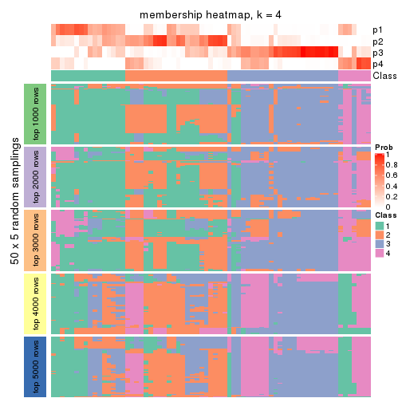
membership_heatmap(res, k = 5)
membership_heatmap(res, k = 6)
As soon as we have had the classes for columns, we can look for signatures which are significantly different between classes which can be candidate marks for certain classes. Following are the heatmaps for signatures.
Signature heatmaps where rows are scaled:
get_signatures(res, k = 2)
get_signatures(res, k = 3)
get_signatures(res, k = 4)
get_signatures(res, k = 5)
get_signatures(res, k = 6)
Signature heatmaps where rows are not scaled:
get_signatures(res, k = 2, scale_rows = FALSE)
get_signatures(res, k = 3, scale_rows = FALSE)
get_signatures(res, k = 4, scale_rows = FALSE)
get_signatures(res, k = 5, scale_rows = FALSE)
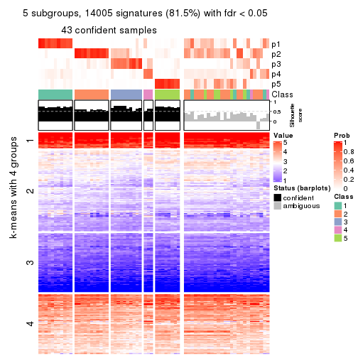
get_signatures(res, k = 6, scale_rows = FALSE)
Compare the overlap of signatures from different k:
compare_signatures(res)
get_signature() returns a data frame invisibly. TO get the list of signatures, the function
call should be assigned to a variable explicitly. In following code, if plot argument is set
to FALSE, no heatmap is plotted while only the differential analysis is performed.
# code only for demonstration
tb = get_signature(res, k = ..., plot = FALSE)
An example of the output of tb is:
#> which_row fdr mean_1 mean_2 scaled_mean_1 scaled_mean_2 km
#> 1 38 0.042760348 8.373488 9.131774 -0.5533452 0.5164555 1
#> 2 40 0.018707592 7.106213 8.469186 -0.6173731 0.5762149 1
#> 3 55 0.019134737 10.221463 11.207825 -0.6159697 0.5749050 1
#> 4 59 0.006059896 5.921854 7.869574 -0.6899429 0.6439467 1
#> 5 60 0.018055526 8.928898 10.211722 -0.6204761 0.5791110 1
#> 6 98 0.009384629 15.714769 14.887706 0.6635654 -0.6193277 2
...
The columns in tb are:
which_row: row indices corresponding to the input matrix.fdr: FDR for the differential test. mean_x: The mean value in group x.scaled_mean_x: The mean value in group x after rows are scaled.km: Row groups if k-means clustering is applied to rows.UMAP plot which shows how samples are separated.
dimension_reduction(res, k = 2, method = "UMAP")
dimension_reduction(res, k = 3, method = "UMAP")
dimension_reduction(res, k = 4, method = "UMAP")
dimension_reduction(res, k = 5, method = "UMAP")
dimension_reduction(res, k = 6, method = "UMAP")
Following heatmap shows how subgroups are split when increasing k:
collect_classes(res)
If matrix rows can be associated to genes, consider to use GO_Enrichment(res,
...) to perform function enrichment for the signature genes.
sessionInfo()
#> R version 3.6.0 (2019-04-26)
#> Platform: x86_64-pc-linux-gnu (64-bit)
#> Running under: CentOS Linux 7 (Core)
#>
#> Matrix products: default
#> BLAS: /usr/lib64/libblas.so.3.4.2
#> LAPACK: /usr/lib64/liblapack.so.3.4.2
#>
#> locale:
#> [1] LC_CTYPE=en_US.UTF-8 LC_NUMERIC=C LC_TIME=en_US.UTF-8
#> [4] LC_COLLATE=en_US.UTF-8 LC_MONETARY=en_US.UTF-8 LC_MESSAGES=en_US.UTF-8
#> [7] LC_PAPER=en_US.UTF-8 LC_NAME=C LC_ADDRESS=C
#> [10] LC_TELEPHONE=C LC_MEASUREMENT=en_US.UTF-8 LC_IDENTIFICATION=C
#>
#> attached base packages:
#> [1] grid parallel stats4 stats graphics grDevices utils datasets methods
#> [10] base
#>
#> other attached packages:
#> [1] genefilter_1.66.0 ComplexHeatmap_2.1.1 markdown_1.1
#> [4] knitr_1.26 cola_1.3.2 SummarizedExperiment_1.14.1
#> [7] DelayedArray_0.10.0 BiocParallel_1.18.1 matrixStats_0.55.0
#> [10] Biobase_2.44.0 GenomicRanges_1.36.1 GenomeInfoDb_1.20.0
#> [13] IRanges_2.18.3 S4Vectors_0.22.1 BiocGenerics_0.30.0
#> [16] GetoptLong_0.1.7
#>
#> loaded via a namespace (and not attached):
#> [1] bitops_1.0-6 bit64_0.9-7 doParallel_1.0.15 RColorBrewer_1.1-2
#> [5] httr_1.4.1 backports_1.1.5 tools_3.6.0 R6_2.4.1
#> [9] DBI_1.0.0 lazyeval_0.2.2 colorspace_1.4-1 withr_2.1.2
#> [13] tidyselect_0.2.5 gridExtra_2.3 bit_1.1-14 compiler_3.6.0
#> [17] xml2_1.2.2 microbenchmark_1.4-7 pkgmaker_0.28 slam_0.1-46
#> [21] scales_1.1.0 NMF_0.23.6 stringr_1.4.0 digest_0.6.23
#> [25] XVector_0.24.0 pkgconfig_2.0.3 bibtex_0.4.2 highr_0.8
#> [29] rlang_0.4.2 GlobalOptions_0.1.1 RSQLite_2.1.2 impute_1.58.0
#> [33] shape_1.4.4 mclust_5.4.5 dendextend_1.12.0 dplyr_0.8.3
#> [37] RCurl_1.95-4.12 magrittr_1.5 GenomeInfoDbData_1.2.1 Matrix_1.2-17
#> [41] Rcpp_1.0.3 munsell_0.5.0 viridis_0.5.1 lifecycle_0.1.0
#> [45] stringi_1.4.3 zlibbioc_1.30.0 plyr_1.8.4 blob_1.2.0
#> [49] crayon_1.3.4 lattice_0.20-38 splines_3.6.0 annotate_1.62.0
#> [53] circlize_0.4.9 zeallot_0.1.0 pillar_1.4.2 rjson_0.2.20
#> [57] rngtools_1.4 reshape2_1.4.3 codetools_0.2-16 XML_3.98-1.20
#> [61] glue_1.3.1 evaluate_0.14 vctrs_0.2.0 png_0.1-7
#> [65] foreach_1.4.7 polyclip_1.10-0 gtable_0.3.0 purrr_0.3.3
#> [69] clue_0.3-57 assertthat_0.2.1 ggplot2_3.2.1 xfun_0.11
#> [73] gridBase_0.4-7 eulerr_6.0.0 xtable_1.8-4 skmeans_0.2-11
#> [77] survival_2.44-1.1 viridisLite_0.3.0 tibble_2.1.3 iterators_1.0.12
#> [81] memoise_1.1.0 AnnotationDbi_1.46.1 registry_0.5-1 GTF_0.0.1
#> [85] cluster_2.1.0 brew_1.0-6